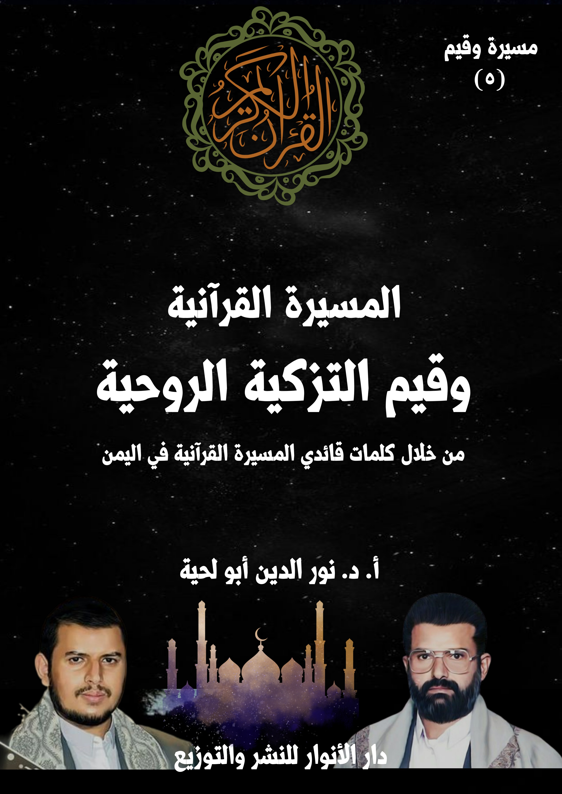

الكتاب: المسيرة القرآنية وقيم التزكية الروحية
الوصف: من خلال كلمات قائدي المسيرة القرآنية باليمن
السلسلة: مسيرة وقيم
المؤلف: أ. د. نور الدين أبو لحية
الناشر: دار الأنوار للنشر والتوزيع
الطبعة: الأولى، 1445 هـ
عدد الصفحات: 616
ISBN: 978-620-4-72102-6
لمطالعة الكتاب من تطبيق مؤلفاتي المجاني وهو أحسن وأيسر: هنا

يهدف هذا الكتاب إلى محاولة التعرف على ما ذكره قائدا المسيرة القرآنية حول ما يُطلق عليه [التزكية الروحية] أو [التربية الروحية]، أو [علم السلوك]، أو [علم الإحسان]، أو كيفية التواصل مع الله، وتهيئة النفس لتصبح أهلا لذلك.
وكل ذلك ـ مهما اختلفت تسميته ـ من المعارف القرآنية الضرورية التي وردت في أكثر القرآن الكريم، فهو يدعونا إلى تهذيب أنفسنا، وتربيتها، ومجاهدتها لتصبح أهلا للقرب من ربها، وأهلا لكل المقامات الشريفة التي ترتبط بذلك القرب.
وبناء على البصائر القرآنية المرتبطة بالتزكية الروحية نرى اهتمام قائدي المسيرة القرآنية بالحديث عنها في أكثر المناسبات، باعتبار أن القرآن الكريم هو الكتاب الذي يدلنا على الصراط المستقيم الذي به نتعرف على الله، وبه نهذب أنفسنا لنسلك السبيل إليه.
وقد رأينا من خلال استقراء ما ذكراه في هذا الجانب المهم، أنه يمكن تقسيمها إلى ثلاثة أقسام:
الأول: حول الأسس التي تقوم عليها التزكية، وذلك للعودة بها إلى المرجعية القرآنية، بدل تلك المرجعيات الكثيرة التي وقعت فيها الجهات التي اهتمت بهذا الجانب، حيث ربطوا التزكية بالكثير من الطقوس والمفاهيم الغريبة التي لا علاقة لها بالقرآن الكريم.
الثاني: حول وسائل التزكية، والتي يشير إليها قوله تعالى: ﴿يَا أَيُّهَا الَّذِينَ آمَنُوا اتَّقُوا اللَّهَ وَابْتَغُوا إِلَيْهِ الْوَسِيلَةَ وَجَاهِدُوا فِي سَبِيلِهِ لَعَلَّكُمْ تُفْلِحُونَ﴾ [المائدة: 35]
الثالث: حول ثمار التزكية، وهي تلك الصفات التي وصف الله تعالى بها عباده الصالحين المخلصين، من كونهم تائبين ومتقين ومتوكلين وصابرين وشاكرين وراجين وخائفين ومحبين وغير ذلك من الصفات.
وكل ذلك ـ مهما اختلفت تسميته ـ من المعارف القرآنية الضرورية التي وردت في أكثر القرآن الكريم، فهو يدعونا إلى تهذيب أنفسنا، وتربيتها، ومجاهدتها لتصبح أهلا للقرب من ربها، وأهلا لكل المقامات الشريفة التي ترتبط بذلك القرب.
وقد أشار إلى هذا الجانب المهم من جوانب الإسلام قوله تعالى في عد وظائف رسول الله صلى الله عليه وآله وسلم: ﴿كَمَا أَرْسَلْنَا فِيكُمْ رَسُولًا مِنْكُمْ يَتْلُو عَلَيْكُمْ آيَاتِنَا وَيُزَكِّيكُمْ وَيُعَلِّمُكُمُ الْكِتَابَ وَالْحِكْمَةَ وَيُعَلِّمُكُمْ مَا لَمْ تَكُونُوا تَعْلَمُونَ﴾ [البقرة: 151]، وقال: ﴿هُوَ الَّذِي بَعَثَ فِي الْأُمِّيِّينَ رَسُولًا مِنْهُمْ يَتْلُو عَلَيْهِمْ آيَاتِهِ وَيُزَكِّيهِمْ وَيُعَلِّمُهُمُ الْكِتَابَ وَالْحِكْمَةَ وَإِنْ كَانُوا مِنْ قَبْلُ لَفِي ضَلَالٍ مُبِينٍ﴾ [الجمعة: 2]
ففي كلا الآيتين الكريمتين يخبرنا الله تعالى أن من وظائف الرسل الأساسية [التزكية]، وهي تعني كلا المعنيين: التزكية الروحية، والتي تؤهل صاحبها لإقامة علاقة طيبة مع الله تعالى، والتزكية الأخلاقية، والتي تؤهله لإقامة علاقة طيبة مع الخلق، وبذلك فإن التزكية هي الوسيلة التي تُهذب بها النفس لتصبح صالحة لإقامة العلاقات الطيبة مع الخالق أو خلقه.
وقد رتب الله تعالى التزكية في الآيتين الكريمتين بعد التلاوة، ليبين أنها مؤسسة عليها؛ فتلاوة القرآن حق تلاوته تؤدي لا محالة للتزكية.
وقيم التزكية الروحية (6)
ورتبها قبل العلم، ليبين أنه لا يمكن للعلم أن ينفع صاحبه ما لم يكن مصحوبا بالتزكية، ولذلك أخبر عن الانحراف الكبير الذي وقع فيه ذلك الذي اهتم بالعلم، ولم يهتم بتزكية نفسه، وتخليصها من أهوائها، كما قال تعالى: ﴿وَاتْلُ عَلَيْهِمْ نَبَأَ الَّذِي آتَيْنَاهُ آيَاتِنَا فَانْسَلَخَ مِنْهَا فَأَتْبَعَهُ الشَّيْطَانُ فَكَانَ مِنَ الْغَاوِينَ وَلَوْ شِئْنَا لَرَفَعْنَاهُ بِهَا وَلَكِنَّهُ أَخْلَدَ إِلَى الْأَرْضِ وَاتَّبَعَ هَوَاهُ فَمَثَلُهُ كَمَثَلِ الْكَلْبِ إِنْ تَحْمِلْ عَلَيْهِ يَلْهَثْ أَوْ تَتْرُكْهُ يَلْهَثْ ذَلِكَ مَثَلُ الْقَوْمِ الَّذِينَ كَذَّبُوا بِآيَاتِنَا فَاقْصُصِ الْقَصَصَ لَعَلَّهُمْ يَتَفَكَّرُونَ سَاءَ مَثَلًا الْقَوْمُ الَّذِينَ كَذَّبُوا بِآيَاتِنَا وَأَنْفُسَهُمْ كَانُوا يَظْلِمُونَ مَنْ يَهْدِ اللَّهُ فَهُوَ الْمُهْتَدِي وَمَنْ يُضْلِلْ فَأُولَئِكَ هُمُ الْخَاسِرُونَ﴾ [الأعراف: 175 ـ 178]
فهاته الآيات الكريمة تعطينا النموذج الذي يقع فيه من يهتمون بالعلم دون تزكية أنفسهم، وهو ما يؤهلهم لأن يصبحوا من حزب الشيطان، الذين يقومون بتحريف دين الله ليتناسب مع الأهواء.
ولذلك فإن القرآن الكريم يذكر أن كل التحريفات والأباطيل التي وقعت فيها الأديان كانت نتيجة دنس النفس، وعدم تزكيتها، كما قال تعالى: ﴿يَا أَيُّهَا الَّذِينَ آمَنُوا إِنَّ كَثِيرًا مِنَ الْأَحْبَارِ وَالرُّهْبَانِ لَيَأْكُلُونَ أَمْوَالَ النَّاسِ بِالْبَاطِلِ وَيَصُدُّونَ عَنْ سَبِيلِ اللَّهِ وَالَّذِينَ يَكْنِزُونَ الذَّهَبَ وَالْفِضَّةَ وَلَا يُنْفِقُونَهَا فِي سَبِيلِ اللَّهِ فَبَشِّرْهُمْ بِعَذَابٍ أَلِيمٍ يَوْمَ يُحْمَى عَلَيْهَا فِي نَارِ جَهَنَّمَ فَتُكْوَى بِهَا جِبَاهُهُمْ وَجُنُوبُهُمْ وَظُهُورُهُمْ هَذَا مَا كَنَزْتُمْ لِأَنْفُسِكُمْ فَذُوقُوا مَا كُنْتُمْ تَكْنِزُونَ﴾ [التوبة: 34 ـ 35]
فالآيتان الكريمتان تشيران إلى السبب الذي جعل الكثير من الأحبار والرهبان يصدون عن سبيل الله، وهو افتقارهم للزهد والعفاف، ولذلك قدم قوله: ﴿لَيَأْكُلُونَ أَمْوَالَ النَّاسِ بِالْبَاطِلِ﴾ على قوله: ﴿وَيَصُدُّونَ عَنْ سَبِيلِ اللَّهِ﴾ لبيان أن سبب الصد هو ذلك الحب
وقيم التزكية الروحية (7)
الجم للمال، والذي جعلهم يبيعون من أجله دينهم، ويحرفوه، حتى يتناسب مع مطامعهم.
وهكذا أخبر الله تعالى أن السبب الحائل بين المعاندين واتباع الحق هو ذلك الران الذي طغى على قلوبه، فمنعهم من رؤية الحق، أو الإذعان له، كما قال تعالى: ﴿وَيْلٌ يَوْمَئِذٍ لِلْمُكَذِّبِينَ الَّذِينَ يُكَذِّبُونَ بِيَوْمِ الدِّينِ وَمَا يُكَذِّبُ بِهِ إِلَّا كُلُّ مُعْتَدٍ أَثِيمٍ إِذَا تُتْلَى عَلَيْهِ آيَاتُنَا قَالَ أَسَاطِيرُ الْأَوَّلِينَ كَلَّا بَلْ رَانَ عَلَى قُلُوبِهِمْ مَا كَانُوا يَكْسِبُونَ﴾ [المطففين: 10 ـ 14]، وقال: ﴿فَلَمَّا جَاءَتْهُمْ آيَاتُنَا مُبْصِرَةً قَالُوا هَذَا سِحْرٌ مُبِينٌ وَجَحَدُوا بِهَا وَاسْتَيْقَنَتْهَا أَنْفُسُهُمْ ظُلْمًا وَعُلُوًّا فَانْظُرْ كَيْفَ كَانَ عَاقِبَةُ الْمُفْسِدِينَ﴾ [النمل: 13 ـ 14]
ولذلك أخبر الله تعالى أن من وظائف الكتاب والرسول تزكية النفوس، لإخراجها من ظلمات الأهواء، والزج بها في أنوار اليقين، كما قال تعالى: ﴿كِتَابٌ أَنْزَلْنَاهُ إِلَيْكَ لِتُخْرِجَ النَّاسَ مِنَ الظُّلُمَاتِ إِلَى النُّورِ بِإِذْنِ رَبِّهِمْ إِلَى صِرَاطِ الْعَزِيزِ الْحَمِيدِ﴾ [إبراهيم: 1]
ومن الأمثلة على ذلك ما ذكره السيد حسين عند حديثه عن دور رسول الله صلى الله عليه وآله وسلم الوارد في قوله تعالى: ﴿وَيُزَكِّيهِمْ﴾ [البقرة: 129]، حيث قال: (يزكيهم، وينورهم، ويخرجهم من الظلمات إلى النور، ويجعل منهم أفراداً صالحين، يجعل منهم أعزة على الكافرين، يجعل منهم أمة قوية، أمة متوحدة، أمة تنطلق في ميادين الحياة لتأمر الأمم الأخرى بالمعروف وتنهى عن المنكر)(1)
__________ (1) دروس من هدي القرآن الكريم، ألقاه السيد حسين بدر الدين الحوثي اليمن ـ صعدة.المسيرة القرآنية وقيم التزكية الروحية (8)
وهكذا تكلم السيد عبد الملك عن أثر الفواحش في تدنيس النفس، وجعلها غير صالحة للتواصل مع الله تعالى، حيث قال: (الله يريد لنا كمؤمنين وكمجتمع مسلم أن نتزكى، أن تكون نفوسنا نفوسا زاكية، طاهرة، مشاعرنا نظيفة، قلوبنا ووجداننا نقي، الزكاء في النفس من أهم ما يحتاج إليه الإنسان لصلاح العمل، وللاستقامة في هذه الحياة)(1)
ثم ذكر الأثر الأخلاقي لزكاء النفس، فقال: (والنفس الزاكية هي التي تتجذر فيها مكارم الأخلاق، وتنمو فيها المشاعر الطيبة؛ وبالتالي يكون لهذا الأهمية الكبيرة في الواقع العملي في واقع الحياة، الإنسان إذا كانت نفسه زاكية يكون عطاؤه في هذه الحياة عطاء جيدا، عطاء إيجابيا، عطاء سليما، نتائج جهده في هذه الحياة نتائج إيجابية، اهتماماته اهتمامات جيدة، أعماله أعمالا جيدة)(2)
ثم ذكر أثر التزكية على الواقع بمختلف مجالاته، فقال: (وهكذا يكون لزكاء النفس الأثر الكبير في واقع الحياة وفي مسيرة الحياة، في الأعمال والاهتمامات والمواقف، يقف المواقف الصحيحة، المواقف الإيجابية، يستطيع أن يتحرك في هذه الحياة وينهض بمسؤوليته، يكون أكثر صبرا، وأعظم قوة وتماسكا نفسيا في مواجهة التحديات، وفي مواجهة الصعوبات، وفي النهوض بالمسؤوليات)(3)
ثم ذكر نتائج تدنيس النفس، فقال: (إذا خسر زكاء النفس، وتدنست نفسه، فهذه حالة خطيرة على الإنسان، يكون ميّالا إلى حد يفقد فيه توازنه وانضباطه، يكون ميالا إلى الرذائل، نحو المفاسد، نحو الأشياء السيئة، يصعب عليه أن يضبط نفسه ومشاعره؛ وبالتالي
__________ (1) جريمة الزنى وآثارها المدمرة للإنسان والحياة، المحاضرة الرمضانية الخامسة عشرة 15 ـ 9 ـ 1440 هـ، الموافق لـ: 20 ـ 5 ـ 2019م. (2) المرجع السابق. (3) المرجع السابق.المسيرة القرآنية وقيم التزكية الروحية (9)
أن يتوازن في مواقفه وأعماله، تتغير نفسيته، تتغير اهتماماته، تتغير وتتبدل مشاعره، تتأثر أيضا أعماله بالتالي، مستوى التحمل، والتوازن، والتماسك، والاستقرار النفسي والمعنوي لديه يختل، وهذا يؤثر عليه في مواقفه، في تصرفاته، في أعماله في أشياء كثيرة)(1)
ثم ذكر الانهيار الأخلاقي الذي يقع فيه المدنس لنفسه، فقال: (أيضا مكارم الأخلاق تنقلع جذورها من نفسه، يصبح دنيء النفس، منحط النفس، يكون متقبلا ومستسيغا للأمور القذرة، والرذائل، والخسائس، والنقائص، ميّالا إلى سفه الأمور، منحطا في تصرفاته)(2)
ثم ذكر أثر ذلك على إنسانية الإنسان، فقال: (وهذا يوجه ضربة قاضية لإنسانية الإنسان، كرامة الإنسان، لهويته الإنسانية، يكون قريبا من حالة الحيوانات الأخرى، التي لا تعيش في واقع حياتها التوازن النفسي؛ لأنها تتبع الغرائز، الحيوانات الأخرى تشتغل بالغريزة، لا تشتغل بالضوابط الأخلاقية والشرعية، بالغريزة، ولا لوم عليها؛ لأن حالها يختلف عن الإنسان، حال الكلاب، حال الحمير.. حال الحيوانات الأخرى؛ أما الإنسان فاللوم عليه، هو في موقع التكليف، هو الذي منحه الله ورسم له طريق الخير والشرف والكرامة والمؤهلات والعوامل المساعدة التي تساعده على سمو النفس وزكائها)(3)
ثم ذكر اهتمام أعداء الأمة بإشاعة الفساد ليسهل عليهم السيطرة على من يدنسون نفوسهم، فقال: (المسألة خطيرة جدا، الإنسان إذا تدنّست نفسه، وإذا ألحق بعمق نفسه ومشاعره هذا الأثر السيئ للرذائل والمفاسد؛ يتأثر تلقائيا في أعماله، وفي مسيرته في الحياة،
__________ (1) المرجع السابق. (2) المرجع السابق. (3) المرجع السابق.المسيرة القرآنية وقيم التزكية الروحية (10)
ولهذا يركّز الأعداء (أعداء الأمة) يركزون على نشر هذه المفاسد؛ لأنها تحقق لهم هذه الأهداف جملة وتفصيلا: فصل الناس عن الله سبحانه وتعالى في رعايته، في نصره، في تأييده، في توفيقه..إلخ. إبعاد الناس عن العلاقة الإيمانية بالله، وما يترتب عليها من نتائج إيجابية في الرعاية الإلهية، وأيضا في الأثر النفسي، ثم كذلك ما يترتب على الموضوع من تأثيرات نفسيته سلبية جدا، والتأثيرات ـ كذلك ـ في الواقع العملي، وهذه مسألة خطيرة جدا)(1)
وغيرها من التصريحات الكثيرة التي سنذكرها في هذا الجزء والجزء التالي له، باعتبار الصلة بين التزكية الأخلاقية والتزكية الروحية.
وقد رأينا من خلال استقراء ما ذكراه في هذا الجانب المهم، أنه يمكن تقسيمها إلى ثلاثة أقسام:
الأول: حول الأسس التي تقوم عليها التزكية، وذلك للعودة بها إلى المرجعية القرآنية، بدل تلك المرجعيات الكثيرة التي وقعت فيها الجهات التي اهتمت بهذا الجانب سواء من الصوفية أو غيرهم، حيث ربطوا التزكية بالكثير من الطقوس والمفاهيم الغريبة التي لا علاقة لها بالقرآن الكريم.
الثاني: حول وسائل التزكية، والمقصود بها ما ورد في القرآن الكريم من الوسائل المختلفة التي تتطهر بها النفس وتتهذب، والتي أشار إليها قوله تعالى: ﴿يَا أَيُّهَا الَّذِينَ آمَنُوا اتَّقُوا اللَّهَ وَابْتَغُوا إِلَيْهِ الْوَسِيلَةَ وَجَاهِدُوا فِي سَبِيلِهِ لَعَلَّكُمْ تُفْلِحُونَ﴾ [المائدة: 35]، وقوله: ﴿أُولَئِكَ الَّذِينَ يَدْعُونَ يَبْتَغُونَ إِلَى رَبِّهِمُ الْوَسِيلَةَ أَيُّهُمْ أَقْرَبُ وَيَرْجُونَ رَحْمَتَهُ وَيَخَافُونَ عَذَابَهُ إِنَّ عَذَابَ رَبِّكَ كَانَ مَحْذُورًا﴾ [الإسراء: 57]
__________ (1) المرجع السابق.المسيرة القرآنية وقيم التزكية الروحية (11)
وقد ورد في القرآن الكريم الكثير من التفاصيل المرتبطة بتلك الوسائل من التلاوة والصلاة والصيام والذكر والدعاء والإنفاق والحج وغيرها، وهي تغني عن كل تلك الطقوس الوافدة الغريبة.
الثالث: حول ثمار التزكية، وهي تلك الصفات التي وصف الله تعالى بها عباده الصالحين المخلصين، كما في قوله تعالى: ﴿التَّائِبُونَ الْعَابِدُونَ الْحَامِدُونَ السَّائِحُونَ الرَّاكِعُونَ السَّاجِدُونَ الْآمِرُونَ بِالْمَعْرُوفِ وَالنَّاهُونَ عَنِ الْمُنْكَرِ وَالْحَافِظُونَ لِحُدُودِ اللَّهِ وَبَشِّرِ الْمُؤْمِنِينَ﴾ [التوبة: 112]
وقد ورد في القرآن الكريم الكثير من التفاصيل المرتبطة بتلك الثمار من التوبة والتقوى والتوكل والصبر والشكر والافتقار والإخلاص والخوف والرجاء والمحبة، وغيرها، وهي تغني عن كل ما زج في التراث الإسلامي من الأوصاف التي تتعارض في الكثير منها مع الشخصية الإسلامية المتزنة السائرة على الصراط المستقيم.
بناء على هذا قسّمنا هذا الكتاب إلى ثلاثة فصول، تناولنا في كل فصل ركنا من الأركان، وكل ذلك من خلال كلمات قائدي المسيرة القرآنية، مع التنبيه إلى أننا اكتفينا بطرح ما ذكراه من دون تحليل أو شرح مفصّل، لأنا قمنا بذلك من خلال التسجيلات الصوتية المرتبطة بالكتاب، مثله مثل سائر كتب السلسلة.
ونحب أن ننبه القارئ الكريم إلى أننا ـ في هذا الجزء وفي الأجزاء التالية ـ عندما نذكر في كل قضية اهتمام قائدي المسيرة القرآنية بها، لا يستدعي ذلك ذكر النماذج من كلام كلا القائدين، ذلك أن النموذج مرتبط بتفاصيل ما ذُكر حول الموضوع، وليس ذات الموضوع.
ذلك أننا عند المقارنة بين كلمات ودروس السيد حسين، وكلمات ودروس السيد عبد الملك نجد أن الأول منهما اهتم أكثر بالتأصيل للمشروع القرآني، بينما اهتم الثاني بما
وقيم التزكية الروحية (12)
يستدعي ذلك التأصيل من تفاصيل وفروع كثيرة، وقد نقلنا في الأجزاء السابقة الكثير من تلك التأصيلات التي ذكرها السيد حسين، وفي المحال المختلفة.
ولهذا، فإننا إذا عدنا إلى القيم المرتبطة بالتزكية، نجد السيد حسين يذكرها كثيرا، ولكن ليس في محل واحد، بل هو في كل كلمة أو درس يحث على أهمية تزكية النفس، ومن الجوانب المختلفة، في نفس الوقت الذي نجد فيه السيد عبد الملك، وبحسب الظروف المتاحة، والمدة الطويلة، يتكلم عن التفاصيل الكثيرة؛ فقد خصص التقوى مثلا بدروس كثيرة، فصّلها من كل الجوانب، وهكذا في القضايا المختلفة.
ولذلك فإننا إذا ذكرنا اهتمام قائدي المسيرة القرآنية بالقضية المطروحة، نشير إلى هذين النوعين من الاهتمام: الاهتمام التأصيلي، والاهتمام التفصيلي، فكلاهما اهتمام.
أولا ـ المسيرة القرآنية.. وأسس التزكية
الركن الأول من أركان التزكية الروحية، والتي لا تتم بطريقة صحيحة من دونها هي قيامها ـ كما يذكر قائدا المسيرة القرآنية ـ على المنهج الإسلامي الخالص، لا على المناهج التي حاول المحرّفون على مدار التاريخ زجها فيها.
وهم أنواع متعددة، منهم أولئك الذين تأثروا برهبانية أهل الكتاب؛ فخلطوا التزكية الإسلامية بالرهبانية النصرانية، مع أن الله تعالى يعتبر الرهبانية أمرا مبتدعا في النصرانية، كما قال تعالى: ﴿وَرَهْبَانِيَّةً ابْتَدَعُوهَا مَا كَتَبْنَاهَا عَلَيْهِمْ إِلَّا ابْتِغَاءَ رِضْوَانِ اللَّهِ فَمَا رَعَوْهَا حَقَّ رِعَايَتِهَا فَآتَيْنَا الَّذِينَ آمَنُوا مِنْهُمْ أَجْرَهُمْ وَكَثِيرٌ مِنْهُمْ فَاسِقُونَ﴾ [الحديد: 27]، فالآية الكريمة تشير إلى ذلك الانحراف الذي دب إلى المسيحية نتيجة سوء فهمها لتعاليم المسيح عليه السلام.
ومنهم أولئك الذين خلطوا التزكية بما يطلق عليه التصوف اليهودي، وما فيه من الطقوس والأسرار الغريبة، كأسرار الحروف ونحوها، والتي لا علاقة لها بديننا، مع أن الله تعالى قد نبه إليها، وحذر منها، فقال: ﴿وَلَمَّا جَاءَهُمْ رَسُولٌ مِنْ عِنْدِ اللَّهِ مُصَدِّقٌ لِمَا مَعَهُمْ نَبَذَ فَرِيقٌ مِنَ الَّذِينَ أُوتُوا الْكِتَابَ كِتَابَ اللَّهِ وَرَاءَ ظُهُورِهِمْ كَأَنَّهُمْ لَا يَعْلَمُونَ وَاتَّبَعُوا مَا تَتْلُو الشَّيَاطِينُ عَلَى مُلْكِ سُلَيْمَانَ وَمَا كَفَرَ سُلَيْمَانُ وَلَكِنَّ الشَّيَاطِينَ كَفَرُوا يُعَلِّمُونَ النَّاسَ السِّحْرَ وَمَا أُنْزِلَ عَلَى الْمَلَكَيْنِ بِبَابِلَ هَارُوتَ وَمَارُوتَ وَمَا يُعَلِّمَانِ مِنْ أَحَدٍ حَتَّى يَقُولَا إِنَّمَا نَحْنُ فِتْنَةٌ فَلَا تَكْفُرْ فَيَتَعَلَّمُونَ مِنْهُمَا مَا يُفَرِّقُونَ بِهِ بَيْنَ الْمَرْءِ وَزَوْجِهِ وَمَا هُمْ بِضَارِّينَ بِهِ مِنْ أَحَدٍ إِلَّا بِإِذْنِ اللَّهِ وَيَتَعَلَّمُونَ مَا يَضُرُّهُمْ وَلَا يَنْفَعُهُمْ وَلَقَدْ عَلِمُوا لَمَنِ اشْتَرَاهُ مَا لَهُ فِي الْآخِرَةِ مِنْ خَلَاقٍ وَلَبِئْسَ مَا شَرَوْا بِهِ أَنْفُسَهُمْ لَوْ كَانُوا يَعْلَمُونَ﴾ [البقرة: 101 ـ 102]
وقيم التزكية الروحية (14)
ومنهم أولئك الذين خرجوا عن المنهج القرآن، ووقعوا في الكثير من الشطحات والأوهام التي صرفت عن جوهر هذا العلم وروحه ومقاصده إلى معان شوهته، وانحرفت به عن مساره الذي هو تزكية النفس إلى معان أخرى لا علاقة لها بالقرآن، وكلها مستمد من الفلسفات المختلفة.
وقد عبر بعضهم عن مصادر ذلك، فقال: (وأما وحدة الوجود الحلولية التي تجعل من الله كائنا يحل في مخلوقاته، أو الاتحادية بالمعنى المفهوم خطأ، تلك التي تجعل من الكائن الفاني شخصية تتحد بالموجود الدائم الباقي، المنزه عن سائر النسب والإضافات، والأحياز الزمانية والمكانية المحدثة، أو يتحد به شيء منها، فإنها مذهب هندي أو مسيحي، وليس بإسلامي، ولا يعرفه الإسلام، استمده أهل الشذوذ في التصوف الإسلامي من الفلسفة البائدة، وغذوا به مذهبهم الشاذ بفكر أفلاطونية، وآراء بوذية وفارسية، عن طريق الفارابي وابن سينا، حاله أن المتتبع لحياة الحلاج ومؤلفات السهروردي وابن عربي يرى أنهم تأثروا بالمتفلسفة المسلمين الذين أخذوا عن الفلسفة الأفلاطونية الحديثة والأرسطو طاليسية)(1)
وغيرها من المنابع الكثيرة التي اندست في هذا الركن من أركان الإسلام، فأساءت إليه، وحولته إلى شيء معقد، خاص بخاص الخاصة، مع أن القرآن الكريم يدعو كل الأمة إليه، بل يبين أنه لا يمكن أن يتم الفلاح من دونه، كما قال تعالى: ﴿قَدْ أَفْلَحَ مَنْ تَزَكَّى﴾ [الأعلى: 14]، وقال: ﴿وَنَفْسٍ وَمَا سَوَّاهَا فَأَلْهَمَهَا فُجُورَهَا وَتَقْوَاهَا قَدْ أَفْلَحَ مَنْ زَكَّاهَا وَقَدْ خَابَ مَنْ دَسَّاهَا﴾ [الشمس: 7 ـ 10]
ولهذا، فإن القرآن الكريم يحوي كل الحقائق المرتبطة بالتزكية، والتي تغني عن غيره،
__________ (1)) جمهرة الأولياء وأعلام أهل التصوف للمنوفي الحسيني، 1/292.المسيرة القرآنية وقيم التزكية الروحية (15)
ذلك أنها مستمدة علم من الله تعالى بخلقه، لا تلك العلوم التي يختلط فيها الحق والباطل، والعقل والهوى، وقد قال الله تعالى يخبر عن نفسه، وعلمه بخلقه: ﴿هُوَ أَعْلَمُ بِكُمْ إِذْ أَنْشَأَكُمْ مِنَ الْأَرْضِ وَإِذْ أَنْتُمْ أَجِنَّةٌ فِي بُطُونِ أُمَّهَاتِكُمْ فَلَا تُزَكُّوا أَنْفُسَكُمْ هُوَ أَعْلَمُ بِمَنِ اتَّقَى﴾ [النجم: 32]
ولذلك ذكر أنه وحده من يستحق التزكية، فقال: ﴿بَلِ اللَّهُ يُزَكِّي مَنْ يَشَاءُ وَلَا يُظْلَمُونَ فَتِيلًا﴾ [النساء: 49]، وقال: ﴿وَلَكِنَّ اللَّهَ يُزَكِّي مَنْ يَشَاءُ وَاللَّهُ سَمِيعٌ عَلِيمٌ﴾ [النور: 21]
وأخبر عن دور رسول الله صلى الله عليه وآله وسلم فيها، فقال: ﴿كَمَا أَرْسَلْنَا فِيكُمْ رَسُولًا مِنْكُمْ يَتْلُو عَلَيْكُمْ آيَاتِنَا وَيُزَكِّيكُمْ وَيُعَلِّمُكُمُ الْكِتَابَ وَالْحِكْمَةَ وَيُعَلِّمُكُمْ مَا لَمْ تَكُونُوا تَعْلَمُونَ﴾ [البقرة: 151]، وقال: ﴿هُوَ الَّذِي بَعَثَ فِي الْأُمِّيِّينَ رَسُولًا مِنْهُمْ يَتْلُو عَلَيْهِمْ آيَاتِهِ وَيُزَكِّيهِمْ وَيُعَلِّمُهُمُ الْكِتَابَ وَالْحِكْمَةَ وَإِنْ كَانُوا مِنْ قَبْلُ لَفِي ضَلَالٍ مُبِينٍ﴾ [الجمعة: 2]
وأخبر عن دور الكتاب في توفير كل ما تحتاجه التزكية من حقائق وقيم، فقال: ﴿كِتَابٌ أَنْزَلْنَاهُ إِلَيْكَ لِتُخْرِجَ النَّاسَ مِنَ الظُّلُمَاتِ إِلَى النُّورِ بِإِذْنِ رَبِّهِمْ إِلَى صِرَاطِ الْعَزِيزِ الْحَمِيدِ﴾ [إبراهيم: 1]
بناء على هذا، سنذكر هنا ما ذكره قائدا المسيرة القرآنية من الأسس التي تقوم عليها التزكية الصحيحة المنطلقة من القرآن الكريم، والتي تغني عن كل ما عداه من المصادر.
أول الأسس التي تقوم عليها التزكية الصحيحة، هي الرجوع للقرآن الكريم، لتحقيق التزكية بكل معانيها، وبأسهل سبلها، ذلك أنه ـ أولا ـ يحمل الهداية المعصومة التي لا شك في صحتها، لكونها صادرة من منبع الهداية الصافي، بخلاف كتب التصوف
وقيم التزكية الروحية (16)
والفلسفة وغيرها، والتي اختلطت منابعها، كما ذكرنا.
وثانيا، أنه لا يكتفي بالتزكية الإرشادية، وتعليمنا كيف نزكي أنفسنا، بل يضم إليها التزكية التكوينية، فهو يؤهل التالي له لتتنزل عليه أنوار الهداية الإلهية، وهذا لا يتوفر أبدا في كل المراجع التي تهتم بالتزكية.
من المعاني الأساسية المرتبطة بعلاقة القرآن الكريم بالتزكية معرفة دور القرآن في تشكيل الشخصية المسلمة تشكيلا متكاملا، لأن دور التزكية هو تحقيق هذا التكامل، وفي جميع الجوانب.
وقد ذكر السيد عبد الملك هذا المعنى عند حديثه عن الأثر العظيم لهدي القرآن الكريم، حيث قال: (النصوص القرآنية إذا تأمل فيها الإنسان، والأثر العظيم لهدى الله في القرآن الكريم يصيغ الإنسان المؤمن هذه الصياغة، في نفسيته، في روحيته، في أعماله، في توجهه، في مواقفه، ينطلق في هذه الحياة وهو متحرر من كل المؤثّرات التي تساعد على استعباده واستغلاله، لا يقبل بأن يكون عبدا إلا لله سبحانه وتعالى، همه وهدفه الأكبر في هذه الحياة وتوجهه نحو الله سبحانه وتعالى)(1)
ثم ذكر نموذجا على ذلك، فقال: (لاحظوا، على مستوى العوامل الرئيسية التي تؤثّر في الناس، مسألة الخوف: الخوف عامل رئيسي لدى الكثير من الناس، يخضعهم للطاغوت،
__________ (1) مسك الختام.. بالتقوى والإيمان نصنع النصر ونقهر العدوان، المحاضرة الرمضانية الخامسة والعشرون 30 ـ 9 ـ 1439 هـ، الموافق لـ: 14 ـ 6 ـ 2018م.المسيرة القرآنية وقيم التزكية الروحية (17)
يدفعهم نحو الاستسلام، يشعرهم ـ دائما ـ بالعجز والضعف، يكبّلهم عن تحمل المسؤولية، يركعهم ويفقدهم الشعور بالحرية والكرامة والعزة، التربية الإيمانية هي: تعلّمنا أن نخاف من عذاب الله فوق كل شيء، الله يقول: ﴿إِنَّمَا ذَلِكُمُ الشَّيْطَانُ يُخَوِّفُ أَوْلِيَاءَهُ فَلَا تَخَافُوهُمْ وَخَافُونِ إِنْ كُنْتُمْ مُؤْمِنِينَ﴾ [آل عمران: 175](1)
ثم ذكر دور القرآن الكريم في تحرير الإنسان من الخوف، وفي كل المجالات، فقال: (القرآن يحررك من كل حالات الخوف من الآخرين، من قوى الشر والطاغوت والاستكبار والنفاق، يحررك نهائيا من الخوف منها، يرتقي بك حتى لا تكترث بكل ما بأيديها من وسائل للجبروت والقمع، أنت تمتلك من الإيمان بالله، من الإيمان بقضيتك العادلة، من الاستعداد العالي للتضحية، من الوعي بطبيعة الأحداث في هذه الحياة، بطبيعة قوى الشر والطاغوت وما تريده وما تسعى له، من إباء النفس وعزتها وكرامتها، من الثقة بالله والاعتماد عليه والتوكل عليه، من سمو الهدف في هذه الحياة، من اتجاه آمالك نحو الله فيما وعد به في الدنيا والآخرة، ما يحررك من أن تتحول إلى خائف مذعور منهم، وخانع مستسلم لهم)(2)
ثم ذكر قوله تعالى: ﴿أَتَخْشَوْنَهُمْ فَاللَّهُ أَحَقُّ أَنْ تَخْشَوْهُ إِنْ كُنْتُمْ مُؤْمِنِينَ﴾ [التوبة: 13] على البديل الذي يضعه الله تعالى للخوف من الآخرين، فقال: (وهكذا من جديد يحررك من الخشية منهم، في مقابل أن تخشى الله سبحانه وتعالى، تخشى الله جلّ شأنه في أن تفرّط في مسؤولياتك، في أن تقصّر في واجباتك، في أن يستعبدك الآخرون، وأن يعملوا على السيطرة
__________ (1) المرجع السابق. (2) المرجع السابق.المسيرة القرآنية وقيم التزكية الروحية (18)
عليك، وعلى توجيهك فيما هو معصية لله سبحانه وتعالى)(1)
ثم ذكر أهمية التزكية، ودورها في الحفاظ على الفطرة الإنسانية من أن تدنسها المخاوف أو المطامع، فقال: (القيمة الإيمانية قيمة أساسية للحفاظ على الإنسان المسلم في هويته، في استقامته، حتى لا يتحول في هذه الحياة إلى منافق عميل، ليس له من مهمة إلا أن يكون جنديا مخلصا ينفّذ أجندة أمريكا وإسرائيل، ويعمل لما هو لصالحهم)(2)
ثم ذكر دور قوى النفاق في تدنيس المجتمع المسلم، والحيلولة دون تزكيته، ليتحول إلى عميل للاستكبار، فقال: (لأن قوى النفاق تسعى لتحقيق ذلك تحت راية أمريكا وإسرائيل، إلى تحويل المجتمع الإسلامي إلى مجتمع مجّند مع أمريكا، كما هو حال النظام السعودي، النظام الإماراتي، يسعون إلى تحويل بقية المجتمع المسلم على شاكلتهم، مجنّدا لخدمة أمريكا وإسرائيل، وأجندة أمريكا وإسرائيل، ومصالح أمريكا وإسرائيل، وتصبح وجهته في هذه الحياة هي هذه الوجهة، مشروعه في هذه الحياة هو هذا، اتجاهه في هذه الحياة هو هذا، لا يحمينا إلا الإيمان الواعي الصادق، الاعتصام بالله سبحانه وتعالى، والاهتداء بهديه، والتمسك بنهجه، والاقتداء برسوله صلى الله عليه وآله وسلم)(3)
ثم ذكر نماذج على ذلك بما دعا إليه القرآن الكريم من ثمار التزكية، ومن أمثلتها الرجاء والأمل، حيث قال: (ثم في الرجاء والأمل: آماله، رغباته، رجاؤه، نحو الله فيما وعد به، فيما وعد به في الدنيا والآخرة، ومرضاة الله سبحانه وتعالى أكبر وأسمى هدف يحمله ويسعى لتحقيقه في هذه الحياة، ﴿وَرِضْوَانٌ مِنَ اللَّهِ أَكْبَرُ﴾ [التوبة: 72]، أكبر همه وأعظم
__________ (1) المرجع السابق. (2) المرجع السابق. (3) المرجع السابق.المسيرة القرآنية وقيم التزكية الروحية (19)
أهدافه أن يرضى الله عنه، رضى الله الغاية الكبرى والمهمة لديه، هذه هي تربية الإيمان)(1)
ثم ذكر الآثار المترتبة على ذلك، فقال: (ويعي ما يترتب على مرضاة الله سبحانه وتعالى في أن يحظى برعاية من الله، بعون من الله، بتوفيق من الله سبحانه وتعالى، وهو في كل ذلك يرتبط بالقرآن الكريم، يهتدي بالقرآن الكريم، يستبصر بالقرآن الكريم، يساعده على ذلك التجاؤه الدائم بطلب الهداية، وتوجهه العملي؛ لأن القرآن كما قال الله عنه: ﴿هُدًى لِلْمُتَّقِينَ﴾ [البقرة: 2]، والمتقون هم يتجهون عمليا، فيستفيدون من القرآن ويهتدون به في إطار تحركهم العملي، نهوضهم بالمسؤولية، سعيهم للاستقامة والالتزام والطاعة، بهذا يزيدهم الله هداية بكتابه القرآن الكريم)(2)
وقد ذكر السيد عبد الملك هذا المعنى عند حديثه عن القرآن الكريم، وكونه المنهل الصافي لتحقيق التقوى، باعتبارها الثمرة الكبرى للتزكية الروحية، فقال: (في الحديث عن التقوى على ضوء الآيات القرآنية المباركة، نرى مسائل مهمة، وجوانب أساسية، لا بدّ من ملاحظتها والالتفات إليها، ولكي تتحقق التقوى للإنسان، تقوى الله سبحانه وتعالى، لا بدّ من العودة إلى القرآن الكريم، لنتعرف من خلال القرآن الكريم كيف تتحقق لنا التقوى، التي بها الوقاية لأنفسها من عذاب الله سبحانه وتعالى، والتي بها الوقاية لأنفسنا من كل ما
__________ (1) المرجع السابق. (2) المرجع السابق.المسيرة القرآنية وقيم التزكية الروحية (20)
فطرت عليه نفوسنا، من الحرص على الوقاية منه: الوقاية من الشر، الوقاية من الخزي، الوقاية من الضلال، الوقاية من كل ما يسبب الهوان في الدنيا والآخرة، الوقاية من الشرور والمصائب التي يتسبب بها الإنسان من خلال أعماله السيئة)(1)
ثم ذكر الأسس التي تقوم عليها التقوى من خلال القرآن الكريم، فقال: (إذا عدنا إلى القرآن الكريم نجد أن هناك أسسا مهمة تقوم عليها التقوى)(2)
ثم ذكر أول تلك الأسس، فقال: (من أول ما نلحظه في مسألة التقوى، وكيف تتحقق للإنسان: أنه لا بدّ لنا أن نعرف الطريق والبرنامج المشروع الذي تتحقق لنا به تقوى الله سبحانه وتعالى، لا بدّ لنا من رؤية نعرف من خلالها ماذا علينا أن نعمل، لكي تتحقق لنا التقوى، وما ينبغي لنا أن نترك، ما ينبغي علينا أن نتجنب، ما ينبغي علينا أن نتوقى، لكي تتحقق لنا الوقاية من كل ما نسعى للوقاية منه: كيف نسلم من الضلال، كيف نسلم من الشر، كيف نسلم من الخزي، كيف نسلم من عذاب الله في الدنيا والآخرة)(3)
ثم ذكر ما ورد في القرآن الكريم من بيان أهمية التقوى، وعلاقتها بالفلاح والفوز، فقال: (لأهمية التقوى للإنسان، ولأهمية التركيز عليها بشكل أساسي، حتى تتحول إلى برنامج حياة، ومشروع حياة، ومسار حياة؛ نجد الله سبحانه وتعالى يصف عباده المؤمنين، المفلحين، الفائزين بالمتقين، بالمتقين؛ لأنها حالة لا بدّ أن يلازمها الإنسان، لا بدّ أن يرتبط بها كمسار حياة)(4)
ثم ذكر التفريط في التقوى، وتجاه أي عمل، فقال: (عمل معين، أو مخالفة معينة، أو
__________ (1) القرآن الكريم.. المنهل الصافي لتحقيق التقوى، المحاضرة الرمضانية الحادية عشرة 13 ـ 9 ـ 1439 هـ، الموافق لـ: 28 ـ 5 ـ 2018م. (2) المرجع السابق. (3) المرجع السابق. (4) المرجع السابق.المسيرة القرآنية وقيم التزكية الروحية (21)
خطيئة معينة يمكن أن تجلب على هذا الإنسان شرا كبيرا وخطرا عظيما، يمكن أن تكون سبب هلاك لهذا الإنسان، أو سبب شقاء لهذا الإنسان، أولم تكن خطيئة واحدة لأبينا آدم عليه السلام سببا لشقائه ـ آنذاك ـ وخروجه من الجنة التي كان ينعم فيها، ويرتاح فيها، ووفرت له فيها كل أسباب السعادة والاستقرار ومتطلبات الحياة الأساسية، ﴿إِنَّ لَكَ أَلَّا تَجُوعَ فِيهَا وَلَا تَعْرَى وَأَنَّكَ لَا تَظْمَأُ فِيهَا وَلَا تَضْحَى﴾ [طه: 118 ـ 119]، فكيف بجنة الخلد، جنة الخلد التي وعد بها من؟ المتقون)(1)
ثم ذكر ما ورد في القرآن الكريم من البشارات الخاصة بالمتقين، ودورها في الترغيب فيها، فقال: (أغلب الآيات القرآنية التي تحدثت عن الجنة، وعن رضوان الله سبحانه وتعالى الذي هو أكبر وأعظم من الجنة، وما الجنة إلا من نتائجه، من تجلياته، من امتداداته، كل هذا ارتبط بالتقوى، وتعلّق الوعد الإلهي به (بالتقوى)، ﴿تِلْكَ الْجَنَّةُ الَّتِي نُورِثُ مِنْ عِبَادِنَا مَنْ كَانَ تَقِيًّا﴾ [مريم: 63]، ﴿أُعِدَّتْ لِلْمُتَّقِينَ﴾ [آل عمران: 133]، ﴿مَثَلُ الْجَنَّةِ الَّتِي وُعِدَ الْمُتَّقُونَ﴾ [محمد: 15]، وهكذا آيات كثيرة ربطت المسألة بالتقوى، فما أعظم التقوى، وما أهم التقوى، وما أهم أن يسعى الإنسان بكل جهده، وبالاعتماد على الله، وبالاستعانة بالله سبحانه وتعالى لكي يكون واحدا من عباد الله المتقين)(2)
ثم ذكر ما ورد في القرآن الكريم من صفات المتقين، فقال: (في القرآن الكريم جملة من المواصفات الأساسية التي يصف الله بها عباده المتقين، والمتقون هم المؤمنون، يعني لا يتحقق أن يكون الإنسان من المؤمنين، المؤمنين الصادقين، المؤمنين الذين وعدوا من الله بكل تلك الوعود الإلهية العظيمة، أن يحظوا برعاية عظيمة من الله في الدنيا والآخرة،
__________ (1) المرجع السابق. (2) المرجع السابق.المسيرة القرآنية وقيم التزكية الروحية (22)
بالفوز، بالفلاح، بالنجاة، بالسعادة، بالخير، بكل ما وعد الله به، هي حالة متلازمة: الإيمان والتقوى)(1)
ثم استدل بقوله تعالى: ﴿الم ذَلِكَ الْكِتَابُ لَا رَيْبَ فِيهِ هُدًى لِلْمُتَّقِينَ﴾ [البقرة: 1 ـ 2] على كون القرآن الكريم هو المنهل الصافي لاكتساب التقوى، فقال: (البرنامج الذي يعود إليه المتقون، والمرجع الثقافي والفكري الذي ينطلقون من خلاله في هذه الحياة، في أعمالهم، في مواقفهم، في التزاماتهم، في ولاءاتهم، برنامج حياتهم يأخذونه من أين؟ هل من المفكّر الفلاني، هناك رؤى في الدنيا، هناك نظم حياة في الدنيا، هناك الكثير من أبناء البشر يعتمدون في مسيرة حياتهم، في اتجاهاتهم بكلها على رؤية لفيلسوف معين، أو مفكّر معين، كل اتجاهات الناس في هذه الحياة لها مدارسها، لها مفكّروها، لها المفلسفون لها، ينطلقون من خلالها معتمدين لها في هذه الحياة.. المتقون اعتمادهم بالأساس هو على كتاب الله سبحانه وتعالى، يمثّل القرآن الكريم المرجعية والوثيقة الأساسية التي يعتمدون عليها بشكل رئيسي، وبهذا تتحقق التقوى، لا يمكن أن تتحقق التقوى إلا بهذا، فالله يقول: ﴿ذَلِكَ الْكِتَابُ لَا رَيْبَ فِيهِ هُدًى لِلْمُتَّقِينَ﴾ [البقرة: 2](2)
__________ (1) المرجع السابق. (2) المرجع السابق.المسيرة القرآنية وقيم التزكية الروحية (23)
قال في كتابه المبارك: ﴿ذَلِكَ الْكِتَابُ لَا رَيْبَ فِيهِ هُدًى لِلْمُتَّقِينَ﴾ [البقرة: 2]، فالمتقون يعتمدون على القرآن الكريم ككتاب هداية، وهذا ما يميّز علاقتهم بالقرآن عن غيرهم)(1)
ثم ذكر قول الإمام علي: (كتاب الله تسمعون به، وتبصرون به، وتنطقون به)، وعلق عليه بقوله: (كتاب الله على هذا الأساس: يكون هو المعتمد في الانطلاقة إلى واقع هذه الحياة، في الرؤية، في التقييم، في الموقف، في الولاء، في العداء، في النظرة العامة، في أشياء كثيرة جدّا؛ لأن القرآن هدايته هداية واسعة جدّا، واسعة للغاية، الله سبحانه وتعالى قال وهو يتحدث عن القرآن الكريم وعن كلماته في القرآن الكريم: ﴿قُلْ لَوْ كَانَ الْبَحْرُ مِدَادًا لِكَلِمَاتِ رَبِّي لَنَفِدَ الْبَحْرُ قَبْلَ أَنْ تَنْفَدَ كَلِمَاتُ رَبِّي﴾ [الكهف: 109]، هدي القرآن هدي واسع وشامل، أوسع من هذه الحياة، وأوسع مما فيها)(2)
ثم تحدث عن ضرورة الرسالة لتبليغ القرآن الكريم، وضرورة ذلك، وهو ما سنتحدّث عنه عند الحديث عن الأساس الثاني من أسس التزكية، وهو النبوة.
وقد ذكر السيد عبد الملك هذا المعنى عند حديثه عن قوله تعالى: ﴿وَالَّذِينَ إِذَا ذُكِّرُوا بِآيَاتِ رَبِّهِمْ لَمْ يَخِرُّوا عَلَيْهَا صُمًّا وَعُمْيَانًا﴾ [الفرقان: 73]، حيث قال: (هذه الآية آية عظيمة ومهمة جدّا، نحن كمتجمع مسلم، أهم وأعظم وأول وأكبر ما ينبغي أن نتأثر به في أفكارنا،
__________ (1) المنهجية الأساسية للاهتداء بالقرآن الكريم، المحاضرة الرمضانية الثانية عشرة 14 ـ 9 ـ 1439 هـ، الموافق لـ: 29 ـ 5 ـ 2018م. (2) المرجع السابق.المسيرة القرآنية وقيم التزكية الروحية (24)
في ثقافتنا، في نظرتنا، في اتجاهاتنا العملية، في مواقفنا، في ولاءاتنا، في عدائنا، في مسار حياتنا بكله، أهم، أعظم، أول ما يجب أن نتأثر به هو ماذا؟ آيات ربنا، كتابه، كلماته، توجيهاته، هذا هو الشيء الطبيعي لنا كأمة مسلمة)(1)
ثم ذكر تفريط المسلمين في القرآن الكريم، وعدم استفادتهم منه في هذا الجانب، وفي غيره من الجوانب، فقال: (هل كل منا في هذه الأمة كمسلم يحمل هذا التوجه، واتخذ قرارا بهذا، أن يعود تجاه القضايا، الأمور، المواقف، الأعمال إلى القرآن الكريم، إلى رؤية القرآن الكريم، إلى ثقافة القرآن الكريم، إلى توجيه الله في القرآن الكريم؟)(2)
ثم أجاب على هذا السؤال بقوله: (أولا عندنا أزمة في هذه المسألة نفسها، في اتخاذ قرار جاد، وفي أن يكون هناك توجه فعلي للعودة الجادة إلى القرآن الكريم، للارتباط الوثيق به في حياتنا، ومواقفنا، وتوجهاتنا بكلها، هناك مشكلة حقيقية في ذلك، كم من السياسيين يمكن أن يكون لديهم هذا التوجه، أو أن أكثر السياسيين يبحث له عن أفكار سياسية وقناعات سياسية وتوجهات سياسية يبنيها على اعتبارات، وعلى مسارات، وعلى معطيات، وعلى أفكار من هناك وهناك وهناك، كم تطلّع الساسة في مجتمعنا الإسلامي نحو الغرب ونحو الشرق لاستيراد فلسفات وأفكار وتوجهات ونظريات للاعتماد عليها في بناء واقع حياة هذه الأمة بكله، وصلوا إلى هذه الدرجة، كثير من الساسة، ولا يزال الكثيرون لديهم هذا التوجه، الاتجاه باهتماماتهم شرقا وغربا، إلى الغرب، إلى أمريكا وإلى دول بعيدة، إلى اتجاهات بعيدة، للبحث عن نظريات وأفكار بعيدة كل البعد عن هوية مجتمعنا الإسلامي،
__________ (1) مع عباد الرحمن في سورة الفرقان.. مواقف مشهودة وعاقبة محمودة، المحاضرة الرمضانية الرابعة والعشرون 29 ـ 9 ـ 1439 هـ، الموافق لـ: 13 ـ 6 ـ 2018م. (2) المرجع السابق.المسيرة القرآنية وقيم التزكية الروحية (25)
لماذا؟ ليبني عليها واقع وحياة مجتمعنا الإسلامي في كل شؤونه)(1)
ثم ذكر أهمية الرجوع للقرآن الكريم، وضرورته، فقال: (وهذا من أهم ما كان ينبغي الرجوع فيه إلى القرآن الكريم، إذا نحن أمة مسلمة نريد أن نتخذ موقفا معينا، أو قرارا معينا، أول ما يجب أن نرجع فيه إلى ماذا؟ إلى القرآن الكريم، إذا كنا أمة جادة في الاهتداء بكتاب الله، في الاتباع لكتاب الله، في التمسك بكتاب الله، يتجهون إلى من، بدلا من كتاب الله، بدلا من آيات ربهم؟ بدلا من آيات ربهم يتجهون إلى ترامب، إلى نتنياهو، يتجهون إلى أمريكا، يتجهون إلى إسرائيل، يتجهون إلى الغرب، ما هو الموقف وأين هو التوجه، وما هو القرار، فيعتمدون عليه)(2)
ثم ذكر هجر الأمة لكتابها، وفي كل المحال، وخطورة ذلك، فقال: (لاحظ كم في الساحة العامة، في التوجه العام، كم هناك من غفلة كبيرة وغياب ـ إلى حد كبير ـ لدى الكثير، غياب تام عن هذا التوجه أصلا، القرآن مهجور، آيات الله مهجورة، الإعلامي يفكر بعيدا عن القرآن، السياسي يفكر بعيدا عن القرآن، الاقتصادي يفكر بعيدا عن القرآن، المتمدن والمتحضر على النمط الغربي يفكر بعيدا عن القرآن)(3)
ثم ذكر النظرة السلبية التي يحملها البعض عن القرآن الكريم، فقال: (بل البعض لديهم نظرة سلبية تجاه القرآن الكريم، نظرة سلبية بكل ما تعنيه الكلمة؛ إما لأن البعض يتخيل ويتصور أن صناعة القرآن هي النمط التي رأى عليه ـ مثلا ـ التكفيريين، أو نحوهم من وعاظ السلاطين)(4)
__________ (1) المرجع السابق. (2) المرجع السابق. (3) المرجع السابق. (4) المرجع السابق.المسيرة القرآنية وقيم التزكية الروحية (26)
ثم دعا إلى إقامة علاقة صحيحة مع القرآن الكريم، تختلف عن تلك التي يقيمها المنحرفون عنه المشوهون له، فقال: (العلاقة السليمة والصحيحة للأمة، العلاقة المفترضة لها ما بينها وبين القرآن هي: علاقة الاهتداء، الله قال عن القرآن: ﴿هُدًى لِلْمُتَّقِينَ﴾ [البقرة: 2]، الاهتداء، القرآن يصنع لك الفكرة، يصنع لك النظرة، يحدد لك التوجه، يرسم لك المسار، يحدد لك الأسس التي تبني عليها موقفك وقرارك واتجاهك)(1)
ثم ذكر عدم اهتمام أكثر المسلمين بتشكيل وعيهم ورؤاهم وفهمهم للقضايا المختلفة من خلال القرآن الكريم، فقال: (هذا شيء غائب لدى الكثير من الناس، كم هناك من مفاهيم كثيرة، كثيرة وكثيرة جدّا لا تنسجم مع القرآن الكريم، تخالفه، والكثير من الناس يتشبث بها، مفاهيم سياسية، مفاهيم عامة، مفاهيم ثقافية، مفاهيم دينية.. تختلف كليا عن القرآن الكريم، متى تقبل الأمة بأن تكون رؤية القرآن فوق كل رؤية؟ وأن تكون مفاهيمه هي المفاهيم التي تعتمد عليها، وتتخلى ـ بكل رحابة صدر، بكل قناعة ـ عن أي مفاهيم مخالفة للقرآن الكريم، عن كل توجهات مخالفة للقرآن الكريم؟ متى يقتنع الكثير من الناس أن يبني موقفه وولاءه وعداءه على أساس القرآن الكريم، حتى يكون محقا، وحتى يكون عادلا، وحتى لا يكون ظالما وفي صف الطاغوت في هذه الحياة!؟)(2)
ثم دعا إلى المراجعة الفكرية على أساس العودة للقرآن الكريم، فقال: (هناك مشكلة حقيقية في واقع الأمة، ولكن الكثير من أبناء الأمة ـ ربما ـ لم يذكّروا، وإذا ذكّر الإنسان فينبغي أن يتذكر، إذا ذكّرت بآيات الله، آيات قرآنية تذكرك بموقف أنت مفرط فيه، تذكرك هو الرجوع العملي والاهتمام العملي، إذا ذكّرت من خلال القرآن الكريم تجاه مواقف، أو
__________ (1) المرجع السابق. (2) المرجع السابق.المسيرة القرآنية وقيم التزكية الروحية (27)
أعمال، أو تصرفات خاطئة، منحرفة، فالتذكر هو التفاعل العملي والاستجابة العملية التي نتجت عن انتباهك، بمجرد أن عرفت من خلال تلك الآية القرآنية أن هناك مسؤولية أنت مقصر فيها انتبهت، فاتجهت باستجابة عملية، أو موقف خاطئ أنت فيه انتبهت، ورجعت عن ذلك، أو تصرفات خاطئة، أو أفعال خاطئة، أو مساوئ أخلاق أنت تعملها، أو مكارم أخلاق أنت مقصّر فيها، حالة التذكر هي حالة انتباه، رجعت فيها عمليا إلى ما ينبغي عليك أن تعمل، والتزمت فيما ينبغي أن تترك)(1)
ثم دعا إلى التعامل الجاد مع القرآن الكريم باعتباره هداية الله القائمة على علمه ورحمته، وليست هداية بشرية قائمة على الأهواء، فقال: (عندما نتذكر مصدر هذه الآيات، ﴿وَالَّذِينَ إِذَا ذُكِّرُوا بِآيَاتِ رَبِّهِمْ﴾ [الفرقان: 73]، (بآيات ربّهم)، مصدر هذه الآيات والتوجيهات والأوامر، والنور الذي يعطينا البصيرة تجاه واقع الحياة بكله والتقييم الصحيح، مصدر هذه الآيات هو الله سبحانه وتعالى، ﴿فَبِأَيِّ حَدِيثٍ بَعْدَ اللَّهِ وَآيَاتِهِ يُؤْمِنُونَ﴾ [الجاثية: 6]، ما أتعسنا وما أشقانا عندما نتأثر بكلام سخيف، مصدره من؟ أحيانا مصدره إعلامي ساذج، منافق تافه، بائع ومشتري، أعطي قليلا من المال ليتحول إلى بوق ينفخ فيه الشيطان، وينفخ فيه الدجّالون، فيصل صداه إلى الكثير من الناس الذين يتأثرون به ويتفاعلون معه، ما أتعس البعض، وما أشقاهم، وما أغباهم عندما يتأثرون ـ أحيانا ـ بكلام، أو موقف مصدره من؟ ضال، مضل، مجرم بكل ما تعنيه الكلمة، من التكفيريين، أو من قوى الطاغوت، أو من عملاء أمريكا، ما أتعس البعض وأشقاهم عندما يتأثرون بما مصدره متفلسف يهودي، أو متفلسف من الغرب الكافر يقدّم نظرية معينة، أو فكرة معينة؛
__________ (1) المرجع السابق.المسيرة القرآنية وقيم التزكية الروحية (28)
فيسارعون إلى التأثر بها، والاتباع لها، والتمسك بها)(1)
ثم دعا إلى التأمل في مصدر القرآن الكريم لتبين عظمته، وأهميته، فقال: (مصدر القرآن الكريم، مصدر آياته وكلماته هو من؟ الله، هي آياته، وهي كلماته، الله رب السماوات والأرض، ملك السماوات والأرض)(2)
ثم ذكر ما يحصل من البشر عند تعظيمهم لأي جهة، ودعا إلى تطبيقه مع القرآن الكريم، فقال: (أحيانا قد يكون للكلام ثقله وتأثيره؛ لأن الناس ينظرون إلى أنه من جهة معتبرة: ملك، زعيم، قائد، سياسي معين، شخصية بارزة في الساحة، أو شخصية يروّج لها في الساحة تحت أي عنوان من العناوين، يروّج له بصفة هيئة كبار العلماء، أو المفتي، مفتي المملكة، أو إمام المسجد النبوي، أو زعيم، أو قائد، أو رئيس، أو مدري أيش، أو صفة معينة.. ثقل تلك الجهة في نظر الناس وفي ذهنياتهم يجعلهم يتأثرون بما يصدر منها من كلام، ويتفاعلون معه، حتى أن البعض من الزعماء ـ أصلا ـ لا يمتلكون لا خلفية ثقافية، خاصة في واقعنا العربي، في واقعنا العربي الكثير من الزعماء بالكاد يستطيع أن يقرأ كتابا كتب له، أو كذلك يعني محاضرة، أو كلمة، أو بيانا كتب له، بالكاد يستطيع أن يقرأه، ثم ترى البعض ينبهر به، يشخر فيه، ويتأثر به!.. على كل، إذا كان ما يؤثّر فيك أنك ترى في مصدر ذلك الكلام ما ترى فيه ـ من وجهة نظرك، وفي ذهنيتك، وفي نفسيتك ـ أنه من مصدر ثقيل مهم، مصدر القرآن هو الله، رب السماوات والأرض، رب العالمين، ملك الناس، من بيده الدنيا والآخرة، مالك الملك، ذو الجلال والإكرام، نأتي إلى بقية الأسماء الحسنى، الذي الأرض له والسماوات له، والذي بيده الدنيا والآخرة، بيده حياتك وموتك أنت وكل البشر، وهكذا
__________ (1) المرجع السابق. (2) المرجع السابق.المسيرة القرآنية وقيم التزكية الروحية (29)
بيده جلّ شأنه رزقك، مستقبلك، مصيرك، حسابك، كل شيء إليه، الله العلي العظيم، الله الذي هو عالم الغيب والشهادة، هو الرحمن الرحيم، الذي هو: الملك، القدوس، السلام، المؤمن، المهيمن، العزيز، الجبار، المتكبر، الذي هو: الخالق، البارئ، المصور، الذي له الأسماء الحسنى، فالله سبحانه وتعالى ملك هذا العالم، ملك هذا الكون بكله، ورب العالمين، ألا يكفي هذا في أن تدرك أهمية كلامه، أهمية توجيهاته؟ والذي لا يأتي إلا بالحق، ما هو منه فهو حق، ﴿لَا يَأْتِيهِ الْبَاطِلُ مِنْ بَيْنِ يَدَيْهِ وَلَا مِنْ خَلْفِهِ﴾ [فصلت: 42]، ﴿وَتَمَّتْ كَلِمَتُ رَبِّكَ صِدْقًا وَعَدْلًا لَا مُبَدِّلَ لِكَلِمَاتِهِ﴾ [الأنعام: 115](1)
ثم ذكر الفرق الكبير بين ما يأتينا من الله تعالى، وما يأتينا من غيره، فقال: (ما يأتي إلينا يأتي من منطلق رحمته بنا، هو ربنا الرحيم بنا، هو أرحم الراحمين، هو الرحمن الرحيم.. أما ما يأتي من الآخرين، من كثير ممن نتأثر بهم، من: ملوك، وأمراء، وزعماء، ورؤساء، ومضلين، من الفئات التي هي أبواق للباطل، من: إعلاميين، ومثقفين، وعلماء سوء.. ما يأتي من جانبهم: باطل، ضلال، تزييف للحقائق، خداع، من منطلق أهوائهم، من منطلق أطماعهم، من منطلق طغيانهم، من منطلق حقدهم، من منطلق إجرامهم، من منطلق فسادهم.. فكيف نترك ما مصدره الله ويأتينا بمقتضى رحمته، لصالح من؟ لصالح التأثر بما مصدره طواغيت، وضالون، ومجرمون، وفاسدون، وو..الخ. ومنطلقه حقدهم، ضغائنهم، كيف نترك ما مصدره الله وهو بدافع حكمته، ونتقبل جهالات، وما يأتينا من جهة آخرين، فيما هو لا بمقتضى حكمة، بل ـ أحيانا ـ قد يكون عكس الحكمة نهائيا، اعتبارات خاصة، أنانيات، أطماع وأهواء ودجل وبهتان، كيف نترك ما هو من الله وفيه كل
__________ (1) المرجع السابق.المسيرة القرآنية وقيم التزكية الروحية (30)
الخير لنا؛ لأن الله غني عنا بالكامل، لا يستفيد ولا بنسبة واحد بالمائة مما يرشدنا أن نعمله، غني عنا، خلق الخلق وهو آمن من معصيتهم، وغني عن طاعتهم، لا تنفعه طاعة من أطاعه، ولا تضره معصية من عصاه، لا يتأثر بشيء، حتى الدين بكله الله غني عن دينه، تعال إلى الدين بكل ما فيه، هل إذا لم نلتزم بشيء منه سيتضرر الله سبحانه وتعالى؟ |لا|، هو لنا، رحمة بنا، خير لنا، يقول عنه في كل تفاصيله تلك: ﴿ذَلِكُمْ خَيْرٌ لَكُمْ﴾ [الجمعة: 9]، يأمرنا بالجهاد يقول: ﴿ذَلِكُمْ خَيْرٌ لَكُمْ﴾، يوجهنا إلى أشياء كثيرة فيقول: ﴿خَيْرٌ لَكُمْ﴾، ﴿خَيْرٌ لَكُمْ﴾، ﴿خَيْرٌ لَكُمْ﴾، يقول: ﴿مَنْ عَمِلَ صَالِحًا فَلِنَفْسِهِ وَمَنْ أَسَاءَ فَعَلَيْهَا﴾ [الجاثية: 15]، ﴿وَمَنْ جَاهَدَ فَإِنَّمَا يُجَاهِدُ لِنَفْسِهِ﴾ [العنكبوت: 6]، خير لنا، وهو غني عنا، أما الآخرون من: طواغيت، وضالين، ومجرمين، فهم يدعوننا إلى ما هو خسارة علينا، وشر لنا، ولمصلحتهم هم، يرون فيه مصلحة لهم)(1)
ثم دعا إلى الحياء من الله تعالى عند الإعراض عن هديه والإقبال على ضلالات غيره، فقال: (كيف لا نستحي من الله!؟ كيف لا نخجل من الله أن نعرض عن توجيهاته، عن هديه، عن نوره، أن نحاول أن نتجاهل؟ البعض لا يتحمل حتى أن يسمع، حتى أن يصغي لهدى الله، بينما يكاد يلصق أذنيه بالتلفاز إذا كان يسمع باطلا وزورا وضلالا وضياعا وخسرانا)(2)
ثم ذكر قوله تعالى: ﴿وَالَّذِينَ إِذَا ذُكِّرُوا بِآيَاتِ رَبِّهِمْ﴾ [الفرقان: 73]، ودلالتها على المنهج الصحيح للتعامل مع القرآن الكريم للاستفادة منه، فقال: (آيات ربهم التي هي الحق، والنور، والهدى، والخير، والفلاح، والبصائر، التي فيها: الخير، والرحمة، والفلاح،
__________ (1) المرجع السابق. (2) المرجع السابق.المسيرة القرآنية وقيم التزكية الروحية (31)
والعزة، والكرامة، والسعادة في الدنيا والآخرة؛ التي فيها: السلامة من الضلال، والخزي، والهوان، والشقاء، ﴿لَمْ يَخِرُّوا عَلَيْهَا صُمًّا وَعُمْيَانًا﴾ [الفرقان: 73]، لا يتعاملون معها وكأنهم صم لم يسمعوا، وكأنهم عمي لم يبصروا، الكثير من الناس يفعل هكذا مع آيات الله، كأنه ما سمع، هذه قضية خطيرة، كأنه لم يسمع، وكأنه لم ير، ويتجه في الاتجاه الذي تميل به فيه: شهواته، آراؤه، رغباته، أو حسب تأثيرات الآخرين (بعدهم كيف ما جاء)، هذه قضية خطيرة جدّا)(1)
ثم ذكر دور حياة القلب في الاستفادة من القرآن الكريم، فقال: (من أهم العلامات الإيجابية في الإنسان هو هذا المعيار: تفاعله مع هدى الله، هذا معيار مهم وأساسي، القرآن الكريم يقول: ﴿فَذَكِّرْ إِنْ نَفَعَتِ الذِّكْرَى سَيَذَّكَّرُ مَنْ يَخْشَى وَيَتَجَنَّبُهَا الْأَشْقَى الَّذِي يَصْلَى النَّارَ الْكُبْرَى ثُمَّ لَا يَمُوتُ فِيهَا وَلَا يَحْيَى﴾ [الأعلى: 9 ـ 13]، (سيذّكّر من يخشى): من قلبه حي، ﴿لِيُنْذِرَ مَنْ كَانَ حَيًّا﴾ [يس: 70]، ﴿أَوَمَنْ كَانَ مَيْتًا فَأَحْيَيْنَاهُ﴾ [الأنعام: 122](2)
ثم ذكر معنى قوله تعالى: ﴿سَيَذَّكَّرُ مَنْ يَخْشَى﴾ [الأعلى: 10]، ودلالتها على شروط الاهتداء بالقرآن الكريم، فقال: (من قلبه يتفاعل مع الله، يخشى الله، أما الشقي، الخائب، الخاسر، الهالك، لم يعد ينفع فيه حتى هدي الله، ولم تعد تؤثّر فيه حتى كلمات الله، حتى كلمات الله لا يعتبر بها، ولا يتذكر بها، ولا ينتفع بها، ولا يتفاعل معها)(3)
ثم استدل بقوله تعالى: ﴿وَمَنْ أَظْلَمُ مِمَّنْ ذُكِّرَ بِآيَاتِ رَبِّهِ فَأَعْرَضَ عَنْهَا وَنَسِيَ مَا قَدَّمَتْ يَدَاهُ إِنَّا جَعَلْنَا عَلَى قُلُوبِهِمْ أَكِنَّةً أَنْ يَفْقَهُوهُ وَفِي آذَانِهِمْ وَقْرًا وَإِنْ تَدْعُهُمْ إِلَى الْهُدَى فَلَنْ
__________ (1) المرجع السابق. (2) المرجع السابق. (3) المرجع السابق.المسيرة القرآنية وقيم التزكية الروحية (32)
يَهْتَدُوا إِذًا أَبَدًا﴾ [الكهف: 57] على الخذلان الذي يقع فيه المعرض عن القرآن الكريم، فقال: (الإنسان إذا وصل إلى درجة أن يذكّر بآيات ربه تجاه أي قضية، أي موضوع، أي مسألة مهمة، أي مسؤولية مهمة، أي عمل مهم، أن يذكّر بما ينبغي عليه أن يعمل، أو يذكّر بما ينبغي له أن يترك، إذا ذكّر بما ينبغي له أن يفهمه وأن يعرف به؛ لكي يكون مستبصرا في هذه الحياة، فلم يتفاعل، ولم يتذكر، ولم يقتنع، ولم ينتفع، فالمسألة ما هي؟ أنه قد خذل، هو في الوقت الذي لم يعد يتأثر بهدى الله، ولا يتفاعل مع كلمات الله، كلمات الله رب العالمين، رب السماوات والأرض، كلمات الله التي هي الحق والهدى والنور والتامة في صدقها وعدلها، هو في الوقت نفسه يتفاعل مع مجرمين، مع تافهين، مع أبواق الضلال، مع دعاة السوء، والبهتان، والزور، والباطل، والدجل، والضلال، والافتراء، يتفاعل معهم، يتفاعل مع ما صدر منهم، يتأثر بما هو منهم، معناه: (خذل)، مخذول، معناه وصل إلى هذه الحالة، لا أظلم منه، ولا أسوأ منه في هذه الحياة، كيف يتنكر لله، ويتأثر بطغاة ومجرمين ومضلين وتافهين، كيف لا يتفاعل مع ما صدر من الله من الهدى والنور والحق الذي ينفع ويفيد، ويتفاعل مع ما صدر من آخرين، أبواق الضلال من الطواغيت والمجرمين، وما صدر منهم، (وكل إناء بالذي فيه ينضح) صدر من واقع ما هم فيه من: طغيان، وإجرام، وسوء، وحقد، وفساد..الخ. خذل، لا أظلم منه، وسيكون في حياته ظلوما، في مواقفه ظلوما، ميّالا إلى الظلم والظالمين، ميّالا إلى الطغاة وطغيانهم، ضد الضعفاء، وضد المستضعفين، وضد المحقين، وضد الاتجاه الإيجابي في هذه الحياة، منحرفا عنه، لا أظلم منه، تنكر لله، وخضع للطاغوت، وتقبّل من دعاة الشر)(1)
__________ (1) المرجع السابق.المسيرة القرآنية وقيم التزكية الروحية (33)
ثم ذكر قوله تعالى: ﴿وَمَنْ أَظْلَمُ مِمَّنْ ذُكِّرَ بِآيَاتِ رَبِّهِ﴾ [السجدة: 22]، ودلالتها على الغبن الذي يقع فيها المعرض عن القرآن الكريم، فقال: (ربه الذي خلقه، الذي رزقه، الذي أنعم عليه، الذي منه كل نعمة، والذي منه كل خير، الذي يصل منه كل الخير إليه، ثم يتنكر له، ﴿بِآيَاتِ رَبِّهِ فَأَعْرَضَ عَنْهَا﴾ [الكهف: 57]، تجاهلها، ابتعد عنها، لم يعمل بها، ولم يلتفت إليها، ولم يعتمد عليها، واتجه إلى بدائل، ممن!؟ بدائل ممن!؟ اسأل نفسك، اسأل نفسك! يا سياسي، يا مثقف، يا عالم السوء، يا متأثرا بالآخرين في الشرق والغرب، اسأل نفسك بدائل ممن!؟ أحيانا يهودي متفلسف له مدري من أين، وهو متأثر به)(1)
ثم ذكر ﴿فَأَعْرَضَ عَنْهَا وَنَسِيَ مَا قَدَّمَتْ يَدَاهُ﴾ [الكهف: 57]، ودلالتها على نتائج ذلك الإعراض، فقال: (لا يلتفت إلى تصرفاته وإلى أعماله التي ينطلق فيها بعيدا عن آيات ربه، فإذا به يتصرف تصرفات سيئة، يتجه اتجاهات خاطئة في مواقفه، في ولاءاته، في عداواته، في كتاباته، في أقواله، في أعماله، يتجه اتجاهات خاطئة ومنحرفة، ﴿فَأَعْرَضَ عَنْهَا وَنَسِيَ مَا قَدَّمَتْ يَدَاهُ﴾ [الكهف: 57]، هذه الفئة التي خذلت، ووصلت لهذه الدرجة من الخذلان، ﴿إِنَّا جَعَلْنَا عَلَى قُلُوبِهِمْ أَكِنَّةً﴾ [الكهف: 57] أصبحت مغطاة، ﴿أَنْ يَفْقَهُوهُ﴾ [الكهف: 57]، ما يفهم هدى الله فهم العامل، المتقبل، المتأثر، ﴿وَفِي آذَانِهِمْ وَقْرًا﴾ [الكهف: 57]، أصبح أصم عن تقبل الهدى، فكأنه لا يسمعه نهائيا، مثلما لو لم يسمع، إذا ذكّرته كأنه لم يسمع أبدا، يعرض، يبرر، يتهرب.. وهكذا. ﴿وَإِنْ تَدْعُهُمْ إِلَى الْهُدَى فَلَنْ يَهْتَدُوا إِذًا أَبَدًا﴾ [الكهف: 57](2)
ثم ذكر صفات المعرضين عن القرآن الكريم، والواردة في قوله تعالى: ﴿وَيْلٌ لِكُلِّ أَفَّاكٍ أَثِيمٍ يَسْمَعُ آيَاتِ اللَّهِ تُتْلَى عَلَيْهِ ثُمَّ يُصِرُّ مُسْتَكْبِرًا كَأَنْ لَمْ يَسْمَعْهَا فَبَشِّرْهُ بِعَذَابٍ أَلِيمٍ وَإِذَا
__________ (1) المرجع السابق. (2) المرجع السابق.المسيرة القرآنية وقيم التزكية الروحية (34)
عَلِمَ مِنْ آيَاتِنَا شَيْئًا اتَّخَذَهَا هُزُوًا أُولَئِكَ لَهُمْ عَذَابٌ مُهِينٌ مِنْ وَرَائِهِمْ جَهَنَّمُ وَلَا يُغْنِي عَنْهُمْ مَا كَسَبُوا شَيْئًا وَلَا مَا اتَّخَذُوا مِنْ دُونِ اللَّهِ أَوْلِيَاءَ وَلَهُمْ عَذَابٌ عَظِيمٌ﴾ [الجاثية: 7 ـ 10]، فقال: (﴿وَيْلٌ لِكُلِّ أَفَّاكٍ﴾ كذاب ومفتري، بوق للشيطان، صوت للباطل والافتراءات والأكاذيب والتضليل، ﴿أَثِيمٍ﴾، يعمل بالإثم، واتجاهه خاطئ في هذه الحياة وآثم، ﴿يَسْمَعُ آيَاتِ اللَّهِ تُتْلَى عَلَيْهِ ثُمَّ يُصِرُّ مُسْتَكْبِرًا كَأَنْ لَمْ يَسْمَعْهَا﴾ [الجاثية: 8]، ﴿كَأَنَّ فِي أُذُنَيْهِ وَقْرًا فَبَشِّرْهُ بِعَذَابٍ أَلِيمٍ﴾ [لقمان: 7]، يسمع آيات الله تتلى عليه، ليذكّر بها، فلا يتقبل، ولا يتفاعل، ولا ينتصح، ويصرّ على موقفه، على اتجاهه الخاطئ، بكبر، بأنفة من أن يتقبل الحق الذي دلّت عليه آيات الله، وبيّنته آيات الله، ﴿كَأَنَّ فِي أُذُنَيْهِ وَقْرًا فَبَشِّرْهُ بِعَذَابٍ أَلِيمٍ﴾ [لقمان: 7]، إن الله سيعذب ويعاقب كل المعرضين عن كتابه في الدنيا بالخذلان، وبكل ما ينالونه من سوء وشر وعناء فيما هم فيه من باطل، وإضافة إلى عقوبات كثيرة، أما في الآخرة بجهنم، والعياذ بالله، ﴿سَيَذَّكَّرُ مَنْ يَخْشَى وَيَتَجَنَّبُهَا الْأَشْقَى﴾ [الأعلى: 10 ـ 11]، يتجنب الذكرى، فلا يعتبر، ولا يتقبل، ولا ينتفع)(1)
ثم استدل بقوله تعالى في وصف عباد الرحمن ﴿لَمْ يَخِرُّوا عَلَيْهَا صُمًّا وَعُمْيَانًا﴾ [الفرقان: 73]، ودلالتها على تقبلهم لهدى الله وتأثرهم به، فقال: (هم يتقبلون، هم يتفاعلون، هم يتأثّرون)(2)
ثم دعا إلى التحصن بالقرآن الكريم لمواجهة كل أنواع الفتن، فقال: (نحن بحاجة إلى أن نهتدي بالقرآن في هذا الزمن، وأكثر من أي زمن مضى، أن نحتمي بهديه، نحمي أفكارنا، نحمي رؤيتنا، لا نكون ضحية للتضليل، نحمي أنفسنا بنوره من كل الظلمات،
__________ (1) المرجع السابق. (2) المرجع السابق.المسيرة القرآنية وقيم التزكية الروحية (35)
ومن كل الظلاميين، الهجمة الظلامية دامسة وكبيرة جدّا، صوّرها النبي صلى الله عليه وآله وسلم قبل وفاته، (كقطع الليل المظلم)، هذه الفتن القادمة على الأمة من بعد وفاته إلى اليوم ـ وهي اليوم أكثر وأقوى ـ كقطع الليل المظلم، هذه الهجمة الظلامية السوداء المعتمة جدّا، لا يكشفها إلا نور القرآن، إلا بصائره، إلا هديه، لا بد أن نرجع إليه، لنستضيء به، نحمي أفكارنا، نحمي ثقافتنا، نحمي رؤيتنا من تلك الهجمة الظلامية المعتمة والسوداء، والقاتمة والشديدة جدّا)(1)
ثم ذكر دور القرآن الكريم في الحماية من الفساد بكافة أشكاله، فقال: (ثم نحمي أنفسنا من الإفساد، وسائل الإفساد كثيرة: الإفساد الأخلاقي، الإفساد النفسي بشراء الذمم، اليوم أكبر سوق شهدها العالم للرق والعبودية بالأسلوب الجديد، الإنسان اليوم يشترى في موقفه، في الماضي كانوا يشترون الإنسان ليعمل لهم في الزراعة، وليعمل لهم في التجارة، وليقدّم لهم بعض الخدمات: يقرب لهم طعامهم، يجهز لهم طعامهم، يقدّم لهم بعض الخدمات الهامشية، رق اليوم والعبودية في هذا الزمن لها شكل أخطر بكثير من العبودية والرق في الزمن الماضي، الإنسان اليوم يشترى في موقفه، في ولائه، في عدائه، في قتاله، يشترى ليقاتل، يشترى ليعادي، يشترى ليوالي، يشترى ليتحرك بوقا ينفخون فيه بالباطل، والدجل، والافتراء، والزور، والتضليل، والخداع، يشترى الإنسان ليعمل لاستقطاب الآخرين، تفسد ذمته، تشترى نفسه، يشترى موقفه، اتجاهه، استعباد بشكل خطير جدّا، ما الذي يحميك من ذلك؟ هو القرآن)(2)
ثم ذكر دور القرآن الكريم في حماية الأخلاق والقيم، فقال: (القرآن يحمينا على
__________ (1) المرجع السابق. (2) المرجع السابق.المسيرة القرآنية وقيم التزكية الروحية (36)
المستوى الأخلاقي، على المستوى القيمي، يربينا تربية إنسانية فعلية، يحفظ لنا إنسانيتنا، كي لا نتحول في هذه الحياة كالأنعام، والكثير من الناس ـ للأسف ـ يتحوّلون كالأنعام، حتى إلى درجة أن يفقدوا الاستفادة من سمعهم وأبصارهم وأفئدتهم، لا يسمعون، لا يستفيدون من المتغيرات والأحداث، ولا مما يشاهدونه في هذا العالم، ولا ينتفعون ولا يتأثّرون مهما كان حجم الأحداث الواضحة)(1)
ثم ذكر دور القرآن الكريم في التوعية، فقال: (القرآن بنوره، بهديه، ببصائره يحمينا من الاستقطاب، من التضليل، من الإغواء، التضليل الثقافي الفكري)(2)
ثم ذكر دور القرآن الكريم في التزكية، فقال: (ويحمينا أيضا من التأثير بالإفساد للنفوس، القرآن كتاب تزكية، يزكي النفوس، حتى تبقى نفوسا زكية، طاهرة، سامية، شريفة، عزيزة، كريمة، يربينا على مكارم الأخلاق، يصوننا في أفعالنا وتصرفاتنا وعلاقاتنا من الأشياء السيئة والمخزية والمهينة، التي تفسد الإنسان)(3)
ثم ذكر سبب اهتمام الأعداء بإفساد المسلمين، فقال: (أعداؤنا يريدون إفسادنا لماذا؟ هل حبا فينا؟ هل من أجل أن نستمتع في هذه الحياة ونرتاح؟ لا؛ لأنهم يرون في إفسادنا وسيلة سهلة للسيطرة التامة علينا والتحكم بنا، يصبح الإنسان عبدا بكل بساطة، مستغلا بكل سهولة، مهينا وذليلا وحقيرا ومستغلا بقناعة، يتجه في صفهم بقناعة إذا فسد، أو ضلّ فكريا، سياسيا، يمكن أن يكون أداة سهلة بأيديهم: قلما لهم يكتب، أو صوتا لهم في وسائل الإعلام بكل بساطة)(4)
__________ (1) المرجع السابق. (2) المرجع السابق. (3) المرجع السابق. (4) المرجع السابق.المسيرة القرآنية وقيم التزكية الروحية (37)
من الأسس التي تقوم عليها التزكية الصحيحة، بعد القرآن الكريم، التعلق برسول الله صلى الله عليه وآله وسلم، والارتباط بشخصه الشريف من خلال محبته وتعزيره وتوقيره والصلاة والسلام عليه والاهتمام بكل ما يتعلق به، وخاصة الارتباط بآله الذين اعتبر الولاء لهم ولاء له؛ فذلك الارتباط له دور تكويني يشبه من يسلّم نفسه للطبيب الحاذق الذي يثق فيه، ليضع له البلسم والترياق الذي يشاء.
بالإضافة إلى ذلك فإن ذلك الولاء والارتباط الروحي برسول الله صلى الله عليه وآله وسلم يدعو إلى البحث عن هديه الصحيح الموافق للقرآن الكريم، والذي يتمثل فيما ورد في سيرته وسنته وشمائله الصحيحة؛ فهي من المنابع الصافية التي تتحقق بها التزكية، والتي يستغني المكتفي بها عن كل المصادر الدخيلة المملوءة بالدخن.
وقد أشار الله تعالى إلى هذا المنبع في قوله: ﴿كَمَا أَرْسَلْنَا فِيكُمْ رَسُولًا مِنْكُمْ يَتْلُو عَلَيْكُمْ آيَاتِنَا وَيُزَكِّيكُمْ وَيُعَلِّمُكُمُ الْكِتَابَ وَالْحِكْمَةَ وَيُعَلِّمُكُمْ مَا لَمْ تَكُونُوا تَعْلَمُونَ﴾ [البقرة: 151]، وقوله: ﴿هُوَ الَّذِي بَعَثَ فِي الْأُمِّيِّينَ رَسُولًا مِنْهُمْ يَتْلُو عَلَيْهِمْ آيَاتِهِ وَيُزَكِّيهِمْ وَيُعَلِّمُهُمُ الْكِتَابَ وَالْحِكْمَةَ وَإِنْ كَانُوا مِنْ قَبْلُ لَفِي ضَلَالٍ مُبِينٍ﴾ [الجمعة: 2]
فهاتان الآيتان الكريمتان لا تتحدثان عن المعاصرين لرسول الله صلى الله عليه وآله وسلم فقط، بل هي تشمل كل العصور، فمن والى رسول الله صلى الله عليه وآله وسلم، وأحبه، واتبع سنته وسيرته، واهتدى بهديه، فهو ممن تشملهم تزكية رسول الله صلى الله عليه وآله وسلم، وقد قال تعالى يدعو إلى ذلك: ﴿لَقَدْ كَانَ لَكُمْ فِي رَسُولِ اللَّهِ أُسْوَةٌ حَسَنَةٌ لِمَنْ كَانَ يَرْجُو اللَّهَ وَالْيَوْمَ الْآخِرَ وَذَكَرَ اللَّهَ كَثِيرًا﴾ [الأحزاب: 21]
ولذلك، فإن صورة الشخصية المسلمة الناتجة عن التزكية الصحيحة هي نفس
وقيم التزكية الروحية (38)
الصورة التي ذكرتها الأحاديث الصحيحة الموافقة للقرآن الكريم، والتي تصف رسول الله صلى الله عليه وآله وسلم بكل الكمالات، وفي جميع المجالات.
ومن الأمثلة المهمة على ذلك ما روي عن الإمام الحسين، قال: سألت أبي عن سيرته صلى الله عليه وآله وسلم في جلسائه؟ فقال: (كان دائم البشر، سهل الخلق، لين الجانب: ليس بفظ ولا صخاب ولا فحاش ولا عياب ولا مداح، يتغافل عما لا يشتهي، فلا يؤيس منه ولا يخيب فيه مؤمليه، قد ترك نفسه من ثلاث: المراء، والاكثار، وما لا يعنيه، وترك الناس من ثلاث: كان لا يذم أحدا، ولا يعيره، ولا يطلب عورته ولا عثراته، ولا يتكلم إلا فيما رجا ثوابه، إذا تكلم أطرق جلساؤه كأنما على رؤوسهم الطير، وإذا سكت تكلموا ولا يتنازعون عنده الحديث، من تكلم انصتوا له حتى يفرغ، حديثهم عنده حديث أوليهم، يضحك مما يضحكون منه، ويتعجب مما يتعجبون منه ويصبر للغريب على الجفوة في مسألته ومنطقه حتى أن كان أصحابه ليستجلبونهم، ويقول: إذا رأيتم طالب الحاجة يطلبها فارفدوه، ولا يقبل الثناء إلا من مكافئ، ولا يقطع على أحد كلامه حتى يجوز فيقطعه بنهي أو قيام)(1)
وغيرها من الأحاديث الكثيرة التي تصف رسول الله صلى الله عليه وآله وسلم بالأخلاق العالية التي أشار إليها قوله تعالى: ﴿وَإِنَّكَ لَعَلَى خُلُقٍ عَظِيمٍ﴾ [القلم: 4]
بناء على هذا نرى اهتمام قائدي المسيرة القرآنية بالدعوة إلى النبوة، والولاء لها، والتعلق بها، لتحقيق التزكية الصحيحة الشاملة، وسنذكر نماذج عن ذلك هنا من خلال العنوانين التاليين:
__________ (1) عيون الاخبار: 176 ـ 178. ذالمسيرة القرآنية وقيم التزكية الروحية (39)
من المعاني المهمة التي ذكرها قائدا المسيرة القرآنية حول هذا الأساس من أسس التزكية: ارتباط التزكية النبوية بالقرآن الكريم، أي أن رسول الله صلى الله عليه وآله وسلم كان يؤدي دوره في التزكية من خلال المرجعية القرآنية، كما يشير إلى ذلك قوله تعالى: ﴿قُلْ أَيُّ شَيْءٍ أَكْبَرُ شَهَادَةً قُلِ اللَّهُ شَهِيدٌ بَيْنِي وَبَيْنَكُمْ وَأُوحِيَ إِلَيَّ هَذَا الْقُرْآنُ لِأُنْذِرَكُمْ بِهِ وَمَنْ بَلَغَ﴾ [الأنعام: 19]
فالآية الكريمة تشير إلى أن رسول الله صلى الله عليه وآله وسلم كان يؤدي دوره في الإنذار والتربية من خلال القرآن الكريم كما يشير إلى ذلك قوله ﴿لِأُنْذِرَكُمْ بِهِ﴾ أي بالقرآن الكريم.
وقد ذكر السيد عبد الملك هذه المعاني عند الحديث عن علاقة القرآن الكريم بالنبوة، وضرورة كليهما، حيث قال: (القرآن الكريم، لنعرف منهجية أساسية للاهتداء به، لم يأت إلى العباد منفصلا، مثلا: لم ينزل الله سبحانه وتعالى هذا الكتاب إلى البشرية بطريقة مطبوعة وموزّعة من السماء عن طريق ـ مثلا ـ مطر، غيث، تنزل نسخ كبيرة جدّا إلى الحياة، وكل يأخذ نسخته، أو يبعث ـ مثلا ـ من الملائكة مندوبين إلى كل شخص ليسلّموا له مصحفه، أو بأي شكل آخر. لا، الله سبحانه وتعالى له جلّ شأنه سنته في هداية عباده، ولذلك القرآن الكريم هو مشروع جماعي؛ لأن الواقع البشري، والحركة البشرية هي حركة اجتماعية، المجتمع البشري يتحرك كمجتمع مترابط، يتحرك ضمن مسارات، اتجاهات، وهذا الواقع الذي عليه البشر أنهم بشكل كيانات واتجاهات، في كل الأشياء، يعني: سواء ـ مثلا ـ الجانب العقائدي، نراهم اتجاهات، طوائف، أو ما هو أوسع من ذلك، الجانب السياسي ـ مثلا ـ نراهم اتجاهات، وكيانات، دول..إلخ)(1)
ثم ذكر ضرورة الواسطة في تنزل القرآن الكريم، وأهميتها، ودورها، فقال: (الله
__________ (1) المنهجية الأساسية للاهتداء بالقرآن الكريم، المحاضرة الرمضانية الثانية عشرة 14 ـ 9 ـ 1439 هـ، الموافق لـ: 29 ـ 5 ـ 2018م.المسيرة القرآنية وقيم التزكية الروحية (40)
سبحانه وتعالى نزّل هذا الكتاب إلى خاتم أنبيائه رسول الله محمد بن عبد الله صلى الله عليه وآله وسلم فعن طريقه قدّم هذا الكتاب إلى الناس، والرسول صلى الله عليه وآله وسلم، كما قال الله: ﴿كِتَابٌ أَنْزَلْنَاهُ إِلَيْكَ لِتُخْرِجَ النَّاسَ مِنَ الظُّلُمَاتِ إِلَى النُّورِ﴾ [إبراهيم: 1]، ليتحرك به رسول الله صلى الله عليه وآله وسلم، يتحرك بهذا الهدى، أنزل إليه هذا الكتاب، فبلّغ هذا الكتاب، أوصل هدى الله، أوصل القرآن الكريم إلى البشر، وبلّغ به، وأنذر به، وبشّر به)(1)
ثم ذكر دلالة (به) في قوله تعالى: ﴿لِأُنْذِرَكُمْ بِهِ وَمَنْ بَلَغَ﴾ [الأنعام: 19]، وغيرها على ذلك، فقال: (ولهذا تجد في القرآن الكريم تتكرر (به) هذه المفردة، به به به، يقول الله: ﴿لِتُنْذِرَ بِهِ﴾ [الأعراف: 2]، عن القرآن الكريم، (لتنذر به): يعني بالقرآن، ﴿وَأَنْذِرْ بِهِ﴾ [الأنعام: 51]، تتكرر هذه، ﴿لِأُنْذِرَكُمْ بِهِ وَمَنْ بَلَغَ﴾ [الأنعام: 19]، تتكرر مفردة (به)؛ لتوضّح لنا هذا الترابط التام ما بين الرسول صلى الله عليه وآله وسلم وما بين القرآن الكريم، لم يكن منفصلا)(2)
ثم ذكر الارتباط بين النبوة والقرآن الكريم، وعدم التعارض بينهما، فقال: (لم يكن للرسول مشروع لوحده هناك يشتغل عليه، والقرآن هناك، ويقدّم الرسول ـ مثلا ـ أشياء متناقضة مع القرآن ومخالفة للقرآن، أو أن لديه برنامجا ثانويا، فجعل القرآن هناك مطروحا على الرف بعد ما جمعه، وتحرك هناك)(3)
ثم ذكر دلالة كيفية تنزل القرآن الكريم على ذلك، فقال: (إن كيفية نزول القرآن على الرسول صلى الله عليه وآله وسلم كانت مثلما وضّحه الله سبحانه وتعالى في كتابه المبارك، نزّله الله سبحانه وتعالى على مراحل متعددة، منذ بعثته بالرسالة إلى الناس، وابتدأ نزول القرآن، وإلى حين اكتمل
__________ (1) المرجع السابق. (2) المرجع السابق. (3) المرجع السابق.المسيرة القرآنية وقيم التزكية الروحية (41)
نزول القرآن الكريم، كان ينزل بشكل مفرق، كان يلامس الواقع، كان ينزل ككتاب هداية، كانت تتأتي توجيهاته إلى واقع الحياة، فتصب في واقع الحياة، كان ينزل هديه ليلامس الواقع البشري وحركة الرسالة، ويتحرك به، سواء فيما هي أشياء عملية، أو أشياء ترتبط بالواقع العملي؛ لأن القرآن منه ما هو جانب عملي، ومنه ما هو جانب أساس للجانب العملي، مرتكزات عقائدية وأخلاقية، وأسس، وتبصرة عن الواقع، وتبصرة عن الأمم، وتبصرة عن الأحداث، وأسس وعقائد ينطلق الإنسان من خلالها إلى الواقع العملي)(1)
ثم ذكر الترابط بين الجوانب العقدية والجوانب العملية، فقال: (وهذه أيضا مسألة أساسية للغاية: أن نفهم هذا الترابط بين العمل والجوانب الأخرى، أن الجوانب العقائدية والأسس والمبادئ إنما لتكون مرتكزات للعمل، ولذلك لا مجال في القرآن الكريم للفصل بين الجانب العملي، المسؤوليات والالتزامات العملية، والجوانب العقائدية والإيمانية: إيماننا بالله، إيماننا باليوم الآخر، إيماننا بالرسل والأنبياء، وما أنزل الله، كل الجوانب الإيمانية، جوانب المبادئ والعقائد، جوانب المرتكزات الأخلاقية والقيم.. كلها مرتبطة بالعمل، مؤدّاها وثمرتها في العمل، ويعود إلى العمل، ويعود إلى الالتزام العملي، ويعود إلى الاهتمام العملي، ونتيجتها عملية، نتيجتها الطبيعية السليمة المنطقية عملية، إلى الواقع العملي، إلى الالتزام العملي، فيما نعمل، وفيما نلتزم بالتوقف عنه..الخ)(2)
ثم ذكر دور رسول الله صلى الله عليه وآله وسلم في الهداية من خلال القرآن الكريم، فقال: (نزل هذا القرآن إلى الرسول صلى الله عليه وآله وسلم، بلّغه، أوصله، ولم تكن مهمته مقتصرة على إيصاله كبلاغ كلامي إلى الناس، مجرد التلاوة للقرآن، بعدما يكتمل الوحي عليه ـ مثلا ـ بآيات معينة، أو سورة معينة،
__________ (1) المرجع السابق. (2) المرجع السابق.المسيرة القرآنية وقيم التزكية الروحية (42)
يذهب إلى الناس ويقرأها عليهم وانتهى الأمر، وأكمل مهمته عند قراءتها عليهم، ويعود إلى منزله، وأكمل مهمته. لا، هو تحرك لهداية الناس بهذا القرآن الكريم، وعمل على إقامة المشروع الإلهي، عمل على إقامة الإسلام، على نشر نوره وإعلاء رايته، وعمل على تطبيقه في واقع الحياة، فمثّل هو القدوة والقيادة في تطبيق هذا المشروع، وفي التحرك العملي لإقامة هذا المشروع الإلهي، وكان هو المعنيّ الأول والمؤتمن في تقديم المفاهيم، المفاهيم التي تعبّر عن هذا الدين، وعن حقيقة هذا الدين، وعن عقائد هذا الدين، وما يتعلق بهذا الدين جملة وتفصيلا)(1)
من المعاني المهمة التي ذكرها قائدا المسيرة القرآنية حول هذا الأساس من أسس التزكية، ارتباط التزكية بالاقتداء برسول الله صلى الله عليه وآله وسلم باعتباره النموذج المثالي للإنسان الكامل الذي أراد الله من عباده أن يجعلوه نموذجهم المثالي، كما يشير إلى ذلك قوله تعالى: ﴿لَقَدْ كَانَ لَكُمْ فِي رَسُولِ اللَّهِ أُسْوَةٌ حَسَنَةٌ لِمَنْ كَانَ يَرْجُو اللَّهَ وَالْيَوْمَ الْآخِرَ وَذَكَرَ اللَّهَ كَثِيرًا﴾ [الأحزاب: 21]
وهكذا دعا الله تعالى إلى الاقتداء والتأسي بالأنبياء عليهم السلام، فقال عن إبراهيم عليه السلام: ﴿قَدْ كَانَتْ لَكُمْ أُسْوَةٌ حَسَنَةٌ فِي إِبْرَاهِيمَ وَالَّذِينَ مَعَهُ إِذْ قَالُوا لِقَوْمِهِمْ إِنَّا بُرَآءُ مِنْكُمْ وَمِمَّا تَعْبُدُونَ مِنْ دُونِ اللَّهِ كَفَرْنَا بِكُمْ وَبَدَا بَيْنَنَا وَبَيْنَكُمُ الْعَدَاوَةُ وَالْبَغْضَاءُ أَبَدًا حَتَّى تُؤْمِنُوا بِاللَّهِ وَحْدَهُ إِلَّا قَوْلَ إِبْرَاهِيمَ لِأَبِيهِ لَأَسْتَغْفِرَنَّ لَكَ وَمَا أَمْلِكُ لَكَ مِنَ اللَّهِ مِنْ شَيْءٍ رَبَّنَا عَلَيْكَ تَوَكَّلْنَا وَإِلَيْكَ أَنَبْنَا وَإِلَيْكَ الْمَصِيرُ رَبَّنَا لَا تَجْعَلْنَا فِتْنَةً لِلَّذِينَ كَفَرُوا وَاغْفِرْ لَنَا رَبَّنَا إِنَّكَ أَنْتَ الْعَزِيزُ الْحَكِيمُ لَقَدْ كَانَ لَكُمْ فِيهِمْ أُسْوَةٌ حَسَنَةٌ لِمَنْ كَانَ يَرْجُو اللَّهَ وَالْيَوْمَ الْآخِرَ وَمَنْ
__________ (1) المرجع السابق.المسيرة القرآنية وقيم التزكية الروحية (43)
يَتَوَلَّ فَإِنَّ اللَّهَ هُوَ الْغَنِيُّ الْحَمِيدُ﴾ [الممتحنة: 4 ـ 6]
وقال عن الكثير من الأنبياء عليهم السلام بعد ذكر أسمائهم: ﴿ذَلِكَ هُدَى اللَّهِ يَهْدِي بِهِ مَنْ يَشَاءُ مِنْ عِبَادِهِ وَلَوْ أَشْرَكُوا لَحَبِطَ عَنْهُمْ مَا كَانُوا يَعْمَلُونَ أُولَئِكَ الَّذِينَ آتَيْنَاهُمُ الْكِتَابَ وَالْحُكْمَ وَالنُّبُوَّةَ فَإِنْ يَكْفُرْ بِهَا هَؤُلَاءِ فَقَدْ وَكَّلْنَا بِهَا قَوْمًا لَيْسُوا بِهَا بِكَافِرِينَ أُولَئِكَ الَّذِينَ هَدَى اللَّهُ فَبِهُدَاهُمُ اقْتَدِهْ قُلْ لَا أَسْأَلُكُمْ عَلَيْهِ أَجْرًا إِنْ هُوَ إِلَّا ذِكْرَى لِلْعَالَمِينَ﴾ [الأنعام: 88 ـ 90]
وبذلك، فإن كل ما ذكره الله تعالى من قصص الأنبياء في القرآن الكريم هي محل اهتداء واقتداء وبصيرة للمسلمين، وفي جميع الأجيال.
وقد ذكر السيد عبد الملك هذه المعاني عند الحديث عن مصادر التزكية، حيث قال: (يقتدي برسول الله صلى الله عليه وآله وسلم، وتحدثنا ـ عندما وصلنا للحديث عن غزوة بدر ـ عن رسول الله صلى الله عليه وآله وسلم، وهو المعلّم والهادي، وهو صلى الله عليه وآله وسلم القدوة والقيادة والأسوة، وقدّمه لنا القرآن الكريم في هذا الموقع: قدوة، وهاديا، ومعلّما، ومبشرا، ونذيرا، وداعيا إلى الله بإذنه وسراجا منيرا، قدوة في الالتزام والطاعة، والخوف من الله، والاستقامة على منهج الله، وهاد في الصراط المستقيم، ﴿وَإِنَّكَ لَتَهْدِي إِلَى صِرَاطٍ مُسْتَقِيمٍ صِرَاطِ اللَّهِ﴾ [الشورى: 52 ـ 53](1)
ثم ذكر شمول الاقتداء برسول الله صلى الله عليه وآله وسلم لكل المجالات، فقال: (وأيضا في موقع المسؤولية، في مواجهة التحديات والأخطار والمشاكل، في الصبر في مواجهة الصعوبات، رسول الله قدوة لنا في ذلك، تحدث الله عن ذلك في سورة التوبة، الرسول قدوة لنا في الجهاد في سبيل الله، ﴿مَا كَانَ لِأَهْلِ الْمَدِينَةِ وَمَنْ حَوْلَهُمْ مِنَ الْأَعْرَابِ أَنْ يَتَخَلَّفُوا عَنْ رَسُولِ اللَّهِ وَلَا يَرْغَبُوا بِأَنْفُسِهِمْ عَنْ نَفْسِهِ﴾ [التوبة: 120]، تحدث في سورة الأحزاب في هذا السياق:
__________ (1) مسك الختام.. بالتقوى والإيمان نصنع النصر ونقهر العدوان، المحاضرة الرمضانية الخامسة والعشرون 30 ـ 9 ـ 1439 هـ، الموافق لـ: 14 ـ 6 ـ 2018م.المسيرة القرآنية وقيم التزكية الروحية (44)
﴿لَقَدْ كَانَ لَكُمْ فِي رَسُولِ اللَّهِ أُسْوَةٌ حَسَنَةٌ لِمَنْ كَانَ يَرْجُو اللَّهَ وَالْيَوْمَ الْآخِرَ﴾ [الأحزاب: 21](1)
ثم دعا الجميع إلى الاقتداء برسول الله صلى الله عليه وآله وسلم، مهما كانت مستوياتهم ومسؤولياتهم، فقال: (يا أيها العالم، يا أيها المثقف، يا أيها المسلم في أي موقع من مواقع المسؤولية، في أي مسار من مسارات الحياة أنت، إن رسول الله صلى الله عليه وآله وسلم هو القدوة والأسوة، هو الذي جاهد، هو الذي واجه الطاغوت والاستكبار، هو الذي ضحّى، هو الذي عانى، هو القدوة لك، الذي تحرك بكل عظمة، بكل ثبات، بكل صمود، بكل صبر في مواجهة كل التحديات والأخطار والمشاكل والصعوبات، لا تنكسر أمام التحديات، قدوتك رسول الله لم ينكسر أبدا، لا تخنع أمام الطاغوت، قدوتك هو رسول الله الذي قهر الله به كل طواغيت الأرض، لا تهن، ولا تصب بحالة التراجع والضعف، فقدوتك هو رسول الله صلى الله عليه وآله وسلم، الذي هو أعظم البشرية جميعا في مستوى إيمانه بالله، وصموده، وثباته، ونهوضه بالمسؤولية، وتحمله في مواجهة الصعوبات والشدائد، هو قدوتك، ﴿لَقَدْ كَانَ لَكُمْ فِي رَسُولِ اللَّهِ أُسْوَةٌ حَسَنَةٌ﴾ [الأحزاب: 21]، ولا تتنصل عن المسؤولية وتتهرب منها، ذاك رسول الله لم يتنصل ولم يتهرب)(2)
ثم ذكر دور الاقتداء برسول الله صلى الله عليه وآله وسلم في الحماية من أنماط التدين المنحرف، فقال: (وتحدثنا عن رسول الله صلى الله عليه وآله وسلم؛ لأن الاقتداء برسول الله يحقق للإنسان السير في الاتجاه الصحيح، ويقدّم لنا الحالة التطبيقية السليمة للدين؛ لأن هناك اتجاهات تقدّم لنا أشكالا وأنماطا من التدين والدين الذي ينحرف بنا عن جادة الصراط المستقيم، ويطوّعنا لصالح الأعداء)(3)
__________ (1) المرجع السابق. (2) المرجع السابق. (3) المرجع السابق.المسيرة القرآنية وقيم التزكية الروحية (45)
ثم ذكر نماذج عن ذلك التدين المنحرف، وآثاره، وأولها نموذج القاعدين المفرطين في مسؤولياتهم، فقال: (إما اتجاه الجمود والخنوع الذي ينتهجه البعض، الجمود الكامل، وتعطيل جانب المسؤولية، والجهاد، والأمر بالمعروف، والنهي عن المنكر، والولاء، والعداء، وهذا الاتجاه ـ بشكل تلقائي ـ يحوّل الأمة إلى أمة سهلة، يمكن للعدو أن يسيطر عليها بكل بساطة، ما الذي يحول بينه وبين ذلك؟ وأن يستعبدها، وأن يستغلها، وأن يهيمن عليها، وأن يسحقها، وأن يذلها، وأن يقهرها، واتجاه الجمود والخنوع والتنصل عن المسؤولية أبدا لا يعبّر عن الاسلام في منهجه المتكامل، ولا عن الإيمان في حقائقه، رسول الله هو القدوة، ﴿لَكِنِ الرَّسُولُ وَالَّذِينَ آمَنُوا مَعَهُ جَاهَدُوا بِأَمْوَالِهِمْ وَأَنْفُسِهِمْ وَأُولَئِكَ لَهُمُ الْخَيْرَاتُ﴾ [التوبة: 88]، ﴿مَا كَانَ لِأَهْلِ الْمَدِينَةِ وَمَنْ حَوْلَهُمْ مِنَ الْأَعْرَابِ أَنْ يَتَخَلَّفُوا عَنْ رَسُولِ اللَّهِ وَلَا يَرْغَبُوا بِأَنْفُسِهِمْ عَنْ نَفْسِهِ﴾ [التوبة: 120]، آيات كثيرة في القرآن، لدرجة أن الله يقول للرسول: ﴿فَقَاتِلْ فِي سَبِيلِ اللَّهِ لَا تُكَلَّفُ إِلَّا نَفْسَكَ وَحَرِّضِ الْمُؤْمِنِينَ﴾ [النساء: 84]، هل بعد هذا شيء!؟)(1)
ثم ذكر الاتجاه الثاني، وهو الاتجاه الذي يتحمل المسؤولية، ولكن بشكل خاطئ منحرف، فقال: (الاتجاه الآخر: اتجاه التوحش الأعمى الذي عليه التكفيريون، تعبئة للقتال، تعبئة حتى للتضحية والشهادة، ولكن مع فصل عن المسار الصحيح والاتجاه الصحيح، ومع تعبئة من الحقد والكراهية والضغينة للمجتمع الإسلامي، وتدجين بشكل معين يحوّل الإنسان إلى مجرد قنبلة يمكن لليهودي أن يقذف بها المجتمع الإسلامي في أي بقعة شاء وأراد، حالة منفصلة عن الوعي والبصيرة، حالة تعتمد على أسس معينة: تكفير
__________ (1) المرجع السابق.المسيرة القرآنية وقيم التزكية الروحية (46)
للمجتمع المسلم، تعبئة ضد القوى الفاعلة في الأمة التي تحول بين أمريكا وإسرائيل وبين إكمال سيطرتها التامة على الأمة، القوى المتحررة من هيمنة الطاغوت والاستكبار، التعبئة عليهم تحت عنوان: [رافضة، ومجوس، وكفار، وعناوين كثيرة]، التوحش الأعمى الذي يربي الناس ليكونوا أداة بيد أمريكا وإسرائيل)(1)
ثم ذكر الأدلة الواقعية على عمالة هذا التوجه، فقال: (بات هذا واضحا ومكشوفا، كما حدث في سوريا، فكانوا في الجبهة الواضح تبعيتها لأمريكا، الموقف الأمريكي تجاه الوضع في سوريا ما هو؟ الاستهداف لنظام الأسد، باعتبار ارتباطه بمحور المقاومة، ومناهضة أمريكا، والمواجهة لإسرائيل، كانوا في ذات الجبهة، الاستهداف للنظام السوري لهذا الهدف نفسه، ضمن البوصلة الأمريكية، ضمن التوجه الأمريكي، ضمن التوجه الإسرائيلي، وصلت حالة التعاون بينهم وبين إسرائيل أن تدعمهم بالسلاح، أن تجاهر بارتياحها لموقفهم، بدعمها لموقفهم، أن تداوي جرحاهم.. في العراق ـ كذلك ـ كانوا ضمن البوصلة الأمريكية، في اليمن كذلك، واليوم من يقاتلون!؟ ما هو الموقف الأمريكي تجاه الأحداث في اليمن!؟)(2)
من الأسس التي تقوم عليها التزكية الصحيحة، بعد القرآن والنبوة الولاية، ذلك أنها الامتداد الصحيح للنبوة، وهي وحدها من يحافظ على سلامة الصراط المستقيم من أن تنحرف به الأهواء، كما ذكرنا ذلك عند الحديث عن منابع الهداية الصافية.
__________ (1) المرجع السابق. (2) المرجع السابق.المسيرة القرآنية وقيم التزكية الروحية (47)
ولذلك، فإن كل ما حصل من أخطاء في التاريخ والتراث والواقع الإسلامي سببه عزل الولاية، وعزل من هم أهلها، واستبدالهم بغيرهم، ممن لا تتوفر فيهم الخصائص التي تؤهلهم لأن يهدوا بالقرآن الكريم.
بناء على هذا نرى اهتمام قائدي المسيرة القرآنية بالدعوة إلى هذا الأساس من أسس التزكية، كما ذكرنا ذلك بتفصيل عند الحديث عن منابع الصافية.
ومن الأمثلة على ذلك ما ذكره السيد عبد الملك عند الحديث عن مصادر التزكية، فقد ذكر القرآن الكريم، ثم ذكر النبوة، ثم ذكر ضرورة الولاية، فقال مقدما لذلك ببيان أهمية الولاية: (نحن نتحدث عن هذه النقطة الجوهرية؛ لأننا نريد من خلالها الوصول إلى مسألة حسّاسة للغاية، تمثّل إشكالية عامة في واقعنا الإسلامي، وعانت منها الأمة على مرّ التاريخ، وتعاني منها في هذا الزمن بشكل كبير.. بعد وفاة الرسول صلى الله عليه وآله وسلم، كيف هي المسألة، هل انتهت مهمة الرسول صلى الله عليه وآله وسلم، وبناء على ذلك ـ من بعد وفاته ـ تتحول المسألة إلى مسألة عامة، يعني: لا يبقى في الموقع الديني، والموقع التبليغي، وموقع العمل على حركة الدين وحركة الهداية أي معنيين آخرين، المسألة تركت من بعد وفاته ـ مثلا ـ إلى الناس بشكل عام، كل يفكر، كل ينظّر، كل يقدّم، كل يقوم بهذا الدور الذي كان يقوم به الرسول صلى الله عليه وآله وسلم، وتتحول المسألة إلى أن كلا يدّعي ويعبّر، ويقدّم نفسه كناطق رسمي عن الإسلام، وعن الدين الإسلامي، وعن القرآن الكريم، وعن مفاهيم القرآن، وعن معاني القرآن، هل المسألة على هذا النحو، أم لا؟)(1)
ثم ذكر ما حصل في الواقع الإسلامي من مخالفة لرسول الله صلى الله عليه وآله وسلم في شأن الولاية،
__________ (1) المنهجية الأساسية للاهتداء بالقرآن الكريم، المحاضرة الرمضانية الثانية عشرة 14 ـ 9 ـ 1439 هـ، الموافق لـ: 29 ـ 5 ـ 2018م.المسيرة القرآنية وقيم التزكية الروحية (48)
وهو ما أتاح للمحرفين والمبدلين أن يمارسوا أدوارهم، فقال: (الحالة التي مثّلت إشكالية كبيرة في الساحة الإسلامية: أنّ كثيرا من الناس يتحركوا على هذا الأساس، بمعنى: أن المجال مفتوح، من أراد أن ينصّب نفسه معبّرا عن القرآن الكريم وعن الإسلام نصّب نفسه، مجرد أن يتحرك يحفظ نصوصا معينة، طرقا معينة، آليات معينة، وخلاص سابر، كل واحد يتحرك من عنده، فازدحمت الساحة الإسلامية بالكثير من الناس الذين قدّموا أنفسهم كمعنيين بتقديم المفاهيم الإسلامية والقرآنية، ومعبّرين عن الإسلام، وداعين للأمة لتتحرك وراءهم؛ فكثرت الرؤى المتباينة والمتناقضة في الساحة الإسلامية، وازدحمت الساحة الإسلامية بالكثير والكثير، أغلبية منهم أدعياء، وكثير منهم ـ أيضا ـ يمثّلون حالة اختراق في الساحة الإسلامية، حالة اختراق من أعدائها)(1)
ثم رد على الذين يبررون لهذا الاختلاف والشقاق الذي حصل في الساحة الإسلامية، فقال: (فهل القرآن وهل الإسلام هو على هذا النحو، تركه الله جلّ شأنه هكذا في حالة عبثية، كل يأخذ منه، وكل ينصّب نفسه فيه، وكل يقدّم نفسه له وعليه، أم المسألة ليست كذلك؟)(2)
ثم أجاب على هذا السؤال بقوله: (القرآن الكريم هو كتاب الله الحكيم والملك، الله هو الملك، والقرآن الكريم هو امتداد لملك الله سبحانه وتعالى، وإدارته لشؤون عباده: يهديهم، يشرّع لهم، يرسم لهم مسؤولياتهم في هذه الحياة، يحدد لهم الحلال والحرام، يبيّن لهم دورهم في هذه الحياة، واجباتهم في هذه الحياة، الممنوع والمسموح في هذه الحياة، وبناء على ذلك يجازيهم، جزء من عقوباته تأتي في هذه الحياة، الجزء الأكبر والنهائي والأبدي والمهم
__________ (1) المرجع السابق. (2) المرجع السابق.المسيرة القرآنية وقيم التزكية الروحية (49)
جدّا الذي يوفّون به أجرهم وحسابهم في الآخرة.. امتداد لملك الله سبحانه وتعالى، هو امتداد لحكمته، وهل من الحكمة أن يترك الأمور هكذا على هذا النحو؟)(1)
ثم ذكر ما ورد في القرآن الكريم من الدلالة على أعلام الهدى، وكونهم امتدادا للدور الرسالي، فقال: (نحن نقول: القرآن الكريم مما فيه أيضا، ومما هدى إليه، ومما ركّز عليه أنه حدد الطريق، وحدد أعلام ومعالم هذا الطريق، الهداية القرآنية هي ركّزت على هذه المسألة، ومن أول سورة في القرآن الكريم، (سورة الفاتحة) التي نقرؤها في بداية كل صلاة، وفيها قوله تعالى: ﴿اهْدِنَا الصِّرَاطَ الْمُسْتَقِيمَ صِرَاطَ الَّذِينَ أَنْعَمْتَ عَلَيْهِمْ غَيْرِ الْمَغْضُوبِ عَلَيْهِمْ وَلَا الضَّالِّينَ﴾ [الفاتحة: 6 ـ 7](2)
ثم ذكر أن هداية القرآن الكريم التي وسعت كل شيء يستحيل أن يغيب عنها الاهتمام بهذا الجانب، وهو من الضرورات الأساسية، فقال: (القرآن الكريم هو كتاب الله الحكيم، وهدايته هداية واسعة جدّا، في مقدمة ما هدى إليه أنه رسم الطريق، الرسمة العامة للطريق بشكل عام، ثم معالم هذا الطريق، وأعلام هذا الطريق؛ حتى لا نتيه، وحتى لا يكون كل إنسان موكولا إلى نفسه في نظرته القاصرة، في معرفته المحدودة، في واقعه الذي يعيش فيه التجاذبات الهائلة، ويواجه فيه حملات تضليل هائلة جدّا، على هذا الأساس: ﴿اهْدِنَا الصِّرَاطَ الْمُسْتَقِيمَ﴾ [الفاتحة: 6](3)
ثم شرح معنى الصراط في الآية الكريمة، فقال: (الله له صراط، له طريق، هذا الطريق هو: الإسلام في منهجه العظيم المتمثل بالقرآن الكريم، والتعاليم الإسلامية، وهذا
__________ (1) المرجع السابق. (2) المرجع السابق. (3) المرجع السابق.المسيرة القرآنية وقيم التزكية الروحية (50)
الطريق له معالم، وله أعلام، وله منهج، أعلامه قال عنهم في الآية المباركة: ﴿صِرَاطَ الَّذِينَ أَنْعَمْتَ عَلَيْهِمْ﴾ [الفاتحة: 7]، لدورهم الرئيسي في هذا الطريق سمّاه صراطهم، بهذه الدرجة من الدور الرئيسي لهم؛ لأنهم في هذا الطريق هم القدوة، وهم القادة، وهم الذين نتطلع إليهم، هم الذين نعتبرهم الأمناء والموثوقين على مفاهيم هذا الدين في تقديمها، وفي تطبيقها، في تعليمها، وفي موقع القدوة فيها)(1)
ثم ذكر ما ورد في القرآن الكريم مما يدل على ذلك، فقال: (ولهذا نجد في القرآن الكريم، مثلما في سورة الفاتحة: ﴿صِرَاطَ الَّذِينَ أَنْعَمْتَ عَلَيْهِمْ﴾ [الفاتحة: 7]، نجد أيضا في سورة فاطر آية قرآنية مهمة، ووضحّت حتى هذا التسلسل، يقول الله سبحانه وتعالى في كتابه الكريم في سورة فاطر: ﴿وَالَّذِي أَوْحَيْنَا إِلَيْكَ﴾ [الشورى: 13]، مخاطبا لرسوله محمد بن عبدالله صلى الله عليه وآله وسلم ﴿وَالَّذِي أَوْحَيْنَا إِلَيْكَ مِنَ الْكِتَابِ﴾ [فاطر: 31]، (إليك): إليك أنت، لتكون أنت المستقبل لهذا الهدى، والموصل له إلى الناس، والمبلّغ له إلى الناس، والمؤتمن على تبيين حقائقه ومفاهيمه، وتقديم تعاليمه إلى الناس، والمعني في موقع القدوة والقيادة في العملية التطبيقية والتحرك العملي بهذا الهدى، بهذا الوحي، بهذا الحق، للناس وفي الناس، ﴿وَالَّذِي أَوْحَيْنَا إِلَيْكَ مِنَ الْكِتَابِ هُوَ الْحَقُّ مُصَدِّقًا لِمَا بَيْنَ يَدَيْهِ﴾ [فاطر: 31]؛ لأن القرآن الكريم هو خلاصة كتب الله سبحانه وتعالى، المحتوى والمضمون العقائدي والأخلاقي، وفيما تحتاج إليه البشرية من زمن بعثة الرسول صلى الله عليه وآله وسلم وتحركه بالرسالة، وإلى قيام الساعة، احتواه القرآن الكريم، مصدقا لما بين يديه، ﴿إِنَّ اللَّهَ بِعِبَادِهِ لَخَبِيرٌ بَصِيرٌ﴾ [فاطر: 31](2)
ثم ذكر ما عقب الله تعالى به الآية الكريمة من قوله: ﴿ثُمَّ أَوْرَثْنَا الْكِتَابَ الَّذِينَ
__________ (1) المرجع السابق. (2) المرجع السابق.المسيرة القرآنية وقيم التزكية الروحية (51)
اصْطَفَيْنَا مِنْ عِبَادِنَا فَمِنْهُمْ ظَالِمٌ لِنَفْسِهِ وَمِنْهُمْ مُقْتَصِدٌ وَمِنْهُمْ سَابِقٌ بِالْخَيْرَاتِ بِإِذْنِ اللَّهِ ذَلِكَ هُوَ الْفَضْلُ الْكَبِيرُ جَنَّاتُ عَدْنٍ يَدْخُلُونَهَا يُحَلَّوْنَ فِيهَا مِنْ أَسَاوِرَ مِنْ ذَهَبٍ وَلُؤْلُؤًا وَلِبَاسُهُمْ فِيهَا حَرِيرٌ﴾ [فاطر: 32 ـ 33]، وعقب عليها بقوله: (ثمّ): الكلام متصل بما قبله، هذه (ثمّ) حرف عطف ـ معروف في اللغة العربية، في النحو ـ تعطف هذا الكلام على ما قبله، (ثمّ): يعني ما بعدك، ﴿أَوْرَثْنَا الْكِتَابَ الَّذِينَ اصْطَفَيْنَا مِنْ عِبَادِنَا﴾ [فاطر: 32]، يعني: تنزل هذه المسئولية وتنتقل، ويستمر هذا الدور، تستمر هذه المسئولية في التمسك بهذا الكتاب، في الاهتداء بهذا الكتاب، في التحرك على أساس هذا الكتاب، ﴿الَّذِينَ اصْطَفَيْنَا مِنْ عِبَادِنَا﴾ [فاطر: 32](1)
ثم ذكر المشار إليهم في الآية الكريمة، ومحلهم من وراثة الهداية، فقال: (هذه الدائرة داخلها ثلاث فئات: ﴿فَمِنْهُمْ ظَالِمٌ لِنَفْسِهِ وَمِنْهُمْ مُقْتَصِدٌ وَمِنْهُمْ سَابِقٌ بِالْخَيْرَاتِ بِإِذْنِ اللَّهِ﴾ [فاطر: 32]، ولا شك أن السابق بالخيرات بإذن الله هو الامتداد في موقع القدوة والهداية للأمة من بعد وفاة الرسول صلى الله عليه وآله وسلم، هو الامتداد والوريث.. لاحظوا مثلا: يشتهر في الحديث العام بين أوساط الناس أن العلماء ورثة الأنبياء، ولكن عندما نأتي إلى المصطلح العام، أو التسمية العامة، كل يحاول أن يتقمص هذا الدور، لا بد أن هناك دورا أكبر من هذا الدور، أخص من هذا الدور، الآية القرآنية هي تحدثت عنه)(2)
ثم ذكر ما ورد في سنة رسول الله صلى الله عليه وآله وسلم من بيان المراد من الآية الكريمة، فقال: (نأتي إلى رسول الله صلى الله عليه وآله وسلم في حديثه المشهور بين الأمة، والمتواتر بين الأمة، والمنقول بين فرق الأمة الكبرى، وهو قوله صلى الله عليه وآله وسلم: (إني تارك فيكم ما إن تمسّكتم به لن تضلوا من بعدي أبدا: كتاب
__________ (1) المرجع السابق. (2) المرجع السابق.المسيرة القرآنية وقيم التزكية الروحية (52)
الله، وعترتي أهل بيتي، إنّ اللطيف الخبير نبأني أنّهما لن يفترقا حتّى يردا عليّ الحوض)، نأتي إلى قول الرسول صلى الله عليه وآله وسلم عن الإمام علي عليه السلام: (عليّ مع القرآن، والقرآن مع علي)، (علي مع الحق، والحق مع علي)، نأتي إلى قول الرسول صلى الله عليه وآله وسلم في حديثه عن الإمام علي عليه السلام: (فمن كنت مولاه فهذا عليّ مولاه)، نأتي إلى نصوص كثيرة جدّا فيما يتعلق بأهل البيت عليهم السلام لنعرف أن هداة آل محمد، وعلى رأسهم الإمام علي عليه السلام، هم الامتداد المقارن والمقترن بالقرآن الكريم من بعد وفاة رسول الله صلى الله عليه وآله وسلم، هم الامتداد لرسول الله صلى الله عليه وآله وسلم، حينما نشاهد الأمة تختلف، وتتضارب، وتتفاوت آراؤها، وكل يأتي ليقول: [أنا معبّر عن هذا القرآن، وأنا أتحدث باسم هذا القرآن]، حتى من يأتي البعض في هذا الزمن ـ مثلا ـ والساحة الآن، وتجليات هذه الفوضى، ونتائجها السلبية في الساحة اتضحت في هذا الزمن بأكثر من أي زمن مضى)(1)
ثم ذكر نموذجا عن المعرضين على الولاية، والانحرافات التي يقعون فيها، وباستعمال القرآن الكريم، فقال: (اليوم القوى التكفيرية التي هي ذات ارتباط بالدور الأمريكي والإسرائيلي، وبات واضحا جدّا، ومثبتا بكل الدلائل، يأتي البعض منها ليتحدث ويقدّم ـ أحيانا ـ حتى نصوصا قرآنية، مثلا: الآيات التي تتحدث عن الكافرين في القرآن، يتحرك بها لخدمة أمريكا وإسرائيل ضد المسلمين، ويطلق عليهم الكافرين، ثم يقرأ كل الآيات القرآنية التي تتحدث عن الكافرين، يأتي ـ مثلا ـ ليتحدث بالنصوص القرآنية التي تتحدث عن الجهاد في سبيل الله، فيحرك الأمة أفواجا في الساحة، في الميدان، لتقاتل تحت الراية الأمريكية)(2)
__________ (1) المرجع السابق. (2) المرجع السابق.المسيرة القرآنية وقيم التزكية الروحية (53)
ثم ذكر دلالة القرآن الكريم على الصراط المستقيم، فقال: (القرآن الكريم ليس كتابا منفلتا، ليس كتابا هكذا رجم الله به إلى الأرض وتركه، وكلا تخطّفه، وكلا جاء يمسكه على أساس أن يكون هو المعني.. لا، الصراط المستقيم له أعلامه، وله معالمه، له اتجاهاته.. وأول ما نلحظ في الارتباط بالقرآن الكريم هذه المسألة، ثم نلحظ أن من الأشياء الرئيسية في القرآن الكريم والبديهية والأولية، هي أن القرآن يفصلنا عن التبعية للأعداء، لا يمكن أن يكون منتهاك في طريقتك التي أنت عليها هم اليهود، هم الصهاينة، ولو أنت تجوّد القرآن، ولو أنت تعرف أحكام التجويد، ولو أنت تأتي لتوظّف نصا قرآنيا هنا أو هناك لتخدم به أولئك، هذه فيها إساءة، بالطبع إساءة كبيرة جدّا إلى الإسلام والقرآن)(1)
ثم ضرب مثالا على ذلك، فقال: (يعني مثلا: هناك البعض من أبناء هذه الأمة يمكن أن يتحول إلى عميل للموساد الإسرائيلي، أو يتحرك كعميل لأمريكا، أو عميل لإسرائيل، ومن دون أن يقدّم نفسه معبرا في عمالته تلك عن الإسلام، والمسلمين، والرسول، والقرآن، ووو..الخ. ما يحتاج إلى هذا، عميل هكذا بشكل مفضوح، أو بطريقة يقدّم له فيها عناوين وطنية، أو عناوين علمانية، أو عناوين هنا أو هناك، وكثير من أبناء الأمة هم فعلوا ذلك، يعني: هناك عملاء واضحون من أبناء الأمة، ارتباطاتهم بأمريكا وإسرائيل، وعلاقتهم وتحركهم ضمن الأجندة الأمريكية والإسرائيلية في الساحة واضحة ومعروفة، ومن دون أن يقدّموا أنفسهم باسم الدين، والتدين، والقرآن، والجهاد، ووو..الخ. وهؤلاء هم أقل ضررا على الأمة، وأهون خطرا بين أوساط الأمة من أولئك الذين يقدّمون، أو يحاولون أن يوظّفوا الدين بكله، الإسلام بكله، العناوين الدينية والإسلامية بنفسها في خدمة أمريكا،
__________ (1) المرجع السابق.المسيرة القرآنية وقيم التزكية الروحية (54)
أما هؤلاء فهم أخبث، وهم أسوأ، وهم أقذر، وهم أرجس خلق الله، إساءتهم رهيبة جدّا.. الإسلام بقداسته، عناوينه المقدسة والعظيمة والمباركة التي ترتبط بالحق، وترتبط بالمبادئ، وترتبط بالقيم، وترتبط بالأخلاق، يسعون إلى استغلالها وتوظيفها في خدمة من؟ في خدمة إسرائيل، في خدمة أمريكا، هذا ما فعله التكفيريون ويفعلونه باستمرار)(1)
ثم تحدث عن ارتباط الجهاد بقيم التزكية الروحية والأخلاقية، فقال: (عنوان الجهاد في سبيل الله عنوان عظيم، عنوان مقدس، وله مساره المرتبط بالقيم، بالمبادئ، بالأخلاق، بضوابط شرعية وأخلاقية ودينية وإيمانية عظيمة، منزهة، طاهرة، صالحة، مستقيمة، وملاذ للمظلومين من عباد الله، ملاذ للمستضعفين من عباد الله، ليكون وسيلة ينطلقون من خلالها بشكل صحيح وسليم ومنضبط وراقي، يأتي التكفيريون ليرفعوه في التحرك لخدمة أمريكا وإسرائيل)(2)
ثم ذكر أن التكفير كذلك، مصطلح له دلالاته الخاصة، والتي ينحرف عنها التكفيريون، فقال: (كذلك عنوان التكفير، الذي قلنا في محاضرات سابقة، قلنا: أولئك ـ القوى التكفيرية ـ قوم ما عندهم أي مشكلة تجاه كفر أمريكا وإسرائيل، الذي هو كفر مثّل شرا على البشرية، وخطورة كبيرة على البشرية بكلها، كفر المستكبرين الذين يسعون إلى هدم قيم الإسلام، وطمس معالمه، والاستحواذ على الأمة الإسلامية، وظلم عباد الله بكلهم، ظلم الناس، ظلم البشر في كل أقطار الأرض، أولئك، لا، اتجهوا إلى تكفير المسلمين، واستهداف المسلمين خدمة لأمريكا وخدمة لإسرائيل)(3)
__________ (1) المرجع السابق. (2) المرجع السابق. (3) المرجع السابق.المسيرة القرآنية وقيم التزكية الروحية (55)
ثم ذكر دور البيان القرآني لأعلام الهداية في إغلاق الباب على المتطفلين، فقال: (نصل إلى نتيجة: أن القرآن بنفسه هو يغلق النافذة على الأدعياء الذين يسعون إلى استغلاله، والإساءة إليه، والتوظيف له في خدمة الاتجاه الشيطاني في الحياة، القرآن بنفسه يغلق هذه النافذة؛ لأنه رسم الطريق، رسم المعالم، واتجه أصلا يعني ضمن القناة الإلهية التي أوصلته إلى عباد الله: رسول الله محمد صلى الله عليه وآله وسلم، ليكون هو المعني الأول في الإبلاغ والتحرك من موقع القدوة والقيادة لهداية هذه الأمة بهذا الحق، ومن بعده كذلك حدد الإمام علي عليه السلام، وأهل البيت عليهم السلام نتطلع إليهم كأعلام في هذا الطريق، ونسير بناء على هذا الأساس)(1)
ثم ذكر ما ورد في القرآن الكريم من تحديد للمعالم التي تحمي المؤمن من الوقوع في أيدي دعاة الضلال، فقال: (ثم حدد القرآن الكريم في معالم عامة، قضايا رئيسية، اتجاهات عامة، تساعد الإنسان ـ أيضا ـ على الاحتماء بالهداية القرآنية من كل قنوات التضليل، ومن كل أبواق التضليل، من كل الأدعياء الذين يدّعون أنفسهم هداة للأمة، أو علماء، أو مصلحين، أو دعاة، أو أيا كان مثل أولئك السيئين من المتحركين في إطار القوى التكفيرية. الاتجاهات العامة والمعالم العامة محددة في القرآن، أعداء الأمة الذين يشكّلون خطرا على الأمة، وينبغي أن تنفصل الأمة عنهم ولا ترتبط بهم أبدا في مواقفها، في ولاءاتها، في عداءاتها، في اتجاهاتها، في مسارها في الحياة؛ لأننا كأمة مسلمة مبادئنا، قيمنا، أخلاقنا، قرآننا هذا، قدواتنا.. كل هذا يبنى عليه استقلاليتنا كأمة إسلامية، استقلاليتنا، نفهم الاستقلال الثقافي، لا نعيش في هذه الحياة حالة تبعية، لا للشرق، ولا للغرب، تبعية عمياء، تبعية
__________ (1) المرجع السابق.المسيرة القرآنية وقيم التزكية الروحية (56)
سياسية، تبعية ثقافية، تبعية نتطلع إلى الأمم الأخرى في شرق الأرض أو في غربها لنقلّدهم في كل شيء، لنتّبعهم في كل شيء: في نمط هذه الحياة، في سلوك هذه الحياة، في مواقف هذه الحياة، في اتجاهاتنا في هذه الحياة)(1)
من المعاني الأساسية المرتبطة بعلاقة الإسلام بالتزكية، كون التزكية بصورتها القرآنية الكاملة معلما من معالم الدين الأصيل الذي تميزه عن الدين الذي حصل فيه الدخن، ودخلت في البدع والتحريفات.
وقد ذكر السيد عبد الملك هذا المعنى عند الحديث عن معالم الإسلام وخصائصه، حيث قال: (من المعالم التي وصلنا إليها: أن الإسلام دين زكاء، وطهارة، ومكارم أخلاق، وسمو للنفوس)(2)
ثم ذكر أن هذا المعلم من المعالم المهمة التي تميز الإسلام الأصيل عن المزيف الذي صنعه أعداء الأمة، فقال: (هذا جانب مهم ورئيسي في الإسلام في أصالته، الأصالة التي تقدّم لنا الفوارق ما بين الزيف وما بين الحقيقة، ما بين الاتجاه الصحيح الذي يربطنا برسول الله وبالقرآن، وما بين الاتجاه الزائف الذي يربط الأمة بتبعية إلى أعدائها، ويوّلّف شكلا مزيفا يحسب على الإسلام، ويربط الأمة بأعدائها، ويدجّن الأمة لأعدائها، ويسخّر الأمة لأعدائها)(3)
ثم ذكر دور التزكية في صلاح الإنسان والحياة، فقال: (من أهم الجوانب الرئيسية في
__________ (1) المرجع السابق. (2) سلسلة الإسلام في معالمه الأساسية بين الهجرة النبوية والنهضة الحسينية، المحاضرة الثانيةالأربعاء 2 ـ 1 ـ 1440 هـ، الموافق لـ: 12 ـ 9 ـ 2018م. (3) المرجع السابق.المسيرة القرآنية وقيم التزكية الروحية (57)
الإسلام هو هذا الجانب: الزكاء، مسألة التزكية للنفوس، حتى تستقيم في هذه الحياة وتصلح، الإنسان لا يمكن صلاحه إلّا بالتزكية، وإلّا فالإنسان يتأثر سلبا، وتتدنس نفسيته، ثم يتصف بمساوئ الأخلاق، وتصبح نفسيته المدنسة ميّالة نحو كل ما هو سيء، وبالتالي لديها قابلية للارتباط بكل جهات الطاغوت، بكل جهات الشر، والانسجام معهم، يصبح مرتاحا جدّا للارتباط بالصهاينة، باليهود الصهاينة، بالأعداء بكل أشكالهم وفئاتهم، بالمنافقين، أو بأولياء المنافقين من أعداء الأمة؛ لأنه يحس بالانسجام النفسي معهم، نفسية مدنّسة، نفسية خبيثة، نفسية سيئة)(1)
ثم ذكر عدم إمكانية الانسجام مع الإسلام وتعاليمه السامية من دون تزكية، فقال: (الإنسان يحتاج إلى زكاء النفس، ولا يمكن له الاستقامة على منهج الله إلّا بتزكية النفس، وإلّا إذا خبثت النفس وفسدت النفس، اتجه الإنسان اتجاها سيئا في واقعه العملي، في سلوكه، في تصرفاته، ثم في الأخير في ولاءاته وفي مواقفه، ولا يرى نفسه ـ في الأخير ـ منشدّا بشكل صحيح، بشكل قوي، بشكل فعّال لمنهج الله سبحانه وتعالى، بل يرى نفسه قد ابتعد كثيرا عن ذلك المنهج الإلهي)(2)
ثم ذكر اهتمام كل مصادر الهداية بهذا الجانب لأهميته، فقال: (ولذلك كان من المهام الرئيسية للرسول صلى الله عليه وآله وسلم، وللقرآن كذلك: التزكية للنفس البشرية، وهي مهمة رئيسية للأنبياء بكلهم، وللرسل بكلهم، ولكتب الله بكلها، ومساحة كبيرة من جهد الأنبياء، ومساحة كبيرة من كتب الله سبحانه وتعالى اتجهت إلى النفس البشرية بهدف تزكيتها، على مستوى ما يقدم، على مستوى التعبئة الروحية والإيمانية، وعلى مستوى الجانب التربوي، وعلى مستوى
__________ (1) المرجع السابق. (2) المرجع السابق.المسيرة القرآنية وقيم التزكية الروحية (58)
الكثير من التشريعات فيما أمرنا الله به، وكذلك فيما نهانا عنه، انصب ذلك ـ في كثير منه ـ نحو تزكية هذه النفس البشرية، فيما يسمو بها، فيما يعزز فيها عناصر الخير)(1)
ثم ذكر ما أودع الله تعالى في النفس الإنسانية من قابلية للتزكية، وغيرها، فقال: (النفس البشرية هي قابلة لأن تتربى على مساوئ الأخلاق، أو على مكارم الأخلاق، لأن تنمو فيها عناصر الخير، أو تنمو فيها عناصر الشر، لأن تنمو فيها بذرات التقوى، أو تنمو فيها بذرات الفجور، ولهذا يقول الله سبحانه وتعالى في كتابه الكريم: ﴿وَنَفْسٍ وَمَا سَوَّاهَا فَأَلْهَمَهَا فُجُورَهَا وَتَقْوَاهَا﴾ [الشمس: 7 ـ 8]، ثم يقول جلّ شأنه: ﴿قَدْ أَفْلَحَ مَنْ زَكَّاهَا وَقَدْ خَابَ مَنْ دَسَّاهَا﴾ [الشمس: 9 ـ 10]، فالنفس البشرية ألهمت التقوى وألهمت الفجور، ولديها القابلية للتقوى، ولديها القابلية للفجور، ولديها القابلية للتربية على الخير، وحبّ الخير، وعناصر الخير، والسمو، والعشق لمكارم الأخلاق.. ولديها كذلك القابلية لأن تتنامى فيها كل عناصر الشر والسوء ومساوئ الأخلاق)(2)
ثم ذكر نماذج عن تلك القابليات الطيبة، فقال: (فيمكن للإنسان أن يتربى على الصدق، وعلى الطهارة، وعلى العفة، وعلى إرادة الخير، وعلى الشجاعة، وعلى الكرم، وعلى السماحة، وعلى الإيثار، وعلى الإحسان وعلى الكثير من القيم ومن مكارم الأخلاق والقيم الفاضلة، وأن تصبح تلك القيم والأخلاق بالنسبة له أمورا يحبها، ويعشقها، ويرغب فيها، ويندفع فيها؛ وبالتالي يلتزم بها كمسار أساسي في حياته، إن خرج ـ أحيانا ـ في حالة من الخطأ أو الزلل كان سريع العودة؛ لأن الجذور باقية)(3)
__________ (1) المرجع السابق. (2) المرجع السابق. (3) المرجع السابق.المسيرة القرآنية وقيم التزكية الروحية (59)
ثم ذكر نماذج عن تلك القابليات الخبيثة، فقال: (يمكن للإنسان أيضا أن يتربى على الكذب، وعلى الفجور، وعلى العصيان، وعلى الدناءة، وعلى الانحطاط، وعلى التنصل من الوعي والضمير، وعلى قلة الحياء.. وعلى كل عناصر السوء، ويمكن أن يتنامى في ذلك، ويكبر في ذلك، حتى يصل إلى درجة أن يتحول إلى شيطان، عندما يصبح مصدر شر في هذه الحياة، عندما يصل إلى الإفلاس من كل عناصر الخير في نفسه، وتسيطر عليه كليا عناصر السوء والشر، وبذرات الفجور تكبر وتتجذر حتى تسيطر على كل مشاعره وإحساسه ووجدانه، يصبح إنسانا عديم الخير، عديم الرحمة، عديم الفضل، منعدما في مكارم الأخلاق، ويتجه للعب دور سلبي في هذه الحياة)(1)
ثم ذكر ما ورد في القرآن الكريم من الإشارة إلى هذا، فقال: (ولهذا يتحدث القرآن الكريم عن الاختلال في الولاء، فيجعل مرده اختلالا في زكاء النفوس، عندما يقول الله سبحانه وتعالى في كتابه الكريم: ﴿يَا أَيُّهَا الَّذِينَ آمَنُوا لَا تَتَّخِذُوا الْيَهُودَ وَالنَّصَارَى أَوْلِيَاءَ بَعْضُهُمْ أَوْلِيَاءُ بَعْضٍ وَمَنْ يَتَوَلَّهُمْ مِنْكُمْ فَإِنَّهُ مِنْهُمْ إِنَّ اللَّهَ لَا يَهْدِي الْقَوْمَ الظَّالِمِينَ فَتَرَى الَّذِينَ فِي قُلُوبِهِمْ مَرَضٌ يُسَارِعُونَ فِيهِمْ﴾ [المائدة: 51 ـ 52]، هذه حالة غير صحية، غير سليمة أبدا، اختلال في زكاء الإنسان، الإنسان الذي يفعل ذلك عنده اختلال كبير في واقعه النفسي، في مشاعره، في وجدانه، في العناصر الداخلية، في مكارم الأخلاق، عنده إما جبن، أو بخل، أو شك، أو أي آفة من الآفات الخطيرة جدّا التي تفتك بالإنسان فيما يحمله ابتداء من عناصر الخير، وتؤثّر حتى على فطرته، تبعده حتى عن مقتضى الفطرة؛ لأن الحالة السليمة للإنسان أن يبقى بمقتضى الفطرة متجها الاتجاه الإيجابي، وأن تنمو فيه عناصر الخير)(2)
__________ (1) المرجع السابق. (2) المرجع السابق.المسيرة القرآنية وقيم التزكية الروحية (60)
ثم ذكر ارتباط التزكية بالنفس، وأعماقها، وعدم الاكتفاء بالسلوكات الظاهرة، فقال: (جانب التزكية للنفس، والتربية الإيمانية، والتربية الصالحة للنفس على مكارم الأخلاق؛ حتى تتجذر جذور مكارم الأخلاق في نفس الإنسان، يصبح إنسانا تربّى على العفة، والعفة بمثل ما هي سلوك، هي قبل ذلك وجدان ومشاعر وإحساس في الداخل، في العمق النفسي، في عمق المشاعر والوجدان، هي عقيدة، وهي وجدان وإحساس، ثم هي سلوك كذلك)(1)
ثم ذكر ارتباط التزكية بالفطرة السليمة، فقال: (يأتي إلى جانب الصدق، إلى جانب الخير، إلى جانب الحق، إلى جانب كل الأشياء الإيجابية، كل العناصر الإيجابية المعروفة بالفطرة، ويعترف كل البشر بأنها صحيحة، وأنها تمثّل السمو في واقع الحياة)(2)
ثم ذكر ما يدل على ارتباط مكارم الأخلاق بالفطرة السليمة، فقال: (من الأشياء التي تشهد أن أصل الفطرة البشرية تقرّ بمكارم الأخلاق، وتعتبرها هي التي تمثّل السمو للإنسان، أن الكل يعترف بها، يعترف الناس أن العفة قيمة أخلاقية راقية، وأن الفجور دناءة وانحطاط وخسة ونقص، وكذلك ـ مثلا ـ ينظرون إلى الصدق مثلا، أن الصدق يمثّل قيمة من القيم الأخلاقية الراقية، بينما الكذب يمثّل حالة من الانحطاط والخسة والدناءة والنقص، يقرّون ـ مثلا ـ بأنّ العدل خير وسمو وشرف وفضل، وأن الظلم ـ كذلك ـ يمثّل حالة من الانحطاط، وحالة من السوء، وحالة من الشر)(3)
ثم ذكر اتفاق البشر جميعا على فضيلة الفضائل، ودلالته على فطريتها، فقال: (عندما
__________ (1) المرجع السابق. (2) المرجع السابق. (3) المرجع السابق.المسيرة القرآنية وقيم التزكية الروحية (61)
نأتي إلى العناوين كعناوين: الخير، العدل، الحق، الصدق، العفة، الحياء.. الفضائل بشكل عام، المجتمع البشري يعترف بالفضيلة كفضيلة، ويعترف ـ أيضا ـ بالرذيلة باعتبارها رذيلة، تمثّل انحطاطا بالإنسان، وسوءا في واقع الإنسان، ولكن يتجه الكثير من الناس باتجاه آخر، ثم يبررون ويخادعون ويضللون ويزيفون، ويعملون أشياء كثيرة في المقابل)(1)
ثم ذكر اهتمام الإسلام بالتزكية لكونه دين الفطرة، فقال: (فالإسلام يعطي أهمية كبيرة للتزكية، والرسول صلى الله عليه وآله وسلم من مهامه الرئيسية العمل على التزكية، يقول الله جلّ شأنه: ﴿كَمَا أَرْسَلْنَا فِيكُمْ رَسُولًا مِنْكُمْ يَتْلُو عَلَيْكُمْ آيَاتِنَا وَيُزَكِّيكُمْ وَيُعَلِّمُكُمُ الْكِتَابَ وَالْحِكْمَةَ وَيُعَلِّمُكُمْ مَا لَمْ تَكُونُوا تَعْلَمُونَ﴾ [البقرة: 151]، فهو يقول: ﴿وَيُزَكِّيكُمْ﴾ [البقرة: 151]، أيضا نجد في القرآن الكريم تركيزا كبيرا جدّا على التزكية)(2)
ثم ذكر دور الحقائق الإيمانية التي جاء بها الإسلام في تحقيق التزكية، فقال: (كثير من الجوانب الإيمانية هي تساعد الإنسان على زكاء النفس: الإيمان بالله جلّ شأنه كما في القرآن الكريم، الإيمان بألوهيته، وربوبيته، وملكه، ورقابته، وجزائه، وأسمائه الحسنى، وأنّه العزيز والمنتقم، وعالم الغيب والشهادة، والشاهد على العباد.. إلخ. الإيمان بالمعاد، والحساب والجزاء، والجنّة والنّار، كل ذلك يساعد الإنسان على تزكية نفسه، وعلى الاستقامة في هذه الحياة، يمثّل حافزا كبيرا جدّا، وباعثا مهما للتزكية)(3)
ثم ذكر دور التشريعات التي جاء بها الإسلام في تحقيق التزكية، فقال: (عندما نجد كثير من التشريعات، يأمرنا الله بأشياء هي في نفسها التزام بما فيه زكاء للنفس، أو بما يحمي
__________ (1) المرجع السابق. (2) المرجع السابق. (3) المرجع السابق.المسيرة القرآنية وقيم التزكية الروحية (62)
النفس البشرية ويحفظها من مؤثرات سلبية أخرى تدنّسها وتؤثّر على زكائها، كذلك فيما نهى الله عنه، أشياء كثيرة نهى عنها باعتبار تأثيرها السلبي على زكاء النفوس، وهكذا لنلحظ أنّ من العناصر الرئيسية والمهمة جدّا هو هذا الجانب، وأنّ الإسلام أعطاه اهتماما كبيرا ومساحة كبيرة، سواء في الجانب الروحي، في الجانب التربوي، في الجانب التشريعي، أهمية كبيرة جدّا، وبقدر ما تبقى الأمة مهتمة بهذا الجانب، بقدر ما تجد نفسها منسجمة مع الحق، ومبتعدة بنفسها عن طريق الباطل)(1)
ثم ذكر اهتمام أعداء الأمة بالإفساد، لعلم بأهمية التزكية ودورها في مواجهتهم، فقال: (لو نأتي اليوم إلى الصهيونية العالمية، إلى أمريكا، حتى طريقة غزوها للشعوب، وسعيها للسيطرة عليهم، مساحة كبيرة من أنشطتها وأساليب استهدافها للشعوب عن طريق مساوئ الأخلاق، عن طريق الرذائل، عن طريق المفاسد، تجعل من هذا الأسلوب بنفسه وسيلة للسيطرة على الشعوب نفسها، توجد بيئة تساعد على الفساد، وتستغل تلك البيئة بما أوجدت فيها من وسائل وعناصر، وتعمل لذلك بكل الأساليب، فإذا أفسدت بيئة معينة، أو شعبا معينا، أو مجتمعا معينا، أو بلدا معينا، فهي تضمن سيطرتها عليه، وأنّه قد فقد كل حالات المنعة النفسية عن سيطرة الآخرين)(2)
ثم ضرب نموذجا عن بعض ثمار التزكية، ودورها في الحياة بجميع مجالاتها، وهو العزة الإيمانية، فقال: (مثلا، من القيم المهمة والعظيمة: العزة، العزة بمفهومها الإيماني لا تبقى مع الدناءة، مع الانحطاط، مع مساوئ الأخلاق.. لا، تحتاج العزة إلى مكارم الأخلاق، وإلّا الإنسان إذا أصبح منحطا، سيئا، فاسدا، يمكن له أن يقبل بالهوان، يمكن
__________ (1) المرجع السابق. (2) المرجع السابق.المسيرة القرآنية وقيم التزكية الروحية (63)
له أن يقبل بسيطرة الأعداء، يمكن له أن يقبل بأي شيء، فهذا الجانب يمثّل جانبا رئيسيا جدّا في الإسلام، ومهما، مع ما سبق من وعي؛ لأن الإنسان لا يكفيه مسألة وعي وفهم، كثير من الناس يمكن أن يكون واعيا، أو فاهما، أو عارفا كمجرد معرفة ذهنية، لكن إذا لم يكن مع هذه المعرفة زكاء نفس؛ فيمكن أن يفعل الغلط وهو يعرف أنه غلط، يمكن أن يتجه في صف الباطل وهو يدرك أنه يتجه في صف الباطل، البعض يصل إلى درجة أن يبيع نفسه وموقفه وينظم إلى صف الباطل، بكل ما يفعله أولئك الذين ينظم إلى صفهم، ما هم عليه من أهداف سيئة، وما يرتكبونه من جرائم فظيعة، ولا يتحرج، لم يعد فيه حياء أصلا، ولا يتحرج أبدا في أن يكون في صفهم، لماذا؟ نفسيته خبثت وتدنست، وانعدمت فيه مكارم الأخلاق، ومات ضميره، لم يعد عنده ضمير حيّ، مات ضميره، وجدانه الإنساني وإحساسه الفطري المنجذب نحو الخير والنافر من الشر خلاص انتهى، تدنس وتدنس وتدنس حتى انتهى وتغلّب عليه، انطمس، فاتجه بكل جرأة، ثم تجرّأ ـ في الأخير ـ إلى أن يصل إلى مستوى سيء، فلا يكفي وعي، أو معرفة ذهنية ومعرفة عادية إذا لم يترافق معها زكاء للنفوس)(1)
من الأسس التي تقوم عليها التزكية الصحيحة، اعتبار جميع شرائع الإسلام، سواء ما كان منها متعلقا بالعبادات، أو ما كان متعلقا بالمعاملات، جزءا أساسيا في التزكية.
وهذه المعرفة ضرورية للفهم الصحيح للإسلام من جهة، ولتحقيق مقاصده من جهة أخرى، ذلك أن الوعي بمقاصد الشريعة وغاياتها هو الذي يحميها من أن تصبح مجرد
__________ (1) المرجع السابق.المسيرة القرآنية وقيم التزكية الروحية (64)
طقوس ميتة لا حياة لها، ولا فائدة منها.
ولهذا لا نجد في القرآن الكريم الحديث ـ مثلا ـ عن تفاصيل كيفية الصلاة، وإنما نجد الحث على الخشوع فيها، وتذكر الله تعالى من خلالها، كما قال تعالى: ﴿قَدْ أَفْلَحَ الْمُؤْمِنُونَ الَّذِينَ هُمْ فِي صَلَاتِهِمْ خَاشِعُونَ﴾ [المؤمنون: 1 ـ 2]، وقال: ﴿وَأَقِمِ الصَّلَاةَ لِذِكْرِي﴾ [طه: 14]، وقال: ﴿وَأَقِمِ الصَّلَاةَ إِنَّ الصَّلَاةَ تَنْهَى عَنِ الْفَحْشَاءِ وَالْمُنْكَرِ وَلَذِكْرُ اللَّهِ أَكْبَرُ وَاللَّهُ يَعْلَمُ مَا تَصْنَعُونَ﴾ [العنكبوت: 45]
ومثل ذلك اعتبر الزكاة طهارة للنفس من أمراضها، فقال: ﴿خُذْ مِنْ أَمْوَالِهِمْ صَدَقَةً تُطَهِّرُهُمْ وَتُزَكِّيهِمْ بِهَا وَصَلِّ عَلَيْهِمْ إِنَّ صَلَاتَكَ سَكَنٌ لَهُمْ وَاللَّهُ سَمِيعٌ عَلِيمٌ﴾ [التوبة: 103]
ومثل ذلك اعتبر من ثمار الصيام التقوى، فقال: ﴿يَا أَيُّهَا الَّذِينَ آمَنُوا كُتِبَ عَلَيْكُمُ الصِّيَامُ كَمَا كُتِبَ عَلَى الَّذِينَ مِنْ قَبْلِكُمْ لَعَلَّكُمْ تَتَّقُونَ﴾ [البقرة: 183]
ومثل ذلك اعتبر من ثمار الحج التقوى، فقال: ﴿الْحَجُّ أَشْهُرٌ مَعْلُومَاتٌ فَمَنْ فَرَضَ فِيهِنَّ الْحَجَّ فَلَا رَفَثَ وَلَا فُسُوقَ وَلَا جِدَالَ فِي الْحَجِّ وَمَا تَفْعَلُوا مِنْ خَيْرٍ يَعْلَمْهُ اللَّهُ وَتَزَوَّدُوا فَإِنَّ خَيْرَ الزَّادِ التَّقْوَى وَاتَّقُونِ يَا أُولِي الْأَلْبَابِ﴾ [البقرة: 197]
وهكذا الحال في الشرائع المختلفة، سواء ما تعلق منها بما أمرنا الله تعالى به من الطاعات، أو ما نهانا عنه من المعاصي، فقد قال تعالى عن على تحريم الخمر والميسر: ﴿لَا يُؤَاخِذُكُمُ اللَّهُ بِاللَّغْوِ فِي أَيْمَانِكُمْ وَلَكِنْ يُؤَاخِذُكُمْ بِمَا عَقَّدْتُمُ الْأَيْمَانَ فَكَفَّارَتُهُ إِطْعَامُ عَشَرَةِ مَسَاكِينَ مِنْ أَوْسَطِ مَا تُطْعِمُونَ أَهْلِيكُمْ أَوْ كِسْوَتُهُمْ أَوْ تَحْرِيرُ رَقَبَةٍ فَمَنْ لَمْ يَجِدْ فَصِيَامُ ثَلَاثَةِ أَيَّامٍ ذَلِكَ كَفَّارَةُ أَيْمَانِكُمْ إِذَا حَلَفْتُمْ وَاحْفَظُوا أَيْمَانَكُمْ كَذَلِكَ يُبَيِّنُ اللَّهُ لَكُمْ آيَاتِهِ لَعَلَّكُمْ تَشْكُرُونَ يَا أَيُّهَا الَّذِينَ آمَنُوا إِنَّمَا الْخَمْرُ وَالْمَيْسِرُ وَالْأَنْصَابُ وَالْأَزْلَامُ رِجْسٌ مِنْ عَمَلِ الشَّيْطَانِ فَاجْتَنِبُوهُ لَعَلَّكُمْ تُفْلِحُونَ إِنَّمَا يُرِيدُ الشَّيْطَانُ أَنْ يُوقِعَ بَيْنَكُمُ الْعَدَاوَةَ وَالْبَغْضَاءَ فِي
وقيم التزكية الروحية (65)
الْخَمْرِ وَالْمَيْسِرِ وَيَصُدَّكُمْ عَنْ ذِكْرِ اللَّهِ وَعَنِ الصَّلَاةِ فَهَلْ أَنْتُمْ مُنْتَهُونَ﴾ [المائدة: 89 ـ 91]
وقد ذكر السيد عبد الملك هذا المعنى عند الحديث عن دور الشرائع الإسلامية في تحقيق التزكية، وذلك عند حديثه عن قوله تعالى: ﴿يَا أَيُّهَا الَّذِينَ آمَنُوا كُتِبَ عَلَيْكُمُ الصِّيَامُ كَمَا كُتِبَ عَلَى الَّذِينَ مِنْ قَبْلِكُمْ لَعَلَّكُمْ تَتَّقُونَ﴾ [البقرة: 183]، حيث قدّم لذلك بقوله: (التقوى بما يترتب عليها من خير كبير للإنسان، وبما ينتج عن التفريط فيها، والغفلة عنها، واللامبالاة بها، من نكبات وكوارث وأخطار وخسران رهيب للإنسان، التقوى لها أهميتها الكبرى.. ولذلك حينما نعود إلى التأمل في القرآن الكريم، إلى التأمل في الشرائع الإلهية والفرائض الإلهية، ثم التأمل في واقع حياتنا؛ ندرك فعلا الضرورة القصوى والحاجة الملحة للعناية بهذا الجانب، الإنسان يحتاج حاجة ماسة إلى العناية بنفسه، إلى العناية بتزكيتها وإصلاحها، إلى العناية بتقويم سلوكها وتصرفاتها، هذا الجانب إذا فرّط فيها المجتمع المسلم، نتج عن ذلك خسائر كبيرة، حالة من الفوضى والانفلات في التصرفات والأعمال والسلوكيات؛ يترتب عليها حالة رهيبة جدا من: المشاكل، والأزمات، والصراعات، والفتن، والانحرافات الرهيبة التي تدمّر واقع المجتمع المسلم)(1)
ثم ذكر علاقة الشرائع الإلهية بالتزكية، فقال: (الله سبحانه وتعالى حينما فرض علينا صيام شهر رمضان، وقدّم لنا إضافة إلى ذلك الكثير من البرامج التربوية التي تساعدنا على تزكية أنفسنا، هو ربنا الخالق لنا، العليم بنا، والعليم بأنفسنا، وما تحتاج إليه هذه النفس البشرية فيما يساعدها على تهذيب نفسها، على تزكية نفسها، هو سبحانه وتعالى القائل في كتابه الكريم: ﴿أَلَا يَعْلَمُ مَنْ خَلَقَ وَهُوَ اللَّطِيفُ الْخَبِيرُ﴾ [الملك: 14]، هو العليم بهذا
__________ (1) الشرائع الإلهية لتزكية النفس البشرية، المحاضرة الرمضانية الثانية الخميس 2 ـ 9 ـ 1439 هـ، الموافق لـ: 17 ـ 5 ـ 2018م.المسيرة القرآنية وقيم التزكية الروحية (66)
الإنسان، والعليم بما يحتاج إليه هذا الإنسان في تزكية نفسه، في إصلاح واقعه)(1)
ثم ذكر حاجة الأمة الإسلامية إلى التزكية لضبط سلوكها ومواقفها، فقال: (وإذا جئنا للتأمل في واقع مجتمعنا المسلم وأمتنا الإسلامية نجد أنها في أمسّ الحاجة فعلا ـ الجميع بلا استثناء ـ إلى هذا الجانب، إلى التقوى وإلى الهدى، التقوى لتضبط مسيرة الحياة في: التصرفات، والأعمال، والمواقف، والسلوكيات.. وما إلى ذلك. والهدى للنور، والبصيرة، والوعي، النور الذي يضيء لنا الطريق؛ فنرى من خلاله الحق والحقائق، ونسير في الاتجاه الصحيح، في الصراط المستقيم الموصل إلى رضى الله سبحانه وتعالى، إلى السلامة من عذاب الله، إلى الفوز بما وعد به سبحانه وتعالى عباده المؤمنين من خير الدنيا والآخرة)(2)
ثم ذكر دور التقوى في ضبط السلوك الإنساني، فقال: (جانبان أساسيان ورئيسيان تحتاج إليهما الأمة، يحتاج إليهما المجتمع البشري كافة، يحتاج إليهما كل إنسان في موقع التكليف ومقام المسؤولية: تقوى تضبط لهذا الإنسان حالة التصرفات والأعمال، فيتعامل ويعمل ويتصرف بمسؤولية، بشكل صحيح، بشكل سليم، بشكل متطابق مع توجيهات الله سبحانه وتعالى، ويتجنب الكثير من: التصرفات، والأعمال، والمزالق، والانحرافات الخاطئة، المدمرة، التي يجني بها الإنسان على نفسه، ويجني بها على الواقع من حوله، وعلى الناس من حوله)(3)
ثم ذكر الجانب الثاني، وهو نور الهداية، والذي هو نتيجة للتزكية، فقال: (والنور الذي يخرج الإنسان من حالة الظلمات، وحالة العمى، وحالة التخبط، وحالة الاتجاه في
__________ (1) المرجع السابق. (2) المرجع السابق. (3) المرجع السابق.المسيرة القرآنية وقيم التزكية الروحية (67)
المزالق، في الردى والهلاك)(1)
ثم ذكر التقصير في الاهتمام بالتزكية لدى الكثير من التحركات التي تحمل عنوان الإسلام، فقال: (لو ننظر في واقع الساحة الإسلامية ـ وهي ساحة مزدحمة ـ في الكثير من الفئات الناشطة والحركات الفاعلة في الساحة، والفئات التي تتحرك تحت عناوين متعددة، برامج كثيرة، وأنشطة كثيرة، عناوين كثيرة، حركة واسعة في الساحة الإسلامية تحت مختلف العناوين، ولكن هناك ضعف ونقص ملحوظ في كثير من أقطار أمتنا الإسلامية، في كثير من المناطق، في كثير من الاتجاهات، في التركيز على هذا الجانب: جانب التزكية للنفوس، الجانب التربوي والجانب الروحي في شكله الصحيح المتطابق مع القرآن الكريم، في شكله البنّاء والمصلح والمفيد والنافع والمؤثر الذي يقوّم السلوك ويصلح الأعمال، ويتجه بالإنسان الاتجاه الصحيح في رؤيته، في موقفه، في تصرفه، في أعماله، في التزامه، والحالة التي نعاني منها في ساحتنا الإسلامية الفوضى الرهيبة، المزيد والمزيد من الانفلات، التأثر والانجذاب للأعداء، أعداء الأمة الإسلامية الذين يستهدفون أمتنا بما يبعدها عن أخلاقها، عن قيمها، عن دينها، عن التزاماتها الأخلاقية والدينية والإيمانية، حالة رهيبة تعاني منها الأمة، وينتج عنها ـ كذلك ـ تأثيرات سيئة في واقع الحياة، ثم تكثر الأزمات والمشاكل والمتاعب)(2)
ثم ذكر ضرورة التزكية عند القيام بأي حركة ثورية أو نهضوية، فقال: (أمتنا اليوم نستطيع أن نقول عنها: أمة متعبة بكثرة مشاكلها، وكثرة أزماتها، وكثرة محنها، وكثرة خلافاتها ونزاعاتها، واقع مضغوط جدا، إذا جئنا لنتعامل مع هذا الواقع بمشاريع سياسية، ـ كذلك ـ أنشطة لا نركز فيها على الجانب التربوي والجانب الأخلاقي وتزكية النفس، ولا
__________ (1) المرجع السابق. (2) المرجع السابق.المسيرة القرآنية وقيم التزكية الروحية (68)
نركز فيها على الهدى وتصحيح الرؤية والنظرة والفكرة، فلن ننجح، ولن نفلح، ولن نصل إلى نتيجة)(1)
ثم دعا إلى الاهتمام بالتزكية، لتحقيق أي نجاح، فقال: (نقول: لا بد لا بد لصلاح واقع حياتنا أن ننظر هذه النظرة: الجانب التربوي والأخلاقي، وجانب التزكية، والعناية بالجانب الروحي بالشكل الصحيح، والهدى لتصحيح النظرة والفكرة والرؤية والاتجاه، وتصويب وترشيد الاتجاه في مسار الحياة، جانبان أساسيان وليسا هامشيين أبدا، لا بد منهما في تصحيح الواقع، وحل المشاكل، والتغيير نحو واقع إيجابي، لا بد منهما، لو كان هناك في الساحة ما كان من: أنشطة سياسية، وبرامج سياسية، وحركات سياسية، وزحمة عناوين، ومشاريع..الخ. لن تجدي شيئا، لن تنفع أبدا في إصلاح واقع هذا الإنسان)(2)
ثم ذكر الأدلة على هذا، فقال: (ولذلك الله سبحانه وتعالى في رعايته لهذا الإنسان جعل مساحة واسعة تتجه نحو هذا الجانب، حركة الأنبياء والرسل صلوات الله وسلامه عليهم، ومضامين الكتب الإلهية، ومساحة واسعة من محتوى الرسالة الإلهية تتجه نحو هذا الإنسان، وتركز بشكل كبير وأساسي على هذين الجانبين: تزكية نفس هذا الإنسان، إصلاح هذا الإنسان، تربية هذا الإنسان على مكارم الأخلاق، معالجة ما يعانيه من المساوئ والمؤثرات السلبية على نفسيته، على روحه، على تفكيره، على أعماله، على تصرفاته.. والهداية لهذا الإنسان حتى لا يحمل الأفكار الخاطئة، والقناعات المغلوطة التي تتجه به وتقوده في مسيرته في الحياة في الاتجاه الخاطئ، فالله سبحانه وتعالى هو ربنا العليم بنا، والعليم بما نحتاجه، والرحيم بنا، واللطيف الخبير، اللطيف الذي يعلم بما خفي في أعماق أنفسنا، فيعلم
__________ (1) المرجع السابق. (2) المرجع السابق.المسيرة القرآنية وقيم التزكية الروحية (69)
بهذه النفس البشرية، والمؤثرات فيها، وما تحتاج إليه، والخبير بهذا الإنسان، وما يحتاج إليه هذا الإنسان)(1)
ثم ذكر البرنامج العملي لتحقيق التزكية، فقال: (إذا جئنا إلى عملية التقوى وتعزيز حالة الانضباط والمسؤولية لدى الإنسان في تصرفاته وأعماله ومواقفه، فهناك جوانب متعددة تساعده على الالتزام، في واقع انتمائنا الإسلامي، يعني: أنت كمسلم تنتمي إلى الدين الإسلامي، الإسلام هذا فيه الحلال والحرام، فيه الواجبات والمسؤوليات، وفيه المحظورات التي تنبه على أن تجتنبها، وفيه ما يزن لك تصرفاتك وأعمالك بموازين مهمة، ميزان الحق، ميزان العدل، ميزان الخير، عناوين رئيسية ومهمة تضبط لك تصرفاتك في هذه الحياة كيف تكون، وعلى أي أساس تكون، ثم حسابات واعتبارات أخرى تساعدك على الالتزام بهذا، يعرفك بالحلال والحرام، المحظور الذي يجب أن تتجنبه، وما عليك أيضا أن تلتزم به، ويحوط واقعك العملي بسياج من الأخلاق؛ حتى تكون هي بشكل ضوابط، تضبط لك تصرفاتك وأعمالك، مكارم الأخلاق، ومحاسن الصفات، وحميد الخلال، ثم هو يربطك في ذلك باعتبارات كبرى، أولها تقوى الله سبحانه وتعالى)(2)
من الأسس التي تقوم عليها التزكية الصحيحة، اعتبار الإيمان ركنا أساسيا في تحقيقها؛ فلا يمكن تزكية النفس من غير اعتقاد صحيح بأركان الإيمان، لأنها الأساس الذي تقوم عليه.
__________ (1) المرجع السابق. (2) المرجع السابق.المسيرة القرآنية وقيم التزكية الروحية (70)
ولهذا قدم الله تعالى حقائق الإيمان على شرائع الإسلام عند ذكره لأصول البر، فقال: ﴿لَيْسَ الْبِرَّ أَنْ تُوَلُّوا وُجُوهَكُمْ قِبَلَ الْمَشْرِقِ وَالْمَغْرِبِ وَلَكِنَّ الْبِرَّ مَنْ آمَنَ بِاللَّهِ وَالْيَوْمِ الْآخِرِ وَالْمَلَائِكَةِ وَالْكِتَابِ وَالنَّبِيِّينَ وَآتَى الْمَالَ عَلَى حُبِّهِ ذَوِي الْقُرْبَى وَالْيَتَامَى وَالْمَسَاكِينَ وَابْنَ السَّبِيلِ وَالسَّائِلِينَ وَفِي الرِّقَابِ وَأَقَامَ الصَّلَاةَ وَآتَى الزَّكَاةَ وَالْمُوفُونَ بِعَهْدِهِمْ إِذَا عَاهَدُوا وَالصَّابِرِينَ فِي الْبَأْسَاءِ وَالضَّرَّاءِ وَحِينَ الْبَأْسِ أُولَئِكَ الَّذِينَ صَدَقُوا وَأُولَئِكَ هُمُ الْمُتَّقُونَ﴾ [البقرة: 177]
ولهذا أخفقت كل المناهج البشرية في تحقيق التزكية الصحيحة الشاملة، بعيدا عن مقتضيات الإيمان، ذلك أن التزكية الروحية صلة بالله، ولا يمكن أن تتحقق الصلة من غير إيمان صحيح.
ولهذا ارتد بنو إسرائيل على أدبارهم، وعبدو العجل بمجرد أن غاب عنهم موسى عليه السلام، لكونهم لم يكونوا يحملون العقيدة الصحيحة في الله، والتي تحميهم من الشرك ومتطلباته.
ولهذا، أيضا أخبر الله تعالى عن الجهل الذي يقع فيه من لا يعرفون الله تعالى، فيسيئون الظن به، كما قال تعالى: ﴿وَطَائِفَةٌ قَدْ أَهَمَّتْهُمْ أَنْفُسُهُمْ يَظُنُّونَ بِاللَّهِ غَيْرَ الْحَقِّ ظَنَّ الْجَاهِلِيَّةِ يَقُولُونَ هَلْ لَنَا مِنَ الْأَمْرِ مِنْ شَيْءٍ قُلْ إِنَّ الْأَمْرَ كُلَّهُ لِلَّهِ﴾ [آل عمران: 154]
بناء على هذا نرى اهتمام قائدي المسيرة القرآنية بالدعوة إلى الإيمان الصحيح لتحقيق التزكية الشاملة، وسنذكر نماذج عن ذلك هنا من خلال العناوين التالية:
من المعاني الأساسية المرتبطة بعلاقة الإيمان بالتزكية، ما ورد ذكره في القرآن الكريم من ربط البرّ ـ وهو الخير بمفهومه الشامل ـ بالإيمان، كما قال تعالى: ﴿لَيْسَ الْبِرَّ أَنْ تُوَلُّوا
وقيم التزكية الروحية (71)
وُجُوهَكُمْ قِبَلَ الْمَشْرِقِ وَالْمَغْرِبِ وَلَكِنَّ الْبِرَّ مَنْ آمَنَ بِاللَّهِ وَالْيَوْمِ الْآخِرِ وَالْمَلَائِكَةِ وَالْكِتَابِ وَالنَّبِيِّينَ﴾ [البقرة: 177]
وقد ذكر السيد عبد الملك هذا المعنى عند حديثه عن الآية الكريمة، ودلالتها على دور الإيمان في تحقيق التزكية، فقال: (العنوان الأول للبر هو الإيمان، هو الإيمان؛ لأنه المبدأ والأساس الذي يمثل المنطلق والدافع، الذي تنطلق في واقع الحياة فيما تعمل، وفيما تقدّم، وفيما تفعل، وفيما تؤتي، على أساسه، انطلاقة إيمانية، الدافع فيها دافع إيماني)(1)
ثم ذكر الدوافع السلبية المعاكسة لهذا، فقال: (لأن البعض مثلا قد يندفع بدوافع أخرى، فيقدّم ما يقدم تحت عنوان البر والإحسان والخير، لكن يقدمه مثلا بدافع الرياء، أو بدافع مادي، بدافع السمعة، أو بدافع المكاسب المادية، أو بدافع ليغطي على أشياء سلبية أخرى، أو ليحقق مطالب أو أهدافا سياسية، أو مكاسب شخصية أخرى)(2)
ثم ذكر استغلال البعض البر لتمرير ما يقوم به من محرمات، فقال: (حتى البعض مثلا ممن يتاجرون في المحرمات، يأتي أحيانا ليقدم شيئا من الأموال، ويظهر نفسه أمام محيطه المجتمعي وكأنه كريم، كأنه معطاء؛ ليكتسب عاطفتهم، وليكتسب مودتهم ومحبتهم، وليوفر له ـ وقت الحاجة ـ التعاطف الاجتماعي، عندما يواجه مشكلة معينة، نتيجة لاتجاهه في الإتجار بالمحرمات وما شاكل، يواجه مشكلة من هنا، ومشكلة من هناك، فإذا به يحظى بالتعاطف المجتمعي؛ لأنه كان ـ في ظاهر الحال ـ محسنا إليهم، كريما، يقدّم لهم البر، يحسن إليهم، فيحظى بالتعاطف، هو أراد ذلك منذ البداية، وهم يتجهون ـ فعلا ـ بتعاطف معه)(3)
__________ (1) البرّ في القرآن الكريم وعناوينه الجامعة، المحاضرة الرمضانية السادسة عشرة الأحد 16 ـ 9 ـ 1443 هـ، الموافق لـ: 17 ـ 4 ـ 2022م. (2) المرجع السابق. (3) المرجع السابق.المسيرة القرآنية وقيم التزكية الروحية (72)
ثم ذكر استغلال البر سياسيا أو في خدمة الأهداف الشيطانية، فقال: (البعض في إطار المكاسب السياسية، والبعض في إطار الأهداف التي هي أهداف شيطانية، كمثل عمل المنظمات، لديها أهداف شيطانية من وراء ما تقدم، لا تقدم على أساس فعل خير، وبر، وقربة إلى الله، بدافع خيّر، بدافع إيماني)(1)
ثم ذكر السبب في اهتمام القرآن الكريم بتحديد مفهوم البر بدقة، فقال: (ولذلك فالقرآن الكريم في مسألة البر يرسم لنا في العنوان الأول، ما يكون هو المنطلق لفعل البر، لعمل البر، فيمثل الدافع النظيف، الدافع السليم، البر لابدّ أن يكون له ـ في بادئ الأمر وفي واقع الحال ـ داخل النفس منطلقا سليما، منطلقا صالحا، منطلقا يمثل برا، إذا كان ما وراء ما يقدمه الإنسان دوافع سيئة، دوافع غير مشروعة، لا ترضي الله سبحانه وتعالى، دوافع سلبية، دوافع معينة غير إيمانية، ولا بارة، ولا صالحة، فلنيته، لمقصده، لدوافعه، تأثير سيئ تجاه ما يقدّم، فالبر يجب أن يكون بداية في نفسك، في مشاعرك، في دوافعك، في اتجاهك وأنت ترسم لنفسك أهدافا معينة، ما الذي تريده من وراء ما تقدم، من وراء ما تعمل، من وراء ما تساهم به؟)(2)
ثم ذكر السلبيات المرتبطة بالدوافع غير الإيمانية، فقال: (الإنسان إذا كان يساهم، ويقدّم، ويتعاون في البر، ولكن ليس من منطلق إيماني، سيرتب على ذلك استحقاقات، مطالب، أهداف، ثم تمثل هي ـ بحد ذاتها ـ مشكلة في أسلوبه فيما بعد؛ لأنه يرى فيها وسيلة لأهداف شخصية، لمصالح شخصية، يريد في مقابلها المقابل من الناس، المقابل من الناس، وقد يكون المقابل الذي يريده من الناس سيئا، أو سلبيا، تأثيراته سيئة، أو استغلاليا، على
__________ (1) المرجع السابق. (2) المرجع السابق.المسيرة القرآنية وقيم التزكية الروحية (73)
حساب ما هو حق، ما هو خير، لمصلحة شخصية فحسب؛ فلذلك فالإنسان في اتجاهاته العملية، يجب أن يكون منطلقه منطلقا إيمانيا، أن يكون مبدؤه وتكون دوافعه إيمانية، ينطلق من منطلق إيماني، بدوافع إيمانية)(1)
ثم ذكر المعاني والآثار الكثيرة المرتبطة بالإيمان الحقيقي الفاعل، فقال: (الإيمان بنفسه يجب أن يكون دائرة مكتملة، الإيمان بالله سبحانه وتعالى بما له من أثر في نفسك، في رجائك نحو الله سبحانه وتعالى، ترجو الله، ما تبتغيه من وراء ما تعمل، وما تريده، وما ترجوه، وما تأمله، ترجوه من الله سبحانه وتعالى، تأمله من الله، وجهتك فيما تعمل: الله، ورضوانه سبحانه وتعالى)(2)
ثم ذكر نماذج عن الإيمان الحقيقي وآثاره، فقال: (خوفك من التقصير، خوفك من المعاصي فيما عليها من عقوبة، هو جانب أساسي من إيمانك بالله سبحانه وتعالى، فأنت تخشى الله إن فرّطت، إن عصيت، إن قصّرت، إن ارتكبت الحرام، فيمثل هذا دافعا في فعل ما يقيك من عذاب الله، وفي تجنب ما يسبب لك سخط الله سبحانه وتعالى، فله أثره ابتداء في أن تبادر لفعل البر، وأن يكون ما تفعله من البر، وما تقدّمه من البر، بنية صالحة، بدافع نظيف، بدافع سليم، بدافع عظيم، بدافع خيّر، الخير في نفسك، البر في نفسك، فكان عطاؤك وفعلك امتدادا له، ونتاجا له، وثمرة عنه)(3)
ثم ذكر تأثير الإيمان المرتبط بمحبة الله تعالى، فقال: (الإيمان بالله سبحانه وتعالى الذي يرسّخ فينا المحبة لله، فننطلق فيما نعمل، وفيما نقدّم، وفيما نعطي، فيما نسهم فيه، وفيما نفعله
__________ (1) المرجع السابق. (2) المرجع السابق. (3) المرجع السابق.المسيرة القرآنية وقيم التزكية الروحية (74)
على المستوى الشخصي، وعلى المستوى التعاوني، نفعله، ونقدّمه، ونؤتيه، نعطيه برغبة، برغبة المحب، والعظيم حبه لله، الشديد حبه لله سبحانه وتعالى.. عندما يكون الإنسان عظيم المحبة لله، قوي المحبة لله، شديد المحبة لله؛ سيتوفر لديه الدافع الكبير، الذي يجعله يقدّم ما يقدّم برغبة، وليس عن طريق القسر للنفس، وبصعوبة، وبتضجر، وكأنه يزهق روحه ويخرجها من بدنه)(1)
ثم ذكر دور الإيمان باليوم الآخر في الدفع نحو البر، ودلالة قوله تعالى: ﴿وَلَكِنَّ الْبِرَّ مَنْ آمَنَ بِاللَّهِ وَالْيَوْمِ الْآخِرِ﴾ [البقرة: 177]، فقال: (اليوم الآخر فيما يتعلق بإيمانك بالحساب، والجزاء، ووعد الله ووعيده سبحانه وتعالى، له أهمية كبيرة جدّا كدافع مهم، دافع قوي)(2)
ثم ذكر دور هذا الإيمان في علاج كل حالات التثاقل عن أعمال البر، فقال: (ما الذي يعالج حالة البرودة، والتكاسل، والتثاقل لدى البعض، وعدم التفاعل لدى البعض في فعل البر، في تقديم البر، في الإسهام في البر، في التعاون على البر والتقوى، عندما يأتي الحث لهم، عندما يعرض عليهم شيء من البر والتقوى، فلا يتفاعلون، تجدهم يتكاسلون، يتهرّبون!؟ هو ضعف الإيمان، ضعف الإيمان بالله، وضعف الإيمان باليوم الآخر، ضعف الإيمان بوعد الله ووعيده، ضعف الإيمان بالجزاء، وإلّا فالجزاء فيما نقدّم، هو بالشكل الذي يرغّبنا جدّا؛ لأنك تقدّم ما تقدّم ولا تعتبره مغرما، ولا خسارة، ولا نقصا، أنت تدرك أنك تقدّم لنفسك لتحظى بما هو أفضل، بما هو أعظم، بما هو أكثر، بما هو أدوم، بما هو أبقى، بما هو أحسن، فلا يمثّل بالنسبة لك لا نقصا ولا خسارة)(3)
__________ (1) المرجع السابق. (2) المرجع السابق. (3) المرجع السابق.المسيرة القرآنية وقيم التزكية الروحية (75)
ثم ذكر نماذج عن الوعود القرآنية، ودور الإيمان في التفاعل معها، فقال: (ما الذي يجعل الإنسان لو كان فعلا يؤمن بذلك، يثق بوعد الله له في أنه سيخلف له ما أنفق، لو كان يؤمن بقول الله تعالى: ﴿مَنْ ذَا الَّذِي يُقْرِضُ اللَّهَ قَرْضًا حَسَنًا فَيُضَاعِفَهُ لَهُ﴾ [الحديد: 11]، لو كان يؤمن بقول الله تعالى: ﴿وَمَا أَنْفَقْتُمْ مِنْ شَيْءٍ فَهُوَ يُخْلِفُهُ وَهُوَ خَيْرُ الرَّازِقِينَ﴾ [سبأ: 39]، لو كان يؤمن بالآيات الأخرى الكثيرة والكثيرة جدّا، التي تضمّنت وعدا قاطعا مؤكّدا من الله سبحانه وتعالى، الذي لا يخلف وعده، ولا أوفى منه بعهده، لو كان يؤمن أليس سيبادر؟ سيستجيب؟ لأن الذي جعله يتكاسل، هو: اعتبار ما يقدّمه نقصا عليه وخسارة، هذا هو ما في ذات نفسه، في أعماق نفسه، فيؤثّر عليه، ويثبّطه، ويؤخّره عن العطاء وعن البر.. فالإيمان بالجزاء، وأنك أيضا ستعاقب عندما تفرّط بالتزاماتك الإيمانية فيما عليك أن تقدّم، ستعاقب، وستخسر الخسارة الحقيقية، أليس ذلك سيمثل دافعا، ودافعا نظيفا في نفس الوقت، نظيفا، دافعا إيمانيا صالحا؟)(1)
ثم ذكر دور الإيمان بالملائكة في الدفع نحو عمل الخير، فقال: (الإيمان بالملائكة وفق ما ذكره الله عنهم في كتابه الكريم، وفق أدوارهم ومسؤولياتهم ومهامهم التي ذكرها الله في القرآن الكريم، وهي واسعة، فيما له صلة بشؤون الإنسان: بحفظ الإنسان، برصد أعمال الإنسان، بالوقوف مع المؤمنين في تثبيت المؤمنين، في رفع معنويات المؤمنين، فيما له علاقة بالجوانب الأخرى، وفق ما ذكره الله في القرآن الكريم في ولايتهم ما بينهم وبين المؤمنين: ﴿نَحْنُ أَوْلِيَاؤُكُمْ فِي الْحَيَاةِ الدُّنْيَا وَفِي الْآخِرَةِ﴾ [فصلت: 31]، في رفقتهم مع عباد الله المؤمنين، وأثرهم الطيّب المعنوي المساند للإنسان المؤمن، وهو يتجه وفق توجيهات الله، وتعليمات
__________ (1) المرجع السابق.المسيرة القرآنية وقيم التزكية الروحية (76)
الله، وينهض بمسؤولياته والتزاماته الإيمانية ابتغاء مرضاة الله، له أهمية، له أهمية في مجالات ذات أهمية كبيرة: تساعد الإنسان على الثبات، تساعد الإنسان على الاطمئنان، تساعد الإنسان على الشعور بأنه ليس وحده في ميدان العمل)(1)
ثم ذكر دور الإيمان بكل كتب الله في الدفع لعمل البر، فقال: (الإيمان بكل كتب الله، الإيمان بامتداد هدى الله، الإيمان بأنّ الله لم يهمل عباده، وأنّ مسيرة الهداية الإلهية امتدت منذ آدم عليه السلام، وتستمر في الواقع البشري وفق سنّة الله في هداية عباده بكتبه وأنبيائه.. الإيمان بكل كتب الله، وليس ببعض منها، كما يفعله اليهود، مع أنهم حتى البعض الذي يزعمون أنهم آمنوا به، هم حرّفوه، وكفروا بالكثير منه، وأضاعوا الكثير منه، وانقلبوا على ما بقي منه، كما هو حال النصارى أيضا في الانقلاب على التعليمات الإلهية، وفيما تورّطوا فيه من التحريف والضياع)(2)
ثم ذكر ضرورة الإيمان بها كلها، مع الإيمان بهيمنة القرآن الكريم عليها، وتصديقه لها، فقال: (إيمان الإنسان بكتب الله بكلها، والقرآن العظيم، الذي هو خلاصتها، والمهيمن عليها، والمصدّق لها، وإيمانك به يجب أن يكون أيضا إيمانا بها بكلها، ثم هو ما يعبّر عنها، وهو خلاصتها، وأنت عندما ترجع إلى القرآن الكريم، أنت تصل إلى الهداية الإلهية التي أتت بها كتب الله، وختم الله بها القرآن الكريم الأوسع، والأشمل، والمصدّق، والمهيمن، كما ذكره عنه في القرآن الكريم)(3)
ثم ذكر تأثير القرآن الكريم باعتباره أحد كتب الله في الدفع نحو البر، فقال: (عندما
__________ (1) المرجع السابق. (2) المرجع السابق. (3) المرجع السابق.المسيرة القرآنية وقيم التزكية الروحية (77)
تعود إلى القرآن، أليس سيدفع بك إلى العمل، إلى البر؟ يعطيك أولا ما يفيدك في تصحيح نواياك ودوافعك، ثم يرشدك على مستوى الأداء العملي على النحو الصحيح، يهديك للعمل، يرغّبك فيه، ينبّهك على أهميته لك، على فوائده لك، نتائجه لك.. إلى غير ذلك، ما ينتج وما يترتب على تفريطك، على عدم اهتمامك، على تقصيرك، على تهرّبك مما فيه الخير لك، وهكذا يمثل سندا عظيما، ونورا مرشدا، يقدّم لك البصيرة الكافية، والدافع العظيم في نفس الوقت)(1)
ثم ذكر دور الإيمان بالأنبياء في الدفع نحو البر، فقال: (الإيمان بأنبياء الله بكلهم، بكل أنبياء الله، الإيمان الإجمالي، والإيمان بمن ذكر الله لنا أسماءهم في القرآن الكريم، والإيمان الإجمالي بكل أنبياء الله ورسله، وهو إيمان بوحدة المسيرة الإيمانية والدينية، أنها ممتدة، تصلك بأنبياء الله كلهم، تصلك بالله تعالى عن طريق كل أنبيائه، طريق واحد ممتد، وأنّ هداية الله استمرت في واقع البشرية، أتت في مختلف الأزمان والعصور، وأنّ الله لم يقصّر في عباده فيما يتعلق بذلك، فامتدت هدايته لهم.. إيمانك بالأنبياء، تأثرك بما ذكره الله عنهم، إيمانك بخاتم الأنبياء وسيّد الرسل محمد صلى الله عليه وآله وسلم، له أهميته الكبيرة في الدافع، وأيضا فيما يقدّم لك من إرشاد، وتعليمات، وتوجيهات، وبصيرة كافية عن البر، ومجالاته، وأهميته، ونتائجه، وما تستفيده من ذلك في عاجل الدنيا وفي آجل الآخرة، على المستوى الشخصي، وعلى المستوى الجماعي: الأمة، المجتمع الذي يستجيب على أساس ذلك)(2)
ثم ختم حديثه عن دور الإيمان في الدفع إلى البر بقوله: (فيمثل هذا الجانب: الإيمان، المبدأ الذي يمثل المنطلق، والدافع، ويرسم الأهداف، ويهيّئ البيئة والظروف الصالحة
__________ (1) المرجع السابق. (2) المرجع السابق.المسيرة القرآنية وقيم التزكية الروحية (78)
للعمل، ولأداء العمل على نحو سليم، على نحو صحيح، فيتكامل البر من مبدئه ودوافعه، إلى مجاله، إلى طريقة أدائه، تكاملا رائعا، تكاملا متلائما، يرضي الله سبحانه وتعالى، وتتجسد فيه القيم والأخلاق والمبادئ العظيمة، الفطرية الدينية، والإيمانية، والإنسانية)(1)
من المعاني الأساسية المرتبطة بعلاقة الإيمان بالتزكية، ما ورد ذكره في القرآن الكريم من ربط التقوى ـ وهي الثمرة العظمى من التزكية ـ بالإيمان، كما قال تعالى في وصف عباده المتقين: ﴿ذَلِكَ الْكِتَابُ لَا رَيْبَ فِيهِ هُدًى لِلْمُتَّقِينَ الَّذِينَ يُؤْمِنُونَ بِالْغَيْبِ وَيُقِيمُونَ الصَّلَاةَ وَمِمَّا رَزَقْنَاهُمْ يُنْفِقُونَ﴾ [البقرة: 2 ـ 3]
وقد ذكر السيد عبد الملك هذا المعنى عند حديثه عن الآيتين الكريمتين، فقال: (المتقون مسيرة حياتهم تعتمد كليا في أعمالهم، في مواقفهم، في اتجاهاتهم، في مشروعهم في الحياة، تعتمد على القرآن الكريم، تعتمد على كتاب الله، على هدى الله سبحانه وتعالى، وهم يهتدون بهذا الكتاب، الذي هديه واسع، وهديه متجدد، وعطاؤه مستمر، معين لا ينضب، وفي نفس الوقت يواكب مستجدات الحياة، ومتغيراتها في كل زمن وفي كل مرحلة)(2)
ثم ذكر عدم اكتفاء المتقين بذلك، بعيدا عن الاستعانة بالله تعالى، فقال: (وهم في هذا السياق الذي اتجهوا على أساس الاهتداء بكتاب الله، والاعتماد على دين الله، على الحق الذي هو من عند الله سبحانه وتعالى، يسعون إلى الاستفادة من هذا الهدى، إلى معرفة هذا الهدى، ولكن لا يتجهون فقط، ويكسبون هذه الهداية ويحصلون عليها من خلال فقط الجهد النظري، الجهد الذهني، حالة التلقي والتلقين، حالة البحث والإصغاء والاستماع، العملية
__________ (1) المرجع السابق. (2) الإيمان بالغيب من أبرز صفات المتقين، المحاضرة الرمضانية الثالثة عشرة 15 ـ 9 ـ 1439 هـ، الموافق لـ: 30 ـ 5 ـ 2018م.المسيرة القرآنية وقيم التزكية الروحية (79)
التعليمية والتثقيفية هي واحدة من الوسائل المهمة التي يستفيدون منها، ولابدّ منهما في أن نهتدي بالقرآن الكريم، ولكن مسألة الاهتداء بالقرآن الكريم لها جوانب متعددة؛ لأن المسألة ـ في نهاية المطاف ـ هي أخذ بأسباب الهداية ووسائل الهداية؛ أمّا الهادي فهو الله سبحانه وتعالى، وهو القائل عن القرآن الكريم نفسه: ﴿يَهْدِي بِهِ اللَّهُ مَنِ اتَّبَعَ رِضْوَانَهُ سُبُلَ السَّلَامِ﴾ [المائدة: 16]، فأنت لا تحصل على الهداية بالقرآن والاهتداء بالقرآن من خلال التعامل مع القرآن الكريم منفصلا عن اتجاهك إلى الله، وعن توجهك نحو الله سبحانه وتعالى، أنت ترجو الهداية من الله الذي هو الهادي إلى سواء السبيل، والذي إليه سبحانه وتعالى مسؤولية الهداية لعباده، فأنت تنشد الهداية من الله، تطلب الهداية من الله، ترجو الهداية من الله)(1)
ثم ذكر علاقة الهداية بالاستعانة بالله تعالى، فقال: (ولهذا علّمنا الله في كتابه الكريم، في أول سورة منه، وهي السورة التي نقرأها في كل صلاة أن نقول: ﴿اهْدِنَا الصِّرَاطَ الْمُسْتَقِيمَ﴾ [الفاتحة: 6]، فلابدّ أن نتوجه إلى الله سبحانه وتعالى، وتصور الإنسان أن باستطاعته بالاعتماد على نفسه، أو بالاكتفاء بما أعطاه الله سبحانه وتعالى من وسائل المعرفة والفهم، أن يكتفي بها، وأن يعتمد عليها كليا، ولا يحتاج إلى أن ينشد الهداية من الله، ولا أن يطلب الهداية من الله، ولا أن يأخذ ببقية الأسباب العملية والمهمة، التي هي قربة إلى الله سبحانه وتعالى من جانب، وتساعد على تزكية النفس وتهيئة النفس بالمعرفة من جانب آخر، تصور الإنسان أن ذلك ممكن تصور خاطئ)(2)
ثم ذكر عدم كفاية المؤهلات الإدراكية لتحقيق الهداية، فقال: (الإنسان في مسألة
__________ (1) المرجع السابق. (2) المرجع السابق.المسيرة القرآنية وقيم التزكية الروحية (80)
الهداية لا يكفيه أن يكون ذكيا، ولا أن يكون لديه قدرة ذهنية وقدرة على الفهم عالية، وقدرة على الاستيعاب والحفظ عالية، هذا لا يكفي، هناك الكثير من الناس في هذه الدنيا يمتلكون ذكاء كبيرا، فهما عاليا، قدرة كبيرة على الحفظ والاستيعاب، البعض يحفظ القرآن عن ظهر قلب، غيبا كما نقول في التعبير المحلي، ولربما البعض لا يهتدي بهذا القرآن الذي يحفظه عن ظهر قلب، لا يهتدي به؛ فلم يظهر أثر هذا القرآن لا في روحيته، ولا في زكاء نفسه، ولا في أعماله، ولا في استقامته، ولا في سلوكياته، ولا في اهتمامه بتحمل المسؤولية، ولا في ولا في.. أشياء كثيرة.. فالبعض يمكنه أن يكون أيضا ضالا بما تعنيه الكلمة، ويتجه بما يحمله من ضلال، فهو لم يهتد بالقرآن الذي حفظ لفظه، أما المفاهيم التي حملها فلم تكن تلك المفاهيم القرآنية الصحيحة السليمة، بل اقتبسها من هنا وهناك، من خارج، من ضلّال، وإلا من مصادر ضلال ومن منابع ضلال، فلم يهتد بالقرآن الكريم)(1)
ثم ذكر ما ورد في قوله تعالى: ﴿الَّذِينَ يُؤْمِنُونَ بِالْغَيْبِ وَيُقِيمُونَ الصَّلَاةَ وَمِمَّا رَزَقْنَاهُمْ يُنْفِقُونَ وَالَّذِينَ يُؤْمِنُونَ بِمَا أُنْزِلَ إِلَيْكَ وَمَا أُنْزِلَ مِنْ قَبْلِكَ وَبِالْآخِرَةِ هُمْ يُوقِنُونَ﴾ [البقرة: 3 ـ 4] والتي تشير إلى دور الإيمان الغيب، والإيمان بالكتب والرسل في تحقيق التقوى، وسنذكر ذلك في العناوين التالية:
ذكر السيد عبد الملك ضرورة الإيمان بالغيب للتحقق بالتقوى الهداية الإلهية عند ذكره لقوله تعالى: ﴿الَّذِينَ يُؤْمِنُونَ بِالْغَيْبِ﴾ [البقرة: 3] في وصف المتقين، فقال: (بالاهتداء بالقرآن الكريم ننشد الهداية من الله سبحانه وتعالى، ونأخذ بأسبابها، واحد من هذه العوامل
__________ (1) المرجع السابق.المسيرة القرآنية وقيم التزكية الروحية (81)
الأساسية للاهتداء بالقرآن قوله تعالى: ﴿الَّذِينَ يُؤْمِنُونَ بِالْغَيْبِ﴾ [البقرة: 3]، الإيمان بالغيب لابدّ منه في الاهتداء بالقرآن الكريم، ولابدّ منه في تحقق التقوى)(1)
ثم ذكر الحقائق الغيبية في القرآن الكريم، وصلتها بالتزكية، فقال: (القرآن الكريم فيه كثير من الحقائق الغيبية التي لا نشاهدها، أو الآتية في قادم الزمن، لم نصل إليها بعد، أو تلك الحقائق المتصلة، أو المرتبطة بسنن إلهية فيما يتعلق بأعمال الناس وتصرفاتهم واتجاهاتهم في هذه الحياة، وحتى بنفسياتهم، فيه أيضا مساحة واسعة متعلقة بالوعد والوعيد، وعد إلهي لنا (إذا فعلنا كذا أن يفعل الله لنا كذا، إذا فعلنا كذا أن تكون النتيجة كذا)، ووعيد إلهي على الأعمال السيئة، على الانحرافات، على الخطيئات، على المخالفة لهدى الله..الخ.. كثير من هذه الحقائق التي لم يشاهدها الإنسان بعد، أو لم يعشها بعد، إما هو كشخص أو المجتمع كمجتمع، أو أمة كأمة، أو في ظل مرحلة معينة، أو في ظل ظروف معينة، تختلف المسألة، يعني يمكن مسألة من المسائل أن تكون حقيقة غيبية لقوم في ظرف معين، فيما بعد تخرج من حالتها الغيبية إلى حالة واقعة تحققت في واقع الحياة)(2)
ثم ذكر المفهوم الواقعي للإيمان بالغيب، وعدم كفايته في الاستفادة منه في الهداية، فقال: (لو نأتي مثلا إلى ما تمثّله هذه المسألة من أهمية، لأدركنا أنه ـ فيما يخص هذه المسألة ـ هناك مشكلة كبيرة في الساحة الإسلامية، في واقعنا كمسلمين، نحن نقرّ بالغيب كمسلمين، هذه حالة ضرورية حتى للانتماء للإسلام، نقرّ بالغيب، مثلا: نقرّ بالآخرة، نقرّ بالجنة والنار، نقرّ أيضا بما تحدث عنه القرآن الكريم من حقائق كثيرة، ونعترف بصدق وعد الله ووعيده، هذه حالة لابدّ منها كحالة أساسية في مصداقية الإنسان في انتمائه للإسلام، وإلا
__________ (1) المرجع السابق. (2) المرجع السابق.المسيرة القرآنية وقيم التزكية الروحية (82)
يكون من الجاحدين، من المكذبين تكذيب الجحود والنكران، ولكن لا شك أن هناك ضعفا كبيرا ومتفاوتا في حالتنا فيما يتعلق بالإيمان بالغيب)(1)
ثم ذكر المفهوم الحقيقي للإيمان بالغيب وأثره في الاستقامة، فقال: (الإيمان بالغيب: هو تصديق بإذعان، تصديق يصل إلى درجة اليقين والتأكد، وفي نفس الوقت الإذعان والتقبل، تصبح هذه مسألة مقبولة لدى الإنسان، حقيقة لا شك عنده فيها)(2)
ثم ذكر العلامة الدالة على التعامل الصحيح مع هذا الإيمان، فقال: (والذي يدل على هذا الإيمان ويؤكّد هذا الإيمان هو مدى التفاعل مع هذه الحقائق، الحقائق هذه الغيبية التي يتحدث عنها القرآن هي حقائق مهمة جدّا، لابدّ أن يكون لإيمان الإنسان بها، وتصديقه بها، وقطعه بها، وتأكّده منها، أن يكون لذلك أثر عليه)(3)
ثم ضرب مثالا على ذلك، فقال: (مثلا: تصديق الإنسان وقطعه ويقينه بالنار بعذاب الله سبحانه وتعالى، بالوعيد الإلهي، لابدّ أن يترك فيه أثرا من الخوف من الله سبحانه وتعالى، بقدر ما يكون هذا الإيمان، بقدر ما تكون هذه الحالة قطعية لدى الإنسان، مؤكّدة لدى الإنسان، يقينية لدى الإنسان، بقدر ما يحمل في مقابلها، في تأثره بها، في تفاعله معها، خوفا من الله سبحانه وتعالى أكبر وأعظم، هذا يدفعه إلى الالتزام العملي، إلى الاهتمام العملي، إلى السعي بما فيه وقاية له من عذاب الله)(4)
ثم استدل لذلك بقوله تعالى: ﴿يَا أَيُّهَا الَّذِينَ آمَنُوا قُوا أَنْفُسَكُمْ وَأَهْلِيكُمْ نَارًا وَقُودُهَا النَّاسُ وَالْحِجَارَةُ عَلَيْهَا مَلَائِكَةٌ غِلَاظٌ شِدَادٌ لَا يَعْصُونَ اللَّهَ مَا أَمَرَهُمْ وَيَفْعَلُونَ مَا يُؤْمَرُونَ﴾
__________ (1) المرجع السابق. (2) المرجع السابق. (3) المرجع السابق. (4) المرجع السابق.المسيرة القرآنية وقيم التزكية الروحية (83)
[التحريم: 6]، ودلالتها على مبلغ ذاك التأثير، فقال: (﴿يَا أَيُّهَا الَّذِينَ آمَنُوا﴾: أنتم، أنتم الذين آمنوا معرّضون لهذا الخطر، لا يقيكم منه إلا أن تأخذوا بأسباب الوقاية منه، ﴿قُوا أَنْفُسَكُمْ﴾: عليكم مسؤولية أنتم تجاه أنفسكم أن تعملوا ما فيه وقاية لكم من هذا العذاب، والذي فيه وقاية لنا من هذا العذاب: أعمال معينة نعملها، وأشياء معينة نتركها، أعمال إن تركناها وصلنا إلى ذلك العذاب، وأعمال إذا فعلناها دخلنا بها ذلك العذاب، ﴿قُوا أَنْفُسَكُمْ وَأَهْلِيكُمْ نَارًا وَقُودُهَا النَّاسُ وَالْحِجَارَةُ﴾)(1)
ثم ذكر ضرورة اليقين لتحقيق التأثر بالإيمان بالغيب، فقال: (الإيمان والقطع والتأكد واليقين بالحقائق الغيبية لابدّ له من تأثير بحسبه، يعني ما يخيف لابدّ أن يترك أثرا من الخوف، ما يرغّب لابدّ أن يكون له أثرا من الرغبة، الإنسان إذا أصبح على درجة عالية من الإيمان واليقين بما وعد الله به في الدنيا والآخرة من الخير، من الكرامة، من العزة، من السعادة، من الفلاح، من النعيم، من كل تلك الرغائب العظيمة جدّا، لابدّ أن يرغب إلى الله، لابدّ أن يتشوق إلى ذلك الخير، فطرته هي هكذا، فطرة الإنسان)(2)
ثم ذكر الدليل الواقعي على ذلك، فقال: (نحن نرى في واقع هذه الحياة كيف يميل الإنسان إلى هنا أو هنا، أو يتأثر بكذا أو كذا، أشياء بسيطة جدّا لا تساوي شيئا، تتأثر بها وتتفاعل معها النفس البشرية، كيف لا تتفاعل مع تلك الحقائق الكبرى جدّا والعظيمة والمهمة)(3)
ثم ذكر ضرورة اليقين لتحقيق كل متطلبات الإيمان والصلة مع الله تعالى، فقال:
__________ (1) المرجع السابق. (2) المرجع السابق. (3) المرجع السابق.المسيرة القرآنية وقيم التزكية الروحية (84)
(أيضا نأتي إلى حقائق قرآنية مهمة تتعلق بالمسؤولية، تتعلق بواقع الحياة، تتعلق بما نعمله، ما نتركه، حقائق كثيرة في القرآن إذا لم نتجاوز مرحلة الإقرار والاعتراف إلى مسألة الإيمان واليقين والقطع والتصديق والوثوق، فأزمة الثقة ستؤثر على مدى الإتباع للقرآن، وعلى مدى التمسك بالقرآن، وعلى مدى الاهتداء بالقرآن؛ ثم ينتج عن ذلك عصيان لله، أو عدم التفاعل مع تلك الحقائق؛ ينتج عنه مخالفات في الواقع العملي، تودي بالأمة، تهلك الأمة، تجر على الأمة الويلات والنكبات والمآسي؛ لأنها تصرفات ومخالفات ينتج عنها آثار سيئة جدّا في واقع الناس، في واقع الأمة)(1)
ثم ضرب مثالا على ذلك بالإيمان بنصر الله تعالى، فقال: (حينما يقول الله سبحانه وتعالى في كتابه الكريم: ﴿يَا أَيُّهَا الَّذِينَ آمَنُوا إِنْ تَنْصُرُوا اللَّهَ يَنْصُرْكُمْ وَيُثَبِّتْ أَقْدَامَكُمْ﴾ [محمد: 7]، الله سبحانه وتعالى يقدّم لنا في هذه الآية المباركة طريقة معينة إذا سرنا عليها يتحقق لنا النصر في مواجهة أعدائنا، ونحن أمة لنا أعداء، أعداء حاقدون عليها، أعداء طامعون بها، أعداء متآمرون عليها، أعداء يحاربونها بكل الوسائل والأساليب، أعداء هجمتهم عليها هجمة رهيبة وهائلة في كل زمن، ليس في هذا العصر فقط، منذ صدر الإسلام وإلى اليوم ما مرّ بهذه الأمة قرن من الزمان إلا وهناك عدو خارجي، وهناك أعداء من الداخل، أعداء من الخارج والداخل.. الله يقدّم لنا طريقة، ويعدنا بوعده الصادق الذي لا يتخلف ولا يتبدل، أننا إن أخذنا بها انتصرنا، ينصرنا هو، وهو القائل ـ أيضا ـ في آية أخرى: ﴿إِنْ يَنْصُرْكُمُ اللَّهُ فَلَا غَالِبَ لَكُمْ﴾ [آل عمران: 160]، هذه حقائق مهمة، والأمة التي تواجه التحديات والأخطار الكبيرة جدّا، وتعصف بها الأخطار من كل اتجاه، هي في أمسّ الحاجة
__________ (1) المرجع السابق.المسيرة القرآنية وقيم التزكية الروحية (85)
إلى نصر الله، إلى معونة الله، إلى أن يدفع الله عنها أعداءها وتلك الأخطار. فالله جلّ شأنه يقدّم لنا في كتابه الكريم طريقة معينة، إن أخذنا بها نصرنا، الكثير من أبناء الأمة عندهم أزمة ثقة بالنصر الإلهي، أو حتى غفلة إلى أن هذه وسيلة إن أخذت الأمة بها انتصرت ـ حتما ـ بنصر من الله، الذي إن نصرها لن يستطيع أي عدو أن يغلبها، ﴿إِنْ يَنْصُرْكُمُ اللَّهُ فَلَا غَالِبَ لَكُمْ﴾ [آل عمران: 160](1)
ثم ذكر أثر عدم الإيمان بهذا الوعد الإلهي في الواقع، فقال: (ما الذي دفع كيانات من داخل الأمة، أنظمة، دول، جماعات، إلى الارتماء في أحضان أعداء الأمة، إلى الولاء لأمريكا وإسرائيل؟ لم يؤمنوا بهذه الحقائق، رأوا في أمريكا عدوا لا يمكن أن تنتصر الأمة في مواجهته، عدوا لا يقهر، ورأوا في إسرائيل ـ كذلك ـ عدوا لا يمكن أن يقهر، ورأوا أن خيارهم هو النفاق، الخيار النفاقي، الولاء لأعداء الأمة، الارتماء في أحضانهم، الارتباط بأجندتهم، سياسة الاسترضاء لهم، الله يقول في آية أخرى: ﴿وَلَنْ تَرْضَى عَنْكَ الْيَهُودُ وَلَا النَّصَارَى حَتَّى تَتَّبِعَ مِلَّتَهُمْ﴾ [البقرة: 120]، حقيقة من الحقائق المهمة جدّا، هم يعتمدون سياسة الاسترضاء، وسياسة الاسترضاء لأمريكا هي فكرة قائمة عند كثير من أبناء الأمة، الكثير من أبناء الأمة يرى بأنها هي الطريقة المجدية، المفيدة، التي يمكن أن تدفع خطر الأمريكيين عن الأمة، هذه فكرة يؤمن بها الكثير من أبناء الأمة: سياسيون كثر، إعلاميون كثر، زعماء وقادة كثر، عامة كثر، يؤمنون ويحملون هذه النظرة وهذه القناعة، حالة القناعة هي حالة إيمان، في اتجاه صحيح، أو في اتجاه غلط)(2)
ثم ذكر تعارض تلك القناعة مع ما ورد في القرآن الكريم، وتأثيرها في التزكية، فقال:
__________ (1) المرجع السابق. (2) المرجع السابق.المسيرة القرآنية وقيم التزكية الروحية (86)
(فأن يحملوا هذه النظرة كقناعة: أن سياسة الاسترضاء سياسة مجدية ومفيدة، ويمكن أن تحقق نتائج إيجابية للأمة، هي قناعة لدى الكثير من الناس، يعني: هم يؤمنون بها، هذه القناعة هي ـ في نفس الوقت ـ تتناقض كليا مع الحقيقة القرآنية، فالله يقول: ﴿وَلَنْ تَرْضَى﴾ [البقرة: 120]، أنت في قناعتك [إلّا]، في قناعتك أنهم سيرضون، وأنه بالإمكان إرضاءهم، بسياسات معينة، بعلاقات معينة، بإجراءات معينة، بمواقف معينة يتحقق بها إرضاؤهم، وهم لن يرضوا لن يرضوا، والكثير من زعماء هذه الأمة قدّموا أكبر الخدمات وأقصى ما يستطيعون في خدمة أمريكا، وفي لحظة معينة تخلت أمريكا عنهم، أمثلة واضحة، في هذا الزمن: فلان، فلان، فلان، زعماء عرب قالوا هم عن أنفسهم وحكوا عن أنفسهم ما فعلوه لأمريكا ثم تخلت عنهم في مرحلة معينة، لم تكن وفية معهم)(1)
ثم ذكر أن هذا مجرد مثال على التأثير السلبي لضعف الإيمان بالغيب، وأمثاله كثير، فقال: (كثير من الحقائق القرآنية خارجة عن إطار التفاعل معها في واقع الأمة، والكثير معني ـ كل من ينتسب للإسلام ـ لأن يتعامل ويتفاعل، ومتحمل مسؤولية في موقفه من تلك الحقائق القرآنية: ما يتصل منها بحقائق مستقبلية، ما يتصل منها بعالم الآخرة، ما يتصل منها بعالم الدنيا، ما يتصل منها بالمسؤولية، ما يتصل منها بالسلوكيات، ما يتصل منها بأمور كثيرة في واقع الحياة)(2)
ثم ذكر إيمان المتقين بكل تلك الحقائق والوعود، وأنه ما يميزهم على غيرهم، فقال: (الميزة التي تميّز المتقين أنهم آمنوا بتلك الحقائق، فعندما ـ مثلا ـ قرأوا قول الله تعالى: ﴿إِنْ تَنْصُرُوا اللَّهَ يَنْصُرْكُمْ﴾ [محمد: 7]، وفي ظرف ـ مثلا ـ يكونون فيه في حالة كبيرة من
__________ (1) المرجع السابق. (2) المرجع السابق.المسيرة القرآنية وقيم التزكية الروحية (87)
الاستضعاف، في درجة الصفر من إمكانات، من عدة، من عتاد، من من من.. ينطلقون من ذلك الواقع الذي لو نظروا إلى الحالة المادية والحالة القائمة في واقعهم، وراهنوا عليها وأنها يمكن أن توصل إلى النصر، بعيدا عن الإيمان بالله، بعيدا عن الإيمان بهذه الحقائق، لما كانوا منطقيين، ولا واقعيين، ولا ولا ولا.. تجد الأمثلة التي لها اليوم حضور كبير في الساحة الإسلامية هي عاشت هذه التجربة: تجربة الإيمان بالغيب الذي تحقق، الذي وصلوا فيه إلى نتائج حقيقية في واقع الحياة)(1)
ثم ضرب أمثلة واقعية على ذلك بالمتقين الذين آمنوا بالغيب، وانطلقوا منه لتحقيق انتصارات كبرى، فقال: (حزب الله في لبنان، كيف بدأوا تحركهم بعد الاحتلال الإسرائيلي للبنان، من أي ظرف، من أي مستوى، من أي واقع، بأي إمكانات، كيف كانوا منذ انطلاقاتهم الأولى واثقين بالنصر؟ رهانا على ماديات، اعتمادا على إمكانات؟ لا، اعتمادا على الله سبحانه وتعالى، على هذا الوعد الإلهي الذي كان لديهم وعي عن أسبابه الإيمانية، وسائله العملية، متطلباته في نطاق المسؤولية وفي إطار الممكن، فتحركوا بناء على ذلك، في النهاية تحققت النتيجة الإلهية، وتحقق الوعد الإلهي الذي كان وهم في بداية انطلاقتهم غيبا، فإذا به يتحول إلى واقع، فإذا بهم يعيشون الانتصار، ويتحقق لهم الانتصار الإلهي العظيم والكبير، سواء في عام 2000، أو في عام 2006، أو فيما بعد ذلك)(2)
ثم ضرب مثالا آخر باليمن، فقال: (شعبنا اليمني المسلم العظيم، الذي تحرك في مواجهة هذا العدوان الجائر الظالم، بالرغم أن الإمكانات والقدرات التي بيد قوى العدوان بالحساب المادي، بعيدا عن الحسابات الغيبية، بعيدا عن التدخل الإلهي، بعيدا عن النصر
__________ (1) المرجع السابق. (2) المرجع السابق.المسيرة القرآنية وقيم التزكية الروحية (88)
الإلهي، تلك الإمكانات والقدرات ـ فيما يقابلها من ظروف وإمكانات لدى شعبنا ـ كفيلة بأن تحسم المعركة خلال أسبوعين، وبالأقصى، مثلما خططوا لها: خلال شهرين. مرور أكثر من ثلاث سنوات، وتكبد قوى العدوان خسائر هائلة، وهزائمها في أغلب المعارك، في أغلب الزحوف، إذا هي تمكنت في معركة معينة، فهي في معركة ومعركة ومعركة ومعركة انهزمت، وإذا هي نجحت في معركة معينة بسبب خلل، أو تقصير، أو قصور، أو أسباب معينة، فقبل تلك المعركة التي حققت فيها نجاحا، أو نتيجة معينة، كم انهزمت في معارك ومعارك ومعارك، بالرغم من كل ما تمتلك.. شعبنا اتجه الأحرار فيه والمؤمنون فيه معتمدين على هذا الوعد الإلهي، عندهم إيمان بهذه الحقيقة، وعندهم سعي بالأخذ بأسبابها)(1)
ثم ذكر دور الإيمان بالغيب في علاج كل المشكلات الواقعية، فقال: (لو تحققت هذه الحالة من الإيمان بالحقائق القرآنية لكانت هي كفيلة ـ بحد ذاتها ـ أن تتجه أمتنا، أن يتجه المسلمون كافة اتجاها مختلفا في مسيرة حياتهم، اتجاها مستقلا، لما كان عالمنا الإسلامي ساحة أمام النفوذ الأمريكي والإسرائيلي، لما كان الكثير من أبناء الأمة يعيشون حالة اليأس والهزيمة النفسية وانعدام الأمل في أن بإمكاننا كأمة أن نكون أمة مستقلة تنطلق في هذه الحياة، تنطلق من خلال مبادئها، قيمها، مشروعها في هذه الحياة، وليس تابعة، أو أداة بيد أعدائها، من أولئك إلا أعداء لهذه الأمة بكل ما تعنيه الكلمة، ولكن كم كان لعدم الإيمان بالغيب وبتلك الحقائق من آثار سلبية كبيرة جدّا في واقع الحياة، في التقوى)(2)
ثم ذكر تأثير ضعف الإيمان بالغيب في القصور في التعامل مع التكاليف الإلهية، فقال: (كثير مما حذرنا الله منه، يحذرنا من أشياء معينة، لها نتائج سلبية في واقع الحياة، لو
__________ (1) المرجع السابق. (2) المرجع السابق.المسيرة القرآنية وقيم التزكية الروحية (89)
تحقق الإيمان بالغيب، أو لو لم يكن إيماننا بالغيب ضعيفا لكان الإنسان حذرا من تلك الأفعال التي لها نتائج سيئة، نتائج التقصير والتخلي عن المسؤولية والتنصل عن المسؤولية نتيجته التمكين للعدو، هذه حقيقة من الحقائق، فرّطت بها الأمة في كثير من الأقطار، في كثير من المناطق، في كثير في الساحة الإسلامية؛ النتيجة تمكّن العدو)(1)
ثم ذكر أن هذا من السنن الإلهية التي تحكم الحياة، والتي لا يمكن تجاوزها أو الاحتيال عليها، فقال: (سنن إلهية تحكم هذه الحياة وواقع هذه الحياة، تكون قبل أن يعيشها الإنسان كتجربة حقيقة غيبية، إن آمن بها، وعمل بها، وانتبه لها، ووثق وتحرك وانطلق بناء عليها؛ توقّى الكثير مما يمكن أن يصل إليه من النكبات والأخطار، لو نشخّص تشخيصا دقيقا لكثير من نكبات الأمة نجد أن هناك نقصا كبيرا وضعفا كبيرا في مسألة الإيمان بالغيب، وإلا كثير من الحقائق الكارثية التي وصلت إليها الأمة كان بإمكانها الوقاية منها؛ لأن من أعظم ما في القرآن هو أن ينذرنا، أن ينبهنا على المزالق، على النكبات، على الكوارث، أن يرشدنا إلى ما نتمتع من خلاله بالقوة والمنعة إلى ما يحيمنا ويدفع عنا الكثير من المآسي والنكبات قبل أن تقع، قبل أن تحصل، ولكن لأن الكثير إما غافلون عنها، وإما ضعاف الإيمان بها كحقائق غيبية، تحصل نكبات وكوارث في واقع الأمة الكلام في هذا المجال يطول ويطول)(2)
ثم ضرب مثالا على ذلك بما ورد في القرآن الكريم من قصة آدم عليه السلام، فقال: (لاحظوا على سبيل المثال قصة آدم عليه السلام الله أخبره بحقيقة غيبية، عندما أسكنه الجنة أخبره أن الشيطان عدو له، وأن الشيطان يسعى لإخراجه من تلك الجنة، وقال له ولزوجه
__________ (1) المرجع السابق. (2) المرجع السابق.المسيرة القرآنية وقيم التزكية الروحية (90)
حواء: ﴿فَلَا يُخْرِجَنَّكُمَا مِنَ الْجَنَّةِ فَتَشْقَى﴾ [طه: 117]، هذه كانت حقيقة غيبية بالنسبة لآدم، ما الذي حصل لآدم؟ نسي، قال الله سبحانه وتعالى: ﴿فَنَسِيَ وَلَمْ نَجِدْ لَهُ عَزْمًا﴾ [طه: 115]، نسي، ذهل عن هذه الحقيقة، غفل عنها، عمل الشيطان على إخراجه من تلك الجنة، في النهاية تحققت المسألة، لو كان متنبها إلى تلك الحقيقة الغيبية، لم يذهل عنها، لم ينس، لم يغفل، بقي مستحضرا)(1)
ثم ذكر حاجة الإيمان بالغيب إلى التذكر والاستحضار الدائم، فقال: (لأن حالة الإيمان بالغيب تحتاج إلى ترسيخ وإلى استحضار، أحيانا قد تكون مقرا بحقيقة غيبية، لكنك بحاجة إلى تعزيز الإيمان بها، أحيانا قد تكون مشكلتك الغفلة، الذهول، عدم الاستحضار، عدم الانتباه، خصوصا في ظرف معين، أو أمام حدث معين، أو في ظل مرحلة معينة تتطلب وتحتاج إلى الاستحضار لتلك الحقيقة الغيبية)(2)
ثم ذكر علاقة الإيمان بالغيب بوقاية الله تعالى للمتقين، فقال: (فالمتقون هم مؤمنون بالغيب، ولذلك تتحقق لهم الوقاية، إيمانهم بالغيب يحقق لهم الوقاية من كثير من الشرور، ويساعدهم ويحقق لهم الاهتداء بالقرآن والانتفاع به؛ لأنهم في النهاية قبلوه، والتزموا به، اعتمدوه، بنوا مواقفهم، سياساتهم، اتجاهاتهم على أساسه)(3)
ثم ضرب مثالا آخر على أهمية الإيمان بالغيب، فقال: (الإيمان بالغيب ـ لاحظوا ـ مسألة أساسية جدّا في الاهتداء بالقرآن وفي تحقق التقوى، الله حين يقول مثلا: ﴿وَلَا تَنَازَعُوا فَتَفْشَلُوا وَتَذْهَبَ رِيحُكُمْ﴾ [الأنفال: 46]، هذه حقيقة، قد تكون لقوم في حالة من
__________ (1) المرجع السابق. (2) المرجع السابق. (3) المرجع السابق.المسيرة القرآنية وقيم التزكية الروحية (91)
الوئام والانسجام والتفاهم حالة غيبية، يعني: ليست حاضرة في واقعهم، البعض منهم قد لا يستوعب أن النتيجة الحتمية للتنازع الفشل، يدخل في هذه التجربة الخاطئة، تكون النتيجة الفشل، ذهاب القوة..الخ. الإيمان بحقائق الغيب يساعد على الوقاية، على التقوى، على دفع كثير من الأخطار، على الانتباه من الوصول إلى كثير من المزالق)(1)
ذكر السيد عبد الملك ضرورة الإيمان بالكتب والرسل للتحقق بالتقوى والهداية الإلهية عند ذكره لقوله تعالى: ﴿وَالَّذِينَ يُؤْمِنُونَ بِمَا أُنْزِلَ إِلَيْكَ وَمَا أُنْزِلَ مِنْ قَبْلِكَ﴾ [البقرة: 4] في وصف المتقين، فقال: (إيمان بما أنزل الله، إيمان إذعان وقبول ووثوق وتصديق ويقين، فحملوه فكرة ورؤية ونظرة وتقييما، وحملوه ـ أيضا ـ موقفا واتجاها عمليا في هذه الحياة، والتزاما عمليا فيما يفعلون وفيما يتركون، ﴿وَمَا أُنْزِلَ مِنْ قَبْلِكَ﴾ [النساء: 162]؛ لأنهم يؤمنون بوحدة المسيرة الدينية، ويؤمنون بالله سبحانه وتعالى أنه الذي رعى عباده بالهداية على طول تاريخهم، أنه الرحيم، الحكيم، العظيم، الذي أوصل هديه والدلالة لعباده على ما فيه فلاحهم، وسعادتهم، وفوزهم، وخيرهم)(2)
ثم ذكر امتداد الهداية الإلهية بالأنبياء في كل الأزمان، فقال: (في كل الأجيال، وعلى مرّ الزمن، ليست المسألة أنه خلى عباده حتى قال: ﴿اقْتَرَبَتِ السَّاعَةُ﴾ [القمر: 1]، وجاء لهم برسول وكتاب.. |لا|، منذ أن خلق آدم، وجعله في موقع التكليف، وأوصله إلى تلك الجنة، بدأ يرشد، بدأ ينبه: [هذا خطر عليك، هذا مصلحة لك، هذا فلاح لك، هذا خسارة عليك، ﴿فَمَنْ تَبِعَ هُدَايَ فَلَا خَوْفٌ عَلَيْهِمْ وَلَا هُمْ يَحْزَنُونَ﴾ [البقرة: 38]، ﴿وَمَنْ أَعْرَضَ عَنْ ذِكْرِي
__________ (1) المرجع السابق. (2) الإيمان بالغيب من أبرز صفات المتقين، المحاضرة الرمضانية الثالثة عشرة 15 ـ 9 ـ 1439 هـ، الموافق لـ: 30 ـ 5 ـ 2018م.المسيرة القرآنية وقيم التزكية الروحية (92)
فَإِنَّ لَهُ مَعِيشَةً ضَنْكًا﴾ [طه: 124]، ينبه على مرّ التاريخ، وقدّم الهداية لعباده، وإيمان بأن مسيرة الرسل والأنبياء والكتب الإلهية مسيرة واحدة، تنطلق من أصل واحد، من توجه واحد إلى الله سبحانه وتعالى)(1)
ذكر السيد عبد الملك ضرورة الإيمان باليوم الآخر للتحقق بالتقوى عند ذكره لقوله تعالى: ﴿وَبِالْآخِرَةِ هُمْ يُوقِنُونَ﴾ [البقرة: 4] في وصف المتقين، فقال: (اليقين بالآخرة مسألة مهمة جدّا؛ لأن حالة الإقرار حالة قائمة في واقع كل المنتسبين للإسلام، ولكن الذي يميّز المتقين هو اليقين بالآخرة الذي ترك أثرا عظيما في أنفسهم من الخوف من الله، والرغبة إلى الله سبحانه وتعالى، فكانوا في توجههم في هذه الحياة متجهين نحو طاعة الله، نحو الحذر من معصية الله، نحو القيام بمسئولياتهم، وعندهم هذا الدافع النفسي الكبير: خوفا ورغبة، خوفا ورجاء، دافع نفسي كبير وعظيم، هل يؤثر على الناس في كل اتجاهاتهم في هذه الحياة إلا الخوف والرغبة، الخوف والطمع، الخوف والرجاء، فهم إلى الله سبحانه وتعالى في إيمانهم به ويقينهم بالآخرة على هذا المستوى، وعند الزلل ينيبون ويتوبون ولا يصرّون على المعصية أبدا)(2)
ثم ذكر أن هؤلاء الذين اتصفوا بهذا الإيمان الحقيقي المؤثر هم الذين يستطيعون تزكية أنفسهم، وإيصالهم إلى حالة الفلاح والفوز، فقال: (﴿أُولَئِكَ﴾، بهذه الصفات البارزة والرئيسية، التي يتبعها بقية الصفات، ﴿عَلَى هُدًى مِنْ رَبِّهِمْ﴾؛ لأنهم اتجهوا في حياتهم، في مواقفهم، في مسيرة حياتهم وهم يعتمدون على ذلك الهدى، يعودون إليه،
__________ (1) المرجع السابق. (2) المرجع السابق.المسيرة القرآنية وقيم التزكية الروحية (93)
يسترشدون به، يستلهمون منه ما يفيدهم في روحيتهم، وما يدلهم في الطريق وعلى مواصلة الطريق. الآخرون من حولهم هذا له مشروعه، هذا له فكرته، هذا له رؤيته، من هناك وهناك وهناك، وهم لم يعتمدوا آراءهم، ولا أهواءهم، ولا رغباتهم، ولا شهواتهم، ولا مزاجهم، واتجهوا إلى البحث عمّا يريده الله منهم، عمّا يأمرهم به الله، عن المسئوليات التي يحددها الله لهم، فاعتمدوا على ذلك، والله جلّ شأنه يمنحهم هو هداية بهذا التوجه إليه، ﴿وَأُولَئِكَ هُمُ الْمُفْلِحُونَ﴾ [لقمان: 5]، هم في النهاية الفائزون)(1)
ثم ذكر ما ذكره المفسرون في معنى الفلاح، فقال: (يقول المفسرون وأهل اللغة عن تفسير الفلاح: أنه الظفر بالخير، ويقولون عنه: أنه الفوز بالبغية، يعني: الوصول إلى ما تبتغيه، إلى ما تريده، إلى ما تؤمّله، إلى أهدافك العظيمة والسامية)(2)
ثم علق عليه بقوله: (البشر بشكل عام في هذه الحياة يخرجون من هذه الحياة إما بربح وإما بخسارة، إما بفوز وإما بخسارة، عاقبة أمرهم الحتمية هي هذه: إما أن يكون كسبك في هذه الحياة، سعيك في هذه الحياة، مسيرتك في هذه الحياة توصلك إلى الفوز، وإما أن تخرج بك إلى الخسارة، والله جلّ شأنه قال في كتابه الكريم: ﴿بسم اللّه الرّحمن الرّحيم وَالْعَصْرِ إِنَّ الْإِنْسَانَ لَفِي خُسْرٍ إِلَّا الَّذِينَ آمَنُوا وَعَمِلُوا الصَّالِحَاتِ وَتَوَاصَوْا بِالْحَقِّ وَتَوَاصَوْا بِالصَّبْرِ﴾ [العصر: 1 ـ 3]، فالإنسان في هذه الحياة إما أن يكون من المفلحين، الناجحين، الفائزين، وإما أن تكون النتيجة هي الخسارة ـ والعياذ بالله ـ الإنسان مهما حصل عليه في هذه الحياة وهو خارج عن خط الهداية مآله ونتيجته أن يخسر كل شيء، وأن يتجه إلى عذاب الله الذي هو خسران أبدي، أما هم ففلاحهم في الدنيا فيما يتحقق في هذه الدنيا، وفلاحهم
__________ (1) المرجع السابق. (2) المرجع السابق.المسيرة القرآنية وقيم التزكية الروحية (94)
وفوزهم العظيم في الآخرة)(1)
من المعاني الأساسية المرتبطة بعلاقة الإيمان بالتزكية، ما ورد ذكره في القرآن الكريم من ربط الكثير من النعم بالإيمان والتزكية، ترغيبا للمؤمنين في ذلك، وتحفيزا لهم للقيام بشكر تلك النعم بما تتطلبه من أعمال صالحة.
وقد ذكر السيد عبد الملك هذا المعنى عند حديثه عن دعوته لإحياء الهوية الإيمانية لليمنيين، ودعوتهم لشكرها، حيث قال: (نحن في هذه الكلمة نذكّر كما قال الله سبحانه وتعالى في كتابه الكريم: ﴿وَذَكِّرْ فَإِنَّ الذِّكْرَى تَنْفَعُ الْمُؤْمِنِينَ﴾ [الذاريات: 55]، بحمد الله سبحانه وتعالى بعظيم فضله، فإنّ أعظم نعمة أنعم الله بها علينا هي: نعمة الإيمان، نعمة عظيمة فوق كل النعم، شعبنا اليمني المسلم العزيز نال وسام الشرف العظيم، عندما قال النبي صلى الله عليه وآله وسلم فيما روي عنه: (الإيمان يمان، والحكمة يمانية)، هذا أعظم وسام شرف، وهذا النص المبارك هو يحدد لنا هوية شعبنا اليمني، التي يجب أن نحافظ عليها، وأن نرسّخها، هذه الهوية المباركة: هوية الإيمان)(2)
ثم ذكر الخصائص المشكلة لهويات الشعوب المختلفة، فقال: (كل المجتمعات البشرية والأمم على هذه الأرض من بني آدم لها هوية، لها انتماء، لها موروث من الأفكار، والعقائد، والعادات، والتقاليد، والسلوكيات، لها نمط معين في حياتها، وطريقة معينة في حياتها، تختلف هذه باختلاف الأمم من أمة إلى أمة، حتى في الوقت الراهن، مثلا: ما عليه الحال في الصين، ما عليه الحال في اليابان، ما عليه الحال في الهند، ما عليه الحال في أوروبا
__________ (1) المرجع السابق. (2) الهوية الإيمانية، كلمة للسيد القائد 21 ـ 4 ـ 1441 هـ، الموافق لـ: 18 ـ 12 ـ 2019م.المسيرة القرآنية وقيم التزكية الروحية (95)
بشكل عام، أو في أوروبا الشرقية وروسيا، ما عليه الحال في أمريكا، ما عليه الحال في أمريكا اللاتينية.. في مختلف أمم الأرض وبلدانها، هناك هوية لكل أمة من الأمم، وكما قلنا: موروث معين من العقائد، من الأفكار، من العادات، من التقاليد، من السلوكيات، من طريقة معينة تسير عليها في حياتها)(1)
ثم ذكر تميز الهوية اليمنية بالإيمان، كما عبر عن ذلك رسول الله صلى الله عليه وآله وسلم في حديثه عن اليمن، فقال: (فما هو موروثنا نحن كشعب يمني؟ وما هي هويتنا؟ وما هو انتماؤنا الذي نبني عليه مسيرة حياتنا وطريقة حياتنا؟ هذا الموروث وهذه الهوية هو ما ورد في النص النبوي الشريف: (الإيمان يمان، والحكمة يمانية))(2)
ثم ذكر الدلالات العملية لهذا الحديث، فقال: (هذا ما يجب أن نعيه، أن نفهمه، أن نعي دلالاته الواسعة، وأن نرسّخه في واقع حياتنا؛ حتى نبني مسيرة حياتنا على أساسه، مسيرة حياتنا في كل المجالات؛ لأن الهوية، والانتماء، والموروث الفكري والسلوكي والأخلاقي، هو يمتد في أثره وفي طابعه إلى واقع الحياة في كل مجالاتها، في كل أنحائها)(3)
ثم ذكر ارتباط الإيمان بكل المجالات بما فيها المجال الروحي والأخلاقي، فقال: (على مدى الأجيال الماضية كان شعبنا اليمني المسلم العزيز يمتاز بهذه الميزة: كان للإيمان أثره المباشر في الروحية، في الأخلاق، في المواقف، في العمل، في السلوكيات، في العادات، في التقاليد، حضر هذا الإيمان وترجم في الواقع العملي لآبائنا وأجدادنا الكرام جيلا بعد جيل إلى عهد رسول الله صلى الله عليه وآله وسلم وعلى نحو مترسخ ومتميز، ولأنه متميز أتى هذا النص المعبّر
__________ (1) المرجع السابق. (2) المرجع السابق. (3) المرجع السابق.المسيرة القرآنية وقيم التزكية الروحية (96)
عن هذا التميز: (الإيمان يمان))(1)
ثم ذكر الدلالات العميقة التي يحملها قول رسول الله صلى الله عليه وآله وسلم: (الإيمان يمان)، فقال: (هذه العبارة عبارة عظيمة، عبارة كبيرة، عبارة مهمة، عبارة جليلة؛ لأنه لو قال مثلا: [الشعب اليماني شعب مؤمن]. لم تكن هذه العبارة لتصل في عمقها ودلالتها إلى مستوى عبارة: (الإيمان يمان)، وكأنّ هذا الشعب منبع يتدفق منه الإيمان، وكأنّ هذا الشعب بيئة ينبت فيها الإيمان، ينمو فيها الإيمان، وهذا شرف كبير؛ لأن الإيمان ـ أيها الإخوة، أيها الآباء الكرام ـ هو الانتماء الراقي والعظيم للبشرية الذي يمثّل صلة بينها وبين الله سبحانه وتعالى وهو أعظم شرف بين كل الانتماءات، بين كل الموروثات في المجتمع البشري من العادات، والتقاليد، والعقائد، والأخلاق، الانتماء: هو صلة بين الإنسان وبين الله سبحانه وتعالى وهو شرف عظيم، ويترتب عليه في الدنيا والآخرة النتائج العظيمة والمهمة)(2)
ثم ذكر ما ورد في القرآن الكريم عن دور الإيمان في الصلة بالله والقرب منه، فقال: (إنّ الله جلّ شأنه في كتابه المبارك في سورة الصافات، وهو يتحدث عن بعض من أنبيائه العظماء والكرام، عن نبيه نوح عليه السلام ونبي الله نوح هو من عظماء الأنبياء، من سادة الأنبياء، من أولي العزم من الرسل، ويتحدث عن نبيه إبراهيم، ونبي الله إبراهيم هو الذي نال وساما عظيما بقول الله سبحانه وتعالى: ﴿وَاتَّخَذَ اللَّهُ إِبْرَاهِيمَ خَلِيلًا﴾ [النساء: 125]، بهذه المنزلة، هذه المرتبة العالية في علاقته بالله ومنزلته عند الله سبحانه وتعالى ﴿وَاتَّخَذَ اللَّهُ إِبْرَاهِيمَ خَلِيلًا﴾ [النساء: 125]. ثم عن نبيه إبراهيم، ونبيه موسى.. وعدد من أنبيائه، فتحدث في سورة الصافات عن هذه المجموعة من الأنبياء العظماء الكرام، وتحدث عن بعض ما كانوا
__________ (1) المرجع السابق. (2) المرجع السابق.المسيرة القرآنية وقيم التزكية الروحية (97)
عليه، عن معالم بارزة في حياتهم، في علاقتهم بالله سبحانه وتعالى في روحيتهم، في أخلاقهم، وتحدث أيضا عن رعاية الله العظيمة لهم، عن رحمة الله بهم، عن تأييد الله لهم، عن عون الله لهم، ثم كان يعمّد هذا كله ـ فيما كانوا عليه، وفيما أولاهم الله به من نعمته ومن رحمته ـ بعبارة مهمة، تأمّلوها معي جيدا، ركّزوا على هذه العبارة، يقول عن نوح ماذا؟ ﴿إِنَّهُ مِنْ عِبَادِنَا الْمُؤْمِنِينَ﴾ [الصافات: 132]، يقول عن إبراهيم، خليله إبراهيم، ونبيه إبراهيم عليه السلام ماذا؟ في نهاية المطاف يختم كل ما أولاه به من رعاية، من نعمة، من رحمة، من فضل، وما كان عليه هو من روحية، من عطاء، من تسليم لأمر الله لدرجة استعداده أن يذبح ابنه إسماعيل إذا أتى الأمر الإلهي بذلك، يختم ذلك بختام مهم: ﴿إِنَّهُ مِنْ عِبَادِنَا الْمُؤْمِنِينَ﴾ [الصافات: 132]، يقول كذلك في حديثه عن موسى وهارون، وتأييده لهما بالنصر في مواجهة طاغوت من أكبر وأسوأ طواغيت الأرض، هو فرعون، ﴿إِنَّهُمَا مِنْ عِبَادِنَا الْمُؤْمِنِينَ﴾ [الصافات: 122](1)
ثم ذكر دلالة وصف الله تعالى لعباده الصالحين بهذا الوصف، فقال: (هذا يبيّن لنا شرف الإيمان، ومنزلته العالية، مهما بلغ الإنسان في مراتب العلاقة مع الله سبحانه وتعالى فلا يزال السمو والارتقاء في درجات الإيمان، وفي سلم الكمال الإيماني، لا يزال مفتوحا نحو الأعلى، نحو الأعلى، يعني: قد هو نبي، نبي بكله، وهذا النبي على درجة عالية في علاقته بالله، في إيمانه، في تحركه وفق التعاليم الإلهية، في التزامه بها. مع ذلك يقول في نهاية المطاف مثنيا عليه: ﴿إِنَّهُ مِنْ عِبَادِنَا الْمُؤْمِنِينَ﴾ [الصافات: 132]، هذا يدل على شرف الإيمان، شرف الإيمان وسلم كمال الإيمان الذي يمكن أن يرتقي فيه الإنسان درجات عالية)(2)
__________ (1) المرجع السابق. (2) المرجع السابق.المسيرة القرآنية وقيم التزكية الروحية (98)
ثم ذكر ما ورد في القرآن الكريم من الوعود الإلهية المرتبطة بالمتحققين بصفة الإيمان، فقال: (عندما نعود إلى القرآن الكريم نجد أنّ كثيرا من الوعود الإلهية العظيمة ارتبطت بالإيمان، الوعد الشامل الذي يجمع في ثناياه كل الخير وكل الفوز، عندما قال الله سبحانه وتعالى: ﴿قَدْ أَفْلَحَ الْمُؤْمِنُونَ﴾ [المؤمنون: 1]، الفلاح، الفلاح: عنوان واسع يجمع في ثناياه كل الخير الذي يمكن أن يسعى الإنسان للوصول إليه، كل الفوز، النجاح الحقيقي، الوصول إلى مبتغى الإنسان من الخيرات والسعادة يدخل في عنوان الفلاح، الله جلّ شأنه يقول: ﴿قَدْ أَفْلَحَ الْمُؤْمِنُونَ﴾ [المؤمنون: 1](1)
ثم ذكر ما ورد في القرآن الكريم من تخصيص الله تعالى عباده المؤمنين بالنصر، فقال: (الوعد بالنصر، الله جلّ شأنه يقدّم وعدا بالنصر، وعدا مؤكّدا بصيغة عجيبة، فيقول جلّ شأنه: ﴿وَكَانَ حَقًّا عَلَيْنَا نَصْرُ الْمُؤْمِنِينَ﴾ [الروم: 47]، هذا وعد عجيب، بصيغة عجيبة، فيها تأكيد عجيب، يجعل الإنسان يثق ثقة مطلقة أنّ الإيمان صلة عظيمة بالله يترتب عليها النصر)(2)
ثم ذكر ما ورد في القرآن الكريم من تخصيص الله تعالى عباده المؤمنين بالدفاع، فقال: (أيضا في آية أخرى يقول الله جلّ شأنه: ﴿إِنَّ اللَّهَ يُدَافِعُ عَنِ الَّذِينَ آمَنُوا﴾ [الحج: 38]، رعاية عجيبة يحظى بها عباد الله المؤمنون بإيمانهم، رعاية عجيبة، يتدخل الله سبحانه وتعالى للدفاع عنهم في مواجهة كل التحديات والأخطار والأعداء، ومن كان الله سيدافع عنه ألن يكون في أعظم حماية، وأعز موقع، وأمنع حصن؟ بلى، بلى، ﴿إِنَّ اللَّهَ يُدَافِعُ عَنِ الَّذِينَ آمَنُوا﴾ [الحج:
__________ (1) المرجع السابق. (2) المرجع السابق.المسيرة القرآنية وقيم التزكية الروحية (99)
38](1)
ثم ذكر ما ورد في القرآن الكريم من تخصيص الله تعالى عباده المؤمنين بالعزة، فقال: (الوعد بالعزة: ﴿وَلِلَّهِ الْعِزَّةُ وَلِرَسُولِهِ وَلِلْمُؤْمِنِينَ﴾ [المنافقون: 8]، عزة من الله سبحانه وتعالى يهبها لعباده المؤمنين بما يمنحهم به من نصر، وتأييد، ويدفع عنهم، ويمكّن لهم، ويؤيّدهم، فيستنقذهم من حالة الإذلال، والقهر، والاضطهاد، والامتهان، فيكونون في موقع العزة والقوة والمنعة)(2)
ثم ذكر ما ورد في القرآن الكريم من تخصيص الله تعالى عباده المؤمنين بالجنة، فقال: (يأتي الوعد أيضا في القرآن الكريم بالجنة، ﴿وَعَدَ اللَّهُ الْمُؤْمِنِينَ وَالْمُؤْمِنَاتِ جَنَّاتٍ تَجْرِي مِنْ تَحْتِهَا الْأَنْهَارُ خَالِدِينَ فِيهَا وَمَسَاكِنَ طَيِّبَةً فِي جَنَّاتِ عَدْنٍ وَرِضْوَانٌ مِنَ اللَّهِ أَكْبَرُ ذَلِكَ هُوَ الْفَوْزُ الْعَظِيمُ﴾ [التوبة: 72]، تأمّلوا في هذه الآية المباركة، وعد ممن لا يخلف الوعد، من الله سبحانه وتعالى ووعد بماذا؟ بهذا النعيم العظيم الأبدي، الذي لا مثيل له ولا نهاية له، أعظم نعيم، وأرقى سعادة، وأطيب حياة، ولا نهاية لها في نفس الوقت، ﴿وَعَدَ اللَّهُ الْمُؤْمِنِينَ وَالْمُؤْمِنَاتِ﴾ [التوبة: 72]، يأتي هذا الوعد مرتبطا بماذا؟ بهذا العنوان المهم: عنوان الإيمان، الإيمان، ﴿الْمُؤْمِنِينَ وَالْمُؤْمِنَاتِ﴾ [البروج: 10]، ﴿جَنَّاتٌ تَجْرِي مِنْ تَحْتِهَا الْأَنْهَارُ﴾ [البروج: 11]، جنات يعيشون فيها في مستقبلهم الأبدي والدائم في الآخرة، هذه الدنيا حياة مؤقتة، حياة لها نهاية، الإنسان يولد فيها وله أجله المرسوم، أجله المحدد، إلى حين يصل إلى ذلك الأجل تنتهي هذه الحياة، لكنّ ذلك المستقبل الأبدي والدائم والعظيم الذي لا نهاية له، فيه أرقى نعيم، ﴿جَنَّاتٌ تَجْرِي مِنْ تَحْتِهَا الْأَنْهَارُ﴾ [البروج: 11]، بكل ما أعدّه الله في تلك الجنات من
__________ (1) المرجع السابق. (2) المرجع السابق.المسيرة القرآنية وقيم التزكية الروحية (100)
المأكولات، من المشروبات، من الفواكه، من المطاعم، من القصور، أتى قوله تعالى أيضا بعد قوله: ﴿خَالِدِينَ فِيهَا وَمَسَاكِنَ طَيِّبَةً﴾ [التوبة: 72]، مساكن في الجنة، ليس هناك في الدنيا في كل مساكن الدنيا، عندما تأتي مثلا لتتأمل في ناطحات السحاب، في قصور الملوك والأمراء والأثرياء الكبار في هذه الدنيا، كيفما كانت قصورهم، كيفما كانت ناطحات السحاب التي يمتلكونها، كيفما كانت الفيلات والمباني التي يقطنون فيها، لا شيء منها يساوي مسكنا من تلك المساكن التي أعدّها الله في الجنة، هذا النعيم، هذا التكريم، والذي هو أبدي لا ينقطع، مليارات السنين لا تعتبر حسابا له؛ لأنه هناك لا زمن يحسب، الحياة أبدية، العنوان هو الخلود، ﴿خَالِدِينَ فِيهَا وَمَسَاكِنَ طَيِّبَةً فِي جَنَّاتِ عَدْنٍ﴾ [التوبة: 72]، حيث البقاء الدائم في النعيم الدائم، البقاء الدائم الأبدي، ولكن في النعيم الدائم المتجدد المبارك الذي لا ينقطع، وإنما يزيدهم الله من فضله)(1)
ثم ذكر ما ورد في القرآن الكريم من تخصيص الله تعالى عباده المؤمنين بالرضوان، فقال: (مع كل هذا النعيم المادي: الجنات، البساتين، الفواكه، المأكولات، المشروبات، الحور العين، القصور..إلخ. مع كل هذا النعيم المادي، هناك أيضا ما يجعل لهذا النعيم المادي اعتبارا مهما، وما هو حتى أعظم من هذا النعيم المادي: ﴿وَرِضْوَانٌ مِنَ اللَّهِ أَكْبَرُ﴾ [التوبة: 72]، ﴿أَكْبَرُ﴾ تأملوا هذه، وبالفعل رضوان الله هو أكبر من النعيم المادي، بل إنه الذي يجعل للجنة قيمتها، ولذلك النعيم فيها قيمته؛ لأنه نعيم وعطاء من محبة الله، ومن رحمة الله، ومن فضل الله سبحانه وتعالى وبتكريم من الله جلّ شأنه ﴿وَرِضْوَانٌ مِنَ اللَّهِ أَكْبَرُ ذَلِكَ هُوَ الْفَوْزُ الْعَظِيمُ﴾ [التوبة: 72]، هو الفوز الذي لا يماثله فوز، ولا أعظم منه فوز، ولا يمكن للإنسان
__________ (1) المرجع السابق.المسيرة القرآنية وقيم التزكية الروحية (101)
في هذه الحياة في أيّ اتجاه، وبأيّ عمل، وبأيّ جهد، أن يصل إلى نعيم، وإلى فوز، وإلى مكاسب، وإلى ربح، من مثل هذا الفوز، وهذا الربح، وهذه المكاسب العظيمة والمهمة، كل ذلك يرتبط بماذا؟ بعنوان الإيمان، الإيمان)(1)
ثم ذكر ما ورد في القرآن الكريم من الآيات الكريمة الكثيرة عن الإيمان، ومن النواحي المختلفة، فقال: (ولهذا يأتي في القرآن الكريم الحديث الواسع جدّا عن الإيمان، على مستوى المئات من الآيات، المئات من الآيات المباركة في القرآن الكريم التي تتحدث عن الإيمان من كل الجوانب: عن فضل الإيمان وشرفه، وما يترتب عليه في الدنيا، وما يترتب عليه في الآخرة، الآيات التي تأمر الناس وتدعوهم إلى الإيمان؛ لأن به نجاتهم، وبه فلاحهم، وفيه الخير لهم في الدنيا وفي الآخرة أيضا)(2)
ثم ذكر دور الإيمان في التحقق بالإنسانية الكاملة الخالية من التشوهات، فقال: (وهو الذي يرتقي بالإنسان لتتحقق له إنسانيته الكاملة، بدون الإيمان ينحط الإنسان، ينحط في روحيته، ينحط في أخلاقه، ينحط في سلوكه، يتحول في مسيرة حياته إلى حيوان لا يختلف عن سائر الحيوانات، إلّا أنه قد يكون هو الأسوأ مقارنة بما منحه الله من كمالات ومؤهلات، وما أعطاه من فرص للارتقاء والكمال، فخسر كل ذلك، فيكون الحال كما في بعض الآيات المباركة: ﴿أُولَئِكَ كَالْأَنْعَامِ بَلْ هُمْ أَضَلُّ﴾ [الأعراف: 179](3)
ثم ذكر دور الإيمان في التزكية، فقال: (الإيمان له أثره العظيم على الإنسان في روحيته، في زكاء نفسه، في أخلاقه، في أهدافه، في اهتماماته، في فهمه للحياة؛ وبالتالي في
__________ (1) المرجع السابق. (2) المرجع السابق. (3) المرجع السابق.المسيرة القرآنية وقيم التزكية الروحية (102)
مسيرته العملية في هذه الحياة، وهذا الذي يريده الله لنا بانتمائنا للإيمان، ولذلك يعتبر هذا الانتماء انتماء مسؤولية، انتماء مسؤولية، والله يذكّرنا بهذا عندما يقول في كتابه المبارك: ﴿وَاذْكُرُوا نِعْمَةَ اللَّهِ عَلَيْكُمْ وَمِيثَاقَهُ الَّذِي وَاثَقَكُمْ بِهِ إِذْ قُلْتُمْ سَمِعْنَا وَأَطَعْنَا﴾ [المائدة: 7]، هذا الانتماء نبني عليه ـ كما قلنا ـ مسيرة حياتنا في واقعنا العملي، في التزاماتنا العملية، في سلوكياتنا، في مواقفنا، في أعمالنا، في تصرفاتنا، في علاقتنا، في مواقفنا، وهذا مهم جدّا)(1)
ثم ذكر السر في تأثير الإيمان بالله، دون غيره من المؤثرات التي يتبناها البشر في الدنيا، فقال: (عندما نتأمل في القرآن الكريم نجد معظم التوجيهات التي تأتي من الله، وأيّ توجيهات أعظم من توجيهات وأوامر وتعليمات مصدرها من؟ مصدرها من؟ مصدرها الله سبحانه وتعالى)(2)
ثم تعجب من المؤمنين بالله، والذين يقتصرون في الإذعان لتوجيهاته مع رحمته ورعايته العظيمة، فقال: (نحن في حضن الإيمان، في جو الإيمان، في بيئة الإيمان، في واقع الانتماء للإيمان، فنحن نتعامل مع ماذا؟ مع تعليمات مع توجيهات مصدرها من؟ الله ربنا العظيم، رب السماوات والأرض، ملك السماوات والأرض، أحكم الحاكمين، الرحمن الرحيم، عالم الغيب والشهادة، الذي يعلم السر في السماوات والأرض، الذي كل تعليماته وتوجيهاته وأوامره من منطلق رحمته، في كل كتابه الكريم من سورة الفاتحة إلى سورة الناس، يفتتح السور المباركة بآية عظيمة، آية مهمة، ما عدا سورة واحدة من كل سور القرآن، ما عدا سورة واحدة، كل السور في القرآن الكريم تفتتح بقوله جلّ شأنه: ﴿بِسْمِ اللَّهِ الرَّحْمَنِ الرَّحِيمِ﴾، يأتي الحديث عن رحمته هنا بماذا؟ ﴿الرَّحْمَنُ الرَّحِيمُ﴾، ليقول لنا،
__________ (1) المرجع السابق. (2) المرجع السابق.المسيرة القرآنية وقيم التزكية الروحية (103)
ليهدينا، ليبين لنا أنّ كل تعليماته، وتوجيهاته، وأوامره، وما شرعه لنا، وما قدّمه لنا هو من منطلق رحمته بنا، الرحمة العظيمة الواسعة؛ لأنه أرحم الراحمين، يعني: ما هي ما بلا رحمة كذيه رحمة عادية، أو رحمة بسيطة. ﴿الرَّحْمَنُ الرَّحِيمُ﴾، رحمته وسعت كل شيء، هو أرحم الراحمين، أرحم بك من كل من يمكن أن يرحموك، أفلا نثق بتوجيهاته!؟)(1)
ثم ذكر السر في تصدر التوجيهات القرآنية بخطاب المؤمنين، فقال: (نجد معظم تلك التوجيهات يتصدرها نداء، ماذا يقول في هذا النداء؟ ﴿يَا أَيُّهَا الَّذِينَ آمَنُوا﴾، هكذا يخاطبنا، هكذا ينادينا، ﴿يَا أَيُّهَا الَّذِينَ آمَنُوا﴾، فيصدّر معظم توجيهاته في كتابه الكريم، معظم آياته التي يخاطبنا بها في كتابه الكريم بهذا النداء المبارك، ليذكّرنا بماذا؟ بهذه الهوية، وبهذا الانتماء، بهذا الانتماء، إنه ينادينا باعتبار انتمائنا للإيمان؛ لأن الإيمان صلة بيننا وبينه، لأن الانتماء الإيماني هو ميثاق بيننا وبين ربنا سبحانه وتعالى على السمع والطاعة، لأنه دخول في ولاية الله ورحمته الواسعة، ﴿اللَّهُ وَلِيُّ الَّذِينَ آمَنُوا﴾ [البقرة: 257]، هكذا يقول: ﴿اللَّهُ وَلِيُّ الَّذِينَ آمَنُوا يُخْرِجُهُمْ مِنَ الظُّلُمَاتِ إِلَى النُّورِ﴾ [البقرة: 257]، دخول في رعايته الواسعة، في ولايته ورحمته التي وسعت كل شيء، ما أحرانا وما أولانا أن نهتم بتنفيذ توجيهاته وتعليماته)(2)
ثم دعا إلى الاعتبار بالشعوب الذين يعظمون التوجيهات التي يتلقونها عن تقاليد ورثوها، فقال: (إذا كنا نرى الآخرين من أمم الأرض، من شعوبها، يهتمون بالغ الاهتمام بتعليمات، بتوجيهات، بعادات، بتقاليد ورثوها أو أخذوها بحسب انتماءاتهم المختلفة، وليس مصدرها الله، ولكنها أصبحت عندهم مسألة انتماء وهوية؛ فتمسكوا بها، والتزموا
__________ (1) المرجع السابق. (2) المرجع السابق.المسيرة القرآنية وقيم التزكية الروحية (104)
بها، وضبطوا مسيرة حياتهم على أساسها، وحرصوا ألّا يفرّطوا بها، وسعوا إلى توريثها لأجيالهم جيلا بعد جيل، أليس ذلك أولى بنا في انتمائنا للإيمان!؟ انتماؤنا الإيماني أليس الأولى بنا أن نحرص عليه، أن نحافظ عليه، أن ننطلق من خلاله، أن نسعى لتربية أجيالنا عليه، وأن نورّثه لأجيالنا اللاحقة والقادمة، هذا هو المفترض. إذا كان الآخرون في هويتهم وانتماءاتهم المختلفة، والتي لا صلة لها بالله سبحانه وتعالى يحافظون عليها، يحمونها من كل المؤثرات. في الصين عملوا لهم نظام خاص بمواقع التواصل الاجتماعي، قالوا: [حتى لا تؤثّر عليهم أمريكا في هوية شعبهم، في ثقافاته، في أفكاره، في عاداته، في تقاليده، في سلوكياته]؛ لأن لهم نمط حياتهم، طريقة حياتهم، أفكارهم، ثقافاتهم، وهم يريدون ألّا تتأثر بالآخرين. أفلسنا الأولى!؟ بلى الأولى)(1)
ثم ذكر ما ورد في القرآن الكريم عن الهوية الإيمانية، فقال: (القرآن الكريم فيه حديث واسع عن الهوية الإيمانية والتعريف بها، كم في الآيات القرآنية من توصيف وتوضيح لمواصفات المؤمنين؟)(2)
ثم ذكر نموذجا عنها، فقال: (نكتفي هنا بآية واحدة، آية واحدة، يقول الله جلّ شأنه في كتابه المبارك: ﴿وَالْمُؤْمِنُونَ وَالْمُؤْمِنَاتُ بَعْضُهُمْ أَوْلِيَاءُ بَعْضٍ﴾ [التوبة: 71]، أمة واحدة متآخية، متعاونة، متظافرة، متكاتفة الجهود، متعاونة، متناصرة، كتلة واحدة، موقف واحد، توجه واحد، للنهوض بمسؤولية واحدة، ﴿بَعْضُهُمْ أَوْلِيَاءُ بَعْضٍ يَأْمُرُونَ بِالْمَعْرُوفِ وَيَنْهَوْنَ عَنِ الْمُنْكَرِ وَيُقِيمُونَ الصَّلَاةَ وَيُؤْتُونَ الزَّكَاةَ وَيُطِيعُونَ اللَّهَ وَرَسُولَهُ أُولَئِكَ سَيَرْحَمُهُمُ اللَّهُ إِنَّ اللَّهَ عَزِيزٌ حَكِيمٌ﴾ [التوبة: 71]، آية تقدّم عناوين عامة ومتكاملة، تشمل كل الجوانب المهمة
__________ (1) المرجع السابق. (2) المرجع السابق.المسيرة القرآنية وقيم التزكية الروحية (105)
الإيمانية، تقدّم لنا الواقع الإيماني للأمة المؤمنة واقعا مترابطا، وليس مفككا، ولا متباينا، بل ينعمون فيه بأخوة الإيمان، وتجمعهم القضية الواحدة، والهم الواحد، والمسؤولية الواحدة)(1)
ثم تحدث عن صفات المؤمنين في تلك الآية الكريمة، وأولها ما أشار إليه قوله تعالى: ﴿يَأْمُرُونَ بِالْمَعْرُوفِ﴾، حيث قال: (وهم من أهله، هم أهل المعروف، وهم من يلتزمون به في واقع حياتهم، وهم من يأمرون بعضهم بعضا به، والمعروف: عنوان واسع يشمل كل ما أمرنا الله به، كل ما وجّهنا إليه في خير الدنيا ولخير الآخرة)(2)
ثم تحدث عن قوله تعالى: ﴿وَيَنْهَوْنَ عَنِ الْمُنْكَرِ﴾ [التوبة: 71]، فقال: (والمنكر: عنوان واسع يشمل كل المفاسد، كل المساوئ، كل الرذائل، كل المعاصي، وهم يعملون على تطهير ساحتهم من المنكر)(3)
ثم تحدث عن قوله تعالى: ﴿وَيُقِيمُونَ الصَّلَاةَ وَيُؤْتُونَ الزَّكَاةَ﴾ [التوبة: 71]، فقال: (﴿وَيُقِيمُونَ الصَّلَاةَ﴾، التي تمثّل عبادة روحية عظيمة لتزكية الإنسان، ولتعزيز الصلة بينه وبين الله. ﴿وَيُؤْتُونَ الزَّكَاةَ﴾، بما يعنيه من عطاء، بما يعنيه من إخراج لهذا الحق، من إقامة لهذه الفريضة، من التزام بهذا الركن المهم من أركان الإسلام، وما يدل عليه هذا العنوان في واقعهم هم أنهم ليسوا بخلاء، أنهم أهل عطاء، وسخاء، وكرم، وإنفاق، وبذل)(4)
ثم تحدث عن قوله تعالى: ﴿وَيُطِيعُونَ اللَّهَ وَرَسُولَهُ﴾ [التوبة: 71]، فقال: (ليشمل ذلك ميزتهم في الطاعة، الطاعة وما أكثر ما في القرآن من حديث عن الطاعة؛ لأن الكثير من
__________ (1) المرجع السابق. (2) المرجع السابق. (3) المرجع السابق. (4) المرجع السابق.المسيرة القرآنية وقيم التزكية الروحية (106)
الناس كم يسمعون من آيات القرآن الكريم، من تعليمات الله، من توجيهاته، من أمره ونهيه، ولكنّ المعيار المهم هو الطاعة، هو الالتزام العملي.. أمّا أن يكون الإنسان منتميا، ثم بحسب مزاجه الشخصي، وبما تهواه نفسه، قد يلتزم ببعض الأشياء والبعض الآخر لا يريد الالتزام به. لا، الطاعة هي المعيار المهم)(1)
ثم تحدث عن قوله تعالى: ﴿أُولَئِكَ سَيَرْحَمُهُمُ اللَّهُ﴾ [التوبة: 71]، فقال: (ورحمة الله واسعة، رحمة الله في الدنيا يدخل تحتها الكثير الكثير من رعايته الواسعة، من عونه، من فضله، من توفيقه، من الخير الواسع، وفي الآخرة أيضا الجنة، التي هي مستقر رحمة الله ورضوانه الأكبر، ﴿إِنَّ اللَّهَ عَزِيزٌ حَكِيمٌ﴾ [لقمان: 27](2)
ثم ذكر ما ورد في القرآن الكريم من اختبار الله تعالى لعباده في انتمائهم الإيماني، فقال: (لندرك أنّ الله يختبر عباده في انتمائهم الإيماني، هو جلّ شأنه القائل: ﴿أَحَسِبَ النَّاسُ أَنْ يُتْرَكُوا أَنْ يَقُولُوا آمَنَّا وَهُمْ لَا يُفْتَنُونَ﴾ [العنكبوت: 2]، الإنسان يفتن، يختبر، يختبر في انتمائه الإيماني، هل هو انتماء صادق؟ هل فيه التزام عملي أم لا؟ ﴿أَحَسِبَ النَّاسُ أَنْ يُتْرَكُوا أَنْ يَقُولُوا آمَنَّا وَهُمْ لَا يُفْتَنُونَ﴾ [العنكبوت: 2](3)
ثم ذكر نماذج عن تلك الاختبارات، فقال: (تأتي الاختبارات المتنوعة: الاختبارات في المواقف، الاختبارات في الالتزام العملي أمام الحلال والحرام، الاختبار الذي يدخل إلى واقع حياة الإنسان في كثير من أموره، هل سيلتزم بتوجيهات الله سبحانه وتعالى؟ أم سيتصرف وفق هوى نفسه؟ ﴿وَلَقَدْ فَتَنَّا الَّذِينَ مِنْ قَبْلِهِمْ﴾ [العنكبوت: 3]، سنّة من سنن الله
__________ (1) المرجع السابق. (2) المرجع السابق. (3) المرجع السابق.المسيرة القرآنية وقيم التزكية الروحية (107)
في كل الأمم الماضية، ﴿فَلَيَعْلَمَنَّ اللَّهُ الَّذِينَ صَدَقُوا وَلَيَعْلَمَنَّ الْكَاذِبِينَ﴾ [العنكبوت: 3]؛ لأن الله لا يقبل بمجرد الانتماء والكلام الفارغ، لا بدّ من الصدق مع الله سبحانه وتعالى صدق الانتماء هو بالالتزام العملي، صدق الانتماء هو بالالتزام العملي، وهذا ما يجب أن نسعى إليه، وأن نرسّخه في واقعنا)(1)
من المعاني الأساسية المرتبطة بعلاقة الإيمان بالتزكية، ما ورد ذكره في القرآن الكريم من ربط الهوية بالإيمان، وقد ذكر السيد عبد الملك هذا المعنى عند حديثه عن مفهوم الإيمان، ودوره في الحياة بجميع مجالاتها، فقال: (الإيمان هو منظومة متكاملة، منظومة من المبادئ، من القيم، من الأخلاق، من الالتزامات العملية، وأنه يبني لهذه الأمة بنية مستقلة نتاجها حضارة عادلة، حضارة متميزة، حضارة تقوم على أساس من تلك المبادئ والقيم، الإيمان هو للحياة، ليس شيئا ثانويا، ليس خاصا بالمساجد، ليس مجرد شعائر وطقوس، الإيمان هو للحياة بكلها وبكل ما فيها)(2)
ثم ذكر ما ورد في القرآن الكريم من صلة الإيمان بالصلة بالله، فقال: (ولذلك أتى القرآن الكريم ليقدم لنا الإيمان أولا كصلة بالله سبحانه وتعالى بكل ما لهذا من مدلول مهم وعظيم، الإيمان يجعلنا على اتصال بالله، اتصال بهدايته، برعايته، بتوجيهاته، بتعليماته، بمعونته، بتوفيقه.. بكل ما يمكن أن يكون لهذه الصلة من تأثير كبير جدّا في الإنسان نفسه، في الأمة كأمة، والمجتمع كمجتمع، في الواقع بنفسه)(3)
__________ (1) المرجع السابق. (2) كلمة السيد القائد بمناسبة ذكرى جمعة رجب، 4 ـ 7 ـ 1441 هـ، الموافق لـ: 28 ـ 2 ـ 2020م. (3) المرجع السابق.المسيرة القرآنية وقيم التزكية الروحية (108)
ثم ذكر ما ورد في القرآن الكريم من الأحاديث الكثيرة عن الإيمان، فقال: (ولهذا يأتي في القرآن الكريم الحديث الواسع عما يعنيه هذا الانتماء الصادق، وما يمثله من علاقة بالله سبحانه وتعالى من صلة برعايته، بهدايته، بتوفيقه، بمعيته، فالله جلّ شأنه يقول: ﴿وَأَنَّ اللَّهَ مَعَ الْمُؤْمِنِينَ﴾ [الأنفال: 19] معهم بكل ما تعنيه هذه العبارة المهمة جدّا، معهم يهديهم، هو وليهم، ﴿ذَلِكَ بِأَنَّ اللَّهَ مَوْلَى الَّذِينَ آمَنُوا﴾ [محمد: 11]، مولاهم يتولاهم برعايته، بتوفيقه، بمعونته، بنصره، بتأييده، برعايته الشاملة، بألطافه الكبيرة، بكل ما يمثل هذا من أهمية، سواء في معادلات الصراع، في مواجهة مشاكل هذه الحياة، في تحدياتها إلى غير ذلك)(1)
ثم ذكر تأثير هذه الوعود الإلهية في الحياة بجميع مجالاتها، فقال: (لهذا أثر كبير، أثر كبير في الواقع نفسه، ما يأتينا من الله سبحانه وتعالى من خلال هذه الصلة، وبأثر هذا في نفسية الإنسان، في مشاعره، في معنوياته العالية، فلذلك نراه كما هو صلة بالله سبحانه وتعالى هو يمثل عنصر قوة على المستوى المعنوي، والجانب المعنوي هو أول ما نحتاج إليه، في مواجهة التحديات، والأخطار، والأعداء، والصعوبات، والمشاكل، والتحديات)(2)
ثم ذكر نماذج من الثمار التي يجنيها المؤمنون في صلتهم بالله تعالى، فقال: (أول ما نحتاج إليه هو الجانب المعنوي، الحالة المعنوية من الاطمئنان، من الثقة بالله سبحانه وتعالى من الشعور بمعية الله سبحانه وتعالى أنك مع الله، وأنّ الله معك، من الرجاء في الله سبحانه وتعالى هذا الرجاء المفتوح الذي يجعلك لا تيأس أبدا مهما كان حجم الصعوبات، والتحديات، والمعاناة، والأخطار، أنت ترجو الله دائما، أملك بالله أمل كبير، ثقتك به ثقة عظيمة، أنت تتوكل عليه، أنت تؤمل وترجو فضله، أنت تؤمن به، برحمته، بفضله، بكرمه،
__________ (1) المرجع السابق. (2) المرجع السابق.المسيرة القرآنية وقيم التزكية الروحية (109)
بوعده الصادق)(1)
ثم ذكر دور الإيمان في وقاية المؤمن من كل التحديات والعقبات، فقال: (هذه القوة المعنوية التي يحتاج إليها الإنسان تحمي هذا الإنسان من الإخفاق، من الانهيار، تحمي هذا الإنسان من اليأس، تحمي هذا الإنسان من الإحساس بالهزيمة، من الشعور بالهزيمة، تحفظ لهذا الإنسان تماسكه وثباته وقوته)(2)
ثم ذكر دور الإيمان في الإمداد الإلهي، فقال: (ليس فقط هكذا، بمعنى: لا تقتصر المسألة على أنّ حالتك الإيمانية، واعتمادك في الإيمان على تلك المبادئ، ثقتك بالله سبحانه وتعالى..إلخ. هي بنفسها التي توفر هذه الحالة المعنوية؛ إنما أنت على اتصال برعاية معنوية من الله سبحانه وتعالى الله الذي قال جلّ شأنه: ﴿هُوَ الَّذِي أَنْزَلَ السَّكِينَةَ فِي قُلُوبِ الْمُؤْمِنِينَ لِيَزْدَادُوا إِيمَانًا مَعَ إِيمَانِهِمْ﴾ [الفتح: 4]، الله جلّ شأنه هو الذي يقول: ﴿وَرَبَطْنَا عَلَى قُلُوبِهِمْ إِذْ قَامُوا﴾ [الكهف: 14]، الله هو الذي يمنحك أيضا هذا العطاء المعنوي المهم جدّا، المتمثل بالسكينة، المتمثل بالاطمئنان، المتمثل بالربط على القلب، بما يوفر من طاقة معنوية هائلة جدّا، تساعدك على الثبات مهما كانت التحديات، مهما كانت المخاطر، مهما كانت الضغوط، مهما كانت المعاناة، تقف بتلك المعنوية العالية، بتلك السكينة)(3)
ثم ذكر مقابل ذلك حال المعرضين عن الإيمان، فقال: (فيما يعيش البعض حالة من الانهيار النفسي، من الهزيمة النفسية، من الانكسار المعنوي، من السقوط على المستوى النفسي والمعنوي، من اليأس)(4)
__________ (1) المرجع السابق. (2) المرجع السابق. (3) المرجع السابق. (4) المرجع السابق.المسيرة القرآنية وقيم التزكية الروحية (110)
ثم ذكر القوة التي يعطيها الإيمان للفرد والمجتمع، فقال: (أنت تكون بعيدا عن كل ذلك، تعيش بذلك العطاء الإلهي، بتلك الرعاية المعنوية الإلهية حالة السكينة، حالة الاطمئنان، حالة الربط على القلب، حالة رباطة الجأش، هذا يؤهلك كإنسان، يؤهل المجتمع كمجتمع للتحرك في أهم المسؤوليات، وللتصدي لكل المخاطر، ولمواجهة كل التحديات)(1)
ثم ذكر حاجة الأمة جميعا إليه، لأنه مصدر قوتها، فقال: (فلذلك نرى فيه عنصر قوة تحتاج إليه الأمة، ونحن في مرحلة مهمة تعيشها الأمة من التحديات والأخطار.. ولكنها تمتلك هذه العناصر من القوة التي تجعلها تتعافى من كل تلك الجراح، من كل تلك الأضرار، من كل تلك الآثار، يجعلها تتعافى، وتقوى، وتنهض، وتواجه كل التحديات)(2)
ثم ذكر سر تأثير الإيمان، ودوره في التحرر بكل أشكاله، فقال: (عظمة هذا العنصر المهم الذي هو الإيمان في مفهومه الحقيقي، في منظومته المتكاملة من مبادئ، ومن أسس، ومن قيم، ومن أخلاق، ومن برنامج عملي، عظمة هذا العنصر أنه بالشكل الذي يجعل الأمة تنعتق وتتخلص من كل أعباء تلك الآثار والأضرار التي ألحقها بها أولئك المضرون من الداخل، أولئك المفسدون من الداخل، تلك الفئات المضلة والمفسدة، والتي أضرت بالأمة، وتواجه الخطر والتحدي الخارجي من أعدائها الذين لا ينتمون إليها، ولا ينتمون إلى هذا الدين، كما هو الخطر الأمريكي، كما هو الخطر الإسرائيلي الذي تواجهه الأمة في هذا الزمن)(3)
__________ (1) المرجع السابق. (2) المرجع السابق. (3) المرجع السابق.المسيرة القرآنية وقيم التزكية الروحية (111)
ثم ذكر دور الصلة بالله في توفير الدوافع والحوافز الخيرة، فقال: (الأمة بحاجة إلى دافع، دافع للعمل، دافع للتحرك، دافع حتى لمواجهة التحديات والأخطار، دافع للنهضة الحضارية التي الأمة في أمسّ الحاجة إليها؛ حتى لا تبقى أمة تحتاج إلى أعدائها في كل شيء: في قوتها، في غذائها، في ملبسها.. في كل احتياجاتها، وتبقى أسيرة لهذا الاحتياج، خانعة لتحكمهم، لضغوطهم، لأساليبهم في حصار هذه الأمة، وفي التحكم بها، وفي الحصار لها، وفي الحظر الاقتصادي عليها، أمة تبني هي حضارة متميزة وراقية وعادلة، وقائمة على أسس ومبادئ عظيمة تجعل منها حضارة متميزة)(1)
ثم ذكر انحصار هذا الدافع في الإيمان، والصلة بالله، فقال: (الأمة بحاجة إلى هذا الدافع، هذا الدافع يوفره الإيمان، لا دافع أقوى من دافع الإيمان يجعل الإنسان ينطلق في تحمل المسؤوليات، ينطلق ليعمل، ينطلق بعيدا عن الكسل والملل والفتور، إيمانه بالله، رجاؤه في الله، خوفه من الله، وعيه بحقيقة هذه الحياة، إيمانه باليوم الآخر، إيمانه بالجزاء والحساب.. كل تلك المنظومة المتكاملة في مبادئها، في أخلاقها، في برنامجها العملي، تصنع عند الإنسان هذا الدافع الكبير جدّا، أوليس الكثير من أبناء أمتنا كما هم يعانون من اليأس، كما هم يعانون من الهزيمة النفسية، كما هم يعانون من الشعور بالحقارة، بالإكبار والإعظام للأعداء، والانبهار بهم، والاحتقار للأمة، كما هم يعانون أيضا من الكسل، من الفتور، من انعدام الروح العملية، كما هم يعيشون حالة التنصل عن المسؤولية، هذا العنصر المهم الذي هو الإيمان بمفهومه الحقيقي ومنظومته المتكاملة، هو يمثل الدافع الذي يحيي في الإنسان روحا عملية، يعرف قيمة العمل في هذه الحياة، وبالذات العمل الصالح في كل شؤون
__________ (1) المرجع السابق.المسيرة القرآنية وقيم التزكية الروحية (112)
ومجالات هذه الحياة)(1)
ثم ذكر دور الإيمان بالله، والصلة به في الحث على الحركة وتحمل المسؤولية، فقال: (نحن نحتاج إلى عنصر الإيمان في القوة المعنوية، وفي الدافع المعنوي، الذي يجعلنا نتحرك عمليا بأمل ورجاء، وبإحساس بالمسؤولية، إحساس بالمسؤولية، ندرك أننا في هذه الحياة نعيش المسؤولية أمام الله سبحانه وتعالى وأننا سنجازى، نجازى إن فرطنا، نؤاخذ ونعاقب إن قصرنا، إن عصينا الله سبحانه وتعالى إن فرطنا في مسؤوليتنا المهمة، حتى على المستوى الحضاري، الحضارة بالنسبة لهذه الأمة أن تكون أمة تتجه لتكون أمة قوية بكل ما تعنيه الكلمة، قوية في اقتصادها فتكون أمة منتجة، أمة تصنع، أمة تزرع، أمة تبني لها حضارة، أمة تنتج كل احتياجاتها الإنسانية، أمة تعسى لأن تكون قوية، لا تحتاج إلى أعدائها، بل تمتلك عناصر القوة المادية إلى جانب القوة المعنوية، وتحقق لنفسها الاكتفاء الذاتي، هذا جزء من دينها، هذا يدخل ضمن التوجيهات الإلهية في قول الله سبحانه وتعالى: ﴿وَأَعِدُّوا لَهُمْ مَا اسْتَطَعْتُمْ مِنْ قُوَّةٍ﴾ [الأنفال: 60]، فتتجه لتكون أمة قوية، وتدرك ما معنى أن تكون أمة قوية)(2)
ثم تحدث عن نموذج من نماذج التأثير الإيماني، وهو الاستقلال، فقال: (عندما نأتي إلى مبدأ من المبادئ الإيمانية المهمة جدّا في الإسلام، وهو مبدأ الاستقلال بمفهومه الإيماني، المنبثق عن مبدأ التوحيد لله سبحانه وتعالى الذي يجعل من هذه الأمة أمة مستقلة حرة، لا تعيش حالة التبعية لأعدائها من الكافرين، الذين لهم في اتجاهاتهم، في أفكارهم، في برامجهم، في اهتماماتهم، مسارات منطلقة أولا بحسب ما هم عليه من ضلال، من كفر، من باطل، ثم
__________ (1) المرجع السابق. (2) المرجع السابق.المسيرة القرآنية وقيم التزكية الروحية (113)
في نظرتهم العدائية لهذه الأمة، في موقفهم العدائي المؤكد من هذه الأمة.. الأمريكي والإسرائيلي الذي يتجه اليوم بعض من أبناء الأمة لموالاته، ماذا يريده لنا كأمة مسلمة، حتى لمن يتّبعونه؟ أليس يريد لهم الهوان والضعة؟ أليس يحقد ويحتقر هذه الأمة؟ يحقد عليها ويحتقر أبناءها، ما يريده لهذه الأمة هو الشر، هو الضعف، هو الضياع، هو الهوان، هو أن تبقى أمة ضعيفة تحت سيطرته، تفتقر إليه في كل شيء، يعبث بها، يتحكم بمقدراتها وخيراتها، ينهب ثرواتها، يستغل أبناءها، يجعل منهم العوبة بيده، يعملون له ما يشاؤه هو ويريده هو فيما يحقق مصلحته هو وليس مصلحة هذه الأمة، هذا ما يريدونه، هذا المبدأ مبدأ الاستقلال أننا كأمة لا يجوز ولا يمكن أبدا بحكم هذا الانتماء الإيماني أن نعيش حالة التبعية لأعدائنا، وأنه لا بدّ أن نحقق لأنفسنا الاستقلال، ونسعى في هذا الاستقلال أن يكون استقلالا ثقافيا، استقلالا لا نعيش فيه حالة التبعية بأي شكل من أشكالها، لا تبعية ثقافية وفكرية، لنا مفاهيمنا، لنا ثقافتنا، لنا فكرنا، ثقافتنا المنبثقة من آيات الله سبحانه وتعالى هذا المبدأ المهم، هذا المبدأ العظيم الذي يبنينا كأمة مستقلة، ويحصننا من العبودية والإذلال والاستعمار لصالح أعداء الأمة، مبدأ إيماني، مبدأ مهم، مبدأ عظيم، ومبدأ بنّاء، يجعلنا نتجه في هذه الحياة بشكل عملي وبنّاء، ويحمينا من خطر كبير من جانب أعدائنا حتى لا نخضع لهم في حالة من التبعية)(1)
من الأسس التي تقوم عليها التزكية الصحيحة، الاهتمام بالجزاء الإلهي، والوعد والوعيد، سواء في الدنيا، أو في الآخرة، ولهذا نرى القرآن الكريم يشترط الإيمان بالمعاد
__________ (1) المرجع السابق.المسيرة القرآنية وقيم التزكية الروحية (114)
لتحقيق الموعظة، كما قال تعالى: ﴿ذَلِكُمْ يُوعَظُ بِهِ مَنْ كَانَ يُؤْمِنُ بِالله وَالْيَوْمِ الْآخِرِ﴾ [الطلاق: 2]، وقال: ﴿يَاأَيُّهَا الَّذِينَ آمَنُوا أَطِيعُوا الله وَأَطِيعُوا الرَّسُولَ وَأُولِي الْأَمْرِ مِنْكُمْ فَإِنْ تَنَازَعْتُمْ فِي شَيْءٍ فَرُدُّوهُ إِلَى الله وَالرَّسُولِ إِنْ كُنْتُمْ تُؤْمِنُونَ بِالله وَالْيَوْمِ الْآخِرِ ذَلِكَ خَيْرٌ وَأَحْسَنُ تَأْوِيلًا﴾ [النساء: 59]
وهكذا يقرن رسول الله صلى الله عليه وآله وسلم بين الإيمان بالله واليوم الآخر، وكل السلوكات الطيبة، ومن الأمثلة على ذلك قوله: (من كان يؤمن بالله واليوم الآخر فليقل خيرا أو ليصمت، ومن كان يؤمن بالله واليوم الاخر فليكرم جاره، ومن كان يؤمن بالله واليوم الاخر فليكرم ضيفه)(1)، وغيرها من الأحاديث الكثيرة التي تبين أنه لا يمكن أن تتحقق للإنسان أي دافعية للعمل الصالح، أو بذل الجهد والتضحية في سبيله ما لم يمتلئ قناعة وإيمانا باليوم الآخر.
بناء على هذا نرى اهتمام قائدي المسيرة القرآنية بالدعوة إلى الإيمان بالجزاء، والوعد والوعيد الإلهي لتحقيق التزكية الصحيحة الشاملة، وسنذكر نماذج عن ذلك هنا من خلال العنوانين التاليين:
من المعاني المهمة التي ذكرها قائدا المسيرة القرآنية حول هذا الأساس من أسس التزكية الحديث عن الإيمان بالجزاء الإلهي المرتبط بالمعاد، وآثاره الكثيرة على التزكية في الجوانب المختلفة.
ومن الأمثلة على ذلك ما ذكره السيد عبد الملك عن هذا المعنى في قوله: (نحن
__________ (1) البخاري (6146)، ومسلم (47)ذالمسيرة القرآنية وقيم التزكية الروحية (115)
كمسلمين نؤمن بالجزاء، نؤمن أن الله سبحانه وتعالى يجازينا على أعمالنا إن خيرا فخير، وإن شرا فعقاب، وهذه مسألة مهمة جدا، كلما ترسخ لدى الإنسان الإيمان بالجزاء على الأعمال، وعلى أن الله سيحاسبه ويجازيه على أقواله وأعماله، على أفعاله وتصرفاته، حينها يدرك جيدا أن عليه أن يكون متنبها لما يعمل ولما يقول، ومنتبها إلى تصرفاته؛ لأنه سيحاسب عليها، وسيجازى عليها، ويستشعر رقابة الله سبحانه وتعالى عليه)(1)
ثم استدل بقوله تعالى: ﴿يَا أَيُّهَا الَّذِينَ آمَنُوا اتَّقُوا اللَّهَ وَلْتَنْظُرْ نَفْسٌ مَا قَدَّمَتْ لِغَدٍ وَاتَّقُوا اللَّهَ إِنَّ اللَّهَ خَبِيرٌ بِمَا تَعْمَلُونَ وَلَا تَكُونُوا كَالَّذِينَ نَسُوا اللَّهَ فَأَنْسَاهُمْ أَنْفُسَهُمْ أُولَئِكَ هُمُ الْفَاسِقُونَ لَا يَسْتَوِي أَصْحَابُ النَّارِ وَأَصْحَابُ الْجَنَّةِ أَصْحَابُ الْجَنَّةِ هُمُ الْفَائِزُونَ﴾ [الحشر: 18 ـ 20]، وعلق على الآيات الكريمة بقوله: (فالإنسان المسلم أول حساباته، وأكبر حساباته تجاه تصرفاته وأعماله يحسب حساب الله، أن يتجنب من الأعمال والأفعال والأقوال والتصرفات ما يسبب له سخط الله وعقاب الله ومقت الله؛ لأنه يؤمن بالله، ويؤمن أن الله يجازي ويحاسب، ويفرّق في واقع عباده بين المحسن والمسيء، والمطيع والعاصي، وقد حدد ذلك في كتابه الكريم، ومن خلال رسله وأنبيائه صلواته وسلامه عليهم بشكل تام)(2)
ثم ذكر أهمية الجزاء والحساب، وعلاقته بالتزكية، فقال: (هذا الجانب المهم للغاية، والذي هو بحاجة إلى اهتمام. لاحظوا، في واقعنا العام كمسلمين نحن نقرّ بهذا، كل مسلم ـ أصلا ـ لا يتم له إسلامه ولا يعتبر مسلما إلا إذا آمن بالله واليوم الآخر، والحساب والجزاء، والجنة والنار، وصدّق الله في وعده ووعيده في الدنيا والآخرة: ما وعد به وما توعّد به في الدنيا، وما وعد به وما توعّد به في الآخرة. هذا الجانب المهم جدا أن نحسب حساب الله
__________ (1) الشرائع الإلهية لتزكية النفس البشرية، المحاضرة الرمضانية الثانية الخميس 2 ـ 9 ـ 1439 هـ، الموافق لـ: 17 ـ 5 ـ 2018م. (2) المرجع السابق.المسيرة القرآنية وقيم التزكية الروحية (116)
عند أي عمل، فيما نعمل وفيما نترك أيضا، فيما تفعل وفيما لا تفعل، أن تحسب حساب الله قبل كل شيء؛ لأنه رقيب عليك وهو الذي يجازيك.. أنت إن أطعته كان جزاؤه لك جزاء المطيعين، وإن عصيته كان جزاؤه لك جزاء العصاة، ﴿اتَّقُوا اللَّهَ﴾ [الحشر: 18]، فاحسبوا حسابه عند أعمالكم وعند تصرفاتكم وتجاه مسؤولياتكم؛ لأنه الرقيب عليكم، وهو الذي سيجازيكم)(1)
ثم ذكر نتائج عدم الإيمان بالجزاء والحساب، وعلاقتها بتدنس النفس، فقال: (الإنسان إذا لم يحسب حساب الله فأين سيكون، ماهي حساباته الأخرى؟ عادة الإنسان هو يعيش حالة الغفلة، وإذا عاش حالة الغفلة واستحكمت عليه هذه الغفلة حتى نسي الله، فلم يحسب حساب الله تجاه الأعمال والتصرفات والمواقف، فهو حينئذ يتحرك بشكل مزاجي وغريزي (كالحيوان) وراء رغبات هذه النفس وميول هذه النفس، في حالتها الغريزية والمزاجية وهذا ما يعبّر عنه القرآن الكريم باتباع هوى النفس، هذه حالة خطيرة جدا؛ لأنها حالة غير واعية، وغير منضبطة، وغير مسؤولة، الحالة الغريزية البحتة للإنسان، وحالة الرغبات البحتة للنفس، والميول النفسية البحتة هي غير مسؤولة، يعني: ليست منضبطة بضابط المسؤولية، بضابط الحكمة، بضابط الحق، بضابط الأخلاق. لا، حينها يكون الإنسان كأي حيوان آخر أين ما مالت به نفسه مال، أين ما مالت به رغباته مال، أين ما اتجهت به ميوله في حالة الشهوة أو في حالة الغضب والانفعال مال تبعا لذلك، وهذا ما لا يريده الله لهذا الإنسان الذي هو في مقام المسؤولية، ويجب أن يضبط غريزته، وميوله، وحالة الشهوة، والغضب، والانفعال، والمشاعر النفسية أن يضبطها بضابط المسؤولية
__________ (1) المرجع السابق.المسيرة القرآنية وقيم التزكية الروحية (117)
والتقوى والأخلاق والشرع، فيسيطر عليها عند هذا الحد)(1)
ثم استدل بقوله تعالى: ﴿اتَّقُوا اللَّهَ وَلْتَنْظُرْ نَفْسٌ مَا قَدَّمَتْ لِغَدٍ﴾ [الحشر: 18]، وعلق على الآية الكريمة بقوله: (احسب حساب مستقبلك الآتي والأبدي والكبيرة والمهم والعظيم، وهذه هي الحالة التي يغفل عنها الكثير من الناس، حتى ممن هم مقرّون بها، مقر بالقيامة، مقر بالبعث، مقر بالجنة، ومقر بالنار، ومقر بالحساب والسؤال والجزاء، مقر بهذا ويعترف به، ولكن في كثير من الحالات ينسى (يغفل)، فيتصرف بعيدا عن هذه الاعتبارات، وبعيدا عن هذه الحسابات، ويتعامل بهوى نفسه، بغرائزه، برغباته، بانفعالاته، بشهواته، غافلا عن هذه الحسابات والاعتبارات)(2)
ثم ذكر ما يراعيه المؤمن بالجزاء عند القيام بأي عمل، فقال: (يجب أن يفكر الإنسان جيدا وبجدية عمّا قدمه لغد، عمّا قدمه لمستقبله الأبدي والدائم، للآخرة، ماهي الأعمال التي عملها والتصرفات التي يتصرف بها، كيف هي في ميزان حساب الآخرة، هل هي خير؟ هل هي رضى لله؟ هل هي استجابة لله؟ هل هي طاعة لله سبحانه وتعالى فيما أمرنا أن نعمل، وفيما أمرنا أن نتحمله من مسؤوليات، وفيما نهانا عنه..الخ)(3)
ثم استدل بقوله تعالى: ﴿وَلَا تَكُونُوا كَالَّذِينَ نَسُوا اللَّهَ فَأَنْسَاهُمْ أَنْفُسَهُمْ﴾ [الحشر: 19] على حال الذين ينسون الجزاء والحساب الإلهي، فقال: (نسوا الله فلم يحسبوا حسابه عند كثير من تصرفاتهم، عند كثير من مواقفهم، عند كثير من أعمالهم، كانت حساباتهم كلها مرتبطة بهوى النفس، بعيدة عن الله سبحانه وتعالى وعن المسؤولية أمام الله جلّ شأنه؛
__________ (1) المرجع السابق. (2) المرجع السابق. (3) المرجع السابق.المسيرة القرآنية وقيم التزكية الروحية (118)
فعوقبوا بأن أنساهم أنفسهم، فأهملوا أنفسهم: أهملوها تربويا، أهملوها في أن يعملوا لنجاتها من عذاب الله، أهملوها في أن يأمّنوا لها مستقبلها الأبدي والدائم، أهملوها مما فيه الخير لها في الدنيا والآخرة، هذه حالة من الخذلان الخطير جدا الذي يعاقب به الإنسان، ﴿أُولَئِكَ هُمُ الْفَاسِقُونَ﴾ [الحشر: 19](1)
ثم استدل بقوله تعالى: ﴿لَا يَسْتَوِي أَصْحَابُ النَّارِ وَأَصْحَابُ الْجَنَّةِ أَصْحَابُ الْجَنَّةِ هُمُ الْفَائِزُونَ﴾ [الحشر: 20] على أهمية الإيمان بما ورد في الآية الكريمة على أهمية التزكية، فقال: (المصير الذي يتجه إليه الإنسان حتما ـ بدون شك ـ إما أن يكون إلى الجنة، وإما أن يكون إلى النار، هذه قضية محسومة ومحتومة وحقيقة لا شك فيها، إما أن تتجه نحو الجنة، وإما أن تتجه إلى النار، أنت معني أن تتأكد من نفسك، أن تتأكد من أعمالك، أن تتأكد من تصرفاتك، أن تتأكد جيدا من مسارك في هذه الحياة إلى أين يتجه بك، ولا تخدع نفسك، لا تغر نفسك، لا تتعامل مع نفسك بالأماني والمخادعة للنفس، أنه: [لا بأس إن شاء الله الأمور طيبة، والحالة الشكلية في الانتماء للإسلام، والله غفور رحيم]، وتنسى العودة إلى القرآن الكريم، العودة إلى الله، حتى تطمئن إلى أنك في الاتجاه الصحيح الذي يصل بك فعلا إلى الجنة والنجاة من النار)(2)
ثم بين خطورة الغفلة واللامبالاة، فقال: (فعلا حالة اللامبالاة والغفلة: هي حالة تبدو وكأن الإنسان لا يبالي سواء عنده كان مصيره إلى الجنة أم إلى النار، ولهذا يخاطبنا الله بهذا الخطاب الذي يدعونا للدهشة، الدهشة من غفلة هذا الإنسان عندما يقول الله: ﴿لَا يَسْتَوِي أَصْحَابُ النَّارِ وَأَصْحَابُ الْجَنَّةِ﴾ [الحشر: 20]، لاحظوا كم هي غفلة هذا الإنسان
__________ (1) المرجع السابق. (2) المرجع السابق.المسيرة القرآنية وقيم التزكية الروحية (119)
لدرجة أن يقول الله له هكذا، أن يتخاطب معه بهذا التعبير: [انتبه ما هو سواء أصحاب النار وأصحاب الجنة]، حتى تكون متنبها، لا تعش هذه الغفلة وهذه اللامبالاة وهذا التساهل والتهاون، وكأن المسألة عادية، وسابر أينما كان الاتجاه ما به مشكلة. لا، هناك المسألة خطيرة جدا)(1)
ثم ذكر خطورة الغفلة، وحيلولتها دون الإنسان وإصلاح نفسه، فقال: (حالة الغفلة حالة خطيرة جدا على الإنسان، ولهذا قال الله: ﴿اقْتَرَبَ لِلنَّاسِ حِسَابُهُمْ وَهُمْ فِي غَفْلَةٍ مُعْرِضُونَ﴾ [الأنبياء: 1]، هي هذه حالة الغفلة التي تجعل الإنسان لا يبالي ما كأن أمامه الجنة والنار، ولا كأنه قادم على هذا العالم الأبدي، الذي خيره خير ليس مثله خير، وشره شر ليس مثله شر، وكلاهما أبدي لا نهاية له. ﴿فِي غَفْلَةٍ﴾، حالة غفلة، انشغال بالأمور الأخرى بشكل كبير وبشكل يغفل فيه الإنسان عن هذه الأمور المهمة، عن هذا المستقبل الأبدي، عن هذه الحسابات والاعتبارات الكبيرة جدا والهامة للغاية، يصل في النهاية إلى حالة إعراض، إعراض عن الآخرة، إعراض عن المسؤولية، إعراض عمّا يمكن أن يسبب له الإعراض عنه الوصول إلى نار جهنم والعياذ بالله، وحتى والله يذكرهم يعرضون عن تذكيره ﴿مَا يَأْتِيهِمْ مِنْ ذِكْرٍ مِنْ رَبِّهِمْ مُحْدَثٍ إِلَّا اسْتَمَعُوهُ وَهُمْ يَلْعَبُونَ لَاهِيَةً قُلُوبُهُمْ﴾ [الأنبياء: 2 ـ 3]، هي هذه حالة اللهو، الانشغال النفسي والذهني والقلبي، تنشغل دائما في ذهنيتك، في مشاعرك، في تفكيرك في هذه الأمور الحياتية، وتنغمس وتغرق في هذا الانشغال فلا تعطي مساحة وجزءا من تفكيرك، من اهتمامك، من ذهنيتك لهذه الأمور الكبيرة)(2)
ثم ذكر عدم حيلولة التزكية بين الإنسان وبين مصالحه في هذه الحياة، فقال: (مع أن
__________ (1) المرجع السابق. (2) المرجع السابق.المسيرة القرآنية وقيم التزكية الروحية (120)
بالإمكان أن يكون الإنسان مهتما، يعني: إلى جانب ـ مثلا ـ انشغالاته الذهنية، النفسية، الفكرية، بأمور الحياة، بأمور المعيشة، بمتطلبات الحياة، بمشاكل الحياة، يمكنه أن يعطي ـ في نفس الوقت ـ مساحة وجزءا من اهتمامه، من تفكيره، من ذهنيته، من انشغاله لهذه المسائل المهمة التي من الخطورة أن يغفل عنها، وأن يعرض عنها، وأن لا يبالي بها؛ حينها إنما يضيع حتى في انشغالاته الأخرى، ولا توصله إلى نتيجة)(1)
ثم ذكر قوله تعالى: ﴿يَلْعَبُونَ﴾، ودلالتها على حال الغافلين، فقال: (الحالة التي عليها الإنسان من اللامبالاة بأمور كبيرة، أمور مصيرية، أمور أبدية، أمور هي أكبر ما ينتظر هذا الإنسان، ثم ينشغل بكثير من الأمور التي لا أهمية لها، لا يصنف الإنسان واقع حياته وبرنامجه اليومي، كم أنت تضيع من وقتك، وكم أنت تضيع من تصرفاتك وأعمالك في أعمال هي في أصلها: هامشية، عبثية، غير مهمة أصلا، في الوقت الذي أنت لا تتذكر ولا تلتفت إلى الأمور الكبيرة، ثم إن كل بقية الأمور في مقابل هذه المسائل المهمة للغاية هي بمنزلة اللعب أمام الجد.. هذا اللهو للقلوب وهذه الغفلة يجب أن يتنبه الإنسان وأن يعالجه)(2)
من المعاني المهمة التي ذكرها قائدا المسيرة القرآنية حول هذا الأساس من أسس التزكية الحديث عن الوعيد الإلهي في الدنيا والآخرة، وآثاره الكثيرة على التزكية في الجوانب المختلفة.
ومن الأمثلة على ذلك ما ذكره السيد عبد الملك عند حديثه عن ضرورة الإيمان
__________ (1) المرجع السابق. (2) المرجع السابق.المسيرة القرآنية وقيم التزكية الروحية (121)
بالوعد والوعيد لتحقيق التزكية، فقال: (من أهم ما يساعد الإنسان على تقوى الله سبحانه وتعالى، وعلى الانتباه إلى تصرفاته وأعماله وممارساته هو الإيمان بالجزاء، الإيمان الصادق، الإيمان الواعي، الإيمان الراسخ، الإيمان الذي يصل إلى درجة اليقين، والانتباه واليقظة إلى هذه المسألة بشكل مستمر، هذا جانب مهم، وعامل أساسي في دفع الإنسان إلى الانضباط والالتزام والانتباه إلى تصرفاته وأعماله)(1)
ثم ذكر السبب الذي جعل المنحرفين يقعون في انحرافهم وغفلتهم، فقال: (فالكثير ممن يعيشون حالة الاستهتار واللامبالاة والتهاون تجاه أعمالهم وتجاه تصرفاتهم، ويندفعون فيها بالدوافع الغريزية، والميول النفسية، والرغبات والانفعالات بعيدا عن الضوابط الشرعية والأخلاقية، يغفلون في كثير من أحوالهم عن مسألة الجزاء)(2)
ثم ذكر في مقابله حالة اليقظة التي يعيشها الذي يؤمن بالوعد والوعيد، فقال: (الإنسان إذا كان منتبها ومدركا ومتيقنا أنه حينما يذنب، حينما يعصي، حينما يظلم، حينما يفسد، حينما يتجاوز، حينما يتعدى حدود الله، سيعاقب حتما على معاصيه، على ذنبه، على تجاوزه، على تصرفه الخاطئ، هذا سيمثل حالة من الردع والانتباه)(3)
ثم ذكر علة ذلك، فقال: (لأن الإنسان مفطور فطره الله سبحانه وتعالى على الرحمة بنفسه، على الخشية على نفسه، على القلق على نفسه، يريد لنفسه الخير بحسب فطرته التي فطره الله سبحانه وتعالى عليها، يحرص على أن يدفع عن نفسه الشر، وأن يدفع عن نفسه الخطر، وأن يدفع عن نفسه الضر، وبالتالي هذا عامل مهم في أن يرتدع الإنسان ويتنبه إلى
__________ (1) القانون الإلهي في الجزاء على العمل، المحاضرة الرمضانية الثالثة الجمعة 3 ـ 9 ـ 1439 هـ، الموافق لـ: 18 ـ 5 ـ 2018م. (2) المرجع السابق. (3) المرجع السابق.المسيرة القرآنية وقيم التزكية الروحية (122)
تصرفاته وأعماله)(1)
ثم ذكر كدليل على تأثير الوعيد في التربية ما ورد في الشريعة الإسلامية من العقوبات العاجلة، وتأثيرها في الإصلاح، فقال: (وهذا ملحوظ، سواء في الجانب الإسلامي والديني، على مستوى العقائد والإيمان، الإيمان بالله واليوم الآخر والجزاء في الدنيا والآخرة، أو في التشريع الإلهي، في تشريع الله سبحانه وتعالى جعل في شرعه عقوبات عاجلة ومعينة على كثير من المعاصي، على كثير من الجرائم، مثلا: في قصة القصاص في القتلى، القتل ظلما وعدوانا شرع الله سبحانه وتعالى القصاص فيه، هذا عامل مهم للردع، ولهذا قال في كتابه الكريم: ﴿وَلَكُمْ فِي الْقِصَاصِ حَيَاةٌ يَا أُولِي الْأَلْبَابِ لَعَلَّكُمْ تَتَّقُونَ﴾ [البقرة: 179]؛ لأن الكثير من الناس قد يرتدع عندما يدرك أنه إن قتل ظلما عدوانا سيقتل، هذا سيجعله ينتبه، وإذا شاهد حالات واقعية في الحياة أن فلانا قتل ظلما وعدوانا فاقتص منه وقتل، هذا يجعله يرتدع.. وكثير من الجرائم الأخلاقية، كالزنى، ومثلا: جرائم أخرى، كالسرقة، والنهب.. ونحو ذلك، عليها كذلك عقوبات إسلامية، عقوبات في الشرع الإلهي لتكون زاجرا، ولتكون دافعا للكثير من الناس إلى أن ينتبه ما دام سيعاقب على فعلته، على جريمته، على معصيته)(2)
ثم ذكر العقوبات التكوينية العاجلة المرتبطة بأصناف المعاصي، فقال: (فالله سبحانه وتعالى يعاقب، ونلاحظ ـ مثلا ـ في كثير من المفاسد على المستوى العالمي حيث لا تقام حدود الله، هناك عقوبات إلهية عاجلة، مثل انتشار مرض الإيدز كسبب رئيسي له المفاسد الأخلاقية، هذا نوع من العقوبات الإلهية العاجلة على جريمة الزنى، على جريمة الفساد
__________ (1) المرجع السابق. (2) المرجع السابق.المسيرة القرآنية وقيم التزكية الروحية (123)
الأخلاقي، وينتشر هذا الوباء بشكل رهيب جدا بين المجتمعات التي لا تلتزم أخلاقيا، وتعصي الله سبحانه وتعالى، وبشكل واسع وبشكل فتّاك)(1)
ثم ذكر العقوبات التي تصيب آحاد الناس ليرتدعوا، فقال: (كثير من العقوبات الإلهية تأتي في الدنيا كزاجر للإنسان ورادع للإنسان لينتبه؛ لأن عذاب الآخرة عذاب عظيم وفظيع وأبدي، فمن رحمة الله أن جعل بعضا من العقوبات في الدنيا؛ لتكون زاجرا للإنسان، قد تدفع البعض إلى أن ينتبه قبل أن يصل إلى عذاب الله الأكبر والأبدي والعياذ بالله)(2)
ثم ذكر علاقة الجزاء الإلهي بالحكمة والعدالة، فقال: (هذا القانون الإلهي في العقوبات والجزاء على الأعمال قانون مهم، وقانون يتصل بحكمة الله، وبقيومية الله سبحانه وتعالى، وبعدله، وبعزته، أنه عزيز وذو انتقام وحكيم، يفرق بين المحسن والمسيء والمطيع والعاصي، وآيات كثيرة جدا في القرآن الكريم ركّزت على هذا الجانب، الرسول صلى الله عليه وآله وسلم هناك الكثير من حديثه في التركيز على هذا الموضوع، وفي ضوء القرآن الكريم كذلك، والله سبحانه وتعالى أكّد هذه الحقائق في آيات كثيرة)(3)
ثم ذكر نموذجا على ذلك مما ورد في القرآن الكريم، وهو قوله تعالى: ﴿وَكُلَّ إِنْسَانٍ أَلْزَمْنَاهُ طَائِرَهُ فِي عُنُقِهِ وَنُخْرِجُ لَهُ يَوْمَ الْقِيَامَةِ كِتَابًا يَلْقَاهُ مَنْشُورًا اقْرَأْ كِتَابَكَ كَفَى بِنَفْسِكَ الْيَوْمَ عَلَيْكَ حَسِيبًا﴾ [الإسراء: 13 ـ 14]، وعلق على الآية الكريمة بقوله: (كل إنسان جعل مصيره وما يلقاه من خير وشر منوط بأعماله وتصرفاته، الله سبحانه وتعالى يعامل عباده على هذا الأساس، يعاملك على هذا الأساس فيما يكتبه لك أو يكتبه عليك، بأعمالك
__________ (1) المرجع السابق. (2) المرجع السابق. (3) المرجع السابق.المسيرة القرآنية وقيم التزكية الروحية (124)
وتصرفاتك، هي التي ستحدد مصيرك، هي التي سيترتب عليها ما يكتبه الله لك أو يكتبه عليك، فكن منتبها أنت إلى تصرفاتك، إلى أعمالك، فلا تجن على نفسك.. الإنسان الغافل، الإنسان المستهتر يسترسل وينفلت في العبث والأعمال السيئة والمعاصي، ولا يدرك أنه إنما يجني على نفسه، أنه إنما يتحمل تبعات ما يعمل، الكثير والكثير، كلما استهتر أكثر، كلما تهاون أكثر، كلما اندفع في هوى نفسه ورغبات نفسه فيما فيه معصية، هو يحمّل نفسه المزيد والمزيد من العقوبات والجزاء)(1)
ثم استدل بقوله تعالى: ﴿فَمَنْ يَعْمَلْ مِثْقَالَ ذَرَّةٍ خَيْرًا يَرَهُ وَمَنْ يَعْمَلْ مِثْقَالَ ذَرَّةٍ شَرًّا يَرَهُ﴾ [الزلزلة: 7 ـ 8] على دقة الجزاء الإلهي، فقال: (هكذا، إلى هذه الدرجة، ما تعمله من الخير وإن كان مثقال ذرة ستجازى عليه، ستكافأ به، ويعطيك الله الخير، هذا مشجّع، مرغّب، محفّز، لا يضيع من جهدك وعطائك في الخير ولا مثقال الذرة، ﴿وَمَنْ يَعْمَلْ مِثْقَالَ ذَرَّةٍ شَرًّا يَرَهُ﴾ [الزلزلة: 8]، كذلك، ما تعمله من الشر وإن كان مثقال ذرة تجازى عليه، ولا يفوت، ولا يغيب، ولا يضيع، ولا يخفى عن الله سبحانه وتعالى، فكن منتبها لما تفعل وما تعمل)(2)
ثم استدل بقوله تعالى: ﴿أَمْ حَسِبَ الَّذِينَ اجْتَرَحُوا السَّيِّئَاتِ أَنْ نَجْعَلَهُمْ كَالَّذِينَ آمَنُوا وَعَمِلُوا الصَّالِحَاتِ سَوَاءً مَحْيَاهُمْ وَمَمَاتُهُمْ سَاءَ مَا يَحْكُمُونَ وَخَلَقَ اللَّهُ السَّمَاوَاتِ وَالْأَرْضَ بِالْحَقِّ وَلِتُجْزَى كُلُّ نَفْسٍ بِمَا كَسَبَتْ وَهُمْ لَا يُظْلَمُونَ﴾ [الجاثية: 21 ـ 22]، وعلق على الآيتين الكريمتين بقوله: (الله سبحانه وتعالى يؤكّد أنه لابدّ في حكمته، في عزته، في عدله أن يفرق بين الذين اجترحوا السيئات، انطلقوا في هذه الحياة عابثين، لاهين، مستهترين، غير منضبطين، ولا ملتزمين، ولا مبالين، يعملون ما تهواه أنفسهم وما ترغب به أنفسهم،
__________ (1) المرجع السابق. (2) المرجع السابق.المسيرة القرآنية وقيم التزكية الروحية (125)
حتى وإن كان معصية لله سبحانه وتعالى، يفعلون ما يتطابق ويتوافق مع مزاجهم النفسي والشخصي، حتى وإن كان ذنبا ومعصية، مستهترين، غير مبالين، ففعلوا السيئات، هؤلاء لا يمكن أبدا في عدل الله، في حكمته، في عزته، أن يجعلهم (كالّذين آمنوا) وانطلقوا في هذه الحياة بناء على إيمانهم، بدافع إيمانهم، ملتزمين بإيمانهم، منطلقين في واقع الحياة في أفعالهم وتصرفاتهم بناء على هذا الإيمان، هو الذي يحكمهم، هو الذي يحكم أعمالهم، هو الذي يحكم تصرفاتهم، ﴿وَعَمِلُوا الصَّالِحَاتِ﴾ [العصر: 3]: اتجهوا في أعمالهم إلى الأعمال الصالحة التي هي مرضاة لله سبحانه وتعالى في كل شؤون الحياة: في جانب المسؤولية، مسؤولية الجهاد، مسؤولية الأمر بالمعروف والنهي عن المنكر، مسؤولية الإنفاق في سبيل الله، المسؤوليات الخيرية، المسؤوليات العبادية.. في كل الاتجاهات، كانوا حريصين على أن يعملوا الأعمال الصالحة التي أمر الله بها. فالله لا يمكن أن يسوي بين هؤلاء وأولئك، في الحياة والممات ﴿سَاءَ مَا يَحْكُمُونَ﴾ [الجاثية: 21](1)
ثم استدل بما ورد في الآية الكريمة بعدها، وهي قوله تعالى: ﴿وَخَلَقَ اللَّهُ السَّمَاوَاتِ وَالْأَرْضَ بِالْحَقِّ وَلِتُجْزَى كُلُّ نَفْسٍ بِمَا كَسَبَتْ وَهُمْ لَا يُظْلَمُونَ﴾ [الجاثية: 22]، فقال: (هذه الآية هي التي تليها مباشرة في سورة الجاثية، ﴿وَخَلَقَ اللَّهُ السَّمَاوَاتِ وَالْأَرْضَ بِالْحَقِّ وَلِتُجْزَى كُلُّ نَفْسٍ بِمَا كَسَبَتْ وَهُمْ لَا يُظْلَمُونَ﴾ [الجاثية: 22]، حينما خلق الله هذا الكون الكبير، الفسيح، الواسع في سماواته وأرضه وكواكبه ونجومه، هذا العالم الكبير، هذا العالم العجيب الذي أتقن الله خلقه وصنعه، لم يخلقه عبثا، في النهاية تتأمن لنا الحياة على كوكب الأرض ونعمل ما نشاء ونعبث، هذا الكون خلقه الله بإتقان وحكمة ولهدف في النهاية،
__________ (1) المرجع السابق.المسيرة القرآنية وقيم التزكية الروحية (126)
الإنسان في هذا العالم مخلوق سخّر له ما في السموات وما في الأرض، هيأ الله له أسباب الحياة والظروف الملائمة والمناسبة للحياة، وسخر له نعمه التي لا تحصى ولا تعد، ومكّنه في الحياة من أشياء كثيرة، وأعطاه قدرة الاختيار وقدرة العمل في الحدود التي أعطاه إياها وبالمستوى الذي مكّنه فيه، ثم هو يتحمل تبعات ما يعمل، وتبعات قراره في فعل الخير أو في فعل الشر، في الطاعة أو المعصية، يتحمل التبعات، ويتحمل النتائج، ويتحمل مسؤولية اختياره وقراره وفعله وتصرفه، فتأتي مسألة الجزاء ﴿وَلِتُجْزَى كُلُّ نَفْسٍ بِمَا كَسَبَتْ﴾ [الجاثية: 22] كقضية مرتبطة بهذا الخلق ﴿وَخَلَقَ اللَّهُ السَّمَاوَاتِ وَالْأَرْضَ بِالْحَقِّ وَلِتُجْزَى كُلُّ نَفْسٍ بِمَا كَسَبَتْ﴾ [الجاثية: 22]، فالجزاء مسألة أساسية متصلة بهدف أساسي من خلق هذا العالم وبوجود هذه السماوات والأرض)(1)
ثم استدل بقوله تعالى: ﴿لَيْسَ بِأَمَانِيِّكُمْ وَلَا أَمَانِيِّ أَهْلِ الْكِتَابِ مَنْ يَعْمَلْ سُوءًا يُجْزَ بِهِ وَلَا يَجِدْ لَهُ مِنْ دُونِ اللَّهِ وَلِيًّا وَلَا نَصِيرًا وَمَنْ يَعْمَلْ مِنَ الصَّالِحَاتِ مِنْ ذَكَرٍ أَوْ أُنْثَى وَهُوَ مُؤْمِنٌ فَأُولَئِكَ يَدْخُلُونَ الْجَنَّةَ وَلَا يُظْلَمُونَ نَقِيرًا﴾ [النساء: 123 ـ 124] على ارتباط الجزاء بالعمل، فقال: (ليس ما تتمناه أنفسكم وتمنون به أنفسكم، يعني: أن تقول: [أنا أصبحت مسلما، أشهد أن لا إله إلا الله، وأشهد أن محمدا رسول الله، وأعمل بعض الأعمال في هذا الإسلام، ولكن أتصرف في كثير من الأحيان بحسب رغبات نفسي، ولا أبالي بمسؤولياتي في هذه الحياة أمام الله سبحانه وتعالى، وإن شاء الله بانتمائي لهذا الإسلام، بالشهادتين، ببعض الأعمال التي عملتها أحيانا يمكن أدخل الجنة، أو أعوّل وأعلّق آمالي على شفاعة الرسول صلى الله عليه وآله وسلم، أو شفاعة الصالحين، أو شفاعة أهل بيته، أو شفاعة أحد من عباد الله
__________ (1) المرجع السابق.المسيرة القرآنية وقيم التزكية الروحية (127)
الصالحين..]، لا يمكن أبدا أن تخدع نفسك بذلك وتصل إلى النتيجة أبدا، فتسقط هذا القانون الإلهي، وهذا النظام الإلهي في الجزاء المحتوم على الأعمال، ثم تستهتر وتنطلق في هذه الحياة بعيدا عن التقوى، بعيدا عن المسؤولية، بعيدا عن الطاعة، فتعمل بهوى نفسك، وبرغبات نفسك، وبانفعالات نفسك، وتخرج عن الضوابط والالتزامات الإيمانية والشرعية والأخلاقية. لا، الدين ليس مظلّة، والانتماء للإسلام ليس مظلّة وبطاقة ترخيص للمجرمين والفسقة والمستهترين والعابثين وأتباع الهوى)(1)
ثم ردّ على المرجئة الذين يحولون من الدين إلى وسيلة للترخيص في الانفلات، فقال: (الإسلام والدين الإلهي والقرآن الكريم والأنبياء عليهم السلام أعلى شأنا وأعظم قدرا من أن يكونوا عبارة عن مظلّة أو بطاقة ترخيص للجريمة والإفساد ثم يدخل الإنسان الجنة، ليس ذلك كذلك يا أخي، المسألة ليست كذلك، يعني: لا يمنّي الإنسان نفسه فيهمل ويفرّط ويعصي ويقصّر ويتنصل عن مسؤولياته في هذه الحياة، مسؤوليات مهمة، تنصله عنها يترتب عليه آثار سيئة في واقع الحياة، يصبح شريكا في تلك الآثار السيئة)(2)
ثم ذكر نموذجا عن عواقب المعاصي، وهو التنصل من المسؤوليات، فقال: (لاحظوا، على سبيل المثال: إذا تنصلنا عن مسؤولياتنا في هذه الحياة في التصدي للظلم والطغيان، كل الذين يتنصلون عن مسؤولياتهم هذه يصبحون شركاء في الآثار الناتجة عن تنصلهم عن هذه المسؤولية، فهم ساهموا بتنصلهم عن هذه المسؤولية في دعم قوى الشر، وقوى الطغيان، قوى الظلم والإجرام، وخففوا عنها ما كان سيمثله موقفهم من رصيد إضافي في الموقف والتصدي لطغيان أولئك وظلم أولئك، سيما ونحن في مرحلة حسّاسة
__________ (1) المرجع السابق. (2) المرجع السابق.المسيرة القرآنية وقيم التزكية الروحية (128)
ومهمة جدا، قوى الشر المتكالبة، قوى الطغيان الظالمة، وعلى رأسها أمريكا وإسرائيل وعملاؤهما الذين يظلمون عباد الله، يصبح التحمّل للمسؤولية والقيام بالواجب في ظروف كهذه أوجب وأوجب وأوجب)(1)
ثم ذكر أن الخطاب في قوله تعالى: ﴿لَيْسَ بِأَمَانِيِّكُمْ وَلَا أَمَانِيِّ أَهْلِ الْكِتَابِ﴾ [النساء: 123] موجه للمسلمين، فقال: (فإذا الله يقول لمن؟ للمسلمين: ﴿لَيْسَ بِأَمَانِيِّكُمْ وَلَا أَمَانِيِّ أَهْلِ الْكِتَابِ﴾ [النساء: 123] اليهود والنصارى الذين قد يظن البعض منهم أن بإمكانه أن ينفلت من الالتزامات الأخلاقية والدينية والإيمانية، فيظلم ويعصي ويفسد ويستهتر ويفعل ما تهواه نفسه، ويقول لك: سيشفع له موسى أو عيسى أو أي من الأنبياء. لا، لا يمكن للإنسان أن يتجه في هذه الحياة ليعمل السوء ويظن أنه لن يجازى، أن الله سيعفيه من الجزاء، وأنه أنت بحكم انتمائك للإسلام يمكنك أن تزني، أو تسرق، أو تقتل النفس المحرّمة بغير حق، أو تظلم، أو تتنصل عن مسؤوليات، أو تقصّر وتفرّط في واجبات، أو تتهاون تجاه أعمال أساسية ألزمك الله بها، أو تستهتر بأخلاقيات وضوابط شرعية، تأتي لتلعب وتعبث بمزاج نفسك وأهواء نفسك، لابدّ وأن تجازى ﴿مَنْ يَعْمَلْ سُوءًا يُجْزَ بِهِ﴾ [النساء: 123] سنّة إلهية، قانون إلهي، نظام إلهي، قرار إلهي لا ينقضه أحد، لا ينقضه نبي، ولا ينقضه وصي، ولا ينقضه أي وليّ من أولياء الله أبدا، قانون إلهي، ولهذا قال الله: ﴿مَنْ يَعْمَلْ سُوءًا يُجْزَ بِهِ وَلَا يَجِدْ لَهُ مِنْ دُونِ اللَّهِ وَلِيًّا وَلَا نَصِيرًا﴾ [النساء: 123]، لا وليا يشفع له، ولا نصيرا يدفع عنه ويوفر له حماية، من قد ينطلق في هذه الحياة لعمل السوء، وهو يظن أنه مرتبط بجهة يمكن أن تشكّل له حماية.. لا، الله سينالك بعقابه، ولن تفلت من العقاب الإلهي)(2)
__________ (1) المرجع السابق. (2) المرجع السابق.المسيرة القرآنية وقيم التزكية الروحية (129)
ثم ذكر ارتباط النجاة والسلامة بالعمل الصالح، وليس بالأماني الكاذبة، فقال: (المنجاة أين هي؟ السلامة أين هي؟ الخير أين هو؟ الوقاية من العذاب أين هي؟ الوصول إلى الجنة ومرضاة الله سبحانه وتعالى، والفوز بما وعد الله به من الخير أين هو؟ ﴿وَمَنْ يَعْمَلْ مِنَ الصَّالِحَاتِ مِنْ ذَكَرٍ أَوْ أُنْثَى وَهُوَ مُؤْمِنٌ فَأُولَئِكَ يَدْخُلُونَ الْجَنَّةَ وَلَا يُظْلَمُونَ نَقِيرًا﴾ [النساء: 124]، هذا هو الاتجاه الذي ينجيك وينفعك وتعلّق عليه الأمل، الإنسان يتجه في حياته هذا الاتجاه، بالإيمان والعمل الصالح والطاعة لله سبحانه وتعالى والحذر من المعاصي في كل الاتجاهات، المعاصي التي هي من خلال التعدي لحدود الله، والتجاوز فيما نهى الله عنه، وفعل المعصية بارتكاب الذنوب، بارتكاب ما نهى الله عنه سبحانه وتعالى من المخالفات، أو بالتقصير في الواجبات والمسؤوليات والأعمال الصالحة التي علينا أن نعملها ثم لا نعملها، ما كان منها في الإطار العبادي الروحي: كالصلاة، كالصيام.. ونحو ذلك. ما كان يتعلق منها بالمعاملات وهو مساحة واسعة، ما كان يتعلق منها بالمسؤوليات: كالمسؤوليات العامة، كالاهتمام بأمر المسلمين، كالعمل على إغاثة الملهوفين، ونصرة المظلومين، والوقوف بوجه الظالمين، وغير ذلك من المسؤوليات. مسؤوليات واسعة)(1)
ثم ذكر أن الاهتمام بالعمل الصالح هو وحده طريق النجاة، فقال: (الاهتمام بهذه الأعمال هو طريق النجاة والفوز والسعادة، فلا يمنّي الإنسان نفسه، لا يخدع نفسه، يوم القيامة يوم لابدّ فيه من الحساب والجزاء، وفي الدنيا أيضا الحساب والجزاء.. يقول الله سبحانه وتعالى: ﴿وَنَضَعُ الْمَوَازِينَ الْقِسْطَ لِيَوْمِ الْقِيَامَةِ فَلَا تُظْلَمُ نَفْسٌ شَيْئًا﴾ [الأنبياء: 47]، الإنسان لن ينقص من عمله الصالح ولا مثقال ذرة، وفي نفس الوقت لن يضيع من جناياته
__________ (1) المرجع السابق.المسيرة القرآنية وقيم التزكية الروحية (130)
وأعماله وإساءاته أي شيء، ﴿وَإِنْ كَانَ مِثْقَالَ حَبَّةٍ مِنْ خَرْدَلٍ أَتَيْنَا بِهَا وَكَفَى بِنَا حَاسِبِينَ﴾ [الأنبياء: 47]، الذي يحسب أعمالك ويحصي تصرفاتك هو الله سبحانه وتعالى، الذي يعد لك ملف الأعمال والأقوال والتصرفات ليجازيك على ذلك هو الله سبحانه وتعالى الذي لا يخفى عليه شيء، ولا يفوته شيء، ولا ينسى شيئا)(1)
ثم ذكر ما ورد في القرآن الكريم من الإشارة إلى إمكانية تعجيل العذاب في الدنيا، فقال: (فإذا، الإنسان عليه أن يوقن بالجزاء، سيجازى على أعماله وتصرفاته، جزء من هذا الجزاء يأتي في الدنيا نفسها، والله يعلم ويقدر أن يجازيك في هذه الدنيا بالطريقة التي يريدها هو، وهو قصّ لنا في القرآن الكريم كثيرا من أشكال هذا الجزاء، ما كان منه عقوبة مهلكة، بشكل ضربة قاضية، مثلما حكى لنا عن أمم وأقوام أهلكها عبر التاريخ: قوم نوح، حكى لنا أيضا عن عاد، وعن ثمود، عن قوم لوط، عن أصحاب مدين، عن أمم بأكملها أبادها الله وأهلكها، أو عقوبات متنوعة، مثلما حكى الله سبحانه وتعالى أيضا عن أصحاب القرية الذين مسخهم إلى قردة)(2)
ثم ذكر المعصية التي وقع فيها أصحاب السبت، وكونها من المخالفات العملية، فقال: (أصحاب القرية الذين مسخهم الله تعالى إلى قردة مخالفاتهم ومعصيتهم كانت مخالفات عملية، يعني: أصحاب القرية الذين مسخهم الله إلى قردة هم قوم لم يلحدوا، لم يعلنوا ـ مثلا ـ إنكار الله، وكفروا بالله كفر الجحود مثلا، فينكروا الله وينكروا وجوده مثلا، أو يرتدّوا ارتدادا كليا عن الدين؛ إنما مخالفات عملية، ﴿إِذْ يَعْدُونَ فِي السَّبْتِ إِذْ تَأْتِيهِمْ حِيتَانُهُمْ يَوْمَ سَبْتِهِمْ شُرَّعًا وَيَوْمَ لَا يَسْبِتُونَ لَا تَأْتِيهِمْ﴾ [الأعراف: 163]، مخالفة عملية، تلك
__________ (1) المرجع السابق. (2) المرجع السابق.المسيرة القرآنية وقيم التزكية الروحية (131)
المخالفة العملية عندما عتوا فيها، وأصروا على الاستهتار والمواصلة لتلك المعصية؛ في الأخير قال الله سبحانه وتعالى: ﴿فَلَمَّا عَتَوْا عَنْ مَا نُهُوا عَنْهُ قُلْنَا لَهُمْ كُونُوا قِرَدَةً خَاسِئِينَ﴾ [الأعراف: 166](1)
ثم ذكر نماذج عن العقوبات الإلهية العاجلة، والتي قد لا يفطن لها الكثير من الناس، فقال: (العقوبات الإلهية متنوعة، عقوبات واسعة، عقوبات كثيرة، عقوبات: كنزع البركات، كمشكلة المياه، عندما تأتي عقوبات في الأمطار فتشح الأمطار وتنضب الأرض، عقوبات إلهية بالتسليط بين العباد وضرب بعضهم ببعض، عقوبات إلهية بالأوبئة، عقوبات إلهية بأشياء كثيرة جدا متنوعة يمكن أن تنال البشر على المستوى الجماعي كأمم، أو أقوام)(2)
ثم ذكر ماو رد في القرآن الكريم من النماذج الكثيرة عن ذلك، فقال: (الله سبحانه وتعالى قال في القرآن الكريم: ﴿أَفَأَمِنَ أَهْلُ الْقُرَى أَنْ يَأْتِيَهُمْ بَأْسُنَا بَيَاتًا وَهُمْ نَائِمُونَ أَوَأَمِنَ أَهْلُ الْقُرَى أَنْ يَأْتِيَهُمْ بَأْسُنَا ضُحًى وَهُمْ يَلْعَبُونَ أَفَأَمِنُوا مَكْرَ اللَّهِ فَلَا يَأْمَنُ مَكْرَ اللَّهِ إِلَّا الْقَوْمُ الْخَاسِرُونَ﴾ [الأعراف: 97 ـ 99]، العقوبات الجماعية التي تأتي على قوم، أو على شعب، أو على أمة، أو على.. بحسب مستوى معين، أو انتماء معين. العقوبات الفردية والشخصية، العقوبات الأسرية، العقوبات التي تصل إليك شخصيا، الله سبحانه وتعالى قال في كتابه الكريم: ﴿وَلَنُذِيقَنَّهُمْ مِنَ الْعَذَابِ الْأَدْنَى دُونَ الْعَذَابِ الْأَكْبَرِ﴾ [السجدة: 21]، عذاب قبل عذاب القيامة في الدنيا، والله سبحانه وتعالى يريد أن يذكر عباده بهذا العذاب الأدنى ﴿لَعَلَّهُمْ يَرْجِعُونَ﴾ لعل الإنسان يحس، ينتبه عندما يحس بالألم، عندما يحس بالعقوبة الإلهية، قال جلّ شأنه: ﴿أَوَلَا يَرَوْنَ أَنَّهُمْ يُفْتَنُونَ فِي كُلِّ عَامٍ مَرَّةً أَوْ مَرَّتَيْنِ ثُمَّ لَا يَتُوبُونَ وَلَا
__________ (1) المرجع السابق. (2) المرجع السابق.المسيرة القرآنية وقيم التزكية الروحية (132)
هُمْ يَذَّكَّرُونَ﴾ [التوبة: 126]، قال سبحانه وتعالى: ﴿قُلْ أَرَأَيْتُمْ إِنْ أَصْبَحَ مَاؤُكُمْ غَوْرًا فَمَنْ يَأْتِيكُمْ بِمَاءٍ مَعِينٍ﴾ [الملك: 30]، أشكال كثيرة للعقوبات الإلهية العاجلة في الدنيا يمكن أن تطال الإنسان)(1)
ثم ذكر أسوأ العقوبات العاجلة، وأخطرها، وهو الخذلان والزيغ، فقال: (لكن لربما من أخطر وأسوأ العقوبات الإلهية: الخذلان والزيغ، أن الإنسان عندما يسمع الحق، عندما يصل إليه الهدى، عندما يذكّر ثم لا يتذكر ولا يعتبر ولا ينتفع؛ قد يخذله الله سبحانه وتعالى، وهذه من أخطر العقوبات، من أخطر الضربات الإلهية أن يخذل الإنسان وأن يسلب التوفيق فلا يهتدي ولا ينتفع، لا ينتفع حتى عندما يذكّر، ولا حتى عندما يؤدّب بالعقوبات الإلهية)(2)
ثم ذكر ما يدل على ذلك من القرآن الكريم، فقال: (يقول الله سبحانه وتعالى في كتابه الكريم: ﴿وَنُقَلِّبُ أَفْئِدَتَهُمْ وَأَبْصَارَهُمْ كَمَا لَمْ يُؤْمِنُوا بِهِ أَوَّلَ مَرَّةٍ وَنَذَرُهُمْ فِي طُغْيَانِهِمْ يَعْمَهُونَ﴾ [الأنعام: 110]، هذا جانب وجزء من العقوبات الإلهية: الخذلان وسلب التوفيق وسلب الهداية، أن تقلّب الأفئدة والأبصار بعد الجحود بالحق، بعد التعنت على الحق، فيبقى الإنسان يعمه في طغيانه، ويضيع في باطله وضلاله، قضية خطيرة جدا؛ لأن الإنسان إذا قلب فؤاده اقتلبت عنده المعايير، وانعكست عنده النظرة إلى الأمور بكلها، دائما يرى الحق باطلا والباطل حقا، يسير في الطريق الخطأ ويحسب نفسه في الاتجاه الصحيح، يعمل ما يعمل ويعتبر نفسه مصيبا.. وهكذا)(3)
__________ (1) المرجع السابق. (2) المرجع السابق. (3) المرجع السابق.المسيرة القرآنية وقيم التزكية الروحية (133)
ثم استدل بقوله تعالى: ﴿فَلَمَّا زَاغُوا أَزَاغَ اللَّهُ قُلُوبَهُمْ﴾ [الصف: 5] على هذا النوع من العقوبات، فقال: (زاغوا هم ابتداء، وانحرفوا عن نهج الحق ابتداء، وخالفوا وعصوا ابتداء؛ فعوقبوا بأن ﴿أَزَاغَ اللَّهُ قُلُوبَهُمْ﴾ [الصف: 5] فخذلهم فلم يعد لديهم قابلية للهداية أبدا، يقول الله تعالى: ﴿فَمَنْ يُرِدِ اللَّهُ أَنْ يَهْدِيَهُ يَشْرَحْ صَدْرَهُ لِلْإِسْلَامِ﴾ [الأنعام: 125]، يعطيه في قلبه الرغبة وانشراح الصدر والارتياح للدين، للحق، للهدى، ﴿وَمَنْ يُرِدْ أَنْ يُضِلَّهُ يَجْعَلْ صَدْرَهُ ضَيِّقًا حَرَجًا كَأَنَّمَا يَصَّعَّدُ فِي السَّمَاءِ﴾ [الأنعام: 125]، يضيق صدره ولا يتحمل ولا يرتاح أبدا للحق، يصبح عنده عقده من الحق، عقده من الدين، عقده من الخير، عقده من الأعمال الصالحة، لا يتحملها ولا يطيقها نفسيا، يصل إلى هذه الحالة من ضيق الصدر ﴿كَأَنَّمَا يَصَّعَّدُ فِي السَّمَاءِ كَذَلِكَ يَجْعَلُ اللَّهُ الرِّجْسَ عَلَى الَّذِينَ لَا يُؤْمِنُونَ﴾ [الأنعام: 125](1)
ثم دعا إلى الاهتمام بترسيخ الإيمان بالجزاء الإلهي لتحقيق التزكية، فقال: (على الإنسان أن يرسخ في نفسه الإيمان بالجزاء على الأعمال والعقوبات الإلهية في الدنيا والآخرة)(2)
ثم دعا إلى الاعتبار بما ورد في القرآن الكريم من قصة آدم عليه السلام، فقال: (والله سبحانه وتعالى جعل لنا درسا مهما لبني آدم قاطبة في قصة أبينا آدم عليه السلام، بعد أن عصى حينما استزله الشيطان؛ عوقب بشكل عاجل في الدنيا بالشقاء ـ آنذاك ـ عندما أخرج من الجنة التي كان فيها، حكى الله قصته عليه السلام في القرآن الكريم، قال جلّ شأنه: ﴿وَإِذْ قُلْنَا لِلْمَلَائِكَةِ اسْجُدُوا لِآدَمَ فَسَجَدُوا﴾ [طه: 116]، أعطى الله آدم رعاية خاصة، وشمله بنعمه التكريمية المعنوية والمادية، فأولا: هذه النعمة بالتكريم نعمة معنوية عالية
__________ (1) المرجع السابق. (2) المرجع السابق.المسيرة القرآنية وقيم التزكية الروحية (134)
﴿اسْجُدُوا لِآدَمَ فَسَجَدُوا إِلَّا إِبْلِيسَ أَبَى فَقُلْنَا يَا آدَمُ إِنَّ هَذَا عَدُوٌّ لَكَ وَلِزَوْجِكَ فَلَا يُخْرِجَنَّكُمَا مِنَ الْجَنَّةِ فَتَشْقَى إِنَّ لَكَ أَلَّا تَجُوعَ فِيهَا وَلَا تَعْرَى وَأَنَّكَ لَا تَظْمَأُ فِيهَا وَلَا تَضْحَى﴾ [طه: 116 ـ 119]، يعني: وفّرت له فيها كل أسباب الخير والسعادة والراحة والرفاهية: الطعام، الشراب، الملابس، كافة الاحتياجات ومن دون أن يحتاج إلى عناء وكد ومشقة، ﴿فَوَسْوَسَ إِلَيْهِ الشَّيْطَانُ قَالَ يَا آدَمُ هَلْ أَدُلُّكَ عَلَى شَجَرَةِ الْخُلْدِ وَمُلْكٍ لَا يَبْلَى فَأَكَلَا مِنْهَا فَبَدَتْ لَهُمَا سَوْآتُهُمَا وَطَفِقَا يَخْصِفَانِ عَلَيْهِمَا مِنْ وَرَقِ الْجَنَّةِ وَعَصَى آدَمُ رَبَّهُ فَغَوَى ثُمَّ اجْتَبَاهُ رَبُّهُ فَتَابَ عَلَيْهِ وَهَدَى قَالَ اهْبِطَا مِنْهَا جَمِيعًا بَعْضُكُمْ لِبَعْضٍ عَدُوٌّ فَإِمَّا يَأْتِيَنَّكُمْ مِنِّي هُدًى فَمَنِ اتَّبَعَ هُدَايَ فَلَا يَضِلُّ وَلَا يَشْقَى وَمَنْ أَعْرَضَ عَنْ ذِكْرِي فَإِنَّ لَهُ مَعِيشَةً ضَنْكًا وَنَحْشُرُهُ يَوْمَ الْقِيَامَةِ أَعْمَى قَالَ رَبِّ لِمَ حَشَرْتَنِي أَعْمَى وَقَدْ كُنْتُ بَصِيرًا قَالَ كَذَلِكَ أَتَتْكَ آيَاتُنَا فَنَسِيتَهَا وَكَذَلِكَ الْيَوْمَ تُنْسَى﴾ [طه: 120 ـ 126](1)
ثم ذكر أهمية القصة، ووجوه العبر الكثيرة فيها، فقال: (فإذا، القصة هنا متكاملة في إعطاء الدرس والعبرة في كيف عمل الشيطان على إخراج آدم من الجنة، على أن يدفع به إلى حالة الشقاء بعد ذلك النعيم والراحة والرفاهية من خلال المعصية، وهذا الذي حدث آنذاك)(2)
__________ (1) المرجع السابق. (2) المرجع السابق.المسيرة القرآنية وقيم التزكية الروحية (135)
ثانيا ـ المسيرة القرآنية.. ووسائل التزكية
الركن الثاني من أركان التزكية الروحية، والتي لا تتم بطريقة صحيحة من دونها هي اهتمامها ـ كما يذكر قائدا المسيرة القرآنية ـ بالوسائل المؤدية إلى تحقيقها، ذلك أن سنة الله الجارية في خلقه أن الغايات لا يمكن تحقيقها من دون الوسائل المتعلقة بها.
ولذلك كان ابتغاء الوسائل المؤدية إلى التزكية واجبا شرعيا لا يقل عن الصلاة والصيام والزكاة والحج وغيرها.. ذلك أن الإنسان لا يمكنه أن يتحول إلى الصيغة المراد أن يكون عليها، إلا بعد أن يقوم بذلك.
ولهذا ورد في القرآن الكريم التصريح بوجوب استعمال كل الوسائل والمناهج المؤدية لذلك، كما قال تعالى: ﴿يَا أَيُّهَا الَّذِينَ آمَنُوا اتَّقُوا الله وَابْتَغُوا إِلَيْهِ الْوَسِيلَةَ وَجَاهِدُوا فِي سَبِيلِهِ لَعَلَّكُمْ تُفْلِحُونَ﴾ [المائدة: 35]، فقد قرن الله تعالى في هذه الآية الكريمة تقوى الله بابتغاء الوسيلة والجهاد في سبيل الله.. ليبين أنه لا يمكن تحقيق التقوى إلا باستعمال الوسائل المؤدية لذلك، والتي قد تستدعي الكثير من المجاهدات حتى تتخلص النفس من رعونتها، وتستقيم في السير إلى ربها.
وهكذا وصف الله تعالى عباده الصالحين، وحرصهم على القرب منه، وابتغاؤهم لذلك كل الوسائل، فقال:﴿أُولَئِكَ الَّذِينَ يَدْعُونَ يَبْتَغُونَ إِلَى رَبِّهِمُ الْوَسِيلَةَ أَيُّهُمْ أَقْرَبُ وَيَرْجُونَ رَحْمَتَهُ وَيَخَافُونَ عَذَابَهُ إِنَّ عَذَابَ رَبِّكَ كَانَ مَحْذُورًا﴾ [الإسراء: 57]، وهو يدل على أن وصولهم إلى تلك المراتب لم يكن إلا باستعمالهم الوسائل التي أتاحت لهم ذلك.
وهذه سنة الله تعالى في خلقه؛ فلكل شيء وسائله المؤدية إليه، ولا يمكن تحقيق المقاصد من دون الوسائل؛ فلا يمكن أن يتعلم المرء من دون القراءة، ولذلك أمرت
وقيم التزكية الروحية (136)
الشريعة بالقراءة، فقد قال الله تعالى: ﴿اقْرَأْ بِاسْمِ رَبِّكَ الَّذِي خَلَقَ﴾ [العلق: 1]
ولا يمكن العلاج من الأدواء من دون استعمال الأدوية، وزيارة الأطباء، وقد قال رسول الله صلى الله عليه وآله وسلم: (ما أنزل الله داء، إلا قد أنزل له شفاء، علمه من علمه، وجهله من جهله)(1)
وهكذا تطهير النفس وتزكيتها، والتي أخبر الله تعالى عن ارتباط الفلاح والفوز بها، لا يمكن تحقيقها إلا بالبحث عن الوسائل المعينة لذلك، وهو ما يشير إليه قوله تعالى: ﴿وَنَفْسٍ وَمَا سَوَّاهَا فَأَلْهَمَهَا فُجُورَهَا وَتَقْوَاهَا قَدْ أَفْلَحَ مَنْ زَكَّاهَا وَقَدْ خَابَ مَنْ دَسَّاهَا﴾ [الشمس: 7 ـ 10]، فهذه الآيات الكريمة تدل على أن النفس طيعة لصاحبها، يمكنه أن يزكيها، كما يمكنه أن ينتكس بها وينزلها بها إلى عوالم لا تمت لها بصلة.
ولذلك، ذكر الله تعالى المجامع التي تؤول إليها كل المناهج والمسالك المؤدية للتزكية، لتنضبط بها، حتى لا تصبح عرضة للوسائل التي تسنّها الأمزجة والأهواء، وقد يدسّ فيها الشيطان ما يصرف عن الله ويبعد عنه، بدل أن يقرب إليه.
ومن تلك المجامع ما نص عليه قوله تعالى: ﴿يَا أَيُّهَا الَّذِينَ آمَنُوا اسْتَعِينُوا بِالصَّبْرِ وَالصَّلَاةِ إِنَّ الله مَعَ الصَّابِرِينَ﴾ [البقرة: 153] والتي وردت بعد الآيات المخبرة عن دور رسول الله صلى الله عليه وآله وسلم في تزكية أمته، وأمرها بالذكر والشكر اللذين يمثلان علامة التزكية الحقيقية، قال تعالى: ﴿كَمَا أَرْسَلْنَا فِيكُمْ رَسُولًا مِنْكُمْ يَتْلُو عَلَيْكُمْ آيَاتِنَا وَيُزَكِّيكُمْ وَيُعَلِّمُكُمُ الْكِتَابَ وَالْحِكْمَةَ وَيُعَلِّمُكُمْ مَا لَمْ تَكُونُوا تَعْلَمُونَ فَاذْكُرُونِي أَذْكُرْكُمْ وَاشْكُرُوا لِي وَلَا تَكْفُرُونِ﴾ [البقرة: 151، 152]
ومثلها ما ورد في قوله تعالى خطابا لبني إسرائيل: ﴿وَاسْتَعِينُوا بِالصَّبْرِ وَالصَّلَاةِ وَإِنَّهَا لَكَبِيرَةٌ إِلَّا عَلَى الْخَاشِعِينَ﴾ [البقرة: 45]، وقد وردت كذلك في معرض بيان التكاليف الشرعية
__________ (1) البخاري (7/158)، وابن ماجة (3439) ذالمسيرة القرآنية وقيم التزكية الروحية (137)
المؤدية للتزكية، قال تعالى: ﴿وَلَا تَلْبِسُوا الْحَقَّ بِالْبَاطِلِ وَتَكْتُمُوا الْحَقَّ وَأَنْتُمْ تَعْلَمُونَ وَأَقِيمُوا الصَّلَاةَ وَآتُوا الزَّكَاةَ وَارْكَعُوا مَعَ الرَّاكِعِينَ أَتَأْمُرُونَ النَّاسَ بِالْبِرِّ وَتَنْسَوْنَ أَنْفُسَكُمْ وَأَنْتُمْ تَتْلُونَ الْكِتَابَ أَفَلَا تَعْقِلُونَ﴾ [البقرة: 42 ـ 44]
وبذلك؛ فإن الآيتين الكريمتين تصفان المجامع الكبرى التي يمكن اعتبارها البحر الذي تجتمع فيه روافد السير والسلوك إلى الله.. أو تنطلق منه.
ويمكن اعتبار كل المسالك والمناهج التي اعتبرها السائرون إلى الله، أو قاموا بتنفيذها على أنفسهم، أو على تلاميذهم، منطلقة من هاتين الآيتين الكريمتين، وفي مقابل ذلك، فإن كل البدع والانحرافات التي انحرفت بسير السائرين كان سببها اختلافها مع ما ورد في الآيتين الكريمتين من منهج الاستعانة على النفس.
وذلك لا يعني ـ طبعا ـ حرفية الصبر والصلاة في الآيتين الكريمتين، بحيث تختصر مناهج السير فيهما؛ فهذا لا يتوافق مع القرآن الكريم نفسه، ذلك أن الله تعالى اعتبر كثيرا من الأعمال الشرعية من مناهج السير إلى الله، كما قال في جميع الشعائر التعبدية: ﴿يَا أَيُّهَا النَّاسُ اعْبُدُوا رَبَّكُمُ الَّذِي خَلَقَكُمْ وَالَّذِينَ مِنْ قَبْلِكُمْ لَعَلَّكُمْ تَتَّقُونَ﴾ [البقرة: 21]
وضرب المثل لذلك بالصيام، فقال: ﴿يَا أَيُّهَا الَّذِينَ آمَنُوا كُتِبَ عَلَيْكُمُ الصِّيَامُ كَمَا كُتِبَ عَلَى الَّذِينَ مِنْ قَبْلِكُمْ لَعَلَّكُمْ تَتَّقُونَ﴾ [البقرة: 183]، وغيرها من الآيات الكريمة، ومثلها من الأحاديث التي تدل على أن كل أعمال الخير ليست سوى وسائل للتربية والتهذيب والتزكية والترقية.
ولذلك فإن المراد بالاستعانة بالصبر والصلاة أشمل من أن تختصر في المعنى الحرفي لهما، بل هما يدلان على الأصول المرتبطة بمناهج السير إلى الله، وهما أصلان:
الأول: المجاهدات والرياضات التي تحتاج إلى الصبر، حتى تُهذب النفس، وتبتعد
وقيم التزكية الروحية (138)
عن رعونتها، وتتحلى بالقيم التي تجعلها أهلا للقرب الإلهي.. ولذلك قدم الله تعالى الصبر على الصلاة.. لأن الصلاة الحقيقية لا تكون إلا بعد تهذيب النفس وتربيتها.. والغرض الأكبر من هذه المجاهدات هو تحقيق القيم الأخلاقية في النفس، حتى تتأدب مع الله ومع أوليائه وخلقه، لتكون أهلا لتنزل الفضل الإلهي، كما يشير إلى ذلك قوله تعالى: ﴿وَالَّذِينَ جَاهَدُوا فِينَا لَنَهْدِيَنَّهُمْ سُبُلَنَا وَإِنَّ اللَّهَ لَمَعَ الْمُحْسِنِينَ﴾ [العنكبوت: 69]
الثاني: الصلاة، وتعني كل الوسائل المؤدية إلى الصلة بالله، من إقامة الصلاة والذكر والدعاء والمناجاة والتضرع والابتهال والتدبر والتفكر والتأمل وغيرها، وجميعها تؤدي إلى تزكية الروح لتصبح أهلا لثمار التزكية من المحبة والأنس والتوكل وجميع المنازل التي تنزلها النفس المطمئنة، وتصبح مع ذلك أهلا لتنزل المعارف والمواهب الإلهية.
وكلا الأمرين يحتاج بعضهما إلى بعض؛ فالصبر ومناهجه لا يمكن أن يتم من دون استعمال الصلاة ومناهجها.. ومثل ذلك الصلاة لا يمكن أن تؤتي مفعولها ما لم يصحبها الصبر.
بناء على هذا، سنذكر هنا ما ذكره قائدا المسيرة القرآنية عن الوسائل التي تحتاجها التزكية الصحيحة، وبحسب ما ورد في القرآن الكريم، والتي تغني عن كل ما عداه من المصادر.
من وسائل التزكية الأساسية، والتي لا تتم إلا بها ـ كما يذكر قائدا المسيرة القرآنية ـ توحيد الله تعالى، والبعد عن كل مظاهر الشرك، خفيه وجليه، ذلك أن الشرك هو الظلم العظيم الذي يحول بين النفس وبين تنزل الهداية عليها.
وقيم التزكية الروحية (139)
ويشير إلى هذه الوسيلة قوله تعالى على لسان لقمان عليه السلام: ﴿وَإِذْ قَالَ لُقْمَانُ لِابْنِهِ وَهُوَ يَعِظُهُ يَا بُنَيَّ لَا تُشْرِكْ بِاللَّهِ إِنَّ الشِّرْكَ لَظُلْمٌ عَظِيمٌ﴾ [لقمان: 13]
فهذه أول مواعظ لقمان عليه السلام لابنه، وهي دليل على أنها الأساس الذي تقوم عليه سائر المواعظ؛ ذلك أن المشرك بالله قد قطع صلته بالله بسبب شركه، ولا يمكن لمن قطع صلته بربه أن يهتدي إليه.
ولذلك ربط الله تعالى بين الشرك وبين الرعب، فقال: ﴿سَنُلْقِي فِي قُلُوبِ الَّذِينَ كَفَرُوا الرُّعْبَ بِمَا أَشْرَكُوا بِاللَّهِ مَا لَمْ يُنَزِّلْ بِهِ سُلْطَانًا وَمَأْوَاهُمُ النَّارُ وَبِئْسَ مَثْوَى الظَّالِمِينَ﴾ [آل عمران: 151]، وقال على لسان إبراهيم عليه السلام: ﴿وَكَيْفَ أَخَافُ مَا أَشْرَكْتُمْ وَلَا تَخَافُونَ أَنَّكُمْ أَشْرَكْتُمْ بِاللَّهِ مَا لَمْ يُنَزِّلْ بِهِ عَلَيْكُمْ سُلْطَانًا فَأَيُّ الْفَرِيقَيْنِ أَحَقُّ بِالْأَمْنِ إِنْ كُنْتُمْ تَعْلَمُونَ﴾ [الأنعام: 81]
وأخبر عن دور الشرك في إحباط الأعمال، وعدم إيتائها لثمارها، فقال: ﴿ذَلِكَ هُدَى اللَّهِ يَهْدِي بِهِ مَنْ يَشَاءُ مِنْ عِبَادِهِ وَلَوْ أَشْرَكُوا لَحَبِطَ عَنْهُمْ مَا كَانُوا يَعْمَلُونَ﴾ [الأنعام: 88]
بناء على هذا نرى اهتمام قائدي المسيرة القرآنية بالدعوة إلى هذه الوسيلة من وسائل التزكية، وسنذكر نماذج عن ذلك هنا من خلال العناوين التالية:
من المعاني المهمة التي ذكرها قائدا المسيرة القرآنية حول هذه الوسيلة من وسائل التزكية ما ذكره السيد عبد الملك عن علاقة التوحيد بالتنزيه، وأهمية العقيدة الصحيحة في التزكية، وذلك عند الحديث عن وصايا لقمان لابنه، حيث قدّم لها بقوله: (لقمان الحكيم كان يمتلك رؤية صحيحة سليمة مفيدة حكيمة في بناء الإنسان وتربية الأبناء، وهذه الرؤية المهمة والصحيحة والحكيمة قدّمها الله لنا في هذه السورة المباركة، ﴿وَإِذْ قَالَ لُقْمَانُ لِابْنِهِ﴾
وقيم التزكية الروحية (140)
[لقمان: 13]؛ لأنها رؤية مهمة لتربية الأبناء، ولبناء الإنسان بشكل عام)(1)
ثم ذكر وصية لقمان عليه السلام لابنه بالتوحيد، والواردة في قوله تعالى: ﴿يَا بُنَيَّ لَا تُشْرِكْ بِاللَّهِ إِنَّ الشِّرْكَ لَظُلْمٌ عَظِيمٌ﴾ [لقمان: 13]، فقال: (في رؤية لقمان الحكيم عليه السلام نجد أنّ أول ما في هذه الرؤية المهمة جدّا هو: الاهتمام بالسلامة العقائدية، والاهتمام بسلامة العقيدة، أن يكون الابن، وأن يكون الإنسان ـ بشكل عام ـ يحمل عقيدة سليمة تجاه الله سبحانه وتعالى وطبعا قبل كل ذلك نلحظ أهمية العناية بتربية الأبناء تربية صحيحة، وتربية سليمة، وأنّ الأبناء هم المستقبل الواعد للأمة، وهم الجيل القادم، وإذا حظوا بتربية صحيحة واهتمام على المستوى التربوي؛ فسيكون لهم دور مهم وبنّاء في هذه الحياة، فكان لدى لقمان الحكيم هذا الاهتمام، وأول ما في ذلك هو سلامة العقيدة، وهذا درس مهم للآباء، أن يحرصوا في تربية أبنائهم وفي تعليم أبنائهم على سلامة العقيدة)(2)
ثم ذكر الأخطار التربوية التي يسببها التفريط في سلامة العقيدة، فقال: (أول خلل، وأكبر خلل، وأسوأ خلل: أن يحمل ابنك عقائد سيئة نحو الله سبحانه وتعالى فيما يتعلق بمعرفة الله سبحانه وتعالى وفيما يتعلق بالأساسيات الإيمانية، والأسس الإيمانية التي نبني عليها إيماننا بالله سبحانه وتعالى)(3)
ثم ذكر كثرة الوسائل التي تدعو في عصرنا إلى الانحراف العقدي، فقال: (والأبناء معرّضون في هذا الزمن لهذه المشكلة بشكل كبير؛ لما في المناهج الدراسية ـ عادة ـ من عقائد سيئة وأخطاء كبيرة في هذا الجانب، ولما قد يرونه ويشاهدونه، أو يطلعون عليه ويسمعون
__________ (1) قبس من الحكمة في وصية لقمان الحكيم لابنه، المحاضرة الرمضانية السادسة والعشرون 29 ـ 9 ـ 1440 هـ، الموافق لـ: 3 ـ 6 ـ 2019م. (2) المرجع السابق. (3) المرجع السابق.المسيرة القرآنية وقيم التزكية الروحية (141)
به مما يستهدفهم به أعداء الأمة من قوى الضلال والكفر والإلحاد التي تتحرك بشكل واسع في مواقع التواصل الاجتماعي، في الشبكة العنكبوتية، في القنوات الفضائية، وأحيانا تنشط حتى في الساحة وتتحرك في الميدان، فالسلامة العقائدية مسألة مهمة جدّا)(1)
ثم ذكر اهتمام لقمان عليه السلام بالتوحيد، وثماره التربوية، فقال: (أول مبدأ ركّز عليه لقمان الحكيم عليه السلام هو مبدأ التوحيد لله سبحانه وتعالى: ﴿يَا بُنَيَّ لَا تُشْرِكْ بِاللَّهِ﴾ [لقمان: 13]، مبدأ التوحيد هو المبدأ الأول والأساس في العقيدة الذي ينبغي ترسيخه، وهو مبدأ مهم ثمرته أن يضبط مسيرة الإنسان نحو الله سبحانه وتعالى في الخضوع لله، والطاعة المطلقة لله سبحانه وتعالى؛ وبالتالي التحرر من كل أشكال العبودية لغير الله جلّ شأنه)(2)
ثم ذكر سبب ذلك، فقال: (في حالة الشرك أنت تتوجه من موقعك ومن واقعك كعبد مملوك لتملّك نفسك غير المالك، عندما تجعل لله شريكا تخضع له كل نفسك في هذه الحياة، تتجه إليه بأعمالك، تتوجه على أساس الخضوع المطلق له في كلما يشاؤه ويريده، أنت هنا تملّك نفسك غير المالك، المالك الحقيقي لك هو الله سبحانه وتعالى ثم أنت تتوجه أيضا بالشكر والتقدير إلى من لا نعمة منه أصلا، وتترك من لا نعمة إلا منه وهو الله سبحانه
__________ (1) المرجع السابق. (2) المرجع السابق. (3) المرجع السابق.المسيرة القرآنية وقيم التزكية الروحية (142)
وتعالى الذي كل النعم منه، كل النعم هي من الله سبحانه وتعالى لا نعمة إلا منه، قال الله جلّ شأنه: ﴿وَمَا بِكُمْ مِنْ نِعْمَةٍ فَمِنَ اللَّهِ﴾ [النحل: 53]، فأنت تتوجه بما أعطاك المنعم العظيم وهو الله سبحانه وتعالى الذي لا نعمة إلا منه جلّ شأنه تتوجه بكل هذا إلى من لا نعمة منه أصلا، ثم كذلك على مستوى الخلق، الله سبحانه وتعالى هو الذي خلقك، وهذه أعظم نعمة، هو الذي وهبك الحياة ووهبك الوجود، ثم أنت تتنكر له وتتوجه بكل وجودك نحو غيره لتجعله إما مساويا له، وإما أن تنصرف إليه كليا، وهذا تنكر كبير للنعمة، وكفر للنعمة، وبعد عن الشكر، فكان ظلما عظيما، ومنافيا للعدل، ومنافيا للإنصاف)(1)
من المعاني المهمة التي ذكرها قائدا المسيرة القرآنية حول هذه الوسيلة من وسائل التزكية ما ذكره السيد عبد الملك عن عواقب الشرك، وآثاره التربوية، وذلك عند حديثه عن الوصايا العشر من سورة الأنعام، والتي استهلها الله تعالى بقوله: ﴿أَلَّا تُشْرِكُوا بِهِ شَيْئًا﴾ [الأنعام: 151]، حيث قال مقدما لها: (في هذه الآيات المباركة قائمة من المحرمات، وأيضا يضاف إليها، وأتى من ضمنها، بعض من الواجبات المهمة، والإلزامات الإيمانية، وأتت هذه القائمة، وأتى من ضمنها، التأكيد عليها بقول الله سبحانه وتعالى: ﴿ذَلِكُمْ وَصَّاكُمْ بِهِ﴾ [الأنعام: 153]، فتكررت لثلاث مرات؛ مما يدل على أهمية ما ورد في هذه القائمة، وعلى ضرورة الالتزام به، الالتزام بترك ما نهانا الله عنه في هذه الآيات المباركة، والاهتمام بما أمرنا به سبحانه وتعالى)(2)
__________ (1) المرجع السابق. (2) مع الوصايا العشر من سورة الأنعام (1).. ﴿أَلَّا تُشْرِكُوا بِهِ شَيْئًا﴾ [الأنعام: 151]، المحاضرة الرمضانية الحادية عشرة الجمعة 11 ـ 9 ـ 1442 هـ، الموافق لـ: 23 ـ 4 ـ 2021م.المسيرة القرآنية وقيم التزكية الروحية (143)
ثم ذكر أول وصية منها، وهي التحذير من الشرك بالله بسبب مخاطره الكثيرة، فقال: (على رأس هذه القائمة قوله جلّ شأنه: ﴿أَلَّا تُشْرِكُوا بِهِ شَيْئًا﴾ [الأنعام: 151]، الشرك بالله هو أول وأكبر المحرمات، وهو ذنب عظيم، وهو أكبر الذنوب)(1)
ثم ذكر علة ذلك، فقال: (الله سبحانه وتعالى ربنا، رب العالمين، رب السماوات والأرض، رب كل شيء، وخالق كل شيء، هو وحده الإله الحق الذي لا تحق العبادة إلا له؛ لأنه سبحانه وتعالى الخالق لكل شيء، والمالك لكل شيء، والملك، ملك السماوات والأرض، وهو رب العالمين، وهو سبحانه وتعالى ذو الكمال المطلق، ليس أحد في كماله يرقى إلى مستوى أن يكون إلها إلا الله سبحانه وتعالى، هو ذو الكمال المطلق، فعندما تشرك في عبادتك بالله أحدا، فأنت هنا ترتكب أبشع وأعظم الكبائر والذنوب، وتتنكر لربك، لخالقك، لإلهك الحق، المنعم عليك، الذي بيده حياتك، وموتك، وإليه مصيرك، وبيده مستقبلك، وأنت تقدم ما ينبغي أن تقدمه له؛ لأنه من يستحق ذلك وحده، من العبادة، أو ما يعبّر عنها، تقدمه لغيره، أو تشرك معه غيره في ذلك؛ فأنت هنا ترتكب باطلا كبيرا، وجرما عظيما، وتتنكر لحق عظيم، وهذا أيضا هو ظلم عظيم، ظلم للحق والعدالة، وظلم لنفسك، ولهذا أتى التحذير من الشرك؛ لأنه تنكر للحق العظيم، لله سبحانه وتعالى، وتوجه بما لا ينبغي أن نتوجه به إلا لله سبحانه وتعالى، لربنا، لإلهنا الحق، وعندما تتوجه بهذا إلى غيره، فأنت هنا تخطئ هذا الخطأ الجسيم، وترتكب هذا الذنب العظيم)(2)
ثم ذكر حيلولة الشرك بين المشرك والهداية الإلهية، فقال: (من أخطر ما في الشرك أنه يصرفك عن الاهتداء بهدى الله سبحانه وتعالى، عن هذه الصلة العملية بطاعة الله سبحانه
__________ (1) المرجع السابق. (2) المرجع السابق.المسيرة القرآنية وقيم التزكية الروحية (144)
وتعالى: وهذه مسألة خطيرة جدّا؛ لأنك إن لم توحد الله سبحانه وتعالى، واتجهت إلى غيره، وأشركت به غيره؛ فهذا يؤثر على مدى استجابتك لله، مدى طاعتك لله سبحانه وتعالى، وهذا تأثيره عليك أنت؛ لأن كل ما يأمرنا الله به، ما يوجهنا إليه، ما يدعونا إليه، وما نهانا عنه، هو فيما هو مصلحة لنا، وخير لنا)(1)
ثم تحدث عن الضياع والتيه الذي يقع فيه المشرك، فقال: (إضافة إلى أن الشرك هو ضياع كبير للإنسان: لأن الذي تتجه به إلى غير الله سبحانه وتعالى، لن تنال منه ما ترجوه: نحن عندما نتجه إلى الله سبحانه وتعالى؛ لأنه الرب الحقيقي، الرب المالك، ذو الكمال المطلق، ولذلك عندما نرجوه، عندما نأله إليه، عندما نخاف من عقابه، فهذا الرجاء هو رجاء في محله، في اتجاهه الصحيح، إلى حيث من يمتلك كل شيء، من بيده الخير كله، من هو على كل شيء قدير، من إن يردك بخير فلا راد لفضله، عندما نخاف من عقابه، فنحن نخاف من عقاب من هو على كل شيء قدير، من إن أرادنا بضرّ، فلا يستطيع أحد أن يكشفه عنا، ولا أن يرده عنا، ولا أن يدفعه عنا، ولا أن يحوله عنا، من هو القاهر فوق عباده، من هو بكل شيء خبير، وعلى كل شيء قدير، وبكل شيء محيط، وتنفذ قدرته على كل شيء، وهو المهيمن على كل شيء، وهكذا؛ أما غيره فهم كلهم من خلقه، تحت سيطرته، وقهره، وهيمنته، وفي إطار ملكه، وتحت سلطانه؛ ولذلك يعتبر ضياعا كبيرا: الشرك بالله، والتوجه إلى غير الله، بما هو حق لله سبحانه وتعالى)(2)
ثم ذكر أنواع الشرك، وأولها ما أطلق عليه الشرك العقائدي، وعرّفه بقوله: (من يعتقدون أن مع الله إلها آخر، كعقيدة، ويشركون به من منطلق هذه العقيدة، ذلك الذي
__________ (1) المرجع السابق. (2) المرجع السابق.المسيرة القرآنية وقيم التزكية الروحية (145)
يظنونه، أو يتوهمونه، أو يزعمونه، إلها مع الله سبحانه وتعالى، وهذه الحالة كانت سائدة، ولا زالت منتشرة في واقع البشر، لا تزال كثير من الأمم من البشر لها هذه العقيدة: تعتقد مع الله إلها آخر، وتشرك به في العبادة، ومن منطلق عقيدة باطلة تعتمد عليها، أو تنطلق على أساسها، ويتبع ذلك العمل)(1)
ثم ذكر الشكل الثاني من أشكال الشرك، هو الشرك العملي، فقال: (قد تكون في عقيدتك موحدا، وتعتقد أنه (لا إله إلا الله)، وأنه وحده سبحانه وتعالى الإله الحق، ولكن على مستوى الواقع العملي، والالتزام العملي، والعبادة، والطاعة، تشرك به غيره من مخلوقاته، أو شيئا آخر، كمثل الهوى، هوى النفس)(2)
ثم ذكر مظاهر متعددة لهذا النوع من الشرك، ومنها الطاعة في معصية الله، فقال: (عندما تؤثر طاعة أحد، فيما هو معصية لله، فآثرت طاعته على طاعة الله، يعني: جعلت طاعته بالنسبة لك أقدم، وأهم من طاعة الله، فأنت عصيت الله، في مقابل أن تطيع ذلك الغير، هذه الحالة هي حالة من الشرك العملي)(3)
ثم ذكر من مظاهر الشرك العملي الشرك في التشريع، أو شرك الحاكمية، فقال: (عندما يأتي من يشرع لك ما فيه مخالفة لشرع الله، فيحرم عليك ما أحل الله، أو يحل لك ما حرم الله، ويقدمه لك كحلال، سواء كان بعنوان ديني، أم بغير عنوان ديني، كالعنوان القانوني، والعنوان الدستوري، والعنوان التنظيمي، أو أي عنوان آخر..، ينتج عنه هذا المحذور: فيحل ما حرم الله، ويحرم ما أحل الله، فإذا قبلت منه ذلك، واعتبرت ما أحله لك
__________ (1) المرجع السابق. (2) المرجع السابق. (3) المرجع السابق.المسيرة القرآنية وقيم التزكية الروحية (146)
من الحرام الذي حرمه الله، اعتبرته حلالا؛ لأنه أحله لك، أو حرمت ما أحل الله؛ لأنه حرمه؛ فهذه حالة من الشرك، أنت أعطيته ما ليس إلا لله، حق التشريع، والحق في التحليل والتحريم، هو لله سبحانه وتعالى؛ لأنه المالك لنا، والمالك لكل هذا العالم، والمالك للأرض، والمالك لكل ما استخلفنا فيه، المالك الحقيقي، وهو سبحانه وتعالى العليم بكل شيء، والحكيم، والرحيم، والعدل، وهو الذي يقرر ما هو حلال، وما هو حرام، هذا حق خاص به، فإذا تعاملت مع غيره على أن له هذا الحق، وقبلت منه ذلك؛ فهذه حالة من الشرك العملي، وهذه الحالة هي حالة خطيرة: الشرك العملي)(1)
ثم ذكر من مظاهر الشرك العملي الرياء، فقال: (حالة الرياء، عندما تعمل عملا من الأعمال التي هي عبادة، وطاعة، وقربة إلى الله سبحانه وتعالى، وشرعها الله؛ لتكون طاعة له، وقربة إليه، كالصلاة، كالصيام، كالجهاد، كسائر الأعمال الصالحة التي أمر الله بها وشرعها، وهي قربة إلى الله سبحانه وتعالى، نتقرب بالطاعة فيها لله جلّ شأنه، فإذا أردت من أي عمل منها أن تتودد به إلى الآخرين، وأن تحظى بالقرب منهم، أو بالسمعة لديهم، أو بالذكر الحسن منهم، والإشادة، والذكر الجميل، أو أن يكون لك في نظرهم منزلة ومرتبة عالية، فهذه حالة من حالات الشرك)(2)
ثم ذكر الفرق بين الشرك العقائدي والشرك العملي، فقال: (الشرك العقائدي: هو شرك يخرج من الملة، يعني: من أشرك بالله سبحانه وتعالى من منطلق عقيدة، يعتقد في غيره أنه إله، فهذا هو شرك يخرج من الملة، شرك يعتبر شركا كاملا؛ لأنه انحرف بالإنسان بشكل كلي، حينها لا يمكن أن يكون الإنسان مؤمنا بالله سبحانه وتعالى، ومسلما، هذا شرك يخرجه
__________ (1) المرجع السابق. (2) المرجع السابق.المسيرة القرآنية وقيم التزكية الروحية (147)
من الملة.. والشرك في الواقع العملي: أيضا هو جرم عظيم، وذنب كبير، وهو في مقدمة الذنوب)(1)
ثم ذكر خطورة الشرك بأشكاله جميعا، فقال: (الشرك في كل أحواله (على المستوى العقائدي، وما يتبعه من عمل، وعلى المستوى العملي): هو أكبر الذنوب وأعظمها، ولهذا يأتي في أول قائمة المحرمات، التي حرمها الله سبحانه وتعالى، وما يترتب عليه هو أشياء سيئة جدّا)(2)
من المعاني المهمة التي ذكرها قائدا المسيرة القرآنية حول هذه الوسيلة من وسائل التزكية ما ذكره السيد عبد الملك عند حديثه عن التوحيد وآثاره العملية، وما ورد في القرآن الكريم من الدلالة على ذلك، فقال: (نجد كم ورد في القرآن الكريم من آيات ترسّخ هذا المبدأ، تنص على أنه: ﴿لَا إِلَهَ إِلَّا اللَّهُ﴾ [محمد: 19]، على: ﴿إِلَهُكُمْ إِلَهٌ وَاحِدٌ﴾ [فصلت: 6].. وهكذا، آيات كثيرة، ثم تربط ما بين ذلك، وما بين الثمرة المترتبة على ذلك، والنتيجة الأساسية لذلك، من مثل قوله تعالى: ﴿أَنَّهُ لَا إِلَهَ إِلَّا أَنَا فَاتَّقُونِ﴾ [النحل: 2]، ﴿فَإِيَّايَ فَارْهَبُونِ﴾ [النحل: 51]، ﴿لَا إِلَهَ إِلَّا أَنَا فَاعْبُدُونِ﴾ [الأنبياء: 25]، ﴿قُلْ إِنَّمَا أَنَا بَشَرٌ مِثْلُكُمْ يُوحَى إِلَيَّ أَنَّمَا إِلَهُكُمْ إِلَهٌ وَاحِدٌ فَاسْتَقِيمُوا إِلَيْهِ وَاسْتَغْفِرُوهُ وَوَيْلٌ لِلْمُشْرِكِينَ﴾ [فصلت: 6](3)
ثم ذكر إهمال الأمة للربط بين التوحيد وثماره، فقال: (وهذا ما غاب كثيرا في واقع
__________ (1) المرجع السابق. (2) المرجع السابق. (3) مع الوصايا العشر من سورة الأنعام (2).. مبدأ التوحيد وثماره.. ومساوئ الشرك وأخطاره، المحاضرة الرمضانية الثانية عشرة السبت 12 ـ 9 ـ 1442 هـ، الموافق لـ: 24 ـ 4 ـ 2021م.المسيرة القرآنية وقيم التزكية الروحية (148)
أمتنا الإسلامية: الربط ما بين هذا المبدأ العظيم، وما بين ثمرته، وما بين نتيجته)(1)
ثم ذكر الواقع العملي للمسلمين تجاه التوحيد وثماره، فقال: (تتلخص المشكلة لدى الكثير من أبناء أمتنا، فيما هم معرضون عنه من كتاب الله على المستوى العملي، على مستوى الالتزام به في واقع العمل، ولا سيما ما يتصل بالمسؤوليات الكبرى)(2)
ثم ذكر نماذج عن تلك المسؤوليات الكبرى، فقال: (من مثل: إقامة القسط، من مثل: التعاون على البر والتقوى، من مثل: الاعتصام بحبل الله جميعا، والألفة، والأخوة الإيمانية، وتوحد الكلمة على الحق، من مثل أيضا: الجهاد في سبيل الله، بمفهومه القرآني، التحرري، العظيم، المقدس، وهكذا المسؤوليات ذات الأهمية الكبيرة جدّا في واقع حياتنا، يتلخص العامل الرئيسي في ذلك: هو بالمخاوف، حالة الخوف من الآخرين، والبعض أيضا بحالة الأطماع والرغبات فيما لدى الآخرين، وهذا نقص واضح في ثمرة الإيمان بمبدأ التوحيد)(3)
ثم ذكر ما ورد في القرآن الكريم عن التوحيد وثماره، فقال: (نحن عندما نؤمن بالله سبحانه وتعالى أنه (لا إله إلا هو)، ويرتبط بهذا المبدأ كمال الله سبحانه وتعالى، وركّز القرآن على هذا كثيرا، يتحدث عن أنه الإله، ثم يأتي ويذكر لنا من أسمائه الحسنى ما يبين لنا كماله؛ لأنه الذي يجب أن نأله إليه وحده، أن نرجوه وحده فوق كل شيء، أن نخاف من عقابه فوق كل شيء، أن نؤمن بأنه المسيطر على هذا العالم بكله، أنه ملك السماوات والأرض، أنه الرحمن الرحيم، فنثق به، في أنّ ما يأمرنا به من منطلق رحمته، ونتوكل عليه، ونتيقن أنه
__________ (1) المرجع السابق. (2) المرجع السابق. (3) المرجع السابق.المسيرة القرآنية وقيم التزكية الروحية (149)
سيرحمنا، وسيعيننا، ولن يتركنا من ألطافه، ورحمته، وفضله، وهكذا أنه العزيز الحكيم، أنه القوي العزيز.. أسماؤه الحسنى في كثير منها تأتي بعد الحديث عن ألوهيته وأنه (لا إله إلا هو))(1)
ثم ضرب أمثلة على ذلك بما ورد في القرآن الكريم، فقال: (نجد هذا مثلا في آية الكرسي: ﴿اللَّهُ لَا إِلَهَ إِلَّا هُوَ الْحَيُّ الْقَيُّومُ﴾ [آل عمران: 2]، ثم ما تلى ذلك من الحديث عن عظمته سبحانه وتعالى، وكماله، وأسمائه الحسنى.. ونجد هذا في آخر سورة الحشر، وما ورد تبعا له من أسماء الله الحسنى، والحديث بشكل مركّز على توحيده.. وهكذا نجده في كثير من الآيات القرآنية، أخذ مساحة كبيرة، وحيزا واسعا، في الحديث داخل الآيات القرآنية، وهذا مهم لنا جدّا، من أهم ما يمكن أن نعالج به في واقع أمتنا الإسلامية، وفي واقع أنفسنا، أزمة الثقة بالله سبحانه وتعالى: هو الترسيخ لهذا المبدأ بوعي، ومن خلال ما ورد في القرآن الكريم)(2)
ثم ذكر دلالات الآيات الكريمة الكثيرة على خطورة الشرك العملي، فقال: (نجد فيما مرّ بنا من الآيات المباركة: خطورة الشرك في المقام العملي، من خلال الإتّباع الأعمى، والطاعة في معصية الله سبحانه وتعالى، والطاعة في المخالفة لمنهج الله جلّ شأنه، من مثل ما ورد في قول الله سبحانه وتعالى: ﴿وَمِنَ النَّاسِ مَنْ يَتَّخِذُ مِنْ دُونِ اللَّهِ أَنْدَادًا يُحِبُّونَهُمْ كَحُبِّ اللَّهِ﴾ [البقرة: 165](3)
ثم ذكر ما تشير إليه الآية الكريمة من الضوابط المرتبطة بالعلاقات، فقال: (نلاحظ
__________ (1) المرجع السابق. (2) المرجع السابق. (3) المرجع السابق.المسيرة القرآنية وقيم التزكية الروحية (150)
أنّ علاقة العبد مع العباد، علاقتك مع الناس، يجب أن يكون لها سقف محدد، سقف معين، ألّا تصل إلى هذا المستوى: إلى مستوى أن تحب أحدا كما ينبغي أن تحب الله، وأن تطيعه في معصية الله، وأن تمنحه ما لا ينبغي أن تقدّمه إلّا لله سبحانه وتعالى، تبقى علاقتك مع الناس، في كل أصنافهم، وفئاتهم، ومستوياتهم، تبقى هذه العلاقة تحت سقف علاقة العبد مع العبد، في إطار طاعة الله سبحانه وتعالى، في إطار السير على هدي الله سبحانه وتعالى، لا أن تصل وأن تتجاوز هذا الحد، وهذا السقف، هذه حالة خطيرة جدّا)(1)
ثم ذكر السبب الذي أوقع الكثير في الانحرافات، وعلاقة علاقاتهم بذلك، فقال: (وعلى هذا الحال الكثير من الناس، الذين انحرفوا عن منهج الله سبحانه وتعالى، وانحرفت بهم مثل هذه الارتباطات: ارتباطات بغير الله سبحانه وتعالى، ارتباطات مع أحد من الناس بأي صفة، ثم تصل إلى مستوى الطاعة في المعصية، أو المخالفة لمنهج الله سبحانه وتعالى بناء على ذلك، أو الخلل فيما يتعلق أيضا بمسألة التشريع، والارتباط التشريعي بهم، بعيدا عن شرع الله ومنهج الله سبحانه وتعالى، ولأن المسألة هنا مسألة إتّباع، وليست في سياق الحديث عن أنهم اعتقدوهم آلهة، بمعنى: أنّ هذا هو في إطار الشرك العملي)(2)
ثم ذكر خطورة الشرك العملي، فقال: (الشرك العملي، الذي هو ذنب خطير جدّا، وإن كان في حالات منه لا يخرج من الملة، لكن هنا خطورته: أنك تعتبر نفسك مسلما، وتنتمي للإسلام، وتقرّ بمبدأ التوحيد، ولكنك في واقعك تعاني من هذا الخلل الخطير، الذي يمثّل ضربة قاضية لاتجاهك العملي، لاستقامتك العملية، لسيرك وفق هدي الله سبحانه وتعالى، ولأن السياق سياق عملي، قال في نفس الآية المباركة: ﴿وَالَّذِينَ آمَنُوا أَشَدُّ
__________ (1) المرجع السابق. (2) المرجع السابق.المسيرة القرآنية وقيم التزكية الروحية (151)
حُبًّا لِلَّهِ وَلَوْ يَرَى الَّذِينَ ظَلَمُوا إِذْ يَرَوْنَ الْعَذَابَ أَنَّ الْقُوَّةَ لِلَّهِ جَمِيعًا وَأَنَّ اللَّهَ شَدِيدُ الْعَذَابِ إِذْ تَبَرَّأَ الَّذِينَ اتُّبِعُوا مِنَ الَّذِينَ اتَّبَعُوا﴾ [البقرة: 165 ـ 166](1)
ثم دعا إلى الاهتمام بضبط الاتباع ليتناسب مع التوحيد، فقال: (ولذلك من المهم لكل مسلم، لكل إنسان، أن يلحظ طريقة إتّباعه، مسألة إتّباعه، من يتّبع؟ وعلى ماذا يتّبع؟ وعلى أي أساس يتّبع؟ والحدود في علاقة الإتّباع كيف تكون؟ وأنه يجب عليك أن تتبع ما أنزل الله، وأن تتبع سبيل من أناب إلى الله، وأن تكون مسألة الإتّباع منضبطة بهذا الضابط الإيماني: وفق هدي الله، وفق منهج الله سبحانه وتعالى، ﴿إِذْ تَبَرَّأَ الَّذِينَ اتُّبِعُوا مِنَ الَّذِينَ اتَّبَعُوا وَرَأَوُا الْعَذَابَ وَتَقَطَّعَتْ بِهِمُ الْأَسْبَابُ﴾ [البقرة: 166](2)
ثم استدل على ذلك بما ورد في القرآن الكريم، فقال: (يقول القرآن الكريم أيضا، وهو يتحدث عن أهل الكتاب من اليهود والنصارى: ﴿اتَّخَذُوا أَحْبَارَهُمْ وَرُهْبَانَهُمْ أَرْبَابًا مِنْ دُونِ اللَّهِ وَالْمَسِيحَ ابْنَ مَرْيَمَ﴾ [التوبة: 31]، وطبعا بالنسبة لأهل الكتاب، حصل عندهم شرك في شقيه: يعني في الشق الاعتقادي: عندما اعتقدوا المسيح عيسى بن مريم إلها وربا، وأشركوا به مع الله سبحانه وتعالى، هذا شرك عقائدي.. ولكن أيضا على المستوى العملي، في الجانب التشريعي: ﴿اتَّخَذُوا أَحْبَارَهُمْ﴾ [التوبة: 31]، يعني: علماءهم، ﴿وَرُهْبَانَهُمْ﴾ [التوبة: 31]، يعني: عبّادهم، ﴿أَرْبَابًا مِنْ دُونِ اللَّهِ﴾ [التوبة: 31]، وورد الحديث عن النبي صلى الله عليه وآله وسلم يوضح هذه المسألة كيف هي، وكيف تمت، وكيف كانت، فإذا هي من خلال هذا الارتباط التشريعي: أن يحرّموا عليهم ما أحلّ الله، فيحرّموه، وأن يحلوا لهم ما حرّم الله، فيستحلوه،
__________ (1) المرجع السابق. (2) المرجع السابق.المسيرة القرآنية وقيم التزكية الروحية (152)
فكانت قضية خطيرة جدّا)(1)
ثم ذكر الأنواع الجديد من الشرك في عصرنا، فقال: (في عصرنا هذا، في واقع حياتنا ـ وللأسف الشديد ـ لا تراعى هذه المسألة، في مسألة القوانين والدساتير، تأتي في عملية التقنين، وتحت العنوان التشريعي نفسه، وهي يعني خطيئة كبيرة جدّا؛ لأننا لم نكن بحاجة إلى أن نقدّم صفة تشريعية، لأي جهة معينة، في واقع أمتنا الإسلامية، لا نحتاج إلى أن نقول: [سلطة تشريعية]، فنمحنها هذه الصفة؛ لأن الحق في التشريع عندنا كمسلمين، كأمة مؤمنة، تؤمن بكتاب الله، تؤمن بالله بأنه الإله الحق، الحق التشريعي هو خاص بالله سبحانه وتعالى، هو حق الرب، هو حقّ إلهي، يختص به الله سبحانه وتعالى، ولا يجوز أن نقرّ به لأحد، وأن نقول لأحد: [لك الحق في أن تشرّع]، هذا الحق ليس لأحد أبدا، إلّا لله سبحانه وتعالى؛ لأنه حق يتعلق بالربوبية والألوهية، حق الله، الإله، الملك، الرب سبحانه وتعالى)(2)
ثم دعا إلى تطبيق التوحيد في كل المجالات بما فيها المجال السياسي، فقال: (ولذلك عندما نأتي إلى واقعنا الحياتي، أو السياسي، كان يمكن أن تكون لعملية صياغة قوانين معينة على ضوء هدى الله سبحانه وتعالى، على ضوء شرع الله سبحانه وتعالى، أن يكون هناك تسميات وعناوين تختلف عن الطريقة الغربية، عمّا عليه الغرب، لا نحتاج إلى أن نقدم عناوين من مثل عناوينهم؛ لأن عناوينهم هي مبنية على انحرافهم الكلي والشامل عن منهج الله، وعن دين الله سبحانه وتعالى؛ لأنهم فصلوا حياتهم، ومسيرة حياتهم في كل شؤونها العملية، عن مسألة الالتزام بدين الله، وتعليمات الله، وشرع الله، وهدي الله؛ لأنهم في حالة
__________ (1) المرجع السابق. (2) المرجع السابق.المسيرة القرآنية وقيم التزكية الروحية (153)
كفر بما أنزل الله سبحانه وتعالى)(1)
وهكذا ذكر في محل آخر ثمار التوحيد، وبتفصيل، وذلك بعد حديثه عن عواقب الشرك، وقد قدم لذلك بقوله: (في المقابل، مبدأ التوحيد لله سبحانه وتعالى: هو أول وأكبر وأعظم المبادئ الإيمانية، والالتزامات الإيمانية، ويترتب عليه في الواقع العملي مستلزماته العملية)(2)
ثم ذكر التقصير في الاهتمام بثمار التوحيد، فقال: (وهذا من أكثر ما يغيب عن ذهنية الكثير من أبناء الأمة (من المسلمين)، يغيب عن بالهم، وعن ذهنيتهم، ويغيب حتى في التثقيف الديني، والتعليم الديني، إلى حد كبير: الحديث عن ثمرة التوحيد، عن نتيجة التوحيد، عن نتيجة هذا المبدأ العظيم، عمّا ينبغي أن يبنى عليه)(3)
ثم دعا إلى الاهتمام بترسيخ التوحيد، للحصول على ثماره العملية، فقال: (ولأهمية هذا المبدأ العظيم، فهو من المبادئ الأساسية، التي يجب الترسيخ لها والتركيز عليها بشكل مستمر، أن ترسخ هذا المبدأ بشكل مستمر، طول مسيرة حياتك، كلما ترسخ أكثر؛ كلما كانت نتيجته في الواقع العملي أكبر وأهم)(4)
ثم ذكر ما ورد في القرآن الكريم مما يشير إلى ذلك، فقال: (ولهذا يأتي الخطاب للنبي صلى الله عليه وآله وسلم وهو من هو في كمال إيمانه ويقينه، وهو من هو في توحيده لله سبحانه وتعالى، وإيمانه بالله جلّ شأنه، فيقول له الله سبحانه وتعالى: ﴿فَاعْلَمْ أَنَّهُ لَا إِلَهَ إِلَّا اللَّهُ وَاسْتَغْفِرْ لِذَنْبِكَ
__________ (1) المرجع السابق. (2) مع الوصايا العشر من سورة الأنعام (1).. ﴿أَلَّا تُشْرِكُوا بِهِ شَيْئًا﴾ [الأنعام: 151]، المحاضرة الرمضانية الحادية عشرة الجمعة 11 ـ 9 ـ 1442 هـ، الموافق لـ: 23 ـ 4 ـ 2021م. (3) المرجع السابق. (4) المرجع السابق.المسيرة القرآنية وقيم التزكية الروحية (154)
وَلِلْمُؤْمِنِينَ وَالْمُؤْمِنَاتِ﴾ [محمد: 19](1)
ثم ذكر دلالة قوله تعالى: ﴿فَاعْلَمْ﴾ على ذلك، فقال: (هكذا يخاطب نبيه، ولم يقل: [قد أنا عالم بذلك، وقد عرفت بهذا، ما هي الفائدة أن تقول لي ذلك؟]، ﴿فَاعْلَمْ﴾؛ لأنه مهما بلغ إيمانك، مهما بلغ يقينك، مهما كنت في توحيدك لله سبحانه وتعالى، وفي بصيرتك تجاه هذا المبدأ العظيم، يجب أن ترسّخ ذلك في قرارة نفسك أكثر فأكثر، وتجاه كل المستجدات في حياتك، تحتاج إلى هذا المبدأ العظيم، تحتاج إليه في مسيرة حياتك؛ لكي تتحرك بشكل صحيح، لكي تستقيم، لكي تواجه به كل التحديات، التي قد تصرفك عن طاعة الله، وعن العبادة لله، وعن الاستجابة لله سبحانه وتعالى، فيما هو من الأمور المهمة)(2)
ثم ذكر ما ورد في القرآن الكريم من الحديث عن أول ثمرة من ثمار التوحيد، وهي العبادة، فقال: (ولذلك نجد في القرآن الكريم التأكيد على مسألة الثمرة المهمة لهذا المبدأ العظيم، يقول الله جلّ شأنه: ﴿وَمَا أَرْسَلْنَا مِنْ قَبْلِكَ مِنْ رَسُولٍ إِلَّا نُوحِي إِلَيْهِ أَنَّهُ لَا إِلَهَ إِلَّا أَنَا فَاعْبُدُونِ﴾ [الأنبياء: 25]، لاحظوا، هذه ثمرة التوحيد: ﴿أَنَّهُ لَا إِلَهَ إِلَّا أَنَا﴾ [الأنبياء: 25]، يعني: إلّا الله جلّ شأنه، ﴿فَاعْبُدُونِ﴾ [العنكبوت: 56]، النتيجة هي: أن نعبده وحده)(3)
ثم ذكر شمول معنى العبادة لكل الأعمال الصالحة، فقال: (العبادة في كل معانيها، العبادة في كل ما يجسّدها: من طاعة كاملة لله سبحانه وتعالى، ومن توجه كامل إليه، بالرهبة، والرغبة، والرجاء، والمحبة، والطاعة المطلقة)(4)
ثم ذكر ثمرة أخرى من ثمار التوحيد يشير إليها قوله تعالى مخاطبا لنبيه محمد صلى الله عليه وآله وسلم:
__________ (1) المرجع السابق. (2) المرجع السابق. (3) المرجع السابق. (4) المرجع السابق.المسيرة القرآنية وقيم التزكية الروحية (155)
﴿قُلْ إِنَّمَا يُوحَى إِلَيَّ أَنَّمَا إِلَهُكُمْ إِلَهٌ وَاحِدٌ فَهَلْ أَنْتُمْ مُسْلِمُونَ﴾ [الأنبياء: 108]، فقال: (هذه ثمرة التوحيد: أن نسلم لله، وأن نستجيب له الاستجابة الكاملة، وأن نذعن له في كل أوامره وتوجيهاته، ألّا يصرفنا عن ذلك هوى نفس، ألّا يصرفنا عن ذلك مخاوف من الآخرين، ألّا يصرفنا عن ذلك أطماع ورغبات فيما لدى آخرين، ألّا يصرفنا عن ذلك توجس)(1)
ثم ذكر الثمار العملية للتوحيد، وعلاقتها بثمار التزكية، فقال: (فالإيمان بالله والتوحيد له يجعلك: تحب الله فوق كل شيء، وترغب فيما وعدك به فوق كل شيء، وتخشى من عقابه فوق كل شيء.. فتتحرر عن كل ما يمكن أن يصرفك، أو يعيقك، أو يؤثّر عليك، في مقام الاستجابة لله سبحانه وتعالى سلبا)(2)
ثم استدل بقوله تعالى: ﴿وَقَالَ اللَّهُ لَا تَتَّخِذُوا إِلَهَيْنِ اثْنَيْنِ إِنَّمَا هُوَ إِلَهٌ وَاحِدٌ فَإِيَّايَ فَارْهَبُونِ﴾ [النحل: 51]، وعلق على الآية الكريمة بقوله: (الجدير بأن نرهب من عقابه فوق كل شيء هو الله سبحانه وتعالى؛ وبالتالي لا ينبغي أن يخيفك الآخرون، مهما كانت إمكاناتهم، مهما كان جبروتهم؛ لأنه لا شيء في مقام جبروت الله سبحانه وتعالى، فلا يخيفوك، ولا يعيقوك عن الاستجابة لله، في أي أمر من أوامره وتوجيهاته)(3)
ثم استدل بقوله تعالى: ﴿يُنَزِّلُ الْمَلَائِكَةَ بِالرُّوحِ مِنْ أَمْرِهِ عَلَى مَنْ يَشَاءُ مِنْ عِبَادِهِ أَنْ أَنْذِرُوا أَنَّهُ لَا إِلَهَ إِلَّا أَنَا فَاتَّقُونِ﴾ [النحل: 2]، وعلق على الآية الكريمة بقوله: ((فاتّقون) هي ثمرة من ثمار ترسيخ مبدأ التوحيد، والإيمان بأنه (لا إله إلا الله وحده)، فهو الذي يجب أن تتقيه، فلا يصرفك الآخرون عن الاستجابة له، في أي أمر، في أي توجيه، يأمرك به سبحانه
__________ (1) المرجع السابق. (2) المرجع السابق. (3) المرجع السابق.المسيرة القرآنية وقيم التزكية الروحية (156)
وتعالى، عليك أن تطيعه الطاعة الكاملة، وأن تخشى من عقابه، أن تخشى من التفريط فيما أمرك به)(1)
ثم استدل بقوله تعالى مخاطبا لنبيه صلى الله عليه وآله وسلم: ﴿قُلْ إِنَّمَا أَنَا بَشَرٌ مِثْلُكُمْ يُوحَى إِلَيَّ أَنَّمَا إِلَهُكُمْ إِلَهٌ وَاحِدٌ فَاسْتَقِيمُوا إِلَيْهِ وَاسْتَغْفِرُوهُ﴾ [فصلت: 6]، وعلق على الآية الكريمة بقوله: (هذه هي ثمرة، ثمرة لهذا المبدأ العظيم، ليست المسألة أن تقول: (أشهد أن لا إله إلا الله)، وانتهى الموضوع، لا تفصل هذا المبدأ عن العمل، عن مسيرة حياتك، عن أن تكون مسيرة حياتك بكلها طاعة لله، وعبادة لله، والتزاما بمنهج الله سبحانه وتعالى، واستقامة على أساس ما وجهك إليه، وسيرا إليه، في طريقه وصراطه المستقيم، وأن تستغفره، وأن تستشعر تقصيرك نحوه، وأن تبادر بالتوبة عند الزلل، وعند التقصير، وعند التفريط، تبادر بالاستغفار إليه)(2)
ثم استدل بقوله تعالى: ﴿ذَلِكُمُ اللَّهُ رَبُّكُمْ﴾ [غافر: 64]، وعلق على الآية الكريمة بقوله: (هو وحده ربكم، المالك لكم، الخالق لكم، الرازق لكم، المربي لكم، المنعم عليكم، الذي حياتكم بيده، رزقكم بيده، موتكم بيده، مصيركم إليه؛ لذلك هو وحده الجدير بأن تحبوه فوق كل شيء، فوق كل محبة، أن تخافوا من عقابه فوق كل عقاب وخوف، أن ترجوه وأن ترغبوا فيما وعد به فوق كل رغبة ورجاء؛ وبالتالي أن تطيعوه الطاعة الكاملة، وأن تستجيبوا له الاستجابة الكاملة، وألّا يصرفكم أحد، أو يعيقكم أحد، عن هذه الاستجابة الكاملة)(3)
__________ (1) المرجع السابق. (2) المرجع السابق. (3) المرجع السابق.المسيرة القرآنية وقيم التزكية الروحية (157)
ثم استدل بقوله تعالى: ﴿وَإِلَهُكُمْ إِلَهٌ وَاحِدٌ لَا إِلَهَ إِلَّا هُوَ الرَّحْمَنُ الرَّحِيمُ﴾ [البقرة: 163]، وعلق على الآية الكريمة بقوله: (هو وحده إلهنا الحق، وهو أرحم الراحمين، هو الرحمن الرحيم، من وسعت رحمته كل شيء، ليس إلها يتجبر، ويتكبر، ويظلم، ويبطش، ولا يرحم عباده، هو أرحم الراحمين، وكل توجيهاته لنا، وكل أوامره لنا، وفي كل ما نهانا عنه، إنما ذلك من منطلق رحمته بنا؛ ولذلك لا مبرر لنا أن ننصرف عن توجيهاته، أو أوامره، بحجة الرحمة بأنفسنا، ونتصور أننا أعرف، وأننا أرحم بأنفسنا، وأعرف بما فيه الخير لنا، عندما نتنكر لبعض من توجيهاته وتعليماته بهذا الدافع، بدافع الرحمة والشفقة على أنفسنا، فنحن نخطئ بحق أنفسنا؛ لأنه أرحم الراحمين، وكل توجيهاته من منطلق رحمته بنا، مع علمه بما هو الخير لنا)(1)
ثم استدل بقوله تعالى: ﴿لَا إِلَهَ إِلَّا هُوَ الْعَزِيزُ الْحَكِيمُ﴾ [آل عمران: 18]، وعلق على الآية الكريمة بقوله: (فهو جلّ شأنه الإله الحق ﴿لَا إِلَهَ إِلَّا هُوَ الْعَزِيزُ الْحَكِيمُ﴾: الذي لا يقهر، أنت عندما تتولاه، أنت تتولى من لا يقهر، هو الجدير بأن تثق به، بأن تتوكل عليه، هو الجدير بأن تعتمد عليه، وأن تلتجئ إليه، وأن تعتصم به.. (الحكيم): كل توجيهاته، وأوامره، وتشريعاته، حكيمة، لا عبث فيها، لا حماقة فيها، لا جهالة فيها؛ إنما هي بمقتضى الحكمة؛ فلذلك هو الجدير بأن تثق به، أن تعتمد عليه، أن تتوكل عليه)(2)
ثم استدل بقوله تعالى: ﴿فَمَنْ كَانَ يَرْجُو لِقَاءَ رَبِّهِ فَلْيَعْمَلْ عَمَلًا صَالِحًا وَلَا يُشْرِكْ بِعِبَادَةِ رَبِّهِ أَحَدًا﴾ [الكهف: 110]، وعلق على الآية الكريمة بقوله: (الحالة التي ينصرف الإنسان فيها عن التوحيد لله في ثمرته العملية: هي اتخاذ الأنداد، أندادا من دون الله سبحانه
__________ (1) المرجع السابق. (2) المرجع السابق.المسيرة القرآنية وقيم التزكية الروحية (158)
وتعالى: عندما تعطي ما هو حق خالص لله، فتتوجه به إلى غيره، من الطاعة فيما هو معصية لله، من المخالفة لتوجيهات الله وأوامره، من خشية، أو رهبة، أو رغبة، أكبر مما هو لله، أو مساويا لما هو لله، فهذه الحالة أنت تجعل فيها ندا لله سبحانه وتعالى، وتعبّد نفسك له، هذه حالة خطيرة جدّا، ولهذا يقول الله جلّ شأنه في القرآن الكريم، بعد أن ذكّر بنعمه السابغة والعظيمة علينا: ﴿فَلَا تَجْعَلُوا لِلَّهِ أَنْدَادًا وَأَنْتُمْ تَعْلَمُونَ﴾ [البقرة: 22]، ويبين حال الكثير من الناس الذين يتورطون في ذلك، فيقول: ﴿وَمِنَ النَّاسِ مَنْ يَتَّخِذُ مِنْ دُونِ اللَّهِ أَنْدَادًا يُحِبُّونَهُمْ كَحُبِّ اللَّهِ وَالَّذِينَ آمَنُوا أَشَدُّ حُبًّا لِلَّهِ﴾ [البقرة: 165]، الذين آمنوا أشد حبهم، وأقوى حبهم، وأعلى مراتب محبتهم، هي لله سبحانه وتعالى، لا يعني هذا أنك لا تحب شيئا آخر غير الله، أنت تحب أشياء كثيرة غير الله سبحانه وتعالى، ولكن يجب أن يكون حبك لله سبحانه وتعالى أكبر من محبتك لأي شيء آخر؛ حتى لا يؤثر عليك أي شيء آخر، فيصرفك عن الطاعة لله، وعن العبادة لله، وعن الاستجابة لله)(1)
ثم استدل بقوله تعالى: ﴿وَالَّذِينَ آمَنُوا أَشَدُّ حُبًّا لِلَّهِ وَلَوْ يَرَى الَّذِينَ ظَلَمُوا إِذْ يَرَوْنَ الْعَذَابَ أَنَّ الْقُوَّةَ لِلَّهِ جَمِيعًا وَأَنَّ اللَّهَ شَدِيدُ الْعَذَابِ﴾ [البقرة: 165]، وعلق على الآية الكريمة بقوله: (سيتجلى، ومن أكبر ما يتجلى فيه ذلك، في الآخرة، في يوم القيامة، عندما تأتي جهنم، عندما تتجلى سيطرة الله وقهره فوق عباده في يوم القيامة، عندما يأتي الكل في مقام العبودية والخضوع التام لله سبحانه وتعالى، تجلى كم أن الله هو القوي، وأن القوة كلها لله، ﴿أَنَّ الْقُوَّةَ لِلَّهِ جَمِيعًا﴾ [البقرة: 165]، تجلى لكل الذين اتخذوا أندادا من دون الله، أن الذين اتخذوهم أندادا من دون الله، هم عباد في غاية الضعف، والعجز، والاستسلام، أمام الله سبحانه وتعالى
__________ (1) المرجع السابق.المسيرة القرآنية وقيم التزكية الروحية (159)
وجبروته وقوته، فمن كانوا ينبهرون بآخرين، سواء كانوا أشخاصا، أو قوى معينة، أو دولا، أو جيوشا، أو كيانات معينة، أنها ذات قوة كبيرة، متجبرة، واندفعوا بهذا الدافع: بدافع الخوف منهم؛ فأطاعوهم في معصية الله، فلم يستجيبوا لله فيما أمر به من أجلهم؛ خوفا منهم، يتجلى لهم يوم القيامة مدى خسارتهم، ومدى ما وصلوا إليه من الخسران والهوان، والعياذ بالله، ﴿إِذْ تَبَرَّأَ الَّذِينَ اتُّبِعُوا مِنَ الَّذِينَ اتَّبَعُوا﴾ [البقرة: 166]؛ لأنهم اتخذوهم أندادا لله في هذا السياق: في سياق إتباع، يعني: على المستوى العملي، وليس فقط على المستوى العقائدي، هذا هو الشرك العملي، على المستوى العملي: اتبعوهم بدلا عن منهج الله، بدلا عن كتاب الله، بدلا عن توجيهات الله وأوامر الله سبحانه وتعالى)(1)
ثم ذكر النتيجة التي تدعو إليها كل هذه الآيات الكريمة، فقال: (فنجد أن الثمرة الصحيحة لمبدأ التوحيد: هي الاستجابة العملية لله سبحانه وتعالى، العبادة بمفهومها الشامل، الذي فيه التسليم التام لأمر الله وتوجيهاته، وطاعة كاملة، والتوجه بالرجاء، والرهبة، والمحبة، والخوف، إلى الله سبحانه وتعالى، فوق كل شيء، وهذا ما نحتاج إلى ترسيخه في واقعنا، وفي مسيرة حياتنا، وبشكل مستمر؛ لأنه الذي سيفيدك، وسيكون هذا المبدأ العظيم، هو الذي تواجه به كل من يبرز ليكون آلهة لك، حتى هوى نفسك، حتى المطامع، حتى الرغبات، حتى الآخرين بكل جبروتهم وطغيانهم، هذا المبدأ العظيم سيحررك من أن تعبّد نفسك لغير الله سبحانه وتعالى، بكل أشكال التعبيد للنفس، في مقام الطاعة والعمل، أو في مقام الاعتقاد، أو في مقام الخوف والرجاء، فهو مبدأ مهم جدّا)(2)
__________ (1) المرجع السابق. (2) المرجع السابق.المسيرة القرآنية وقيم التزكية الروحية (160)
من وسائل التزكية الأساسية، والتي لا تتم إلا بها ـ كما يذكر قائدا المسيرة القرآنية ـ الاهتمام بتلاوة القرآن الكريم، ذلك أن الله تعالى قدم التلاوة على التزكية في موضعين من القرآن الكريم، كما قال تعالى: ﴿كَمَا أَرْسَلْنَا فِيكُمْ رَسُولًا مِنْكُمْ يَتْلُو عَلَيْكُمْ آيَاتِنَا وَيُزَكِّيكُمْ وَيُعَلِّمُكُمُ الْكِتَابَ وَالْحِكْمَةَ وَيُعَلِّمُكُمْ مَا لَمْ تَكُونُوا تَعْلَمُونَ﴾ [البقرة: 151]، وقال: ﴿هُوَ الَّذِي بَعَثَ فِي الْأُمِّيِّينَ رَسُولًا مِنْهُمْ يَتْلُو عَلَيْهِمْ آيَاتِهِ وَيُزَكِّيهِمْ وَيُعَلِّمُهُمُ الْكِتَابَ وَالْحِكْمَةَ وَإِنْ كَانُوا مِنْ قَبْلُ لَفِي ضَلَالٍ مُبِينٍ﴾ [الجمعة: 2]
وهو بذلك يشير إلى ضرورة التلاوة لتحقيق التزكية، كما ذكر ذلك في محال أخرى مختلفة، كقوله تعالى في وصف التلاوة المؤثرة: ﴿الَّذِينَ آتَيْنَاهُمُ الْكِتَابَ يَتْلُونَهُ حَقَّ تِلَاوَتِهِ أُولَئِكَ يُؤْمِنُونَ بِهِ وَمَنْ يَكْفُرْ بِهِ فَأُولَئِكَ هُمُ الْخَاسِرُونَ﴾ [البقرة: 121]
وسر ذلك يعود إلى أن القرآن الكريم روح وحياة لكل ما يلامسه، كما قال تعالى: ﴿وَكَذَلِكَ أَوْحَيْنَا إِلَيْكَ رُوحًا مِنْ أَمْرِنَا﴾ [الشورى: 52]، وعبر في آية أخرى عن ذلك بالحياة، فقال:﴿يَا أَيُّهَا الَّذِينَ آمَنُوا اسْتَجِيبُوا لله وَلِلرَّسُولِ إِذَا دَعَاكُمْ لِمَا يُحْيِيكُمْ﴾ [الأنفال: 24]؛ فلذلك لا ينال الحياة والروح القرآنية إلا تلك الأجزاء التي لا مسته وتأثرت به وانفعلت له دون من عداها.
ولذلك ورد ذكر التلاوة في القرآن الكريم بالفعل المضارع الدال على الاستمرار، كما قال تعالى: ﴿إِنَّ الَّذِينَ يَتْلُونَ كِتَابَ الله وَأَقَامُوا الصَّلاةَ وَأَنْفَقُوا مِمَّا رَزَقْنَاهُمْ سِرّاً وَعَلانِيَةً يَرْجُونَ تِجَارَةً لَنْ تَبُورَ﴾ [فاطر: 29]، وقال: ﴿الَّذِينَ آتَيْنَاهُمُ الْكِتَابَ يَتْلُونَهُ حَقَّ تِلاوَتِهِ أُولَئِكَ يُؤْمِنُونَ بِهِ وَمَنْ يَكْفُرْ بِهِ فَأُولَئِكَ هُمُ الْخَاسِرُونَ﴾ [البقرة:121]
وقيم التزكية الروحية (161)
ولذلك ورد أيضا في السنة المطهرة ما يشير إلى كيفية التلاوة الحقة المؤثرة، فقد ورد في حديث حذيفة في وصف قيام النبي صلى الله عليه وآله وسلم، وقد صلى معه، حيث قال: (يقرأ مترسلا، إذا مر بآية فيها تسبيحٌ سبح، وإذا مر بسؤال سأل، وإذا مر بتعوذ تعوذ)(1)، وفي رواية: (لا يمر بآية تخويف أو تعظيم لله عز وجل إلا ذكره)
وفي حديث آخر عن عوف بن مالك قال: (قمت مع النبي صلى الله عليه وآله وسلم فبدأ فاستاك وتوضأ، ثم قام فصلى فبدأ فاستفتح من البقرة، لا يمر بآية رحمة إلا وقف وسأل، ولا يمر بآية عذاب إلا وقف يتعوذ)(2)
وقال الإمام علي: (إذا قرأتم من المسبّحات الأخيرة، فقولوا: (سبحان الله الأعلى)، وإذا قرأتم: ﴿إِنَّ الله وَمَلَائِكَتَهُ يُصَلُّونَ عَلَى النَّبِيِّ يَاأَيُّهَا الَّذِينَ آمَنُوا صَلُّوا عَلَيْهِ وَسَلِّمُوا تَسْلِيمًا﴾ [الأحزاب: 56] فصلّوا عليه في الصلاة كنتم أو في غيرها، وإذا قرأتم: ﴿وَالتِّينِ وَالزَّيْتُونِ﴾ [التين: 1] فقولوا في آخرها: (ونحن على ذلك من الشاهدين، وإذا قرأتم: ﴿قُولُوا آمَنَّا بِالله وَمَا أُنْزِلَ إِلَيْنَا وَمَا أُنْزِلَ إِلَى إِبْرَاهِيمَ وَإِسْمَاعِيلَ وَإِسْحَاقَ وَيَعْقُوبَ وَالْأَسْبَاطِ وَمَا أُوتِيَ مُوسَى وَعِيسَى وَمَا أُوتِيَ النَّبِيُّونَ مِنْ رَبِّهِمْ لَا نُفَرِّقُ بَيْنَ أَحَدٍ مِنْهُمْ وَنَحْنُ لَهُ مُسْلِمُونَ﴾ [البقرة: 136]، فقولوا: (آمنّا بالله حتّى تبلغوا إلى قوله: (مسلمين)(3)
بناء على هذا نرى اهتمام قائدي المسيرة القرآنية بالدعوة إلى هذه الوسيلة من وسائل التزكية، وسنذكر نماذج عن ذلك هنا من خلال العنوانين التاليين:
__________ (1) رواه مسلم: 772 ذ (2) رواه النسائي: 1132 ذ (3) الخصال 2/165.المسيرة القرآنية وقيم التزكية الروحية (162)
من المعاني المهمة التي ذكرها قائدا المسيرة القرآنية حول هذه الوسيلة من وسائل التزكية الحديث عن ثمار تلاوة القرآن الكريم ودور التدبر في تحصيل تلك الثمار.
ومن الأمثلة على ذلك ما ذكره السيد عبد الملك عند حديثه عن ضرورة تلاوة القرآن الكريم واتباعه للتزكية، حيث قدّم لذلك بقوله: (الإنسان عندما يقرأ في القرآن نفسه، هو يقرأ الكثير من آيات الله، التي تتحدث عن أهمية القرآن، وعن عظمة القرآن، وعن العلاقة مع القرآن الكريم)(1)
ثم ذكر خطورة الإعراض عن القرآن الكريم، بسبب عدم إدراك أهميته، فقال: (مشكلتنا ـ إلى حد كبير ـ كأمة مسلمة في العالم الإسلامي بشكل عام: أننا لا نستوعب بالقدر الكافي أهمية القرآن الكريم وعظمته، وكذلك لا نستوعب طبيعة العلاقة معه، كيف ينبغي أن تكون، ومشكلة العرب في المقدمة: أنهم لم يدركوا ولم يستوعبوا أهمية القرآن، وعظمة القرآن، والحاجة إلى القرآن، ونعمة الله الكبرى على عباده بالقرآن الكريم)(2)
ثم ذكر ما يشير من القرآن الكريم إلى هذا الإعراض، فقال: (ولذلك الله سبحانه وتعالى أخبرنا في القرآن الكريم عن نبيه صلى الله عليه وآله وسلم في شكواه، عندما قال: ﴿وَقَالَ الرَّسُولُ يَا رَبِّ إِنَّ قَوْمِي اتَّخَذُوا هَذَا الْقُرْآنَ مَهْجُورًا﴾ [الفرقان: 30]، إلى هذه الدرجة: حالة هجر للقرآن، واتخاذه كمهجور، يعني: أكثر من مجرد الهجر، بل اتخاذه كمهجور، وكأنه مما ينبغي الإعراض عنه، ومما يفترض ألّا يلتفت الإنسان إليه، وألّا يهتم به، يتخذه مهجورا، فهو يعتبره قليل الأهمية، قليل الفائدة، أو حتى عديم الأهمية، وهذه حالة خطيرة جدّا، أفقدت الكثير من الناس الاستفادة من هذه النعمة الكبرى، التي يتوقف على الاهتداء بها: النجاة،
__________ (1) عظمة القرآن الكريم وكيف تكون علاقتنا به، المحاضرة الرمضانية الثالثة الخميس 3 ـ 9 ـ 1442 هـ، الموافق لـ: 15 ـ 4 ـ 2021م. (2) المرجع السابق.المسيرة القرآنية وقيم التزكية الروحية (163)
والفوز، والفلاح)(1)
ثم ذكر ما ورد في القرآن الكريم من الإشارة إلى دوره التذكيري، فقال: (الله سبحانه وتعالى قال أيضا مذكّرا في القرآن الكريم: ﴿لَقَدْ أَنْزَلْنَا إِلَيْكُمْ كِتَابًا فِيهِ ذِكْرُكُمْ أَفَلَا تَعْقِلُونَ﴾ [الأنبياء: 10]، القرآن فيه الذكر، ما يذكّرنا بهداية كاملة إلى كل ما فيه الخير، والفلاح، والنجاة، والفوز، والعزة، والكرامة، والسعادة، والخير للناس في الدنيا والآخرة، وفيه الشرف الكبير أيضا، الشرف الكبير لمن يهتدي به، تسمو به نفسه، يتحقق له به السمو، والمجد، والخير، والعزة، والكرامة، والشأن الرفيع في الدنيا وفي الآخرة)(2)
ثم ذكر خسارة الذين يضعون البدائل التي تصرفهم عن القرآن الكريم، فقال: (ولذلك تعتبر خسارة كبيرة جدّا عندما لا يهتدي الناس به، لا يعرفون عظمته، وقدره، وقيمته، فيعرضون عنه، ويبحثون ـ في أكثر الأمور ـ عن بدائل، سواء من خارج الساحة الإسلامية، أو من داخل الساحة الإسلامية، إنتاج بدائل، بدائل من الضلال، من الضياع، بدائل ليس لها أهمية كبيرة، بدائل لا يمكن أن تساوي القرآن الكريم في أشياء كثيرة)(3)
ثم دعا إلى استعمال كل الوسائل التي توثق العلاقة مع القرآن الكريم، وتجعله مؤثرا في حياتنا، فقال: (عندما ندرك أهمية القرآن الكريم، ونعي كيف يجب أن تكون علاقتنا به، من خلال هذا المفتاح المهم: استشعار عظمته، أهميته، قيمته، فائدته، ما يترتب على الاهتداء به، والتمسك به، والإتّباع له، وأنّ علينا أن نقبل إلى تلاوته، إلى التدبر لآياته، إلى التثقف بثقافته، إلى أن نستبصر ببصائره، إلى أن نحمله وعيا، ومعرفة، وفهما، ومفاهيم، نتحرك على
__________ (1) المرجع السابق. (2) المرجع السابق. (3) المرجع السابق.المسيرة القرآنية وقيم التزكية الروحية (164)
أساسها في كل شؤون ومجالات هذه الحياة، هذه مسألة مهمة جدّا)(1)
ثم استدل لذلك بقوله تعالى: ﴿أَفَلَا يَتَدَبَّرُونَ الْقُرْآنَ أَمْ عَلَى قُلُوبٍ أَقْفَالُهَا﴾ [محمد: 24]، وعلق على الآية الكريمة بقوله: (﴿أَفَلَا يَتَدَبَّرُونَ الْقُرْآنَ﴾، من الخطأ الكبير أن تكون علاقة الإنسان بالقرآن ـ في الحد الأقصى ـ علاقة تلاوة عادية، قراءة عادية، ومن دون تأمل، من دون تدبر، من دون استفادة من هديه العظيم، هذه حالة خطيرة جدّا)(2)
ثم استدل بقوله تعالى: ﴿كِتَابٌ أَنْزَلْنَاهُ إِلَيْكَ مُبَارَكٌ لِيَدَّبَّرُوا آيَاتِهِ وَلِيَتَذَكَّرَ أُولُو الْأَلْبَابِ﴾ [ص: 29]، وعلق على الآية الكريمة بقوله: (فنحن معنيون أن تكون علاقتنا بالقرآن الكريم علاقة تأمل، وتدبر، واهتداء، واستبصار، واستيعاب، لما فيه من المفاهيم، لما فيه من النور، لما فيه من الإرشاد، لما يدّلنا الله عليه في كل مجالات هذه الحياة ومختلف شؤونها، هذا هو المطلوب، لا أن تكون العلاقة ـ في الحد الأقصى ـ مجرد تلاوة، قراءة عادية، أو البعض يزيدون أكثر من ذلك، في الاهتمام مثلا بالتجويد، ويقفون عند هذا الحد، أو معرفة بعض من المفردات)(3)
ثم دعا إلى تطبيق ما ورد في القرآن الكريم على جميع شؤون الحياة، فقال: (يجب أن تكون علاقتنا بالقرآن من واقع حياتنا، من واقع حياتنا، في كل مجالات هذه الحياة، وفي المواقف والولاءات، والقرآن هو يفصلنا كليا عن التبعية للضالين، والمستكبرين، والكافرين، والمفسدين في الأرض، ويصلنا بالله سبحانه وتعالى، وهذا ما يحقق لنا الاستقلال التام كأمة مسلمة)(4)
__________ (1) المرجع السابق. (2) المرجع السابق. (3) المرجع السابق. (4) المرجع السابق.المسيرة القرآنية وقيم التزكية الروحية (165)
ثم ذكر ما يقف فيه الكثير من المسلمين من الإعراض عن القرآن الكريم، والإقبال في نفس الوقت على أعدائه، فقال: (من أكبر المشاكل التي تعيشها الأمة الإسلامية: أنّ كثيرا من حكوماتها، وأنظمتها، ومن مكوناتها الفاعلة في الساحة، من أحزاب واتجاهات سياسية مختلفة، علاقتهم بالقرآن ضعيفة جدّا، وعلاقتهم بأعداء الأمة الإسلامية من الكافرين، والضالين، والمفسدين في الأرض، والمستكبرين، علاقة تبعية، تبعية، يتّبعونهم في كثير من الأمور، يرتبطون بهم في كثير من القضايا، يتصلون بهم في كثير من شؤون الحياة، ويعتمدون على ما يأتي من عندهم من سياسات، وتوجيهات، ونظم، وخطط، ورؤى، وأفكار، وكما قلنا بالأمس: بإعجاب وانبهار، هذه قضية خطيرة على الأمة الإسلامية)(1)
ثم ذكر دور القرآن الكريم في وصلنا بالله تعالى، فقال: (يجب أن يكون من أول ما ندركه ونعيه جيدا: أنّ القرآن الكريم هو يصلنا بالله، ويصلنا بهديه، بتوجيهاته؛ وبالتالي برعايته، الله سبحانه وتعالى لم ينزل هذا القرآن ليكون مجرد توجيهات نعمل بها، توجيهات إيجابية، وانتهى الأمر عند هذا الحد، لا، هو مع كتابه، هو مع كتابه، فعندما نتّبع كتابه، هذه هي صلة برعاية الله الواسعة، بنصره، بتأييده، بالبركات من عنده، بالتوفيق، بالهداية في كل مجالات الحياة، بالرعاية الواسعة الشاملة في الدنيا، وبعد الدنيا في الآخرة: الجنة، ورضوان الله سبحانه وتعالى، والسلامة من عذاب الله جلّ شأنه، أما بالإعراض عن هديه، وبالإتّباع لبدائل من عند الآخرين، فالنتيجة خطيرة جدّا في الدنيا وفي الآخرة)(2)
ثم ذكر قوله تعالى: ﴿وَمَنْ أَظْلَمُ مِمَّنْ ذُكِّرَ بِآيَاتِ رَبِّهِ ثُمَّ أَعْرَضَ عَنْهَا إِنَّا مِنَ الْمُجْرِمِينَ مُنْتَقِمُونَ﴾ [السجدة: 22]، وعلق على الآية الكريمة بقوله: (الإعراض: عندما يأتي التذكير
__________ (1) المرجع السابق. (2) المرجع السابق.المسيرة القرآنية وقيم التزكية الروحية (166)
بآيات الله سبحانه وتعالى، ويقدّم ما فيها من هدى، في أي موضوع من المواضيع، في أي قضية من القضايا، في أي مجال من المجالات؛ لأنها نور لنا في هذه الحياة، في كل مجالات هذه الحياة، فعندما يأتي التذكير بآيات ربنا سبحانه وتعالى، وفيه ما يبين موقفا محددا، أو توجها محددا، رؤية محددة، أوامر معينة، فالشيء الصحيح الذي ينسجم مع انتمائنا للإسلام: أن نقبل، وأن يكون هذا هو الذي نريده، وليس أن نعرض، وأن نبحث عن بدائل أخرى، وأن نتجه لتشويه ما يقدّم من رؤى، لتشويه ما يقدّم من أوامر، من توجيهات، أتت من خلال كتاب الله سبحانه وتعالى)(1)
ثم ذكر ما ورد في الأحاديث الشريفة من الدعوة للقرآن الكريم، فقال: (هناك أيضا نص مهم عن الرسول صلى الله عليه وآله وسلم، يبين لنا الحاجة الماسة إلى القرآن الكريم، والأهمية الكبيرة للقرآن الكريم، سيما والأمة ستواجه حتى في واقعها الداخلي الكثير من الفتن، فتن قال عنها النبي صلى الله عليه وآله وسلم في أحد النصوص المروية عنه: (كقطع الليل المظلم)، تلبّس على الكثير من أبناء الأمة، تشتبه عليهم الأمور إلى حد كبير، يلتبس عليهم ـ بسبب تلك الفتن ـ الحق من الباطل؛ لأنها تأتي العناوين من الجميع، يأتي العمل حتى لخدمة الباطل تحت عنوان الحق، يأتي العمل لإضلال الناس حتى تحت عناوين دينية، من شخصيات قد تكون منظورا إليها بأنها شخصيات دينية، فعند الفتن يحتاج الناس إلى نور، إلى هدى ينقذهم من الفتن)(2)
ثم ذكر الحديث، فقال: (عن أمير المؤمنين عليّ عليه السلام قال: قال رسول الله صلى الله عليه وآله وسلم: (ألا إنها ستكون فتنة)، هذا إعلان، إعلان عام، (ألا إنها ستكون فتنة)، وهو صلى الله عليه وآله وسلم يتحدث عن مستقبل الأمة، وهذا أمر مؤسف جدّا، أمر مؤسف، هذه الأمة التي أنعم الله عليها
__________ (1) المرجع السابق. (2) المرجع السابق.المسيرة القرآنية وقيم التزكية الروحية (167)
بالقرآن والرسول صلى الله عليه وآله وسلم وقدّم الله إليها الهداية الكاملة الكافية، مستقبلها ستعاني فيه من الفتن، وخطورة الفتن: الضلال، أنها تضل الكثير من الناس، ويضل بها الكثير من الناس، وتشتبه الأمور فيها على كثير من الناس.. (ألا إنها ستكون فتنة)، هذا الإعلان من النبي صلى الله عليه وآله وسلم فيه إنذار، فيه تحذير للأمة؛ حتى تكون متنبّهة)(1)
ثم ذكر ما ورد عن رسول الله صلى الله عليه وآله وسلم من بيان المخرج من تلك الفتن، فقال: (الإمام عليّ عليه السلام بين الحاضرين، هو عنده اهتمام بالنقطة المهمة: ما دام وأنه سيكون هناك فتن في مستقبل الأمة، فالذي يجب أن نركّز عليه هو: ما الذي ينقذ من هذه الفتن؟ ما هو المخرج من هذه الفتن؟ ما الذي يقي ويحمي من ضلال الفتن، ومن مضلات الفتن؟.. فقلت: ما المخرج منها يا رسول الله؟ هذا السؤال مهم جدّا، سؤال مهم جدّا، هو يفيد اهتمام الإمام علي عليه السلام بما فيه انقاذ الأمة، بما فيه حماية الأمة من الوقوع في ضلال الفتن ومضلات الفتن، فقلت: ما المخرج منها يا رسول الله؟ قال: (كتاب الله، فيه نبأ ما قبلكم، وخبر ما بعدكم، وحكم ما بينكم).. كتاب الله هو المخرج، هو الذي يمكن أن يقي الإنسان من مضلات الفتن، ومن الالتباس عند الفتن، ومن الاشتباه للأمور عند الفتن)(2)
ثم ذكر سر كون القرآن الكريم هو المخرج من الفتن، وما ورد في الحديث من بيانها، فقال: (لأن القرآن فيه كل هذه المواصفات التي ستأتي: أولها قال: (فيه نبأ ما قبلكم)، القرآن يخبرنا عن الأمم الماضية، وبطريقة فيها الكثير من الدروس والعبر المهمة، التي تصنع لدى الإنسان الوعي، والبصيرة، والفهم الصحيح، والإدراك للسنن الإلهية، والمعرفة عن الاختلاف في الواقع البشري، وعن الأساليب التي تأتي من كل فئات الضلال، هذا بحد
__________ (1) المرجع السابق. (2) المرجع السابق.المسيرة القرآنية وقيم التزكية الروحية (168)
ذاته ـ نبأ الذي قبلنا من الأخبار، أخبار الأمم المتقدمة والسالفة، وأخبار الأنبياء وأممهم ـ فيه دروس كثيرة ومهمة جدّا تجاه الفتن، تفيد الإنسان تجاه الفتن، يلحظ من خلال ذلك تقييما شاملا لكل المراحل المهمة البارزة، التي قدّمت عنها نماذج مهمة في القرآن الكريم، ودروسا وعبر كافية في أن يكون لدى الإنسان الوعي العالي جدّا، والبصيرة الكبيرة، والفهم العميق الصحيح، فيكون هذا بحد ذاته ـ الوعي من خلال النماذج التي قدّمها القرآن الكريم عمّا قبلنا من الأمم والأجيال والأحداث ـ يكون هذا بحد ذاته عاملا مهما في أن يكون لدى الإنسان بصيرة وفرقان وفهم صحيح؛ فيبتعد عن حالة الالتباس، التي يعيشها الكثير من الناس.. (فيه نبأ ما قبلكم) هذا النبأ، هذا الخبر من الأمم الماضية، متضمنا الدروس والعبر الكافية والمهمة جدّا، ﴿لَقَدْ كَانَ فِي قَصَصِهِمْ عِبْرَةٌ لِأُولِي الْأَلْبَابِ﴾ [يوسف: 111](1)
ثم ذكر قول رسول الله صلى الله عليه وآله وسلم في بيان سبب كون القرآن الكريم: (وخبر ما بعدكم)، وعلق عليه بقوله: (خبر ما سيأتي، كيف ذلك؟ هل عن طريق السرد الإخباري، على شبيه ما يأتي في بعض الملاحم: [سيأتي في عام كذا، أو في آخر الزمان حدث كذا وكذا، ويأتي كذا، ويفعل البعض كذا]؟ لا، ليس عن طريق السرد الإخباري، في القرآن الكريم بعض الأخبار عمّا يأتي في آخر الزمان، كمثل ما حكاه عن يأجوج ومأجوج وغير ذلك، ولكن المقصود هنا ليس السرد الإخباري، هو يخبرنا في القرآن الكريم: عن الأعمال، وعن نتائجها؛ وعن الأسباب، وعن نتائجها؛ وعن السنن التي رسمها الله في واقع هذه الحياة في أعمال الناس، ونتائجها، وهذه طريقة مهمة جدّا جدّا، فيستطيع الإنسان أن يعرف من خلال سلوك معين، من خلال تصرفات معينة، مسيرة عملية معينة، لأمة، لقوم، لشخص، لمجتمع، أنّ نتائجها
__________ (1) المرجع السابق.المسيرة القرآنية وقيم التزكية الروحية (169)
الحتمية هي بالتحديد كذا وكذا، نتائج جيدة، أو نتائج سيئة، عوامل تصل بالأمة إلى حالة الانهيار، عوامل تسمو بالأمة، وترتفع بالأمة، أسباب للعزة، للفلاح، للنجاح، وللنهضة، أسباب للسقوط والانهيار)(1)
ثم ذكر أهمية هذا، فقال: (هذا من أهم ما تحتاج إليه الأمة، من أهم ما نحتاج إلى الوعي عنه، أن نعي الاتجاهات الخطيرة، وأين مآلاتها، وأين يمكن أن تصل بالأمة، والاتجاهات الصحيحة، وكيف هي نتائجها، وكيف يمكن أن ترتقي بالأمة، فيصبح هناك أيضا تقييم من خلال الواقع العملي، من خلال نتائج الأشياء، تقييم حتى للتوجهات الصحيحة، للأفكار الصحيحة، للمواقف الصحيحة، بقياس آثارها ونتائجها في واقع الحياة)(2)
ثم ذكر انفراد القرآن الكريم بهذا، فقال: (وهذا مما يغيب عن أي طرح آخر خارج القرآن الكريم، عن أي أطروحات، أفكار، ثقافات، مفاهيم، مقروءات وعلوم، تقدم من خارج القرآن الكريم، هي لا تعطي ما يعطيه القرآن الكريم فيما يتعلق بهذا الأمر)(3)
ثم دعا إلى الاستفادة من القرآن الكريم في تقييم كل ما يُقدّم باسم الدين، فقال: (الآن من خلال القرآن الكريم تستطيع حتى أن تقيم فكرة معينة، أو حتى عقيدة معينة، أو مقولة معينة قدمت باسم الدين، عندما طبّقت كيف كانت نتائجها، كيف كان آثرها في واقع الحياة، هل سلبا، أم إيجابا؟ جيدا، أم سيئا؟)(4)
ثم ذكر دور القرآن الكريم في صناعة الوعي، فقال: (وهكذا مما يفيده القرآن فيصنع
__________ (1) المرجع السابق. (2) المرجع السابق. (3) المرجع السابق. (4) المرجع السابق.المسيرة القرآنية وقيم التزكية الروحية (170)
الوعي تجاه الفتن، والفتن يترتب عليها نتائج كبيرة جدّا، لها مخرجات كثيرة، الفتن يبتني عليها عقائد، الفتن يبتني عليها: أفكار، وثقافات، ومفاهيم، الفتن ينتج عنها: توجهات، وولاءات، ومواقف، فالقرآن الكريم هو الذي يقيس من خلال ما يربطنا به في واقع الحياة، ويكشفه لنا من النتائج في واقع الحياة، يقيس لنا الأمور الصحيحة، والتوجهات الصحيحة، والمواقف الصحيحة، والعقائد الصحيحة، والمفاهيم الصحيحة)(1)
ثم ذكر قول رسول الله صلى الله عليه وآله وسلم في وصف القرآن: (وحكم ما بينكم)، وعلق عليه بقوله: (في القرآن ما يحكم، ما يفصل، عند الاختلاف، الاختلاف في كل الأمور، في كل المسائل، الأمور العقائدية، المفاهيم الدينية، المفاهيم العامة، يأتي القرآن الكريم ليقدم الحق، ويقدم لنا ما هو صحيح في المسألة، فيكون فصلا، لكن يحتاج هذا إلى الرجوع إليه)(2)
ثم ذكر قول رسول الله صلى الله عليه وآله وسلم في وصف القرآن: (هو الفصل، ليس بالهزل)، وعلق عليه بقوله: (القرآن ما يقدمه هو فصل، وأمور جادة، ومؤكدة، ويجب أن نتعامل معه بجدية، لا نتعامل معه بالهزل، فما فيه هو حقائق فاصلة، ليس فيه أي هزل)(3)
ثم ذكر قول رسول الله صلى الله عليه وآله وسلم في وصف القرآن: (من تركه من جبار قصمه الله)، وعلق عليه بقوله: (من تركه، النتيجة أن يقصمه الله حتى ولو كان جبارا، بإعراضه عن القرآن، وابتعاده عن القرآن، وإن كان ينتمي للإسلام، وهو جبار، معرض، متكبر، ويرى أنه في غنى عن القرآن الكريم، وعن هديه، عن تعليمات الله فيه، في النهاية يقصمه الله ويخسر)(4)
ثم ذكر قول رسول الله صلى الله عليه وآله وسلم في وصف القرآن: (ومن ابتغى الهدى من غيره أضله
__________ (1) المرجع السابق. (2) المرجع السابق. (3) المرجع السابق. (4) المرجع السابق.المسيرة القرآنية وقيم التزكية الروحية (171)
الله)، وعلق عليه بقوله: (وهذا نص مهم جدّا، (ومن ابتغى الهدى)، إنسان يريد الهدى، ويطلب الهدى، ويسعى للحصول على الهدى، ولكنه لا يريد أن يعتمد على القرآن الكريم في ذلك، قد تكون عنده نظرة خاطئة تجاه القرآن يستنقص القرآن يعجب بكتب أخرى، بمصادر أخرى، ويرى أن فيها الهداية الكافية، ويكون تعامله مع القرآن الكريم، إما تعاملا ثانويا هامشيا، أو بالإعراض التام، النتيجة: أن يضل، وأن يضله الله، فلا يهتدي أبدا، حتى وهو حريص على الهدى، لكنه لم يأت للهدى من قناته الصحيحة، من القرآن الكريم)(1)
ثم ذكر قول رسول الله صلى الله عليه وآله وسلم في وصف القرآن: (وهو حبل الله المتين، وهو الذكر الحكيم، وهو الصراط المستقيم)، وعلق عليه بقوله: (هو حبل الله الذي إن تمسكنا به أنقذنا الله بذلك، وارتفع بنا من وحل الضلال، من وحل الشقاء، من الحضيض، الذي يسقط إليه الناس، عندما يبتعدون عن القرآن الكريم، فهو الحبل الذي دلاه الله لنا؛ لينقذنا به، وليرفعنا به من وحل الضلال والشقاء والخسران والعياذ بالله.. (المتين): الذي لا ينقطع، لا ينفصل، موثق وقوي، فقوله: (حبل الله)، هو يصلنا بالله سبحانه وتعالى، يصلنا بالله، وإذا أردنا أن ينقذنا الله من دون أن نستمسك بحبله هذا، لن نحصل على الإنقاذ؛ لأنه قد قدم لنا وسيلة الإنقاذ إلينا، والخلاص لنا، فإذا لم نأخذ بها، لا ننجو)(2)
ثم ذكر قول رسول الله صلى الله عليه وآله وسلم في وصف القرآن: (وهو الذكر الحكيم)، وعلق عليه بقوله: (كل ما فيه حكمة، ويهدي إلى ما هو حكمة، إلى المواقف الحكيمة، الرؤى الحكيمة، الأعمال الحكيمة، الأقوال الحكيمة..إلخ)(3)
__________ (1) المرجع السابق. (2) المرجع السابق. (3) المرجع السابق.المسيرة القرآنية وقيم التزكية الروحية (172)
ثم ذكر قول رسول الله صلى الله عليه وآله وسلم في وصف القرآن: (وهو الصراط المستقيم)، وعلق عليه بقوله: (الذي إن سرنا على ضوء هديه، يصل بنا إلى الغايات العظيمة، والتي من آخرها وأهمها: رضى الله، والجنة، والسلامة من عذاب الله)(1)
ثم ذكر قول رسول الله صلى الله عليه وآله وسلم في وصف القرآن: (هو الذي لا تزيغ به الأهواء)، وعلق عليه بقوله: (مهما أتى الآخرون من ذوي الأهواء ليتقولوا عليه، وليقولوا عنه ما ليس فيه، من مفاهيم باسم تفسير خاطئ، أو باسم كذلك حديث خاطئ، ليس صحيحا، يحسب على أنه معنى لآية، أو مفهوم لنص قرآني معين، فمهما أتى هذا التلبيس، وأتى في واقع الأمة بشكل كبير، لكن القرآن يبقى في أصله سليما، وعند العودة إليه من خلال قرنائه، يتضح لنا بطلان كل ما حسب عليه من تفاسير غير صحيحة، أو مفاهيم غير صحيحة، يبقى أصله سليما)(2)
ثم ذكر قول رسول الله صلى الله عليه وآله وسلم في وصف القرآن: (ولا تلتبس به الألسن)، وعلق عليه بقوله: (المتقولون الكثيرون، الذين يخدمون الباطل، ويفترون على الله الكذب، وكذلك هو الحال، كمثل ما قال: (لا تزيغ به الأهواء)، (لا تلتبس): يبقى القرآن في أصله سليما لمن عاد إليه، وعندما يقدم من خلال قرنائه، تتضح الحقائق التي تعبر عن مفاهيمه الصحيحة)(3)
ثم ذكر قول رسول الله صلى الله عليه وآله وسلم في وصف القرآن: (ولا يشبع منه العلماء)، وعلق عليه بقوله: (لأنه بحر من العلوم، والمعارف، والمفاهيم، لا يمكن أن ينفد، ولا أن ينضب معينه، ولا أن يدرك قعره، ولا أن يستكمل الإنسان كل ما فيه من المفاهيم والهدى، الله قال: ﴿وَلَوْ
__________ (1) المرجع السابق. (2) المرجع السابق. (3) المرجع السابق.المسيرة القرآنية وقيم التزكية الروحية (173)
أَنَّمَا فِي الْأَرْضِ مِنْ شَجَرَةٍ أَقْلَامٌ وَالْبَحْرُ يَمُدُّهُ مِنْ بَعْدِهِ سَبْعَةُ أَبْحُرٍ مَا نَفِدَتْ كَلِمَاتُ اللَّهِ﴾ [لقمان: 27]، حتى لو أصبح الإنسان عالما كبيرا، لا يمكن أن يكون قد استكمل القرآن، وفرغ من كل ما فيه من الهدى، وأحاط بكل ما فيه من المعارف، لا يصل إلى ذلك أبدا، ولا يزال بحاجة إلى المزيد والمزيد، ولا يزال عطاء القرآن واسعا جدّا جدّا)(1)
ثم ذكر غياب الاستفادة من القرآن الكريم في هذا الجانب، فقال: (هذه النظرة غابت، غابت حتى عند الكثير ممن هم يتحركون باسم علماء، أو باسم طلاب علم، لم تعد نظرتهم إلى القرآن الكريم هذه النظرة، وجعلوه هناك على جنب، مهمشا إلى حد كبير، واستغنوا عنه بأشياء أخرى لا تغنيهم، لا تفيدهم، وأعطوها كل الجهد، وكل الاهتمام، وكل الوقت، واستغرقت منهم كل اهتمامهم، وكل جهدهم، وكل جدهم، وكل عنايتهم، مع تعظيم لها يكاد يكون أكثر من تعظيم القرآن الكريم)(2)
ثم ذكر قول رسول الله صلى الله عليه وآله وسلم في وصف القرآن: (ولا يخلق على كثرة الرد)، وعلق عليه بقوله: (لا يبلى، كلما عاد الإنسان إليه، كلما تأمل فيه، كلما استزاد منه، من معارفه، من هديه، من نوره، لا يبلى، يتجدد عطاؤه بشكل مستمر، ويواكب كل الأحداث، كل الأزمنة، كل المتغيرات، كل الظروف، فيعطي المزيد والمزيد والمزيد، وهكذا)(3)
ثم ذكر قول رسول الله صلى الله عليه وآله وسلم في وصف القرآن: (ولا تنقضي عجائبه)، وعلق عليه بقوله: (عطاؤه فيما يعطي من هدى، ونور، وحكم، ومعارف، كلها عجيبة، كلها ثمينة، كلها ذات أهمية، لا تقول أنه: لم يعد يعطي إلا حثل، وإلا معارف عادية، أو نفدت منه
__________ (1) المرجع السابق. (2) المرجع السابق. (3) المرجع السابق.المسيرة القرآنية وقيم التزكية الروحية (174)
الحكم العجيبة، الهدى العظيم، الدلالة العجيبة جدّا، المعارف العجيبة، لا، بشكل مستمر، عطاؤه عطاء نفيس وعظيم ومتميز)(1)
ثم ذكر قول رسول الله صلى الله عليه وآله وسلم في وصف القرآن: (هو الذي لم تنته الجن إذ سمعته حتى قالوا: ﴿إِنَّا سَمِعْنَا قُرْآنًا عَجَبًا يَهْدِي إِلَى الرُّشْدِ﴾ [الجن: 1 ـ 2]، وعلق عليه بقوله: (هؤلاء الجن الذين عندما سمعوه قالوا هذا القول، هم أدركوا أهمية القرآن وعظمته، فقالوا: ﴿إِنَّا سَمِعْنَا قُرْآنًا عَجَبًا﴾، عرفوا أنه ليس كتابا عاديا، وليس شيئا عاديا، هو شيء عظيم، شيء عجيب ومتميز، ﴿يَهْدِي إِلَى الرُّشْدِ﴾، عرفوا وظيفة القرآن الأساسية، وهي الهداية إلى الرشد)(2)
ثم ذكر قول رسول الله صلى الله عليه وآله وسلم في وصف القرآن: (من قال به صدق، ومن عمل به أجر، ومن حكم به عدل، ومن دعا إليه فقد هدى إلى صراط مستقيم)، وعلق عليه بقوله: (عندما تتحرك على أساس القرآن، عندما تكون مسيرتك قرآنية، تقول به، تركز على أن تقدم هديه للناس، وأن تتحدث من خلال آياته ومعارفه، تقدمها إلى الناس، فأنت تصدق؛ لأن كل ما فيه صدق، هذا يبعدك عن تقديم مفاهيم خاطئة، وأفكار خاطئة، وروايات غير صحيحة، ومقولات غير صحيحة، من أقوال الناس، فالتركيز على القرآن الكريم، والتمحور حول القرآن الكريم، فيما يقدم إلى الناس، لتعريفهم بالدين، لتوعيتهم، لتبصيرهم، يجعل الإنسان يقدم حقائق)(3)
ثم ذكر قول رسول الله صلى الله عليه وآله وسلم في وصف القرآن: (ومن عمل به أجر)، وعلق عليه
__________ (1) المرجع السابق. (2) المرجع السابق. (3) المرجع السابق.المسيرة القرآنية وقيم التزكية الروحية (175)
بقوله: (عندما تعمل به، فيما يدعو إليه، فيما يوجه الله فيه إليه، تحصل على أجرك من الله سبحانه وتعالى في الدنيا والآخرة، لذلك ثمرة عظيمة في عاجل الدنيا وفي آجل الآخرة)(1)
ثم ذكر قول رسول الله صلى الله عليه وآله وسلم في وصف القرآن: (ومن حكم به عدل)، وعلق عليه بقوله: (عندما تحكم به، فأنت تعدل، وتقيم القسط؛ لأن مضمونه وما فيه مما يفصل بين الناس في كل اختلافاتهم هو العدل)(2)
ثم ذكر قول رسول الله صلى الله عليه وآله وسلم في وصف القرآن: (ومن دعا إليه)، وعلق عليه بقوله: (دعا إلى القرآن، إلى اتباعه، إلى الاهتداء به، إلى التثقف بثقافته، إلى إعطائه أولوية على ما سواه، مما يقدم باسم كتب، أو ثقافات، أو مفاهيم، إلى أن يكون هو المعيار الفاصل الحاسم، تجاه مختلف الثقافات والمقولات)(3)
ثم ذكر قول رسول الله صلى الله عليه وآله وسلم في وصف القرآن: (فقد هدى إلى صراط مستقيم)، وعلق عليه بقوله: (إلى الاتباع له، إلى التمسك به، إلى الالتزام به، (فقد هدى إلى صراط مستقيم): لم يغش الناس، وقدم ما فيه هداية إلى الصراط المستقيم، الموصل إلى الغايات الكبرى والعظيمة)(4)
ثم ذكر ما في هذا الحديث الشريف من الدلالات الكثيرة على عظمة القرآن الكريم، وأدواره الإصلاحية العظمى، وفي كل المستويات، فقال: (هذا النص النبوي فيه ما يكفي ويفي أيضا، إلى جانب الآيات القرآنية العظيمة، التي تحدثت لنا عن القرآن وعظمته، ليكون دافعا لنا إلى أن نلتفت بكل جدية إلى الاهتمام بالقرآن الكريم، وإلى أن نؤمن به إيمانا
__________ (1) المرجع السابق. (2) المرجع السابق. (3) المرجع السابق. (4) المرجع السابق.المسيرة القرآنية وقيم التزكية الروحية (176)
متكاملا، وأن نتحرك على أساس الاستجابة الكاملة، في مواقفنا، في ولاءاتنا، في حركتنا في هذه الحياة، في كل مجالاتها؛ حتى لا ندخل في محذور الإيمان ببعض والكفر ببعض، هذه حالة خطيرة جدّا، عندما نقبل بعضا من القرآن على المستوى العملي، ونرفض البعض الآخر على المستوى العملي، هذه الحالة الخطيرة التي حذر الله منها في قوله: ﴿أَفَتُؤْمِنُونَ بِبَعْضِ الْكِتَابِ وَتَكْفُرُونَ بِبَعْضٍ فَمَا جَزَاءُ مَنْ يَفْعَلُ ذَلِكَ مِنْكُمْ إِلَّا خِزْيٌ فِي الْحَيَاةِ الدُّنْيَا وَيَوْمَ الْقِيَامَةِ يُرَدُّونَ إِلَى أَشَدِّ الْعَذَابِ﴾ [البقرة: 85]، تحذير ووعيد شديد، نعوذ بالله)(1)
من المعاني المهمة التي ذكرها قائدا المسيرة القرآنية حول هذه الوسيلة من وسائل التزكية الحديث عن مخاطر هجر القرآن الكريم والإعراض عنه.
ومن الأمثلة على ذلك ما ذكره السيد عبد الملك عند حديثه عن أهمية القرآن الكريم كوسيلة من وسائل الهداية والتزكية، حيث قال: (علاقتنا بهذا الكتاب يجب أن نصححها من خلال: أولا: الالتجاء إلى الله أن يهدينا بكتابه، نحن بحاجة إلى الله سبحانه وتعالى أن يمنّ علينا بالهداية بكتابه، وأن يجعلنا ممن يأنس بكتابه، وبتلاوة كتابه، وممن ينتفع بهديه ونوره وآياته، فالدعاء والالتجاء إلى الله أمر لا بدّ منه.. ثم لا بدّ من الإقبال، لا بدّ من الإصغاء، لا بدّ من التفهم)(2)
ثم ذكر أهمية التفهم والتدبر، فقال: (الإنسان الذي هو مستهتر، لا يصغي جيدا، لا يقبل إذا سمع التذكير من آيات الله، إذا سمع تلاوة القرآن الكريم، إذا قرأ في القرآن الكريم وتلاه، إذا سمع التذكير على أساس هديه ونوره، لا يقبل، لا يصغي، لا يتفهم، ينشغل
__________ (1) المرجع السابق. (2) هدى الله.. أهم ما نحتاج إليه في الحياة، المحاضرة الرمضانية الثانية 1 ـ 9 ـ 1441 هـ، الموافق لـ: 24 ـ 4 ـ 2020م.المسيرة القرآنية وقيم التزكية الروحية (177)
ذهنيا، أو حتى لا يقبل أصلا، فهذه حالة خطرة جدّا على الإنسان، الله سبحانه وتعالى قال في كتابه الكريم: ﴿وَذَكِّرْ فَإِنَّ الذِّكْرَى تَنْفَعُ الْمُؤْمِنِينَ﴾ [الذاريات: 55]، لماذا؟ لأن المؤمنين يقبلون على هدى الله، يصغون، يتفهمون، يتعامل مع هدى الله بإصغاء وتفهم، يدرك قيمة هدى الله، عظمة هدى الله، أهمية هدى الله، فهو يصغي، وهو يتفهم، الله سبحانه وتعالى قال: ﴿فَذَكِّرْ بِالْقُرْآنِ مَنْ يَخَافُ وَعِيدِ﴾ [ق: 45]، الله جلّ شأنه قال: ﴿فَذَكِّرْ إِنْ نَفَعَتِ الذِّكْرَى سَيَذَّكَّرُ مَنْ يَخْشَى﴾ [الأعلى: 9 ـ 10]، من يدرك أن هدى الله سبحانه وتعالى هو حجة عليه، وأنه إن لم ينتفع بهدى الله سبحانه وتعالى سيخسر، سيشقى، سيكون مصيره إلى جهنم والعياذ بالله، المسألة ليست مسألة مزاجية، تترك لمزاج الإنسان ولا يترتب عليها أي نتائج. |لا| الإنسان المعرض، الإنسان المستهتر، الإنسان الذي لا يلتفت إلى هدى الله، ولا يصغي إلى هدى الله، ولا يتفاعل مع آيات الله؛ هو خاسر، هو هالك، تبعات ذلك ووزر ذلك عظيم، ذنب عظيم)(1)
ثم ذكر ما ورد في القرآن الكريم عن أصناف المعرضين عنه، فقال: (ولهذا يأتي القرآن الكريم فيتحدث عن كل فئات المجتمع في موقفها من هدى الله، وفي علاقتها من هدى الله.. البعض ليس عندهم استعداد حتى للإصغاء والتفهم، ولا حتى للاستماع، أول ما يسمع هدى الله سبحانه وتعالى ويسمع التذكير بآيات الله، قد ينهي استماعه بالكامل ويذهب، أو يحاول أن يبعد نفسه عن ذلك، ليس على استعداد حتى على مستوى الاصغاء والسماع بتفهم، وهذه حالة خطيرة جدّا على الإنسان، الله سبحانه وتعالى قال في كتابه الكريم: ﴿فَمَا لَهُمْ عَنِ التَّذْكِرَةِ مُعْرِضِينَ﴾ [المدثر: 49]، هذه حالة إعراض بالكامل، لا يريد
__________ (1) المرجع السابق.المسيرة القرآنية وقيم التزكية الروحية (178)
حتى أن يسمع، ﴿فَمَا لَهُمْ عَنِ التَّذْكِرَةِ مُعْرِضِينَ كَأَنَّهُمْ حُمُرٌ مُسْتَنْفِرَةٌ فَرَّتْ مِنْ قَسْوَرَةٍ﴾ [المدثر: 49 ـ 51] كمثل الحمار الوحشي إذا ظهر عليه الأسد يريد أن يفترسه فيهرب مذعورا في حالة من الفوضى، والهروب بطريقة مذعورة، بطريقة فوضوية، بطريقة وهو يحمل الخوف والذعر والحركة غير المنضبطة، والحركة الفوضوية)(1)
ثم تحدث عن الدلالات الواقعية التي تشير إليها الآيات الكريمة، فقال: (هذه حالة البعض مع هدى الله: ينفر من هدى الله، ويتجه بعيدا عن الإصغاء والاستماع، وكأنه من الحمر المستنفرة، لا يطيق حتى أن يبقى، أن يصغي، أن يستمع، هذه الحالة حالة خطيرة على الإنسان، سيندم عليها، لو لم يكن إلا يوم القيامة؛ لأن هذا الهدى الذي به نجاتك، به فوزك، إعراضك عنه، تجاهلك له، ابتعادك عن الإصغاء والسماع له، عدم تفاعلك معه، هو خطر عليك أنت، أما الله فهو غني عنك)(2)
ثم ذكر قسما آخر من المعرضين، وهم الذين يسمعون، لكنهم لا يتأثرون، فقال: (الحالة الأخرى للبعض: أنه حتى إذا سمع آيات الله، إذا سمع التذكير بهدى الله لا يتأثر، لا يتأثر لا في واقعه النفسي ولا في واقعه العملي، آيات الله سبحانه وتعالى هي تذكّرنا، وتتجه في كثير منها إلى واقعنا العملي، ما نعمل، ما هو يشكّل خطورة علينا ويجب أن نحذر منه، تذكّرنا بمسؤولياتنا، ترسم طريق الخير لنا في مسيرة هذه الحياة)(3)
ثم ذكر خطورة هذا النوع من الإعراض، فقال: (لذلك عندما يسمع الإنسان التذكير بأعمال أساسية ومهمة أمر الله بها، وهو مخل بها، وتارك لها، ومتجاهل لها، ثم لم ينتفع
__________ (1) المرجع السابق. (2) المرجع السابق. (3) المرجع السابق.المسيرة القرآنية وقيم التزكية الروحية (179)
بما سمع من آيات الله ومن هدى الله، واستمر في إعراضه، استمر في إهماله، استمر فيما هو عليه من مخالفة لتوجيهات الله وأوامره، أو تحذير عن شيء يعمله، عن سلوكيات هي قائمة موجودة في واقع حياته ثم هو مصر عليها، هذه حالة خطيرة جدّا على الإنسان، إذا وصل الإنسان إلى هذا المستوى من السوء، فلا ينتفع بآيات الله، ولا يتأثر بها، ولا يتذكر بها، ولا يستبصر بها، فهي حالة خطيرة جدّا عليه، هي مؤشر على حالة من الانحراف والفساد في نفسه وفي واقع حياته)(1)
ثم ذكر ما ورد في القرآن الكريم من التحذير من هذا النوع من الإعراض، فقال: (الله يقول: ﴿وَمَنْ أَظْلَمُ مِمَّنْ ذُكِّرَ بِآيَاتِ رَبِّهِ فَأَعْرَضَ عَنْهَا﴾ [الكهف: 57]، هل هناك شيء أكثر تأثيرا من آيات الله؟ هل هناك شيء يمكن أن يترك أثره في نفسك، أو أن يصنع عندك قناعة بالحق مثل آيات الله؟ |لا|﴿وَمَنْ أَظْلَمُ مِمَّنْ ذُكِّرَ بِآيَاتِ رَبِّهِ فَأَعْرَضَ عَنْهَا﴾، لم يتفاعل، لم يتأثر، لم يتقبل، لم يرجع عمّا هو عليه من خطأ، لم يتجه إلى ما ينبغي أن يتجه إليه من عمل صالح، ﴿فَأَعْرَضَ عَنْهَا وَنَسِيَ مَا قَدَّمَتْ يَدَاهُ﴾، نسي ما يفعله من أفعال، من أعمال، من معاصي، ما يفرط فيه ويقصر فيه، ليس عنده التفات إلى ما يعمل، ولا تدقيق في طبيعة ما يعمل، وما يترتب عليه من نتائج في الدنيا وفي الآخرة، الموضوع عنده منسي، ليس عنده أي التفات إليه، ﴿إِنَّا جَعَلْنَا عَلَى قُلُوبِهِمْ أَكِنَّةً أَنْ يَفْقَهُوهُ وَفِي آذَانِهِمْ وَقْرًا وَإِنْ تَدْعُهُمْ إِلَى الْهُدَى فَلَنْ يَهْتَدُوا إِذًا أَبَدًا﴾ [الكهف: 57]، حالة خذلان، الإنسان إذا وصل إلى هذا المستوى في علاقته مع هدى الله، لا يتذكر إذا نصح بنصيحة تجاه خطأ، تجاه عمل سيء، تجاه تقصير، وذكّر في ذلك بآيات الله، لا يرجع عن تقصيره، لا يتراجع عن خطئه، لا يتجه إلى العمل
__________ (1) المرجع السابق.المسيرة القرآنية وقيم التزكية الروحية (180)
فيما عليه أن يعمل، حالة خطيرة جدّا، تعتبر حالة خذلان والعياذ بالله)(1)
ثم ذكر نوعا ثالثا من المعرضين، وهم قساة القلوب، فقال: (أيضا حالة أخرى قد تحدث للإنسان في علاقته مع القرآن الكريم: هي حالة قسوة، وانعدام للتأثر والتفاعل قد تأتي على الإنسان في مسيرة حياته، قد يكون في مراحل معينة يتفاعل مع هدى الله، يتأثر بهدى الله سبحانه وتعالى حتى على مستوى نفسه، وعلى مستوى واقعه العملي، ولكن مع طول الوقت يتأثر بأشياء أخرى وعوامل أخرى، ويبتعد شيئا فشيئا، ويقسو قلبه شيئا فشيئا؛ حتى يصل إلى مستوى من انعدام التفاعل والتأثر بهدى الله سبحانه وتعالى)(2)
ثم ذكر ما ورد في القرآن الكريم بشأن هذا النوع من الإعراض، فقال: (وهذه الحالة حذّر القرآن الكريم منها، يقول الله جلّ شأنه: ﴿أَلَمْ يَأْنِ لِلَّذِينَ آمَنُوا أَنْ تَخْشَعَ قُلُوبُهُمْ لِذِكْرِ اللَّهِ وَمَا نَزَلَ مِنَ الْحَقِّ وَلَا يَكُونُوا كَالَّذِينَ أُوتُوا الْكِتَابَ مِنْ قَبْلُ فَطَالَ عَلَيْهِمُ الْأَمَدُ فَقَسَتْ قُلُوبُهُمْ وَكَثِيرٌ مِنْهُمْ فَاسِقُونَ﴾ [الحديد: 16]، ﴿أَلَمْ يَأْنِ لِلَّذِينَ آمَنُوا﴾: إلى متى سيظل الإنسان في هذه الحالة من البرودة، من عدم التفاعل مع هدى الله، من عدم التأثر بهدى الله سبحانه وتعالى إلى متى سيبقى الإنسان على هذا الروتين الذي يتعامل فيه مع هدى الله سبحانه وتعالى وبدون تفاعل جاد، بدون توجه عملي، بدون رجوع إلى واقع حياته ليصلح، تصبح المسألة عنده مجرد سماع، يسمع للموعظة حتى تنتهي، يسمع للتذكير حتى ينتهي، يسمع لآيات الله حتى يفرغ منها، لكن على مستوى العمل، على مستوى واقع حياته لا يتجه بجد ليصلح على ضوء ما سمع، لا يتجه بمصداقية على ضوء ما ذكّر به من آيات ربه)(3)
__________ (1) المرجع السابق. (2) المرجع السابق. (3) المرجع السابق.المسيرة القرآنية وقيم التزكية الروحية (181)
ثم دعا إلى الحذر من هذا النوع من الإعراض، فقال: (يجب أن نحذر من هذه الحالة التي قد تطرأ على الكثير منا، قد تطرأ علينا في واقع حياتنا أن نفقد تفاعلنا، تأثرنا مع هدى الله سبحانه وتعالى أن نتعامل بملل ونحن نسمع التذكير، نسمع التذكير بآيات الله وكأنه مجرد كلام عادي، لم يعد تفاعلنا معه بما ينبغي وهو كلام الله، وهو هدى الله، وهي آيات الله نذكّر بها، حالة خطيرة جدّا علينا، حالة من قسوة القلب، حالة من انعدام التفاعل، حالة خطيرة جدّا، ينتج عنها الانحراف والفسق، ﴿فَقَسَتْ قُلُوبُهُمْ وَكَثِيرٌ مِنْهُمْ فَاسِقُونَ﴾ [الحديد: 16]، عند قسوة القلب يصبح الإنسان جاهزا للانحراف، وجريئا على الانحراف، ولا مباليا في إصراره على الخطأ، في إصراره على الذنب، في إصراره على التقصير، في إصراره على ما هو مخالفة لتوجيهات الله سبحانه وتعالى وهذه حالة خطيرة على الإنسان، نهايتها جهنم، عاقبتها النار والعياذ بالله)(1)
ثم ذكر كثرة هذا النوع من المعرضين، فقال: (وهذا يحصل للكثير من الناس، يتجه البعض في طريق الحق، ويتحرك في البداية بتفاعل واندفاع، مع الوقت يبدأ يتأثر بعوامل كثيرة، تأثيرات متنوعة تعقّد نفسه، تصرف ذهنيته، تؤثّر على أولوياته، تؤثّر على اهتماماته، تؤثّر على توجهاته، حتى يصل إلى درجة خطيرة جدّا، تصبح علاقته بهدى الله علاقة ضعيفة جدّا، تفاعله مع هدى الله على المستوى العملي تفاعل ضعيف جدّا، تصبح أهواء نفسه، وتوجهاته الشخصية، ودوافعه الشخصية هي التي تحكمه، هي التي تؤثّر عليه، هي التي يتشبث بها، ويعرض عن آيات الله سبحانه وتعالى تعتبر هذه حالة خطيرة جدّا)(2)
ثم ذكر الطرق التي توفر التعامل الصحيح مع القرآن الكريم، وأولها الإصغاء
__________ (1) المرجع السابق. (2) المرجع السابق.المسيرة القرآنية وقيم التزكية الروحية (182)
والتفهم، والذي يشير إليه قوله تعالى: ﴿وَإِذَا قُرِئَ الْقُرْآنُ فَاسْتَمِعُوا لَهُ وَأَنْصِتُوا لَعَلَّكُمْ تُرْحَمُونَ﴾ [الأعراف: 204]، وعلق على الآية الكريمة بقوله: (التفهم مع الطلب من الله سبحانه وتعالى أن يمنّ على الإنسان بالهداية، وأن ينفعه بما ذكّر به من آيات الله سبحانه وتعالى)(1)
ثم ذكر التفاعل مع القرآن الكريم، والذي ينشأ عن الإصغاء والتفهم، فقال: (التفاعل مع ما يسمعه الإنسان من هدى الله، والإنسان إذا اتجه بصدق مع الله سبحانه وتعالى وتوجه جاد للعمل والتذكر، فإنّ الله سبحانه وتعالى سينفعه، سيهديه، سيمنّ عليه بالاهتداء بكتابه، ومن الواقع الإيماني الذي الإنسان فيه يصدّق، ويثق، ويؤمن، يتأثر بهدى الله سبحانه وتعالى)(2)
ثم ذكر ما ورد في القرآن الكريم مما يشير إلى ذلك، من أمثال قوله تعالى: ﴿إِنَّمَا الْمُؤْمِنُونَ الَّذِينَ إِذَا ذُكِرَ اللَّهُ وَجِلَتْ قُلُوبُهُمْ وَإِذَا تُلِيَتْ عَلَيْهِمْ آيَاتُهُ زَادَتْهُمْ إِيمَانًا وَعَلَى رَبِّهِمْ يَتَوَكَّلُونَ﴾ [الأنفال: 2]، وقوله: ﴿إِنَّمَا يُؤْمِنُ بِآيَاتِنَا الَّذِينَ إِذَا ذُكِّرُوا بِهَا خَرُّوا سُجَّدًا وَسَبَّحُوا بِحَمْدِ رَبِّهِمْ وَهُمْ لَا يَسْتَكْبِرُونَ﴾ [السجدة: 15]، فقال: (الله يقول: إنما المؤمنون هكذا: الذين إذا ذكروا بآيات الله سبحانه وتعالى يتأثرون، يخضعون، هم يعيشون في واقعهم الخضوع لله، والطاعة لله، والتسليم لأمر الله سبحانه وتعالى ويتأثرون بهدى الله سبحانه وتعالى ويدركون عظمة وقيمة هدى الله، وأنه نعمة عظيمة، وأنه شيء عظيم، يتأثرون به ويتفاعلون معه، ﴿وَهُمْ لَا يَسْتَكْبِرُونَ﴾: ليس عندهم أي عقد من الكبر تؤثر عليهم في تفاعلهم، في استجابتهم العملية، في تقبلهم لهدى الله سبحانه وتعالى)(3)
__________ (1) المرجع السابق. (2) المرجع السابق. (3) المرجع السابق.المسيرة القرآنية وقيم التزكية الروحية (183)
وهكذا، تحدث عن هذا المعنى عند حديثه عن قوله تعالى: ﴿وَهَذَا كِتَابٌ أَنْزَلْنَاهُ مُبَارَكٌ فَاتَّبِعُوهُ وَاتَّقُوا لَعَلَّكُمْ تُرْحَمُونَ﴾ [الأنعام: 155]، حيث قال: (كتاب أنزله الله لكي نتبعه، نتبعه وتكون كلما لدينا من الثقافات، من المفاهيم، من الأفكار، على أساسه، ومن هديه، ثم تكون منطلقاتنا العملية على أساسه.. ﴿فَاتَّبِعُوهُ وَاتَّقُوا﴾، اتقوا في اتباعه، لا تفرطوا في اتباعه، لا تقصروا في اتباعه، لا تنحرفوا عن اتباعه.. ﴿لَعَلَّكُمْ تُرْحَمُونَ﴾: هكذا يعلمنا الله أن نبني أساس حياتنا، مسيرة حياتنا، في أعمالنا، في شؤوننا، في نظامنا، في التزاماتنا العملية، في أفكارنا، في منطلقاتنا العملية، على أساس الاتباع لكتابه المبارك)(1)
ثم ذكر ﴿تَنْزِيلٌ مِنْ حَكِيمٍ حَمِيدٍ﴾ [فصلت: 42]، وعلق على الآية الكريمة بقوله: (فكلما في القرآن حكمة، وكلما فيه كذلك ينسجم مع مكارم الأخلاق، ليس فيه ما إن اتبعته يمكن أن تكون غبيا، أو يمكن أن يشوهك، أو أن يمس بك في كرامتك الإنسانية، في أخلاقك، في قيمك، لا، كلما فيه عظيم، يسمو بك، تشرف به)(2)
ثم استدل بقوله تعالى: ﴿إِنَّ هَذَا الْقُرْآنَ يَهْدِي لِلَّتِي هِيَ أَقْوَمُ﴾ [الإسراء: 9] على الدور التربوي للقرآن الكريم، فقال: (هدايته هداية واسعة في كل مجال من مجالات الحياة، وهداية راقية وعظيمة، ﴿لِلَّتِي هِيَ أَقْوَمُ﴾، فهو يهدينا في المجال السياسي إلى أقوم ما تستقيم به الحياة في مجالها السياسي، يهدينا في المجال الاقتصادي إلى أقوم وأرقى وأسمى وأعظم ما تستقيم به حياتنا في المجال الاقتصادي، في الشأن الاجتماعي، في كل التفاصيل ذات الصلة بالشأن الاجتماعي: في شؤون الأسرة، في شؤون المجتمع، في علاقات المجتمع، في قضايا المجتمع، المشاكل الاجتماعية، يهدينا إلى ما هو أقوم ما تستقيم به حياتنا في مجالها الاجتماعي،
__________ (1) علاقة الصيام والقرآن الكريم بتحقيق التقوى، المحاضرة الرمضانية الثانية الأربعاء 2 ـ 9 ـ 1442 هـ، الموافق لـ: 14 ـ 4 ـ 2021م. (2) المرجع السابق.المسيرة القرآنية وقيم التزكية الروحية (184)
وهكذا في بقية المجالات.. فليس هناك ما يمكن أن يكون بديلا عنه، فيهدي إلى ما هو أفضل، وليس فقط إلى مستوى أنه ينافس ما لدى الآخرين، ولكنه دائما يقدم الأرقى، الأقوم، الأفضل، الأحسن)(1)
ثم استدل بقوله تعالى: ﴿وَلَكِنْ جَعَلْنَاهُ نُورًا نَهْدِي بِهِ مَنْ نَشَاءُ مِنْ عِبَادِنَا﴾ [الشورى: 52]، وعلق على الآية الكريمة بقوله: (لا يمكن أن تنال هداية الله إذا لم تكن مرتبطا بكتابه، مهتديا بكتابه، هو يهديك، هو يتدخل في هداية عباده، لكن هذه الهداية تأتي مع التمسك بكتابه)(2)
ثم استدل بقوله تعالى: ﴿يَهْدِي بِهِ اللَّهُ مَنِ اتَّبَعَ رِضْوَانَهُ سُبُلَ السَّلَامِ﴾ [المائدة: 16]، وعلق على الآية الكريمة بقوله: (السلام من الضلال، السلام من الشقاء، السلام من الخزي، السلام من النار، السلام من عذاب الله في الدنيا والآخرة، السلام من الهوان، السلام من كلما نحن مفطورون على أن نبتغي لأنفسنا السلام منه)(3)
ثم حذر من خطورة مخالفة ما ورد في تلك الآيات الكريمة، فقال: (ولهذا نجد أنه لا مبرر لنا في المقدمة كمسلمين في أن نبحث ـ وبشكل عجيب يعني في الساحة الإسلامية ـ عن بدائل من خارج القرآن في كل مجالات الحياة، معظم من يهتمون بالشأن السياسي ينطلقون من منطلقات بعيدة عن القرآن، ومفاهيم بعيدة عن القرآن، معظم من لديهم اهتمام بالشؤون الاقتصادية يتجهون بعيدا عن القرآن، الشؤون الاجتماعية، حالة من الابتعاد والإعراض حالة خطيرة جدّا في الساحة الإسلامية)(4)
__________ (1) المرجع السابق. (2) المرجع السابق. (3) المرجع السابق. (4) المرجع السابق.المسيرة القرآنية وقيم التزكية الروحية (185)
ثم استدل بقوله تعالى: ﴿كِتَابٌ أَنْزَلْنَاهُ إِلَيْكَ لِتُخْرِجَ النَّاسَ مِنَ الظُّلُمَاتِ إِلَى النُّورِ بِإِذْنِ رَبِّهِمْ إِلَى صِرَاطِ الْعَزِيزِ الْحَمِيدِ﴾ [إبراهيم: 1]، وعلق على الآية الكريمة بقوله: (النبي صلى الله عليه وآله وسلم أنزل الله إليه القرآن ليتحرك به عمليا، لإخراج الناس، وفق هذا القرآن، مفاهيمه، نوره، هديه، ﴿مِنَ الظُّلُمَاتِ﴾؛ لأن الناس في ظلمات: ظلمات الجهل، ظلمات العمى، ظلمات الأفكار الظلامية، المفاهيم الظلامية، التصورات الظلامية، العقائد الظلامية، التي تحجب الناس عن معرفة الحق كما هو، بنقائه وصفائه، الحق كاملا، ظلمات تحجب الناس عن إدراك الحقائق، عن إدراك ما هو خير لهم بالفعل، هذه الظلمات يكشفها القرآن الكريم، ﴿إِلَى النُّورِ بِإِذْنِ رَبِّهِمْ إِلَى صِرَاطِ الْعَزِيزِ الْحَمِيدِ﴾)(1)
ثم تحدث عن خطورة الإعراض عن القرآن، فقال: (فالقرآن الكريم، وهو كتاب الله، بعلمه، وحكمته، ورحمته، وهدايته الواسعة الشاملة في كل مجالات الحياة، لا يوجد مبرر للإنسان بأن يعرض عنه، بأن يبتعد عنه في مسيرة حياته، لا كفرد، ولا كمجتمع، ولا كأمه، والإعراض عنه، والانطلاقة على أساس بدائل أخرى، لها نتائج خطيرة جدّا على الإنسان، وزر كبير، وذنب عظيم)(2)
ثم استدل بقوله تعالى: ﴿وَقَدْ آتَيْنَاكَ مِنْ لَدُنَّا ذِكْرًا﴾ [طه: 99]، وعلق على الآية الكريمة بقوله: (يخاطب نبيه محمدا صلى الله عليه وآله وسلم ﴿وَقَدْ آتَيْنَاكَ مِنْ لَدُنَّا ذِكْرًا﴾ القرآن الكريم، ﴿مَنْ أَعْرَضَ عَنْهُ فَإِنَّهُ يَحْمِلُ يَوْمَ الْقِيَامَةِ وِزْرًا خَالِدِينَ فِيهِ وَسَاءَ لَهُمْ يَوْمَ الْقِيَامَةِ حِمْلًا﴾ [طه: 100 ـ 101]، من أعرض عنه فهو سيتحمل التبعات الكبيرة لإعراضه)(3)
__________ (1) المرجع السابق. (2) المرجع السابق. (3) المرجع السابق.المسيرة القرآنية وقيم التزكية الروحية (186)
ثم تحدث عن أنواع الإعراض عن القرآن الكريم، فقال: (هو الإعراض عن الاهتداء به والاتباع له، هذا هو الإعراض، لا يكفي أن نتلوه، لا يكفي أن نقتنيه في المنازل، لا يكفينا الإقرار فقط بأنه من عند الله، ثم لا نتبع ولا نهتدي، يجب أن نعود إلى الاهتداء به، أن يكون عندنا اهتمام، حرص، سعي، للاهتداء به، وسعي للالتزام به، سعي للعمل به، للاتباع له، وإلا فالحالة هي حالة إعراض، وهي حالة خطيرة جدّا)(1)
ثم شرح المعاني التي تدل عليها الآية الكريمة، فقال: (﴿مَنْ أَعْرَضَ عَنْهُ﴾: أيا كان هذا المعرض، بأي صفة، بأي دور، بأي اسم، ﴿فَإِنَّهُ يَحْمِلُ يَوْمَ الْقِيَامَةِ وِزْرًا﴾، نعوذ بالله! ذنبا عظيما وفظيعا يخلّده في جهنم! ﴿خَالِدِينَ فِيهِ وَسَاءَ لَهُمْ يَوْمَ الْقِيَامَةِ حِمْلًا﴾، سيكون حملا سيئا، حملا يكفي بأن يصل بالإنسان إلى قعر جهنم، حملا ثقيلا، يبعد الإنسان عن رحمة الله سبحانه وتعالى، فلا ينال ذرة من رحمة الله جلّ شأنه، هذا أمر خطير جدّا جدّا، كاف لنا جميعا في أن نتجه بكل جدية إلى الاهتداء بالقرآن الكريم)(2)
ثم ذكر آثار الإعراض، فقال: (فالإعراض له أثر في الدنيا هو الشقاء، الشقاء، وليس فقط الشقاء مثلا بقلة الإمكانات الاقتصادية، يمكن أن يشقى حتى من لديهم الثروة الهائلة، الإمكانات المادية الهائلة، فلا يرتاحون بها، ولا ينعمون بها، يمكن أن يكونوا في حالة شقاء هم أيضا، الشقاء حالة واسعة، وأشكالها متنوعة، قد يأتي الشقاء إلى الفقراء المعرضين عن كتاب الله، ويأتي الشقاء إلى الأغنياء المعرضين عن كتاب الله، ويأتي الشقاء لمن لديهم قدرات، أو إمكانات وخبرات، في هذه الحياة، ولكنها اتجهت بهم بعيدا عن هدى الله، فيكونون في حالة شقاء.. أما في الآخرة فهو العمى والخسران المبين، وفوات رضوان الله
__________ (1) المرجع السابق. (2) المرجع السابق.المسيرة القرآنية وقيم التزكية الروحية (187)
والجنة، والدخول إلى النار ـ والعياذ بالله ـ الخسارة الرهيبة الأبدية الكبيرة)(1)
من وسائل التزكية الأساسية، والتي لا تتم إلا بها ـ كما يذكر قائدا المسيرة القرآنية ـ الصلاة الخاشعة، فهي مدرسة التزكية الكبرى، والنجاح في تأديتها، والتدرب الصحيح على أركانها وشروطها ومستحباتها، يجعلها تؤدي دورها في الإصلاح والتهذيب، لينتقل صاحبها من أصحاب النفوس اللوامة إلى أصحاب النفوس المطمئنة.
وبذلك؛ فإن الصلاة إن كانت خاوية من كل المعاني، لا صلة لها بالروح، ولا علاقة لها بالتزكية، لأنها مجرد حركات جسدية، يؤديها صاحبها لرفع العتاب عنه إما من نفسه أو غيره، أما حقيقة الأمر؛ فهو أنه من التاركين للصلاة، وإن كان في الظاهر من الحريصين عليها.
والقرآن الكريم يشير إلى ذلك بصراحة؛ فقد قال الله تعالى: ﴿وَأَقِمِ الصَّلَاةَ لِذِكْرِي﴾ [طه: 14]، وهو يدل على أن الغرض من الصلاة تحقيق ذكر الله، والغفلة تضاد الذكر، فمن غفل في جميع صلاته كيف يكون مقيما للصلاة، والله تعالى يقول: ﴿وَلَا تَكُنْ مِنَ الْغَافِلِينَ﴾ [الأعراف: 205]
ومثل ذلك قوله تعالى في تحريم صلاة السكران حتى يعقل: ﴿يَاأَيُّهَا الَّذِينَ آمَنُوا لَا تَقْرَبُوا الصَّلَاةَ وَأَنْتُمْ سُكَارَى حَتَّى تَعْلَمُوا مَا تَقُولُونَ﴾ [النساء: 43]، والذي يمكن انطباقه على الغافل أو المنشغل بأي شاغل.
بناء على هذا نرى اهتمام قائدي المسيرة القرآنية بالدعوة إلى هذه الوسيلة من وسائل
__________ (1) المرجع السابق.المسيرة القرآنية وقيم التزكية الروحية (188)
التزكية، وسنذكر نماذج عن ذلك هنا من خلال العناوين التالية:
من المعاني المهمة التي ذكرها قائدا المسيرة القرآنية حول هذه الوسيلة من وسائل التزكية الحديث عما ورد في القرآن الكريم حول الصلاة وإقامتها وأهميتها والثمار المرتبط بها وغير ذلك.
ومن الأمثلة على ذلك ما ذكره السيد عبد الملك في محاضرة خاصة عنها، حيث قدّم لها بقوله: (من أهم ما يساعد على تقوى الله سبحانه وتعالى، مما هو باعث على التقوى، ومفيد في الالتزام بها على نحو مستمر، هو: الصلاة، الصلوات الخمس هي الركن الثاني من أركان الإسلام، وهي فريضة عظيمة من فرائض الله عزّ وجلّ، ولها أهميتها الكبيرة من حيث موقعها في الدين، ما يترتب عليها من النتائج التربوية العظيمة، الفضل والأجر الكبير عليها من جوانب متعددة)(1)
ثم ذكر ما ورد في القرآن الكريم من اعتبارها من أهم صفات المؤمنين، فقال: (الكل يعرف عن أهمية الصلاة على نحو إجمالي، وأنها ركن عظيم من أركان الإسلام، وأتى في القرآن الكريم من ضمن المواصفات الرئيسية، وفي كثير من المواقع في القرآن الكريم، في أول المواصفات الأساسية للمتقين وللمؤمنين: العناية بالصلاة، تحت العنوان المعروف: ﴿الَّذِينَ يُقِيمُونَ الصَّلَاةَ﴾ [لقمان: 4]، وتكرر هذا في القرآن الكريم؛ باعتباره من المواصفات الأساسية اللازمة، التي عليها أهل التقوى والإيمان، لا تنفك عنهم، يستمرون على ذلك، ﴿يُقِيمُونَ الصَّلَاةَ﴾، تتكرر ﴿يُقِيمُونَ الصَّلَاةَ﴾.. في كثير من الآيات المباركة التي تحدثت
__________ (1) الصلاة.. المورد التربوي الإيماني العظيم، المحاضرة الرمضانية الحادية عشرة الثلاثاء 11 ـ 9 ـ 1443 هـ، الموافق لـ: 12 ـ 4 ـ 2022م.المسيرة القرآنية وقيم التزكية الروحية (189)
عن مواصفاتهم، وعلاماتهم، واهتماماتهم العملية التي يواظبون عليها)(1)
ثم ذكر نموذجا على ذلك، فقال: (نجد مثلا في سورة البقرة في قوله تعالى: ﴿ذَلِكَ الْكِتَابُ لَا رَيْبَ فِيهِ هُدًى لِلْمُتَّقِينَ الَّذِينَ يُؤْمِنُونَ بِالْغَيْبِ وَيُقِيمُونَ الصَّلَاةَ وَمِمَّا رَزَقْنَاهُمْ يُنْفِقُونَ﴾ [البقرة: 2 ـ 3]، فبعد قوله: ﴿الَّذِينَ يُؤْمِنُونَ بِالْغَيْبِ﴾، يأتي بقوله: ﴿وَيُقِيمُونَ الصَّلَاةَ﴾، وهي تفيد الاستمرارية على ذلك، أنهم يواظبون على الصلاة القيّمة، التي يؤدونها على نحو تام)(2)
ثم ذكر ما ورد في القرآن الكريم من الدعوة للمحافظة على الصلاة، فقال: (يأتي أيضا مما وصفوا به: المحافظة على الصلاة، ﴿وَالَّذِينَ هُمْ عَلَى صَلَوَاتِهِمْ يُحَافِظُونَ﴾ [المؤمنون: 9]، هكذا يقول الله عنهم، فهم يحافظون عليها باستمرار أيضا، ويستمرون عليها، ﴿الَّذِينَ هُمْ عَلَى صَلَاتِهِمْ دَائِمُونَ﴾ [المعارج: 23]، ليسوا موسميّين، فقط في شهر رمضان، أو في يوم الجمعة، أو في بعض الأوقات، أو يهتم بالبعض من الصلوات على نحو شكلي، ثم يترك البعض منها)(3)
ثم ذكر ما ورد في القرآن الكريم من الدعوة للخشوع في الصلاة، فقال: (وأيضا يصفهم بالخشوع في صلاتهم، صلاتهم صلاة مميزة، من حيث حضور الذهن، من حيث الخشوع لله سبحانه وتعالى، ﴿الَّذِينَ هُمْ فِي صَلَاتِهِمْ خَاشِعُونَ﴾ [المؤمنون: 2](4)
ثم ذكر ما ورد في القرآن الكريم من الدعوة لإقامة الصلاة، وليس مجرد أدائها، فقال: (لأهمية الصلاة تكرر الأمر بإقامتها في القرآن الكريم كثيرا، فيأتي قول الله سبحانه وتعالى:
__________ (1) المرجع السابق. (2) المرجع السابق. (3) المرجع السابق. (4) المرجع السابق.المسيرة القرآنية وقيم التزكية الروحية (190)
﴿وَأَقِيمُوا الصَّلَاةَ وَآتُوا الزَّكَاةَ﴾ [المزمل: 20]، وتكررت هذه الصيغة في القرآن الكريم: الأمر بإقامة الصلاة، ﴿وَأَقِيمُوا الصَّلَاةَ﴾ [المزمل: 20]، ﴿فَأَقِيمُوا الصَّلَاةَ﴾ [المجادلة: 13]، في مواطن كثيرة من القرآن الكريم، في عدة سور، وفي عدة آيات، منها قوله تعالى: ﴿قُلْ لِعِبَادِيَ الَّذِينَ آمَنُوا يُقِيمُوا الصَّلَاةَ وَيُنْفِقُوا مِمَّا رَزَقْنَاهُمْ سِرًّا وَعَلَانِيَةً مِنْ قَبْلِ أَنْ يَأْتِيَ يَوْمٌ لَا بَيْعٌ فِيهِ وَلَا خِلَالٌ﴾ [إبراهيم: 31]، وعادة ما يقترن مع الأمر بالصلاة الأمر بالإنفاق، والأمر بالزكاة، في كثير من الآيات القرآنية)(1)
ثم ذكر ما ورد في القرآن الكريم من تقديم الصلاة على غيرها من الأعمال الصالحة، فقال: (فالصلاة تأتي في رأس القائمة، في مقدّمة المواصفات والأعمال الأساسية، وكعنوان رئيسي، حتى أنها تدل على ما بعدها من الاهتمامات والالتزامات العملية، ﴿مِنْ قَبْلِ أَنْ يَأْتِيَ يَوْمٌ لَا بَيْعٌ فِيهِ وَلَا خِلَالٌ﴾ [إبراهيم: 31].. ويقول الله سبحانه وتعالى: ﴿وَأَنْ أَقِيمُوا الصَّلَاةَ وَاتَّقُوهُ وَهُوَ الَّذِي إِلَيْهِ تُحْشَرُونَ﴾ [الأنعام: 72]، فيأتي هنا الأمر بشكل رئيسي ومباشر في ما يخص الصلاة، ﴿وَأَنْ أَقِيمُوا الصَّلَاةَ﴾: أدّوا صلاتكم صلاة قيّمة، فهو أمر بالصلاة نفسها، وأن تؤدّى قيّمة)(2)
ثم ذكر ما ورد في القرآن الكريم من الدعوة للمحافظة على الصلاة، فقال: (أيضا يأتي قول الله سبحانه وتعالى في المحافظة عليها: ﴿حَافِظُوا عَلَى الصَّلَوَاتِ وَالصَّلَاةِ الْوُسْطَى وَقُومُوا لِلَّهِ قَانِتِينَ﴾ [البقرة: 238]، ﴿حَافِظُوا عَلَى الصَّلَوَاتِ﴾ [البقرة: 238] في كل الحالات، في كل الحالات المختلفة، والله سبحانه وتعالى قد شرع كيفية متناسبة مع مختلف الظروف التي يواجهها الإنسان، مثلا: في حالة المرض، الذي يتعذر فيه أداء الصلاة كاملة، من قيام،
__________ (1) المرجع السابق. (2) المرجع السابق.المسيرة القرآنية وقيم التزكية الروحية (191)
وقعود، وفق هيئاتها، شرع الله صلاة المريض بحسب استطاعته من قعود، إذا لم يستطع من قعود، فهو مضطجع، وكذلك مثلا في حالة السفر (السفر بعيدا) هناك أيضا صلاة السفر، وفي ما يتعلق أيضا بظروف القتال المستمر، الذي يتعذر معه ـ مثلا ـ أداء الصلاة وفق هيئاتها وأركانها المعروفة في حالة الأمن والاطمئنان، فهناك ما يتناسب مع تلك الظروف)(1)
ثم تحدث عن قوله تعالى: ﴿حَافِظُوا عَلَى الصَّلَوَاتِ وَالصَّلَاةِ الْوُسْطَى وَقُومُوا لِلَّهِ قَانِتِينَ﴾ [البقرة: 238]، فقال: (الصّلاة الوسطى يختلف المسلمون ما هي من بين الصلوات، وروي عن أمير المؤمنين علي عليه السلام أنها صلاة الجمعة في يوم الجمعة، وفي بقية الأيام الظهر.. ﴿وَقُومُوا لِلَّهِ قَانِتِينَ﴾ [البقرة: 238]، قوموا في صلاتكم وقفوا ـ لأنها وقفة بين يدي الله سبحانه وتعالى ـ لله بإخلاص، بإخلاص لله سبحانه وتعالى، من أجل الله سبحانه وتعالى، مع الحذر من الرياء والدوافع غير الإيمانية، ﴿قَانِتِينَ﴾: خاضعين لله سبحانه وتعالى؛ لأن وقفة الصلاة هي وقفة تعبّد لله سبحانه وتعالى، وتعبير عن العبودية لله سبحانه وتعالى، وذكر لله جلّ شأنه)(2)
ثم تحدث عن قوله تعالى: ﴿فَإِنْ خِفْتُمْ فَرِجَالًا أَوْ رُكْبَانًا فَإِذَا أَمِنْتُمْ فَاذْكُرُوا اللَّهَ كَمَا عَلَّمَكُمْ مَا لَمْ تَكُونُوا تَعْلَمُونَ﴾ [البقرة: 239]، فقال: (في ظروف الخوف لها اعتبارها، ظروف الخوف التي قد يفوت وقت الصلاة بكله قبل أدائها، فتؤدّى كما ذكر الله سبحانه وتعالى: ﴿فَرِجَالًا أَوْ رُكْبَانًا﴾، بحسب الحالة.. أيضا يقول جلّ شأنه: ﴿فَإِذَا اطْمَأْنَنْتُمْ فَأَقِيمُوا الصَّلَاةَ﴾ [النساء: 103]، هناك: ﴿فَإِذَا أَمِنْتُمْ فَاذْكُرُوا اللَّهَ كَمَا عَلَّمَكُمْ مَا لَمْ تَكُونُوا تَعْلَمُونَ﴾ [البقرة: 239]، يعني: فأدوا صلاتكم كاملة مع الذكر لله سبحانه وتعالى، والإكثار من ذكره،
__________ (1) المرجع السابق. (2) المرجع السابق.المسيرة القرآنية وقيم التزكية الروحية (192)
﴿فَإِذَا اطْمَأْنَنْتُمْ فَأَقِيمُوا الصَّلَاةَ إِنَّ الصَّلَاةَ كَانَتْ عَلَى الْمُؤْمِنِينَ كِتَابًا مَوْقُوتًا﴾ [النساء: 103]، فيأتي للظروف: الظروف القتالية، ظروف الخوف، حالاتها التي لا تفريط فيها بالصلاة، وفي نفس الوقت تتلاءم مع تلك الظروف والحالات)(1)
ثم تحدث عن معنى إقامة الصلاة، وسبب تكرار الأمر بها في القرآن الكريم، فقال: (الأمر بإقامتها في القرآن الكريم هو متكرر، وما تعنيه إقامتها، هو: أداؤها خالصة لله، كاملة شروطها وفروضها، الإتيان بها وفق ما شرعها الله سبحانه وتعالى، وهذا أمر مهم جدّا؛ لأن البعض ممن يؤدّي صلاته بشكل اعتيادي روتيني، لا يعي أهميتها، وفضلها، وعظيم شأنها، قد يؤدّيها بشكل عادي جدّا، من دون إتقان لهيئاتها وأركانها، أو مع تفريط وتقصير في شيء من شروطها وأركانها، فيكون لذلك تأثير سيئ على أدائه، لا يؤديها كاملة، لا يؤديها متقنة وفق ما شرعها الله سبحانه وتعالى.. البعض ممن يؤدّيها ـ كما قلنا ـ بشكل اعتيادي روتيني، وقد يؤدّيها وهو مستعجل جدّا لأمر من أمور الدنيا، لشأن من شؤون نفسه وأغراض حياته، فعادة يترك عجلته عليها هي، مع أنه قد يكون متأنيا في بقية الأمور، إنما يستعجل جدّا فيها؛ فيفرّط في شيء منها)(2)
ثم تحدث عن سر كون الصلاة في رأس قائمة الفرائض المؤكدة في كل رسالات الله، فقال: (لأهمية الصلاة، وعظيم شأنها، كانت في رأس القائمة ضمن الأولويات العبادية، والأعمال العظيمة، والفرائض المؤكّدة في كل رسالات الله سبحانه وتعالى، ولدى كل أنبيائه صلوات الله عليهم، ويتضح لنا في القرآن الكريم كيف كانت أهميتها في عهد الأنبياء عليهم الصلاة والسلام، وكيف كانت عنايتهم بها، مما يدل على عظيم شأنها، وعلى منزلتها
__________ (1) المرجع السابق. (2) المرجع السابق.المسيرة القرآنية وقيم التزكية الروحية (193)
وموقعها المهم في دين الله سبحانه وتعالى، وفي القربة إلى الله سبحانه وتعالى، وفي آثارها المهمة التي نحتاج إليها نحن كبشر في كل زمان ومكان)(1)
ثم ذكر ما ورد في القرآن الكريم عن صلاة الأنبياء عليهم السلام، فقال: (في القرآن الكريم على نحو إجمالي، في حديثه عن الأنبياء صلوات الله وسلامه عليهم، يقول الله جلّ شأنه: ﴿وَأَوْحَيْنَا إِلَيْهِمْ فِعْلَ الْخَيْرَاتِ وَإِقَامَ الصَّلَاةِ وَإِيتَاءَ الزَّكَاةِ وَكَانُوا لَنَا عَابِدِينَ﴾ [الأنبياء: 73]، فالله سبحانه وتعالى أوحى إلى الأنبياء ﴿فِعْلَ الْخَيْرَاتِ﴾، عنوان واسع يشمل كل الأعمال الصالحة التي فيها الخير، ﴿وَإِقَامِ الصَّلَاةِ﴾، فنلاحظ كيف كانت أساسية، وخصّت بالذكر؛ لأهميتها وموقعها، وأثرها الكبير على المستوى التربوي والعبادي، ﴿وَإِقَامِ الصَّلَاةِ وَإِيتَاءِ الزَّكَاةِ﴾، وكثيرا ما تقترن الزكاة بالصلاة، ويقترن الإنفاق بالصلاة، ﴿وَكَانُوا لَنَا عَابِدِينَ﴾)(2)
ثم ذكر نموذجا على ذلك بما ذكره الله تعالى عن إبراهيم عليه السلام، واهتمامه بالصلاة، فقال: (من ضمن ما يذكره الله أيضا عن نبيه وخليله إبراهيم عليه السلام، في اهتمامه الكبير بأمر الصلاة، وهو الذي بنى الكعبة، أعاد بناءها، وأحياها من جديد، فأحيا دورها الكبير كقبلة للصلاة، وكذلك في دورها فيما يتعلق بالحج، فإبراهيم عليه السلام كان من ضمن أدعيته: ﴿رَبِّ اجْعَلْنِي مُقِيمَ الصَّلَاةِ وَمِنْ ذُرِّيَّتِي رَبَّنَا وَتَقَبَّلْ دُعَاءِ﴾ [إبراهيم: 40]، وورد الكثير في القرآن الكريم فيما يتعلق بذلك في سورة البقرة، وفي سورة إبراهيم.. وفي سور أخرى أيضا، كان من الملاحظ لاهتمامه الكبير بالموضوع، أنّ من ضمن أدعيته هذا
__________ (1) المرجع السابق. (2) المرجع السابق.المسيرة القرآنية وقيم التزكية الروحية (194)
الدعاء: ﴿رَبِّ اجْعَلْنِي مُقِيمَ الصَّلَاةِ﴾ [إبراهيم: 40](1)
ثم ذكر العبرة المستفادة من اهتمام القرآن الكريم بذكر هذا، فقال: (وهذا مما ينبغي أن يأخذه الإنسان المؤمن بعين الاعتبار، أن يدعو الله أن يوفّقه لأداء الصلاة، أن يعينه على أداء الصلاة القيّمة؛ لأن المطلوب هو أن تكون صلاة قيّمة، ما أكثر المصلين! وما أقلّ الذين يقيمون الصلاة! وهذا الدعاء بنفسه دعاء عظيم، دعاء مهم، يمكن للإنسان أن يعتمده ضمن أدعيته التي يدعو الله بها: ﴿رَبِّ اجْعَلْنِي مُقِيمَ الصَّلَاةِ وَمِنْ ذُرِّيَّتِي﴾ [إبراهيم: 40]، يدعو الإنسان لنفسه بذلك، ويدعو لذريته، ﴿رَبَّنَا وَتَقَبَّلْ دُعَاءِ﴾ [إبراهيم: 40](2)
ثم ذكر ما ذكره الله تعالى عن إسماعيل عليه السلام، واهتمامه بالصلاة وبالدعوة إليها، فقال: (كذلك في القرآن الكريم عن نبي الله إسماعيل عليه السلام يقول الله عنه: ﴿وَكَانَ يَأْمُرُ أَهْلَهُ بِالصَّلَاةِ وَالزَّكَاةِ﴾ [مريم: 55]، من ضمن أوصافه العظيمة، من ضمن ما يتحدث به القرآن عنه؛ باعتباره شيئا مهما، وشيئا عظيما، ومواصفة مهمة، من مميزاته عليه السلام أنه كان هكذا: يهتم بأمر الصلاة، ويأمر أهله بها بشكل متكرر، فهي ضمن الاهتمامات التربوية التي يحرص عليها الإنسان مع أهله، ضمن المسؤوليات والالتزامات الأخلاقية والتربوية تجاه الأهل: أن يأمرهم الإنسان بالصلاة، أن يحثهم على الصلاة، أن ينبههم على الصلاة.. وهكذا شيء مستمر، ﴿يَأْمُرُ﴾ كحالة مستمرة، ﴿يَأْمُرُ أَهْلَهُ بِالصَّلَاةِ وَالزَّكَاةِ﴾، وقرينة الصلاة هي الزكاة، ﴿وَكَانَ عِنْدَ رَبِّهِ مَرْضِيًّا﴾، هذا يدل على اهتمامه العظيم بأمرهما، بأمر الصلاة والزكاة، ويدل على موقعهما العظيم في دين الله سبحانه وتعالى،
__________ (1) المرجع السابق. (2) المرجع السابق.المسيرة القرآنية وقيم التزكية الروحية (195)
وأنهما عنوانان رئيسيان بارزان، يعبّران عن غيرهما، عن بقية المواصفات الإيمانية)(1)
ثم ذكر ما ورد في قصة موسى عليه السلام من ذكر الصلاة وأهميتها، فقال: (كذلك في القرآن الكريم في سورة طه، في الحديث عن نبي الله موسى عليه السلام، عندما أوحى الله إليه، قال الله سبحانه وتعالى وهو يخاطبه: ﴿إِنَّنِي أَنَا اللَّهُ لَا إِلَهَ إِلَّا أَنَا فَاعْبُدْنِي وَأَقِمِ الصَّلَاةَ لِذِكْرِي﴾ [طه: 14]، فلعظيم شأن الصلاة، أفردت أيضا بالذكر مع أنها من العبادة، تدخل ضمن قوله تعالى: ﴿فَاعْبُدْنِي﴾، فيأتي أيضا الإفراد لها بالذكر، والتخصيص لها بالذكر؛ لأهميتها الكبيرة جدّا، ﴿وَأَقِمِ الصَّلَاةَ لِذِكْرِي﴾، فمن الأدوار الأساسية للصلاة، هي: أنها ذكر لله، أنت في صلاتك تذكر الله، وتتذكر الله سبحانه وتعالى، وتخرج من حالة الغفلة عن الله سبحانه وتعالى، إذا أدّيت صلاتك كما ينبغي بإقبال ذهني ونفسي، وتوجه بالقلب والمشاعر، وبالوجدان واللسان نحو الله سبحانه وتعالى)(2)
ثم ذكر ما ورد في القرآن الكريم عن دعوة موسى وهارون عليهما السلام قومهما إلى الصلاة، فقال: (كذلك فيما أوحى الله به إلى نبيه موسى ونبيه هارون عليهما السلام، يقول الله تعالى: ﴿وَأَوْحَيْنَا إِلَى مُوسَى وَأَخِيهِ أَنْ تَبَوَّآ لِقَوْمِكُمَا بِمِصْرَ بُيُوتًا وَاجْعَلُوا بُيُوتَكُمْ قِبْلَةً وَأَقِيمُوا الصَّلَاةَ وَبَشِّرِ الْمُؤْمِنِينَ﴾ [يونس: 87]، ﴿وَأَقِيمُوا الصَّلَاةَ﴾، فإقامة الصلاة تأتي ضمن الأوامر الإلهية المؤكدة والمتكررة؛ لما للمسألة من أهمية كبيرة جدّا لنا نحن، للبشرية أنفسهم)(3)
ثم ذكر ما ورد في قصة المسيح عليه السلام عن الصلاة، فقال: (أيضا في سورة مريم،
__________ (1) المرجع السابق. (2) المرجع السابق. (3) المرجع السابق.المسيرة القرآنية وقيم التزكية الروحية (196)
فيما ذكره الله عن نبيه عيسى عليه السلام، عندما أنطقه الله وهو في المهد، فقال عليه السلام ضمن ما قال: ﴿وَجَعَلَنِي مُبَارَكًا أَيْنَ مَا كُنْتُ وَأَوْصَانِي بِالصَّلَاةِ وَالزَّكَاةِ مَا دُمْتُ حَيًّا﴾ [مريم: 31]، ﴿وَجَعَلَنِي مُبَارَكًا أَيْنَ مَا كُنْتُ﴾، ما شاء الله!، سبحان الله العظيم!، كان نبي الله عيسى مباركا أينما كان، فيقول: ﴿وَأَوْصَانِي بِالصَّلَاةِ وَالزَّكَاةِ مَا دُمْتُ حَيًّا﴾، يعني: بالاستمرار على ذلك، بالاستمرار على ذلك، ﴿مَا دُمْتُ حَيًّا﴾: طول الحياة، طول العمر)(1)
من المعاني المهمة التي ذكرها قائدا المسيرة القرآنية حول هذه الوسيلة من وسائل التزكية الحديث عن الفوائد الكثيرة للصلاة، ودورها العظيم في التزكية.
ومن الأمثلة على ذلك ما ذكره السيد عبد الملك عن الصلاة في القرآن الكريم، حيث قال: (فكم في القرآن الكريم من الحديث عن الصلاة، من الأمر بها، من التأكيد عليها كعنوان رئيسي إيماني يساعد على التقوى)(2)
ثم ذكر أهم تلك الفوائد وأولها، وهو التذكر والذكر لله تعالى، فقال: (أول ما في الصلاة: أنها ذكر لله تعالى، كما قرأنا في قوله سبحانه وتعالى مخاطبا لنبيه موسى عليه السلام: ﴿وَأَقِمِ الصَّلَاةَ لِذِكْرِي﴾ [طه: 14]، الإنسان بحاجة إلى الذكر لله، ومن أخطر ما يمكن أن يتعرض له الإنسان في التأثير السلبي على نفسه، واهتماماته، وأعماله، وتصرفاته، ومواقفه، هو: الغفلة عن الله سبحانه وتعالى، هي الحالة الخطيرة التي يصطادك فيها الشيطان، يوقع بك الشيطان، تسقط فيها في حبائل الشيطان ومصائد الشيطان، حالة الغفلة عن الله، حالة
__________ (1) المرجع السابق. (2) المرجع السابق.المسيرة القرآنية وقيم التزكية الروحية (197)
النسيان لله سبحانه وتعالى، فأتت الصلوات الخمس، التي هي الركن الثاني من أركان الإسلام، والفرض العظيم من فرائض الله سبحانه وتعالى، في أوقات موزّعة على اليوم والليلة؛ حتى لا تنسى لفترة طويلة مع انشغال الإنسان في ظروف حياته، ظروف معيشته)(1)
ثم ذكر دور الصلاة في التنبيه وإخراج الإنسان من حالة الغفلة، فقال: (البعض قد ينهمك ذهنيا نفسيا عمليا في مشاغله المعيشية مثلا، في بيعه، في شرائه، في شغله، في زراعته.. في أي أعمال من أعماله، على نحو ينسى فيه تذكّر الله، والذكرى لله سبحانه وتعالى، فلو لم تكن هذه الصلوات الخمس الموزعة على اليوم والليلة؛ لبقي لفترة طويلة، قد يمر يومه بكله غافلا عن الله سبحانه وتعالى، لا يذكر الله، ناسيا لله، وهي حالة خطيرة جدّا، لها تأثيراتها السلبية على مشاعر الإنسان، وعلى واقع الإنسان العملي بالتالي، على التزامه الإيماني، على اهتمامه، فعندما يمر بعض من الوقت، مثلا ما بين الفجر والظهر، وقت متسع، لكن يأتي الظهر كذلك، ثم فريضة العصر، ثم كذلك يأتي المغرب، وهكذا العشاء، فهكذا تأتي هذه الفواصل الزمنية، والتي هي أيضا في حركة الزمن، في حركة الليل والنهار، في حركة الشمس، أشبه ما تكون بفواصل زمنية، لها علاقة بواقع الإنسان، لها علاقة بنظم حياته وأعماله وتحركاته، كذلك مثلا عندما نستيقظ من نومنا، فيكون أول الفرائض التي نؤديها هي فريضة الفجر، هذا في غير شهر رمضان طبعا، مع سهر الليل في شهر رمضان وقيامه)(2)
ثم ذكر دور الذكر والتذكر في التوجه لله، والبعد عن المعاصي، فقال: (وهكذا يأتي
__________ (1) المرجع السابق. (2) المرجع السابق.المسيرة القرآنية وقيم التزكية الروحية (198)
الذكر لله والتذكر لله الذي له أهميته الكبيرة في أن تبقى متجها نحو الله سبحانه وتعالى، خائفا من العصيان لله، متنبها ومستحيا من الله سبحانه وتعالى، ومنتبها إلى أعمالك، إلى تصرفاتك، كيف لا تعصي الله، كيف لا تسبب لنفسك سخط الله، كيف تعمل ما يرضي الله سبحانه وتعالى، كيف تتقي الله جلّ شأنه، فهذا الجانب جانب مهم)(1)
ثم ذكّر بأهمية ما ورد في الصلاة من أذكار وتلاوة، فقال: (فالصلاة هي ذكر لله سبحانه وتعالى، وهي أيضا حافلة بالأذكار العظيمة، بالتكبير لله جلّ شأنه، وبالتسبيح لله سبحانه وتعالى، ومع التسبيح التهليل والتحميد، وأيضا مع ذلك قراءة القرآن، وقراءة سورة الفاتحة التي لا بدّ منه في كل صلاة، فللأذكار نفسها، ولقراءة القرآن نفسه الأثر العظيم في الذكر لله سبحانه وتعالى، وفي ترسيخ ما تعنيه تلك الأذكار)(2)
ثم ذكر نماذج لأذكار الصلاة، وتأثيراتها، فقال: (في التكبير لله، الذي يعني: ترسيخ الشعور بعظمة الله سبحانه وتعالى، وأنه أكبر من كل شيء، بكل ما لهذا من أهمية كبيرة بالتالي في مواقف الإنسان، في أعمال الإنسان، في طاعته لله سبحانه وتعالى، في نهوضه بمسؤولياته، في مواجهته لأعداء الله، في تصديه للأخطار والتحديات مهما كانت.. ما يتعلق بالتسبيح كذلك، ما يتعلق بقراءة القرآن كذلك، وهكذا، أذكار الصلاة أذكار عظيمة، وليست عشوائية، هي شرعت، وأتت عن رسول الله صلى الله عليه وآله وسلم، شرعها الله لعباده، شرع لنا ما نذكره به في صلاتنا، فهي أذكار محددة ومشروعة للصلاة، حافلة بالأذكار العظيمة المهمة، التي ترسّخ في نفس الإنسان ووجدانه المعاني العظيمة، التي تشده نحو الله سبحانه وتعالى)(3)
__________ (1) المرجع السابق. (2) المرجع السابق. (3) المرجع السابق.المسيرة القرآنية وقيم التزكية الروحية (199)
ثم ذكر دور الصلاة في ترسيخ معنى العبودية لله سبحانه، فقال: (من أهم ما في الصلاة: أنها تساهم في ترسيخ معنى العبودية لله سبحانه وتعالى، وهي في أذكارها، وأركانها من: ركوع، وسجود، وقيام، وقعود، هي تعبّر عن عبوديتك لله سبحانه وتعالى، أنت تقف في صلاتك في موقف الصلاة، وفي مقام الصلاة، تتوجه، لا تتلفت إلى شيء آخر، تبقى ملتزما وفق هيئة الصلاة، وفق أذكارها، أركانها، شروطها، فروضها، لا تنشغل بشيء آخر، لا تلتفت إلى شيء آخر، لا تمارس أي أعمال أخرى، بوقفة الإجلال والخشوع والخضوع لله سبحانه وتعالى، ركوعك وسجودك كله، وإقبالك ذلك الذي يمنع فيه أي حديث آخر غير أذكار الصلاة، ويمنع فيه أيضا أي أعمال أخرى غير أعمال الصلاة، أيّ تلفت بوجهك، برأسك، إلى أي جهة أخرى، كل ذلك ممنوع، تقبل بشكل كلي، ولا تؤدي في الصلاة إلا أذكارها وأعمالها، وتترك أي شيء آخر، هذا الإقبال بخشوع وخضوع، وحالة من القنوت لله سبحانه وتعالى، والخشوع لله جلّ شأنه، والإقبال إلى الله، هي تعبير عن عبوديتك لله سبحانه وتعالى، وفي أذكارها كذلك، في أذكار الصلاة كذلك تعبير عن العبودية لله سبحانه وتعالى)(1)
ثم ذكر أهمية التركيز وحضور الذهن في الصلاة، فقال: (والمهم في ذلك هو: استحضار الذهن، التركيز الذهني على ما تقول وما تفعل، هذا أمر مهم جدّا، التركيز الذهني والحضور الذهني على ما تقول وما تفعل، هذا يساعدك على أن تستشعر هذه الحالة من العبودية لله، من التعبير عن أنك عبد لله، تقف بين يديه، تتوجه إليه، تذكره، تكبره، تسبحه، تقرأ من كتابه، تتلو آياته.. إلى غير ذلك مما في أذكار الصلاة، وهذا جانب مهم،
__________ (1) المرجع السابق.المسيرة القرآنية وقيم التزكية الروحية (200)
وترسيخه في وجدان الإنسان، وفي مشاعره له أهميته الكبيرة فيما يتعلق بطاعتك لله سبحانه وتعالى، بإقبالك إلى الله، بتسليمك لله، وتقبلك لهدي الله، وتقبلك لتعليمات الله سبحانه وتعالى)(1)
ثم تحدّث عن العطاء التربوي للصلاة، فقال: (من أهم ما في الصلاة، هو: عطاؤها التربوي، وأثرها الكبير في تزكية النفس، وتطهير نفسية الإنسان، وهذا جانب مهم جدّا، يحتاج إليه الإنسان، ولأن هذا الموضوع موضوع مهم جدّا، والإنسان في ظروف حياته، وشواغله، واحتكاكه بواقع هذه الحياة وما فيه، قد تتلوث نفسية الإنسان بالكثير مما يواجهه في ظروف هذه الحياة، وتتأثر سلبا، ولكن ما بين الصلاة إلى الصلاة، تأتي الصلاة الأخرى، فتمثل أيضا عملية تطهير للنفس، وكأن الإنسان يتجه إلى حيث يطهر نفسيته من جديد، وهذا يعود إلى إقبال الإنسان إلى الصلاة بوعي، وأدائها بوعي واستحضار لقيمتها، وأهميتها، وفوائدها)(2)
ثم ذكر دور الصلاة في تزكية النفس، فقال: (تزكية النفس جانب مهم، يقول الله سبحانه وتعالى: ﴿قَدْ أَفْلَحَ مَنْ تَزَكَّى وَذَكَرَ اسْمَ رَبِّهِ فَصَلَّى﴾ [الأعلى: 14 ـ 15]، فالصلاة تساعد على تزكية النفس، وتسهم في ذلك إسهاما مهما)(3)
ثم ذكر ما ورد في القرآن الكريم من الحديث عن دور الصلاة في تزكية النفس وتطهيرها، فقال: (يقول الله جلّ شأنه أيضا عن هذا الجانب: عن أهمية الصلاة في تطهير نفسية الإنسان، في تزكية نفسه، في ترسيخ حالة التزام التقوى لدى الإنسان، والانضباط
__________ (1) المرجع السابق. (2) المرجع السابق. (3) المرجع السابق.المسيرة القرآنية وقيم التزكية الروحية (201)
الأخلاقي والإيماني، في تنمية الروح الخيّرة والمشاعر الطيّبة في نفسية الإنسان، التي تبعده عن الفحشاء، عن المنكر، عن المعاصي: ﴿اتْلُ مَا أُوحِيَ إِلَيْكَ مِنَ الْكِتَابِ وَأَقِمِ الصَّلَاةَ إِنَّ الصَّلَاةَ تَنْهَى عَنِ الْفَحْشَاءِ وَالْمُنْكَرِ﴾ [العنكبوت: 45]؛ لأنها ترسخ الحالة الإيمانية، تشدك إلى الله، تنمّي في نفسك التذكر لله سبحانه وتعالى، والحياء من الله، والخشية من الله، والحب لله، والشعور بالقرب من الله سبحانه وتعالى، وتطهر نفسيتك، وتنمّي فيك المشاعر الطيبة، المشاعر الإيجابية، الطاقة الإيجابية، التي تساعدك على الاستقامة إلى درجة أن تمقت الفحشاء، أن تكره الأعمال السيئة، أن تنفر منها، أن تستوحش منها، وهذا أثر عظيم ومهم جدّا، يحصل عندما يؤدّي الإنسان صلاته كما ينبغي، ضمن استقامته العملية، وحرصه على الاستقامة العملية)(1)
ثم استدل على ذلك بقوله تعالى: ﴿إِنَّ الْإِنْسَانَ خُلِقَ هَلُوعًا إِذَا مَسَّهُ الشَّرُّ جَزُوعًا وَإِذَا مَسَّهُ الْخَيْرُ مَنُوعًا إِلَّا الْمُصَلِّينَ الَّذِينَ هُمْ عَلَى صَلَاتِهِمْ دَائِمُونَ﴾ [المعارج: 19 ـ 23]، وعلق على الآيات الكريمة بقوله: (وأيضا يذكر مواصفات أخرى مع الصلاة، لكن الصلاة كانت على رأس القائمة، في مقدمة ما يفيد في معالجة حالة الهلع لدى الإنسان، ما هي حالة الهلع؟ هي هذه: ﴿إِذَا مَسَّهُ الشَّرُّ جَزُوعًا﴾ [المعارج: 20]، يجزع من الشر، ليس عنده تحمل وطاقة، يحتاج إلى تربية تؤهله لذلك، وإذا مسه الخير منوعا، يمنع، يبخل، يشح.. فهذه الحالة الإيجابية على المستوى التربوي للصلاة، الإنسان بحاجة إليها، كل إنسان بحاجة إليها، وينبغي أن تكون من الأشياء التي نحرص عليها، ونسعى لها، ونعي أهميتها الكبيرة لنا)(2)
ثم ذكر ما ورد في القرآن الكريم من الدعوة للاستعانة بالصلاة لتحقيق التقوى،
__________ (1) المرجع السابق. (2) المرجع السابق.المسيرة القرآنية وقيم التزكية الروحية (202)
فقال: (من أهم أيضا ما في الصلاة: أنها وسيلة مساعدة وعون على أداء العمل الصالح، وعلى النهوض بالمسؤولية، فالله سبحانه وتعالى قال في القرآن الكريم: ﴿يَا أَيُّهَا الَّذِينَ آمَنُوا اسْتَعِينُوا بِالصَّبْرِ وَالصَّلَاةِ إِنَّ اللَّهَ مَعَ الصَّابِرِينَ﴾ [البقرة: 153]، فالصلاة هي وسيلة مهمة جدّا، تساعد الإنسان على تقوى الله، على اهتمامه بالأعمال الصالحة الأخرى؛ لأن لها الأثر الإيجابي الذي يساعدك على الاندفاع للأعمال الصالحة، ولتحمل المسؤولية التي عليك أن تتحرك للنهوض بها، في الجهاد في سبيل الله تعالى، في الأمر بالمعروف، في النهي عن المنكر، في مواجهة الطاغوت، في مواجهة التحديات.. إلى غير ذلك مما يدخل في إطار المسؤولية، فلابدّ من الاستفادة من الصلاة في ذلك، هي وسيلة لها أثرها الكبير، الذي يكسبك في وجدانك الاطمئنان، الشعور بالقرب من الله سبحانه وتعالى، الدافع الذي يمثل دافعا مهما جدّا للتحرك، للاهتمام، للعمل، للالتزام، وهذه مسألة مهمة جدّا، مرتبطة بالصلاة، لها أثرها الإيماني الكبير في ذلك)(1)
ثم ذكر أهمية المحافظة على الصلاة، وخطر التفريط والتهاون فيها، فقال: (من خلال هذا الدور المهم للصلاة، والأهمية الكبيرة لها، يجب أن نعي أيضا خطورة التهاون بالصلاة، والتفريط بالصلاة)(2)
ثم ذكر ما ورد في القرآن الكريم من الحديث عن خطورة التهاون بالصلاة، فقال: (الله جلّ شأنه يقول في القرآن الكريم، وهو يحكي عن واقع أهل النار في النار، وهم يتحدثون عن الأسباب الرئيسية التي أوصلتهم إلى نار جهنم، كان في مقدمتها: ﴿قَالُوا لَمْ نَكُ مِنَ الْمُصَلِّينَ﴾ [المدثر: 43]، كان في مقدمة الأسباب لهلاكهم، لأن يكونوا من أهل النار
__________ (1) المرجع السابق. (2) المرجع السابق.المسيرة القرآنية وقيم التزكية الروحية (203)
والعياذ بالله: ﴿قَالُوا لَمْ نَكُ مِنَ الْمُصَلِّينَ﴾ [المدثر: 43]، على رأس القائمة.. أيضا يأتي الوعيد في القرآن الكريم في قول الله تعالى: ﴿فَوَيْلٌ لِلْمُصَلِّينَ الَّذِينَ هُمْ عَنْ صَلَاتِهِمْ سَاهُونَ﴾ [الماعون: 4 ـ 5]، حالة الاستهتار بالصلاة، والغفلة عنها، والتهاون بأمرها)(1)
ثم ذكر أهمية الوعي بأهمية الصلاة فقال: (من خلال الوعي الإيماني يجب أن ندرك عظمة الصلاة، قيمتها، أهميتها، ويبدأ الإنسان على المستوى النفسي والذهني في رسم صورة إيجابية عن الصلاة، وفي حمل مشاعر إيجابية نحوها، يعني: أن تدرك أنت أنها قربة عظيمة إلى الله، أنها نعمة، أنها مفيدة لك أنت، أنك بحاجة أنت إليها حتى على المستوى النفسي، حتى لعلاج الحالات النفسية، التي هي مؤثرة سلبا عليك في مشاعرك، في اهتماماتك، في أعمالك، وتحمل المشاعر الإيجابية نحو الصلاة، في أهميتها، في دورها، في عظمتها، فيما تكتسبه منها أنت، على المستوى النفسي: من الشعور بالاطمئنان، والسكينة، والراحة، والقرب من الله سبحانه وتعالى، (أرحنا يا بلال)، يقال أنّ النبي صلى الله عليه وآله وسلم كان إذا أتى وقت الصلاة في بعض الأحيان يقول لبلال عندما يأمره بالأذان للصلاة: (أرحنا يا بلال)، راحة، راحة، واطمئنان، وسكينة، ومشاعر إيجابية يعيشها الإنسان، هذه هي الصلاة بشأنها العظيم)(2)
ثم ذكر تفاوت الاستفادة من الصلاة بحسب اهتمامهم بها، فقال: (يتفاوت الناس في مستوى الاستفادة من هذا المورد التربوي الإيماني العظيم، بحسب إيمانهم، بحسب إقبالهم إلى الله سبحانه وتعالى)(3)
__________ (1) المرجع السابق. (2) المرجع السابق. (3) المرجع السابق.المسيرة القرآنية وقيم التزكية الروحية (204)
ثم ذكر يسرها وسهولة الالتزام بها، فقال: (هي ميسّرة، ليست على نحو ثقيل، على نحو صعب، ليست أعدادها كبيرة جدّا، الله جعلها ميسّرة جدّا، ليس هناك ما يبرر أن يستثقلها الإنسان، أو أن ينفر منها الإنسان، أو أن يعتبرها أمرا صعبا ومعقدا يتهرب منه، هي من أيسر الأعمال، من أيسر الأعمال الصلاة، أمر يسير، وسهل، وغير معقد، وله آثار إيجابية، وإذا استمر الإنسان عليه بإقبال، أصبح من الأعمال الشيقة جدّا، التي يشتاق إليها، يتطلع إليها، يحس من خلالها بالراحة النفسية العظيمة، يحسّ بآثارها وبركاتها الكبيرة، بنتائجها العظيمة)(1)
ثم تحدث عن الصلوات المرتبطة بالمناسبات المختلفة، وأهميتها، فقال: (مع الصلوات الخمس، هناك صلاة المناسبات، الصلوات المتعلقة بالمناسبات، منها مثلا: صلاة العيدين، منها صلاة الجنازة، هي فرض على الكفاية طبعا بالنسبة لصلاة الجنازة، هناك صلاة الكسوفين، كسوف الشمس والقمر، وهكذا صلوات تتعلق بمناسبات معينة، وهناك صلاة النافلة، من أهمها صلاة الليل، في آخر الليل، أو من بعد منتصف الليل هي نافلة، ليست فريضة، لكن فضلها عظيم، أثرها النفسي التربوي كبير جدّا، والإنسان يتزود بحسب ظروفه العملية، وبحسب اهتماماته في مسيرته في هذه الحياة)(2)
ثم ذكر صلة الصلاة بباقي الأعمال الصالحة، وكونها لا تنوب عنها، فقال: (وعلى كل حال تأتي الصلاة كوسيلة عظيمة جدّا، بأثرها الكبير جدّا، وارتباطها ببقية الأعمال، ليست بديلة عن بقية الأعمال، ولا متعارضة مع بقية الأعمال، بل لها صلتها الوثيقة؛ لأنها تؤدي هذا الدور في التذكر لله، في الإقبال إلى الله سبحانه وتعالى، الدور المساعد على التقوى،
__________ (1) المرجع السابق. (2) المرجع السابق.المسيرة القرآنية وقيم التزكية الروحية (205)
فتصبح هي وسيلة معينة، ﴿وَاسْتَعِينُوا بِالصَّبْرِ وَالصَّلَاةِ﴾ [البقرة: 45]، كما الصبر يساعدك على أداء مسؤولياتك، كذلك هي الصلاة.. فلا معنى أبدا لتقديمها وكأنها مثلا بديل عن الجهاد في سبيل الله، أو عن الأعمال المهمة الأخرى، في السعي لإقامة دين الله، لإقامة الحق، لإقامة العدل، لا مبرر أبدا يبرر التعامل معها وكأنها شيء يغني عن بقية الدين، وهي تربطك ببقية الدين، تربطك بالاستجابة لله سبحانه وتعالى تجاه ما أمرك الله به)(1)
ثم دعا إلى عدم التحرج من تعلمها لمن لا يعرف أحكامها، فقال: (من آخر ما نوصي به في حديثنا هذا الموجز عن الصلاة هو: الحث للذين لم يتعلموا الصلاة جيدا أن يتعلموها، وألّا يستحيوا من ذلك، ألّا يتحرّج الإنسان من تعلمها، أو التأكد من أنه يتقنها في أذكارها، وأركانها، وشروطها، وفروضها، وأن يكون هذا من ضمن الأشياء التي يتعلمها، بالذات المناطق التي تنتشر فيها الأمية، وليست فيها حركة جيدة للتعليم، أن يكون هناك اهتمام بهذا الأمر)(2)
وهكذا تحدث السيد حسين عن الكثير من الثمار المرتبطة بالصلاة، مع ذكر شروط الصلاة التي تؤتي تلك الثمار، ومن الأمثلة على ذلك قوله في محاضرة خاصة بذلك: (عندما تؤدي الصلاة فاعرف أنك تقف في يومك عدة مرات، في موقف تعرف أنت بأنك تقف أمام الله، أن الصلاة عبادة، مواجهة مع الله سبحانه وتعالى بتجرد عن كل الأشياء من حولي، لا أتحرك كثيراً، لا أتلفت، لا أتكلم، لا أعمل أيّ عمل آخر، أقف في موقف أستشعر فيه أنني أقف بين يدي الله)(3)
__________ (1) المرجع السابق. (2) المرجع السابق. (3) دروس من هدي القرآن الكريم، ألقاه السيد حسين بدر الدين الحوثي بتاريخ: 1423هـ، اليمن ـ صعدة.المسيرة القرآنية وقيم التزكية الروحية (206)
ثم ذكر الثمار المرتبطة بهذا، فقال: (أليس هذا تذكير بالله؟ تذكير بالله حتى لا أنساه، ولأن الإنسان بطبيعته، ولأن اتجاهه إلى شؤون الدنيا قد يجعله ينسى؛ جاءت الصلاة متكررة في اليوم والليلة خمس مرات، جاءت متكررة خمس مرات، ومع هذا يبدو أنها لم تنفع فينا، ما يزال النسيان يحصل، بل يحصل أن الإنسان يصلي وهو ناسي، لكن لا بأس ستترك أثراً نوعاً ما.. ثم الإنسان إذا ما حاول هو أن يتفهم قيمة هذه العبادة ستكون مشاعره أثناء الصلاة على شكل أرقى وأعلى مما نحن عليه الآن، وفي نفس الوقت ستترك آثارها في نفسه)(1)
ثم ذكر صفة الصلاة الحقيقية، والتي تنتج كل الثمار الطيبة، فقال: (الصلاة في البداية هي: وقوف بين يدي الله، ذِكرٌ لله، ﴿وَأَقِمِ الصَّلَاةَ لِذِكْرِي﴾ [طه: 14] ألم يقل الله لموسى هكذا؟ ﴿وَأَقِمِ الصَّلَاةَ لِذِكْرِي﴾ [طه: 14] ذكر الله، وأنت تذكره بلسانك، وذكره في مشاعرك، في قلبك، تتذكر الله في نفسك، وتذكر الله.. حتى ذكر الله باللسان هو من أجل أن تتذكر الله في نفسك.. الإنسان إذا ما ذكر الله، وكان دائماً متعوداً على أن يذكر الله، يسبّحه، ويكبره، وله أوراد معينة يذكر الله.. هذه تساعد على أن يتذكر الله في نفسه، وهذا هو الشيء المهم، تذكُّر الله في نفسي يدفعني إلى ماذا؟ إلى الالتزام بهديه، وإلى الابتعاد عما نهاني عنه)(2)
ثم ذكر أن هذه البداية الصحيحة تنتج عنها بعد ذلك كل الثمار الطيبة، فقال: (فالصلاة في البداية تعطي هذه.. لها إيحاءاتها، لها إشاراتها فيما يتعلق ببقية الأشياء، الإنسان في هذه الدنيا، الإنسان في الدنيا يحتاج، سواء في مجال حياته، في مجال معيشته، أو في مجال هدايته؛ لأن الدنيا ميدان مفتوح، فيها شياطين الإنس، وفيها شياطين الجن، فيها المضلين،
__________ (1) المرجع السابق. (2) المرجع السابق.المسيرة القرآنية وقيم التزكية الروحية (207)
فيها الطواغيت، فيها أشياء كثيرة تعترض الإنسان، وتدفعه إلى الضلال، وأنت لا يمكن أن تضع لنفسك برنامجاً تحدد فيه أنك مهتدي، ولا تحتاج إلى الله.. الإنسان يحتاج إلى الله دائماً في أن يهديه؛ ولهذا جاء في القرآن الكريم تعليم للمؤمنين بأنهم دائماً يدعون الله أن يثبت أقدامهم، وأن لا يزغ قلوبهم، وأن يهديهم، وأن يعلمهم.. ألم ترد هذه في القرآن كثيراً: ﴿رَبَّنَا لَا تُزِغْ قُلُوبَنَا بَعْدَ إِذْ هَدَيْتَنَا وَهَبْ لَنَا مِنْ لَدُنْكَ رَحْمَةً إِنَّكَ أَنْتَ الْوَهَّابُ﴾ [آل عمران: 8](1)
ثم ذكر هيئة الصلاة ودورها في تحقيق تلك الثمار، فقال: (عندما أصلي، أذكار الصلاة، أذكار الصلاة نفسها، بدءاً من التكبير، أليس التكبير تعظيماً لله سبحانه وتعالى؟ وشهادة بأنه أكبر من كل ما حولي، ومن كل ما هو سواه، [الله أكبر] الله وحده هو أكبر من كل كبير، فأنا باعتباري عبد لله سبحانه وتعالى أرسخ في نفسي، في مشاعري: أن الله أكبر من كل ما سواه)(2)
ثم ذكر ثمار التكبير المرتبطة بالمواجهة مع المستكبرين، فقال: (كل من في هذه الدنيا، أليس الطواغيت يحاولون أن يجعلوا أنفسهم كباراً أمامنا؟ أليس أصحاب رؤوس الأموال يحاولون أن يجعلوا أنفسهم كباراً أمامنا؟ لكن أنت إذا ما كنت مرتبطاً بالله سبحانه وتعالى، وتفهم ماذا تعني عندما تقول: [الله أكبر] ستجد كل ما سواه صغيراً، من يرغبك بشيء سوى الله تجد ما يمكن أن يقدمه لك صغيراً، صغير من صغير؛ لأن ما وعدني الله به، وهو الأكبر من كل كبير، فهو بالطبع سيكون أكبر مما سيقدمه لي أي طرف آخر.. ما يهددني به كبير من كبار الدنيا فيجعل نفسه كبيراً، ويهددني، ويتوعدني، هو صغير من صغير أمام
__________ (1) المرجع السابق. (2) المرجع السابق.المسيرة القرآنية وقيم التزكية الروحية (208)
الوعيد الشديد الذي توعدني به الله الكبير، الذي هو أكبر)(1)
ثم ذكر ارتباط التكبير بالوعد والوعيد، فقال: (أليست الجنة نعيم أعظم من أي شيء في الدنيا؟ لأنها نعيم من؟ نعيم من أقول فيه أنه أكبر، الله أكبر، نعيمه هو أكبر من كل نعيم، أليست جهنم هي أشد من كل عذاب يمتلكه الجن، والإنس؟ جهنم أوصافها عذاب أرقى وأشد وأفظع من أي عذاب لدى أي إنسان في الدنيا، من طواغيت الدنيا.. من يخوفني من طغاة الدنيا، من جبابرتها، بكبريائه، من هم أهل كبرياء وجبروت، يهددني بعذابه، يتوعدني بشره، أنت صغير أمام من هو أكبر، وأنت مقهور بمن أنا أقول فيه وأصلي له، وأقول فيه أنه أكبر، وكل ما تتوعدني به صغير أمام وعيد الأكبر الذي هو الله سبحانه وتعالى)(2)
ثم ذكر الدور العظيم الذي يعطيه التكبير وحده؛ فكيف بباقي أقوال وأفعال الصلاة، فقال: (التكبيرة وحدها تجعل كل شيء سوى الله صغيراً أمامك، هو وترغيبه وترهيبه.. نحن لو ننطلق على أساس فهمنا للتكبيرة وحدها لكانت كافية)(3)
ثم ذكر القعود عن المسؤوليات، وعلاقة عدم التكبير الحقيقي لله به، فقال: (أليس الناس عندما لا يتحركون في مواجهة أهل الباطل، في مواجهة أعداء الله، في مواجهة المفسدين، في مواجهة اليهود والنصارى، ما الذي يخيفنا؟ أليس يخيفنا ما لديهم من شر، يخاف الإنسان القتل، يخاف التعذيب، يخاف التعب؟ أليس هذا هو ما يخيف الناس؟ لأننا في واقعنا نرى ما لدى الناس هو أكبر مما لدى الله؛ لأننا عندما نقول: الله أكبر، لسنا صادقين في واقعنا مع هذه الكلمة، لا، بل كل شيء لدى الآخرين، الذين هم صغار، هو عندنا أكبر
__________ (1) المرجع السابق. (2) المرجع السابق. (3) المرجع السابق.المسيرة القرآنية وقيم التزكية الروحية (209)
مما عند الله، فنحن لا نحسب حساب جهنم، ونمشي في طريق هي طريق جهنم؛ من أجل أن لا نقع في هذا الشر الذي لدى الناس في هذه الدنيا!.. يخاف السجن، يخاف التعذيب، يخاف الإضرار بمصالحه، يخاف القتل، أليس هذا هو ما يجعل الناس لا يجاهدون، ما الذي يجعل الناس لا يجاهدون؟ هو هذا: خوفنا من الآخرين وأنهم قد يقتلونه، أو يعذبونه، أو يسجنونه، أو يضرون بمصالحه، يدمرون بيته، وأمواله)(1)
ثم تحدث عن ثمار قراءة سورة الفاتحة في الصلاة، فقال: (ثم يبدأ الإنسان يقرأ: سورة [الفاتحة].. سورة الفاتحة، أليست لا بد من قراءتها في الصلاة، هذه السورة بالذات لا بد من قراءتها في الصلاة، هذه السورة أساساً هي أول سورة نزلت من القرآن الكريم، أول سورة نزلت من القرآن الكريم، ومن يقول لكم بأنها سورة [اقرأ] ليس صحيحاً، ليس صحيحاً، وكثير من الأئمة، ومن العلماء، يقولون: بأنها سورة [الفاتحة] منهم: الإمام القاسم بن إبراهيم، وأبو الفتح الديلمي، وغيرهم، أن سورة [الفاتحة] هي أول سورة نزلت من القرآن الكريم.. هذه السورة فيها خلاصة القرآن، خلاصة القرآن، ولب القرآن في هذه السورة؛ ولهذا قال الله: ﴿وَلَقَدْ آتَيْنَاكَ سَبْعًا مِنَ الْمَثَانِي وَالْقُرْآنَ الْعَظِيمَ﴾ [الحجر: 87].. هذه السورة لا بد من قراءتها، مهمة جداً)(2)
ثم ذكر سر بدئها بـ ﴿بِسْمِ اللَّهِ الرَّحْمَنِ الرَّحِيمِ﴾، فقال: (أنت تبدأ في أولها: ﴿بِسْمِ اللَّهِ الرَّحْمَنِ الرَّحِيمِ﴾، وهي الآية التي تبدأ بها أول سورة في القرآن.. كل السور في القرآن الكريم ما عدى سورة واحدة ـ كما يقولون ـ بـ ﴿بِسْمِ اللَّهِ الرَّحْمَنِ الرَّحِيمِ﴾.. الآخرون يصلون ولا يقرؤونها! هم لا يفهمون ماذا يعني ﴿بِسْمِ اللَّهِ الرَّحْمَنِ الرَّحِيمِ﴾، إن تشريع الله
__________ (1) المرجع السابق. (2) المرجع السابق.المسيرة القرآنية وقيم التزكية الروحية (210)
لعباده قائم على أساس أنه رحيم بهم، أنه رحمن رحيم، تدبيره لشؤون خلقه من منطلق أنه رحمن رحيم، تشريعه، هدايته، تدبيره لشؤون مخلوقاته كلها من منطلق أنه رحمن رحيم)(1)
ثم ذكر ما ورد في القرآن الكريم مما يدل على ذلك، فقال: (ألم يقل عن القرآن الكريم: ﴿تَنْزِيلٌ مِنَ الرَّحْمَنِ الرَّحِيمِ﴾ [فصلت: 2]؟ ألم يقل عن الرسول صلى الله عليه وآله وسلم: ﴿وَمَا أَرْسَلْنَاكَ إِلَّا رَحْمَةً لِلْعَالَمِينَ﴾ [الأنبياء: 107] فرسوله، كتابه، هدايته، تدبيره لشؤون خلقه، لشؤون ملكه كلها، من منطلق أنه رحمن رحيم)(2)
ثم ذكر المعاني التي يستشعرها المصلون عند قراءتهم لسورة الفاتحة، فقال: (فنحن نقول: ﴿بِسْمِ اللَّهِ الرَّحْمَنِ الرَّحِيمِ﴾؛ لأننا باسمه سنقرأ كتابه، باسمه سنثني عليه، نقول: ﴿بِسْمِ اللَّهِ الرَّحْمَنِ الرَّحِيمِ﴾)(3)
ثم ذكر ما يستشعره المصلون عن قراءتهم لـ ﴿الْحَمْدُ لِلَّهِ رَبِّ الْعَالَمِينَ﴾، فقال: (الحمد هو: الثناء لله سبحانه وتعالى، هو الثناء لله، الثناء على الله، من يستحق الثناء الكامل هو الله وحده، وهو رب العالمين.. يأتي من جديد: ﴿الرَّحْمَنُ الرَّحِيمُ﴾؛ لأن ربوبيته من منطلق رحمته، وهو يربي عباده، وهو يربي كل مخلوقاته، هو ربهم، أي: يربيهم.. أليس رزقنا من عنده؟ أليست حياتنا من عنده؟ أليس الوجود كله من عنده؟ كل شيء من عنده، هو الذي يسبغ النعم، هو الذي يعطي كل شيء خلقه، هو الذي يهدي كل شيء، هو الذي كل خير من عنده، وكل الوجود مصدره من عنده، وكل شيء هو من منطلق رحمته)(4)
ثم ذكر ارتباط الرحمة الإلهية بكل الشرائع، فقال: (فمهم جداً، هذه قاعدة مهمة
__________ (1) المرجع السابق. (2) المرجع السابق. (3) المرجع السابق. (4) المرجع السابق.المسيرة القرآنية وقيم التزكية الروحية (211)
جداً: أن يفهم الإنسان، أن يفهم أن هذه قاعدة إلهية: أن كل تشريعه هو ينطلق من أنه رحيم؛ فلهذا في مقام الجهاد، ألم يقل الله لعباده: جاهدوا؟ إنه رحيم بنا وهو يأمرنا بأن نجاهد، هل نفهم هذه؟ نتصور بأن هذه الأشياء أعمال شاقة، قد يأتي شخص يخوفك عن أن تستجيب لأن تجاهد في سبيل الله، أو تقف موقفاً، يخوفك من منطلق أنه رحيم بك، سواء أمك، أو أبوك، أو أي شخص قريب لك، قد يخوفك، ويطلب منك أن تترك هذا الأمر، وتتخلى عن هذه القضية، ويقول: اترك هؤلاء؛ لأنه رحيم بك، ويخاف عليك.. الله سبحانه وتعالى هو أرحم الراحمين بك، ولأنه يعلم أن من منطلق رحمته هو أن نعمل في مواجهة أعدائه؛ لأنه حينئذ سيكون كل شقاء علينا من قبل أعدائه، إذا لم نقاومهم، وعندما يقول لنا: قاوموهم، جاهدوهم، قاتلوهم، يقول: أنا سأقف معكم، سأؤيدكم، سأنصركم، سأكف أيديهم عنكم، سأملأ قلوبهم رعباً)(1)
من المعاني المهمة التي ذكرها قائدا المسيرة القرآنية حول هذه الوسيلة من وسائل التزكية الحديث عن الخشوع في الصلاة وأهميته، وكيفيته، ودوره في تحقق الفلاح والتزكية.
ومن الأمثلة على ذلك ما ذكره السيد عبد الملك عند حديثه عن قوله تعالى: ﴿قَدْ أَفْلَحَ الْمُؤْمِنُونَ الَّذِينَ هُمْ فِي صَلَاتِهِمْ خَاشِعُونَ﴾ [المؤمنون: 1 ـ 2]، حيث قدم لها ولكل الصفات الواردة في أول سورة المؤمنون بقوله: (القرآن الكريم يرسم لنا الله سبحانه وتعالى سبيل النجاة والفوز والفلاح، ودين الله سبحانه وتعالى وهديه ونوره أتى لإنقاذ البشرية وهدايتها وإصلاحها، ولما يضمن فلاحها ونجاحها وفوزها، وفي القرآن الكريم يبين الله لنا طريق
__________ (1) المرجع السابق.المسيرة القرآنية وقيم التزكية الروحية (212)
الفلاح، كيف نكسب هذه الحياة، كيف لا تكون هذه الحياة التي نعيش فيها، فيما نحن فيه من: أعمال، وتصرفات، ومواقف، وسائر الحالة السلوكية لا تتحول إلى وبال ووزر علينا، وإثم، وسبب لسخط لله، وسبب للشقاء، وسبب للخسران)(1)
ثم تحدث عن اقتران الفلاح بالصلاة، فقال: (يقول الله سبحانه وتعالى: ﴿قَدْ أَفْلَحَ الْمُؤْمِنُونَ﴾ [المؤمنون: 1]، من هم هؤلاء المؤمنون؟ ﴿الَّذِينَ هُمْ فِي صَلَاتِهِمْ خَاشِعُونَ﴾ [المؤمنون: 2]، الذين يصلّون هم الكثير، المصلون هم الكثير، أكثر أبناء أمتنا الإسلامية يصلون، وباتت الصلاة لدى الكثير من الناس حالة روتينية اعتيادية وبشكل بارد جدّا، ليس لها روح، ليس لها أثر، وأحيانا البعض من الناس يفصلها عن كل شيء في هذه الحياة، لا يعي قيمة هذه الهبة الربانية، الصلاة: عطية إلهية عظيمة، ومحطة تربوية إيمانية راقية جدّا، وعظيمة الأثر جدّا، لكن لمن يعي ذلك، ولمن يتفاعل معها بناء على ذلك)(2)
ثم ذكر حقيقة الصلاة والمقصد منها، فقال: (الصلاة هي: وقفة خشوع يعبّر الإنسان فيها عن عبوديته لله بأذكار وأفعال معينة، كلها يعبّر فيها عن عبوديته لله سبحانه وتعالى، ويذكر الله ويتذكره، وهذه مسألة رئيسية في الصلاة: التذكير لنا بالله، ودفعنا إلى التذكر والذكر لله سبحانه وتعالى بقلوبنا وألسنتنا، بوجداننا ومشاعرنا، وفي هذه الوقفة رسم الله لنا فيها، فيما شرعه عنها، كيف تكون وقفة عظيمة ومعبّرة فعليا عن حالة العبادة، لكن تحتاج إلى التفاتة واعية، إلى انتباه، إلى تركيز، حتى يستفيد الإنسان بالشكل المطلوب)(3)
ثم ذكر سبب فرض الله تعالى للصلاة في أوقات محددة، فقال: (شرع الله وقفة الصلاة
__________ (1) في ظلال سورة (المؤمنون).. المواصفات الإيمانية (1)، المحاضرة الرمضانية الثامنة عشرة 22 ـ 9 ـ 1439 هـ، الموافق لـ: 6 ـ 6 ـ 2018م. (2) المرجع السابق. (3) المرجع السابق.المسيرة القرآنية وقيم التزكية الروحية (213)
هذه في أوقات محددة، هذه نقطة مهمة (أوقات محددة)، وهذه الأوقات جعلت متوزعة في اليوم والليلة؛ حتى تعالج لدى الإنسان آثار هذه الحياة، الإنسان يحتاج إلى رعاية مستمرة لنفسه، كثيرا ما يعيش الإنسان في واقع هذه الحياة، الكثير من المؤثرات التي تؤثّر على نفسه سلبا: إما في الرغبات، وإما في الشهوات، إما في الانفعالات وحالة الغضب، إما.. أشياء كثيرة تؤثّر على الإنسان، إما تغريه، وإما تستفزه، أشياء كثيرة تؤثّر على سلوكه، على نفسيته، وأخطر شيء على الإنسان هي حالة الغفلة عن الله سبحانه وتعالى، إذا غفل عن الله تمكّن الشيطان من التأثير عليه، إذا لم يعد يتذكر الله، يتذكر عظمة الله، يتذكر قوة الله، يتذكر وعد الله ووعيده، يتذكر رحمة الله، رعايته، نعمته، كرمه، يتذكر عبوديته لله، يتذكر مرده ومصيره ومرجعه إلى الله، يتذكر كل ما يتصل بعلاقته بالله سبحانه وتعالى من واقعه كعبد تربطه بالله كل الروابط: رابطة الافتقار إلى الله، والحاجة إلى الله، وأن يحوطه الله على الدوام برعايته، ورحمته، وكرمه، وفضله..إلخ)(1)
ثم ذكر خطر الغفلة، ودور الصلاة في دفعه، فقال: (حالة الغفلة التي ممكن أن يعيشها الإنسان هي الحالة التي قد يستغلها الشيطان، وشياطين الإنس، وشياطين الجن، فيؤثّرون على الإنسان ويستميلونه إلى الفعل الخاطئ والتصرف الخاطئ، بأي شكل من الأشكال، ولذلك تأتي الصلاة في أوقات متعددة، مثلا: من الفجر إلى وقت الظهر، وقت زمني معين، يأتي في وقت الظهر إلى وقت العصر ما يساعدك على هذه الالتفاتة إلى هذا الاستذكار، إلى العودة إلى الله سبحانه وتعالى والإقبال إليه، فيعالج ما يمكن أن يكون قد طرأ من التأثيرات على نفسيتك منذ الصباح إلى فترة الظهر، ثم إلى فترة العصر، هكذا نأتي
__________ (1) المرجع السابق.المسيرة القرآنية وقيم التزكية الروحية (214)
إلى المغرب والعشاء، مثلا: من فترة العصر إلى المغرب والعشاء فترة زمنية معينة، يمكن أن يكون الإنسان فيها قد غفل، يمكن أن يكون قد انشغل بشؤون حياته، يمكن أن يكون قد لقي وعانى وعايش وعاين الكثير من المؤثرات السلبية، تأتي تلك المحطة في صلاة المغرب والعشاء لتؤثّر فيه الأثر الإيجابي من جديد، لتصقل نفسيته، لتنعش روحيته من جديد، لتعالج تلك التأثيرات السلبية في نفسه من جديد، وهكذا ما بعد المغرب والعشاء إلى الفجر)(1)
ثم ذكر دور الصلاة في تحقيق الاستشعار بالعبودية، والقرب من الله تعالى، فقال: (فالله جعل الصلاة عطية وهبة ووسيلة عظيمة تساعدنا على أن نعيش فيها فعليا بالفعل وبالقول حالة الاستشعار والتعبير عن العبودية لله، وهذا يترك أثرا إيجابيا كبيرا في نفس الإنسان، ويحسسه بالشعور بالقرب من الله، والاتصال بالله، والارتباط بالله)(2)
ثم ذكر أثر تلك المشاعر في النفس، ومن الجوانب المختلفة، فقال: (والإحساس بهذه العلاقة مع الله سبحانه وتعالى في كل ما تتركه من أثر، وطمأنينة، وسكينة على نفسية الإنسان، واستقرار نفسي يساعده على الانطلاق في هذه الحياة بانتعاش وتماسك وقوة واستقرار نفسي، والاستقرار النفسي مهم جدّا في واقع الحياة، الذين فقدوا الطمأنينة والاستقرار النفسي كيف هم في واقع الحياة؟ حالة طيش، حالة عبث، حالة انفلات في تصرفاتهم، حالة من الهمجية، حالة من الطغيان، حالة من استبساط الجريمة والتهاون بفعل الجريمة، حالة خطيرة جدّا، فقدوا الاستقرار والاتزان والطمأنينة النفسية، والشعور بقدسية الوجود الإنساني المتصل بالله، المرتبط بالله، المؤمن بالله سبحانه وتعالى، حينها يعيش
__________ (1) المرجع السابق. (2) المرجع السابق.المسيرة القرآنية وقيم التزكية الروحية (215)
الإنسان بعيدا عن هذا الجو القدسي، الروحي، الذي يسكب الطمأنينة في مشاعر الإنسان، ويترك الإنسان يعيش جو القداسة والإيمان والإحساس بقيمة هذا الوجود الإنساني، الكلام يطول جدّا حول هذا الموضوع)(1)
ثم ذكر أهمية الخشوع في الصلاة، وكونه العنصر الفعال والمؤثر فيها، فقال: (الصلاة المؤثّرة، الصلاة المعبّرة، الصلاة العظيمة هي التي تتوفر فيها جملة من العناصر الرئيسية، وهذا ما ينبغي أن يركّز عليه الإنسان المسلم؛ حتى لا تتحول صلاته إلى حالة اعتيادية غير ذات أثر ولا فائدة إلا بشكل محدود للغاية جدّا، ويمكن للإنسان كلما زاد تركيزه، كلما اكتملت تلك العناصر الرئيسية والمهمة، كلما انتفع بالصلاة أكثر وأكثر، وكلما زادت علاقته من خلالها بالله أعظم وأعظم، وكلما اكتسب من خلالها النتائج العظيمة جدّا على المستوى النفسي والمعنوي والعملي والسلوكي)(2)
ثم ذكر معنى الخشوع في الصلاة، وكيفية التحقق به، فقال: (صلاة المؤمنين هي صلاة خشوع، فيها إقبال إلى الله بأنفسهم، بوجدانهم، بقلوبهم، بمشاعرهم، فيها انتباه إلى ما يقولون وإلى ما يفعلون، يذكر الله وهو مستحضر في ذاكرته وذهنه للذكر الذي يذكر، يعني: هو لا يذكر الله وذهنه هناك بعيدا كليا ومنفصلا نهائيا عما هو فيه من ذكر وفعل في الصلاة.. ثم أفعال الصلاة كذلك يستحضرها: حينما يركع لله، يستشعر أنه يعبّر بركوعه عن حالة الخضوع لله سبحانه وتعالى؛ حينما يسجد ويخر إلى الأرض، سيخر إلى الأرض ساجدّا يستشعر أنه في أرقى حالة تعبير عن العبودية والخضوع المطلق لله سبحانه وتعالى، وهكذا يتفاعل في ذاكرته، في وجدانه، في استشعاره، في استحضاره الذهني، يتفاعل مع
__________ (1) المرجع السابق. (2) المرجع السابق.المسيرة القرآنية وقيم التزكية الروحية (216)
الأذكار والأفعال التي يؤديها أثناء الصلاة، ويتعود على ذلك تدريجيا)(1)
ثم ذكر مراتب الخشوع، وأنه يكفي لتأثير الصلاة الحد الأدنى منها، فقال: (يتحدث البعض من الناس غير الواقعيين الذين يفترض حالة لكل الناس من الخشوع والإقبال إلى الله ينفصلون فيها عن واقع الحياة كليا، حيث أنه لم يعد ينتبه إلى ما حوله، ولا يحس بشيء، ولا يسمع شيئا.. |لا|، هذا المقدار من الاستحضار الذهني الذي يصاحبه خضوع واستشعار لحالة العبودية، من الانتباه لما تقول وما تفعل، وماذا يعني ما تقول وما تفعل، هو خشوع، ويترك الأثر الإيجابي والعظيم في نفسية الإنسان، وتستفيد من خلاله استفادة كبيرة من الصلاة، كلما استقوى، كلما عظم، كلما كثر، كلما كان أثره أكثر وأطيب وأعظم)(2)
ثم ذكر ارتباط الأحكام الشرعية للصلاة بالخشوع، وتهيئتها الجو له، فقال: (الصلاة بنفسها صممت بطريقة في شكلها وأدائها؛ لأن هناك الحالة الذهنية والنفسية، حالة ذهنية: (تركيز)، حالة نفسية: (استشعار للعبودية)، وحالة فعلية: (انضباط أثناء الصلاة وسكون)، فإذا الخشوع له ثلاثة عناصر أساسية، هذه خلاصة وتلخيص: الحالة الذهنية بالتركيز، والحالة النفسية باستشعار العبودية، وتعيش نفسيا في الجو النفسي مع ما تفعل وتقول، وفي نفس الوقت حالة فعلية وعملية هي السكون أثناء الصلاة، طبعا الصلاة يمنع فيها التصرفات الأخرى، لها أذكار، ولها أركان، ولها حالة معينة هي في الأساس وقفة يقف الإنسان فيها ساكنا وخاضعا، ممنوع عليه أثناء الصلاة أن يتلفت، ممنوع أن يتحدث إلى الآخرين من حين يكبر تكبيرة الإحرام، يحرم عليه كل أفعال من خارج الصلاة: سواء كان
__________ (1) المرجع السابق. (2) المرجع السابق.المسيرة القرآنية وقيم التزكية الروحية (217)
كلاما مع الناس، هذا ممنوع، تلفت، انشغال بأفعال وتصرفات أخرى)(1)
ثم ذكر سدل وإرسال اليدين في الصلاة، ودوره في السكون والخشوع، فقال: (يفترض أن يقف وفي وقفته تلك حالة الإرسال طبعا هي الحالة المعبّرة عن حالة السكون والخشوع، وهذا معروف في الواقع البشري في كل مقامات الإجلال والوقار والسكينة يرسل الناس أيديهم، وهذه عندنا فيما هو ثابت عن أهل البيت عليهم السلام، وعن رسول الله صلى الله عليه وآله وسلم أنها هكذا هي الصلاة في وقفتها، حالة سكينة وخشوع وإرسال وإقبال إلى الله سبحانه وتعالى، وممنوع أن تتلفت، أن تنشغل بأشياء أخرى ذهنيا، أو فعليا، في حركة يديك في تصرفاتك..إلى غير ذلك.. حتى النظر، تركز بنظرك إلى الأمام، ولا تتلفت بنظرك تحدق هناك أو هناك، هذا غير مقبول في الصلاة)(2)
ثم ذكر اشتراط العناصر الثلاثة لتحقق الخشوع، فقال: (فإذا تحققت هذه العناصر الثلاثة: الذهنية، والنفسية، والفعلية، وانضبط الإنسان في وقفته في الصلاة وفي مؤداها كما ينبغي؛ عاش حالة الخشوع فيها، وتتفاوت هذه الحالة بمستوى المراتب الإيمانية، ولكن يمكن للإنسان أن تتدرج عنده هذه الحالة وأن تتنامى حتى يصل إلى مراتب بحسب ما يوفقه الله له)(3)
ثم ذكر تأثير ذلك في السلوك وتزكية النفس، فقال: (هذا له أثر كبير في الالتزام السلوكي والإيماني، هذه حالة معبّرة عن الإيمان، كلما عظم إيمانك زاد خشوعك، وكلما زاد خشوعك زاد إيمانك، وتساعدك على أن تكون في هذه الحياة مطيعا لله، خاضعا لله، خاشعا
__________ (1) المرجع السابق. (2) المرجع السابق. (3) المرجع السابق.المسيرة القرآنية وقيم التزكية الروحية (218)
لله، بعيدا عن حالة الأنفة والاستكبار التي هي موجودة لدى البعض، والتعنت أمام أوامر الله وتوجيهاته)(1)
وهكذا أشار السيد حسين إلى هذه المعاني عند حديثه عن الصلاة والخشوع فيها، حيث قال: (الإنسان بعد أن يقول: الله أكبر، يقف قائماً، والمطلوب أن تكون في وقوفك، وفي الصلاة كلها خاشعاً، والخشوع أيضاً في شكلية وقوفك أمام الله سبحانه وتعالى، وفي سكونك، وأفضل وقفة خشوع هي الوقفة التي نقف عليها نحن في صلاتنا بإرسال أيدينا)(2)
ثم ذكر هيئة صلاة السلفيين، وانحرافها عما يقتضيه التواضع، فقال: (عندما نتأمل وقفة الوهابيين مثلاً في صلاتهم، هي وقفة أُبَّهة، وكبرياء، ليست وقفة خشوع.. يفك رجليه، ويبرز بطنه، ويضم يديه، [ويقْعَل] رأسه، ويقول: [الله أكبر]! الضم أساساً هو وقفة أبهة، ليست وقفة خشوع، يصلح أن تضم عندما تخطب.. لاحظ، جرب أنت من نفسك، عندما تجعل يدك فوق يدك، وأنت تدخل في مجلس، ماذا سيقول الآخرون؟ يعتبرون أنك وقفت وقفة [مِنَخِط]، جرب أن تدخل على ناس في مجلس كهذا، في الباب تقف كوقفة الوهابي في صلاته، وانظر ماذا سيقول الآخرون عندما يرونك؟ [اليوم أنت مِنَخِط يا خبير]، إنها ليست وقفة خشوع، هي وقفة أبَّهة، ووقفة نخيط، تصلح إذا أنت تخطب، إذا أنت تخاطب جماهير، إذا أنت [تِتْحَاول] إذا أنت تريد [تنخط]، تعمل هذه، هي من الآداب في حالة مثلاً الخطاب، من الآداب أن تضع يدك على يدك مثلاً؛ لأن الخطيب المطلوب فيه
__________ (1) المرجع السابق. (2) دروس من هدي القرآن الكريم، ألقاه السيد حسين بدر الدين الحوثي بتاريخ: 1423هـ، اليمن ـ صعدة.المسيرة القرآنية وقيم التزكية الروحية (219)
أن يقف وقفة أبهة أمام الآخرين، أمام الناس، شخصية وهو يخاطبهم)(1)
ثم ذكر هيئة وقوف الجندي مع قائده، فقال: (لو يدخل جندي على ضابط بالشكل الذي يكون عليه الوهابي عندما يقف في الصلاة لصفعه في وجهه.. كيف التحية العسكرية للضباط؟ أليست هكذا، إرسال؟ كيف الوقفة لِلعَلَم؟ أليست إرسال؟ كيف الوقفة للنشيد الوطني؟ أليست إرسال؟ تشاهد في التلفزيون عندما تأتي تحية، عندما يعزف النشيد الوطني، أليسوا كلهم يقفون مرسلين؛ لأنها وقفة يعتبرونها وقفة إجلال، وخضوع للنشيد الوطني، الذي يعبر عن الوطن بكل ما يعنيه النشيد، ووقفة للعَلم أيضاَ، تكون كل وقفة خشوع، معروف حتى عسكرياً، لا بد أن تكون الإرسال)(2)
ثم ذكر ارتباط الخشوع بهيئة الوقوف والحركات المرتبطة بها، فقال: (الصلاة لا بد أن تكون فيها خاشعاً، فأن تقف وقفة ليست وقفة خشوع أنت لا تفهم الصلاة)(3)
ثم ذكر حقيقة الخشوع، فقال: (الخشوع في الصلاة: سكون، وخضوع أمام الله سبحانه وتعالى؛ لأنك أنت عبد لله، وأنت في مقام وقفة بين يدي الله، ويساعد هذا على ماذا؟ يساعد على أن تستفيد من معاني الصلاة، أن تتفهم أكثر، تذكرك لله سبحانه وتعالى؛ لأن الصلاة من غاياتها بصورة عامة: ﴿وَأَقِمِ الصَّلَاةَ لِذِكْرِي﴾ [طه: 14] أنا خاشع، وساكن، أنا خاضع، وذليل أمام إلهي، وسيدي، ومولاي، أمام ربي ومالكي)(4)
من المعاني المهمة التي ذكرها قائدا المسيرة القرآنية حول هذه الوسيلة من وسائل
__________ (1) المرجع السابق. (2) المرجع السابق. (3) المرجع السابق. (4) المرجع السابق.المسيرة القرآنية وقيم التزكية الروحية (220)
التزكية الحديث عن أهمية المحافظة على الصلاة، وكونها من أبرز صفات المؤمنين، ودورها العظيم في التزكية.
ومن الأمثلة على ذلك ما ذكره السيد عبد الملك عند حديثه عن قوله تعالى: ﴿وَالَّذِينَ هُمْ عَلَى صَلَوَاتِهِمْ يُحَافِظُونَ﴾ [المؤمنون: 9]، حيث قال: (بدأ بالصلاة وختم بالصلاة، بدأ بالخشوع فيها، وأتمّ بالمحافظة عليها، فالمحافظة عليها في كل الأحوال والظروف: إذا أنت مسافر، إذا أنت مريض، وقد جعل الله لكل ظروف ما يناسبها: صلاة المريض إذا لم يستطع من قيام يمكنه أن يصلي من قعود، إذا لم يستطع من قعود يمكنه مضطجعا..الخ. في كل الحالات: في حالة الخوف.. كل الحالات)(1)
ثم ذكر تفريط الكثير في المحافظة على الصلاة على الرغم من التيسيرات الشرعية الكثيرة المرتبطة بها، فقال: (في الشرع الإسلامي تفاصيل عن كيفية المحافظة على الصلاة فيها، لكن المشكلة الكبيرة جدّا والمنتشرة لدى الكثير من الناس: التفريط في المحافظة على الصلاة لأسباب ثانية، لا مرض، ولا خوف، ولا أي شيء من الأعذار الشرعية، التي لها ـ أيضا ـ ما يناسبها ويساعد على الصلاة فيها والحفاظ على الصلاة فيها)(2)
ثم ضرب نموذجا واقعيا على ذلك، وهو ما يتعلق بتضييع صلاة الفجر، وأسباب ذلك، فقال: (البعض من الناس مثلا يعتادون ـ بالذات في صلاة الفجر ـ يعتادون السهر لفترات طويلة، لغير موجب، البعض في حالة عبثية، البعض وهم يشاهدون التلفاز، أو المسلسلات، أو على ألعاب الكترونية، أو بأي أشياء عابثة وتافهة، في حالة من الضياع، وإهدار الوقت، وإهدار العمر، وإهدار الحياة وتضييعها، أو مسامرة باللغو، بالكلام الذي
__________ (1) في ظلال سورة (المؤمنون).. المواصفات الإيمانية (2)، المحاضرة الرمضانية التاسعة عشرة 24 ـ 9 ـ 1439 هـ، الموافق لـ: 8 ـ 6 ـ 2018م. (2) المرجع السابق.المسيرة القرآنية وقيم التزكية الروحية (221)
لا قيمة له، لا أهمية له، لا ضرورة له، ثم لا ينامون إلا في وقت متأخر من الليل ـ هذا طبعا في غير شهر رمضان ـ فيأتي وقت صلاة الفجر فلا يستطيعون النهوض لصلاة الفجر، فلا يصلّون إلا في وقت متأخر، والبعض يتركها نهائيا، بعد أن يفوت وقتها، وقت صلاة الفجر إلى طلوع الشمس، أول ما تطلع الشمس، خلاص فات وقتها، وخرج وقتها، واعتبرت ـ إذا كان ذلك بتقصير منك ـ مفرّطا بها ومضيّعا لها)(1)
ثم ذكر عدم اقتصار المشكلة على التفريط في صلاة الفجر، بل تعديها لغيرها، فقال: (لربما صلاة الفجر هي ضحية أكثر من غيرها من الصلوات، البعض ـ أيضا ـ صلاة المغرب والعشاء يؤخّرونها لغير ضرورة، ولربما البعض في ظروف عملية معينة من أجواء العمل والعمال قد يقصّرون ـ كذلك ـ فيما يتعلق بصلاة الظهر والعصر)(2)
ثم ذكر أن المؤمن الذي يعرف قيمة الصلاة يستحيل أن يفرط فيها، فقال: (لكن المؤمن حقا، الذي هو مؤمن بالله، يخاف من الله سبحانه وتعالى، ويعي قيمة الصلاة، أهمية الصلاة، أثر الصلاة في نفسه وحياته، وفي رعاية الله له، سيحرص أن لا يفرّط، ولن يتعمد التفريط، ولن يتعمد الاستمرار على ما يؤدّي إلى ضياع صلاته)(3)
ثم ذكر الاثم العظيم المرتبط بتفريطها، فقال: (لأنك إذا أخرتها عن وقتها فأنت أضعتها، وإذا أنت متعمد لهذه الإضاعة فعليك وزر كبير، وأنت مفرّط تفريطا كبيرا، وقاطع للصلاة (تارك للصلاة)؛ لأن المطلوب أن نؤديها في أوقاتها، إذا خرج وقتها، خلاص، إذا أنت ما عاد بن تصلي الفجر ـ دائما ـ إلا بعد طلوع الشمس، إلا في منتصف
__________ (1) المرجع السابق. (2) المرجع السابق. (3) المرجع السابق.المسيرة القرآنية وقيم التزكية الروحية (222)
النهار، إلا في وقت متأخر، هذه مشكلة كبيرة جدّا، والاستمرار عليها والاعتياد لها يدل على انعدام للإيمان، ما أنت مؤمن أبدا إذا أنت متعود ومستمر دائما، قد تطرأ لك ظروف معينة، حالات نادرة، حالات استثنائية لها اعتبارها، لكن أما حالة اعتيادية مستمر عليها، فهذه جريمة بكل ما تعنيه الكلمة، وانعدام لحالة الإيمان)(1)
ثم تحدث عن أهمية الاعتناء بأوقات الصلاة، وأدوارها النفسية والصحية، فقال: (أوقات الصلوات تساعد على جو من الانتعاش وانتظام الحياة، إذا أنت تنام بشكل طبيعي وتستيقظ مبكرا وتؤدّي صلاة الفجر، هذا يساعدك على أن تستقبل يومك بطريقة عملية، ونشيطة، وصحية، وفعّالة، وبطاقة جيدة اكتسبتها من أنك نمت بشكل طبيعي، استيقظت بشكل مبكر، يعطيك فرصة للعمل في هذه الحياة، فيما يتعلق بمسؤولياتك الأسرية والعامة، الأعمال والمسؤوليات بأي شكل من الأشكال تتحرك بطاقة جيدة)(2)
من وسائل التزكية الأساسية، والتي لا تتم إلا بها ـ كما يذكر قائدا المسيرة القرآنية ـ الإنفاق والصدقات والزكوات، ووفق آدابها وشروطها الشرعية التي ورد ذكرها في القرآن الكريم، وأولها التطهر من أن يكون الغرض منها رياء وسمعة، وطلبا للجاه، وامتلاك قلوب من أحسن إليهم؛ فهذا يسيء إلى نفسه كثيرا، ذلك أنه يضيف إليها أمراضا جديدة قد تكون أخطر من الأمراض التي كانت فيها.
وإلى هذا الإشارة بقوله تعالى: ﴿وَالَّذِينَ يُنْفِقُونَ أَمْوَالَهُمْ رِئَاءَ النَّاسِ وَلَا يُؤْمِنُونَ بِالله
__________ (1) المرجع السابق. (2) المرجع السابق.المسيرة القرآنية وقيم التزكية الروحية (223)
وَلَا بِالْيَوْمِ الْآخِرِ وَمَنْ يَكُنِ الشَّيْطَانُ لَهُ قَرِينًا فَسَاءَ قَرِينًا وَمَاذَا عَلَيْهِمْ لَوْ آمَنُوا بِالله وَالْيَوْمِ الْآخِرِ وَأَنْفَقُوا مِمَّا رَزَقَهُمُ الله وَكَانَ الله بِهِمْ عَلِيمًا﴾ [النساء: 38، 39]، وقوله: ﴿وَمَا مَنَعَهُمْ أَنْ تُقْبَلَ مِنْهُمْ نَفَقَاتُهُمْ إِلَّا أَنَّهُمْ كَفَرُوا بِالله وَبِرَسُولِهِ وَلَا يَأْتُونَ الصَّلَاةَ إِلَّا وَهُمْ كُسَالَى وَلَا يُنْفِقُونَ إِلَّا وَهُمْ كَارِهُونَ﴾ [التوبة: 54]
ولهذا، فإن الإنفاق المصلح للنفس والمؤدي إلى تزكيتها هو الإنفاق ابتغاء مرضاة الله؛ فصاحب هذا الإنفاق لا يلتفت لنفسه عند الإنفاق، ولا يؤذي من أعانهم، لأنه يعلم ذلك كله من الله؛ وهذا هو الذي ذكره الله تعالى، فقال: ﴿وَمَثَلُ الَّذِينَ يُنْفِقُونَ أَمْوَالَهُمُ ابْتِغَاءَ مَرْضَاتِ الله وَتَثْبِيتًا مِنْ أَنْفُسِهِمْ كَمَثَلِ جَنَّةٍ بِرَبْوَةٍ أَصَابَهَا وَابِلٌ فَآتَتْ أُكُلَهَا ضِعْفَيْنِ فَإِنْ لَمْ يُصِبْهَا وَابِلٌ فَطَلٌّ وَالله بِمَا تَعْمَلُونَ بَصِيرٌ﴾ [البقرة: 265]
وهذا هو الذي ينال جميع حظوظه من إنفاقه، سواء في الدنيا أو في الآخرة، وأولها تطهير نفسه، وتزكيتها، وترقيتها إلى المراتب الرفيعة للصالحين، كما قال تعالى: ﴿الَّذِينَ يُنْفِقُونَ أَمْوَالَهُمْ بِاللَّيْلِ وَالنَّهَارِ سِرًّا وَعَلَانِيَةً فَلَهُمْ أَجْرُهُمْ عِنْدَ رَبِّهِمْ وَلَا خَوْفٌ عَلَيْهِمْ وَلَا هُمْ يَحْزَنُونَ﴾ [البقرة: 274]، وقال: ﴿وَسَارِعُوا إِلَى مَغْفِرَةٍ مِنْ رَبِّكُمْ وَجَنَّةٍ عَرْضُهَا السَّمَاوَاتُ وَالْأَرْضُ أُعِدَّتْ لِلْمُتَّقِينَ الَّذِينَ يُنْفِقُونَ فِي السَّرَّاءِ وَالضَّرَّاءِ وَالْكَاظِمِينَ الْغَيْظَ وَالْعَافِينَ عَنِ النَّاسِ وَالله يُحِبُّ الْمُحْسِنِينَ﴾ [آل عمران: 133، 134]
وأخبر الله تعالى عن دور الإنفاق في تطهير النفس الأمارة من مرض الشح والبخل الذي يتنافى مع القيم الإيمانية التي تدعو إلى الإيثار والتضحية وخدمة المجتمع، فقال: ﴿وَالَّذِينَ تَبَوَّءُوا الدَّارَ وَالْإِيمَانَ مِنْ قَبْلِهِمْ يُحِبُّونَ مَنْ هَاجَرَ إِلَيْهِمْ وَلَا يَجِدُونَ فِي صُدُورِهِمْ حَاجَةً مِمَّا أُوتُوا وَيُؤْثِرُونَ عَلَى أَنْفُسِهِمْ وَلَوْ كَانَ بِهِمْ خَصَاصَةٌ وَمَنْ يُوقَ شُحَّ نَفْسِهِ فَأُولَئِكَ هُمُ الْمُفْلِحُونَ﴾ [الحشر: 9]
وقيم التزكية الروحية (224)
ولذلك تقترن التقوى مع الإنفاق، كما قال تعالى: ﴿فَاتَّقُوا الله مَا اسْتَطَعْتُمْ وَاسْمَعُوا وَأَطِيعُوا وَأَنْفِقُوا خَيْرًا لِأَنْفُسِكُمْ وَمَنْ يُوقَ شُحَّ نَفْسِهِ فَأُولَئِكَ هُمُ الْمُفْلِحُونَ﴾ [التغابن: 16]
ولهذا سميت الزكاة زكاة، لأنها تطهر صاحبها من خبث البخل الذي هو صفة من صفات النفس الأمارة، وتؤهله لصفة الكرم التي هي صفة من صفات النفس المطمئنة، وتؤهله بذلك لكل المكارم التي ورد ذكرها في القرآن الكريم، والتي لا تشمل الآخرة فقط، بل تشمل الدنيا أيضا؛ فالإنفاق يزكي الدنيا والآخرة جميعا.
بناء على هذا نرى اهتمام قائدي المسيرة القرآنية بالدعوة إلى هذه الوسيلة من وسائل التزكية، وسنذكر نماذج عن ذلك هنا من خلال العناوين التالية:
من المعاني المهمة التي ذكرها قائدا المسيرة القرآنية حول هذه الوسيلة من وسائل التزكية الحديث عما ورد في القرآن الكريم من الحديث عن الإنفاق والزكاة ونحوها، ودور تلك المعارف في التزكية.
ومن الأمثلة على ذلك ما ذكره السيد عبد الملك في محاضرة خاصة بها، وذلك عند حديثه عن لوازم التقوى وصفات المتقين، وقد قدّم لها بقوله: (في سياق الحديث عن التقوى، وعمّا هو من لوازم التقوى والإيمان، يأتي الحديث في القرآن الكريم عن الزكاة، وعن الإنفاق.. فكثيرا ما يقترن ذلك بالصلاة، فعندما يأتي الأمر بالصلاة في القرآن الكريم، يقرن الصلاة بالأمر أيضا بالزكاة، أو بالإنفاق، تكرر هذا في القرآن الكريم في آيات كثيرة)(1)
__________ (1) الزكاة والإنفاق.. أهميتهما وأثرهما في واقع الفرد والمجتمع والأمة، المحاضرة الرمضانية الثانية عشرة الأربعاء 12 ـ 9 ـ 1443 هـ، الموافق لـ: 13 ـ 4 ـ 2022م.المسيرة القرآنية وقيم التزكية الروحية (225)
ثم ذكر أهمية الإنفاق وآثاره، فقال: (مما هو معروف أنّ الزكاة هي أيضا ركن من أركان الإسلام، وفريضة عظيمة ومهمة وأساسية من أهم فرائض الله عزّ وجلّ، وهي أيضا من مواصفات المتقين، ومن لوازم التقوى والإيمان، يترتب عليها في إخراجها، في العناية بها: النتائج والآثار الطيّبة والمهمة، كما هو شأن الأعمال الصالحة والفرائض المهمة، التي فرضها الله، وشرعها الله، ويترتب أيضا على الإخلال بها، أو الجحود لها، أو التنكّر لها والتهرب منها: الآثار السيئة جدّا على الإنسان في نفسه، في دينه، في دنياه، في أموره، في علاقته ما بينه وبين الله سبحانه وتعالى)(1)
ثم ذكر ما ورد في القرآن الكريم من الجمع بين الإنفاق والصلاة، فقال: (تكرر كثيرا قوله تعالى: ﴿وَأَقِيمُوا الصَّلَاةَ وَآتُوا الزَّكَاةَ﴾ [المزمل: 20]، أمر من الله سبحانه وتعالى في كتابه الكريم، يأمرنا بإقامة الصلاة، ويقرن مع إقامة الصلاة الأمر بإيتاء الزكاة)(2)
ثم بين معنى إيتاء الزكاة، فقال: (إيتاء الزكاة يعني: المبادرة من الإنسان بإخراجها، عندما يتعين عليك الحق في الزكاة، أصبح لديك نصاب من الأنصبة التي تجب فيها الزكاة من أموالك، فعليك أن تبادر أنت برغبة منك، باهتمام منك، لإخراج زكاتك، لا أن تنتظر حتى يأتي من يخرجها قسرا وإرغاما، وبدون طيبة من نفسك، مع محاولتك قبل ذلك التهرب والتمنع، هذه حالة ليست إيمانية بالمطلق.. مثلما هو الأمر بالنسبة للصلاة أن نحرص على العناية بها، وأن نؤديها قيّمة، كذلك فيما يتعلق بالزكاة، أن نسعى للمبادرة بإخراجها)(3)
__________ (1) المرجع السابق. (2) المرجع السابق. (3) المرجع السابق.المسيرة القرآنية وقيم التزكية الروحية (226)
ثم استدل بقوله تعالى: ﴿وَأَقِيمُوا الصَّلَاةَ وَآتُوا الزَّكَاةَ وَأَقْرِضُوا اللَّهَ قَرْضًا حَسَنًا﴾ [المزمل: 20]، وعلق على الآية الكريمة بقوله: (ليشمل ذلك الإنفاق في سبيل الله، الإنفاق فيما وجّه الله سبحانه وتعالى وحث على الإنفاق فيه)(1)
ثم ذكر الوعد الذي تلى الأمر بذلك، وهو قوله تعالى: ﴿وَمَا تُقَدِّمُوا لِأَنْفُسِكُمْ مِنْ خَيْرٍ تَجِدُوهُ عِنْدَ اللَّهِ هُوَ خَيْرًا وَأَعْظَمَ أَجْرًا﴾ [المزمل: 20]، وعلق عليه بقوله: (ينبّهنا في هذه الآيات المباركة أنما نقدّمه بالصلاة القيّمة، بإيتائنا للزكاة، بإنفاقنا، بأعمالنا الصالحة، إنما نقدّمه لأنفسنا؛ لأن الله غني عنا، غني عن أعمالنا، غني عن صلاتنا، غني عن إنفاقنا، غني عن زكاتنا، لا يحتاج إلينا، ولا إلى شيء منا، هو الغني الحميد؛ ولذلك فنحن من نستفيد فيما نقدّم بما نعمل، بما ننفق، بصلاتنا وزكاتنا، كل ذلك لنا نحن، في آثاره التربوية التي نحتاج إليها، نحتاج إليها في واقعنا النفسي، في مسيرة حياتنا، في واقع حياتنا، نحتاج إلى ذلك، كله لمصلحتنا، وكله يفيدنا في ما هو حاجة لنا، على المستوى النفسي، وعلى المستوى العملي، وعلى مستوى واقع الحياة، وظروف الحياة، وعلى مستوى الآخرة، الآخرة فيما يأتي في الحياة الآخرة الأبدية)(2)
ثم ذكر دلالة قوله تعالى: ﴿وَمَا تُقَدِّمُوا لِأَنْفُسِكُمْ﴾ [المزمل: 20] على الكثير من المصالح التي ينالها المؤمن من الإنفاق في سبيل الله، فقال: (أنت تقدّم لنفسك، إذا كان الشح والطمع والبخل قد يؤثّر على الإنسان، ويسبب له أن يمتنع؛ لأنه يعتبر نفسه يقدّم شيئا للآخرين، ويخرجه من نفسه، يعني: يعتبر نفسه يخسر، يعتبر ما يقدّمه مغرما، غرما وخسارة، وأنه شيء قد فات عليه، ولم يستفد منه شخصيا؛ لأنه أعطاه هنا، أو هنا، حيث أمر الله، وحيث وجّه
__________ (1) المرجع السابق. (2) المرجع السابق.المسيرة القرآنية وقيم التزكية الروحية (227)
الله سبحانه وتعالى، فهي نظرة خاطئة، إذا نظر الإنسان من هذا المنظور نظرة خاطئة)(1)
ثم ذكر المكاسب الكثيرة التي ينالها المنفق في سبيل الله، فقال: (عليك أن تتيقن أنّ ما تقدّمه، سواء في زكاتك، في صدقاتك، في إنفاقك في سبيل الله، أنت تقدّمه لنفسك أنت، وحسب لك، والذي تكسبه منه هو المهم على نحو عظيم، وبدون أي مقارنة، في مقابل ما كنت ستصرفه فيه على نفسك، إذا كنت ستصرفه مثلا لتوفير أشياء مادية، أو أغراض معينة لنفسك، فأنت ستحصل في المقابل عندما أخرجت هذا زكاة، أو أخرجته صدقة، أو إنفاقا في سبيل الله، أنت ستحصل على ما هو أهم بكثير، أنت تؤمّن لك رصيدك فيما ستكسب به النتائج العظيمة في الدنيا، والخير العظيم في الآخرة، في الآخرة، قد تكون في بعض الظروف والأوقات الحسّاسة قيمة الإنفاق بأن يكون ما أنفقته تكسب به قصرا في الجنة، تكسب به في جنة الخلد الشيء العظيم، والشيء المهم، والشيء الكبير، تؤمّن مستقبلك الأبدي فيما تضيفه من أعمال صالحة، من إنفاق إلى إنفاق، يجتمع ذلك كله فيكتب لك به السعادة الأبدية، والحياة العظيمة، إضافة إلى فوائده العاجلة في الدنيا)(2)
ثم ذكر ما ورد في القرآن الكريم من وصف المتقين بالإنفاق في سبيل الله، فقال: (أيضا في القرآن الكريم إضافة إلى الأمر المباشر: ﴿وَأَقِيمُوا الصَّلَاةَ وَآتُوا الزَّكَاةَ﴾ [المزمل: 20]، الذي تكرر كثيرا، يأتي أيضا في المواصفات الإيمانية للمؤمنين المتقين، الذي أيضا يقترن بالصلاة، ويبيّن أنّ ذلك من لوازم التقوى والإيمان، في قوله تعالى: ﴿الَّذِينَ يُقِيمُونَ الصَّلَاةَ وَيُؤْتُونَ الزَّكَاةَ﴾ [لقمان: 4]، فتتكرر أيضا في القرآن الكريم: ﴿الَّذِينَ يُقِيمُونَ الصَّلَاةَ﴾ [لقمان: 4]، ويأتي إلى جانبها، يقرن بها قوله تعالى: ﴿وَيُؤْتُونَ الزَّكَاةَ﴾ [لقمان: 4]، منها قوله تعالى:
__________ (1) المرجع السابق. (2) المرجع السابق.المسيرة القرآنية وقيم التزكية الروحية (228)
﴿الَّذِينَ يُقِيمُونَ الصَّلَاةَ وَيُؤْتُونَ الزَّكَاةَ وَهُمْ بِالْآخِرَةِ هُمْ يُوقِنُونَ﴾ [لقمان: 4]، هذه من صفات المؤمنين المتقين، ومن لوازم التقوى والإيمان)(1)
ثم ذكر العواقب المترتبة على البخل بالزكاة، فقال: (شيء مؤسف على الكثير من الناس تجاه ركن عظيم من أركان الإسلام، من أهم فرائض الله سبحانه وتعالى، مما لا نجاة لهم إلّا بأدائه، مما يتسبب تهربهم من أدائه، وتقصيرهم فيه، ومغالطتهم فيه، إلى ألّا تقبل منهم صلاتهم، وألّا يقبل منهم صيامهم، وألّا تقبل منهم أعمالهم، التي هي أعمال صالحة، لا تقبل؛ لأن هذا بعيد عن التقوى، لأن هذا خروج عن حالة التزام التقوى)(2)
ثم ذكر ارتباط الصلاة بالزكاة، وأنه لا تتم إقامة الصلاة إلا بإيتاء الزكاة، فقال: (تجد الكثير من الناس على هذا النحو، يعني نسبة الذين يؤتون الزكاة من المصلين، وأكيد بأنهم لا يقيمون الصلاة، يصلون، لكنها ليست صلاة قيّمة، لم تترك أثرها في أنفسهم، فالأغلبية هم ممن: إما يحاول أن يخرج بعضا من زكاته، وأن يبخل ببعض آخر، لا يخرج زكاته كاملة، وهذا غير مقبول، عند الله سبحانه وتعالى يبقى عليك الإثم والوزر، وتجلب لنفسك سخط الله سبحانه وتعالى، وهو تصرف غير مبرر من جانبك، أن تحتفظ بجزء من الزكاة، وألّا تخرج إلّا جزءا منها، ثم تستهلك الجزء الآخر، فلربما القليل القليل من المؤمنين المتقين، الذين يبادرون برغبة من أنفسهم، باستشعار للمسؤولية، بإقبال إلى الله سبحانه وتعالى، بوعي بأهمية إخراج الزكاة، وما يترتب على ذلك من الخير والبركات، ثم يخرجونها أيضا كاملة، ويحرصون على ألّا يبقوا ولا مثقال ذرة، ولا شيئا يسيرا منها يستهلكونه، يدركون
__________ (1) المرجع السابق. (2) المرجع السابق.المسيرة القرآنية وقيم التزكية الروحية (229)
أهمية أن يخرجوها كاملة، وألّا يسوّفوا، وألّا يؤجّلوا، أن يبادروا بذلك)(1)
ثم دعا إلى الاهتمام بإخراج الزكاة في وقتها، فقال تعليقا على قوله تعالى: ﴿وَآتُوا حَقَّهُ يَوْمَ حَصَادِهِ﴾ [الأنعام: 141]: (المبادرة، المسارعة، كذلك فيما يتعلق بالحول، بالعام، باكتمال العام من أموال التجارة ونحوها، المبادرة في ذلك، دون تسويف، دون تهرب، التهرب هو حالة مذمومة، غير مبررة، إلّا أنها تعبّر ـ فعلا ـ عن نقص في الإيمان، وعن بعد عن تقوى الله سبحانه وتعالى، وعن سوء فهم، وعن تأثر بوساوس الشيطان، الذي قال الله عنه: ﴿الشَّيْطَانُ يَعِدُكُمُ الْفَقْرَ وَيَأْمُرُكُمْ بِالْفَحْشَاءِ﴾ [البقرة: 268]، وساوس الشيطان التي يصوّر للبعض من خلالها وكأنه إذا أخرج الزكاة أفلس، وكأنه تورّط وخسر كل شيء، والمسألة ليست كذلك أبدا)(2)
ثم ذكر ما ورد في القرآن الكريم من وصف الأنبياء عليهم السلام بالاهتمام بالصلاة والزكاة، فقال: (فيما يتعلق بالأنبياء عليهم السلام، قال الله تعالى: ﴿وَأَوْحَيْنَا إِلَيْهِمْ فِعْلَ الْخَيْرَاتِ وَإِقَامَ الصَّلَاةِ وَإِيتَاءَ الزَّكَاةِ﴾ [الأنبياء: 73]، فقرنها بالصلاة، كما يقرنها في كثير من المواطن، وكما يقرنها في كثير من التوجيهات، وبنفس صيغة التأكيد والاستمرارية: ﴿وَإِيتَاءِ الزَّكَاةِ﴾؛ لأهمية المسألة تفرد بالذكر، تخص، ويأتي التأكيد عليها، والتأكيد على أهميتها، فهي قربة عظيمة تقرّب الإنسان من الله سبحانه وتعالى إذا أدّاها وفق ما ينبغي، وهي من الأشياء الثابتة في شرع الله، المستمرة على مرّ الرسالات والتاريخ مع الأنبياء عليهم الصلاة والسلام، مسألة ذات قيمة إيمانية عالية جدّا، وأثر إيجابي، وقربة عظيمة إلى الله سبحانه وتعالى)(3)
__________ (1) المرجع السابق. (2) المرجع السابق. (3) المرجع السابق.المسيرة القرآنية وقيم التزكية الروحية (230)
ثم تحدث عن الأثر التربوي للزكاة والإنفاق في سبيل الله، فقال: (من أهم ما فيها أيضا، هو: أثرها التربوي، والإنسان بحاجة إلى ما يساعده لتزكية نفسه، لإصلاح نفسه، يحتاج الإنسان إلى هذا، النفس البشرية إذا تدنّست، إذا خبثت، إذا تقذّرت؛ تغيّرت، وأصبح الإنسان يحس بصعوبة تجاه فعل الخيرات، وأصبح ميّالا إلى حد الهيجان نحو الشهوات، والخبائث، والسيئات، والعياذ بالله)(1)
ثم ذكر الآثار التي يحدثها الإنفاق في سبيل الله في النفس وتزكيتها، فقال: (الإنسان بحاجة إلى أن يعمل ما يساعده ويفيده في تزكية نفسه، في تربية نفسه، في إصلاح نفسه، في تنمية مشاعر الخير في نفسه، وهذا متاح، أتاحه الله سبحانه وتعالى، هو يأمرنا، ويدّلنا، ويرشدنا على ما يساعدنا على تطهير أنفسنا، على تزكية أنفسنا، على تنمية المشاعر الطيّبة والإيجابية في أنفسنا، وهذا يساعدنا في أن ننطلق في الأعمال الصالحة بكل رغبة، وأن نبتعد عن الأعمال السيئة، وأن نمقتها، أن نكرهها، أن نبغضها، أن نبتعد عن الميل إليها، وهذا شيء عظيم، وشيء مهم، من جانب هو سمو للإنسان، وشرف كبير له، ومن جانب هو على المستوى العملي مفيد جدّا للإنسان؛ لأنه ينطلق تلقائيا بكل رغبة، وبكل اعتزاز، وبكل راحة، في الأعمال الصالحة، في الأعمال العظيمة، نفسه بزكائها تسمو، وبعودتها إلى فطرتها، وتنقية الفطرة من الشوائب والترسبات الخبيثة والسيئة، فهو يتجه برغبة كبيرة، نتيجة لهذا الطهر، لهذا الصلاح، لهذا الزكاء، في الأعمال الصالحة)(2)
ثم استدل لهذه الآثار التربوية المهمة بقوله تعالى: ﴿خُذْ مِنْ أَمْوَالِهِمْ صَدَقَةً تُطَهِّرُهُمْ وَتُزَكِّيهِمْ بِهَا﴾ [التوبة: 103]، وعلق على الآية الكريمة بقوله: (فالزكاة لها هذه القيمة التربوية،
__________ (1) المرجع السابق. (2) المرجع السابق.المسيرة القرآنية وقيم التزكية الروحية (231)
هذا الأثر الطيّب على مستوى تربية النفوس، وتخليصها من الشوائب التي تمثل عائقا أمام الإنسان تجاه الكثير من الأعمال)(1)
ثم ذكر الدنس النفسي الذي يجعل الإنسان يقع في التفريط أو التقصير في تطبيق أوامر الله، فقال: (البعض من الناس ـ مثلا ـ يجد في نفسه تغيرا سيئا، تغيرا غير طبيعي تجاه البعض من الأعمال الصالحة، باتت نفسه، أصبحت نفسه تنفر منها، وهي أعمال عظيمة، أعمال صالحة، وتتثاقلها، وأحيانا يجد في نفسه كذلك استصعابا لكثير من الأمور، التي ليست في أصلها صعبة؛ إنما كانت الصعوبة في نفسه، هذه شوائب، ترسّبات، دنّست نفسه، أثّرت على نفسه، يحتاج إلى تطهير هذه النفس)(2)
ثم ذكر دور الإنفاق في سبيل الله في تطهير النفس من دنسها، فقال: (من فوائد الزكاة (الصدقة الزكاة)، والصدقة بشكل عام، والإنفاق بشكل عام: أنه يساعد في تطهير نفسية الإنسان المؤمن، مع الصلاة، مع الأمور الأخرى التي أرشد الله إليها، فهنا يقول: ﴿خُذْ مِنْ أَمْوَالِهِمْ صَدَقَةً تُطَهِّرُهُمْ وَتُزَكِّيهِمْ بِهَا﴾ [التوبة: 103]، فلها هذا الأثر المهم جدّا: التطهير والتزكية، التطهير للنفس، والتزكية للنفس، وهذه مسألة مهمة جدّا، كم هي الشوائب والترسّبات التي تدنّس نفسية الإنسان؛ وبالتالي ينتج عنها تنامي المعاني السيئة في وجدانه: من أطماع، من أهواء، من رغبات وميول خبيثة، من توجهات مادية.. من أشياء سيئة تؤثر على الإنسان وعلى أعماله بشكل كبير)(3)
ثم ذكر الوعيد المرتبط بالتفريط في إيتاء الزكاة، فقال: (أيضا فيما يتعلق بالوعيد على
__________ (1) المرجع السابق. (2) المرجع السابق. (3) المرجع السابق.المسيرة القرآنية وقيم التزكية الروحية (232)
ترك الزكاة، وعلى الإخلال بها، والإخلال بها يعتبر من كبائر الذنوب، من كبائر الذنوب، التي تسبب أن يحبط عمل الإنسان فيما قد عمل من أعمال، ثم أيضا لا يقبل منه أي عمل يقدّمه من الأعمال الصالحة، حتى صلاته، حتى صيامه، كل ذلك لا يقبل منه.. أضف إلى ذلك أنها كفيلة بأن يدخل نار جهنم والعياذ بالله، تسبب للإنسان سخط الله، غضب الله جلّ شأنه، أمر رهيب ومخيف)(1)
ثم ذكر ما ورد في القرآن الكريم من الوعيد بشأن البخل بالزكاة، فقال: (ولذلك يأتي الوعيد في القرآن الكريم من ضمن ذلك، طبعا هناك الوعيد الشامل للعصاة الذي يتكرر في القرآن: ﴿وَمَنْ يَعْصِ اللَّهَ وَرَسُولَهُ فَإِنَّ لَهُ نَارَ جَهَنَّمَ﴾ [الجن: 23]، ﴿وَمَنْ يَعْصِ اللَّهَ﴾ [الجن: 23].. تتكرر هذه العبارة في القرآن: الوعيد للعصاة، والإنسان الذي لا يخرج زكاته، أو لا يخرج إلّا جزءا منها، ويستهلك الجزء الآخر، ويبخل به، يدخل ضمن الوعيد، من العصاة، أصبح عاصيا، عاصيا لله سبحانه وتعالى)(2)
ثم استدل بالوعيد الصريح الوارد في قوله تعالى: ﴿وَوَيْلٌ لِلْمُشْرِكِينَ الَّذِينَ لَا يُؤْتُونَ الزَّكَاةَ﴾ [فصلت: 6 ـ 7]، وعلق عليه بقوله: (الويل لهم، والويل عندما يقول الله: (ويل)، هو يعبّر عن عذابه الشديد، عما أعده من شديد العذاب لهم، فهذا أمر رهيب على كل الذين لا يؤتون الزكاة، أو لا يؤتون إلّا جزءا منها، ويستهلكون البعض الآخر، أن يخافوا من الله، أن يتقوا الله، وأن يخافوا من عذاب الله، من الويل، ﴿وَوَيْلٌ﴾، عندما يقولها الله، ماذا تعني من شديد العذاب، ماذا وراءها من العقاب الشديد! ﴿وَاللَّهُ شَدِيدُ الْعِقَابِ﴾)(3)
__________ (1) المرجع السابق. (2) المرجع السابق. (3) المرجع السابق.المسيرة القرآنية وقيم التزكية الروحية (233)
ثم ذكر ما ورد في القرآن الكريم من الحديث عن أسباب دخول جهنم، فقال: (فيما يتعلق بالأسباب الرئيسية لدخول النار: ﴿مَا سَلَكَكُمْ فِي سَقَرَ﴾ [المدثر: 42]، سؤال لأهل جهنم، يسألهم أهل الجنة: [ما الذي ورّطكم هذه الورطة الرهيبة، المخيفة، التي تمثل خسرانا أبديا!؟]، ﴿قَالُوا لَمْ نَكُ مِنَ الْمُصَلِّينَ وَلَمْ نَكُ نُطْعِمُ الْمِسْكِينَ﴾ [المدثر: 43 ـ 44]، أيضا من أهم ما في الزكاة، هو: العناية بالفقراء والمساكين، حصة رئيسية لهم في الزكاة، عندما يبخل بها الناس، هم يبخلون بهذا الحق الذي يتضرر أهله، فمن مثل هذه النتيجة: ﴿وَلَمْ نَكُ نُطْعِمُ الْمِسْكِينَ﴾ [المدثر: 44](1)
ثم ذكر ما ورد في الأحاديث الشريفة من اقتران الصلاة بالزكاة، فقال: (يأتي الحديث عن رسول الله صلى الله عليه وآله وسلم ليؤكّد اقتران الزكاة بالصلاة، حتى في قبول العمل، حتى في قبول الصلاة، فعن النبي صلى الله عليه وآله وسلم: (لا تتم صلاة إلّا بزكاة)، الذين عليهم حق الزكاة ثم لا يخرجونه؛ لم تتم صلاتهم، ولم تقبل صلاتهم، وفي رواية أخرى: (لا تقبل صلاة إلّا بزكاة، ولا تقبل صدقة من غلول)، مما ورد عن رسول الله صلى الله عليه وآله وسلم: (مانع الزكاة وآكل الربا حرباي في الدنيا والآخرة))(2)
ثم ذكر المحق وانعدام البركة الذي يتنزل على الباخلين بزكاتهم، فقال: (من أهم ومن أكبر الأسباب التي تسبب للناس الجدب، وانعدام الأمطار، وانعدام البركات، وغوران المياه: بخلهم بالزكاة، بخلهم بالزكاة، أمر خطير عليهم، يسبب لهم أن يخسروا)(3)
ثم ذكر أنواع الخسارة التي تصيب من يبخلون بزكاتهم، فقال: (الذي قد يبخل
__________ (1) المرجع السابق. (2) المرجع السابق. (3) المرجع السابق.المسيرة القرآنية وقيم التزكية الروحية (234)
بالزكاة نتيجة طمعه المادي، وجشعه الهائل، وبخله الشديد، وحرصه على المال إلى حد جنوني، حتى بالحسابات المادية، حتى بحساب المصالح المادية، إذا أردتم الخيرات، إذا أردتم البركات، فاتقوا الله في إخراج الزكاة، لا تبخلوا بالزكاة، عندما تصبح ظاهرة لدى الكثير من المزارعين أن يبخلوا بالزكاة، أن يعتبروها مغرما يتهربون منه، فهي حالة خطيرة، تسبب ـ إلى حد كبير ـ انتزاع البركات، فيخسرون بركات السماء، الأمطار التي هم بحاجة إليها، الكل بحاجة إليها، يسبب هذا المعاناة الكبيرة للناس)(1)
ثم ذكر ما ورد في القرآن الكريم من اقتران الإنفاق بالإيمان، دلالة على أهميته، فقال: (يتكرر اقتران الإنفاق بالصلاة، وأكثر من ذلك في بعض الأحيان اقترانه بالإيمان نفسه، يعني: حتى بما هو أكثر وأعم وأكبر من مسألة الصلاة، والصلاة شأنها عظيم، هذا لا يقلل من أهميتها وشأنها، لكنّ عنوان الإيمان هو العنوان الرئيسي قبل كل ذلك، فيأتي الإنفاق أحيانا مقترنا بعنوان الإيمان؛ لأهمية المسألة)(2)
ثم ذكر نموذجا على ذلك، وهو قوله تعالى: ﴿آمِنُوا بِاللَّهِ وَرَسُولِهِ وَأَنْفِقُوا مِمَّا جَعَلَكُمْ مُسْتَخْلَفِينَ فِيهِ﴾ [الحديد: 7]، وعلق على الآية الكريمة بقوله: (يقرن الإنفاق ليرفع من مستوى أهميته، إلى مستوى الإيمان، فيقترن بالإيمان، ﴿وَأَنْفِقُوا مِمَّا جَعَلَكُمْ مُسْتَخْلَفِينَ فِيهِ﴾ [الحديد: 7]، فالمال الذي أعطاكم الله هو نعمة من الله، وأنتم وما بأيديكم ملك لله سبحانه وتعالى، هو المالك الحقيقي، لكم، ولأموالكم، وللسماوات والأرض، وهو استخلفكم فيما أعطاكم؛ لكي تعملوا فيه وفق مسؤولياتكم، هذا جزء من مسؤولياتكم)(3)
__________ (1) المرجع السابق. (2) المرجع السابق. (3) المرجع السابق.المسيرة القرآنية وقيم التزكية الروحية (235)
ثم تحدث عن الوعد الإلهي للمنفقين، والوارد في قوله تعالى: ﴿فَالَّذِينَ آمَنُوا مِنْكُمْ وَأَنْفَقُوا لَهُمْ أَجْرٌ كَبِيرٌ﴾ [الحديد: 7]، فقال: (هم من يستفيدون، الأجر على ذلك هو أجر عظيم كبير جدّا، منه ما يأتي في الدنيا، من البركات، يخلف الله لهم، يعوضهم الكثير، يقدّم لهم الرعاية الواسعة في جوانب كثيرة، ومنه ما يتعلق بمستقبلهم الأبدي والعظيم والمهم في الآخرة)(1)
ثم استدل بقوله تعالى: ﴿مَنْ ذَا الَّذِي يُقْرِضُ اللَّهَ قَرْضًا حَسَنًا فَيُضَاعِفَهُ لَهُ وَلَهُ أَجْرٌ كَرِيمٌ﴾ [الحديد: 11]، على الجزاء الإلهي للمنفقين، فقال: (هذه الآية تجعل الإنسان يخجل من الله، يستحي من الله، معناها عميق، ودلالتها كبيرة، الله سبحانه وتعالى يعلم بشح الكثير من الناس، ببخلهم، بطمعهم، بقبض أيديهم في مسألة المال، بصعوبة الإنفاق عليهم؛ فيقدم ضمانة على أن يعوضهم، على أن يخلف لهم، على أن يمنّ عليهم بالأجر الكبير، وأن يعطيهم أكثر مما أنفقوا كثيرا وكثيرا، إضافة إلى الأجر الكريم، كريم في مستواه الكثير الكثير جدّا، وكريم في كيفيته، يقدّم لك بكرامة وبتكريم، ما الذي نريده من الله بعد ذلك!؟ إلى درجة أن يسمي لنا إنفاقنا قرضا، وأن يقدم له هذا العنوان؛ لكي نطمئن أنه سيبدل لنا الكثير والكثير والأفضل والأحسن، وأن ما نستفيده هو أكثر وأعظم مما قدمناه)(2)
ثم تحدث عن دلالات قوله تعالى: ﴿مَنْ ذَا الَّذِي يُقْرِضُ اللَّهَ قَرْضًا حَسَنًا﴾ [الحديد: 11]، فقال: (يقدمه وفق تعليمات الله سبحانه وتعالى، برغبة إيمانية، من المال الحلال، بطريقة فيها إخلاص، وفيها احترام، وفيها تقرب إلى الله سبحانه وتعالى، سليمة من المفسدات، سليمة من المن، سليمة من الأذى والمحبطات، ﴿فَيُضَاعِفَهُ لَهُ﴾: سيعطيه الله سبحانه وتعالى
__________ (1) المرجع السابق. (2) المرجع السابق.المسيرة القرآنية وقيم التزكية الروحية (236)
ما هو أكثر منه بكثير، ﴿وَلَهُ أَجْرٌ كَرِيمٌ﴾)(1)
ثم ذكر ما ورد في القرآن الكريم عن الصدقات، وفضلها، فقال: (كذلك يقول في مسألة الصدقات، وطبعا ليس فقط صدقة الزكاة، هناك صدقات غير صدقة الزكاة، الصدقات التي تقدم أيضا للفقراء والمحتاجين: ﴿إِنَّ الْمُصَّدِّقِينَ وَالْمُصَّدِّقَاتِ وَأَقْرَضُوا اللَّهَ قَرْضًا حَسَنًا يُضَاعَفُ لَهُمْ وَلَهُمْ أَجْرٌ كَرِيمٌ﴾ [الحديد: 18]، بنفس العبارة: (المضاعفة، والأجر الكريم)، فما الذي تريده أكثر من ذلك، إذا كنت ستحصل على الأجر العظيم من الله سبحانه وتعالى، والكريم، كريم في كثرته، وكريم في أن يقدم إليك ويصل إليك بتكريم لك أيضا!؟)(2)
ثم ذكر الدلالات التي تحملها هذه الآيات الكريمة وغيرها، فقال: (هذا يبين لنا أهمية الإنفاق، واقترانه بالصلاة في آيات، واقترانه بالإيمان في آيات أخرى)(3)
ثم تحدث عن علاقة الإنفاق بالإيمان، فقال: (الإنفاق له علاقة بالإيمان من جوانب كثيرة، هو محك إيماني يبين مدى مصداقية إيمانك بالله سبحانه وتعالى، أولها: ثقتك بالله، الله يأمرك بالإنفاق، وفي نفس الوقت يعدك، يعدك بأن يضاعف لك، يسمي إنفاقك قرضا، يعدك وعدا صادقا أن يضاعفه لك، وأن يبدل لك عنه الأجر الكريم، فإذا بخل الإنسان بعد هذه الضمانة من الله، بعد هذا الوعد، الوعد الصادق من الله سبحانه وتعالى، من الله الذي لا يخلف وعده، فماذا يعني ذلك؟ بكل صراحة يعني ذلك: أنه لم يثق بوعد الله، لم يثق بوعد الله، أمّا إذا كان مستجيبا بثقة بوعد الله، وتصديق بوعد الله، فهذه حالة إيمانية، لكن
__________ (1) المرجع السابق. (2) المرجع السابق. (3) المرجع السابق.المسيرة القرآنية وقيم التزكية الروحية (237)
إذا بخل، معنى ذلك: أنه لم يثق بوعد الله، وهذا خلل في إيمانه، معناه: مشكلة عنده في إيمانه، الله يقول: ﴿وَمَا أَنْفَقْتُمْ مِنْ شَيْءٍ فَهُوَ يُخْلِفُهُ وَهُوَ خَيْرُ الرَّازِقِينَ﴾ [سبأ: 39]، وعد مؤكد، ألا تثقوا بوعد الله!؟)(1)
ثم تحدث عن قوله تعالى: ﴿وَأَعِدُّوا لَهُمْ مَا اسْتَطَعْتُمْ مِنْ قُوَّةٍ﴾ [الأنفال: 60]، وعلاقتها بالإنفاق في سبيل الله، فقال: (في مسألة الإنفاق في سبيل الله، جزء من الإنفاق في سبيل الله يعود إلى الإعداد، ﴿وَأَعِدُّوا لَهُمْ مَا اسْتَطَعْتُمْ مِنْ قُوَّةٍ﴾ [الأنفال: 60]، حتى إعدادك على المستوى الشخصي يحسب إنفاقا في سبيل الله، عندما تشتري لك سلاحا لتجاهد به في سبيل الله، أو ذخائر لتجاهد بها في سبيل الله، حتى على المستوى الشخصي هو من الإنفاق في سبيل الله؛ للترغيب في ذلك، فيأتي في آخر الآية المباركة في قوله تعالى: ﴿وَأَعِدُّوا لَهُمْ مَا اسْتَطَعْتُمْ مِنْ قُوَّةٍ﴾ [الأنفال: 60]، ليقول في آخرها: ﴿وَمَا تُنْفِقُوا مِنْ شَيْءٍ فِي سَبِيلِ اللَّهِ يُوَفَّ إِلَيْكُمْ وَأَنْتُمْ لَا تُظْلَمُونَ﴾ [الأنفال: 60](2)
ثم تحدث عن ضرورة الإنفاق لتحقيق الإيمان الصادق، فقال: (أيضا علاقة الإنفاق بالإيمان أنه من الأعمال الرئيسية في الإيمان، التي لا يمكن أن تصل إلى مرتبة الإيمان الصادق، ومواصفات المؤمنين والمتقين، إلّا بها، لا يمكن أن تكون في صف الأبرار، وفي عدادهم إلّا بها، يقول الله سبحانه وتعالى: ﴿لَنْ تَنَالُوا الْبِرَّ حَتَّى تُنْفِقُوا مِمَّا تُحِبُّونَ وَمَا تُنْفِقُوا مِنْ شَيْءٍ فَإِنَّ اللَّهَ بِهِ عَلِيمٌ﴾ [آل عمران: 92](3)
ثم ذكر علاقة الإنفاق بشكر الله تعالى، فقال: (الإنفاق أيضا يعتبر شاهدا على
__________ (1) المرجع السابق. (2) المرجع السابق. (3) المرجع السابق.المسيرة القرآنية وقيم التزكية الروحية (238)
تقديرك لنعمة الله عليك، وتأثرك بنعمة الله سبحانه وتعالى؛ وبالتالي توجهك برغبة لأن تشكر الله سبحانه وتعالى، وهو القائل: ﴿لَئِنْ شَكَرْتُمْ لَأَزِيدَنَّكُمْ﴾ [إبراهيم: 7]؛ لأن ما بين يديك من المال والإمكانات، وما رزقك الله به، في أي مستوى كان هذا الرزق، بحسب ظروف الناس المتفاوتة، هو من الله، هو من الله، تشكره عليه، جزء من هذا الشكر يتعلق بماذا؟ بالإنفاق، هنا أنت تنفق ما تنفق وأنت تشكر الله المنعم، الكريم، الذي كل ما لديك من النعم فهي منه سبحانه وتعالى، ﴿وَمَا بِكُمْ مِنْ نِعْمَةٍ فَمِنَ اللَّهِ﴾ [النحل: 53]، بينما الحالة المختلفة التي تبخل فيها، وتشح عن الإنفاق، وتمتنع عن الإنفاق، هي حالة تعبّر عن كفرانك للنعمة، عن عدم تقديرك لنعمة الله سبحانه وتعالى، وهذه مسألة مهمة جدّا)(1)
ثم تحدث عن دور الإنفاق في سبيل الله في تثبيت القيم الإيمانية والأخلاقية، فقال: (أيضا من أهم الدوافع ذات الصلة بالجانب الإيماني للإنفاق، هي: الأثر التربوي المميز للإنفاق في تثبيت النفس، تثبيت القيم الإيمانية، الأخلاق الإيمانية، المعاني الإيمانية، في نفسية الإنسان، ﴿وَتَثْبِيتًا مِنْ أَنْفُسِهِمْ﴾ [البقرة: 265]، ابتغاء القربة إلى الله سبحانه وتعالى، والمنزلة عند الله سبحانه وتعالى، وفي تطهير نفسيتك من الشح، لا تتحول نفسيتك إلى نفسية خبيثة، تترسخ فيها إلى العمق حالة الشح، التي هي خطيرة جدّا على الإنسان، يجمع فيها بين البخل والحرص، البخل في المال، والحرص عليه، فتكون الحالة هي حالة شح)(2)
ثم استدل على ذلك بقوله تعالى: ﴿وَمَنْ يُوقَ شُحَّ نَفْسِهِ فَأُولَئِكَ هُمُ الْمُفْلِحُونَ﴾ [التغابن: 16] على دور الإنفاق في تزكية النفس، فقال: (الشح حالة خطيرة جدّا، هي وراء الكثير من المفاسد والجرائم التي يصل إليها الإنسان نتيجة أطماعه الشديدة، أطماعه الكبيرة،
__________ (1) المرجع السابق. (2) المرجع السابق.المسيرة القرآنية وقيم التزكية الروحية (239)
توجهه المادي الجنوني، يعني: المفرط، المفرط الرهيب، جشعه المادي الشنيع جدّا، حالة ناتجة عن الحرص، بخله عن كل الحقوق، أطماعه التي يسبب بها أن يأخذ الكثير من الحرام، وأن يأكل الحرام، وأن يتاجر بالحرام، وأن يجمع الحرام، الذي يخلّده في نار جهنم والعياذ بالله، فللإنفاق الأثر التربوي الإيجابي الذي يخلّص الإنسان، يخلّص نفسيته من الشح، هذه مسألة مهمة جدّا، الإنسان بحاجة إليها)(1)
ثم ذكر ما ورد في القرآن الكريم من الأجور العظيمة للذين ينفقون أموالهم في سبيل الله، فقال: (من أعظم الأعمال قربة إلى الله في الأجر، والفضل، وما يقابل ذلك عند الله، فيما يقدمه لك، فيما يمنّ به عليك، في مستقبلك في الآخرة، وفيما له أثره العظيم في الدنيا، هو الإنفاق، بدءا بالإنفاق في سبيل الله سبحانه وتعالى)(2)
ثم استدل بقوله تعالى: ﴿مَثَلُ الَّذِينَ يُنْفِقُونَ أَمْوَالَهُمْ فِي سَبِيلِ اللَّهِ كَمَثَلِ حَبَّةٍ أَنْبَتَتْ سَبْعَ سَنَابِلَ فِي كُلِّ سُنْبُلَةٍ مِائَةُ حَبَّةٍ وَاللَّهُ يُضَاعِفُ لِمَنْ يَشَاءُ وَاللَّهُ وَاسِعٌ عَلِيمٌ الَّذِينَ يُنْفِقُونَ أَمْوَالَهُمْ فِي سَبِيلِ اللَّهِ ثُمَّ لَا يُتْبِعُونَ مَا أَنْفَقُوا مَنًّا وَلَا أَذًى لَهُمْ أَجْرُهُمْ عِنْدَ رَبِّهِمْ وَلَا خَوْفٌ عَلَيْهِمْ وَلَا هُمْ يَحْزَنُونَ﴾ [البقرة: 261 ـ 262] على مضاعفة أجور المنفقين في سبيل الله، فقال: (الإنفاق في سبيل الله يضاعف الله الأجر عليه إلى حد عجيب، الإنسان ينبهر، يذهل الإنسان أمام هذا الأجر العظيم، أمام هذه المضاعفة الواسعة جدّا، فالحد الأدنى من المضاعفة يصل إلى سبعمائة ضعف، هذا هو الحد الأدنى، يعني: لو أنفق الإنسان ألف ريال مثلا، فكأنه أنفق سبعمائة ألف في الأجر، لو أنفق التاجر مثلا مليونا، فكأنه أنفق سبعمائة مليون، المضاعفة في الأجر مضاعفة هائلة جدّا جدّا، الأجر العظيم، وهذا هو الحد الأدنى،
__________ (1) المرجع السابق. (2) المرجع السابق.المسيرة القرآنية وقيم التزكية الروحية (240)
الله قال بعد ذلك: ﴿وَاللَّهُ يُضَاعِفُ لِمَنْ يَشَاءُ﴾ [البقرة: 261](1)
ثم ذكر العوامل المتحكمة في المضاعفة، فقال: (قد تأتي المضاعفة لعوامل واعتبارات، منها: طبيعة الظروف التي أنفق الإنسان فيها، مستوى إخلاصه وإقباله إلى الله، وبعده عن المحبطات والمفسدات، واستقامته، مستوى استقامته، طبيعة ظروفه التي أنفق فيها، وإقباله إلى الله سبحانه وتعالى، اعتبارات أخرى للمضاعفة، تتضاعف فيها الأجور إلى أكثر بكثير من ذلك، في بعض الروايات: (حتى تصير اللقمة مثل جبل أحد)، اللقمة الواحدة مثل الجبل الكبير)(2)
ثم ذكر أهمية ما ورد في القرآن الكريم من الأجور المرتبطة بالإنفاق للتحفيز عليه، فقال: (فالأجر العظيم الذي وعد الله به، لابدّ للإنسان المؤمن أن يرغب فيه؛ لأن الإنسان المؤمن هو يرجو الله، ويرغب فيما عند الله، ويعي قيمة ما يقدّمه الله وما يعرضه الله عليه، عروضا مغرية جدّا، يعرض الله علينا عروضا مغرية جدّا جدّا، كيف لا يرغب الإنسان؟، إذا لم يرغب، فهو قليل الإيمان، ممن لا يرجوا الله سبحانه وتعالى، أو لا يثق بوعده!)(3)
ثم تحدث عن الآثار الاجتماعية للإنفاق، فقال: (كل هذا له أهميته الكبيرة، إضافة إلى الآثار الاجتماعية للإنفاق بين أبناء المجتمع؛ لأن جانبا أساسيا من الإنفاق أيضا يتجه إلى من؟ إلى المجتمع، ﴿قُلْ مَا أَنْفَقْتُمْ مِنْ خَيْرٍ فَلِلْوَالِدَيْنِ وَالْأَقْرَبِينَ وَالْيَتَامَى وَالْمَسَاكِينِ وَابْنِ السَّبِيلِ﴾ [البقرة: 215]، فتأتي هذه الفئات في المجتمع بدءا من محيط الإنسان، من قرابته، وهو يصلهم، وهو يعطف على فقيرهم، وهو يواسي محتاجهم، ثم تتسع هذه الدائرة في الوسط
__________ (1) المرجع السابق. (2) المرجع السابق. (3) المرجع السابق.المسيرة القرآنية وقيم التزكية الروحية (241)
الاجتماعي، إلى اليتامى، إلى المساكين، إلى ابن السبيل، إلى الفقراء، وهو يعطيهم، فيكون لهذا الأثر العظيم بين أبناء المجتمع)(1)
ثم ذكر علاقة الإنفاق بالرحمة، فقال: (حالة التراحم بين أبناء المجتمع، حالة الإحسان فيما بينهم، حالة العطف والرحمة هي حالة إيمانية، من لوازم الإيمان، الله يقول عن عباده المؤمنين: ﴿رُحَمَاءُ بَيْنَهُمْ﴾ [الفتح: 29]، يقول عنهم: ﴿وَتَوَاصَوْا بِالصَّبْرِ وَتَوَاصَوْا بِالْمَرْحَمَةِ﴾ [البلد: 17]، فيهم ـ يعني ـ مع الجانب الإيماني إنسانية، فلديهم الضمير الحي، والعاطفة الإنسانية، والدافع الإيماني، الذي يجتمع مع بعض، فيشكّل حالة من المواساة، من الإحسان فيما بينهم؛ فيعطفون على فقيرهم، على محتاجهم، يتألمون لظروف بعضهم البعض، ليست ضمائرهم ميتة، ليست مشاعرهم متبلّدة، فيرون الحالات الإنسانية المأساوية فيما بينهم، فلا يبالون تجاه بعضهم البعض، يشبع ويتخم بما شبع، ويرى الآخر جائعا، يتضور جوعا، يبحث من أين يأكل، حتى من القمامة، يرى جاره يعاني، لا يتوفر لديه القوت الضروري، وهو هناك يأكل يأكل، وقد يصاب بأمراض نتيجة لكثرة ما أكل، وينتج عن ذلك أضرار صحية، فهو مبطان، وحوله جائعون، يشاهد في المشاهد العامة حالات البؤس، الحرمان، الفقر، العناء، لكثير من الناس، فلا يكترث، وكأنه يحمل صخرة، حجرا صلبا، ولا يحمل قلبا ومشاعر إنسانية)(2)
ثم ذكر ارتباط الإنفاق بالإيمان والرحمة والإنسانية، فقال: (الحالة الإيمانية هي تختلف، هي حالة تراحم، هي حالة ـ كما قلنا ـ اجتمع فيها الضمير الحي، اجتمعت فيها المشاعر الإنسانية، اجتمع فيها الدافع الإيماني، فتتوفر كل الدوافع للتراحم، للمواساة، للتألم
__________ (1) المرجع السابق. (2) المرجع السابق.المسيرة القرآنية وقيم التزكية الروحية (242)
لحال البائسين، لحال الجائعين، لحال المعانين، فيتجه الإنسان بمواساتهم، بكل تقدير، بكل محبة، بكل حرص، بكل رغبة، بل الحالة الإيمانية قد ترقى بالإنسان إلى درجة أن يؤثر على نفسه في بعض الأحيان، في أحيان حساسة حتى، ﴿وَيُطْعِمُونَ الطَّعَامَ عَلَى حُبِّهِ﴾ [الإنسان: 8](1)
ثم ذكر تأثير ذلك في التآلف والتواصل الاجتماعي، فقال: (هذا الأثر التربوي له أهميته، كظاهرة إنسانية وإيمانية لها أثرها العظيم في التراحم بين المجتمع؛ وبالتالي في التآخي بين المجتمع، في المحبة بين أبناء المجتمع، في دفع الكثير من المفاسد والأضرار)(2)
ثم تحدث عن النتائج السلبية الخطيرة للبخل بالإنفاق، فقال: (إذا أصبح الفقير، البائس، المعدم، يرى الآخرين من حوله ممن هم متمكنون، ولديهم الثروة والإمكانات المادية، لا يبالون بحاله البائس، لا يكترثون لمعاناته الشديدة، لا يلتفتون إلى جوعه وجوع أسرته، لا يبالون بوضعه الصعب جدّا، حتى على مستوى الزكاة، حتى على مستوى فعل الخير والبر، فقد يمتلئ قلبه بالمشاعر السلبية تجاههم، يرى فيهم حالة البخل، الشدة، الشح، اللاإنسانية، فيكرههم في أقل الأحوال؛ أمّا البعض فقد يحقد عليهم، قد يتجه البعض إلى ارتكاب جرائم سيئة: جرائم السطو، جرائم النهب، جرائم السرقة، ولكن في أقل الأحوال لدى البعض الآخر أن يكرههم، يرى فيهم أناسا متوحشين، ليس فيهم أي خير، ليس فيهم إنسانية، ليس لديهم ضمير، وهكذا في أقل الأحوال؛ فتنتشر بين المجتمع هذه الحالة من الفرقة والتباين)(3)
__________ (1) المرجع السابق. (2) المرجع السابق. (3) المرجع السابق.المسيرة القرآنية وقيم التزكية الروحية (243)
ثم ذكر الآثار الأخطر من ذلك، وهي الإساءة إلى الإسلام، والتمكين للأجنبي، فقال: (من أسوأ الأمور أيضا عندما تحصل مثل هذه الظواهر السلبية لدى المجتمع، ثم تأتي منظّمات أجنبية لتقدّم نفسها بصورة مختلفة، فكأنكم يا أيها المسلمون لم يعد لديكم ضمير، وليس فيكم إنسانية، وليس فيكم خير، وليس فيكم إحسان، وتأتي المنظّمة الأجنبية من بلدان اليهود والنصارى والكافرين والمشركين، فيقدّمون أنفسهم بصورة إحسان، وصورة فعل خير، وصورة إنسانية، وأنتم بعيدون عن ذلك، فيكسبون هم تعاطف ذلك الفقير، الذي يرى المجتمع من حوله لا يلتفت إليه، ولا إلى بؤسه، ولا إلى معاناته، فتكون صورة خطيرة، ولو أنّ المنظّمات هي تأتي ـ أصلا ـ بدوافع سياسية، وبأهداف شيطانية، ومآرب شيطانية، ولذلك لا يليق بالمجتمع المسلم أن يكون مجتمعا بخيلا، وأن يكون مجتمعا تنعدم فيه الرحمة، والإنسانية، والمواساة، لا يجوز ولا يليق)(1)
ثم تحدث عن البخل، وما ورد في القرآن الكريم من الحديث عن آثاره السيئة، فقال: (البديل عن الإنفاق، عن العطاء، عن فعل الخير، هو: البخل والشح، البخل حالة سيئة جدّا، من أقبح ما يمكن أن يتصف به الإنسان، حتى أنه يدخل ضمن عنوان الفحشاء؛ لقبحه وبشاعته وسوئه، يقول الله سبحانه وتعالى في وعيده للذين يبخلون: ﴿الَّذِينَ يَبْخَلُونَ وَيَأْمُرُونَ النَّاسَ بِالْبُخْلِ﴾ [الحديد: 24]؛ لأن الذي يبخل ـ الكثير منهم ـ لا يكتفي بأنه يبخل؛ إنما يثبّط الآخرين، يثبّطهم عن إخراج زكاتهم، يثبّطهم عن الإنفاق في سبيل الله، يأمرهم بالبخل عن الإنفاق في سبيل الله، عن الإحسان إلى عباد الله، ﴿وَيَكْتُمُونَ مَا آتَاهُمُ اللَّهُ مِنْ فَضْلِهِ﴾، حتى يتهرب من إخراج زكاته، ومن الإنفاق فيه، فهو يكتم بهذا الهدف، فهم
__________ (1) المرجع السابق.المسيرة القرآنية وقيم التزكية الروحية (244)
ضمن الوعيد الإلهي: ﴿وَأَعْتَدْنَا لِلْكَافِرِينَ عَذَابًا مُهِينًا﴾، هذا من الكفر للنعمة، من الكفر للنعمة، ومن الرفض للالتزامات الإيمانية، فالله أعدّ لهم العذاب المهين؛ لأنهم يستحقون الإهانة، ويستحقون العذاب، إضافة إلى ما يخسره الناس من البركات والخيرات، ﴿فَأَخَذْنَاهُمْ بِمَا كَانُوا يَكْسِبُونَ﴾ [الأعراف: 96]، بعد أن تنعدم البركات، وتنعدم الخيرات، وفي واقع الحال البخل بالزكاة مثلا هو خيانة للأمانة؛ لأن الله قد جعل الحق للفقراء، ولتلك المصارف في مالك، ﴿وفيأموالهمحقّمعلومللسّائل والمحروم﴾، فأنت تأكل حقهم، وتخون أمانتك، فالمسألة خطيرة جدّا)(1)
ثم تحدث عن مجالات الإنفاق الواردة في مواضع مختلفة من القرآن الكريم، ومنها قوله تعالى: ﴿يَسْأَلُونَكَ مَاذَا يُنْفِقُونَ قُلْ مَا أَنْفَقْتُمْ مِنْ خَيْرٍ فَلِلْوَالِدَيْنِ وَالْأَقْرَبِينَ وَالْيَتَامَى وَالْمَسَاكِينِ وَابْنِ السَّبِيلِ وَمَا تَفْعَلُوا مِنْ خَيْرٍ فَإِنَّ اللَّهَ بِهِ عَلِيمٌ﴾ [البقرة: 215]، فقال: (فيما يتعلق بمجالات الإنفاق، يقول الله تعالى: ﴿يَسْأَلُونَكَ مَاذَا يُنْفِقُونَ قُلْ مَا أَنْفَقْتُمْ مِنْ خَيْرٍ﴾، (من خير): يشمل أي خير مما أعطاك الله، وأنعم به عليك، ﴿فَلِلْوَالِدَيْنِ وَالْأَقْرَبِينَ وَالْيَتَامَى وَالْمَسَاكِينِ وَابْنِ السَّبِيلِ وَمَا تَفْعَلُوا مِنْ خَيْرٍ فَإِنَّ اللَّهَ بِهِ عَلِيمٌ﴾)(2)
ثم ذكر قوله تعالى: ﴿لِلْفُقَرَاءِ الَّذِينَ أُحْصِرُوا فِي سَبِيلِ اللَّهِ لَا يَسْتَطِيعُونَ ضَرْبًا فِي الْأَرْضِ يَحْسَبُهُمُ الْجَاهِلُ أَغْنِيَاءَ مِنَ التَّعَفُّفِ تَعْرِفُهُمْ بِسِيمَاهُمْ لَا يَسْأَلُونَ النَّاسَ إِلْحَافًا وَمَا تُنْفِقُوا مِنْ خَيْرٍ فَإِنَّ اللَّهَ بِهِ عَلِيمٌ﴾ [البقرة: 273]، وعلق على الآية الكريمة بقوله: (هو يعلم، وسيجازيكم عليه الخير مما وعد به، لا يخفى عليه ما أنفقتم فينساكم، سبحانه وتعالى!)(3)
__________ (1) المرجع السابق. (2) المرجع السابق. (3) المرجع السابق.المسيرة القرآنية وقيم التزكية الروحية (245)
ثم ذكر قوله تعالى عن الزكاة ومصارفها: ﴿إِنَّمَا الصَّدَقَاتُ لِلْفُقَرَاءِ وَالْمَسَاكِينِ وَالْعَامِلِينَ عَلَيْهَا وَالْمُؤَلَّفَةِ قُلُوبُهُمْ وَفِي الرِّقَابِ وَالْغَارِمِينَ وَفِي سَبِيلِ اللَّهِ وَابْنِ السَّبِيلِ فَرِيضَةً مِنَ اللَّهِ وَاللَّهُ عَلِيمٌ حَكِيمٌ﴾ [التوبة: 60]
من المعاني المهمة التي ذكرها قائدا المسيرة القرآنية حول هذه الوسيلة من وسائل التزكية الحديث عن دور الإنفاق في تزكية النفس وتطهيرها من الرذائل، وتحليتها بالفضائل.
ومن الأمثلة على ذلك ما ذكره السيد عبد الملك عند حديثه عن قوله تعالى في ذكر الصفة الثالثة من صفات المؤمنين في سورة المؤمنون: ﴿وَالَّذِينَ هُمْ لِلزَّكَاةِ فَاعِلُونَ﴾ [المؤمنون: 4]، حيث قال: (الزكاة في الإسلام يعبر بها عن أمور متعددة، أولها: الركن الثالث من أركان الإسلام، وهو الفريضة المحددة في المال، بحسب ما يرد من تفاصيل في الشريعة الإسلامية، فيما يلزم ـ مثلا ـ من زكاة، وفي مقدار هذه الزكاة فيما أخرجت الأرض وأنبتت الأرض، المزروعات وما يتصل بها، في أموال التجارة وما يتعلق بها..الخ)(1)
ثم ذكر دلالة لفظ الزكاة في القرآن الكريم على التزكية، وسر تسمية الزكاة بذلك، فقال: (يعبّر ـ أيضا ـ بالزكاة كل ما يتصل بعملية تزكية النفس، ﴿قَدْ أَفْلَحَ مَنْ زَكَّاهَا﴾ [الشمس: 9]، وحتى تلك الزكاة التي هي ركن من أركان الإسلام، وفريضة معينة في المال، هي ذات أثر رئيسي وكبير جدّا في تزكية نفس الإنسان وتطهيرها، وسيلة أخرى رئيسية إلى جانب الصلاة تساعد على ذلك، وهي أيضا تزكية وتطهرة للمال نفسه، وتساعد على
__________ (1) في ظلال سورة (المؤمنون).. المواصفات الإيمانية (1)، المحاضرة الرمضانية الثامنة عشرة 22 ـ 9 ـ 1439 هـ، الموافق لـ: 6 ـ 6 ـ 2018م.المسيرة القرآنية وقيم التزكية الروحية (246)
صلاحه ونموه، وأن يجعل الله فيه البركة)(1)
ثم ذكر ضرورة كلا النوعين من الزكاة، وارتباطهما ببعضهما، فقال: (الزكاة فيما تعنيه من تلك الفريضة الإسلامية ذات العلاقة بالمال، والزكاة فيما تعنيه من أعمال وأفعال تساعد على تزكية النفس، كلها يجب أن تكون محط اهتمام كبير لدى الإنسان المؤمن، هي من الصفات الأساسية واللازمة، لا يكون الإنسان مؤمنا إلا بها، باهتمامه بها، بأدائه لها، بعنايته بها، وهذه مسألة في غاية الأهمية)(2)
ثم ذكر أنواع التفريط المرتبطة بالزكاة، فقال: (الكثير من التجار، والكثير من أصحاب المال الذي وصل إلى النصاب الذي تجب فيه الزكاة يفرّطون اليوم في مسألة الزكاة: البعض منهم إمّا لا يخرجها، وإما يخرج جزءا منها ويستقطع أجزاء أخرى فلا يخرجها ويأكلها، والبعض يصرفها بكلها، أو يصرف جزءا منها لكن في غير مصارفها الشرعية، فيكون بذلك مخلا بركن أساسي من أركان الإسلام، يترتب على ذلك خلل كبير جدّا في دينه، لا يقبل مع ذلك بقية أعماله، حتى الصلاة، (لا تقبل صلاة إلّا بزكاة)، هكذا روي عن رسول الله صلى الله عليه وآله وسلم، وهو فعلا كذلك، هذا مؤكّد؛ لأنه لا يمكن أن تكون من المتقين وأنت مخل بركن بكله من أركان الإسلام، والله إنما يتقبل من المتقين، ﴿إِنَّمَا يَتَقَبَّلُ اللَّهُ مِنَ الْمُتَّقِينَ﴾ [المائدة: 27](3)
ثم ذكر الصفة التي يخرج بها المتقون زكاتهم، فقال: (الزكاة فريضة مهمة جدّا وأساسية، والله يصف عباده المؤمنين بأنهم يؤتون الزكاة، يعني: يبادرون هم برغبة إلى
__________ (1) المرجع السابق. (2) المرجع السابق. (3) المرجع السابق.المسيرة القرآنية وقيم التزكية الروحية (247)
إخراجها، ما ينتظر الناس يلاحقونه ملاحقة، أو يجبروه إجبارا على إخراجها، أو يحتاج يواجه مشاكل، هو بنفسه، هو حريص على أن يؤدي هذه الفريضة، وأن يخرج إلى الله بالسلامة وببراءة الذمة في أدائها، وألّا تبقى وزرا في عنقه، وذنبا ومعصية في رقبته.. فالمسألة هذه من أهم المسائل، الله سبحانه وتعالى كم أكّد في القرآن الكريم على الزكاة وجعلها صفة أساسية حتى للإسلام، الزكاة صفة أساسية حتى للإسلام، ﴿وَوَيْلٌ لِلْمُشْرِكِينَ الَّذِينَ لَا يُؤْتُونَ الزَّكَاةَ﴾ [فصلت: 6 ـ 7](1)
ثم ذكر الأدوار الكثيرة التي يؤديها الإنفاق في سبيل الله، وفي جميع المستويات، فقال: (لو أدّى الناس الزكاة، وأخرجوها بكلها، وصرفوها في مصارفها الشرعية؛ لعالجت الحالة المأساوية والرهيبة والمؤلمة جدّا من ما يعانيه الفقراء في مجتمعنا الإسلامي، الفقراء فئة واسعة في مجتمعنا الإسلامي، فئة معانيه، انتشار ظاهرة الفقر وأثره السيئ في واقع الحياة كم يترتب عليه من مشاكل اجتماعية ومن مفاسد)(2)
ثم ذكر نماذج عن تلك المفاسد التي يجر إليها الفقر، فقال: (البعض ـ والعياذ بالله ـ فقرهم دفعهم إلى السرقة، والبعض إلى النهب، البعض دفعهم فقرهم إلى الانضمام إلى صف الباطل والقتال مع الباطل، البعض.. (كاد الفقر أن يكون كفرا)، في رواية عن الإمام علي عليه السلام: (كاد الفقر أن يكون كفرا)، البعض دفعهم فقرهم إلى أن يكونوا ضحية لأجندة المنظمات وأعمالها وتلعّباتها، البعض يدفع بهم الفقر إلى إحن وعقد كبيرة جدّا تجاه الأثرياء وأصحاب الأموال، البعض يدفع بهم إلى الجريمة في القتل والنهب
__________ (1) المرجع السابق. (2) المرجع السابق.المسيرة القرآنية وقيم التزكية الروحية (248)
والاختلاس)(1)
ثم ذكر دور الزكاة في علاج كل هذه الانحرافات، فقال: (كان إخراج الزكاة، العناية بالزكاة سيعالج جزءا من هذه المشكلة، ويدفع الكثير من الناس أن يبتعدوا: إما عن الرذيلة، إما عن السرقة، إما عن النهب، إما عن القتل، إما عن الانضمام إلى صف الباطل، إما إلى.. مشاكل كثيرة اجتماعية كانت ستحلها الزكاة، أيضا سهم سبيل الله كان سيمثّل رافدا مهما جدّا في مساعدة الأمة على الدفاع عن نفسها، وعرضها، وأرضها، وكرامتها..وغير ذلك)(2)
ثم ذكر دور الإنفاق في سبيل الله في تهذيب النفس وتزكيتها، فقال: (كثير من النفوس تدنست، كثير من النفوس مرضت بالطمع والشح والجشع والأنانية؛ نتيجة عدم إخراج الزكاة، أنت إذا حبست الزكاة أنت تجني على نفسك عدة جنايات: أول جناية: جناية نفسية، يتعاظم فيك مرض الطمع، والجشع، والهلع، والأنانية، وهذا له سلبيات كبيرة، حتى في راحتك النفسية، في سلامتك النفسية، في سلامتك الذهنية، تصبح إنسانا متوترا جدّا، وتصبح إنسانا منشدا بشكل غير طبيعي، حتى تفقد اتزانك الطبيعي في التعامل مع المال، في التعامل مع الإمكانات، مع الممتلكات في حركتك في هذه الحياة، إما في العمل الذي تسعى إلى تحصيل الرزق منه، أو فيما هناك من إمكانات وثروة وغير ذلك، تفقد اتزانك النفسي؛ فتتعذب نفسيا، فلو جمعت الدنيا بكلها، أو أصبحت ملياردير، يصبح لديك مليارات الدولارات، تصبح ذلك الإنسان الذي يعيش في واقعه النفسي حالة الأزمة النفسية، الهاجس المعذب للنفس في زيادة الطمع، والجشع، والقلق، والتوتر على مسألة
__________ (1) المرجع السابق. (2) المرجع السابق.المسيرة القرآنية وقيم التزكية الروحية (249)
المال)(1)
ثم ذكر الإيجابيات الكثيرة التي يحدثها الإنفاق في سبيل الله في النفس، فقال: (إخراج الزكاة، الإنفاق، العطاء، الإحسان، فعل الخير يترك أثرا إيجابيا في نفسك: طمأنينة، راحة، سكينة، إحساسا بالرضا، له أثر إيجابي على المستوى النفسي، يجعلك إنسانا متزنا في رغباتك، في طمعك، يخفف من طمعك)(2)
ثم ذكر أثر البخل في إحباط الأعمال، فقال: (أيضا يحملك وزرا وعقوبة وإثما ومعصية كبيرة عند الله سبحانه وتعالى، يضرب عليك كل الأعمال الأخرى، حتى الصلاة، فلا يقبل الله منك صلاتك، ولا تحسب لك، ولا تكتب لك، تحبط أعمالك، قضية خطيرة جدّا)(3)
ثم ذكر حق الفقراء في الزكاة، وأن الباخل بها يحرمهم من حقهم، فقال: (كذلك ـ مثلا ـ تجني على الآخرين، تجني على الفقراء؛ لأن الله قد جعل ذلك حقا لهم، وهو أمانة عندك لهم، فأنت أخذت ما ليس لك، أخذت مالا لفقير، بائس، يعاني، والبعض من التجار ـ ما شاء الله! ـ يكون عنده مليارات مليارات ويتباخل، يأخذ حق أولئك! افهم: الزكاة هي حق لأولئك، لم تعد حقا لك، فأنت وصلت إلى درجة من الجشع والطمع أن تأخذ حق مسكين، البعض جالس في الشارع، ما عنده ما يأكل، ما عنده وجبة طعام، البعض يصل إلى حالة يبكي من الألم والأسى، يرى أسرته تتضور جوعا، أنت تأكل حقه، وعندك أموال كثيرة، عندك أموال تجزيك وتغنيك، قضية خطيرة جدّا، فأنت تأكل حق المساكين حق
__________ (1) المرجع السابق. (2) المرجع السابق. (3) المرجع السابق.المسيرة القرآنية وقيم التزكية الروحية (250)
الفقراء، وأنت ـ أيضا ـ تتخلى عن الإسهام في مسؤولياتك الأخرى في سبيل الله، في مسؤوليات مهمة جدّا، وهكذا نجد أن المسألة في غاية الأهمية)(1)
ثم نبه إلى خطورة صرف الزكاة في غير مصارفها، فقال: (ننبه على خطورة أن تصرف في غير مصارفها، يعني: البعض ـ مثلا ـ يساهم بزكاته لجمعيات تتبع القوى التكفيرية، زكاتك تساعد في تمويل عملية تفجير في مسجد، يقتل المصلين، أو عملية تفجير في سوق، أو زحف على بلدك، وارتكاب تلك الجرائم البشعة والفظيعة بحق شعبك، تصبح شريكا في تلك الدماء وسفكها بغير حق، في دماء الأطفال والنساء التي يرتكبها قوى العدوان، قضية خطيرة جدّا جدّا)(2)
وهكذا تحدث السيد عبد الملك عن هذه المعاني عند حديثه عن أهمية الإنفاق وضرورته، وذلك عند حديثه عن قوله تعالى: ﴿وَمِمَّا رَزَقْنَاهُمْ يُنْفِقُونَ﴾ [البقرة: 3]، حيث قال: (القرآن يقدّم نماذج من الأعمال تدل على ما في نفس الإنسان، لها دلالة على اتجاهه في الحياة، على أعماله، على سلوكه، على وجهته في هذه الحياة.. الصلاة نموذج لعبادات متعددة، يدخل وراها ما بعدها، العطاء المالي والعطاء بشكل عام مما رزقك الله وأعطاك جانب أساسي أيضا في تحقيق تزكية النفس، الطاعة لله سبحانه وتعالى، التحرر من كل المؤثرات السلبية التي تؤثر في مسألة التقوى وتؤثر في مسألة الاهتداء بالقرآن)(3)
ثم ذكر خطر الشح، وحيلولته بين الإنسان، وبين الاستجابة لله، فقال: (لاحظوا، في كثير من الأحيان البعض قد يسمع آية قرآنية فيها توجيه إلهي معين، ليس مستعدا لتطبيق
__________ (1) المرجع السابق. (2) المرجع السابق. (3) الإيمان بالغيب من أبرز صفات المتقين، المحاضرة الرمضانية الثالثة عشرة 15 ـ 9 ـ 1439 هـ، الموافق لـ: 30 ـ 5 ـ 2018م.المسيرة القرآنية وقيم التزكية الروحية (251)
ذلك التوجيه، عصى الله سبحانه وتعالى، لماذا؟ يعيش حالة نفسية كبلته عن الاستجابة لله، عن طاعة الله سبحانه وتعالى، حالة نفسية خطيرة، مثلا: الشّح، الشّح من أخطر الأمراض النفسية المؤثرة على الاستجابة والطاعة والعمل، وسلبية من أكبر السلبيات، سلبية كبيرة جدّا (الشّح) حينما يكون لدى الإنسان جشع وحرص على الجمع مع طمع، لا يحمل روحا معطاءة ونفسا معطاءة، هذه النفسية خطيرة جدّا، كثير من الأوامر الإلهية قد لا تكون مستعدا لتنفيذها؛ بسبب هذه النفسية)(1)
ثم ذكر دور الإنفاق في سبيل الله في تطهير نفس الإنسان من الشح، فقال: (الذي يعالج عندك حالة الشّح، هو: الاستمرار والترويض للنفس على العطاء على العطاء على العطاء، حتى تحمل روحا معطاءة، نفسا معطاءة ترغب في فعل الخير، ترغب في الإحسان، ترغب في العطاء مما رزقها الله سبحانه وتعالى، بكل ما رزقها في كل ما رزقها، في كل ما يمكن أن تقدمه، ترغب أن تقدم، ليست نفسية جشعة لا تفكر إلا بما تأخذ، وإلا بما تستحوذ، وإلا بما تحصل عليه، وتتجه هذا الاتجاه في الحياة بشكل جشع جدّا)(2)
ثم استدل بقوله تعالى: ﴿وَمِمَّا رَزَقْنَاهُمْ يُنْفِقُونَ﴾ [البقرة: 3]،، وعلق على الآية الكريمة بقوله: (هذا يساعدك على التقوى، ويساعدك على الاهتداء بالقرآن، ويهيئك نفسيا للاستجابة العملية وأنت متحرر من ذلك الضغط النفسي)(3)
ثم ذكر الحاجة الواقعية لتطبيق هذه الأوامر الإلهية، فقال: (لاحظوا نسبة كبيرة من أبناء المجتمع الإسلامي بحاجة إلى أن يربوا أنفسهم هذه التربية: العطاء، البذل، التقديم،
__________ (1) المرجع السابق. (2) المرجع السابق. (3) المرجع السابق.المسيرة القرآنية وقيم التزكية الروحية (252)
الإحسان، لكم سببت من نكبات ومشاكل كبيرة روحية الجمع، الجشع، نفسية الطمع لدى الكثير من الناس كم ترتب عليها من جرائم، من قتل، من مشاكل: مشاكل سياسية، مشاكل اجتماعية، مشاكل بكل أنواع المشاكل، جشع، طمع، استحواذ، نفسية لا تفكر إلا بما تأخذ، بما تستحوذ، كيف تحصل على أي شيء بأي ثمن، بأي أسلوب، بأي طريقة؛ فكانوا بعيدين عن التقوى، والإنسان إذا حمل نفسية كتلك يصبح بعيدا عن التقوى وعن الاهتداء بالقرآن الكريم)(1)
من المعاني المهمة التي ذكرها قائدا المسيرة القرآنية حول هذه الوسيلة من وسائل التزكية الحديث عن دور الإنفاق في خدمة المسؤوليات والأهداف الكبرى للأمة.
ومن الأمثلة على ذلك ما ذكره السيد حسين عند حديثه عن قوله تعالى: ﴿وَمِمَّا رَزَقْنَاهُمْ يُنْفِقُونَ﴾ [البقرة: 3]، حيث قال: (لكن هؤلاء المؤمنون مؤمنون بمعنى الكلمة، يتعبدون لله وينطلقون أيضا في مجال الإنفاق في سبيله ﴿وَمِمَّا رَزَقْنَاهُمْ يُنْفِقُونَ﴾، وبالعبارة التي توحي: أن هذا لديهم سلوك مستمر وعادة ثابتة ليس فقط أحيانا، هم من يبحثون عن المجالات التي تنصر دين الله لينفقوا فيها، هم من يبحثون عن مجالات البر التي يرضى الله الإنفاق فيها فينفقون فيها)(2)
ثم ذكر الدلالات التي تحملها الآية الكريمة، فقال: (العبارة جاءت بشكل يوحي بهذا: الاستمرار ﴿وَمِمَّا رَزَقْنَاهُمْ يُنْفِقُونَ﴾ هم حتى ربما ليسوا من أولئك الذين يحتاجون إلى كلام خاص حول موضوع الإنفاق يتكرر دائما دائما على مسامعهم، ينطلقون هم بمجرد
__________ (1) المرجع السابق. (2) دروس من هدي القرآن الكريم، الدرس (13)، سلسلة معرفة الله، ألقاه السيد حسين بدر الدين الحوثي بتاريخ: 5/2/2002م، اليمن ـ صعدة.المسيرة القرآنية وقيم التزكية الروحية (253)
أن عرفوا، ولو مر واحدة أن الإنفاق في هذا المجال هو من أعظم الطاعات لله، ومن أعظم القرب إلى الله، ومن أعظم الأعمال التي يحصل بها الإنسان على رضى الله سبحانه وتعالى فينطلقون بصورة مستمرة على حسب قدراتهم وحسب استطاعتهم ﴿وَمِمَّا رَزَقْنَاهُمْ يُنْفِقُونَ﴾)(1)
ثم ذكر ما ورد في القرآن الكريم من الاهتمام بالدعوة للإنفاق في سبيل الله، فقال: (تجد الإنفاق في سبيل الله تجد الإنفاق يتحدث الله عنه في كثير من الآيات مقترنا بأفضل الأعمال، ومقترنا بأفضل الحالات، إذا ما تحدث عن مشاعر المتقين فالإنفاق واحد مما يعكس أن هناك مشاعر طيبة لديهم وإيمانا متكاملا، أو تحدث عن عمل يقومون به هو خير الأعمال كالصلاة يقول: ﴿وَمِمَّا رَزَقْنَاهُمْ يُنْفِقُونَ﴾ يتحدث عن حالات نفسية لديهم هم هكذا، يتحدث عن أعمال ينطلقون فيها هي من خير الأعمال هم هكذا ينفقون أيضا في سبيل الله ﴿وَمِمَّا رَزَقْنَاهُمْ يُنْفِقُونَ﴾.. في آيات كثيرة تجد في القرآن الكريم كيف أن الإنفاق في سبيل الله، أو الإنفاق هكذا بصورة عامة، والمؤمن هو من يعرف مواطن البر التي يكون لله رضى أن ينفق فيها)(2)
ثم ذكر الإنفاق المرتبط بالمسؤوليات الكبرى حول قضايا الأمة، والجهاد في سبيل الله، فقال: (أعظم مواطن البر للإنفاق هو: الإنفاق في سبيل الله، لنصر دينه، وإعلاء كلمته، خاصة في ظروف كهذه، بل قد يصبح من أوجب الواجبات فعلا، من أوجب الواجبات فيصبح ربما أوجب من الزكاة في ظروف كهذه)(3)
__________ (1) المرجع السابق. (2) المرجع السابق. (3) المرجع السابق.المسيرة القرآنية وقيم التزكية الروحية (254)
ثم ضرب مثالا واقعيا على قيمة الإنفاق في هذا السبيل، فقال: (يقال إن الإمام الخميني (رحمة الله عليه) عندما اتجه للعودة إلى إيران في أيام انتصار الثورة الإسلامية عاد في طائرة خاصة استأجرها له أحد التجار من الشيعة من فرنسا إلى طهران، فيستأجرها من ماله الخاص، وكم كان أثر إنفاق ذلك الرجل.. ألم يكن أثراً عظيما؟ أهدى للأمة قائدا عظيما يعيش بينها في زخم انتصاراتها، يمكنه من العودة فيعود بطائرة خاصة، حتى ولو تعرضت تلك الطائرة لأي شيء، وضع تأميناً ـ كما يقال ـ تأمين على الطائرة نفسها، فيما لو تعرضت لخطورة.. هذا تاجر دين وتاجر دنيا.. تاجر واعي، تاجر يعرف كيف يضع ماله في أفضل المواضع)(1)
ثم ذكر الأجر العظيم المعد لمثل هذا الإنفاق، فقال: (هؤلاء لعظم مكانتهم عند الله سبحانه وتعالى، وقيمة أعمالهم الكبيرة عند الله سبحانه وتعالى يقول عن جزائهم العظيم: ﴿فَلَا تَعْلَمُ نَفْسٌ مَا أُخْفِيَ لَهُمْ مِنْ قُرَّةِ أَعْيُنٍ﴾ [السجدة: 17] مما تقر به أعينهم من الفضل الكبير والثواب العظيم والدرجات العالية عند الله سبحانه وتعالى.. ﴿فَلَا تَعْلَمُ نَفْسٌ مَا أُخْفِيَ لَهُمْ مِنْ قُرَّةِ أَعْيُنٍ جَزَاءً بِمَا كَانُوا يَعْمَلُونَ﴾.. وهكذا تأتي المكانة العظيمة عند الله، يأتي النعيم العظيم من عند الله سبحانه وتعالى جزاء على الأعمال ﴿جَزَاءً بِمَا كَانُوا يَعْمَلُونَ﴾ كما قال لأولئك الذين قيل لهم: ﴿وَذُوقُوا عَذَابَ الْخُلْدِ﴾ [السجدة: 14] ألم يقل لهم: ﴿بِمَا كُنْتُمْ تَعْمَلُونَ﴾ [السجدة: 14]؟)(2)
وهكذا تحدث السيد عبد الملك عن دور الإنفاق في خدمة المسؤوليات الكبرى في محال كثيرة، ومن الأمثلة على ذلك ما ذكره عند الحديث عن كون الإنفاق في سبيل الله لا
__________ (1) المرجع السابق. (2) المرجع السابق.المسيرة القرآنية وقيم التزكية الروحية (255)
يشمل الزكاة المفروضة فقط، حيث قال: (في نفس الوقت الإنفاق دائرة أوسع، أوسع من مسألة الزكاة، الإنفاق جزء منه يتعلق بالإنفاق في سبيل الله تعالى)(1)
ثم ذكر ما ورد في القرآن الكريم من الحث على الإنفاق، وخاصة على الجهاد في سبيل الله، فقال: (وأتى الحث عليه في القرآن الكريم كثيرا، من مثل قوله تعالى: ﴿وَأَنْفِقُوا فِي سَبِيلِ اللَّهِ وَلَا تُلْقُوا بِأَيْدِيكُمْ إِلَى التَّهْلُكَةِ وَأَحْسِنُوا إِنَّ اللَّهَ يُحِبُّ الْمُحْسِنِينَ﴾ [البقرة: 195]، ﴿وَأَنْفِقُوا فِي سَبِيلِ اللَّهِ﴾ أمر من الله سبحانه وتعالى بالإنفاق في سبيله، يشمل ذلك الجهاد في سبيل الله، وما يتصل به، ما يرتبط بالجهاد في سبيل الله، وهو جانب أساسي يدخل أيضا ضمن الجهاد بالمال، أليس في القرآن الكريم يتكرر الأمر كثيرا، الأمر لنا من الله: ﴿وَجَاهِدُوا بِأَمْوَالِكُمْ وَأَنْفُسِكُمْ فِي سَبِيلِ اللَّهِ﴾؟ فهو ضمن أيضا المسؤوليات)(2)
ثم ذكر أنه يدخل ضمن المسؤوليات الشرعية الواجبة، ولذلك لا يتطلب شروط الزكاة، فقال: (الإنفاق في سبيل الله هو ضمن مسؤولياتنا والتزاماتنا الإيمانية والدينية، وهو لا يقترن بنصاب معين، لا يرتبط بنصاب معين، بحسب حالة الإنسان، بحسب ظروفه، بحسب إمكاناته، الإنسان الذي ظروفه متوسطة بحسب حاله، ظروفه ميسورة بحسب حاله، بل يبادر حتى الإنسان الذي إمكاناته بسيطة وبحسب حاله، جعلت مسألة مرتبطة بمستوى ظروف الإنسان، بحسب حاله، ولكنها أيضا من المسؤوليات، من الالتزامات الإيمانية، من الالتزامات الدينية؛ لأن علينا أن نجاهد في سبيل الله، وجهادنا في سبيل الله هو بالمال ـ كما أكّد عليه القرآن الكريم في كثير من الآيات ـ والنفس، فالتزامنا المتعلق بالمال
__________ (1) المرجع السابق. (2) المرجع السابق.المسيرة القرآنية وقيم التزكية الروحية (256)
بحسب حال أي إنسان منا، بحسب ظروفه)(1)
ثم ضرب مثالا على ذلك بما يقوم به اليمنيون من الجهاد في سبيل الله، وحاجة المجاهدين إلى الأموال، فقال: (والأمة في هذه المرحلة، وشعبنا العزيز في هذه المرحلة في مرحلة تحديات، مرحلة من أهم المراحل للجهاد في سبيل الله بالنفس والمال، والبخل ـ فعلا ـ يسبب للأمة الهلاك؛ لأن الأمة إذا بخلت، فستضعف، ستضعف حركتها في الجهاد في سبيل الله، إذا نقص التمويل، لم يتوفر التمويل لذلك، معنى ذلك: تتوقف الحركة في ذلك، معنى ذلك: يتغلب عليها أعداؤها، يسيطر عليها أعداؤها، فتكون هي ببخلها، وتنصلها عن مسؤولياتها، وشحها عن العطاء فيما أمرها الله به؛ تسبب لنفسها الهلاك، وسيطرة أعدائها عليها، مع الهلاك في دينها، يضاف إليه الهلاك في دنياها أيضا، هذه مسألة خطيرة جدّا)(2)
من وسائل التزكية الأساسية، والتي لا تتم إلا بها ـ كما يذكر قائدا المسيرة القرآنية ـ الصيام، والذي نص الله تعالى على علاقته بالتقوى في قوله: ﴿يَاأَيُّهَا الَّذِينَ آمَنُوا كُتِبَ عَلَيْكُمُ الصِّيَامُ كَمَا كُتِبَ عَلَى الَّذِينَ مِنْ قَبْلِكُمْ لَعَلَّكُمْ تَتَّقُونَ﴾ [البقرة: 183]
ذلك أن الصيام من المدارس التربوية والروحية الكبرى التي أخبر الله تعالى أنه شرعها في جميع الملل، لضرورتها، وأهميتها التربوية.
وسر ذلك يعود إلى أن التواصل مع الله عبر الأذكار والأدعية والصلوات وغيرها،
__________ (1) المرجع السابق. (2) المرجع السابق.المسيرة القرآنية وقيم التزكية الروحية (257)
قد لا يكون كافيا في تطهير النفس، وخاصة عند تمردها على صاحبها، لذلك كان الصوم معينا لتلك المدارس في أداء أدوارها التهذيبية والتربوية.
ولهذا جعل الله تعالى الصيام من أنواع التأديب المرتبطة ببعض المخالفات الشرعية التي تتعنت فيها النفس على صاحبها، وتستولي عليه، وتغلبه، كما في حالة ارتكابه لجريمة القتل الخطأ، كما قال تعالى: ﴿وَمَا كَانَ لِمُؤْمِنٍ أَنْ يَقْتُلَ مُؤْمِنًا إِلَّا خَطَأً وَمَنْ قَتَلَ مُؤْمِنًا خَطَأً فَتَحْرِيرُ رَقَبَةٍ مُؤْمِنَةٍ وَدِيَةٌ مُسَلَّمَةٌ إِلَى أَهْلِهِ إِلَّا أَنْ يَصَّدَّقُوا فَإِنْ كَانَ مِنْ قَوْمٍ عَدُوٍّ لَكُمْ وَهُوَ مُؤْمِنٌ فَتَحْرِيرُ رَقَبَةٍ مُؤْمِنَةٍ وَإِنْ كَانَ مِنْ قَوْمٍ بَيْنَكُمْ وَبَيْنَهُمْ مِيثَاقٌ فَدِيَةٌ مُسَلَّمَةٌ إِلَى أَهْلِهِ وَتَحْرِيرُ رَقَبَةٍ مُؤْمِنَةٍ فَمَنْ لَمْ يَجِدْ فَصِيَامُ شَهْرَيْنِ مُتَتَابِعَيْنِ تَوْبَةً مِنَ الله وَكَانَ الله عَلِيمًا حَكِيمًا﴾ [النساء: 92]
وجعله تأديبا للذي لم يهذب لسانه، فراح ينطق بما يخالفه الشرع والطبع، فقال: ﴿وَالَّذِينَ يُظَاهِرُونَ مِنْ نِسَائِهِمْ ثُمَّ يَعُودُونَ لِمَا قَالُوا فَتَحْرِيرُ رَقَبَةٍ مِنْ قَبْلِ أَنْ يَتَمَاسَّا ذَلِكُمْ تُوعَظُونَ بِهِ وَالله بِمَا تَعْمَلُونَ خَبِيرٌ فَمَنْ لَمْ يَجِدْ فَصِيَامُ شَهْرَيْنِ مُتَتَابِعَيْنِ مِنْ قَبْلِ أَنْ يَتَمَاسَّا﴾ [المجادلة: 3، 4]
وهكذا ذلك الذي راح ينتهك حرمة شهر رمضان؛ فيفطر فيه، كما نصت على ذلك الكثير من الأحاديث المتفق عليها بين الأمة جميعا.
ففي هذه القضايا جميعا شرط الله تعالى في الصيام أن يكون متتابعا، ولشهرين كاملين، لأن في ذلك تأثيره على النفس بالتخفيف من تسلطها وقهرها لصاحبها.
وسر ذلك يعود إلى أن الشهوات التي يمنع منها الصيام هي المغذي الذي يغذي الأهواء، ويجعل للنفس سلطانا على صاحبها؛ فإذا ما قهرها، وحرمها من تلك الشهوات مدة من الزمن، كان لذلك تأثيره الكبير في الإصلاح.
وقيم التزكية الروحية (258)
بناء على هذا نرى اهتمام قائدي المسيرة القرآنية بالدعوة إلى هذه الوسيلة من وسائل التزكية، وسنذكر نماذج عن ذلك هنا من خلال العنوانين التاليين:
ومن الأمثلة على ذلك ما ذكره السيد عبد الملك عند حديثه عن قوله تعالى: ﴿يَا أَيُّهَا الَّذِينَ آمَنُوا كُتِبَ عَلَيْكُمُ الصِّيَامُ كَمَا كُتِبَ عَلَى الَّذِينَ مِنْ قَبْلِكُمْ لَعَلَّكُمْ تَتَّقُونَ﴾ [البقرة: 183]، حيث قدم لذلك بقوله: (مما لا شك فيه ومما هو معروف بشكل عام لدى المسلمين جميعا أن صيام شهر رمضان المبارك هو فرض من أهم فروض الله سبحانه وتعالى وهو ركن من أركان الإسلام له كل هذه الأهمية في الشرع الإسلامي وفي الدين الإسلامي، ولذلك حينما يأتي هذا الشهر المبارك يستعد المسلمون لصيامه في كل أنحاء المعمورة ويحرص كل إنسان مسلم متزن على أن يؤدي هذه الفريضة بكل اهتمام وبكل جد، وأيضا مما لا شك فيه لدى المسلمين جميعا هو فضل هذه الفريضة وأهميتها وإيجابيتها الكبيرة على نفسية الإنسان المسلم وفي حياته وفي القربة من الله سبحانه وتعالى وفيما يرجى من فضل الله ومن رحمته ومن بركاته بمناسبة هذه الفريضة)(1)
ثم ذكر اختلاف الناس في النظر إلى فريضة الصيام، ومدى استفادتهم منها، فقال: (تختلف النظرة إلى هذه الفريضة وإلى هذا الركن المهم من أركان الإسلام وفي طبيعتها وفي مستوى الاستفادة منها، فالكثير مثلا يتجه في نظرته وفيما يراه بخصوص هذا الفرض
__________ (1) محاضرة معنى التقوى (1)، المحاضرة الرمضانية الأولى 2 ـ 9 ـ 1438 هـ، الموافق لـ: 28 ـ 5 ـ 2017م.المسيرة القرآنية وقيم التزكية الروحية (259)
العظيم أنه مصدر أجر ومصدر فضل ومصدر قربة إلى الله سبحانه وتعالى يجزي الله عليه الجزاء الحسن، خير الجزاء من الثواب العظيم في الدنيا والآخرة وبالذات في الآخرة، ثم مع الاستمرار والاعتياد في واقع المسلمين أصبحت النظرة إلى هذه الفريضة لدى البعض نظرة روتينية واعتيادية وممارسة اعتيادية.. يأتي شهر رمضان يتعود الإنسان المسلم ومنذ نشأته منذ طفولته، على صيام هذا الشهر فتصبح حالة روتينية اعتيادية)(1)
ثم ذكر الأعراف والتقاليد التي تدخلت لتؤثر سلبا في هذه الفريضة، وتخرجها عن دورها في تحقيق التزكية، فقال: (ثم تدخل فيها الكثير من العادات والتقاليد التي تتفاوت أحيانا من بلد إلى بلد ومن قطر إلى قطر ومن منطقة إلى منطقة، البعض مثلا مع هذه الحالة الروتينية والاعتيادية لديهم قد يكون اهتمامهم بشكل أكبر وعلى نحو أهم لديهم هو التركيز ـ فيما يتعلق بهذا الشهر الكريم ـ على طبيعة السهرات والحفلات والأكلات وغير ذلك، البعض مثلا قد يصب اهتمامه نحو الوجبات التي يتجه التركيز عليها بعد يوم طويل من الصيام وبعد الجوع والظمأ، البعض قد يتجه تركيزهم على الكيفية التي يمضون بها ليالي هذا الشهر وهكذا)(2)
ثم ذكر في مقابل هؤلاء من يغتنمون شهر رمضان لتلاوة القرآن الكريم، فقال: (البعض قد يكون لديهم التركيز على اغتنام فرصة هذا الشهر في تلاوته القرآن في الإكثار من ذكر الله سبحانه وتعالى بغية الحصول على الأجر الكثير والاكتساب للحسنات التي هي مضاعفة في هذا الشهر الكريم أضعافا كثيرة)(3)
__________ (1) المرجع السابق. (2) المرجع السابق. (3) المرجع السابق.المسيرة القرآنية وقيم التزكية الروحية (260)
ثم تحدث عن غفلة أكثر المسلمين عن أهداف الصيام، وخصوصا ما يرتبط منه بشهر رمضان، فقال: (للأسف يغيب إلى حد كبير وفي أوساط الساحة الإسلامية، وفي واقع المسلمين الوعي اللازم تجاه هذا الفرض العظيم وهذا الركن المهم من أركان الإسلام ومستوى الاستفادة من صيام شهر رمضان على المستوى التربوي على المستوى العملي، وبالتالي فيما لذلك من تأثير في واقع الحياة هو مستوى ضعيف إلى حد ما لدى الكثير من الناس)(1)
ثم دعا إلى العودة للقرآن الكريم لتبين مقاصد الصوم وأهدافه، فقال: (حينما نعود إلى الآية المباركة التي ابتدأنا بها كلامنا وهي قول الله سبحانه وتعالى مخاطبا لنا كمنتسبين إلى هذا الدين الإسلامي: ﴿يَا أَيُّهَا الَّذِينَ آمَنُوا كُتِبَ عَلَيْكُمُ الصِّيَامُ كَمَا كُتِبَ عَلَى الَّذِينَ مِنْ قَبْلِكُمْ لَعَلَّكُمْ تَتَّقُونَ﴾ [البقرة: 183] نجد أن الله سبحانه وتعالى أولا وهو يخاطبنا بحكم انتمائنا الإيماني معتبرا أن هذا الانتماء الإيماني هو التزام للاستجابة، التزام بالطاعة التزام عملي ثم الله سبحانه وتعالى يقدم هذه الفريضة كفريضة مشروعة ولازمة فرضها الله فرضا وليست طوعية أو مستحبة، |لا|، ﴿كُتُب﴾ إلزامية، تعتبر فريضة إلزامية إلا حسب الاستثناءات التي وردت في الآيات القرآنية فيما يتعلق بالمريض فيما يتعلق بمن لا يستطيع الصيام لعذر شرعي فهناك أحكام ذكرت في الآيات القرآنية، ولكن هو هنا يؤكد أنها فريضة إلزامية، ﴿كُتِبَ عَلَيْكُمُ الصِّيَامُ﴾ وفريضة مهمة شرعها الله سبحانه وتعالى في شرائعه السابقة مع أنبيائه السابقين، فلذلك قال: ﴿كَمَا كُتِبَ عَلَى الَّذِينَ مِنْ قَبْلِكُمْ﴾، ولها هدف مهم من أهم الأهداف، وله تأثيره الكبير في حياة الإنسان: ﴿لَعَلَّكُمْ تَتَّقُونَ﴾)(2)
__________ (1) المرجع السابق. (2) المرجع السابق.المسيرة القرآنية وقيم التزكية الروحية (261)
ثم ذكر أهمية هذا الهدف، فقال: (للأسف هذا هو ما يغيب إلى حد كبير في أوساط المسلمين، ﴿لَعَلَّكُمْ تَتَّقُونَ﴾ بالإمكان أن يكون لصيام شهر رمضان أثر كبير في حل كثير من مشكلات المسلمين وفي إصلاح كثير من واقعهم وأن يكون لهذه الفريضة المهمة عائد تربوي وأخلاقي وبالتالي تأثير في استقرار حياة المسلمين وحل الكثير من مشاكلهم لو استفاد منها المسلمون كما ينبغي، لو نتجه في تعاملنا مع هذه الفريضة من نفس الهدف الرئيسي منها، والأولي منها هو: ﴿لَعَلَّكُمْ تَتَّقُونَ﴾، ودخل الإنسان في شهر رمضان بهذا الاهتمام بهذا التوجه بهذا الوعي، لكان لهذا أثر كبير جدّا في نفسه ووعيه وتصرفاته وبالتالي في واقع حياته، على المستوى الفردي ثم في واقعنا بشكل عام على المستوى الجماعي كمجتمعات إسلامية)(1)
ثم ذكر دور الصيام في تحقيق التقوى، وتزكية النفس، فقال: (هنا نتحدث عن التقوى باعتبارها غاية أساسية لشهر رمضان ومن جوانب متعددة بدءا بأهمية التقوى حينما يقول الله سبحانه وتعالى: ﴿لَعَلَّكُمْ تَتَّقُونَ﴾، هذا الظمأ وهذا الجوع وهذه المتاعب التي تكون عادة أثناء الصيام وتتفاوت من بلد إلى بلد وحتى على المستوى الفردي تتفاوت لها ثمرة مهمة إذا كانت عن وعي، هي التقوى وما أحوجنا إلى التقوى وما أعظم التقوى وأهمها في واقع الإنسان في حاضره وفي مستقبله في الدنيا والآخرة، حديث القرآن الكريم عن التقوى حديث واسع، وحديث عظيم وحديث مهم، ونحتاج إلى أن نتفهم هذا الحديث في مجالاته المتنوعة وفي فوائده المتنوعة)(2)
وهكذا تحدث عن هذه المعاني عند الحديث عن الغاية من الصيام، حيث قال: (الله
__________ (1) المرجع السابق. (2) المرجع السابق.المسيرة القرآنية وقيم التزكية الروحية (262)
سبحانه وتعالى قال في كتابه الكريم: بسم الله الرّحمن الرّحيم ﴿يَا أَيُّهَا الَّذِينَ آمَنُوا كُتِبَ عَلَيْكُمُ الصِّيَامُ كَمَا كُتِبَ عَلَى الَّذِينَ مِنْ قَبْلِكُمْ لَعَلَّكُمْ تَتَّقُونَ﴾ [البقرة: 183]، هكذا قال سبحانه وتعالى: ﴿لَعَلَّكُمْ تَتَّقُونَ﴾ [الأعراف: 171]، صيام شهر رمضان يشكّل في عطائه التربوي، في أثره النفسي والمعنوي، في إيجابياته المكتسبة، في واقع الإنسان، في أعماله، وتصرفاته واتجاهاته في الحياة، يشكّل وقاية)(1)
ثم ذكر ضرورة الوقاية وأهميتها، وحاجة الإنسان إليها، فقال: (الإنسان الضعيف، الإنسان الذي تهدده الأخطار والتحديات، والإنسان الذي يجني كثيرا على نفسه بسوء تصرفاته، بكثير أخطائه، بتجاوزاته، بأعماله اللامسؤولة يجني على نفسه ويجني على المجتمع من حوله)(2)
ثم ذكر دور الصيام في تصحيح مسار الإنسان، فقال: (هذا الصيام في أثره التربوي النفسي يصحح مسيرة هذا الإنسان في أعماله وتصرفاته، حتى تكون أكثر مسؤولية، أكثر اتزانا واستقامة فيما يدفع عنك وبيل وعواقب أخطائك وتصرفاتك السيئة، يشكّل وقاية من عذاب الله سبحانه وتعالى، يشكّل وقاية للنتائج الحتمية التي يدفعها الإنسان كثمن باهض على انحرافاته، على أخطائه، على معاصيه ومخالفاته لتوجيهات الله سبحانه وتعالى)(3)
ثم ذكر حاجة الإنسان إلى السيطرة على نفسه وشهواته، فقال: (الإنسان أحوج ما يكون إلى التقوى، أحوج ما يكون إلى السيطرة على نفسه، على تصرفاته، السيطرة على هذه
__________ (1) شهر رمضان.. محطة العطاء بلا حدود، المحاضرة الرمضانية الأولى الأربعاء 1 ـ 9 ـ 1439 هـ، الموافق لـ: 16 ـ 5 ـ 2018م. (2) المرجع السابق. (3) المرجع السابق.المسيرة القرآنية وقيم التزكية الروحية (263)
النفس في مقام الرغبات والشهوات، والسيطرة على هذه النفس في مقام التحديات والصعوبات، ففي تلك وفي تلك يحتاج إلى الصبر، يحتاج إلى التماسك، يحتاج إلى المنعة والقوة والتحمّل، حتى يسيطر على نفسه؛ ليثبت في مواجهة الرغبات، وليثبت في مواجهة التحديات، هذا هو عطاء الصيام)(1)
ثم ذكر أن كل تلك الأدوار التي يقوم بها الصيام لا تتحقق إلا لمن يعي أهميته، ويتعامل معها بحسب ما تقتضيه، فقال: (لكن إن استحضر الإنسان، إن أدرك هذه القيمة، هذا الأثر، هذه الإيجابية، أما إذا كان الإنسان غافلا لا يستفيد شيئا.. إذا كان الإنسان لا يرى في الصيام إلا وسيلة لتحريك الشهية للطعام، حتى يتحضر في شهيته ونهمه وشغفه بالطعام لحين يأتي الليل فينقضّ متوثبا إلى مائدة الطعام، فيلتهم أقصى ما يستطيعه من الطعام؛ حينها لا يستفيد شيئا من صيام شهر رمضان، وإذا كان لا يرى في ليالي شهر رمضان المبارك إلا فرصة للسهرات، ليضيع كل أوقاته وهو متسمّر بعيونه، ببصره نحو شاشات التلفاز، أو منكبا ـ لا يرفع رأسه ـ على مواقع التواصل الاجتماعي، أو منشغلا هنا وهناك مع أخلاء الهوى وأصدقاء الضياع، فهذه هي الكارثة، هذه هي الطامة، تتحول تلك الليالي المباركة، ليالي الخير، ليالي الهداية، ليالي ممكن أن تعمرها بالوصل مع الله، بالإقبال إلى الله بروحك، روحك التي تحتاج إلى هذا الاطمئنان الذي لن يتوفر ولا يتوفر إلا بأن تعيش جو الإيمان، جو الاتصال النفسي والمعنوي بالله سبحانه وتعالى جو التوجه بالروح والوجدان والمشاعر والحس والذهن نحو الذكر لله سبحانه وتعالى، وإلا لن تكتسبه من أي شيء آخر، إنما تزداد سعارا، وتزداد تلهفا وشدة نحو المزيد والمزيد مما لا يوصلك إلى نتيجة، إذا اتجهت
__________ (1) المرجع السابق.المسيرة القرآنية وقيم التزكية الروحية (264)
في أي اتجاه آخر)(1)
ثم ذكر دور الإقبال على الله في ملء الفراغ الروحي، فقال: (هذا الفراغ الروحي الذي يشعر به الإنسان، ويتعذب به الإنسان، ويعاني منه الإنسان لا يسده ولا يشبعه إلا الإقبال إلى الله، حاجة فطرية، إذا أراد الإنسان أن يسده باللهو والغفلة والضياع واستهلاك الأوقات الثمينة جدا التي هي من أهم ما أعطاك الله في حياتك، وما وهبك في عمرك، فأهدرتها وأضعتها؛ تضيع بدون نتيجة، بدون فائدة، بدون ثمرة)(2)
من المعاني المهمة التي ذكرها قائدا المسيرة القرآنية حول هذه الوسيلة من وسائل التزكية الحديث عن دور الصيام في دور الصوم في التربية والتهذيب، وكيفية ذلك.
ومن الأمثلة على ذلك ما ذكره السيد عبد الملك عند حديثه عن كيفية الاستفادة من صيام شهر رمضان لتحقيق التقوى، حيث ذكر لذلك مجموعة طرق ومراحل، عبّر عنها أولها بقوله: (أولا: التوجه الذهني والتركيز النفسي على هذه المسألة؛ لأنه إذا كانت غائبة من ذهنيتنا واهتمامنا فلن نستفيد كما ينبغي نركز نلتفت إلى هذا الجانب، عملية الصيام هي عملية ترويض وعمليه فيها تحكم وسيطرة على رغبات النفس وشهواتها، لاحظوا ما الذي يؤثر على الإنسان فيبعده عن التقوى أو يفقد التزامه الديني الذي هو جوهر التقوى)(3)
ثم ذكر العوامل المؤدية إلى انحراف الإنسان، فقال: (أول عامل من العوامل السلبية المؤثرة على الإنسان التي تنحرف به عن تقوى الله سبحانه وتعالى رغبات النفس وشهواتها
__________ (1) المرجع السابق. (2) المرجع السابق. (3) محاضرة معنى التقوى (2)، المحاضرة الرمضانية الثانية 3 ـ 9 ـ 1438 هـ، الموافق لـ: 29 ـ 5 ـ 2017م.المسيرة القرآنية وقيم التزكية الروحية (265)
وهواها فالكثير من الناس لرغبة نفسه لشهوة نفسه لهوى نفسه قد لا يلتزم قد يخالف الله قد يعصي الله سبحانه وتعالى وينجر وراء شهوات هذه النفس ورغبات هذه النفس فيحيد عن تقوى الله سبحانه وتعالى ويقع والعياذ بالله في المعصية لله، ويجره الشيطان في خطواته نحو المعصية خطوة خطوة، حالة التقوى إما منعدمة لديه أو ضعيفة لديه ينجر شيئا فشيئا، يسول له الشيطان، يمنّيه ويؤثر على نفسيته فينجر بدافع الرغبة، بدافع الهوى، بدافع الشهوة، حتى يصل إلى المعصية، ليس عنده قوة إرادة يعاني من ضعف في إرادته في تماسكه النفسي، ما عنده تماسك في نفسيته، ضعيف أمام هوى النفس، ضعيف أمام ميول النفس، ضعيف أمام رغبات النفس وشهوات النفس، فيسقط في العصيان والعياذ بالله)(1)
ثم ذكر دور الصيام في ترويض النفس وتعديلها، فقال: (عملية الصيام هي عملية تربوية ترويضية نتعلم فيها ومنها التحكم بالنفس أمام رغباتها، أمام شهواتها أمام رغبتها في الطعام، وهي رغبة أساسية لدى النفس، رغبة فطرية رغبة ملحة ورغبة غريزية في الإنسان رغبته في الطعام حتى والإنسان يشعر بالجوع ويتلهف ويرغب في الطعام يرى نفسه في موقع التحكم بهذه النفس السيطرة على هذه النفس فيمتنع بإرادة ينمي في نفسه قوة الإدارة، بإرادة حرة يمتنع عن تناول الطعام، أيضا أمام الظمأ، عندما يعاني من الظمأ، وفي كثير من البلدان وفي كثير من الحالات مع الحرارة أيضا تشتد حالة الظمأ وفي كثير من الأحيان أكثر من حالة الجوع فيحس بحاجته الغريزية إلى أن يتناول الماء وأن يشرب الماء مع معاناته من الظمأ فيتحكم بنفسه ويمتنع عن ذلك هنا يتنمى فيه قوة الإرادة والسيطرة والتحكم بالنفس، هذه عملية ترويضية، عملية فيها تربية، تربية على قوة الإرادة وعلى
__________ (1) المرجع السابق.المسيرة القرآنية وقيم التزكية الروحية (266)
السيطرة وعلى الامتناع حتى لا تكون ضعيفة مجرد أن يكون لك ميل رغبة نفسية أو شهوة نفسية لشيء ما فتكون سريع السقوط وسريع الوقوع في ذلك، |لا| تمتنع، حتى عندما تتصاعد هذه الرغبة هذا الميل لدى النفس إلى الماء أو إلى الطعام إلى مختلف أنواع المشروبات والمطعومات تمتنع وتسيطر على نفسك)(1)
ثم ذكر دور الامتناع عن كل الشهوات، بمختلف أنواعها في التربية، فقال: (هذا الامتناع عن الطعام والشراب والمعاشرة للزوجة له أهمية كبيرة في تقوية الإرادة لدى الإنسان وقوة السيطرة على النفس في رغباتها وتوجهاتها، بقدر ما تتحقق هذه السيطرة على النفس أنت هنا تسد ثغرة خطيرة جدّا هي أكبر ثغرة يدخل من خلالها الشيطان في عملية الوسوسة للنفس والتأثير على النفس والجر للإنسان إلى المعاصي والإخراج للإنسان عن تحقيق التقوى)(2)
ثم ذكر دور الصيام في تربية النفس على الصبر، فقال: (الجانب الآخر كثير من التشريعات والمسؤوليات التي حملنا الله إياها ويفرضها علينا الواقع هي مسؤوليات تحتاج إلى صبر إلى تحمل، وفي واقع الحال إن كل الأمور المهمة في هذه الحياة حتى خارج الاعتبار الديني خارج اعتبار المسؤولية الدينية مسؤولياتنا الفطرية في هذه الحياة تحتاج إلى تحمل تحتاج إلى صبر، كثير مما نواجهه في هذه الحياة من التحديات من المشاكل من العوائق من الصعوبات تحتاج إلى صبر، الصبر قضية أساسية يحتاج إليها الإنسان في مشواره في الحياة وفي رحلته في الحياة وإلا إذا فقد الإنسان الصبر ينهار)(3)
__________ (1) المرجع السابق. (2) المرجع السابق. (3) المرجع السابق.المسيرة القرآنية وقيم التزكية الروحية (267)
ثم ذكر السلبيات والمخاطر التي يقع فيها من يفتقدون للصبر، فقال: (الكثير من الناس في هذه الحياة ينهار نفسيا، يتحطم نفسيا بل البعض يصاب بمرض نفسي وتنهار قواه النفسية وتحمّله وطاقته في مواجهة صعوبات هذه الحياة ومشاق هذه الحياة، أمام الصعوبات التي يمكن أن نواجهها في هذه الحياة أمام المتاعب أمام المشاكل أمام التحديات)(1)
ثم ذكر دور الصبر في توفير القدرة على تحمل المسؤوليات الكبرى، فقال: (وللتحمل في النهوض بمسؤولياتنا الدينية والمقدسة وهي: مسؤوليات نحتاج إليها في هذه الحياة لها علاقة بهذه الحياة، لها علاقة بإصلاح هذه الحياة لها علاقة بالحد من مشاكل هذه الحياة مثل: مسؤولية الجهاد في سبيل الله في مواجهة الطغاة الظالمين الأشرار المفسدين المجرمين، هذه الفئات التي تلعب دورا سلبيا وتخريبيا في واقع الحياة معظم مشاكل الناس في هذه الحياة معظم مشاكلهم وراءها هذه الجهات، المجرمون المفسدون الظالمون المستكبرون الطغاة، فئات، كل فئات الشر كل الفئات التي ترتبط بالأجندة الشيطانية في هذه الحياة هي وراء الكثير والكثير من مشاكل الناس، من مشاكل البشرية في هذه الحياة هي الجهات التي تنتج الظلم وتمارس الظلم وتمارس الفساد وتمارس الطغيان وتمارس الإجرام وترتكب الجرائم فيعاني منها الناس في انعدام أمنهم وانعدام استقرارهم وتعاني منها البشرية على مستوى الاستقرار السياسي والاستقرار الاقتصادي والاستقرار الأمني يفقدون الناس الأمن والأمان والاطمئنان، تعاني منها البشرية على المستوى الاقتصادي فيزداد الفقر وتتفاقم معاناة الناس على المستوى الاقتصادي وتحدث المجاعات ويتولد عن المشكلة الاقتصادية
__________ (1) المرجع السابق.المسيرة القرآنية وقيم التزكية الروحية (268)
الكثير من المشاكل الاجتماعية والمشاكل الأمنية والمشاكل المتنوعة في هذه الحياة)(1)
ثم ذكر دور الصيام في تربية النفس على الصبر في هذه المجالات جميعا، فقال: (لا بد من الصبر، كيف نتربى على الصبر الصبر في النهوض بالمسئولية، الصبر في طاعة الله، الصبر في الامتناع عن معصية الله، والسيطرة على النفس، والانتصار على هوى النفس، عملية الصيام هي عملية نتعلم فيها الصبر أن نصبر عند الظمأ تشعر بالظمأ وتعاني من الظمأ ويزداد الضغط النفسي والجسدي عليك من ذلك فتتعلم أن تصبر وأن تتحمل والصبر هي حالة تحمّل باختصار الصبر حالة تحمل في النفس والجسد، عند الجوع مثلا تعاني من الجوع والضغط النفسي عند الجوع والضغط البدني عند الجوع فتتعود على أن تصبر وأن تتحمل وهكذا نتعود ونتروض على الصبر عند حالات المتاعب النفسية والمتاعب الجسدية كلما تعود الإنسان على الصبر)(2)
ثم ذكر دور الصوم في بناء الشخصية القوية، فقال: (كلما امتلك القدرة على التحمل وبالتالي القدرة على النهوض بالمسئولية، القدرة على الالتزام، المنعة النفسية، القوة النفسية تتنامى حالة من القوة النفسية والطاقة النفسية والامتلاك للقدرة بشكل أفضل وبشكل أكبر)(3)
ثم ذكر أهمية استحضار هذه المعاني عند الصوم، للاستفادة منه، فقال: (لكن يحتاج الإنسان إلى استحضار الذهنية لهذا، بمعنى إذا لم تركز في ذهنيتك ونفسيتك على أنك عندما تعيش أجواء الصيام وتستشعر أثناء الصيام هذا التجلد هذا التصبر تستشعره وتسعى إلى
__________ (1) المرجع السابق. (2) المرجع السابق. (3) المرجع السابق.المسيرة القرآنية وقيم التزكية الروحية (269)
الاستفادة منه كحالة نفسية من التحمل النفسي والتحمل البدني إذا لم تستحضر هذا فيمكن أن يغيب عنك، يتجه فقط تركيزك إلى الانتظار لوقت الإفطار، ولحين ما يأتي العشاء، والاستعداد عند ذلك أن تتجه إلى الأكل والشرب بكل نهم، لتعوض هذه الحالة التي عانيت منها أثناء الصيام، فاتّجه كل تركيزك إلى الانتظار للإفطار، حينما يأتي الليل، وبالتالي تتجه بشراسة كبيرة، ورغبة عارمة وتوجه كبير جدّا إلى أن تقضم وتأكل أقصى ما تستطيع أكله من الطعام لتملأ به بطنك، ومن الشراب لتروي به ظمأك، حتى تعوض عن نفسك ما قد عانيته منه من الجوع والظمأ أثناء الصيام)(1)
ثم ذكر الصوم الحقيقي، وآثاره الكثيرة، فقال: (عملية الصيام نستفيد منها التعود على السيطرة على النفس، على تنمية الإرادة والقوة والسيطرة والتحكم أمام رغبات النفس وأمام شهواتها، نتعود من الصيام الصبر ونحن نحتاج إلى الصبر في كل شيء، في الالتزام الديني في الانتهاء عن معصية الله، في طاعة الله سبحانه وتعالى حتى فيما خالف هوى النفس ورغبة النفس، أو صعب على النفس أو رأت فيه النفس المشقة عليها، وللنهوض بالمسؤوليات المهمة نحتاج إلى التقوى، أن نتقي الله فلا نفرط فيها؛ لأننا إن فرطنا في مسؤولياتنا الكبيرة ترتب على ذلك نتائج سيئة في حياتنا وفي مستقبلنا يوم القيامة)(2)
ثم ذكر دور الصوم في تنمية الرحمة لدى الصائم، فقال: (أيضا من الفوائد المهمة في صيام شهر رمضان، هو ينمي حالة التقوى والإحساس الخيّر في نفس الإنسان هو الإحساس بمعاناة الآخرين، أنت أثناء الجوع حاول أن تتذكر الآخرين الذين يعانون من الجوع، الكثير من الناس خصوصا في هذه المراحل التي تعاني منها الأمة من الحروب
__________ (1) المرجع السابق. (2) المرجع السابق.المسيرة القرآنية وقيم التزكية الروحية (270)
والمشاكل الكبيرة والويلات والمآسي والنكبات من ظلم الطغاة والمجرمين)(1)
ثم ذكر دور الصيام في صفاء الذهن، وتحضير النفس لتصبح صالحة لأداء الأعمال الصالحة المقربة من الله تعالى، فقال: (أيضا تنمية الروح الخيّرة، الكسر لشهوة النفس وطمع النفس ورغبة النفس وهوى النفس يترك أثرا إيجابيا في معنويات الإنسان، يشده إلى الله سبحانه وتعالى فيشعر بالقرب من الله سبحانه وتعالى يشعر أيضا بصفاء الذهن، ذهنيته، ويشعر في وجدانه بالتوجهات الإيجابية والخيّرة نحو الآخرين أيضا، هذا يساعد أيضا على فعل الخير في هذا الشهر وعلى الاهتمام بالقرب الأخرى، فيكون الإنسان مهيأ لأن يتفاعل مع تلاوة القرآن على نحو أفضل، بأن يتفاعل مع الإنفاق والإحسان إلى الآخرين على نحو أفضل، بأن تتنامى فيه روح الخير والرغبة في فعل الخير على نحو أفضل، بأن تتحسن أخلاقه وسلوكياته في التعامل مع الآخرين على نحو أفضل)(2)
ثم رد على أولئك الذين يتخذون من الصوم ذريعة للغضب والانفعال، فقال: (طبعا هناك لدى البعض العادة السيئة وهي: ناجمة وناتجة عن تصور خاطئ، يعني البعض يتصور أنه أثناء الصيام من المفترض أن يكون ضيق النفس، سريع الغضب كثير الانفعال ومتجهما وعبوسا، يظن ذلك ظنا يعني فيتفاعل على هذا الأساس، يبني على العبوس يبني على التجهم، يبني على أن يكون ضيقا، ومنفعلا على طول لماذا؟ لأنه صائم، هذه قضية ليست صحيحة، ليست من لوازم الصيام، ربما تصبح حالة نفسية إذا بنى الإنسان عليها، يعني نتجت عن تصوره أنه لا بد من ذلك، لا بد أن أكون عبوسا ومتجهما وضيق النفس
__________ (1) المرجع السابق. (2) المرجع السابق.المسيرة القرآنية وقيم التزكية الروحية (271)
ومنقبض الخاطر إلى آخره..، |لا| على العكس)(1)
ثم ذكر دور الصوم في انشراح النفس وراحة البال، فقال: (الصيام يساعد على أن تكون في نفسيتك منشرح النفس ومرتاح البال، لا تكن عبوسا متجهما مشدودا ومنفعلا وتكاد تنفجر في الآخرين)(2)
ثم رد على أولئك الذين يبررون لأنفسهم الانفعال بسبب الصوم، فقال: (لا تبن على ذلك أصلا؛ لأنها مسألة وهمية يعني، خاطر معين، ظن وهم معين ينشأ عنه هذه الحالة النفسية، وإلا فلا لزوم لذلك أصلا، بالإمكان أن تكون صائما حسن الخلق وحسن التعامل مع الآخرين؛ لأنه كما قلنا الصيام وأجواء شهر رمضان هي تساعد على الانطباع النفسي انطباع الخير، انطباع التفاؤل، الانطباع الطيب في النفس والوجدان، الإحساس بالقرب من الله، وهذا يضفي على النفس الاطمئنان، ﴿أَلَا بِذِكْرِ اللَّهِ تَطْمَئِنُّ الْقُلُوبُ﴾ [الرعد: 28] ولا سيما أنه مطلوب فعلا في شهر رمضان الإكثار من ذكر الله، التسبيح الاستغفار، وهكذا أيضا العناية بتلاوة القرآن الكريم، والتأثر بالقرآن الكريم، كل ما في شهر رمضان إذا توجه الإنسان وتفاعل، من صيام من تلاوة ومن ذكر لله سبحانه وتعالى من فعل للخير، هو يساعد على الانطباع النفسي الإيجابي، أنه نفسيتك تحمل الروح الخيرة)(3)
من وسائل التزكية ـ كما يذكر قائدا المسيرة القرآنية ـ الحج، وما يرتبط به من تعظيم للأماكن المقدسة، ذلك أنه من أعظم المدارس التربوية، التي فرضها الله تعالى على كل
__________ (1) المرجع السابق. (2) المرجع السابق. (3) المرجع السابق.المسيرة القرآنية وقيم التزكية الروحية (272)
الأمم، لما فيه من مقاصد نفسية واجتماعية لا يمكن أن تتحقق من دونه.
وهو مع ذلك ـ مثل سائر المدارس ـ عرضة لتلاعب الشيطان والأهواء، لتحويله من مدرسة تربوية وإصلاحية للنفس والمجتمع إلى أغراض أخرى تخالف الشريعة، وتعمل على عكس مقاصدها، ولهذا ورد في السنة المطهرة التفريق بين كلا النوعين من الحج.. الحج الشرعي الذي يهذب النفس ويزكيها، والحج الذي لا يزيدها إلا ضلالا وانحرافا، ففي الحديث عن رسول الله صلى الله عليه وآله وسلم أنه قال: (الحجّ المبرور ليس له جزاء إلّا الجنّة، فقيل له: يا رسول الله ما برّ الحجّ؟ قال: طيب الكلام وإطعام الطعام)(1)، فهذا الحديث يشير إلى أن الحج الشرعي الصحيح هو الحج المرتبط بالبر والتقوى، والذي من مظاهره ما ذكره رسول الله صلى الله عليه وآله وسلم من الكرم والكلام الطيب.
ولهذا قرن الله تعالى الأمر بالحج بالنهي عما يضاده؛ فقال: ﴿الْحَجُّ أَشْهُرٌ مَعْلُومَاتٌ فَمَنْ فَرَضَ فِيهِنَّ الْحَجَّ فَلَا رَفَثَ وَلَا فُسُوقَ وَلَا جِدَالَ فِي الْحَجِّ﴾ [البقرة: 197]
بناء على هذا نرى اهتمام قائدي المسيرة القرآنية بالدعوة إلى هذه الوسيلة من وسائل التزكية، وسنذكر نماذج عن ذلك هنا من خلال العناوين التالية:
من المعاني المهمة التي ذكرها قائدا المسيرة القرآنية حول هذه الوسيلة من وسائل التزكية الحديث عن علاقة الحج والمكان الذي يتم فيه بالعبودية لله والتربية على التواضع، والتنزه عن الكبر.
ومن الأمثلة على ذلك ما ذكره السيد حسين عند حديثه عن أنواع الابتلاء الإلهي،
__________ (1) مسلم ج 4 ص 107 الحاكم ج 1 ص 483. أحمد ج 3 ص 325 و334.المسيرة القرآنية وقيم التزكية الروحية (273)
حيث قال: (ابتلانا أيضاً فيما يتعلق بالجانب المعنوي باعتبار الإنسان يحب التعالي، والسمو، والرفعة، ولا يريد أن يرى فوقه من هو أعلى منه، لا يريد أن يرى فوقه من هو أعلى منه، ولا يريد أن يبصر فوقه من يمكن أن يدين له بالفضل عليه، أو بأنه أفضل منه، هذه تناولتها ابتلاءات كثيرة جداً، هذا المجال تركيعي، تركيعي كعبد لله سبحانه وتعالى، أحطم كل هذا الكبرياء ابتلاءات كثيرة)(1)
ثم ذكر الحج كنموذج عنها، فقال: (منها الحج، الحج ماذا يعني؟ أليس هناك بيت من أحجار، في مكان محدد؟ أحجار، وهناك مواقف أخرى، عرفات، منى، مزدلفة، مواقع محددة، أماكن ترمي فيها أحجار، أماكن لازم أن تبيت فيها، بيت لابد أن تطوف حوله، مسعى لابد أن تتحرك فيه، من هذه الصخرة إلى هذه الصخرة)(2)
ثم ذكر أفعال الحج، وأنواع البلاء المرتبطة بها، فقال: (أيضاً هذا ابتلاء يتجلى مدى صدق ادعائي العبودية لله، أنا لا يمكن أن أقول: لماذا يأمرني أن أطوف حول هذه الأحجار؟ ما قيمتها؟ ما فائدتها؟ ما أهميتها؟)(3)
ثم ذكر دور ذلك الابتلاء في تحقيق العبودية، فقال: (وهكذا. إلى مجالات أوسع فيما يتعلق بهذا الجانب، جانب تحطيم الكبرياء التي تتعارض مع ما تتطلبه العبودية من تسليم لله سبحانه وتعالى، مع ما يقتضيه الإقرار بالعبودية لله من تسليم كامل لله سبحانه وتعالى)(4)
ثم ذكر علاقة الإيمان بالله بالعبودية، فقال: (إذا فعندما تقول: ربنا الله، ربنا الله، يجب أن أفهم بأن معنى هذا: أنني عبد له، وأنا أعلم أنه سيبتليني في مالي، وفي الأشياء المعنويات
__________ (1) دروس من هدي القرآن الكريم، ألقاه السيد حسين بدر الدين الحوثي بـمدرسة أهل البيت، بني بحر ــ الرويـس، بتاريخ: 2/9/2002م، اليمن ـ صعدة. (2) المرجع السابق. (3) المرجع السابق. (4) المرجع السابق.المسيرة القرآنية وقيم التزكية الروحية (274)
لدي، سيبتليني بالأشياء المعنويات لدي)(1)
ثم ذكر نموذجا عن الساقطين في هذا الابتلاء، فقال: (عالم من علماء بني إسرائيل ابتلي وسقط في الامتحان، واهتز، وضرب الله له مثلاً سيئاً: ﴿فَمَثَلُهُ كَمَثَلِ الْكَلْبِ إِنْ تَحْمِلْ عَلَيْهِ يَلْهَثْ أَوْ تَتْرُكْهُ يَلْهَثْ﴾ [الأعراف: 176] لأنه لم يرتح لموسى، أو يدين بالفضل لهذا الشخص، فهو معتز بأنه عالم، بأنه كذا)(2)
ثم ذكر سر السقوط الذي وقع فيه عبد الله بن أُبي، فقال: (عبد الله بن أُبي، لماذا تحول إلى منافق، وزعيم للمنافقين أيضاً لماذا؟ ابتلي من هذا النوع من الابتلاء، كان قبل أن يَصِلَ رسول الله صلى الله عليه وآله وسلم، ويتفق مع مجموعة كبيرة من سكان المدينة ممن أسلموا على أن يهاجر لديهم ـ كانوا قد اتفقوا قبل وفي وقت من الأوقات على أن يتوِّجُوه ملكاً عليهم، على الأوس والخزرج، جاء محمد بن عبد الله صلى الله عليه وآله وسلم وأخذ الوجاهة كلها، واتجه الناس نحوه، نبي يوحى إليه تجب طاعته، طاعته من طاعة الله)(3)
ثم ذكر سبب تلك الانتكاسة التي وقع فيها، فقال: (هذا الشخص كان قد أحب الكبرياء والملك والعظمة، وأن يتوج كملك على قبيلتين كبيرتين: الأوس والخزرج، ماذا عمل؟ لو أنه أدرك المسألة، واستسلم لله، وآمن؛ لأنه ما قيمة هذا الـمُلك الذي كنت أطمع فيه، وهذا التاج الذي كنت أرغب فيه، وهذه الكبرياء التي كنت أريد أن أصل إليها، ما قيمتها مع نعمة بين يديَّ نبي أعيش معه، نبي أطيعه، نبي ألتزم بأوامره، يوحى إليه مباشرة من الله سبحانه وتعالى، لكنه أيضاً سقط في الامتحان، ونسي أنه عبدٌ لله، وتحول إلى شخص
__________ (1) المرجع السابق. (2) المرجع السابق. (3) المرجع السابق.المسيرة القرآنية وقيم التزكية الروحية (275)
يكيد، ويمكر، ويعمل بكل وسيلة لمحاربة رسول الله صلى الله عليه وآله وسلم والدعوة الإسلامية، فاعتبر منافقاً بل كبير المنافقين، وأصبح مذموماً عند المسلمين جميعاً)(1)
ثم ذكر سبب ما حصل لإبليس، فقال: (إبليس نفس الشيء تعرض لامتحان من هذا النوع، من هذا النوع، تجد أنه كان في صفوف الملائكة نحو من ستة آلاف سنة، يعبد الله سبحانه وتعالى، لكن حتى الملائكة أنفسهم يتعرضون إلى ابتلاء من هذا النوع، وحتى الأنبياء أنفسهم يتعرضون إلى ابتلاء من هذا النوع، الابتلاء الذي ينسف التعالي، ينسف التعالي، استسلام كامل لله سبحانه وتعالى، الله لما خلق آدم أمر الملائكة كلهم أجمعين بالسجود لآدم، الملائكة يحملون عقولاً كبيرة، ووعياً، وفهماً، ويعرفون معنى عبوديتهم لله سبحانه وتعالى، استجابوا، استجابوا، لم يقولوا هذا خلق من تراب ونحن خلقنا من نور، والنور أفضل من التراب، ولا يمكن، و.و.لا، إبليس وحده استكبر، استكبر، ورفض أن يسجد لآدم بعد أمر الله سبحانه وتعالى ﴿إِلَّا إِبْلِيسَ اسْتَكْبَرَ وَكَانَ مِنَ الْكَافِرِينَ﴾ [ص: 74]، سقط في الامتحان أيضاً وكذب في ادعائه العبودية لله التي ظل عليها ستة آلاف سنة، فترة ليست قصيرة، ليست بسيطة، تفلسف لنفسه بما يعزز لديه الشعور بالتعالي، الاحتفاظ بشعور التعالي لديه! ﴿أَنَا خَيْرٌ مِنْهُ خَلَقْتَنِي مِنْ نَارٍ وَخَلَقْتَهُ مِنْ طِينٍ﴾ [ص: 76] لا يمكن، واقتنع بهذا المبرر)(2)
ثم ذكر ما يقع للبشر من الإشكالات التي تتنافى مع العبودية، مثل إشكالاتهم عن الحج، فقال: (الإنسان نفسه قد يصل إلى هذه الحالة، قد تقف أمام تشريع إلهي، أو ابتلاء إلهي من هذا النوع، فتأتي لتتفلسف لنفسك، وتخترع مبرراً معيناً تكرره على ذهنيتك، وتقنع
__________ (1) المرجع السابق. (2) المرجع السابق.المسيرة القرآنية وقيم التزكية الروحية (276)
به اقتناعاً سطحياً؛ لتحتفظ بما، توجه الابتلاء الإلهي إلى ضربه)(1)
وهذا المعنى الذي ذكره السيد حسين هو الذي أشار إليه الإمام علي في خطبته المعروفة التي ذم فيها الكبر، حيث قال فيها: (ألا ترون أنّ الله سبحانه اختبر الأوّلين من لدن آدم صلّى الله عليه، إلى الآخرين من هذا العالم، بأحجار لا تضرّ ولا تنفع، ولا تبصر ولا تسمع، فجعلها بيته الـحرام الّذي جعله للنّاس قياما، ثمّ وضعه بأوعر بقاع الأرض حجرا، وأقلّ نتائق الدّنيا مدرا، وأضيق بطون الأودية قطرا، بين جبال خشنة، ورمال دمثة، وعيون وشلة، وقرى منقطعة، لا يزكو بها خفّ ولا حافر ولا ظلف، ثمّ أمر آدم وولده أن يثنوا أعطافهم نحوه، فصار مثابة لمنتجع أسفارهم، وغاية لـملقى رحالهم، تهوي إليه ثمار الأفئدة من مفاوز قفار سحيقة، ومهاوي فجاج عميقة، وجزائر بحار منقطعة، حتّى يهزّوا مناكبهم ذللا يهلّلون لله حوله، ويرملون على أقدامهم شعثا غبرا له، قد نبذوا السّرابيل وراء ظهورهم، وشوّهوا بإعفاء الشّعور محاسن خلقهم، ابتلاء عظيما، وامتحانا شديدا، واختبارا مبينا، وتمحيصا بليغا، جعله الله تعالى سببا لرحمته، ووصلة إلى جنّته)(2)
ثم ذكر قدرة الله تعالى على أن يجعل بيته بصورة يرغب فيها البشر جميعا، فقال: (ولو أراد سبحانه أن يضع بيته الـحرام، ومشاعره العظام، بين جنّات وأنهار، وسهل وقرار، جمّ الأشجار، داني الثّمار، ملتفّ البنى، متّصل القرى، بين برّة سمراء، وروضة خضراء، وأرياف محدقة، وعراص مغدقة، وزروع ناضرة، وطرق عامرة، لكان قد صغر قدر الـجزاء على حسب ضعف البلاء، ولو كانت الأساس الـمحمول عليها، والأحجار الـمرفوع بها، بين زمرّدة خضراء، وياقوتة حمراء، ونور وضياء، لخفّف ذلك مضارعة الشّكّ في الصّدور،
__________ (1) المرجع السابق. (2) نهج البلاغة: 2/ 147.المسيرة القرآنية وقيم التزكية الروحية (277)
ولوضع مجاهدة إبليس عن القلوب، ولنفى معتلج الرّيب من النّاس. ولكنّ الله سبحانه يختبر عباده بأنواع الشّدائد، ويتعبّدهم بألوان الـمجاهد، ويبتليهم بضروب الـمكاره، إخراجا للتّكبّر من قلوبهم، وإسكانا للتّذلّل في نفوسهم، وليجعل ذلك أبوابا فتحا إلى فضله، وأسبابا ذللا لعفوه)(1)
ثم ختم ذلك بقوله في النهي عن الكبر والظلم، فقال: (فالله الله في عاجل البغي، وآجل وخامة الظّلم، وسوء عاقبة الكبر، فإنّها مصيدة إبليس العظمى، ومكيدته الكبرى، الّتي تساور قلوب الرّجال مساورة السّموم القاتلة، فما تكدي أبدا، ولا تشوي أحدا، لا عالما لعلمه، ولا مقلّا في طمره)(2)
من المعاني المهمة التي ذكرها قائدا المسيرة القرآنية حول هذه الوسيلة من وسائل التزكية الحديث عن دور الحج في التزكية.
ومن الأمثلة على ذلك ما ذكره السيد حسين عند حديثه عن قوله تعالى: ﴿وَإِذْ جَعَلْنَا الْبَيْتَ مَثَابَةً لِلنَّاسِ وَأَمْنًا﴾ [البقرة: 125]، حيث قال: (يثوبون إليها، يلتقون إليها، هي بيت سميت بيت الله، معلما من معالم دينه، من معالم توحيده، من معالم ربوبيته، وألوهيته، نفس الكعبة يثوب إليها الناس بطريقة مستمرة، يعودون إليها، يعودون إليها؛ لأن ثاب إلى الشيء بمعنى: رجع، فكأن الناس وهم دائماً يعودون إلى الكعبة، يعودون إلى الكعبة باستمرار، هذا معنى يثوبون إليها)(3)
__________ (1) المرجع السابق. (2) المرجع السابق. (3) دروس من هدي القرآن الكريم، من الآية (115) إلى الآية (145)، الدرس (7)]، ألقاه السيد حسين بدر الدين الحوثي بتاريخ: 7 رمضان 1424هـ الموافق: 1/11/2003م، اليمن ـ صعدة.المسيرة القرآنية وقيم التزكية الروحية (278)
ثم ذكر أهمية الكعبة، والمشاعر الإيمانية المرتبطة بها، فقال: (لها قيمة هامة جداً فيما تعطيه من معاني، فيما تعطيه من مشاعر، فيما يتعلق بالله سبحانه وتعالى، الإنسان عندما يكون قريباً من الكعبة يشعر وكأنه قريب في أجواء تجعله قريباً من الله، في أجواء تراها دينية، ترى مشاعر الناس هناك كلها مشاعر دينية، مشاعر توجه إلى الله، كل واحد يشعر وكأنه قد وصل إلى المكان الذي قد هو قريب من الله جداً)(1)
ثم ذكر دور تكرار اللقاء بين المؤمنين في تحقيق ذلك، فقال: (يثوبون إليها التقاؤهم المتكرر هو وسيلة من وسائل بث الهدى والوعي فيما بينهم بطريقة مستمرة)(2)
وهكذا تحدث عن هذا المعنى عند حديثه عن قوله تعالى: ﴿وَاتَّخِذُوا مِنْ مَقَامِ إِبْرَاهِيمَ مُصَلًّى﴾ [البقرة: 125]، حيث قال: (أمر من الله لما لهذا من أثر نفسي، ولما لهذا من ربط تاريخي، ربط روحي، هذه قضية هامة، استشعار وحدة المسيرة الإلهية، وأن تبقى آثار من آثار إبراهيم، مقام إبراهيم لا يزال باقياً تصلي بالقرب من ذلك المكان، يربط مشاعرك بإبراهيم، هذا يلهم فيما يتعلق بماذا؟ بالاقتداء، فيما يتعلق بالسلوك؛ لأن قضية الآثار، الآثار الدينية التي تمثل معلَما من معالم مسيرة الدين يكون لها أثرها الروحي في الناس)(3)
ثم ذكر أهمية الآثار الدينية، ودورها التربوي والنفسي، فقال: (هذا يبين أهمية الآثار، المعالم الدينية فيما تتركه من أثر في النفوس، والأعداء يفهمون هذه؛ لهذا حاولوا في كثير من الآثار الدينية، في مكة والمدينة أن يجردوها تماماً من أي شكلية يجعلها توحي بهذا الشكل، مسجد معين يحولونه، ويغيرونه إلى نمط جديد من البناء فلا تعد ترى فيه أي أثر إلا أنه بني
__________ (1) المرجع السابق. (2) المرجع السابق. (3) المرجع السابق.المسيرة القرآنية وقيم التزكية الروحية (279)
في عام ألف وأربعمائة وكذا! أعني قبل عشر سنين ثمان سنين لم تعد الآثار الإسلامية باقية)(1)
ثم ذكر ما حصل لمسجد رسول الله صلى الله عليه وآله وسلم من تغييرات، فقال: (كان المفروض حتى مسجد رسول الله صلى الله عليه وآله وسلم يحافظون عليه بشكليته، يحافظون على نمط المدينة بشكليتها يعملون لهم عمراناً خارج محيط هذه، ويجعلونها منطقة غير قابلة إلا فقط للترميم على نفس النمط، كما يعملون هم بماذا؟ بآثارهم هم، آل سعود، قصر [الديرة] في الرياض تراه يملجونه بطين، ويتركون بابه على ما هو عليه، بنفس النمط الذي هو عليه من يوم أن اقتحمه[عبد العزيز]،لأن عبد العزيز اقتحمه وقتل الأمير الذي كان فيه)(2)
ثم ذكر الموقف السلبي للتيارات السلفية من الآثار، فقال: (تلاحظ كيف كانت فعلاً قضية تؤكد: بأن الأشياء التي تعتبر من الأساسيات في معتقدات الوهابية: نسف الالتفاتة الدينية لآثار إسلامية، أو معالم دينية، قالوا: شرك! أن هذه فعلاً عندما تقرأ كتب محمد بن عبد الوهاب، وتنظر فعلاً إلى رؤية المستعمرين، رؤية المحتلين، رؤية الأعداء الذين يحاولون أن يزيلوا الأشياء التي هي آثار تشد الناس إلى تاريخهم الديني إلى بداية حركته في الإسلام [شرك شرك، شرك] كلها يحاولون أن يغيروا معالمها مهما أمكن، يغيرون معالمها تماماً، ولا يتركونك ترى الكثير منها ليخلقوا فراغاً روحياً عند الناس، فراغاً روحياً ينسف ذلك التأثر الذي ماذا؟ له قيمة إيجابية، وتربطك بتاريخك الديني، عندما تدخل المدينة وكأنك عدت إلى القرن الأول ترى مسجد رسول الله صلى الله عليه وآله وسلم ترى الأشياء وكأنك سافرت إلى ما وراء ألف
__________ (1) المرجع السابق. (2) المرجع السابق.المسيرة القرآنية وقيم التزكية الروحية (280)
وأربعمائة سنة، أليس الأثر سيكون كبيراً في النفس؟)(1)
ثم ذكر المفارقات التي يقعون فيها، فقال: (هم يعرفون أهمية التراث؛ ولهذا عندهم قضية هامة موضوع التراث، لكن التراث الجاهلي يهتمون به أما التراث الديني يحاربونه، كلهم يحاربونه، كلهم يحاربونه، الأعداء، ومذهب من داخل الأمة تقوم عقائده على نسف معالم الدين، وآثار الدين)(2)
ثم ذكر محاولاتهم ومؤامراتهم المرتبطة بهذه الجوانب، فقال: (حتى أنهم حاولوا في مرحلة من مراحل حركتهم الوهابيين أن يدمروا قبة رسول الله صلى الله عليه وآله وسلم، يحاولون في ترتيبات بناء المسجد، وزيارة قبر رسول الله صلى الله عليه وآله وسلم أن تكون بالشكل الذي لا تتمكن أن تراه، أو تستحضر في ذهنيتك: أن هناك داخل هذا المبنى رسول الله صلى الله عليه وآله وسلم فقط ممر واحد، وممر ضيق، ومجموعة من المطاوعة، والجنود يدفعونك: [هيا، تحرك!] باب واحد تدخل من باب، وتخرج من باب بسرعة [هيا بسرعة] لا يتركونك تلتفت لشيء، لا يتركونك تبقى تستحضر في ذهنيتك، تعود إلى ما قبل ألف وأربعمائة سنة أبداً! ألم يكن بالإمكان أن تكون الزيارة ممرين؟ كان بالإمكان أن تكون ممرين، لكن لا، ممر واحد فقط وبسرعة هيا! محراب النبي صلى الله عليه وآله وسلم يضعون فيه مجموعة كراسي، يملؤونه بالكراسي لا يتركونك تجلس فيه، أو تصلي فيه كل هذه الأشياء [بدعة، شرك، هيا، لا تلمس شيئاً]عندما تلمس شيئاً يبدو وكأنك تلمس شيئاً يعود بذهنيتك إلى قرون من تاريخ الأمة هذه يقول لك: ممنوع! وبطريقة وقحة، بعض المطاوعة يركلون الناس بأقدامهم، يركلونهم فعلاً، يدفعونهم، ويركلون بعضهم، ويضربونهم، والبعض يقودونه إلى السجن؛ لأنه حاول أن يلمس قبة رسول الله صلى الله عليه وآله وسلم
__________ (1) المرجع السابق. (2) المرجع السابق.المسيرة القرآنية وقيم التزكية الروحية (281)
ويقبِّلها! لكن اذهب لتقبِّل جنب الأمير لا يوجد مانع، قبَّل جنبه، قبّل يده وهو حتى لا يبادلك التقبيل يبقى واقفاً وهم يقومون بتقبيله في جنبه، أو يقبلون يده فقط، وهو لا يبادلهم، ويتبركون بهذا، وتراهم يذهبون لهذا! لكن هناك، لا، ممنوع)(1)
وهكذا ذكر هذا المعنى عند حديثه عن قوله تعالى: ﴿إِنَّ الصَّفَا وَالْمَرْوَةَ مِنْ شَعَائِرِ اللَّهِ فَمَنْ حَجَّ الْبَيْتَ أَوِ اعْتَمَرَ فَلَا جُنَاحَ عَلَيْهِ أَنْ يَطَّوَّفَ بِهِمَا وَمَنْ تَطَوَّعَ خَيْرًا فَإِنَّ اللَّهَ شَاكِرٌ عَلِيمٌ﴾ [البقرة: 158]، حيث قال: (هنا تأتي قضية الحديث عن البيت والحديث عن هذه المشاعر في إطار الأشياء هذه فيما يتعلق بموضوع الهداية فيما يتعلق بموضوع الصراع مع الآخرين فيما يتعلق بموضوع التسليم لله، تجد أنها قضية لها إيجابيتها في ماذا؟ في تعزيز هذه الأشياء في تعزيز أن تهتدي بهدى الله بأن تسلم نفسك لله بأن تكون قويا في مواجهة أعداء الله)(2)
ثم ذكر معرفة الأعداء بهذا، فقال: (تجد أن لها علاقة فيما يتعلق بالطرف الآخر فعندما تكون هذه لها أثر إيجابي بالنسبة للمسلمين: البيت الحرام، وهذه المشاعر المقدسة وتشريع الطواف بين الصفا والمروة وغيرها من المشاعر المقدسة حول البيت الحرام أنها قضية تمثل نقطة قوة بالنسبة للمسلمين لها إيجابية كبيرة بالنسبة للمسلمين في موضوع الصراع مع الآخرين؛ لهذا تجد الآخرين يتوجهون بجدية ضد الحج والسيطرة على الحج وأن يعملوا بأي طريقة للحيلولة بين المسلمين بأن يتوقفوا عن الحج أو أن يأتوا بأعداد قليلة جداً وبدأوا فيما يتعلق بماذا؟ بالتقصيد أعني كل بلد لا يحج منه إلا ما يساوي واحد في
__________ (1) المرجع السابق. (2) دروس من هدي القرآن الكريم، من الآية (146) إلى الآية (186)، من سورة البقرة، الدرس (8) ألقاه السيد حسين بدر الدين الحوثي، بتاريخ 8 رمضان 1424هـ الموافق 2/11/2003م، اليمن ـ صعدة.المسيرة القرآنية وقيم التزكية الروحية (282)
الألف مع أن الله سبحانه وتعالى جعل مكة بالشكل الذي يتسع لأي عدد يحج من الناس)(1)
من المعاني المهمة التي ذكرها قائدا المسيرة القرآنية حول هذه الوسيلة من وسائل التزكية الحديث عن مناسك الحج وحق الأمة جميعا فيها، وما ورد في القرآن الكريم حول ضرورة تأمينها، بحيث لا يتسلط عليها المجرمون.
ومن الأمثلة على ذلك ما ذكره السيد حسين عند حديثه قوله تعالى: ﴿وَإِذْ جَعَلْنَا الْبَيْتَ مَثَابَةً لِلنَّاسِ وَأَمْنًا﴾ [البقرة: 125]، حيث قال: (لا يجوز لأحد أن يعمل أي شر بالآخرين في محيط ذلك البيت نهائياً؛ لهذا كان دخول رسول الله صلى الله عليه وآله وسلم إلى مكة بطريقة حكيمة يتفادى معها أي إضرار بشخص حتى من الكافرين داخل مكة حتى من أعدائهم وهم لا يزالون أعداء كافرين داخل مكة.. فتح مكة ما أظن أنه حصل فيه أي حادث على الإطلاق نهائياً ترتيبات دقيقة جداً حقق من خلالها فتحاً لمكة، وانكسار شوكة الكفر نهائياً مع الحفاظ على حرمة البيت الحرام، وعلى هذه القاعدة الإلهية: أنه جعله مثابة للناس وأمناً)(2)
ثم ذكر ما قامت به السعودية من جرائم في حق الحجاج، فقال: (ولهذا كان جريمة كبيرة جداً: عندما قتلوا العشرات من المسلمين في [عام 1407هـ] السعوديون وقع منهم تلك المجزرة الرهيبة جداً قتل فيها أكثر من أربعمائة شخص والله قد حرم قتل صيد حمامة جعل لها حرمة، حرم صيدها، وهؤلاء قتلوا أربعمائة)(3)
__________ (1) المرجع السابق. (2) دروس من هدي القرآن الكريم، من الآية (115) إلى الآية (145)، الدرس (7)]، ألقاه السيد حسين بدر الدين الحوثي بتاريخ: 7 رمضان 1424هـ الموافق: 1/11/2003م، اليمن ـ صعدة. (3) المرجع السابق.المسيرة القرآنية وقيم التزكية الروحية (283)
ثم ذكر العقوبات التي حصلت للسعودية بسبب ذلك، فقال: (ولهذا ترى من بعد ما عاد قامت لهم قائمة الدولة السعودية ما عاد قام لها قائمة فعلاً؛ لأن الله قال: ﴿وَمَنْ يُرِدْ فِيهِ بِإِلْحَادٍ بِظُلْمٍ نُذِقْهُ مِنْ عَذَابٍ أَلِيمٍ﴾ [الحج: 25] تدهورت دولتهم من ذلك اليوم إلى الآن، ولا تتوقع لها أن تنهض، لا تتوقع لها أن تنهض على الإطلاق إلى الأفضل إنما انحطاط إلى أن تتلاشى، وتنتهي بخزي، وعذاب أليم، عذاب نفسي والله أعلم ماذا سيكون من أنواع العذاب)(1)
ثم ذكر موقف علماء السلطان من تلك الجرائم، وما حصل لهم بسبب ذلك، فقال: (قضية ليست محط اجتهادات، ولا تأويلات على الإطلاق عندما انطلقوا مجموعة من جمعية العلماء، أو لجنة كبار العلماء، وقالوا بعد تلك الجريمة الكبيرة: إن الدولة السعودية لم تقم إلا بما وجب عليها! لاحظ الآن كيف هم أخزوا هم، تراهم الآن أصبحوا في وضعية ـ تقريباً ـ سيطر على مشاعرهم: أن يتأقلموا مع الكافرين، أن يتأقلموا مع اليهود والنصارى وما تمليه أمريكا عليهم)(2)
ثم ذكر حق الأمة جميعا في الأماكن المقدسة، وأنه لا يحق لأحد التحكم فيها، فقال: (البيت جعله الله مثابة للناس لا يجوز لأي طرف أن يتحكم فيه بما يحول دون أن يصلوا إليه، بل واجبه أن يقدم خدمات، وليس أن يحول لا بفرضيات معينة، أعني أن المفترض أن البيت الحرام في الحج إليه، واعتماره يكون له طرق سالكة لا تتوقف لا على [جوازات]، ولا على أي ترتيبات من هذه الأشياء التي يعملونها، إلا فقط الجوانب الأمنية التي تعني: خدمة، خدمة: تفتيش لا بأس تفتيش، مراقبة الحجاج يعني هؤلاء من منطقة كذا، وهؤلاء
__________ (1) المرجع السابق. (2) المرجع السابق.المسيرة القرآنية وقيم التزكية الروحية (284)
الحجاج من منطقة كذا، إحصائية من أجل ماذا؟ لتقديم خدمة أمنية)(1)
ثم ذكر الإتاوات الظالمة التي تفرض على الحجاج، فقال: (عندما يكون هناك مبالغ تؤخذ سواء في البلد الذي أنت تحج منه، أو من نفس الدولة التي تهيمن على هذا البيت الحرام، وعلى المشاعر المقدسة، تطلع لك تكلفة الحج في الأخير بحوالي [5000 ريال] هنا وأنت في أقرب منطقة إلى البيت الحرام، كيف ستكون التكاليف بالنسبة لمسلمين آخرين من بلدان أخرى من الهند من الصين من بلدان أخرى كم ستكون تكاليفهم؟)(2)
ثم ذكر أن هذا جريمة تتنافى مع ما ورد في القرآن الكريم من كون البيت مثابة للناس، فقال: (إذاً فهذه جريمة في نفس الوقت المفترض أنه لا يترتب لأن الله جعله للناس، مثابة للناس، لا يجوز لأي جهة أن تهيمن عليه، وإنما تعتبر خادمة له، ولمن يحج إليه)(3)
ثم ذكر موقف المشركين مع شركهم من خدمة الحجاج، فقال: (كان المشركون يتنافسون على خدمة الحجاج، وكان البعض منهم يعدون الشراب، وأناس منهم يعدون الطعام يفتُّون للحجاج مع اللحم، الخبز مع اللحم، مع غيره، يطعمونهم، يتنافسون على خدمتهم)(4)
ثم قارن بين موقف المشركين والسعوديين، فقال: (وهؤلاء يقولون: ضيوف الرحمن، ويختلسونك وأنت ما زلت هنا تقطع [جواز] وأنت ما زلت تقطع جوازا هنا محسوب حوالي [500 ريال] محولة هناك لمكتب الوكلاء الموحد سعوديون، وتدخل والأشياء ترتفع أسعارها، يرفعون أسعار الأشياء أسعار الشقق السكنية، أسعار
__________ (1) المرجع السابق. (2) المرجع السابق. (3) المرجع السابق. (4) المرجع السابق.المسيرة القرآنية وقيم التزكية الروحية (285)
المواصلات، السيارات، أسعار المأكولات المواد الغذائية، أسعار كل شيء ترتفع وتضَّاعف بنسبة هائلة، لا يتركون الوضعية على أقل تقدير يتر كون الوضعية وضعية طبيعية)(1)
ثم ذكر نموذجا على السرقات التي تحصل في الحج، فقال: (إحدى المرات في مكة استأجرنا [شقة] بأربعة آلاف تقريباً وخمسمائة ستة أيام، نسأل واحد مستأجر قال هو مستأجر الشهر بسبعمائة ريال، الشهر بسبعمائة ريال لماذا حجاج بيت الله تستغلونهم بهذا الشكل ستة أيام، بأربعة آلاف وخمسمائة ريال؟ بينما الشهر بسبعمائة ريال في الأوضاع العادية، يجب عندما يقول الله سبحانه وتعالى ﴿وَإِذْ جَعَلْنَا الْبَيْتَ مَثَابَةً لِلنَّاسِ وَأَمْنًا﴾ [البقرة: 125](2)
ثم ذكر أن تسيير الأماكن المقدسة هو حق للأمة جميعا، فقال: (يجب أن تكون حركة من يرون لأنفسهم أن هناك حقوقاً معينة، أو اعتبارات معينة أن يكونوا قائمين على ما يتعلق بالمشاعر المقدسة أن يكون كل عملهم في هذا الإطار، أعني: فيما يسهل أن يكون مثابة للناس وأمناً فيثوبون إليه، فيما يسهل عملية أن يثوبوا إليه، أن يترددوا عليه ليحجوا ويعتمروا)(3)
وهكذا ذكر السيد عبد الملك هذا المعنى مقارنا بين ما فعله مشركو قريش بما تفعله السعودية، وذلك عند حديثه عن قوله تعالى: ﴿وَمَا لَهُمْ أَلَّا يُعَذِّبَهُمُ اللَّهُ وَهُمْ يَصُدُّونَ عَنِ الْمَسْجِدِ الْحَرَامِ وَمَا كَانُوا أَوْلِيَاءَهُ إِنْ أَوْلِيَاؤُهُ إِلَّا الْمُتَّقُونَ وَلَكِنَّ أَكْثَرَهُمْ لَا يَعْلَمُونَ﴾ [الأنفال: 34]، حيث قدم لذلك بقوله: (تاريخيا: كان المشركون (قريش) يسيطرون على مكة، وعلى
__________ (1) المرجع السابق. (2) المرجع السابق. (3) المرجع السابق.المسيرة القرآنية وقيم التزكية الروحية (286)
المسجد الحرام، ويديرون هم شعائر الحج، والحج كان موجودا؛ لأنه إرث ورثه العرب من بعد نبي الله إبراهيم ونبي الله إسماعيل عليهما السلام، وأيضا التقديس للبيت الحرام كمعلم للعبادة، والتعظيم لله سبحانه وتعالى كان لا يزال متوارثا في واقع العرب عبر الأجيال، فكانت قريش والمشركون من قريش يسيطرون على مكة، ويسيطرون على البيت الحرام، والمسجد الحرام، ويسيطرون على شعائر الحج، ويتولون هم إدارتها بطريقتهم غير الصحيحة وغير السليمة، وخلافا للمشروع وللطريقة التي أرادها الله سبحانه وتعالى)(1)
ثم ذكر ما فعلته قريش من استغلال لإدارتها للحج على التسلط على المسلمين، فقال: (كانوا يستغلون سيطرتهم على مكة، وإدارتهم لشعائر الحج، وسيطرتهم على المسجد الحرام، يستغلونها في حربهم ضد رسول الله صلى الله عليه وآله وسلم، في عدائهم للإسلام، يقدّمون أنفسهم بأنهم أهل الحق، والمسجد الحرام تحت سيطرتهم، وهم الذين يديرون شعائر الحج، وهم أهل مكة، فكانوا يجعلون منها وسيلة دعائية واستقطابية، وكانوا يستغلون ثقلهم نتيجة لذلك، وتأثيرهم في بقية القبائل العربية، التي كانت تنظر إليهم هذه النظرة: أنهم هم الذين يديرون الحج، وهم المسيطرون على المسجد الحرام، وهم الذين يقدّمون الخدمات للحجاج، وهم الذين يتولون الشعائر هناك، فإذا هم أهل الحق)(2)
ثم ذكر استمرار الاستغلال ذلك على مدار التاريخ، فقال: (واستخدمت هذه الدعاية واستغلت مثل هذه العناوين الدينية على مدى التاريخ بشكل كبير في أزمنة كثيرة، وفي مناطق كثيرة، وتؤثّر على الكثير من السذج، على الكثير من الأغبياء، ينظر ـ بالفعل ـ هذه النظرة: أنه ما دام وهم المسيطرون على مكة، والذين يديرون شؤون المسجد الحرام
__________ (1) المرجع السابق. (2) المرجع السابق.المسيرة القرآنية وقيم التزكية الروحية (287)
وشعائر الحج، فلابدّ أنهم على الحق، وما داموا يقدّمون بعض الخدمات للحجاج، فأكيد أنهم الذين هم على الحق، ثم يستغلون سيطرتهم هذه في مشكلتهم مع الآخرين، حتى مع رسول الله صلى الله عليه وآله وسلم، وكأن رسول الله صلى الله عليه وآله وسلم يشكّل خطرا على مكة، وعلى الحج، وعلى المسجد الحرام، وعلى شعائر الحج، هو والمسلمين، وكأنهم هم المؤتمنون على ذلك، والذين يقومون بواجبهم في الدفاع عن المسجد الحرام من خطر رسول الله صلى الله عليه وآله وسلم ومن معه من المسلمين، هكذا هو الأسلوب التضليلي، وهكذا هو الاستغلال من جانب قوى الضلال والباطل، التي تعمد إلى الاستغلال لعناوين معينة، أو مقدسات معينة بوسيلة تقدّمهم وكأنهم أهل الحق، وكأن موقفهم ضد الآخرين منطلق مما هم عليه من الحق)(1)
ثم ذكر ما ورد في قوله تعالى: ﴿وَمَا لَهُمْ أَلَّا يُعَذِّبَهُمُ اللَّهُ وَهُمْ يَصُدُّونَ عَنِ الْمَسْجِدِ الْحَرَامِ وَمَا كَانُوا أَوْلِيَاءَهُ إِنْ أَوْلِيَاؤُهُ إِلَّا الْمُتَّقُونَ وَلَكِنَّ أَكْثَرَهُمْ لَا يَعْلَمُونَ﴾ [الأنفال: 34] من الدلالة على حقيقة حالهم، فقال: (فالله سبحانه وتعالى يقدّم حقيقة واقعهم، الحقيقة أنهم يصدون عن المسجد الحرام، وهذه جريمة من أكبر الجرائم على الإطلاق؛ لأن أعظم قدسية في الدنيا هي لبيت الله الحرام، وللمسجد الحرام، في كل المقدسات، في كل المساجد، في كل الأماكن المقدسة، أول وأكبر وأعظم قدسية هي للمسجد الحرام، ودوره مهم، سواء فيما يتعلق بالعبادة فيه لله، والتعظيم لله سبحانه وتعالى، أو بشعائر الحج، أو بأدائه الدور المطلوب في أن يكون مركز إشعاع للهداية للناس إلى الله، وأن يكون محطة لتزود التقوى؛ لأن الهدى والتقوى هما الثمار الأساسية التي ينبغي الحصول عليها من خلال هذا الدور للمسجد الحرام ولشعائر الحج، فتكون محطة لتزود التقوى، وتكون أيضا منبرا للهداية
__________ (1) المرجع السابق.المسيرة القرآنية وقيم التزكية الروحية (288)
للناس إلى الله سبحانه وتعالى، الهداية الإرشادية، والهداية العملية من خلال الدفع العملي، والتحريك العملي وفق منهج الله سبحانه وتعالى)(1)
ثم ذكر تعطيل المشركين للمقصد الأصلي من المسجد الحرام، فقال: (هذا الدور عطّله المشركون في سيطرتهم على المسجد الحرام، وسيطرتهم على مكة، وإدارتهم بالسيطرة والاستحواذ على شعائر الحج، فلم يبق شيء من ذلك، لا محطة للتزود بتقوى الله سبحانه وتعالى، ولا منبر هداية إرشادية وعملية لتحريك الناس في طريق الله سبحانه وتعالى في صراطه المستقيم في الموقف الحق، وتذكيرهم بمسؤولياتهم وواجباتهم، وجمع كلمتهم في المواقف الحق، هذا الدور تعطل، تعطيل هذا الدور للمسجد الحرام، لشعائر الحج، للأماكن المقدسة في مكة، والمعالم والشعائر التي هناك، يعد بذاته جرما عظيما، وذنبا كبيرا، وجناية على المسجد الحرام، على شعائر الحج والمشاعر المقدسة هناك، يعد جرما كبيرا بحد ذاته)(2)
ثم ذكر نماذج عن أشكال الصد عن المسجد الحرام، فقال: (ثم الصد له أشكال متعددة: من الصد المنع للبعض من الحج، المنع للبعض من الذهاب إلى المسجد الحرام، مثلما كانوا يمنعون رسول الله صلى الله عليه وآله وسلم، ولذلك رسول الله صلى الله عليه وآله وسلم من بعد هجرته من مكة، إلى حين فتحه لها لم يحج ولا مرة واحدة، ممنوع من الحج، رسول الله منعوه من الحج، ومنعوا معه المسلمين، وسمحوا لبقية الناس بالحج، لكنه كان ممنوعا على رسول الله صلى الله عليه وآله وسلم، وعلى من معه من المسلمين، لا يسمحون لهم بالحج كما يسمحون لبقية الناس، هذا شكل من أشكال الصد، عندما يمنعون البعض، لهم مشكلة مع البعض، لهم مشكلة مع أهل الحق فيمنعونهم من
__________ (1) المرجع السابق. (2) المرجع السابق.المسيرة القرآنية وقيم التزكية الروحية (289)
الحج؛ لمشكلتهم معهم)(1)
ثم ذكر شكلا آخر من أشكال الصد، فقال: (الشكل الآخر من أشكال الصد عن المسجد الحرام هو: عندما توضع قيود وإجراءات غير مشروعة، ولا سليمة، ولا صحيحة، ولا لزوم لها، تحول عملية الحج إلى حالة لا يستطيعها الكثير من الناس، مثلما يعمله النظام السعودي في هذا العصر، يضع قيودا وإجراءات، ويحدد التزامات مالية تحول فريضة الحج إلى عملية معقدة جدّا لا يستطيعها أكثر الناس، والذي يستطيعها يستطيعها بصعوبة كبيرة، وبتكاليف مرهقة، وتكاليف زائدة على الاحتياج الحقيقي للإنسان، زيادة على ما تحتاجه أنت في سفرك لغذائك، لنفقاتك، زيادة على ذلك، إتاوات والتزامات إضافية ترهقك، وتحول المسألة إلى مسألة معقّدة، فيصدون الكثير من الناس ممن لولا تلك الإجراءات، لولا تلك القيود، لتمكنوا من الحج، ولتمكنوا من أن يؤمّوا بيت الله الحرام وأن يقصدوه، هذا نوع من أنواع الصد عن المسجد الحرام، وعن شعائر الحج، وعن العمرة)(2)
ثم ذكر شكلا آخر من أشكال الصد، فقال: (شكل آخر من أشكال الصد هو: عندما يمنعون في المسجد الحرام، وفي شعائر الحج، وفي العمرة، يمنعون أداء هذه الفرائض وفق توجيهات الله سبحانه وتعالى وتعليماته، ووفق ما أراد الله سبحانه وتعالى في مقاصد الدين لهذه الفريضة، كيف تكون، كيف تجتمع عليها الأمة، كيف يكون أثرها في الناس، كيف يستفاد منها في تعزيز وحدة المسلمين وتآخيهم وتعاونهم، كيف يستفاد منها في ترسيخ مبادئ الدين والموقف من أعداء هذا الدين، وهذا أيضا شكل آخر من أشكال الصد عن المسجد الحرام، كل هذا الصد بكل أشكاله كان موجودا ـ في التاريخ ـ في عصر رسول الله
__________ (1) المرجع السابق. (2) المرجع السابق.المسيرة القرآنية وقيم التزكية الروحية (290)
صلى الله عليه وآله وسلم، أثناء ما كان يسيطر المشركون على مكة وعلى المسجد الحرام)(1)
ثم ذكر الجرائم المرتبطة بهذا الصد، فقال: (تعتبر هذه جريمة بحق تلك المقدسات، ومن أكبر الجرائم، وللمقدسات أهمية كبيرة في الإسلام؛ لأن الله أراد لها أن تكون معالم لعباده، تؤدي هذا الدور الكبير في حيوية الدين، في هداية الناس، في تزكية نفوسهم، في العمل على جمع كلمتهم، في توجيههم في طريق الحق، وأن تكون أيضا منابر إشعاع بالهداية الربّانية للناس، فيأتي منها الهدى، يأتي منها التوجيه الصحيح الذي يدفع الناس في الاتجاه الصحيح، في الموقف الصحيح، في العمل الصحيح، وفق توجيهات الله سبحانه وتعالى ومنهجه العظيم)(2)
ثم ذكر خطورة سيطرة الظلمة على المقدسات، فقال: (فالإساءة إلى المقدسات، واحتلال المقدسات، والسيطرة عليها من الأعداء يشكّل خطورة كبيرة على دورها الحقيقي، والتهديد إما تهديد وجودي بالكامل عليها، مثلما يفعله البعض من أعداء الأمة، ومثل الخطر الصهيوني على مقدسات الأمة في فلسطين، حيث يتعرض المسجد الأقصى الشريف للخطر، واحتمال مساعيهم لهدمه بالكامل، وتدميره بالكامل، فتهديد وجودي، وتهديد للدور نفسه، وأحيانا قد يكون التهديد لطبيعة هذا الدور الذي أراده الله لتلك المقدسات ولتلك المعالم التي جعلها في أرضه، مثلما يفعل النظام السعودي، الذي يحول هذا الدور إلى دور محدود ويؤطره، ثم يحول المسألة إلى مسألة استغلالية، فيستغلها لأشياء كثيرة: استغلال سياسي، وإعلامي، وتضليلي، واستغلال اقتصادي من خلال الدخل والعائد المادي الهائل
__________ (1) المرجع السابق. (2) المرجع السابق.المسيرة القرآنية وقيم التزكية الروحية (291)
جدّا الذي يأتي له من خلال تلك المقدسات)(1)
ثم ذكر ما ورد في القرآن الكريم من التوعية بخطورة هؤلاء المتسلطين، فقال: (القرآن الكريم عندما يحدد الدور الحقيقي للمقدسات الإسلامية، وفي مقدمتها وأكبرها قداسة، وأعظمها أهمية وهو المسجد الحرام، هو يعطينا وعيا؛ لأن القرآن كتاب هداية، وعيا يحصننا فلا نستغل، ولا نتأثر تجاه عملية الاستغلال التي تستغل في عملية التضليل للناس، تقديم صورة غير صحيحة، مثلا: البعض ينظر للنظام السعودي مهما فعل، مهما كان ولاؤه لأمريكا، مهما كانت علاقته مع إسرائيل، مهما اعتدى، مهما ظلم أبناء الأمة وتآمر عليهم في أقطار كثيرة، مهما فعل في عدوانه على اليمن، أنه طبيعي كل ذلك، وأنه مغفور له كل ذلك، وأنه على الحق في كل ما يفعل، لماذا؟ لأنه مسيطر على المسجد الحرام وعلى مكة المكرمة؛ وبالتالي فليفعل ما يريد، ومن يعارضه فهو معارض للإسلام، هذه الدعاية التضليلية يفنّدها القرآن الكريم وينسفها نسفا؛ لأنه يقدّم لنا رؤية صحيحة، ويبين لنا كيف كان المشركون قبل النظام السعودي، وقبل غيره من قوى الضلال)(2)
ثم ذكر اتفاق قوى الشرك مع النظام السعودي في نفس الجرائم، فقال: (قوى الشرك كانت تسيطر على المسجد الحرام، وكانت تجعل منه منطلقا في معركتها ضد رسول الله صلى الله عليه وآله وسلم، يجهّزون الجيش في مكة، وسينطلق لمحاربة محمد الصابئ وأصحابه، هكذا كانوا يصورون المسألة، وأنهم حماة للمسجد الحرام ولمكة، وأنهم يدافعون عن مكة لا يقتحمها محمد عسكريا، هكذا يصورون معركتهم مع رسول الله، وكأنها معركة للدفاع عن مكة، للدفاع عن المسجد الحرام، كما يصور النظام السعودي اليوم معركته في عدوانه على الشعب اليمني،
__________ (1) المرجع السابق. (2) المرجع السابق.المسيرة القرآنية وقيم التزكية الروحية (292)
على يمن الإيمان والحكمة، ثم يفتري افتراء من أعظم ما افتراه: [أنه يدافع عن مكة من الشعب اليمني، وأن الشعب اليمني يمثل خطورة على مكة، وأنه يستهدفها بالصواريخ لولا اعتراض الباتريوت]، افتراء، عظيما، وبهتانا، عظيما، وزورا فظيعا، يعمل في ذلك بنفس ما كان يعمله المشركون في أسلوبهم باستغلال البيت الحرام، والمسجد الحرام، وشعائر الحج، والمقدسات في مكة، دعاية يستغلونها ضد رسول الله، وفي حربهم ضد الإسلام)(1)
ثم ذكر انطباق ما ورد في القرآن الكريم على ما فعلته السعودية من الصد عن المسجد الحرام، فقال: (فهذا القرآن الكريم يقدم الوعي بأن أولئك فيما يفعلونه، وفي طريقتهم في إدارة المسجد الحرام والسيطرة على مكة، إنما هم يصدون، والذي يستحقونه على ذلك هو العذاب، ليس التقدير، وليس الاحترام، وليس الأجر، وليس الثواب؛ لأنهم يستغلون أعظم مقدسات الأمة في مساجدها استغلالا للتضليل، واستغلالا للدعاية، واستغلالا في حربهم على الإسلام، وهم يسيطرون عليه ويديرونه وفق طريقتهم الخاطئة، فهم أهل ضلال، وما هم عليه يستحقون به العذاب، العذاب الذي توعدهم الله به، عندما قال: ﴿وَمَا لَهُمْ أَلَّا يُعَذِّبَهُمُ اللَّهُ﴾ [الأنفال: 34]، يعني: لابدّ من أن يعذبهم، وفعلا عذبهم)(2)
ثم ذكر دلالة قوله تعالى: ﴿وَمَا كَانُوا أَوْلِيَاءَهُ إِنْ أَوْلِيَاؤُهُ إِلَّا الْمُتَّقُونَ﴾ [الأنفال: 34] على المستحقين لتسيير الأماكن المقدسة، فقال: (هم سيطروا على مكة لسنوات طويلة، وسيطروا على المسجد الحرام، وسيطروا على شعائر الحج، لكنها سيطرة ظالمة، لا مشروعية لهم فيها، ليس لهم الولاية على بيت الله الحرام، ولا على شعائر الحج، ولا على مكة، ليس لهم أي ولاية مشروعة أبدا.. ﴿إِنْ أَوْلِيَاؤُهُ إِلَّا الْمُتَّقُونَ﴾، وهنا يقدم القرآن الكريم حصر الولاية للمتقين،
__________ (1) المرجع السابق. (2) المرجع السابق.المسيرة القرآنية وقيم التزكية الروحية (293)
حصر الولاية المشروعة على المسجد الحرام، وعلى إدارة شؤون الحج والمشاعر المقدسة هناك، حصريا على من؟ المتقين، فهم من لهم الولاية المشروعة فقط المتقون)(1)
ثم ذكر دلالات الآية الكريمة على عدم حق الظلمة في الولاية على الأماكن المقدسة، فقال: (أمّا غير المتقين إذا سيطر، فسيطرته باطلة وظالمة، وليس له أي ولاية شرعية أبدا، مهما قدم نفسه، مهما حمل من عناوين، مهما فعل وصنع؛ لأنه ليس من المتقين، المتقون معروفون في القرآن الكريم بمواصفاتهم، بمواقفهم، بأعمالهم، بتوجهاتهم، وهم الذين يمتلكون الجدارة لهذه الولاية؛ لأنهم هم الذين سيحركون ويديرون هذه المقدسات وهذه الشعائر وفق توجيهات الله سبحانه وتعالى بما يحقق التقوى، بما يؤدي منها دورها المنشود والمأمول، وثمرتها المطلوبة في تحقيق التقوى في واقع الأمة، وفي تحقيق الهداية للأمة)(2)
ثم ذكر الأصناف التي تمثل غير المتقين، فقال: (فالكافرون، والمشركون، والظالمون، والمفسدون، والضالون.. كل الذين هم خارج عنوان التقوى في مفهومه الحقيقي لا ولاية لهم، مهما كانوا مسيطرين على المسجد الحرام، هم غاصبون، هم بحسب التوصيف القرآني غاصبون، ليس لهم ولاية؛ إنما اغتصاب، اغتصبوا المسجد الحرام، واغتصبوا شعائر الحج، واغتصبوا تلك المشاعر، واستغلوها، وظفوها وأداروها بطريقتهم، وبما يحلو لهم، وبما يناسبهم، وليس وفق منهج الله سبحانه وتعالى، فالولاية الشرعية الحصرية في ذلك هي للمتقين حصرا، وأما الآخرون من كل الفئات الأخرى، خارج عنوان التقوى، فليس لهم أي ولاية شرعية، لا على المسجد الحرام، ولا على مساجد الأمة، ولا على مصالح الأمة
__________ (1) المرجع السابق. (2) المرجع السابق.المسيرة القرآنية وقيم التزكية الروحية (294)
الدينية، ولا على الأمة بكلها، لا شرعية لهم في ولايتهم على الناس)(1)
ثم ذكر قوله تعالى ﴿وَلَكِنَّ أَكْثَرَهُمْ لَا يَعْلَمُونَ﴾ [الطور: 47]، وعلق عليه بقوله: (هناك جهل بهذه الحقيقة، حتى جهل بمن له الولاية الشرعية على المسجد الحرام، على المصالح الدينية، على المساجد، هناك جهل لدى كثير من الناس، ولدى كثير من المسلمين حتى، لا يفهمون هذه الحقيقة، ولا يحملون هذا الوعي، وليس لديهم هذه النظرة الصحيحة، وهذا الفهم الصحيح، فهم بحاجة إلى أن يستفيدوه من القرآن الكريم؛ حتى لا تبقى لديهم أفكار خاطئة وتصورات مغلوطة)(2)
ثم ذكر أن نفس الانحراف الحاصل حول حق الولاية في المسجد الحرام، حصل في سائر المساجد، فقال: (وهذا يجرّنا إلى الحديث عن موضوع المساجد بشكل عام؛ لأن هذا المسجد الحرام هو أعظم المساجد حرمة وقدسية عند الله، فما بالك ببقية المساجد، المساجد بشكل عام يمكن أن يستغلها الآخرون، يمكن أن يستغلها منافقون، ويمكن أن يستغلها ضالون مضلون، وأن يتظاهروا بعمارتها، وإحيائها وتفعيل دورها، ولكن ما يأتي منهم في ذلك من تضليل للناس هو أمر خطير جدّا، وهذا ما نبه عليه القرآن الكريم، نجد في سورة التوبة قول الله سبحانه وتعالى: ﴿وَالَّذِينَ اتَّخَذُوا مَسْجِدًا ضِرَارًا وَكُفْرًا وَتَفْرِيقًا بَيْنَ الْمُؤْمِنِينَ وَإِرْصَادًا لِمَنْ حَارَبَ اللَّهَ وَرَسُولَهُ مِنْ قَبْلُ﴾ [التوبة: 107]، لاحظوا كيف فعّلوا دور المسجد في أربع كوارث: ضرارا، وكفرا، وتفريقا بين المؤمنين، وإرصادا لمن حارب اللّه ورسوله من قبل)(3)
__________ (1) المرجع السابق. (2) المرجع السابق. (3) المرجع السابق.المسيرة القرآنية وقيم التزكية الروحية (295)
ثم ذكر ما يحصل من استغلال المساجد لتلك الأغراض، فقال: (فيمكن أن يأتي باسم الدين من يستخدم المسجد ليضارر به، ليجعل منه مسجدا يضر بأهل الحق، يؤثر سلبا في الناس لإبعادهم عن الحق، يسعى ليجعل من منبر المسجد، من طريقته في إحياء المسجد وسيلة يعارض بها الحق وأهله، ووسيلة مخادعة للكثير من السذج والبسطاء من الناس ممن لا يمتلكون الوعي ولا الفهم الصحيح، فيذهبون إلى ذلك المسجد، ويرتبطون بذلك القيّم، وبذلك يبتعدون عن طريق الحق، وعن أهل الحق، وعن موقف الحق، وعن عمل الحق)(1)
ثم ذكر معنى قوله تعالى: ﴿وَكُفْرًا﴾، فقال: (يمكن للمسجد أن يصدر كفرا، ولكنه ليس كفرا بالمفهوم السائد في ذهنية الناس، يعني: خروجا عن الملة. |لا| هناك كما يقولون: [كافر مسبّح]، كفر في العمل، كفر في الموقف، كفر في انعدام الثقة بالله سبحانه وتعالى، كفر يتمثل برفض توجيهات الله سبحانه وتعالى في أمور من أهم الأمور، ومسائل من أهم المسائل، وقضايا من أكبر القضايا، هذا من النوع الذي يقولون في المثل الشعبي: [كافر مسبح]، الكفر الذي يصدره مسجد؛ لأنه يتمثل برفض جزء من الدين، مثلا: برفض الجهاد في سبيل الله، برفض الإنفاق في سبيل الله، برفض الموقف الحق ضد الطغاة المعتدين المتسلطين الظالمين الجبابرة، برفض جملة واسعة من هذه المسؤوليات المهمة في الدين، برفض الاعتصام بحبل الله جميعا، بهدم الإيمان فيما يعطيه من تأثير نفسي في الثقة بالله، والتوكل على الله سبحانه وتعالى وهكذا أشياء كثيرة)(2)
ثم ذكر معنى قوله تعالى: ﴿وَتَفْرِيقًا بَيْنَ الْمُؤْمِنِينَ﴾ [التوبة: 107]، فقال: (يمكن أن يؤدي المسجد هذا الدور، أن يستخدم المسجد من أجل أن يفرق بين المؤمنين؛ حتى لا تجتمع
__________ (1) المرجع السابق. (2) المرجع السابق.المسيرة القرآنية وقيم التزكية الروحية (296)
كلمتهم في موقف واحد، ولا يتجهوا إلى حيث يمكن أن يكون اجتماعهم مفيدا مثمرا، يجتمعون لموقف معين، أحيانا بعض المساجد تؤدي دورا عظيما، اجتماع الناس فيها اجتماع على الهداية، لموقف الحق، لتعزيز موقفهم في طريق الحق..إلخ. ومسجد الضرار قد يأخذ البعض من الناس الذين لا يمتلكون الوعي الكافي ليذهبوا إليه، فلا يذهبون إلى حيث يستفيدون أكثر، ينتفعون أكثر، يهتدون أكثر، ويسعى إلى تفريقهم؛ حتى لا تبقى كلمتهم واحدة، وتوجههم واحدا)(1)
ثم ذكر قوله تعالى: ﴿وَإِرْصَادًا لِمَنْ حَارَبَ اللَّهَ وَرَسُولَهُ مِنْ قَبْلُ﴾ [التوبة: 107]، وعلق عليه بقوله: (إرصادا: تهيئة، وإعدادا، ودعما، ومساندة، فيتحول المسجد إلى مسجد يهيئ لأعداء الأمة، يمهّد لإعداء الأمة أن يسيطروا على الأمة، عملية أن يتحول المسجد إلى أن يقدم هذه الخدمة لأعداء الأمة من أكبر الجرائم على الإطلاق، لاحظوا في المسجد الذي يثبط، يخذل، الذي يميت ذكر الجهاد في سبيل الله والمسؤولية في العمل في سبيل الله، الذي يميت أي حديث لتوعية الأمة عن أعدائها وعن خطورتهم، المسجد الذي يتبنى قيّمه، خطيبه، إمامه، القائم فيه، إلغاء وشطب المسؤوليات من الإسلام بكلها، وتدجين الأمة لأعدائها؛ هو من المساجد التي تؤدي هذا الدور السلبي، وتستغل استغلالا سيئا للغاية لأداء دور يدجّن الأمة لأعدائها)(2)
ثم ذكر قوله تعالى: ﴿وَتَفْرِيقًا بَيْنَ الْمُؤْمِنِينَ وَإِرْصَادًا لِمَنْ حَارَبَ اللَّهَ وَرَسُولَهُ مِنْ قَبْلُ وَلَيَحْلِفُنَّ إِنْ أَرَدْنَا إِلَّا الْحُسْنَى وَاللَّهُ يَشْهَدُ إِنَّهُمْ لَكَاذِبُونَ﴾ [التوبة: 107]، وعلق عليه بقوله: (حصل هذا تاريخيا في عصر رسول الله صلى الله عليه وآله وسلم، ورسول الله موجود، وهم يستخدمون مساجد
__________ (1) المرجع السابق. (2) المرجع السابق.المسيرة القرآنية وقيم التزكية الروحية (297)
لهذا الدور التخريبي في عصر رسول الله صلى الله عليه وآله وسلم، بل أرادوا منه أن يفتتح المسجد؛ ليستغلوا افتتاحه للمسجد دعاية لاستقطاب الناس للحضور إلى ذلك المسجد، والصلاة فيه، ودعوا رسول الله لافتتاحه، فماذا قال الله له؟ ﴿لَا تَقُمْ فِيهِ أَبَدًا﴾، نهى نبيه من أن يستفتح ذلك المسجد؛ لأنهم سيستغلون حتى افتتاحه لذلك المسجد دعاية استقطابية لدفع الناس للصلاة فيه، ومرادهم من صلاة الناس فيه، أن يجعلوا من ذلك وسيلة لتجميع الناس لهم؛ حتى يضلوهم، حتى يؤثروا عليهم، ولاحظ كيف كان النهي: ﴿لَا تَقُمْ فِيهِ أَبَدًا﴾، نهائيا، نهي شديد، تحذير شديد)(1)
من المعاني المهمة التي ذكرها قائدا المسيرة القرآنية حول هذه الوسيلة من وسائل التزكية الحديث عن دور الحج في خدمة قضايا الأمة، وتوحيد صفوفها، ومواجهة أعدائها.
ومن الأمثلة على ذلك ما ذكره السيد حسين عند حديثه عن الصرخة ضد الاستكبار، والبراءة من ممثليه، وما حصل في الحج بسببها، حيث قدّم لذلك بقوله: (نحن يجب أن نكون سبّاقين، ونحن ـ في هذه القاعة ـ متعلمون وطلاب علم ومتدينين ووجهاء، أن نكون سبّاقين، ليكون لنا فضل السبق، فلنكن أول من يصرخ بهذا الشعار، أول من يعلن الاستنكار ضد مسك أي شخص، من يستنكر أي عمل تريد أن تعمله أمريكا ضد حزب الله وضد إيران، وضد العراق، وضد أفغانستان، وضد أي بلد إسلامي، وضد السعودية نفسها التي كنا نعاني منها ـ وما زلنا نعاني ـ الكثير الكثير، الأمور أصبحت أكبر، أكبر بكثير، عدو الأمس قد يصبح صديق اليوم بالنسبة لك أمام هذه الأحداث المرعبة)(2)
__________ (1) المرجع السابق. (2) دروس من هدي القرآن الكريم، ألقاه السيد حسين بدر الدين الحوثي اليمن ـ صعدة.المسيرة القرآنية وقيم التزكية الروحية (298)
ثم تحدث عن موقف أعداء الأمة من الحج، وخوفهم من أدائه لأدواره في خدمة قضايا الأمة، فقال: (كنا نقرأ من سنين نقرأ من سنين نصوصاً لوزراء بريطانيين ونصوص ليهود، وهم يصيحون من الحج، وقرأنا للإمام الخميني وهو يؤكد ـ قبل أكثر من عشرين عاما ً ـ بأن أمريكا وإسرائيل تخطط للاستيلاء على الحج، ولتعرف أهمية الحج بالنسبة للأمة وفي مواجهة أعداء الإسلام والمسلمين ارجع إلى القرآن الكريم تجد آيات الحج متوسطة للحديث عن بني إسرائيل، وآيات الجهاد والإعداد ضدهم في أكثر من موقع في القرآن الكريم)(1)
ثم ذكر خططهم للاستيلاء على أماكن الحج بأي طريقة، فقال: (فهم لا بد، لا بد أن يعملوا للاستيلاء على الحج بأي وسيلة ممكنة، وقد رأوا بأن الأمور تهيأت لهم على هذا النحو، حتى أصبح زعماء المسلمين بعد أن فرقوا البلاد الإسلامية إلى دويلات، كل دولة لا يهمها أمر الدولة الأخرى، فإذا ما ضُرِبَت السعودية تحت مسمى أنها دولة تدعم الإرهاب، والسعوديون أنفسهم نستطيع أن نقطع بأنهم لم يعملوا ضد أمريكا أي شيء، لكنهم يواجَهون بحملة عشواء، ويواجهون بحملات دعائية ضدهم في الغرب، تَصِمُهُم بأنهم دولة تدعم الإرهاب، وأنهم إرهابيون، وأن مصالح أمريكا في المنطقة معرضة للخطر من الإرهابيين، السعوديون أنفسهم لم يفهموا ما هذا!؟)(2)
وهكذا تحدث عن هذا المعنى عند حديثه عن دور الحج في توحيد الأمة، حيث قال: (لهذا كان الحج مهماً جداً، وما يزال الأعداء من اليهود والنصارى ينظرون إليه كقضية خطيرة جداً أي: أن هذه الأمة ما تزال تمتلك نقطة تمثل قوة بالنسبة لها، وإيجابية كبيرة بالنسبة
__________ (1) المرجع السابق. (2) المرجع السابق.المسيرة القرآنية وقيم التزكية الروحية (299)
لها، وعامل من عوامل إمكانية توحدها، إمكانية نقل المفهوم الواحد فيما بينها، تعميم المفهوم الواحد، والرؤية الواحدة فيما بينها، اطلاع البعض منهم على ما يعاني البعض الآخر، من خلال التقاءاتهم، لهذا عملوا من زمان على تفريغ الحج عن محتواه، تفريغ الحج عما يمكن أن يعطيه من إيجابيات بالنسبة للأمة)(1)
ثم ذكر دعوة الإمام الخميني لإعادة الفاعلية للحج لخدمة قضايا الأمة، فقال: (وبعدما ظهر الإمام الخميني، وحاول أن يستغل الحج لتذكير المسلمين، وكان يصدر بياناً في الحج، ويوزع لأنه من هنا تنطلق الأشياء إلى مختلف بقاع الأرض أي: تمثل مؤتمراً هاماً جداً لا يستطيع أي طرف أن يمول كمثله كل سنة؛ لأنها جاءت قضية عبادية ينطلق فيها الناس هم، كل إنسان يذهب هو بتمويل نفسه فيلتقي الملايين هناك، أي دولة تستطيع أن تمول ولو مليون كل سنة أن يجتمعوا هناك؟ لا تستطيع أي دولة)(2)
ثم ذكر أن هذا من مقاصد الحج، فقال: (وهذه واحدة من الأشياء التي تلمسها أنها في تشريعات الله سبحانه وتعالى قضايا هامة، وتجدها بالشكل الذي ليست مكلفة، ليست مجهدة، بهذه الطريقة التوزيعية، طريقة: الإنسان هو يتحمل مسئولية، ومتى ما استطاع أن يحج حج، يجاهد في سبيل الله بماله ونفسه ينتج لك في الأخير مجتمع كبير، أمة كبيرة تلتقي في ميدان الجهاد، تلتقي في ساحات البيت الحرام، لا أحد يستطيع أن يمول تلك الأعداد، وتجد الموضوع بالنسبة لهم غير مجهد، غير مرهق، غير مثقل لأنه ماذا؟ ثقل توزع، توزع وأصبح بالنسبة لكل واحد في الأخير لا يشكل عبئاً بالنسبة له، لكن المجموع لو كان على
__________ (1) دروس من هدي القرآن الكريم، من الآية (115) إلى الآية (145)، الدرس (7)]، ألقاه السيد حسين بدر الدين الحوثي بتاريخ: 7 رمضان 1424هـ الموافق: 1/11/2003م، اليمن ـ صعدة. (2) المرجع السابق.المسيرة القرآنية وقيم التزكية الروحية (300)
حساب جهة واحدة لكان ـ فعلاً ـ يمثل عبئاً كبيراً جداً، يطلع لك في الأخير أرقام هائلة)(1)
ثم ذكر ما يمكن أن يستفاد منه في هذا في خدمة كل قضايا الأمة، وتوفير كل ما تحتاجه من قوى، فقال: (لهذا نقول: إن هذه رؤية فيما يتعلق بالمجاهدين، أو نقول: بالجيش، الجيش في الإسلام كيف هو؟ هل هو جيش نظامي يمول من أموال الأمة فتنفق الملايين بل المليارات في سبيله وفي الأخير تراه لا يقدم شيئاً!؟ أم أنه جعل المسئولية: أنه كل إنسان يعتبر جنديا، ينطلق هو، وبأمواله، ومتى ما حصل قدرات معينة تمول تمويلاً إضافياً، أو تمول من ليسوا مستطيعين على الإطلاق، في الأخير ترى أمة يتحول الناس فيها كلهم إلى جنود، فيرى العدو أن أمامه ملايين البشر كلهم جنود)(2)
ثم ذكر إمكانية الاستفادة من الحج في تشكيل القوى التي تواجه الطواغيت، فقال: (من الذي يستطيع أن يؤلف جيشاً من مليون جندي نظامي؟ يعتبر رقماً مكلفاً جداً، وباهظ التكاليف جداً، ويصل ضرره على الناس بشكل كبير أعني: بفارق ملموس، يصل ضرر الإنفاق، عندما تتولى مثلاً دولة، تتولى تكوين جيش نظامي، وتنفق عليه من الأموال العامة للمسلمين، سترى الضرر يلحق عليهم، وترى الثقل يصل إلى كل شخص منهم بالشكل الذي لا يحصل مع انطلاقتهم على حساب أنفسهم، أليس هذا شيئاً غريباً فعلاً؟ شيء غريب فعلاً: أنه لماذا نفترض أنه قد يكون مليون جندي يكلفون مثلاً تمويلهم للتحرك في اتجاه معين، أو في ظرف معين مثلاً مليار دولار إذاً مثلاً سيكلف مليار دولار فلتنفق الدولة المسلمة من نفس المال العام مليار دولار في النفقة، لو تنفق هذا المبلغ ستجد أنه مثلاً سيلحق أضراراً بالأمة من الناحية الاقتصادية، سواء فيما يتعلق بغلاء معيشة، أو بأي اعتبار معين،
__________ (1) المرجع السابق. (2) المرجع السابق.المسيرة القرآنية وقيم التزكية الروحية (301)
أو فقد خدمات هامة جداً بالشكل الذي تعتبر شديدة الوطأة عليهم هم أكثر من ذلك المليار الذي هو متوزع هو من داخل أموالهم الخاصة هم)(1)
ثم ذكر ما يجري في الحج، وعلاقته بالمسؤولية، فقال: (فالحج تراه مهماً جداً، وجعل على هذا النحو: الانطلاقة من جهة كل إنسان هو على أساس الشعور بالمسئولية، وأن هذه فريضة يؤديها، ويمول نفسه هو فيجتمع لك في الحج ثلاثة ملايين ـ مثلاً ـ كم تكلفتهم الباهظة لو كان على حساب جهة معينة؟ لا أحد يستطيع أن يمولهم)(2)
ثم ذكر ما ورد في القرآن الكريم من الدلالة على ذلك، فقال: (هذه المقومات الأساسية الهامة للأمة التي عبرت عنها هاتان الآيتان: ﴿قَالَ إِنِّي جَاعِلُكَ لِلنَّاسِ إِمَامًا﴾ [البقرة: 124] ﴿وَإِذْ جَعَلْنَا الْبَيْتَ مَثَابَةً لِلنَّاسِ﴾ [البقرة: 125](3)
ثم ذكر الآثار السلبية لتضييع مقاصد الحج في تخلف الأمة، فقال: (عندما لم تعد القضية على هذا النحو في الأمة ما الذي حصل؟ ضاعت الأمة فلم يعد البيت، ولم يعد الحج بالشكل الذي يعطي الإيجابية، ولم يعد لدى الأمة قيادة واحدة على هذا النحو: القيادة التي هي ماذا؟ امتداد لقيادة إبراهيم، وقيادة محمد صلوات الله عليهما)(4)
ثم ذكر ما يحصل في الواقع من تخلف للمسلمين، بسبب ابتعادهم عن منهج الله تعالى، فقال: (لديك الآن [57 قائداً] ماذا عمل هؤلاء أمام مجموعة من اليهود؟ لا شيء، و[57 قائداً] تحتهم كم؟ مليار وثلاثمائة مليون مسلم، وتحتهم ثروات هائلة جداً، وتحت أقدامهم منطقة استراتيجية هامة جداً، وتراهم لا شيء، لا يجرؤون بكلمة واحدة إلا القليل
__________ (1) المرجع السابق. (2) المرجع السابق. (3) المرجع السابق. (4) المرجع السابق.المسيرة القرآنية وقيم التزكية الروحية (302)
منهم، وعندما يتكلم القليل منهم يكون الآخرون بالشكل الذي ربما مستحيل عندهم أن يستجيبوا لكلمته، وأن تنطلق إلى مواقف عملية جادة، لا يوجد)(1)
من وسائل التزكية الأساسية، والتي لا تتم إلا بها ـ كما يذكر قائدا المسيرة القرآنية ـ الذكر الكثير، فهو أعظم مدرسة تربوية وروحية منّ الله تعالى بها على عباده؛ فهو لا يكتفي بوصلهم بربهم فقط، وإنما يهذب نفوسهم ويربيها، ويزيل عنها كل رعوناتها وخبثها ومثالبها، ليحل بدلها كل أنواع المكارم والخلال الطيبة.
وكيف لا يكون للذكر ذلك الدور العظيم، وهو تواصل مع الله تعالى، والذاكر بمثابة الزائر لله، الذي لا يخرج من ذكره إلا بأنواع التحف الإلهية، أو هو بمثابة المريض الذي يزور الطبيب الذي يعالج من كل الأدواء؛ فلا يرجع من عنده إلا وهو معافى من كل ما يؤذيه.
وكيف لا يكون له ذلك الدور العظيم، وفيه يغيب الإنسان عن نفسه وعيوبها وأمراضها، ويتصل بربه، ليتلقى منه كل إشعاعات النور والهداية، التي تطهر أرض نفسه من كل أدناسها، لتحرره من كل قيوده التي كانت تحول بينه وبين حقيقته، وبينه وبين ربه؟
وكيف لا يكون له ذلك الدور العظيم، وهو المدرسة التي حض عليها كل الأنبياء والأولياء، ومارسها كل الصديقون، وجربها كل الصالحون، وشهد لها الجميع بأنه لا يتخرج منه إلا من نور الله قلبه بالهداية.
ولذلك كان الذكر ـ مثل النية الخالصة ـ روح الأعمال، بل لا معنى للنية بدونه، ذلك
__________ (1) المرجع السابق.المسيرة القرآنية وقيم التزكية الروحية (303)
أنها في حقيقتها ليست سوى تذكر لله، وإهداء للأعمال والقربات إليه، ومثل ذلك كل الأعمال؛ فالقصد منها جميعا التقرب إلى الله، والتعرف عليه، والتواصل معه، والتأدب بين يديه.
ودوره التربوي الإصلاحي يشبه استرخاء المريض على سرير الطبيب الحاذق ليترك له الحرية في أن يعالجه بالطريقة التي يشاء.. ولهذا كلما كان الذاكر أكثر حضورا مع ربه، وكلما أدمن ذلك الحضور، كلما تيسر له التخلص من علله.
ولذلك كان الذكر أسهل المدارس التربوية، وأكثرها ضمانا، ذلك أنه لا يتطلب الكثير من المعارف والعلوم، ولا يحتاج إلى شيء من الجدل والفلسفة، بل يكفي فيه الحضور مع الله، واستشعار وجوده وعظمته وصفاته وكماله، ليكون لكل ذلك تأثيره في الروح والنفس وكل اللطائف.
بالإضافة إلى ذلك، فإن الذاكر يحظى بالتأثير الغيبي في التزكية، وهو أهم أنواع التأثير وأسهلها، وأشملها، ذلك أن الذي يتولى تصفية النفس وتربيتها هو خالقها العالم بها، كما يشير إلى ذلك قوله تعالى: ﴿هُوَ الَّذِي يُصَلِّي عَلَيْكُمْ وَمَلَائِكَتُهُ لِيُخْرِجَكُمْ مِنَ الظُّلُمَاتِ إِلَى النُّورِ وَكَانَ بِالْمُؤْمِنِينَ رَحِيمًا﴾ [الأحزاب: 43]؛ فالله تعالى يتولى إصلاح كل من اتصل به، وملأ قلبه بالهداية.
ولذلك أمرنا أن ندعو الله تعالى بذلك في كل صلاة، ففي سورة الفاتحة نردد في كل ركعة: ﴿اهْدِنَا الصِّرَاطَ الْمُسْتَقِيمَ﴾ [الفاتحة: 6]
ولذلك نجد القرآن الكريم يخص الذكر وحده من بين العبادات جميعا بالدعوة إلى الإكثار منه، ذلك أن تأثيره الحقيقي يكون في ذلك الإكثار، قال تعالى: ﴿يَا أَيُّهَا الَّذِينَ آمَنُوا اذْكُرُوا الله ذِكْرًا كَثِيرًا وَسَبِّحُوهُ بُكْرَةً وَأَصِيلًا هُوَ الَّذِي يُصَلِّي عَلَيْكُمْ وَمَلَائِكَتُهُ لِيُخْرِجَكُمْ
وقيم التزكية الروحية (304)
مِنَ الظُّلُمَاتِ إِلَى النُّورِ وَكَانَ بِالْمُؤْمِنِينَ رَحِيمًا﴾ [الأحزاب: 41]
والربط بين إخراج الله تعالى عباده من الظلمات إلى النور والذكر يدل على أنه من أعظم وسائل التزكية، ذلك أن الذنوب والمعاصي ليست سوى ظلمات تحجب قلب صاحبها عن الحقائق، وعند الذكر تنجلي تلك الظلمات، وتتوضح الحقائق من غير تكلف دليل ولا حجة.
ولهذا يخبر الله تعالى عن قلة ذكر المنافقين لله، وهو يدل على أنه السبب في إصابتهم بمرض النفاق، قال تعالى: ﴿إِنَّ الْمُنَافِقِينَ يُخَادِعُونَ الله وَهُوَ خَادِعُهُمْ وَإِذَا قَامُوا إِلَى الصَّلَاةِ قَامُوا كُسَالَى يُرَاءُونَ النَّاسَ وَلَا يَذْكُرُونَ الله إِلَّا قَلِيلًا﴾ [النساء: 142]
بل إن الله تعالى يذكر أن الاستفادة الحقيقية من رسول الله صلى الله عليه وآله وسلم، أو التربية على يديه، لا تكون إلا للمكثرين من ذكر الله، قال تعالى: ﴿لَقَدْ كَانَ لَكُمْ فِي رَسُولِ الله أُسْوَةٌ حَسَنَةٌ لِمَنْ كَانَ يَرْجُو الله وَالْيَوْمَ الْآخِرَ وَذَكَرَ الله كَثِيرًا﴾ [الأحزاب: 21]
ولهذا يعتبر الله الذكر الكثير من صفات الصالحين، قال تعالى: ﴿إِنَّ الْمُسْلِمِينَ وَالْمُسْلِمَاتِ وَالْمُؤْمِنِينَ وَالْمُؤْمِنَاتِ وَالْقَانِتِينَ وَالْقَانِتَاتِ وَالصَّادِقِينَ وَالصَّادِقَاتِ وَالصَّابِرِينَ وَالصَّابِرَاتِ وَالْخَاشِعِينَ وَالْخَاشِعَاتِ وَالْمُتَصَدِّقِينَ وَالْمُتَصَدِّقَاتِ وَالصَّائِمِينَ وَالصَّائِمَاتِ وَالْحَافِظِينَ فُرُوجَهُمْ وَالْحَافِظَاتِ وَالذَّاكِرِينَ الله كَثِيرًا وَالذَّاكِرَاتِ أَعَدَّ الله لَهُمْ مَغْفِرَةً وَأَجْرًا عَظِيمًا﴾ [الأحزاب: 35]
ولهذا، فإن القرآن الكريم لا يكتفي بالدعوة إلى الإكثار من الذكر، بل إنه يحض عليه في كل الأوقات والمناسبات.. فيدعو إليه في المعارك وعند اشتدادها، قال تعالى: ﴿يَا أَيُّهَا الَّذِينَ آمَنُوا إِذَا لَقِيتُمْ فِئَةً فَاثْبُتُوا وَاذْكُرُوا الله كَثِيرًا لَعَلَّكُمْ تُفْلِحُونَ﴾ [الأنفال: 45]
ويدعو إلى التزامه في الصباح والمساء، قال تعالى: ﴿فَاصْبِرْ عَلَى مَا يَقُولُونَ وَسَبِّحْ
وقيم التزكية الروحية (305)
بِحَمْدِ رَبِّكَ قَبْلَ طُلُوعِ الشَّمْسِ وَقَبْلَ غُرُوبِهَا وَمِنْ آنَاءِ اللَّيْلِ فَسَبِّحْ وَأَطْرَافَ النَّهَارِ لَعَلَّكَ تَرْضَى﴾ [طه: 130]، وقال: ﴿فَسُبْحَانَ الله حِينَ تُمْسُونَ وَحِينَ تُصْبِحُونَ وَلَهُ الْحَمْدُ فِي السَّمَاوَاتِ وَالْأَرْضِ وَعَشِيًّا وَحِينَ تُظْهِرُونَ﴾ [الروم: 17، 18]
وفي الليل والنهار، قال تعالى: ﴿وَهُوَ الَّذِي جَعَلَ اللَّيْلَ وَالنَّهَارَ خِلْفَةً لِمَنْ أَرَادَ أَنْ يَذَّكَّرَ أَوْ أَرَادَ شُكُورًا﴾ [الفرقان: 62]
وعند الحج وبعده، قال تعالى: ﴿لَيْسَ عَلَيْكُمْ جُنَاحٌ أَنْ تَبْتَغُوا فَضْلًا مِنْ رَبِّكُمْ فَإِذَا أَفَضْتُمْ مِنْ عَرَفَاتٍ فَاذْكُرُوا الله عِنْدَ الْمَشْعَرِ الْحَرَامِ وَاذْكُرُوهُ كَمَا هَدَاكُمْ وَإِنْ كُنْتُمْ مِنْ قَبْلِهِ لَمِنَ الضَّالِّينَ﴾ [البقرة: 198]، وقال: ﴿فَإِذَا قَضَيْتُمْ مَنَاسِكَكُمْ فَاذْكُرُوا الله كَذِكْرِكُمْ آبَاءَكُمْ أَوْ أَشَدَّ ذِكْرًا فَمِنَ النَّاسِ مَنْ يَقُولُ رَبَّنَا آتِنَا فِي الدُّنْيَا وَمَا لَهُ فِي الْآخِرَةِ مِنْ خَلَاقٍ﴾ [البقرة: 200]، وقال: ﴿وَاذْكُرُوا الله فِي أَيَّامٍ مَعْدُودَاتٍ فَمَنْ تَعَجَّلَ فِي يَوْمَيْنِ فَلَا إِثْمَ عَلَيْهِ وَمَنْ تَأَخَّرَ فَلَا إِثْمَ عَلَيْهِ لِمَنِ اتَّقَى وَاتَّقُوا الله وَاعْلَمُوا أَنَّكُمْ إِلَيْهِ تُحْشَرُونَ﴾ [البقرة: 203]
وعند الصلاة وبعدها، قال تعالى: ﴿فَإِذَا قَضَيْتُمُ الصَّلَاةَ فَاذْكُرُوا الله قِيَامًا وَقُعُودًا وَعَلَى جُنُوبِكُمْ فَإِذَا اطْمَأْنَنْتُمْ فَأَقِيمُوا الصَّلَاةَ إِنَّ الصَّلَاةَ كَانَتْ عَلَى الْمُؤْمِنِينَ كِتَابًا مَوْقُوتًا﴾ [النساء: 103]
ويدعو إلى استعمال كل الهيئات فيه، والتي يتيسر على النفس ممارستها والدوام عليها من غير تكلف، قال تعالى: ﴿وَاذْكُرْ رَبَّكَ فِي نَفْسِكَ تَضَرُّعًا وَخِيفَةً وَدُونَ الْجَهْرِ مِنَ الْقَوْلِ بِالْغُدُوِّ وَالْآصَالِ وَلَا تَكُنْ مِنَ الْغَافِلِينَ إِنَّ الَّذِينَ عِنْدَ رَبِّكَ لَا يَسْتَكْبِرُونَ عَنْ عِبَادَتِهِ وَيُسَبِّحُونَهُ وَلَهُ يَسْجُدُونَ﴾ [الأعراف: 205، 206]
ولذلك يمكن للذاكر أن يذكر الله، من غير أن يحرك شفتيه، ولا أن يتعب أي جارحة من جوارحه، بل يكتفي بحضوره مع ربه، أو ترديده للأذكار في سره.
وقيم التزكية الروحية (306)
بناء على هذا نرى اهتمام قائدي المسيرة القرآنية بالدعوة إلى هذه الوسيلة من وسائل التزكية، وسنذكر نماذج عن ذلك هنا من خلال العناوين التالية:
من المعاني المهمة التي ذكرها قائدا المسيرة القرآنية حول هذه الوسيلة من وسائل التزكية الحديث عن علاقة الذكر بالعبودية لله، ودوره في ترسيخها في النفس.
ومن الأمثلة على ذلك ما ذكره السيد عبد الملك عند حديثه عن نعمة البيان والنطق باللسان، والاستخدام السليم لها، وقد قدم لذلك بقوله: (هذه النعمة العظيمة، من أهم مجالات الاستخدام لها، والاستفادة منها: هو في العلاقة مع الله سبحانه وتعالى، في التحدث مع الله، أن تستخدم هذه النعمة (نعمة النطق، نعمة البيان) في علاقتك مع الله جلّ شأنه، لتحدثه بها، وتتخاطب معه بها، من موقع عبوديتك لله سبحانه وتعالى، فتذكره، تتوجه إلى الله سبحانه وتعالى بالذكر، بأنواع الذكر، ذات الأهمية الكبيرة، والذكر لله سبحانه وتعالى هو من الأنواع المهمة للاستخدام المفيد لهذه النعمة، ومن العناوين الأساسية في العبادة لله سبحانه وتعالى، ومن أهم ما يحتاج إليه الإنسان، من الاحتياجات الأساسية الكبيرة للإنسان)(1)
ثم ذكر فضل الله تعالى على عباده بالإذن لهم بذكره، فقال: (من نعمة الله، ومن فضله، ومن أعظم مظاهر رحمته بعباده، أن أذن لهم في أن يتحدثوا إليه، في أن يتخاطبوا معه، في أن يتكلموا معه وإليه، ولكن من موقعهم كعبيد لله سبحانه وتعالى، يتوجهون إليه بالذكر له، بأنواع الذكر)(2)
__________ (1) نعمة البيان (2).. وأهمية استخدامها في ذكر الله تعالى، المحاضرة الرمضانية الثانية والعشرون السبت 24 ـ 9 ـ 1444 هـ، الموافق لـ: 15 ـ 4 ـ 2023م. (2) المرجع السابق.المسيرة القرآنية وقيم التزكية الروحية (307)
ثم ذكر أنواع الذكر، وكثرتها، فقال: (والذكر هو أنواع كثيرة، منها: الذكر لله بالصلاة.. الذكر لله بتلاوة القرآن الكريم.. الذكر لله بالتسبيح.. الذكر لله بالاستغفار.. الذكر لله بالأدعية، بمختلف أنواع الأدعية.. الذكر لله بالتمجيد)(1)
ثم ذكر الجامع بين هذه الأذكار جميعا، فقال: (أنواع الذكر كثيرة، لكنك في كلها تتوجه إلى الله، تتحدث إلى الله سبحانه وتعالى، الذي يسمعك في كل الأحوال، في أي الظروف أنت، في أي واقع أنت، في أي مكان أنت، يسمعك، ويعلم بذكرك له، وهو جلّ شأنه القائل في كتابه الكريم: ﴿فَاذْكُرُونِي أَذْكُرْكُمْ﴾ [البقرة: 152]، عندما تذكره هو سبحانه وتعالى يسمعك، ويعلم بك، وهو جلّ شأنه يجازيك على ذكرك له بخير الجزاء، يذكرك: برحمته، برعايته الواسعة، بفضله العظيم، ولهذا يقول الإمام زين العابدين عليه السّلام عن قول الله سبحانه وتعالى: ﴿فَاذْكُرُونِي أَذْكُرْكُمْ﴾: (وأنت الذي دللتهم بقولك من غيبك وترغيبك، الذي فيه حظهم، ما لو سترته عنهم، لم تدركه أبصارهم، ولم تعه أسماعهم، ولم تلحقه أوهامهم، فقلت: ﴿فَاذْكُرُونِي أَذْكُرْكُمْ وَاشْكُرُوا لِي وَلَا تَكْفُرُونِ﴾))(2)
ثم ذكر قيمة إذن الله تعالى لعباده بذكره، مقارنة بما يجدونه في الواقع مع أمثالهم من البشر، فقال: (من نعمة الله، من رحمته، من عظيم فضله، أن يفتح لك ـ أنت أيها الإنسان العاجز الضعيف ـ المجال لتذكره، للتواصل به، للتحدث إليه، في كل أحوالك، في مختلف ظروفك، هذا لا يتاح في واقع البشر فيما بينهم، تجاه الكثير منهم، البعض ـ مثلا ـ قد يكون في موقع مسؤولية في منصب معين: ملك، أو أمير، أو زعيم، أو مسؤول معين، ويسعى الكثير إلى كيف يصل إليه صوتهم، فلا يصل، لا يمكن أن يصل؛ أمّا الله سبحانه وتعالى
__________ (1) المرجع السابق. (2) المرجع السابق.المسيرة القرآنية وقيم التزكية الروحية (308)
ففتح لك المجال، وهو رب السماوات والأرض، رب العالمين، ملك السماوات والأرض، الخالق، الرازق، المالك، الحي، القيوم، القوي، العزيز، ﴿مَنْ بِيَدِهِ مَلَكُوتُ كُلِّ شَيْءٍ وَهُوَ يُجِيرُ وَلَا يُجَارُ عَلَيْهِ﴾ [المؤمنون: 88]، ﴿وَهُوَ عَلَى كُلِّ شَيْءٍ قَدِيرٌ﴾ [الملك: 1]، وهو أرحم الرّاحمين، وأكرم الأكرمين، ذو الفضل الواسع العظيم، ربك، إلهك، خالقك، رازقك، الذي بيده حياتك، وموتك، وإليه مصيرك، فتح لك المجال، لأن تتوجه إليه وتذكره، وهو يسمع ذكرك)(1)
ثم ذكر أهمية الذكر، ومحله من العبادات، فقال: (الذكر من أهم العبادات، وله أهميته الكبيرة في حياة الإنسان؛ لأن الله غني عنا، غني عن كل أعمالنا، عن الذكر وغيره من الأعمال والعبادات)(2)
ثم ذكر ارتباط ثمار الذكر بحضور القلب، وعدم الاكتفاء بذكر اللسان، فقال: (الذكر هو من العبادات التي فائدتها، وثمرتها، ونتائجها الإيجابية والمهمة، لنا نحن، ومع الذكر باللسان، ينبغي أن يكون هناك توجه من قلب الإنسان، وفي نفسه، نحو الله سبحانه وتعالى، وتركيز على معاني الأذكار، التي تذكر الله بها، فلا تكن غافلا عنها؛ لأن من أهم ما يفيدك به الذكر لله، ترسيخ تلك المعاني، عندما تكبر الله، ترسخ معاني التكبير لله في نفسك، عندما تسبح الله ترسخ معنى التنزيه والتقديس لله في نفسك، وهكذا بقية الأذكار)(3)
ثم ذكر ارتباط الذكر بالعقيدة الصحيحة في الله البعيدة عن كل ما يشوهها، فقال: (وفي نفس الوقت أن تكون منسجما مع ما تذكر الله به، من الأذكار العظيمة، المشروعة،
__________ (1) المرجع السابق. (2) المرجع السابق. (3) المرجع السابق.المسيرة القرآنية وقيم التزكية الروحية (309)
المهمة، المفيدة، في عقيدتك، وفي ثقافتك، فمثلا: في الذكر لله بالتسبيح لله، لا تحمل معتقدات تسيء إلى الله، لا يكن في ثقافتك، أو في معتقدك، أو في تصوراتك، ما يسيء إلى الله سبحانه وتعالى، فتكون متباينا مع التسبيح، بل اجعل منه قاعدة في معتقدك، وفي ثقافتك، وهكذا)(1)
من المعاني المهمة التي ذكرها قائدا المسيرة القرآنية حول هذه الوسيلة من وسائل التزكية الحديث عن اهتمام القرآن الكريم بالدعوة إلى الذكر.
ومن الأمثلة على ذلك ما ذكره السيد عبد الملك في قوله: (في القرآن الكريم أتى الحث على الإكثار من الذكر لله تعالى؛ لأهميته الكبيرة، وأثره العظيم، في نفس الإنسان، وفي حياة الإنسان، وكذلك الثناء على الذين يذكرون الله كثيرا، سواء من الرجال، أو النساء)(2)
ثم ذكر من النماذج القرآنية على ذلك قوله تعالى: ﴿يَا أَيُّهَا الَّذِينَ آمَنُوا اذْكُرُوا اللَّهَ ذِكْرًا كَثِيرًا وَسَبِّحُوهُ بُكْرَةً وَأَصِيلًا هُوَ الَّذِي يُصَلِّي عَلَيْكُمْ وَمَلَائِكَتُهُ لِيُخْرِجَكُمْ مِنَ الظُّلُمَاتِ إِلَى النُّورِ وَكَانَ بِالْمُؤْمِنِينَ رَحِيمًا تَحِيَّتُهُمْ يَوْمَ يَلْقَوْنَهُ سَلَامٌ وَأَعَدَّ لَهُمْ أَجْرًا كَرِيمًا﴾ [الأحزاب: 41 ـ 44]، وعلق على الآية الكريمة بقوله: (يقول: ﴿اذْكُرُوا اللَّهَ ذِكْرًا كَثِيرًا﴾، الإكثار من ذكر الله، في أوقات متعددة، في مختلف الحالات، ومختلف الأوقات، لا يعيش الإنسان أوقاتا طويلة غافلا عن الله سبحانه وتعالى، فلا هو يذكر الله بلسانه ولا بقلبه، ﴿وَسَبِّحُوهُ بُكْرَةً وَأَصِيلًا﴾، في مختلف الأوقات: في الصباح الباكر، وفي (الأصيل) في آخر النهار)(3)
__________ (1) المرجع السابق. (2) المرجع السابق. (3) المرجع السابق.المسيرة القرآنية وقيم التزكية الروحية (310)
ثم ذكر من النماذج القرآنية على ذلك قوله تعالى: ﴿هُوَ الَّذِي يُصَلِّي عَلَيْكُمْ وَمَلَائِكَتُهُ لِيُخْرِجَكُمْ مِنَ الظُّلُمَاتِ إِلَى النُّورِ﴾ [الأحزاب: 43]، وعلق على الآية الكريمة بقوله: (وهذا أيضا مما يخرجك من الظلمات إلى النور، الإكثار من ذكر الله سبحانه وتعالى)(1)
ثم ذكر من النماذج القرآنية على ذلك قوله تعالى: ﴿وَاذْكُرْ رَبَّكَ فِي نَفْسِكَ تَضَرُّعًا وَخِيفَةً وَدُونَ الْجَهْرِ مِنَ الْقَوْلِ بِالْغُدُوِّ وَالْآصَالِ وَلَا تَكُنْ مِنَ الْغَافِلِينَ﴾ [الأعراف: 205]، وعلق على الآية الكريمة بقوله: (فالذكر لله في النفس، بحالة الرهبة والخيفة، والتضرع أيضا إلى الله سبحانه وتعالى، ﴿وَدُونَ الْجَهْرِ مِنَ الْقَوْلِ﴾: يعني حتى في الذكر لله سبحانه وتعالى ليس من الضرورة أن ترفع صوتك في ذلك، في بعض الأذكار)(2)
ثم ذكر من النماذج القرآنية على ذلك ما ذكره الله تعالى عن موسى عليه السلام، فقال: (ويقول الله سبحانه وتعالى، فيما ذكره عن نبيه موسى عليه السّلام، عندما طلب من الله أن يكلّف معه أيضا أخاه هارون نبيا، ومعاونا له، ووزيرا له، وعضدا له، في مهمته الكبرى بالرسالة الإلهية، يقول أيضا في سياق طلبه ذلك: ﴿كَيْ نُسَبِّحَكَ كَثِيرًا وَنَذْكُرَكَ كَثِيرًا إِنَّكَ كُنْتَ بِنَا بَصِيرًا﴾ [طه: 33 ـ 35]؛ لأهمية الإكثار من ذكر الله سبحانه وتعالى، والإكثار من التسبيح أيضا)(3)
ثم ذكر من النماذج القرآنية على ذلك ما ورد في القرآن الكريم من الثناء على المكثرين لذكر الله تعالى، فقال: (يقول الله جلّ شأنه في الثناء على عباده الذين يكثرون من ذكره: ﴿الَّذِينَ يَذْكُرُونَ اللَّهَ قِيَامًا وَقُعُودًا وَعَلَى جُنُوبِهِمْ وَيَتَفَكَّرُونَ فِي خَلْقِ السَّمَاوَاتِ وَالْأَرْضِ
__________ (1) المرجع السابق. (2) المرجع السابق. (3) المرجع السابق.المسيرة القرآنية وقيم التزكية الروحية (311)
رَبَّنَا مَا خَلَقْتَ هَذَا بَاطِلًا سُبْحَانَكَ فَقِنَا عَذَابَ النَّارِ﴾ [آل عمران: 191]، ذكر لله في مختلف حالاتهم: ﴿قِيَامًا وَقُعُودًا وَعَلَى جُنُوبِهِمْ﴾، بمختلف الحالات.. يقول أيضا في الثناء عليهم، الذين يكثرون من ذكره، بعد أن ذكر مجموعة من المواصفات الإيمانية المهمة، في الآية المباركة (في سورة الأحزاب): ﴿إِنَّ الْمُسْلِمِينَ وَالْمُسْلِمَاتِ﴾ [الأحزاب: 35]، إلى أن ختمها بقوله جلّ شأنه: ﴿وَالذَّاكِرِينَ اللَّهَ كَثِيرًا وَالذَّاكِرَاتِ أَعَدَّ اللَّهُ لَهُمْ مَغْفِرَةً وَأَجْرًا عَظِيمًا﴾ [الأحزاب: 35]، فمن المواصفات الإيمانية المهمة لعباد الله المؤمنين (من الذكور والإناث): هي الإكثار من ذكر الله جلّ شأنه، ﴿وَالذَّاكِرِينَ اللَّهَ كَثِيرًا وَالذَّاكِرَاتِ﴾ [الأحزاب: 35](1)
من المعاني المهمة التي ذكرها قائدا المسيرة القرآنية حول هذه الوسيلة من وسائل التزكية الحديث عما ورد في القرآن الكريم والسنة المطهرة من الأدعية والأذكار المرتبطة بالأحوال المختلفة.
ومن الأمثلة على ذلك ما ذكره السيد عبد الملك في بعض محاضراته حول الذكر، حيث قال:
ثم ذكر ما ورد في القرآن الكريم من الدعوة لذكر الله تعالى في كل الأزمنة، فقال: (الذكر يأتي أيضا في مختلف الأحوال.. فبحسب الزمان: تستقبل نهارك ـ منذ الفجر ـ بالذكر لله سبحانه وتعالى، بالصلاة، والذكر، والدعاء.. تستقبل شروق نهارك بالذكر لله سبحانه وتعالى.. تستقبل منتصف نهارك بالذكر، والعبادة، والصلاة.. تستقبل ليلك بالذكر، والإقبال إلى الله سبحانه وتعالى، والصلاة، والتلاوة.. وهكذا، في مختلف الأوقات، هذا
__________ (1) المرجع السابق.المسيرة القرآنية وقيم التزكية الروحية (312)
بالنسبة للأوقات، فلا تمضي وقتا طويلا في حالة من الغفلة، والنسيان لله، والذهول عن ذكره)(1)
ثم ذكر ما ورد في القرآن الكريم من الدعوة لذكر الله تعالى في كل الأحوال، فقال: (وأيضا في مختلف الأحوال، بالنسبة للإنسان، على مستوى ظروف حياته، وأعماله، وأحواله المختلفة، فمشروع لنا أن نبدأ ما نبدأ به من أعمالنا واهتماماتنا.. سواء وأنت تتجه لتناول وجبة الطعام، أو أنت تتجه لعمل أي عمل مهم، أن تبتدئه ـ ولو حتى في حديث، أو كلام، أو عمل، أو أي شيء تشتغل عليه ـ أن تبدأه بالبسملة: ﴿بِسْمِ اللَّهِ الرَّحْمَنِ الرَّحِيمِ﴾.. إذا انتهيت من طعامك، أن تحمد الله، وأن تجهر بذلك: (الحمد للّه ربّ العالمين)، إذا رغبت أن تقول: (حمدا كثيرا طيبا مباركا فيه)، أو أن تذكر بعضا من الأذكار المشروعة.. عندما تنتهي من أي عمل مهم ـ بتوفيق الله، بتيسير الله ـ تقول: (الحمد للّه)، تحمد الله على ذلك، في نهاية كل عمل.. في أحوالك المختلفة، الأحوال الأخرى: عند النوم، عند اليقظة، عند السرور والنعمة، عند الاستحسان للشيء، في حالة الحزن والمصيبة، عند الضيق والغم، عند الألم، عند مواجهة الأعداء، في ميدان الجهاد في سبيل الله)(2)
ثم ذكر ما ورد في السنة المطهرة من الدعوة لذكر الله تعالى في كل الأحوال، فقال: (هناك أيضا فيما ورد عن رسول الله صلى الله عليه وآله وسلم، أدعية وأذكار كثيرة، لمختلف الأحوال.. نقدم نماذج فقط منها، ويمكن للإنسان أن يستفيد مما هو صحيح، إمّا مما هو موجود في القرآن الكريم، إذ لا شك في صحته، أو مما صح عن رسول الله صلى الله عليه وآله وسلم، البعض من الأذكار في مختلف
__________ (1) المرجع السابق. (2) المرجع السابق.المسيرة القرآنية وقيم التزكية الروحية (313)
الأحوال، التي يحفظها الإنسان، ويتعود عليها، مع التعود عليها ترسخ)(1)
ثم ذكر مشروعية الذكر بالبسملة، فقال: (يقول الله سبحانه وتعالى، في القرآن الكريم: ﴿بِسْمِ اللَّهِ الرَّحْمَنِ الرَّحِيمِ﴾، افتتح به سوره المباركة وفاتحة كتابه، وعلمنا رسول الله صلى الله عليه وآله وسلم أن نبتدئ كل أمورنا بذلك، نذكر الله ونبسمل)(2)
ثم ذكر ما يقال عند الاستحسان، فقال: (إذا استحسنت شيئا، وفي حالة النعمة، وفي حالة الارتياح لما أنت فيه من نعمة معينة: (ما شاء اللّه)، في (سورة الكهف): ﴿وَلَوْلَا إِذْ دَخَلْتَ جَنَّتَكَ قُلْتَ مَا شَاءَ اللَّهُ لَا قُوَّةَ إِلَّا بِاللَّهِ﴾ [الكهف: 39]، هكذا عند كل شيء يستحسنه الإنسان: (ما شاء الله لا قوّة إلّا بالله))(3)
ثم ذكر ما يقال عند الغم، فقال: (يذكر الله سبحانه وتعالى ما حصل لعبده ونبيه يونس عليه السّلام، عندما ابتلعه الحوت، ﴿فَنَادَى فِي الظُّلُمَاتِ أَنْ لَا إِلَهَ إِلَّا أَنْتَ سُبْحَانَكَ إِنِّي كُنْتُ مِنَ الظَّالِمِينَ﴾ [الأنبياء: 87]، يقول الله: ﴿فَاسْتَجَبْنَا لَهُ وَنَجَّيْنَاهُ مِنَ الْغَمِّ وَكَذَلِكَ نُنْجِي الْمُؤْمِنِينَ﴾ [الأنبياء: 88]، سئل رسول الله صلى الله عليه وآله وسلم: (أهي فقط لنبي الله يونس؟)، فبيّن أنها لغيره من المؤمنين، وتلا آخر هذه الآية: ﴿فَاسْتَجَبْنَا لَهُ وَنَجَّيْنَاهُ مِنَ الْغَمِّ وَكَذَلِكَ نُنْجِي الْمُؤْمِنِينَ﴾ [الأنبياء: 88](4)
ثم ذكر ما يستفاد من هذا الذكر من حال المؤمن عند وقوعه في الغم، فقال: (الإنسان المؤمن في كل حالة غم، يرجع الى الله سبحانه وتعالى مستشعرا لتقصيره، ومنزّها ومقدّسا لله سبحانه وتعالى، عمّا وقع فيه، هو يعتبر أن المشكلة عنده، أن التقصير عنده، أن الخلل
__________ (1) المرجع السابق. (2) المرجع السابق. (3) المرجع السابق. (4) المرجع السابق.المسيرة القرآنية وقيم التزكية الروحية (314)
عنده، أن الله سبحانه وتعالى هو مصدر الخير والرحمة، ذو الفضل العظيم، فيلتجئ إلى الله لإنقاذه، مع الاعتراف على نفسه بالتقصير، ﴿لَا إِلَهَ إِلَّا أَنْتَ سُبْحَانَكَ إِنِّي كُنْتُ مِنَ الظَّالِمِينَ﴾)(1)
ثم ذكر ما يقال عند الحزن والمصيبة، فقال: (في حالة الحزن، والمصيبة، يصبر الإنسان، ويوطن نفسه على الصبر، ويلتجئ إلى الله، ﴿وَبَشِّرِ الصَّابِرِينَ الَّذِينَ إِذَا أَصَابَتْهُمْ مُصِيبَةٌ قَالُوا إِنَّا لِلَّهِ وَإِنَّا إِلَيْهِ رَاجِعُونَ﴾ [البقرة: 155 ـ 156]، هذا من الأذكار المهمة في حالة المصيبة، في حالة الحزن، الإنسان يكرر من هذا الذكر المهم، مع الصبر، مع الالتجاء إلى الله سبحانه وتعالى، ﴿إِنَّا لِلَّهِ وَإِنَّا إِلَيْهِ رَاجِعُونَ أُولَئِكَ عَلَيْهِمْ صَلَوَاتٌ مِنْ رَبِّهِمْ وَرَحْمَةٌ وَأُولَئِكَ هُمُ الْمُهْتَدُونَ﴾ [البقرة: 156 ـ 157](2)
ثم ذكر ما يقال عند الضيق وعند الخطر، فقال: (يستجير بالله سبحانه وتعالى، وهو القائل: ﴿قُلْ مَنْ بِيَدِهِ مَلَكُوتُ كُلِّ شَيْءٍ وَهُوَ يُجِيرُ وَلَا يُجَارُ عَلَيْهِ﴾ [المؤمنون: 88]، يعلمنا: أن نستجير بالله، وأن نعوذ به، وأن نلتجئ إليه، من الأذكار المهمة: ﴿حَسْبُنَا اللَّهُ وَنِعْمَ الْوَكِيلُ﴾ [آل عمران: 173]، ﴿حَسْبِيَ اللَّهُ لَا إِلَهَ إِلَّا هُوَ عَلَيْهِ تَوَكَّلْتُ وَهُوَ رَبُّ الْعَرْشِ الْعَظِيمِ﴾ [التوبة: 129](3)
ثم ذكر ما يقال عند الوعد، فقال: (فيما تعد به، قل أيضا: ﴿إِنْ شَاءَ اللَّهُ﴾ [الفتح: 27]، ما تعد به للمستقبل، ما تتحدث عن عزمك على فعله، اقترن عبر ذلك بقولك: ﴿إِنْ شَاءَ اللَّهُ﴾ [الفتح: 27]، لا تقدم هكذا كلامك، كلام القاطع، وأنت لا تعرف ما الذي تواجهه في
__________ (1) المرجع السابق. (2) المرجع السابق. (3) المرجع السابق.المسيرة القرآنية وقيم التزكية الروحية (315)
مستقبلك، وفيه أيضا التجاء إلى الله سبحانه وتعالى)(1)
ثم ذكر ما يقال عند الإرجاف والتهويل في مقام الجهاد، فقال: (عند الإرجاف والتهويل في مقام الجهاد، يقول ما ذكر الله تعالى: ﴿الَّذِينَ قَالَ لَهُمُ النَّاسُ إِنَّ النَّاسَ قَدْ جَمَعُوا لَكُمْ فَاخْشَوْهُمْ فَزَادَهُمْ إِيمَانًا وَقَالُوا حَسْبُنَا اللَّهُ وَنِعْمَ الْوَكِيلُ﴾ [آل عمران: 173]، ﴿حَسْبُنَا اللَّهُ وَنِعْمَ الْوَكِيلُ﴾ [آل عمران: 173] من أهم الأذكار التي تعبّر عن: الالتجاء إلى الله، والثقة به، والتوكل عليه، والاعتماد عليه، والثقة بنصره، ولذلك قال عنهم: ﴿فَانْقَلَبُوا بِنِعْمَةٍ مِنَ اللَّهِ وَفَضْلٍ لَمْ يَمْسَسْهُمْ سُوءٌ وَاتَّبَعُوا رِضْوَانَ اللَّهِ﴾ [آل عمران: 174]، فهو من الأذكار المهمة، في مواجهة الخطر، في مواجهة الأعداء، في مواجهة التهويل والإرجاف، الإكثار من هذا الذكر: ﴿حَسْبُنَا اللَّهُ وَنِعْمَ الْوَكِيلُ﴾)(2)
ثم ذكر أهمية الإكثار من ذكر الله تعالى عند مواجهة الأعداء، فقال: (أهمية الإكثار من ذكر الله، عند مواجهة الأعداء، في ميدان الجهاد في سبيل الله، يقول الله: ﴿يَا أَيُّهَا الَّذِينَ آمَنُوا إِذَا لَقِيتُمْ فِئَةً فَاثْبُتُوا وَاذْكُرُوا اللَّهَ كَثِيرًا لَعَلَّكُمْ تُفْلِحُونَ﴾ [الأنفال: 45]، يعني: أكثروا من ذكر الله، بقلوبكم، وفي أنفسكم، وبألسنتكم، أكثروا من ذكره)(3)
ثم ذكر أثر الإكثار من ذكر الله تعالى عند الجهاد، فقال: (هذا له أثر كبير: على مستوى الاطمئنان النفسي، والثبات.. وعلى مستوى أن تحظوا بالرعاية من الله سبحانه وتعالى)(4)
ثم ذكر أهمية الإكثار من قول (لا حول ولا قوة الا بالله العلي العظيم)، فقال: (من الأذكار المهمة: (لا حول ولا قوة الا بالله العلي العظيم) عند الحزن، عند الضيق، عند الأمور
__________ (1) المرجع السابق. (2) المرجع السابق. (3) المرجع السابق. (4) المرجع السابق.المسيرة القرآنية وقيم التزكية الروحية (316)
المهمة، عند الشدائد، عند الصعوبات، هو من أهم الأذكار، التي ورد فيها ترغيب كبير عن رسول الله صلى الله عليه وآله وسلم، (لا حول ولا قوة الا بالله العلي العظيم)، وهو عند الهم والأمور المهمة)(1)
ثم ذكر ما يقال في حالة النزول في أي مكان، فقال: (أنت مسافر، أو جلست في مكان معين، أو في الجبهة مثلا، في أي مكان تنزل فيه، تقول: (أعوذ بكلمات الله التامات من شر ما خلق)، ثلاث مرات، ليصرف الله عنك شر كل الحشرات، والدواب، والهوام، والأشياء الضارة، استعاذة بالله، والتجاء إلى الله، وهذا ورد فيه نص معروف عن رسول الله صلى الله عليه وآله وسلم)(2)
ثم ذكر ما يقال في الاستعاذة من الشيطان، فقال: (في الاستعاذة بالله تعالى من الشياطين، وحضورهم، ووساوسهم، ونزغاتهم، يقول الله جلّ شأنه: ﴿وَقُلْ رَبِّ أَعُوذُ بِكَ مِنْ هَمَزَاتِ الشَّيَاطِينِ وَأَعُوذُ بِكَ رَبِّ أَنْ يَحْضُرُونِ﴾ [المؤمنون: 97 ـ 98]، وهذا من أهم الأذكار للاستجارة بالله، والتعوذ به، من وساوس الشياطين ونزغاتهم، ومن حضورهم، وتأثيرهم على نفسية الإنسان)(3)
ثم ذكر ما يقال في الالتجاء إلى الله تعالى عند الضر والمرض، فقال: (الالتجاء إلى الله سبحانه وتعالى، عند الضر، وعند المرض، مع الأخذ بالأسباب، كما في قصة أيوب عليه السّلام: ﴿وَأَيُّوبَ إِذْ نَادَى رَبَّهُ أَنِّي مَسَّنِيَ الضُّرُّ وَأَنْتَ أَرْحَمُ الرَّاحِمِينَ فَاسْتَجَبْنَا لَهُ فَكَشَفْنَا مَا بِهِ مِنْ ضُرٍّ وَآتَيْنَاهُ أَهْلَهُ وَمِثْلَهُمْ مَعَهُمْ رَحْمَةً مِنْ عِنْدِنَا وَذِكْرَى لِلْعَابِدِينَ﴾ [الأنبياء: 83 ـ 84]، (ذكرى للعابدين)؛ ليعرفوا أن الله سبحانه وتعالى رحيم، رحيم بعباده، إذا رجعوا إليه، إذا التجأوا إليه، يأتي ـ في الأخير ـ الفرج من سبحانه وتعالى)(4)
__________ (1) المرجع السابق. (2) المرجع السابق. (3) المرجع السابق. (4) المرجع السابق.المسيرة القرآنية وقيم التزكية الروحية (317)
ثم ذكر ما يقال عند النوم، فقال: (قبل النوم، هناك أذكار كثيرة مروية، قبل أن تنام، في حالة استعدادك للنوم، من ضمنها الذكر المروي المأثور: (ألجأت ظهري إليك)، أنت تخاطب الله وتناجيه، (ألجأت ظهري إليك، وأسلمت نفسي إليك، ووجهت وجهي إليك، وفوضت أمري إليك، رهبة منك، ورغبة إليك، لا ملجأ ولا منجى منك إلّا إليك، آمنت بكتابك الذي أنزلت، وبنبيك الذي أرسلت)، وهناك أيضا أذكار كثيرة مأثورة)(1)
ثم ذكر شمول الذكر والدعاء لكل الأحوال، وأن هذه التي ذكرها مجرد نماذج، فقال: (هذه كنماذج.. وهكذا في مختلف أحوال الإنسان، يتعود على أن يذكر الله في مختلف أحواله، وألّا يغفل عن الله سبحانه وتعالى، ويمكن للإنسان ـ كما قلنا في البداية ـ أن يستفيد من بعض الأذكار المأثورة، لمختلف الأحوال، والمختصرة أيضا، لمختلف الأحوال، في مختلف المناسبات أيضا)(2)
ثم ذكر أن الصلاة من الذكر، فقال: (من أهم الأذكار: الذكر بالصلاة، الله سبحانه وتعالى يقول: ﴿وَأَقِمِ الصَّلَاةَ لِذِكْرِي﴾ [طه: 14]، ﴿إِنَّنِي أَنَا اللَّهُ لَا إِلَهَ إِلَّا أَنَا فَاعْبُدْنِي وَأَقِمِ الصَّلَاةَ لِذِكْرِي﴾ [طه: 14]، من أهم ما في الصلاة: هو الذكر لله، وهي غنية بالأذكار، الصلاة: فيها التكبير، فيها التهليل، فيها التحميد، فيها التسبيح، فيها تلاوة القرآن، فيها أذكار كثيرة، غنية بالأذكار، والصلاة مهمة جدّا في مجال الذكر لله، ومهم أن يقبل الإنسان بقلبه، ونفسه، وشعوره، ويركّز على الأذكار، والصلاة الفرائض، التي لابدّ منها، من أهم ما في الدين، من أركان الإسلام، وكذلك من المهم ومن المفيد جدّا رواتبها، وكذلك صلاة النافلة، من أهم ما في صلاة النافلة: صلاة الليل، التي هي ثمان ركعات مثنى مثنى، يعني:
__________ (1) المرجع السابق. (2) المرجع السابق.المسيرة القرآنية وقيم التزكية الروحية (318)
تصلي ركعتين وتسلم، ثم تصلي ركعتين وتسلم، ثم تصلي ركعتين وتسلم، ثم تصلي ركعتين وتسلم، عدا صلاة الوتر، صلاة الليل من أهم العبادات والأذكار، ذات الأثر المهم إيمانيا، ونفسيا، وفي القربة إلى الله سبحانه وتعالى، وفي الأجر العظيم، وفي الرعاية الإلهية)(1)
ثم ذكر أن تلاوة القرآن الكريم من الذكر، فقال: (كذلك من أهم الأذكار: تلاوة القرآن، ﴿فَاقْرَءُوا مَا تَيَسَّرَ مِنْهُ﴾ [المزمل: 20]، ﴿إِنَّ الَّذِينَ يَتْلُونَ كِتَابَ اللَّهِ وَأَقَامُوا الصَّلَاةَ وَأَنْفَقُوا مِمَّا رَزَقْنَاهُمْ سِرًّا وَعَلَانِيَةً يَرْجُونَ تِجَارَةً لَنْ تَبُورَ لِيُوَفِّيَهُمْ أُجُورَهُمْ وَيَزِيدَهُمْ مِنْ فَضْلِهِ إِنَّهُ غَفُورٌ شَكُورٌ﴾ [فاطر: 29 ـ 30](2)
ثم ذكر أهمية التسبيح، فقال: (التسبيح من أهم الأذكار، ولهذا في كلام نبي الله موسى: ﴿كَيْ نُسَبِّحَكَ كَثِيرًا وَنَذْكُرَكَ كَثِيرًا﴾ [طه: 33 ـ 34]، ذكر التسبيح أولا بمفرده، ثم الذكر لبقية الأذكار إلى جانبه؛ لأهمية التسبيح، ولأهميته: هو الذكر الأساس، الذكر الرئيسي في أذكار الملائكة: ﴿يُسَبِّحُونَ اللَّيْلَ وَالنَّهَارَ لَا يَفْتُرُونَ﴾ [الأنبياء: 20]، التسبيح من الأذكار المهمة، وجاء في تسبيح آخر الصلاة الذي هو: ((سبحان الله، والحمد لله، ولا إله إلا الله، والله أكبر))، جاء الترغيب الكبير، والحديث عن فضله، وعن أثره، وعمّا يدفع الله بسببه من البلاء عن الإنسان)(3)
ثم ذكر أن الاستغفار من الذكر، فقال: (من أهم الأذكار الاستغفار، يقول الله: ﴿وَالْمُسْتَغْفِرِينَ بِالْأَسْحَارِ﴾ [آل عمران: 17]، فالاستغفار من أهم الأذكار، والإنسان بحاجة إلى أن يكثر من الاستغفار، وهناك حث كبير جدّا عن رسول الله صلى الله عليه وآله وسلم على الإكثار من
__________ (1) المرجع السابق. (2) المرجع السابق. (3) المرجع السابق.المسيرة القرآنية وقيم التزكية الروحية (319)
الاستغفار، في مختلف الأوقات، والحالات، والمناسبات، أمر مهم جدّا، مع التوجه إلى الله بالندم، تجاه التقصير، والمعاصي، والزلل، والتوجه الجادّ لطاعة الله، والاستقامة على نهجه سبحانه وتعالى)(1)
ثم ذكر أن التمجيد والحمد من الذكر، فقال: (من الأذكار المهمة أيضا: التمجيد لله، والثناء على الله: في القرآن الكثير من ذلك، وفي المأثور الكثير من ذلك)(2)
من المعاني المهمة التي ذكرها قائدا المسيرة القرآنية حول هذه الوسيلة من وسائل التزكية الحديث عن دور الألفاظ الواردة في الذكر، ودورها في ترسيخ المعرفة الصحيحة بالله.
ثم ذكر معنى التسبيح، فقال: (تسبيح الله معناه: تنـزيهه وتقديسه.. تنـزيهه عما لا يليق به، تنـزيهه عن نسبة أي شيء إليه يتنافى مع عدله، وكماله المطلق سبحانه وتعالى، يتنافى مع حكمته، مع رحمته، مع عظمته وجلاله)(4)
ثم ذكر أهمية التسبيح في معرفة الله تعالى، فقال: (التسبيح يمثِّل قاعدة مهمة،
__________ (1) المرجع السابق. (2) المرجع السابق. (3) دروس من هدي القرآن الكريم، ألقاه السيد حسين بدر الدين الحوثي بتاريخ: 9/2/2002م، اليمن ـ صعدة. (4) المرجع السابق.المسيرة القرآنية وقيم التزكية الروحية (320)
ومقياساً مهماً جداً؛ لذلك كان من المهم أن يتكرر في الصلاة التي تتكرر هي في اليوم خمس مرات، وأمر الله سبحانه وتعالى عباده المؤمنين بتسبيحه: ﴿يَا أَيُّهَا الَّذِينَ آمَنُوا اذْكُرُوا اللَّهَ ذِكْرًا كَثِيرًا وَسَبِّحُوهُ بُكْرَةً وَأَصِيلًا﴾ [الأحزاب: 41 ـ 42] ﴿فَسُبْحَانَ اللَّهِ حِينَ تُمْسُونَ وَحِينَ تُصْبِحُونَ﴾ [الروم: 17](1)
ثم ذكر ما ورد في الآثار من الصيغ المرتبطة بالتسبيح، فقال: (ووردت أخبار بأذكار معينة: (سبحان الله، والحمد لله، ولا إله إلا الله، والله أكبر، ولا حول ولا قوة إلا بالله العلي العظيم) روي عن الإمام زيد عليه السلام عن أمير المؤمنين علي بن أبي طالب (صلوات الله عليه) أنه قال في هذه التسبيحة: (أن من سبحها مائة مرة في اليوم دفع الله عنه سبعين نوعاً من البلاء أدناها أو أهونها القتل: سبحان الله، والحمد لله، ولا إله إلا الله والله أكبر، ولا حول ولا قوة إلا بالله العلي العظيم))(2)
ثم ذكر سر الأمر بتكرار التسبيح، فقال: (التسبيح يعتبر قاعدة مهمة جداً، نكرر التسبيح في صلاتنا، وفي كل أوقاتنا ليترسخ معناه، فتكون نظرتنا إلى الله سبحانه وتعالى نظرة تقوم على أساس تنـزيهه، وتقديسه سبحانه وتعالى؛ لأننا لما كانت إدراكاتنا محدودة، وما يمكن أن نتعقله من الأشياء أيضاً تكون إمكانية التعقل لدينا محدودة أيضاً، وأفعال الله سبحانه وتعالى قد يكون هناك أفعال من أفعال الله، شيء من مخلوقات الله سبحانه وتعالى لا نفهم نحن وجه الحكمة فيها، لا ندرك نحن الغاية من فعلها، أو من تشريعها، أو من خلقها، فإذا ما كنا نستشعر دائماً تنـزيه الله سبحانه وتعالى في ذاته وفي أفعاله، وفي تشريعاته، فستكون هذه القاعدة هي التي تحافظ على سلامة إيماننا بالله، وحسن ظننا به، واستمرار
__________ (1) المرجع السابق. (2) المرجع السابق.المسيرة القرآنية وقيم التزكية الروحية (321)
إيماننا بنزاهته، وقدسيته سبحانه وتعالى)(1)
ثم ذكر دور التسبيح في مواجهة جهل الإنسان بالعلل والحِكم المراعاة في الخلق والتدبير والتشريع، فقال: (ما أكثر ما نجهل من الأشياء في مخلوقات الله، وفي تشريعات الله، ما أكثر ما نجهل وجه الحكمة فيها، أو إدراك الغاية منها، ولكننا نقطع بأن الله سبحانه وتعالى ما دام وقد ثبت أن هذا فعله فهو الحكيم الذي لا يفعل إلا ما فيه حكمة، ونقطع فيما ثبت لنا من تشريعه وهدايته مما لا ندرك وجه الحكمة فيه: أن الله لا يشرِّع إلا تشريعاً فيه حكمة، فليس هناك عبث في أفعاله، ليس هناك تلاعب في أفعاله سبحانه وتعالى، هو الحكيم)(2)
ثم ذكر دور التسبيح في مواجهة الإشكالات المختلفة، فقال: (التسبيح لله سبحانه وتعالى أيضاً أمام ما نسمع من هنا أو هنا من مقولات تنسب إلى الله سبحانه وتعالى، فنحن سنعتمد على هذه القاعدة، وسيتجلى لنا من خلالها بطلان ذلك القول، أو تلك العقيدة؛ لأنها تخالف ما يجب علينا أن نحكم به، ونعتقده، وننطق به من تنـزيه الله)(3)
ثم ذكر ما ورد في القرآن الكريم عن تسبيح كل شيء لله، فقال: (وقد جاء التسبيح ـ كما كررنا ذلك في جلسات متعددة ـ جاء التسبيح لله سبحانه وتعالى واسعاً جداً ﴿يُسَبِّحُ لِلَّهِ مَا فِي السَّمَاوَاتِ وَمَا فِي الْأَرْضِ﴾ [التغابن: 1] ﴿سَبَّحَ لِلَّهِ مَا فِي السَّمَاوَاتِ وَمَا فِي الْأَرْضِ﴾ [الصف: 1] الملائكة كما حكى الله عنهم ﴿يُسَبِّحُونَ اللَّيْلَ وَالنَّهَارَ لَا يَفْتُرُونَ﴾ [الأنبياء: 20]، فهذا الاستنفار العام لكل المخلوقات أن تنطلق في تسبيح الله تعالى بلسان المقال، ولسان
__________ (1) المرجع السابق. (2) المرجع السابق. (3) المرجع السابق.المسيرة القرآنية وقيم التزكية الروحية (322)
الحال يدل على أهمية أن نتعقل التسبيح، يدل على أهمية أن تملأ نفوسنا مشاعر التنـزيه لله سبحانه وتعالى، وأن من يغفل عن هذه القاعدة سيقع في الضلال، تفسد عقائده، يؤمن بالباطل؛ فينسب إلى الله القبائح، ينسب إليه الفواحش، ينسب إليه الظلم! وهذا ما حصل عند كثير من البشر، يجعلون لله شركاء، يجعلون لله أنداداً، يجعلون معه آلهة! هذا ما حصل عند كثير من البشر، وهو حاصل عند كثير من المسلمين!)(1)
ثم ذكر عدم كفاية التسبيح باللسان دون تسبيح العقل والقلب، فقال: (هناك عقائد كثيرة منتشرة عند أغلب المسلمين تتنافى منافاة صريحة مع جلال الله، وقدسيته، وحكمته، وعظمته! فأولئك يسبحون الله بأفواههم، ويرون كم عرض القرآن الكريم من آيات تؤكد أهمية التسبيح، ولكنهم قد انعقدت قلوبهم على عقائد معينة استوحوها من أحاديث، فلم يعودوا إلى القرآن بالشكل المطلوب، ومن عاد إلى كتاب الله سبحانه وتعالى فلن تفسد عقيدته ولن يضل)(2)
ثم ذكر ما ورد في الحث على تسبيح الله تعالى في كل الأحوال، فقال: (نحن نسبح الله في الصلاة أثناء القيام، نسبحه أثناء الركوع، نسبحه أثناء السجود، يعني ذلك: أنه يجب علينا أن نسبح الله سبحانه وتعالى في كل أحوالنا، في كل الأحوال التي تمر بنا نحن، عندما يحصل لك مرض شديد، عندما يحصل لك شدة من المصائب، أو من الفقر، أو من أي نكبة تحصل عليك، أو أي مشكلة تقع فيها يضيق بها صدرك)(3)
ثم ذكر علاقة الأحوال المختلفة بالتسبيح، فقال: (بعض الناس يسيء الظن بالله،
__________ (1) المرجع السابق. (2) المرجع السابق. (3) المرجع السابق.المسيرة القرآنية وقيم التزكية الروحية (323)
وهذا حصل في يوم الأحزاب عند بعض المسلمين: ﴿وَتَظُنُّونَ بِاللَّهِ الظُّنُونَا﴾ [الأحزاب: 10] عندما حاصرهم المشركون فحصل لديهم رعب كما حكى الله عنهم في سورة الأحزاب: ﴿هُنَالِكَ ابْتُلِيَ الْمُؤْمِنُونَ وَزُلْزِلُوا زِلْزَالًا شَدِيدًا﴾ [الأحزاب: 11] كما قال: ﴿وَبَلَغَتِ الْقُلُوبُ الْحَنَاجِرَ وَتَظُنُّونَ بِاللَّهِ الظُّنُونَا﴾ [الأحزاب: 10] بدأت الظنون السيئة.. عندما يدخل الناس في أعمال، ونكون قد قرأنا قول الله تعالى: ﴿وَلَيَنْصُرَنَّ اللَّهُ مَنْ يَنْصُرُهُ﴾ [الحج: 40] فيمر الناس بشدائد إذا لم تكن أنت قد رسخت في قلبك عظمة الله سبحانه وتعالى، وتنـزيه الله أنه لا يمكن أن يخلف وعده فابحث عن الخلل من جانبك: [أنه ربما نحن لم نوفر لدينا ما يجعلنا جديرين بأن يكون الله معنا، أو بأن ينصرنا ويؤيدنا] أو ابحث عن وجه الحكمة إن كان باستطاعتك أن تفهم، ربما أن تلك الشدائد تعتبر مقدمات فتح، تعتبر مفيدة جداً في آثارها)(1)
ثم ذكر نموذجا واقعيا على ذلك بما حصل في عهد رسول الله صلى الله عليه وآله وسلم، فقال: (وقد حصل مثل هذا في أيام الرسول صلى الله عليه وآله وسلم في الحديبية، عندما اتجه المسلمون وكانوا يظنون بأنهم سيدخلون مكة، ثم التقى بهم المشركون فقاطعوهم فاضطروا أن يتوقفوا في الحديبية، ثم دخل الرسول صلى الله عليه وآله وسلم في مصالحة معهم، وكانت تبدو في تلك المصالحة من بنودها شروط فيها قسوة، لكن حصل في تلك المصالحة هدنة، هدنة لعدة سنوات كأنها لعشر سنوات تقريباً.. لاحظ ماذا حصل؟ بعد ذلك الصلح الذي دُوِّن وفيه بنود تبدو قاسية، وظهر فيه المسلمون وكأن نفوسهم قد انكسرت، كانوا يظنون بأنهم يدخلون مكة، ثم رأوا أنفسهم لم يتمكنوا من ذلك فرجعوا، بعد هذه الهدنة توافدت الوفود على رسول الله صلى الله عليه وآله وسلم من مختلف المناطق في
__________ (1) المرجع السابق.المسيرة القرآنية وقيم التزكية الروحية (324)
الجزيرة العربية واليمن وغيرها، وفود إلى المدينة ليسلموا، فكان ذلك يعتبر فتحاً، وكان فتحاً حقيقياً في ما هَيأ من ظروف مناسبة ساعدت على أن يزداد عدد المسلمين، وأن يتوافد الناس من هنا وهناك إلى المدينة المنورة إلى رسول الله صلى الله عليه وآله وسلم ليدخلوا في الإسلام، فما جاء عام الفتح في السنة الثامنة إلا ورسول الله صلى الله عليه وآله وسلم قد استطاع أن يجند نحو اثني عشر ألفاً، الذين دخلوا مكة)(1)
ثم ذكر دور التسبيح في إمداد المؤمن بالقوة والثقة، فقال: (إذا كان الإنسان ضعيف الإيمان، ضعيف الثقة بالله، ضعيف في إدراكه لتنـزيه الله سبحانه وتعالى قد يهتز عند الشدائد، إما أن يسيء الظن في موقفه: [ربما موقفنا غير صحيح وإلا لكنا انتصرنا، لكنا نجحنا.] تحصل ربما، ربما.إلى آخره، أو يسيء الظن بالله تعالى وكأنه تخلى عنا، وكأنه ما علم أننا نعمل في سبيله، وأننا نبذل أنفسنا وأموالنا في سبيله: [لماذا لم ينصرنا؟. لماذا لم.؟]، الإنسان المؤمن يزداد إيماناً مع الشدائد: ﴿الَّذِينَ قَالَ لَهُمُ النَّاسُ إِنَّ النَّاسَ قَدْ جَمَعُوا لَكُمْ فَاخْشَوْهُمْ فَزَادَهُمْ إِيمَانًا وَقَالُوا حَسْبُنَا اللَّهُ وَنِعْمَ الْوَكِيلُ﴾ [آل عمران: 173]؛ لأن الحياة كل أحداثها دروس، كل أحداثها آيات تزيدك إيماناً، كما تزداد إيماناً بآيات القرآن الكريم ﴿إِنَّمَا الْمُؤْمِنُونَ الَّذِينَ إِذَا ذُكِرَ اللَّهُ وَجِلَتْ قُلُوبُهُمْ وَإِذَا تُلِيَتْ عَلَيْهِمْ آيَاتُهُ زَادَتْهُمْ إِيمَانًا﴾ [الأنفال: 2] كذلك المؤمن يزداد إيماناً من كل الأحداث في الحياة، يزداد بصيرة، كم هو الفارق بين من يسيئون الظن عندما تحصل أحداث، وبين من يزدادون إيماناً؟)(2)
ثم ذكر الثمار التي يجنيها المسبح لله مقارنة بغيره، فقال: (لماذا هذا ساء ظنه، وضعف إيمانه، وتزلزل وتردد وشك وارتاب؟ وهذا ازداد يقيناً وازداد بصيرة وازداد إيماناً!؟ هذا
__________ (1) المرجع السابق. (2) المرجع السابق.المسيرة القرآنية وقيم التزكية الروحية (325)
علاقته بالله قوية، تصديقه بالله سبحانه وتعالى، وثقته بالله قوية، تنزيهه لله تنزيه مترسخ في أعماق نفسه، يسيطر على كامل مشاعره فلا يمكن أن يسيء الظن بالله مهما كانت الأحوال، حتى ولو رأى نفسه في يوم من الأيام وقد جثم على صدره شمر بن ذي الجوشن ليحتز رأسه كالإمام الحسين صلوات الله عليه)(1)
ثم ضرب مثالا على ذلك بما حصل في كربلاء، وموقف الإمام الحسين فيها، فقال: (حادثة كربلاء ألم تكن حادثة مؤلمة جداً؟ كانت كلمات الإمام الحسين فيها تدل على قوة إيمانه، كمال وعيه، كمال يقينه، بصيرته، كان همه من وراء كل ذلك أن يكون لله فيه رضى، ما دام وفيه رضى لك فلا يهمني ما حصل)(2)
ثم دعا إلى تطبيق هذا في التعامل الحركي لنصرة الإسلام، فقال: (هذه هي نفسية المؤمن، نفسية المؤمن هو أن ينطلق في أعماله يريد من ورائها كلها رضى الله.. رضى الله هو الغاية. وإن وضع له أهدافاً مرحلية، وداخلية، هي ليست كل شيء لديه، ليست كل شيء لديه، فإذا لم يتحقق ذلك شك وارتاب، أن يجندوا أنفسهم لمعركة ما مع أعداء الله ثم ينهزمون، أو يرون أنفسهم مضطرين إلى أن يتصالحوا صلحاً مؤقتاً، فيرجعون بنفوس مرتابة لماذا؟ ألم نسمع أن الله تعالى قال: ﴿وَلَيَنْصُرَنَّ اللَّهُ مَنْ يَنْصُرُهُ إِنَّ اللَّهَ لَقَوِيٌّ عَزِيزٌ﴾ [الحج: 40] لماذا، لماذا!؟.. المؤمن هدفه هو أن يحصل على رضى الله، وأن يكسب رضى الله، وأن يكون في أعماله ما يحقق رضا الله، وأن النصر الذي يريده، النصر الذي ينشده هو نصر القضية التي يتحرك من أجلها، هي تلك القضية التي تتطلب منه أن يبذل نفسه وماله، فإذا كان مطلوب منك أن تبذل نفسك ومالك فهل ذلك يعني بالنسبة لك نصراً مادياً شخصياً؟
__________ (1) المرجع السابق. (2) المرجع السابق.المسيرة القرآنية وقيم التزكية الروحية (326)
الذي يبذل ماله ونفسه فيقتل في سبيل الله، هل حصل نصر مادي له شخصي؟ هو انتصر للقضية، هو حصل على الغاية التي ينشدها، حتى وإن كان صريعاً فوق الرمضاء، ألم يصبح شهيداً؟ حظي بتلك الكرامة العظيمة التي وعد الله بها الشهداء، دمه ودم أمثاله، روحه وروح أمثاله، أليست هي الوسيلة المهمة لتحقيق النصر للقضية؟.. المؤمن لا ينظر إلى نفسه، النصر الشخصي، المقصد الشخصي، قضيته الخاصة، خِطته المعينة، موقفه الخاص)(1)
ثم ذكر النواحي التي ينزه فيها المؤمن ربه من خلال تسبيحه له، فقال: (تنـزيه الله سبحانه وتعالى الذي يعني: تنـزيهه في ذاته، فلا يمكن أن نصفه بما يستلزم منه أن يكون مشابهاً لمخلوقاته أبداً.. تنـزيهه في أفعاله هو، فلا يمكن أن نتهمه في فعل من أفعاله أنه صدر منه مخالفاً لمقتضى الحكمة، مخالفاً لما يليق بجلاله وحكمته وعظمته، تنـزيهه في أن ننسب إليه ـ فيما يتعلق بوعوده ـ أنه يخلف الميعاد، أنه لم يف بوعده ﴿وَأَوْفُوا بِعَهْدِي أُوفِ بِعَهْدِكُمْ﴾ [البقرة: 40].. تنـزيهه في تشريعه أيضاً، أن يشرِّع ما يتنافى مع كماله سبحانه وتعالى، أن يشرع لنا ما يتنافى مع قدسيته، مع عظمته، مع جلاله، مع حكمته، مع عدله.. كل ما يتنافى مع ذلك لا يمكن أن يشرِّعه الله سبحانه وتعالى لعباده.. هو الذي لعن الظالمين، هل يمكن أن يوجب عليّ طاعتهم!؟ لا. فمن يأتي ليقول: إن الحاكم الفلاني هو خليفة المسلمين يجب طاعته؛ لأنه أصبح ولي الأمر فتجب طاعته، فهو يحدثني بكلمة: [تجب طاعته] يضفي على المسألة امتداداً تشريعياً أي أن الله أوجب علي طاعة هذا أليس كذلك؟ أي: أن من شريعة الله، من دين الله أن أطيع هذا. هذا لا يمكن أبداً أن يكون من دين الله، لا يمكن أبداً أن يكون مما يرضى به الله سبحانه وتعالى)(2)
__________ (1) المرجع السابق. (2) المرجع السابق.المسيرة القرآنية وقيم التزكية الروحية (327)
ثم ذكر دور التسبيح والتنزيه في التعرف على كل دخيل وبدعة، فقال: (وهكذا ظهرت أشياء كثيرة جداً نسبت إلى دين الله سواءً في مجال العقائد، في المواقف، في التشريعات الأخرى، قد يلقاها أيُّ إنسان طالب علم، فإذا ما كان ينطلق من هذه القاعدة: [تنـزيه الله سبحانه وتعالى] فسيرى كم ستفيده هذه القاعدة، وسيرى البصيرة العظيمة التي تتحقق له من وراء اعتماده على هذه القاعدة، قاعدة تنـزيه الله سبحانه وتعالى)(1)
ثم تحدث عن اقتران التسبيح بالحمد، فقال: (التنـزيه لله سبحانه وتعالى ليس فقط مجرد حكم ببراءته من كذا، عندما نقول في صلاتنا أثناء الركوع: (سبحان الله العظيم وبحمده) ألسنا نقول:(وبحمده)؟ التنـزيه الذي يجب أن ينطلق منا نحو الله سبحانه وتعالى ليس فقط مجرد التبرئة وإصدار حكم ببراءته من كذا، بل التنـزيه المتلبس بالثناء عليه)(2)
ثم ضرب مثالا مقرّبا على ذلك، فقال: (وكمثال على هذا أنت تجد من الناس من إذا نسب إليه أنه عمل عملاً سيئاً، ولكن لم تثبت إدانته فحكمنا ببراءته فقط، قلنا: هو بريء.. هل في هذا ثناء عليه؟ هو بريء، لكن أن ينسب ذلك الفعل إلى شخص أنت تعرفه بالتقوى، بالعبادة، بالصلاح، بزكاء نفسه، بطهارة روحه، وتعرفه عمره لم يحدث منه مثل هذا الشيء، كيف ستقول أنت؟ ستقول: أبداً هذا ما يمكن أن يحصل منه كذا وهو كذا، وهو كذا، ونحن نعرفه أنه كذا، وهو من أولياء الله، وهو. وهو. إلى آخره.. ألسنا سنقول هكذا؟ هذا هو التنـزيه المتلبس بالثناء، أي مترافق بالثناء، والذي يقدم في ماذا؟ في صيغ متلبسة بالثناء.. تقول: أبداً ما يمكن يحصل منه هذا، نحن نعرفه إنسان ولي من أولياء الله، وإنسان متدين
__________ (1) المرجع السابق. (2) المرجع السابق.المسيرة القرآنية وقيم التزكية الروحية (328)
وعاقل و.و.إلى آخره)(1)
ثم ذكر أهمية إضافة الحمد إلى التسبيح، فقال: (فنعرف الفرق بين مجرد البراءة ومطلق البراءة، التبرئة، وبين التبرئة المتلبسة بالثناء أيهما أفضل؟ التبرئة المتلبسة بالثناء، فنحن نقول: (سبحان الله العظيم) نسبحه: ننـزهه (وبحمده) بالثناء عليه ننـزهه؛ لأنه إنما يستحق الثناء من هو منـزه.. ﴿الْحَمْدُ لِلَّهِ رَبِّ الْعَالَمِينَ﴾ أليست هذه أول سورة الفاتحة؟ بعد: ﴿بِسْمِ اللَّهِ الرَّحْمَنِ الرَّحِيمِ الْحَمْدُ لِلَّهِ رَبِّ الْعَالَمِينَ﴾ [الفاتحة: 1 ـ 2] أول آية بعد البسملة تُصدَّر بالثناء على الله ﴿الْحَمْدُ لِلَّهِ﴾ أن يكون هو أهل للثناء عليه، أن يكون هو من يستحق الثناء عليه، فأن يثني على نفسه، ويثني عليه عباده يعني ذلك أنه منـزه، أنه الكامل الذي لا يليق به، لا يليق بكماله، لا يليق بجلاله أن يصدر منه هذا الشيء، أو هذا الشيء، أو أن يكون على هذا النحو في ذاته، أو أن يصدر منه هذا الفعل السيئ، هذا معنى: (سبحان الله العظيم وبحمده. سبحان الله الأعلى وبحمده) الحمد معناه: الثناء على الله سبحانه وتعالى)(2)
ثم ذكر النواحي العملية المرتبطة بترسيخ التسبيح والتنزيه، فقال: (أعتقد بالنسبة لقضية التسبيح قد تكون واضحة بالنسبة لنا معناها.. لكن كيف نعمل على أن نرسخها في نفوسنا وفي مشاعرنا؟ من خلال التكرير الواعي لكلمة: (سبحان الله) عندما تسبح الله داخل الصلاة أو خارج الصلاة في أي وقت من الأوقات.. ثم أن تتلمس دلائل نزاهة الله سبحانه وتعالى، وقدسيته وجلاله وعظمته من خلال آيات القرآن الكريم، ومن خلال صفحات هذا الكون، وآيات هذا الكون الذي بين يديك، هذا العالم؛ لتترسخ في نفوسنا
__________ (1) المرجع السابق. (2) المرجع السابق.المسيرة القرآنية وقيم التزكية الروحية (329)
معاني نزاهة الله؛ لأن المؤمن بحاجة إليها دائماً)(1)
من المعاني المهمة التي ذكرها قائدا المسيرة القرآنية حول هذه الوسيلة من وسائل التزكية الحديث عن الآثار الكثيرة التي يحدثها الذكر، مع يسره وسهولته.
ومن الأمثلة على ذلك ما ذكره السيد عبد الملك عن الأجر العظيم الذي يناله الذاكرون، حيث قال: (الذكر بأنواعه هو عبادة، وقربة إلى الله تعالى، وعليه أجر عظيم.. هو عبادة، من أهم العبادات، وعبادة ميسّرة، الذكر بنفسه، عندما تقول مثلا: (سبحان الله)، هذا ذكر، عبادة، قربة إلى الله سبحانه وتعالى، مع قبول العمل، يأتي لك عليه الأجر، الحسنة بعشرة أضعافها في الحال العادي، في الحال العادي؛ أمّا في المناسبات والأوقات التي يضاعف فيها الأجر، يصبح الأجر مضاعفا كثيرا جدّا، كلما أكثرت من ذكر الله، كلما حصلت على أجر أكبر، وقربة إلى الله أكثر، فهو عبادة، وقربة، وعليه الأجر، أنت تكسب الأجر، مع أنه عبادة ميسرة، يمكنك أن تذكر الله في كل أحوالك)(2)
ثم ذكر الأثر الإيماني والتربوي للذكر، فقال: (الإكثار من ذكر الله له أثر نفسي، في نفسك، في شعورك، في وجدانك، أنت تشعر بالقرب من الله سبحانه وتعالى، بالأنس بالله جلّ شأنه، وفي نفس الوقت له أهمية كبيرة على مستوى تزكية النفس، كلما أكثرت من التذكر لله، في نفسك، وبلسانك، وفي قلبك؛ كلما زكت نفسك، كلما طهرت مشاعرك، كلما كان له أثر إيجابي على المستوى النفسي، وفي نفس الوقت ترسيخ معاني الأذكار، وهذه مسألة مهمة جدّا في الجانب الإيماني، تسبح الله أكثر؛ ترسّخ في نفسك مسألة معنى التسبيح لله، معنى
__________ (1) المرجع السابق. (2) المرجع السابق.المسيرة القرآنية وقيم التزكية الروحية (330)
التكبير والتعظيم لله سبحانه وتعالى، وهكذا بقية الأذكار، بحسب ما تفيده، وما تعنيه، إذا كان الإنسان مركزا، ويعي ما يقول، وينتبه لما يقول)(1)
ثم ذكر الأثر النفسي للذكر، فقال: (أهميته الكبيرة جدّا، والتي يحتاج إليها الإنسان، في تخفيف التوتر، وفي تخفيف الانفعال، وفي تخفيف القلق، من داخل نفس الإنسان.. من أكثر ما يؤثر على الناس في حياتهم هو التوتر، والقلق، والضيق النفسي، البعض يصل بهم الحال ـ من شدة تأثير ذلك ـ إلى المرض النفسي، أو إلى أن يتأثروا في تصرفاتهم، تصرفاتهم، معاملاتهم، كلامهم، مطبوع بطابع التوتر، حتى طريقتهم في الحديث مع الناس، حتى معاملاتهم مع الناس، يظهر عليهم التوتر في أغلب أحوالهم)(2)
ثم ذكر ما يكسبه الذاكر من ذكره من آثار نفسية، فقال: (الإنسان بحاجة إلى الإكثار من ذكر الله؛ لأن هذا يكسبه: الطمأنينة.. الأمل في الله.. الثقة.. يخفف عنه من حالة الضيق، والتوتر، والقلق، وهذه مسألة مهمة جدّا.. وأيضا في حالات الانفعال، الحالات التي يكون الإنسان فيها منفعلا، وغاضبا، ومنزعجا، بحاجة إلى أن يذكر الله، أن يلتجئ إلى الله سبحانه وتعالى، أن يكثر من ذكر الله؛ ليهدأ، ولهذا يقول الله سبحانه وتعالى في القرآن الكريم: ﴿الَّذِينَ آمَنُوا وَتَطْمَئِنُّ قُلُوبُهُمْ بِذِكْرِ اللَّهِ أَلَا بِذِكْرِ اللَّهِ تَطْمَئِنُّ الْقُلُوبُ﴾ [الرعد: 28]، الإنسان المؤمن يحس بالاطمئنان، عندما يكثر من ذكر الله سبحانه وتعالى، ويلتجئ إلى الله جلّ شأنه)(3)
ثم ذكر دور الذكر في تنزل المدد الإلهي، فقال: (الذكر لله سبب من أسباب رعايته،
__________ (1) المرجع السابق. (2) المرجع السابق. (3) المرجع السابق.المسيرة القرآنية وقيم التزكية الروحية (331)
فيما يصرفه عن الإنسان: أذكار تلتجئ بها إلى الله، تلتجئ في نفسك ووجدانك وتذكر الله بها، وتلتجئ إليه بها؛ فيصرف عنك الكثير من الشرور، الكثير من المصائب، الكثير من البلايا، الكثير من الحوادث، ويحوطك برعايته الواسعة، ولهذا عندما قال جلّ شأنه: ﴿فَاذْكُرُونِي أَذْكُرْكُمْ﴾ [البقرة: 152]، ماذا يذكرنا الله به؟ برعايته، بهدايته، بتوفيقه، بمعونته، بما يمنّ علينا به، بما يصرفه عنا، ذكر رعاية من الله سبحانه وتعالى، لما يقبله من أعمالنا، ويجازينا عليه من الخير، إلى غير ذلك، فالذكر عبادة مهمة جدّا)(1)
ثم ذكر ترافق الذكر مع العمل الصالح، وعدم كونه بديلا عنه، فقال: (والذكر على أن يترافق معه استقامة، والتجاء عملي إلى الله سبحانه وتعالى، بمعنى: ليس بديلا عن الأعمال، وليس بديلا عن الأخذ بالأسباب، مع توجهك العملي، يحضر (في حياتك، في اهتماماتك، في واقعك) الإكثار من ذكر الله سبحانه وتعالى)(2)
ثم ذكر دور الذكر في الحماية من الغفلة، فقال: (وهذا يقيك أيضا من مخاطر الغفلة والنسيان، ويمثل حماية نفسية من الوساوس: من أخطر الأشياء على الإنسان كثرة الوساوس، والهواجس، والمخاوف، التي تغزوه، من خلال الشيطان والشياطين (شياطين الإنس والجن)، الإكثار من ذكر الله يحميك من ذلك)(3)
ثم ذكر ما ورد في القرآن الكريم عن المنافقين وقلة ذكرهم لله، فقال: (وأتى في القرآن الكريم الذم للمنافقين؛ لكثرة غفلتهم عن الله، في أنفسهم، وفي فهمهم لأمور الحياة، وفي واقع عملهم، وفي الذكر باللسان أيضا، يقول الله عنهم: ﴿اسْتَحْوَذَ عَلَيْهِمُ الشَّيْطَانُ
__________ (1) المرجع السابق. (2) المرجع السابق. (3) المرجع السابق.المسيرة القرآنية وقيم التزكية الروحية (332)
فَأَنْسَاهُمْ ذِكْرَ اللَّهِ﴾ [المجادلة: 19]، يقول عنهم: ﴿وَلَا يَذْكُرُونَ اللَّهَ إِلَّا قَلِيلًا﴾ [النساء: 142](1)
ثم ختم حديثه عن الذكر بما ورد عن الإمام علي في دعاء الذاكرين، فقال: (وما أحسن الدعاء الذي ذكره أمير المؤمنين علي عليه السّلام، دعاء للذاكرين، دعاء في الذكر لله، في التوجه إلى الله، في أحوال الذاكرين لله سبحانه وتعالى، في أحوال أوليائه، في ذكرهم لله، والتجائهم إلى الله، قال عليه السّلام: (اللّهمّ إنّك آنس الآنسين لأوليائك، وأحضرهم بالكفاية للمتوكّلين عليك، تشاهدهم في سرائرهم، وتطّلع عليهم في ضمائرهم، وتعلم مبلغ بصائرهم، فأسرارهم لك مكشوفة، وقلوبهم إليك ملهوفة، إن أوحشتهم الغربة، آنسهم ذكرك، وإن صبّت عليهم المصائب، لجؤوا إلى الاستجارة بك، علما بأنّ أزمّة الأمور بيدك، ومصادرها عن قضائك. اللّهمّ إن فههت عن مسألتي، أو عميت عن طلبتي، فدلّني على مصالحي، وخذ بقلبي إلى مراشدي، فليس ذلك بنكر من هداياتك، ولا ببدع من كفاياتك. اللّهمّ احملني على عفوك، ولا تحملني على عدلك))(2)
ثم علق على هذا الدعاء بقوله: (الذكر لله أنس، واطمئنان، وثقة، وزكاء للنفس، وطهر للمشاعر، وترسيخ للمعاني الإيمانية، وبدلا من أن يضيع الإنسان أوقاتا كثيرة، فليكن مما يتعود عليه: الإكثار من ذكر الله، وليتعود على الذكر لله في مختلف الأحوال، في مختلف الأعمال، في مختلف المناسبات، في مختلف الظروف، حتى يكون لسانك لهجا بذكر الله، ونلحظ ما وصانا به رسول الله صلى الله عليه وآله وسلم، حينما قال فيما روي عنه: (لا يزال لسانك رطبا من ذكر اللّه))(3)
__________ (1) المرجع السابق. (2) المرجع السابق. (3) المرجع السابق.المسيرة القرآنية وقيم التزكية الروحية (333)
من وسائل التزكية الأساسية ـ كما يذكر قائدا المسيرة القرآنية ـ الفكر والتأمل، ذلك أن الدين السليم مبني على العقل السليم.. وبقدر سلامة العقل يسلم الدين.. وبقدر انحراف العقل ينحرف الدين.
والأمر في ذلك يشبه الأواني والطعام.. فالأواني إن كانت قذرة مملوءة بالأوساخ والسموم؛ فإن تأثيرها سينتقل إلى الطعام، حتى لو كان عسلا مصفى، ليتحول إلى عسل مملوء بالنجاسة وأصناف السموم.
لذلك كان صفاء العقل وسلامته هو الضامن لسلامة الدين، حتى لا يتحول إلى دين الأمزجة المنحرفة، والأهواء الفاسدة.
ومثل ذلك التزكية؛ فإنها لا يمكن أن تتم إلا بعد عودة العقل إلى محله الصحيح في التحكم في النفس، بعد أن يزيح عنها حكم القوى المتسلطة عليها، والتي تتحكم فيها الأهواء ومن يساندها من شياطين الإنس والجن.
ولذلك اعتبر القرآن الكريم الغافلين عن أنفسهم ـ الذين توحد الأنا فيهم بالنفس، فلم يدركوا من وظائف وجودهم غير إرضاء الشهوات والغرائز ـ ناسين لأنفسهم وحقيقتهم، قال تعالى: ﴿وَلا تَكُونُوا كَالَّذِينَ نَسُوا اللَّهَ فَأَنْسَاهُمْ أَنْفُسَهُمْ أُولَئِكَ هُمُ الْفَاسِقُونَ} [الحشر: 19]
والفاسق هو الخارج عن حقيقته المستغرق في شهواته الغافل عن وظيفة وجوده، والآية تنبه إلى أن سر فسوقه هو نسيانه وغفلته عن الله، وفي ذلك إشارة إلى أن معرفة الله هي الأساس والمنطلق الذي ينطلق منه من يريد أن يترقى عن حجاب النفس.
ولهذا اعتبر الله تعالى التفكير ـ الذي هو الآلية التي يستخدمها العقل السليم ـ وظيفة
وقيم التزكية الروحية (334)
من وظائف الصالحين، لا تختلف عن الذكر وسائر العبادات، فقد قال يمدح العارفين به من أولي الألباب، ويصف موقفهم من الكون: ﴿الَّذِينَ يَذْكُرُونَ اللَّهَ قِيَاماً وَقُعُوداً وَعَلَى جُنُوبِهِمْ وَيَتَفَكَّرُونَ فِي خَلْقِ السَّمَاوَاتِ وَالْأَرْضِ رَبَّنَا مَا خَلَقْتَ هَذَا بَاطِلاً سُبْحَانَكَ فَقِنَا عَذَابَ النَّارِ﴾ [آل عمران: 191]
بناء على هذا نرى اهتمام قائدي المسيرة القرآنية بالدعوة إلى هذه الوسيلة من وسائل التزكية، وسنذكر نماذج عن ذلك هنا من خلال العنوانين التاليين:
من المعاني المهمة التي ذكرها قائدا المسيرة القرآنية حول هذه الوسيلة من وسائل التزكية الحديث عن التفكير الإيجابي، وضرورته للتزكية.
ومن الأمثلة على ذلك ما ذكره السيد حسين عند حديثه عن قوله تعالى: ﴿اللَّهُ الَّذِي سَخَّرَ لَكُمُ الْبَحْرَ لِتَجْرِيَ الْفُلْكُ فِيهِ بِأَمْرِهِ وَلِتَبْتَغُوا مِنْ فَضْلِهِ وَلَعَلَّكُمْ تَشْكُرُونَ وَسَخَّرَ لَكُمْ مَا فِي السَّمَاوَاتِ وَمَا فِي الْأَرْضِ جَمِيعًا مِنْهُ إِنَّ فِي ذَلِكَ لَآيَاتٍ لِقَوْمٍ يَتَفَكَّرُونَ﴾ [الجاثية: 12 ـ 13]، حيث قال: (آيات لقوم يتفكرون، فيعلمون من خلال تفكرهم عظم نعم الله سبحانه وتعالى عليهم فتلين قلوبهم له، تخشع قلوبهم له، يحبونه، يستحيون من أن يسيروا في معصيته، يتفكرون أيضاً في ما سخر لهم داخل هذا العالم؛ لتتوسع معرفتهم بالله سبحانه وتعالى؛ وليصلوا من خلال تفكرهم ودراستهم لكل ظواهر هذه الحياة، وكل ما أودع في هذا العالم يتوصلون إلى معارف كثيرة في مجال العلوم فيبدعوا ويخترعوا ويصنعوا ويكتشفوا الأشياء الكثيرة.. وهذا فعلاً من الآيات التي ترشد المسلمين لو ساروا عليها وفهموا ماذا تعني في
وقيم التزكية الروحية (335)
قوله تعالى: ﴿لِقَوْمٍ يَتَفَكَّرُونَ﴾ ألم يتحدث بعد قوله: ﴿وَسَخَّرَ لَكُمْ﴾؟)(1)
وكذلك نري ثم ذكر دور التفكر في كل ما حصل في الحياة من تطور، فقال: (الأوروبيون والأمريكيون واليابانيون وهؤلاء الذين هم من يبدعون ويخترعون ويصنعون من أين جاءت هذه الأشياء؟ أليست من خلال التفكر في ظواهر هذا الكون ودراستها؟ دراسة وتجارب وتفكر داخلها حتى وصلوا إلى ما وصلوا إليه)(2)
ثم ذكر تقصير المسلمين في التفكر، وتوجيهه غير وجهته الصحيحة، فقال: (لكنا نحن ضُرِبنا من قبل الآخرين الذين حولوا كل عبارات التفكر هنا إلى المجال العقائدي فقط، الذي هو فقط يتلخص في الأخير إلى إصدار أحكام حتى ولا يترك أثره في الوجدان! والذين حولوا هذه العبارات (يتفكرون) إلى أن معناها ينظرون فأخذوا منها إضفاء الشرعية على النظر وأنه هو الواجب في ميدان التشريع وتركوا ميدان الحياة)(3)
ثم ذكر الآثار الواقعية لذلك الانحراف، فقال: (فما الذي حصل؟ لا نفوس صلحت، ولا أمة بقيت متوحدة، كل ينظر في أصول الدين وفي فروعه فتطلع العقائد المتعددة، وتطلع الأفكار الشاذة، وتطلع العبارات القليلة الحياء مع الله سبحانه وتعالى، وفي ميدان التشريع، في مجال الأحكام الشرعية تطلع الأحكام المتعددة، والمذاهب المتعددة والأقوال المتعددة، فنرى أنفسنا أمة متفرقة ممزقة، ونرى ما بين أيدينا من ركام الأقوال لا يقدم ولا يؤخر، نرى أنفسنا في مثل هذا العصر منحطين في أسفل درك في عالم الصناعة، في عالم الاختراع، في عالم الإبداع، فنصبح نحن المسلمون جاهلين حتى باستخدام الآليات
__________ (1) دروس من هدي القرآن الكريم، الدرس (2)، سلسلة معرفة الله، ألقاه السيد حسين بدر الدين الحوثي بتاريخ: 19/1/2002م، اليمن ـ صعدة. (2) المرجع السابق. (3) المرجع السابق.المسيرة القرآنية وقيم التزكية الروحية (336)
التي ينتجها الآخرون فنرى أنفسنا في الأخير كيف خضعنا لهم بل كيف انبهرنا بهم، بل كيف تنكرنا لديننا وحمَّلناه مسئولية تخلفنا)(1)
ثم تحدث عن دور الانحراف عن الدين في ذلك، فقال: (والواقع نحن الذين ظلمنا ديننا من البداية، نحن لم ننطلق على هداه فظلمناه في البداية، وظلمنا أنفسنا حتى عندما وحينما رأينا الآثار السيئة للمسيرة المغلوطة التي سرنا عليها نأتي من جديد لنحمِّل ديننا المسئولية، نأتي من جديد لنقبل ما يقول الآخرون في ديننا: [دين متخلف] [أفيون الشعوب] لازم أن تلحقوا بركاب الحضارة الغربية، ونلحق بركاب الآخرين، فنتثقف بثقافتهم، القرآن لم يعطنا شيئاً، الدين لم يعطنا شيئاً، فلننطلق وراء الآخرين، فأصبحنا فعلاً، هيَّأْنا أنفسنا، وهيَّأْنا أولئك الذين صرفوا الآيات هذه إلى المجال الذي ليس من مسئوليتهم، إلى المجال الذي قد تكفل الله به ﴿إِنَّ عَلَيْنَا لَلْهُدَى﴾ [الليل: 12] قد تكفل به ﴿إِنِ الْحُكْمُ إِلَّا لِلَّهِ﴾ [يوسف: 67] تكفل هو بأن يعرفنا بنفسه أن يعرفنا بكماله من خلال كتبه وأنبيائه، تكفل هو بأن يشرِّع لنا من خلال كتبه وأنبيائه وورثة كتبه.. إذاً هذا الميدان مضمون، انطلق أنت في ميادين الحياة على وفق ما يرشدك إليه هذا الدين)(2)
ثم ذكر معنى قوله تعالى: ﴿لِقَوْمٍ يَتَفَكَّرُونَ﴾ [الجاثية: 13]، فقال: (وهذا هو ما يمكن أن نقول فعلاً: أن القرآن الكريم عمل على أن يدفع بالمسلمين نحو أن يسبقوا الأمم الأخرى في مجال الإبداع والاختراع والتصنيع من منطلق عقائدي، ودافع عقائدي قبل دافع الحاجة التي انطلق على أساسها الغربيون، الحاجة والفضول هذا شيء، لكن القرآن أراد أن ننطلق
__________ (1) المرجع السابق. (2) المرجع السابق.المسيرة القرآنية وقيم التزكية الروحية (337)
في ما نفهم، أن ننطلق باعتبار هذا عبادة، بدافع عبادي (تفكروا) (يتفكرون))(1)
ثم تحدث عن معنى التفكر، فقال: (والتفكر هو دراسة الأشياء، فهمها، متى ما فهمنا هذه العناصر في هذه الأرض فبطابع الفضول الموجود لدى الإنسان سنحاول أن نجرب كيف سيكون إذا أضفنا هذا إلى هذا، بعد أن عرفنا طبيعة هذا العنصر وطبيعة هذا العنصر، كيف إذا أضفنا هذا إلى هذا بنسب معينة زائد نسبة من هذا ماذا سيحصل؟ قد يحصل كذا فتأتي التجارب.. بل سعة حياة الإنسان وسعة حاجاته أيضاً ستعمل الحاجة ستضيف أيضاً أثرها في الموضوع فيتجلى الكثير من الأشياء التي تفيد في المجالين: تفيد في معرفتنا بالله سبحانه وتعالى معرفة متجددة واسعة، فنحن في كل فترة في كل لحظة يتجلى على أيدينا شواهد كثيرة جداً جداً تعمق في أنفسنا المعرفة الواسعة بحكمة الله وعلمه وألوهيته وتدبيره ووحدانيته وكماله فنزداد خشية ونزداد معرفة فيما ننتج في واقع الحياة)(2)
ثم ذكر النتائج المترتبة على التفكير الصحيح، فقال: (فما الذي سيحصل؟ ستعمر الحياة حينئذٍ على أرقى ما يمكن أن يصل إليه الإنسان، وفي المجال الذي يخدم الإنسان حقيقة، تعمر بالصلاح النفوس وهي تزداد خشية من الله، وهي تعمق فيها معرفته من خلال ما تكتشفه حيناً بعد حين وهي تنطلق بعد قوله: ﴿لِقَوْمٍ يَتَفَكَّرُونَ﴾ [الجاثية: 13] برجال يتفكرون، عبارة (قوم) هنا تعطي معنى لمن هم جديرون، لمن هم رجال يتفكرون، وليس للناس الذين ينصرفون ببساطة عن هذه الأشياء فيرون هذه الآيات لا قيمة لها، فتعمر النفوس بالصلاح والتقوى ثم تعمر الحياة؛ لأن نفس الإنسان هي الأساس في أن يتجه عمله في واقع الحياة بالشكل الذي يكون صلاحاً، بالشكل الذي يكون عمارة للحياة، بما
__________ (1) المرجع السابق. (2) المرجع السابق.المسيرة القرآنية وقيم التزكية الروحية (338)
يصلح الحياة هذه على أسس صلاح)(1)
ثم ذكر نموذجا للتفكير السليم الذي يخدم البيئة، ويحافظ عليها، فقال: (حتى في مجال البيئة ربما كان باستطاعة المسلمين أن يتوصلوا إلى أكثر مما توصل إليه الغربيون فينتجوا الأشياء الكثيرة التي هي نفسها لا تؤثر على البيئة، أو لو كان فيها ما يؤثر على البيئة لدفعهم تقواهم وصلاحهم وخشيتهم من الله إلى أن يحترموا هذا الإنسان فيحاولوا أن يعدلوا إلى المواد الأخرى التي هي أكبر حفاظاً على سلامة البيئة وإن كانت التي تلوث البيئة أقل تكلفة؛ لأنه هنا سيقال إنني في مقام مسئولية لا أريد أن أضر بعباد الله، ولكن ما الذي حصل على أيدي الغربيين؟ أليسوا هم من لوثوا البيئة؟ أليسوا هم من يحدثنا بأن البيئة قد تلوثت بشكل رهيب على أيدي من؟ على أيديهم هم؛ لأنهم انطلقوا عندما هم اخترعوا فسبقونا سبقونا فأصبحوا هم القوم الذين يتفكرون، لكن نفوسهم لم تكن صالحة، فما الذي حصل؟ لوثوا البيئة، ولم يرعوا حرمة الإنسان، ولم يحافظوا على سلامة الإنسان، المهم هو أن ينتج بأقل تكلفة فتأتي النفايات النووية وتأتي نفايات أخرى كثيرة جداً فيتحدثون عنها وهي تهدد العالم. لكن ماذا كان سيحصل لو أن من بأيديهم هذه الأشياء هذه الآليات ومن هم سادة الإنتاج لو كانوا مؤمنين لكانوا يراعون سلامة الإنسان والحفاظ على البيئة فيعدلون إلى الأشياء التي فيها سلامة البيئة وإن كانت أكثر تكلفة)(2)
ثم ذكر ما يدل على رعاية الله للبيئة في كل الشؤون، فقال: (تجد الله سبحانه وتعالى كيف أنه فيما خلقه وفيما صنعه كيف كانت سنن هذه الحياة كلها قائمة على الحفاظ على البيئة.. ترى مثلاً مخلفات الحيوانات أليست هي مما يساعد على تخصيب التربة؟ تتلاشى
__________ (1) المرجع السابق. (2) المرجع السابق.المسيرة القرآنية وقيم التزكية الروحية (339)
تلقائياً ثم تتحول من جديد إلى فوائد للتربة، لكن حاول أن تغير زيت سيارة عند مزرعة ما الذي سيحصل؟ تسكب هناك الزيوت أليست نفايات السيارات ستترك أثرها فتحرق المزرعة وتتلفها؟ لأن المؤمنين حينها سينطلقون ليتخلقوا بأخلاق الله سبحانه وتعالى فيكونون حريصين على أن يحافظوا على البيئة فهم من كان سيعمر الحياة ويعمر النفوس ويتجلى على أيديهم المعرفة الواسعة لله تعالى، فما الذي حصل؟)(1)
ثم ذكر الآثار السلبية لتولي غير المؤمنين الإبداع والاختراع والإنتاج، فقال: (عندما أصبح الإنتاج بأيدي الآخرين وكان الآخرون هم المبدعون وهم المخترعون وهم من طوروا علوم الصناعات وطوروا الصناعات وغيرها، ما الذي حصل؟ جاء اليهود ليستخدموا الثورة الصناعية فاستغلوها في الجانب الثقافي أن يقدموا للمسلمين بأن عليكم أن تتخلوا عن دينكم حتى تكونوا كمثلنا فتلحقوا بركابنا، استغلوها أيضاً في الجانب الاقتصادي فملأوا الدنيا ربا، استغلوا الاقتصاد السياسي في الهيمنة على الشعوب واستنزاف ثرواتها)(2)
وهكذا تحدث السيد عبد الملك عن هذا النوع من التفكير في محال مختلفة، ومن الأمثلة على ذلك ما ذكره في حديثه عن قوله تعالى: ﴿يَسْأَلُونَكَ عَنِ الْخَمْرِ وَالْمَيْسِرِ قُلْ فِيهِمَا إِثْمٌ كَبِيرٌ وَمَنَافِعُ لِلنَّاسِ وَإِثْمُهُمَا أَكْبَرُ مِنْ نَفْعِهِمَا وَيَسْأَلُونَكَ مَاذَا يُنْفِقُونَ قُلِ الْعَفْوَ كَذَلِكَ يُبَيِّنُ اللَّهُ لَكُمُ الْآيَاتِ لَعَلَّكُمْ تَتَفَكَّرُونَ﴾ [البقرة: 219]، وسر ختم الآية بقوله تعالى: ﴿لَعَلَّكُمْ تَتَفَكَّرُونَ﴾، فقال: (لاحظ أن هدى الله سبحانه وتعالى يقدم للإنسان بالشكل الذي يجعل نفسه زاكية، إنساناً قادراً، أعني: ذهنيته متوقدة، قادرٌ على أن يعقل، وأن يتفكر، وأن يكون
__________ (1) المرجع السابق. (2) المرجع السابق.المسيرة القرآنية وقيم التزكية الروحية (340)
إنساناً متزناً)(1)
ثم ضرب مثالا على ذلك بما ورد في الآية الكريمة عن الخمر، فقال: (الخمر يضرب هذه الحالة، يضرب هذا الأثر الذي يراد أن يكون في نفسية الإنسان من خلال هدى الله.. الخمر يؤثر على نفسية الإنسان، على عقليته، على ذهنيته، يؤثر على اتزانه، على حلمه، على الحكمة لديه، لأن السير على هدى الله يعطي الإنسان حكمة.. الخمر ينسف الحكمة تماماً، ينسف الاتزان، يصبح إنساناً لا شيء في الأخير لا يصبح لك قيمة، لا يعود لك قيمة)(2)
ثم ذكر سر تحريم الله تعالى له بناء على ذلك، فقال: (إذاً فتحريمه قضية مهمة، قضية أساسية، يبقى الإنسان مستقيماً على هدى الله فيصل إلى المستوى الذي يتأثر، أو الذي يظهر من خلال تصرفاته، وتفكيره، وآرائه، ومفاهيمه حكمة هذا الهدى الذي جاء من عند الله، آيات الله من قيمتها ﴿لَعَلَّكُمْ تَتَفَكَّرُونَ﴾ [البقرة: 266] هل الخمر سيتركك تتفكر؟ الخمر لا يتركك تتفكر في شيء، تكون إنساناً تتخبط بكلامك، وتصرفاتك، وتفكيرك يكون تفكير سفاهة)(3)
ثم ذكر قوله تعالى: ﴿كَذَلِكَ يُبَيِّنُ اللَّهُ لَكُمُ الْآيَاتِ لَعَلَّكُمْ تَتَفَكَّرُونَ فِي الدُّنْيَا وَالْآخِرَةِ﴾ [البقرة: 219 ـ 220]، وعلق عليه بقوله: (هذه دائرة التفكر، والتذكر، في موضوع الدنيا والآخرة)(4)
__________ (1) دروس من هدي القرآن الكريم، من الآية (215) إلى الآية (252)، الدرس (10)]، ألقاه السيد حسين بدر الدين الحوثي بتاريخ: 10 رمضان 1424هـ الموافق: 4/11/2003م، اليمن ـ صعدة. (2) المرجع السابق. (3) المرجع السابق. (4) المرجع السابق.المسيرة القرآنية وقيم التزكية الروحية (341)
من المعاني المهمة التي ذكرها قائدا المسيرة القرآنية حول هذه الوسيلة من وسائل التزكية الحديث عن التفكير السلبي، وهو التفكير الذي حذرنا الله تعالى منه.
ومن الأمثلة على ذلك ما ذكره السيد عبد الملك عند حديثه عن قصة آدم عليه السلام، حيث قال: (طريقة شياطين الجن، وعلى رأسهم كبيرهم إبليس لعنه الله: هي استخدام الوسوسة في السعي للتأثير على الإنسان، كما في قصة آدم وحواء "عليهما السّلام": ﴿فَوَسْوَسَ لَهُمَا الشَّيْطَانُ لِيُبْدِيَ لَهُمَا مَا وُورِيَ عَنْهُمَا مِنْ سَوْآتِهِمَا﴾ [الأعراف: 20]، وفي (سورة طه): ﴿فَوَسْوَسَ إِلَيْهِ الشَّيْطَانُ قَالَ يَا آدَمُ هَلْ أَدُلُّكَ عَلَى شَجَرَةِ الْخُلْدِ وَمُلْكٍ لَا يَبْلَى﴾ [طه: 120](1)
ثم ذكر معنى الوسوسة وعلاقتها بالتفكير السلبي، فقال: (ما هي الوسوسة التي يستخدمها إبليس، ويستخدمها شياطين الجن في التأثير على الإنسان؟ الوسوسة: هي طريقة خفية لإحداث الأثر، أو التأثير النفسي والذهني في الإنسان، فمثلا: في الحالات التي تتحرك فيها رغبات الإنسان، ويبدأ يفكر تفكيرا خاطئا لتلبية رغبات نفسه، وشهوات نفسه، من خلال أعمال سيئة، أو تصرفات سيئة، تظهر مثل هذه الحالة النفسية، وما يتزامن ويترافق معها من اهتمام ذهني وتوجه ذهني، قد تظهر للشيطان، يعني: يلحظ ـ من واقع ذلك الإنسان ـ أنها تحركت في نفسه مشاعر الرغبات والأهواء والشهوة النفسية، وبدأ يفكر في الموضوع، ففي حالة الوسوسة، التي فيها مداناة واقتراب، وفيها إضافة خواطر معينة تحرّك الإنسان أكثر، وتحفزه أكثر، لأن يتجه ذلك الاتجاه السيء، لتلبية رغبات نفسه، فهنا في مثل تلك الحالة، يشعر الإنسان أن تلك الرغبات، التي تحركت بداية في نفسه، يشعر بأنها
__________ (1) المرجع السابق.المسيرة القرآنية وقيم التزكية الروحية (342)
ازدادت، كحالة توجه نحو العمل السيء، وذهنيته كذلك، تفاعلت بخواطر إضافية، وتفكير أكثر، وانشداد ذهني أكثر، نحو تلك الأعمال السيئة، لتلبية الرغبة النفسية)(1)
ثم ذكر دور الشيطان في هذا النوع من التفكير، فقال: (فالشيطان يتدخل كعامل إضافي لدى الإنسان، مستغلا تلك التفاعلات لدى الإنسان، للرغبة النفسية، في حالة الرغبة، وذلك التوجه في التفكير السلبي والتفكير السيء، الذي يسعى لإيصال المزيد من الخواطر السيئة إليه، فيتفاعل الإنسان أكثر وأكثر، وخصوصا إذا فصل نفسه عن المؤثرات الإيجابية، التي تردّه عن ذلك الاتجاه السيء)(2)
ثم ذكر نموذجا آخر على ذلك بالتفكير المتعلق بحالة الغضب، فقال: (في حالة الانفعالات كذلك، يظهر في الإنسان واقع الغضب، تظهر فيه حالة الانفعال والغضب، ويبدأ الإنسان ـ مع تلك الحالة النفسية ـ يفكر التفكير السيء، الذي يؤجج الحالة النفسية فيه، والانفعالية، أكثر وأكثر، فالشيطان بمقاربته ومداناته يزيد من تفاعل تلك الحالة النفسية، كما تقرب الحرارة من الحرارة، النار من النار؛ لأن الشيطان كتلة من الحالة السلبية والسيئة، تزداد الحالة السلبية في الإنسان أكثر، وتتأجج حالة الانفعال فيه أكثر، ويضيف، يوصل المزيد من الخواطر السلبية لدى الإنسان، التي تزيد من تفاعله وانفعاله واتجاهه نحو عمل سيء، نتاجا لتلك الحالة النفسية، وذلك التفكير السيء، تلك هي حالة الوسوسة)(3)
ثم ذكر علاقة الشيطان بذلك النوع من التفكير، فقال: (الكثير من الناس يتصور وهو في مثل تلك الحالة: إمّا في حالة الرغبة، وإمّا في حالة الانفعال والغضب، وإمّا في حالة
__________ (1) المرجع السابق. (2) المرجع السابق. (3) المرجع السابق.المسيرة القرآنية وقيم التزكية الروحية (343)
المخاوف، ونفسه تعتمل فيها (تتحرك فيها) تلك الحالة: (من رغبة، أو مخاوف، أو انفعال وغضب)، وذهنيته تتجه، يتصور أنه لوحده، لا يدرك أنه قد انضم إليه في تلك الحالة شيطان من شياطين الجن، إبليس يحرّك شياطينه الكثر، والذين على مدى الزمن أصبحوا ينشطون، وربما تتطور أنشطتهم كما تتطور الأنشطة في الواقع البشري، وأساليبهم في الاستقراء لواقع الناس، ومشاكلهم، وقضاياهم، واهتماماتهم، وتفكيرهم، ورغباتهم، وانفعالاتهم، فيعملون على أساس ذلك ـ مع طول الزمن، وما قد اكتسبه من خبرة في ذلك ـ يعملون على التأثير من خلال ذلك على الإنسان)(1)
من وسائل التزكية الأساسية ـ كما يذكر قائدا المسيرة القرآنية ـ الدعاء، فهو من الوسائل العظمى لتهذيب النفس وتزكيتها وتصحيح مسارها لتسير إلى ربها على الصراط المستقيم الذي هيأه لها، والذي لا يمكن أن تتحقق بالكمالات المتاحة لها من دونه، وهو لذلك، أعظم من أن يقتصر دوره على تحقيق الحاجات، أو تبليغ الأمنيات، بل هو سلم يرقى بك إلى سموات الكمالات، لتطلع على الحقائق من مرائيها الصقيلة التي لم تدنس.
ولذلك ورد الأمر به في القرآن الكريم، واعتبر الغافل أو المستغني عنه مستكبرا، كما قال تعالى: ﴿وَقَالَ رَبُّكُمُ ادْعُونِي أَسْتَجِبْ لَكُمْ إِنَّ الَّذِينَ يَسْتَكْبِرُونَ عَنْ عِبَادَتِي سَيَدْخُلُونَ جَهَنَّمَ دَاخِرِينَ﴾ [غافر: 60]، فقد قرن الله تعالى الدعاء بالعبادة، واعتبر ترك الدعاء استكبار.
ومثل ذلك حذر من حال ذلك الذي يرفع يديه إلى الله بالدعاء، لا ليهذب نفسه ويزكيها، وإنما لينال فقط ما ترغب فيه أهواؤه من مصالح، كما قال تعالى: ﴿ادْعُوا رَبَّكُمْ
__________ (1) المرجع السابق.المسيرة القرآنية وقيم التزكية الروحية (344)
تَضَرُّعًا وَخُفْيَةً إِنَّهُ لَا يُحِبُّ الْمُعْتَدِينَ﴾ [الأعراف: 55]
وقد ذكر الله تعالى نماذج عن المعتدين في دعائهم، ومنها قول ذلك المشرك المستكبر: ﴿اللهمَّ إِنْ كَانَ هَذَا هُوَ الْحَقَّ مِنْ عِنْدِكَ فَأَمْطِرْ عَلَيْنَا حِجَارَةً مِنَ السَّمَاءِ أَوِ ائْتِنَا بِعَذَابٍ أَلِيمٍ﴾ [الأنفال: 32]، أو ذلك الذي ذكره الله تعالى، فقال: ﴿سَأَلَ سَائِلٌ بِعَذَابٍ وَاقِعٍ لِلْكَافِرِينَ لَيْسَ لَهُ دَافِعٌ﴾ [المعارج: 1، 2]
ولذلك؛ فإن الدعاء مثل القرآن الكريم، قد يكون دواء، وقد يكون داء، وقد يكون نورا، وقد يكون ظلمة، كما قال رسول الله صلى الله عليه وآله وسلم: (رب تال للقرآن والقرآن يلعنه)(1)
بناء على هذا نرى اهتمام قائدي المسيرة القرآنية بالدعوة إلى هذه الوسيلة من وسائل التزكية، وسنذكر نماذج عن ذلك هنا من خلال العناوين التالية:
من المعاني المهمة التي ذكرها قائدا المسيرة القرآنية حول هذه الوسيلة من وسائل التزكية الحديث عن علاقة الدعاء بالإيمان.
ومن الأمثلة على ذلك ما ذكره السيد عبد الملك عند حديثه في محاضرة خاصة عن الدعاء، والتي قدّم لها بقوله: (الدعاء في الحالة الإيمانية هو من لوازم الإيمان، وجزء مما يعبّر به الإنسان المؤمن عن إيمانه، فالدعاء يعبّر عن إيمانك بالله سبحانه وتعالى أنه الحي القيوم، أنه المدبر لشأنك، وشؤون السماوات والأرض، وشؤون الخلائق أجمعين، أنه الرحيم الكريم، أنه أرحم الراحمين، أنه سميع الدعاء، أنه المنعم المتفضل، أنه الملاذ والملجأ، الذي تلجأ إليه، وتلوذ به، وتفر إليه من كل هموم هذه الحياة، ومن كل التحديات والمخاطر
__________ (1) ابن أبي حاتم في تفسيره ج:6 ص:2017.المسيرة القرآنية وقيم التزكية الروحية (345)
فيها)(1)
ثم تحدّث عن دور الدعاء في الذكر والتذكر، فقال: (من جانب آخر، هو يعبّر ويدل على تذكّرك لله سبحانه وتعالى، أنك ذاكر له، لست غافلا عنه، لست ناسيا له، الحالة البديلة عن الدعاء لله سبحانه وتعالى، هي: حالة النسيان لله، والالتجاء إلى غير الله سبحانه وتعالى؛ لأن الإنسان هو عبد ضعيف مفتقر دائما، يحتاج إلى العون، يحتاج إلى الرعاية، يحتاج إلى المساعدة، هو إمّا أن يكون متوجّها إلى الله سبحانه وتعالى، وإلّا كان البديل أن يتوجه إلى غير الله، إلى أمثاله من العبيد الضعفاء المحتاجين، الفقراء إلى الله سبحانه وتعالى)(2)
ثم ذكر علاقة الدعاء بالرجاء والتوكل وكل ثمار التزكية، فقال: (هو أيضا يعبّر عن رجائك كإنسان مؤمن، أنك ترجو الله، ترجو رحمته، ترجو فضله، تثق به، تتوكل عليه، أنك منيب إليه، توّاب إليه، رجّاع دائما في كل المهمات والملمات، وفي كل الأحوال والظروف، إلى رحمته وكرمه وفضله، فالدعاء موقعه من الإيمان هذا الموقع المهم جدّا، والذي لا بدّ منه في الحالة الإيمانية)(3)
ثم ذكر علاقة الدعاء بمعرفة الله تعالى، واستشعار قربه، فقال: (في إطار الحديث عن صيام شهر رمضان المبارك في الآيات المباركة من سورة البقرة، أتت هذه الآية المباركة، بهذا التعبير الرقيق، الذي يعبّر عن رحمة الله سبحانه وتعالى، وعن كرمه، وعن فضله، ﴿وَإِذَا سَأَلَكَ عِبَادِي عَنِّي فَإِنِّي قَرِيبٌ أُجِيبُ دَعْوَةَ الدَّاعِ إِذَا دَعَانِ﴾ [البقرة: 186]، الله سبحانه وتعالى هو القريب من عباده، يعلم بكل أحوالهم وظروفهم، ويسمع دعاءهم ونداءهم، يذكر من
__________ (1) الدعاء.. معناه.. أهميته.. أسباب الاستجابة وموانعها، المحاضرة الرمضانية الثامنة السبت 8 ـ 9 ـ 1443 هـ، الموافق لـ: 9 ـ 4 ـ 2022م. (2) المرجع السابق. (3) المرجع السابق.المسيرة القرآنية وقيم التزكية الروحية (346)
ذكره، ويشكر من شكره، وهو سبحانه وتعالى يسمع الدعاء، ويجيب الدعاء، ﴿أُجِيبُ دَعْوَةَ الدَّاعِ إِذَا دَعَانِ﴾، ويسّر لعباده مسألة الدعاء، فليست مسألة معقّدة في وسائلها، وليست مسألة ترتبط بأشخاص محددين فقط، يسّر المسألة إلى هذا المستوى: ﴿أُجِيبُ دَعْوَةَ الدَّاعِ إِذَا دَعَانِ﴾، فهو يجيب كل من دعاه إذا دعاه، وفق حكمته ورحمته سبحانه وتعالى وتدبيره، وهو الحي القيوم، ووفق ما يتعلق أيضا بأحوال الداعي إذا دعا)(1)
ثم ذكر علاقة الدعاء بالإيمان، وأنه ثمرة من ثماره، ولازم من لوازمه، فقال: (الدعاء حالة مطلوبة من الإنسان في كل الأحوال؛ لأنها جزء من إيمانه، ومن التزاماته الإيمانية، ومن اهتماماته الإيمانية، تعبّر عن عمق علاقته بالله سبحانه وتعالى، فهي حالة مطلوبة في العسر واليسر، وفي الشدة والرخاء، وفي مختلف الحالات، وفي مختلف الظروف، وفي مختلف الأوقات، فالإنسان المؤمن لا يغفل عن الله بشكل مستمر، لا يبقى في حالة من الغفلة والنسيان والإعراض، وينكفئ على نفسه في همومه، في مشاكل حياته، في آماله ورغباته، في متطلبات حياته)(2)
ثم ذكر دور الدعاء في التقرب إلى الله، والالتجاء إليه، فقال: (كل شيء في واقع حياة المؤمن يشده إلى الله، حالة اليسر تشده إلى الله، وحالة العسر كذلك، حالة الرخاء تشده إلى الله، وحالة الشدة كذلك، الاهتمامات التي لديه المتعلقة بإيمانه ودينه ومستقبله في آخرته تشده إلى الله سبحانه وتعالى، وظروف وشؤون حياته هذه، بكل ما فيها من هموم ومشاكل ومعاناة، وبكل ما فيها من يسر وخير، تشده إلى الله سبحانه وتعالى، فهو ذلك الذي يلتجئ إلى الله دوما، ويتوجه إليه بالدعاء في كل الحالات، كل شيء يشده إلى الله، يدفعه إلى الدعاء
__________ (1) المرجع السابق. (2) المرجع السابق.المسيرة القرآنية وقيم التزكية الروحية (347)
لله سبحانه وتعالى)(1)
من المعاني المهمة التي ذكرها قائدا المسيرة القرآنية حول هذه الوسيلة من وسائل التزكية الحديث عما ورد في القرآن الكريم من الحديث عن الدعاء.
ومن الأمثلة على ذلك ما ذكره السيد عبد الملك عند حديثه عن قوله تعالى: ﴿وَإِذَا سَأَلَكَ عِبَادِي عَنِّي فَإِنِّي قَرِيبٌ أُجِيبُ دَعْوَةَ الدَّاعِ إِذَا دَعَانِ فَلْيَسْتَجِيبُوا لِي وَلْيُؤْمِنُوا بِي لَعَلَّهُمْ يَرْشُدُونَ﴾ [البقرة: 186]، حيث قال: (في الآية المباركة يأتي الحث والترغيب في الدعاء، ما أكرم الله! ما أعظم رحمته وفضله! هو الذي يدعونا أن ندعوه، هو الذي يحثنا على أن ندعوه، هو الذي يرغّبنا في أن ندعوه، ويعدنا بالاستجابة، ويرشدنا إلى أسباب الاستجابة، ويحذّرنا من العوائق التي تمثّل مشكلة لنا وعائقا في أن نحظى بالاستجابة)(2)
ثم تحدث عما ورد في الآية الكريمة من الدلالات على أهمية الدعاء، فقال: (في هذه الآية المباركة هو يقدّم هذا العرض المبارك منه سبحانه وتعالى، يعرضه علينا، ينادينا، ويدعونا، ويرغّبنا، هل نريد أكثر من ذلك!؟ إلى درجة أن يعد هذا الوعد بالاستجابة: ﴿أُجِيبُ دَعْوَةَ الدَّاعِ إِذَا دَعَانِ﴾ [البقرة: 186]، والله يريد من كل عباده أن يدعوه، وليس فقط أن يتصوروا أنّ هذه المسألة خاصة بمن بلغوا منتهى الصلاح منهم، أو بلغوا أعلى مستويات الإيمان منهم، الكل عليهم أن يتوجهوا إلى الله سبحانه وتعالى بالدعاء، وأن يحرصوا ـ في نفس الوقت ـ على أسباب الاستجابة)(3)
__________ (1) المرجع السابق. (2) الدعاء.. معناه.. أهميته.. أسباب الاستجابة وموانعها، المحاضرة الرمضانية الثامنة السبت 8 ـ 9 ـ 1443 هـ، الموافق لـ: 9 ـ 4 ـ 2022م. (3) الدعاء.. معناه.. أهميته.. أسباب الاستجابة وموانعها، المحاضرة الرمضانية الثامنة السبت 8 ـ 9 ـ 1443 هـ، الموافق لـ: 9 ـ 4 ـ 2022م.المسيرة القرآنية وقيم التزكية الروحية (348)
ثم تحدث عن ضرورة الاستجابة لله حتى يستجيب لنا، فقال: (في آخر الآية المباركة قال جلّ شأنه: ﴿فَلْيَسْتَجِيبُوا لِي وَلْيُؤْمِنُوا بِي لَعَلَّهُمْ يَرْشُدُونَ﴾ [البقرة: 186]، إذا أردنا أن يستجيب الله دعاءنا، ووفق حكمته، وتحت سقف حكمته، وبمقتضى ما يدبّره سبحانه وتعالى؛ لأنه الحي، القيوم، الرحيم، عالم الغيب والشهادة، الأعلم بمصلحتنا منا، الأعلم بما فيه الخير لنا حتى منا، إذا أردنا أن نعرف أسباب الاستجابة، فلنلحظ قوله تعالى: ﴿فَلْيَسْتَجِيبُوا لِي وَلْيُؤْمِنُوا بِي﴾ [البقرة: 186]، فلنستجب لله سبحانه وتعالى، ولنؤمن بالله سبحانه وتعالى إيمانا ثمرته الثقة بالله، التوكل على الله، الرجاء الصادق في الله سبحانه وتعالى)(1)
ثم ذكر أن عدم الاستجابة الشاملة لله هي السبب في عدم استجابة الله، فقال: (هذا الإيمان وهذه الاستجابة هي ما ينقصنا كثيرا في واقعنا، وهي ما يؤثّر علينا، إلى درجة أن يتساءل الإنسان: [لماذا أدعو فلا يستجاب لي في أكثر الأمور؟]، هناك نقص كبير في مسألة الاستجابة، الاستجابة الجزئية التي هي الحالة الغالبة السائدة في مجتمعنا الإسلامي، في واقعنا بشكل عام، مع إهمال لأشياء أساسية لا تحصل الاستجابة فيها من جانب الناس، من جانب مجتمعنا الإسلامي، من جانب لله سبحانه وتعالى، هي تمثل مشكلة كبيرة علينا)(2)
ثم ذكر نواحي الاستجابة الشاملة، وضرورتها جميعا، فقال: (المطلوب في الاستجابة أن تكون استجابة شاملة، أن نستجيب لله سبحانه وتعالى في مختلف التزاماتنا الإيمانية: في الجانب السلوكي، في الجانب الأخلاقي، في الجانب الروحي والعبادي، في جانب
__________ (1) المرجع السابق. (2) المرجع السابق.المسيرة القرآنية وقيم التزكية الروحية (349)
المسؤوليات التي حددها الله لنا، ورسمها لنا.. في مختلف الجوانب، أن نتجه، أن يكون هذا هو التوجه الأساس نحو الاستجابة الشاملة، مع التوبة والإنابة إلى الله عند الزلل، عند التقصير، عند التفريط في شيء ما، والرجوع العملي إلى الله سبحانه وتعالى)(1)
ثم ذكر ثمار الاستجابة الشاملة، فقال: (عندما يكون التوجه نحو الاستجابة الكلية، الشاملة، المتكاملة، حالة قائمة في واقعنا، ونسعى لأن نبادر إلى تلافي أي تقصير، وأن نرجع إلى الله عند كل زلل، فالله هو أرحم الراحمين، هو أكرم الأكرمين، هو ذو الفضل الواسع العظيم، هو الذي لا يخلف وعده أبدا، لا يخلف الله وعده، والذي يفي بما وعد به، وهذه مسألة مهمة جدّا، من ضمن الاستجابة أن نستجيب لله في الدعاء نفسه، أن نتوجه إلى الله بالدعاء؛ لأن هذا مما أمرنا به، ورغّبنا فيه، ووجّهنا إليه)(2)
ثم تحدث عن عدم الاكتفاء بالدعاء مع الرغبة عن مراعاة الأسباب العملية، فقال: (أيضا من ضمن الاستجابة الكاملة والشاملة: الاستجابة أيضا في الأسباب العملية، يرتبط بالدعاء الأسباب العملية، ليس الدعاء بديلا عن العمل، الدعاء في الحالة الإيمانية مرتبط بالعمل، مبني على أساس الانطلاقة العملية، والاستجابة العملية)(3)
ثم ضرب مثالا على ذلك، فقال: (مثلا: لا يمكن بأن نكتفي بالدعاء بأن ينصرنا الله على أعدائنا فحسب، ونتنصل عن مسؤولياتنا العملية التي ترتبط بالنصر، فالله تعالى يقول: ﴿إِنْ تَنْصُرُوا اللَّهَ يَنْصُرْكُمْ﴾ [محمد: 7]، ﴿انْفِرُوا خِفَافًا وَثِقَالًا وَجَاهِدُوا بِأَمْوَالِكُمْ وَأَنْفُسِكُمْ فِي سَبِيلِ اللَّهِ﴾ [التوبة: 41]، ﴿وَأَعِدُّوا لَهُمْ مَا اسْتَطَعْتُمْ مِنْ قُوَّةٍ﴾ [الأنفال: 60]، ﴿وَلَا تَنَازَعُوا
__________ (1) المرجع السابق. (2) المرجع السابق. (3) المرجع السابق.المسيرة القرآنية وقيم التزكية الروحية (350)
فَتَفْشَلُوا وَتَذْهَبَ رِيحُكُمْ﴾ [الأنفال: 46].. وهكذا تأتي تعليمات وتوجيهات كثيرة ترتبط بهذه المسألة، فنأتي في حالة الاستجابة الكاملة إلى الأخذ بهذه الأسباب العملية، وندعو الله، ندعوه بأن ينصرنا، ﴿وَانْصُرْنَا﴾، ﴿رَبَّنَا اغْفِرْ لَنَا ذُنُوبَنَا وَإِسْرَافَنَا فِي أَمْرِنَا وَثَبِّتْ أَقْدَامَنَا وَانْصُرْنَا عَلَى الْقَوْمِ الْكَافِرِينَ﴾ [آل عمران: 147]، ندعوه سبحانه وتعالى من ميدان العمل، في إطار الأخذ بالأسباب العملية)(1)
ثم ضرب مثالا آخر على ذلك بالرزق، فقال: (في مسألة الرزق: ﴿فَامْشُوا فِي مَنَاكِبِهَا وَكُلُوا مِنْ رِزْقِهِ﴾ [الملك: 15]، ﴿وَابْتَغُوا مِنْ فَضْلِ اللَّهِ﴾ [الجمعة: 10]، ﴿لِلرِّجَالِ نَصِيبٌ مِمَّا اكْتَسَبُوا﴾ [النساء: 32]، الأخذ بالأسباب العملية، ومع الأسباب العملية يأتي الدعاء أيضا)(2)
ثم تحدث عن معنى قوله تعالى: ﴿لَعَلَّهُمْ يَرْشُدُونَ﴾ [البقرة: 186] في آخر الآية الكريمة التي تدعو إلى الدعاء، فقال: (ما أحوجنا إلى الرشد! ما أحوجنا إلى أن نهتدي إلى الخير في شؤون ديننا ودنيانا، في شؤون دنيانا وآخرتنا! ما أكثر ما يتخبط فيه الناس، وهم يسعون وراء الخير، كل إنسان يريد الخير لنفسه، الإنسان هو مفطور على ذلك، يريد الخير لنفسه، ولكن ما أكثر الوسائل، والأعمال، والتصرفات، التي تصدر من الإنسان، ويريد أن تكون وسيلة يصل بها إلى خير لنفسه، أو يحقق بها خيرا لنفسه، فلا يصل، بل ينتج عن الكثير منها النتائج السيئة، المعاكسة، يعمل عملا معينا، ينطلق على أساس رؤية معينة، فكرة معينة، وهي في عواقبها سيئة عليه، لا توصله إلى الخير)(3)
__________ (1) المرجع السابق. (2) المرجع السابق. (3) المرجع السابق.المسيرة القرآنية وقيم التزكية الروحية (351)
ثم ذكر شروط الرشد، فقال: (الاهتداء إلى الخير يحتاج إلى فكرة صحيحة، يعتمد على رؤية سليمة، الله سبحانه وتعالى إذا استجبنا له، إذا انطلقنا وفق هديه، تعليماته، توجيهاته، هو الأعلم بالخير لنا، وهو مصدر كل الخير سبحانه وتعالى، بيده الخير، وهو على كل شيء قدير، فلكي نرشد، فلكي نهتدي للخير في مساعينا، في أعمالنا، في اهتماماتنا، فيما نطلبه ونسعى إليه، نحتاج إلى الله سبحانه وتعالى، إلى هديه، ونستجيب له، ونؤمن به، وهذا ما يوصلنا إلى الخير كله في الدنيا والآخرة)(1)
ثم تحدث عن علاقة الدعاء بالتدبير والحكمة الإلهية، فقال: (استجابة الدعاء أيضا يرتبط بها التدبير الإلهي، وليست مسألة متروكة إلى مزاج الإنسان، إلى سقفه وسقف رغباته، وأهوائه، وآماله التي قد لا تكون منضبطة بالحكمة، ولا وفق تدبير الله العام الحكيم، الإنسان أحيانا ينطلق من منطلق رغباته، وأهوائه، والتي هي مزاجية إلى حد كبير، ولا يلتفت لا إلى واقعه العملي من جهة، ولا إلى واقع الحياة من جهة أخرى)(2)
ثم استدل بقوله تعالى: ﴿قَدْ جَعَلَ اللَّهُ لِكُلِّ شَيْءٍ قَدْرًا﴾ [الطلاق: 3] على ذلك، فقال: (أمور الكون، أمور الحياة مدبّرة بتدبير الله الحي القيوم الحكيم، وهناك الأسباب والنتائج، والسنن التي رسمها الله في شؤون هذه الحياة، لا يمكن للإنسان، لا يمكن له هو وفق رغباته أن يخترق هذه السنن التي نظّم الله واقع الحياة على أساسها)(3)
ثم ذكر المساحة التي يؤثر فيها الدعاء، فقال: (لكن تبقى هناك مساحة مهمة جدّا، مساحة هي الكفيلة بالانتقال بك إلى الخير، إلى الفلاح، هي الكفيلة بالنقلة بك إلى ساحة
__________ (1) المرجع السابق. (2) المرجع السابق. (3) المرجع السابق.المسيرة القرآنية وقيم التزكية الروحية (352)
الرحمة الإلهية، الإنسان يدعو الله، ويكون واثقا بالله، ومقتنعا بأن الله هو الحكيم، هو المدبر لشؤون السماوات والأرض، هو الأعلم بمصلحته)(1)
ثم ذكر ارتباط استجابة الدعاء بعلم الله بمصالح عباده، فقال: (الإنسان أحيانا يطلب شيئا من الله بإلحاح، وبعض الأشياء قد لا تكون مناسبة للإنسان في علم الله سبحانه وتعالى، قد يترتب عليها ما يؤثر على الإنسان في حياته، أو في دينه، فيكون من رحمة الله سبحانه وتعالى ألّا يستجيب لك في ذلك، وأن يبدلك خيرا منه، ويعطيك مكافأة ورحمة وتفضلا منه في مقابل دعائك، التجائك، طلبك، ما هو خير لك)(2)
من المعاني المهمة التي ذكرها قائدا المسيرة القرآنية حول هذه الوسيلة من وسائل التزكية الحديث عن دعاء الأنبياء عليهم السلام لربهم.
وقد قدّم السيد عبد الملك لذلك بقوله: (في القرآن الكريم عندما نعود إلى أنبياء الله ـ والقرآن الكريم يتحدث عن دعائهم ـ نجد مختلف الأدعية، أنواع الأدعية، التي تتعلق بجوانب كثيرة، بشؤون متعددة من ظروفهم وشؤونهم)(3)
ثم ذكر اهتمام الأنبياء عليهم السلام بطلب المغفرة من الله تعالى، فقال: (نجد في مقدّمة ما يطلبونه من الله سبحانه وتعالى هو: المغفرة، وهذا يعلمنا أن يكون في مقدمة ما نطلبه من الله، ومن أهم ما نطلبه من الله، هو المغفرة، نحن بحاجة إلى المغفرة، لا شيء يضرنا كذنوبنا، كمعاصينا، كتقصيرنا، كتفريطنا، لا شيء يسبب لنا أن نخسر الكثير الكثير من
__________ (1) المرجع السابق. (2) المرجع السابق. (3) المرجع السابق.المسيرة القرآنية وقيم التزكية الروحية (353)
رعاية الله، من رحمته، من فضله، مثل المعاصي والذنوب، والتفريط والتقصير، ولذلك يأتي الطلب بالمغفرة من واقع الوعي بهذه الحقيقة، ومن واقع الوعي بخطورة الذنوب والمعاصي على مستقبل الإنسان الأبدي الدائم، الكبير والمهم والعظيم في الآخرة)(1)
ثم ذكر نماذج على ذلك من أدعية الأنبياء عليهم السلام، فقال: (نجد في دعاء أنبياء الله: نوح، وإبراهيم، وكذلك يعقوب، داوود، وسليمان، وموسى، وعيسى، وزكريا.. أنبياء كثر نجد في أدعيتهم في القرآن الكريم التركيز على مسألة المغفرة، على جوانب مهمة يحتاج إليها الإنسان.. أيضا في أدعية نبي الله نوح، مع الدعاء بالمغفرة، الدعاء بالنصر، بعد جهد عملي كبير، تسعمائة وخمسين سنة من الصبر، من العمل، من الجهد، من المثابرة، ويأتي الدعاء بطلب النصر.. إبراهيم عليه السلام، أدعية متنوعة، منها طلب المغفرة، منها أدعية بالذرية المباركة والطيّبة)(2)
ثم ذكر نماذج عن دعاء الأنبياء عليهم السلام في المحن التي مروا بها، فقال: (يعقوب عليه السلام في محنته الكبيرة، كيف كان دائم الرجوع إلى الله: ﴿قَالَ إِنَّمَا أَشْكُو بَثِّي وَحُزْنِي إِلَى اللَّهِ﴾ [يوسف: 86]، عانى من الحزن الشديد، والمحنة الشديدة، فصبر، وبثّ شكواه إلى الله سبحانه وتعالى، والتجأ إلى الله بالدعاء على طول تلك المحنة التي استمرت لسنوات طويلة؛ حتى فرّج الله عنه حزنه، وكشف غمه.. أيوب عليه السلام في معاناته الصحية، التي صبر فيها لدهر طويل، ووقت طويل، والتجأ إلى الله سبحانه وتعالى بالدعاء، حتى فرّج الله عنه.. زكريا عليه السلام ـ كلهم هؤلاء من أنبياء الله ـ عندما التجأ إلى الله في أن يرزقه الذرية الطيبة،
__________ (1) المرجع السابق. (2) المرجع السابق.المسيرة القرآنية وقيم التزكية الروحية (354)
حتى في وقت متأخر، فالتجأ إلى الله سبحانه وتعالى، واستجاب الله دعاءه)(1)
ثم ذكر ارتباط أدعية الأنبياء عليهم السلام بالرغبة والرهبة والخشوع، فقال: (نجد في دعائهم الالتجاء إلى الله من أعماق قلوبهم، التجاء إلى الله التجاء عميقا، التوجه إلى الله توجها قويا، توجها بالخشوع، والرغبة، والرهبة، إقبالا عجيبا إلى الله سبحانه وتعالى، وكذلك من موقع الثقة بالله، والرجاء لله سبحانه وتعالى، لا يأس من روح الله، ولا قنوط من رحمته)(2)
ثم ذكر ارتباط الدعاء بالأمل والثقة بالله، فقال: (نبي الله إبراهيم، ذكر الله عنه أنه قال: ﴿وَمَنْ يَقْنَطُ مِنْ رَحْمَةِ رَبِّهِ إِلَّا الضَّالُّونَ﴾ [الحجر: 56]، لا قنوط من رحمة الله، لا يأس من رحمة الله سبحانه وتعالى، مهما طالت بالإنسان محنته، أو آلامه، أو همومه، أو.. مهما كانت الظروف التي يعيشها الإنسان، مهما كان مستوى الصعوبات، والتعقيدات، والتحديات، التي يواجهها الإنسان، لا يأس ولا قنوط من رحمة الله سبحانه وتعالى.. نبي الله يعقوب عليه السلام ذكر الله عنه أنه قال لأبنائه: ﴿وَلَا تَيْأَسُوا مِنْ رَوْحِ اللَّهِ إِنَّهُ لَا يَيْأَسُ مِنْ رَوْحِ اللَّهِ إِلَّا الْقَوْمُ الْكَافِرُونَ﴾ [يوسف: 87]، فمهما طالت المحنة، مهما كانت الغمة، مهما كانت التعقيدات والصعوبات، ومهما كان حجم المعاناة، لا يأس من روح الله سبحانه وتعالى)(3)
ثم دعا إلى الرجاء، والاعتبار بما وهب الله كل إنسان من إجابات، فقال: (الإنسان يبقى راجيا لله سبحانه وتعالى، رجاؤك جزء من إيمانك الصادق، والإنسان له تجارب في مسألة الاستجابة، كل إنسان له تجارب في مسألة الاستجابة لدعائه، كيف يستجيب الله
__________ (1) المرجع السابق. (2) المرجع السابق. (3) المرجع السابق.المسيرة القرآنية وقيم التزكية الروحية (355)
الدعاء في حالة الكرب والاضطرار، ﴿أَمَّنْ يُجِيبُ الْمُضْطَرَّ إِذَا دَعَاهُ وَيَكْشِفُ السُّوءَ وَيَجْعَلُكُمْ خُلَفَاءَ الْأَرْضِ﴾ [النمل: 62]، كم قد تكون الحالات الكثيرة التي توجه الإنسان إلى الله فيها وهو في حالة الاضطرار، الكرب الشديد، الضائقة الشديدة جدّا، الألم الشديد جدّا، فتضرع إلى الله سبحانه وتعالى، وتوجه من كل أعماق قلبه إلى الله سبحانه وتعالى، مستغيثا، راجيا، متضرعا، فاستجاب الله له وفرّج عنه)(1)
ثم ذكر الغفلة التي تعتري الكثير، فينسون استجابة الله لهم، فقال: (لكن الإنسان ينسى.. كثيرا ما ينسى من كان من هذا النوع، الذي يلتجئ إلى الله في حالة الاضطرار الشديد، والضائقة الكبيرة جدّا، ثم عندما يفرّج الله عنه، عندما يخرج من تلك الحالة الشديدة يغفل، ينسى، يلهو، يعرض)(2)
ثم ذكر ما ورد في القرآن الكريم من التحذير من ذلك، فقال: (البعض من الناس هكذا حالهم، كما قال الله تعالى: ﴿وَإِذَا مَسَّ الْإِنْسَانَ الضُّرُّ دَعَانَا لِجَنْبِهِ أَوْ قَاعِدًا أَوْ قَائِمًا فَلَمَّا كَشَفْنَا عَنْهُ ضُرَّهُ مَرَّ كَأَنْ لَمْ يَدْعُنَا إِلَى ضُرٍّ مَسَّهُ كَذَلِكَ زُيِّنَ لِلْمُسْرِفِينَ مَا كَانُوا يَعْمَلُونَ﴾ [يونس: 12]، من حالات اللؤم، من حالات الدناءة، من حالات الكفران للنعمة، من حالات الإساءة إلى الله سبحانه وتعالى، والتنكر لفضله، لرحمته، لجميل ما أسداه، أن تتعامل مع الله على هذا النحو: عند الضر الشديد، تدعو الله، تلتجئ إليه، تستغيثه، وعندما يفرّج عنك، تعرض وتتجه في هذه الحياة وكأنك لم تدع الله ليكشف عنك ذلك الضر، وكأنه لم يكشف عنك ذلك الضر، أصبحت شخصية مختلفة، في ذهنك، في نفسك، في مشاعرك، لم تعد ذلك الذي أقبل إلى الله عند حالة الشدة الشديدة، والضر الشديد، تغيّرت نفسيتك، تغيّر إقبالك
__________ (1) المرجع السابق. (2) المرجع السابق.المسيرة القرآنية وقيم التزكية الروحية (356)
إلى الله، وتنكّرت لله سبحانه وتعالى، واتجهت في واقع حياتك، في أعمالك، في تصرفاتك بما تسيء به إلى الله سبحانه وتعالى، حالة إسراف، ﴿مَرَّ كَأَنْ لَمْ يَدْعُنَا إِلَى ضُرٍّ مَسَّهُ﴾ [يونس: 12]، يتنكّر لله سبحانه وتعالى)(1)
من المعاني المهمة التي ذكرها قائدا المسيرة القرآنية حول هذه الوسيلة من وسائل التزكية الحديث عن علاقة الدعاء بالعبودية لله.
ومن الأمثلة على ذلك ما ذكره السيد عبد الملك عند حديثه عما ورد في القرآن الكريم من الحديث عن القساة الذين لا يمدون أيديهم إلى الله بالدعاء، فقال: (البعض من الناس حتى في حالة الشدة تقسو قلوبهم، يزداد يأسهم، يتنكّرون لله سبحانه وتعالى، يفقدون الأمل والرجاء، وهي حالة خطيرة جدّا، حالة سيئة، لا تنسجم مع الإيمان أبدا، يقول الله سبحانه وتعالى: ﴿وَلَئِنْ أَذَقْنَا الْإِنْسَانَ مِنَّا رَحْمَةً ثُمَّ نَزَعْنَاهَا مِنْهُ إِنَّهُ لَيَئُوسٌ كَفُورٌ﴾ [هود: 9]، ييأس: لا يرجو الله، وكفور: يقنط من رحمة الله سبحانه وتعالى، فيزداد قسوة، ويزداد يأسا، ويكون لذلك آثاره السيئة على نفسه، على تصرفاته، على أعماله، فقد يتجه في واقع حياته لمعالجة مشاكله، وهمومه، وظروفه، بالأعمال السيئة، بالأعمال التي هي معصية لله سبحانه وتعالى، وهذه حالة خطيرة)(2)
ثم ذكر حال المؤمن، والتجاؤه الدائم إلى الله نتيجة ثقته فيه، فقال: (الشيء الصحيح بالنسبة للإنسان المؤمن: أنه عند كل شدة، وفي كل مشاكله، في كل مشاكله يلتجئ إلى الله سبحانه وتعالى، أولا: من واقع الثقة بالله سبحانه وتعالى، والتوكل على الله، والرجاء في الله
__________ (1) المرجع السابق. (2) المرجع السابق.المسيرة القرآنية وقيم التزكية الروحية (357)
سبحانه وتعالى، وتوجها صادقا، توجها بالتضرع إلى الله سبحانه وتعالى، وهذا من أهم ما ينبغي أن يكون الإنسان عليه في حالة الدعاء لله سبحانه وتعالى، قال جلّ شأنه: ﴿ادْعُوا رَبَّكُمْ تَضَرُّعًا وَخُفْيَةً إِنَّهُ لَا يُحِبُّ الْمُعْتَدِينَ وَلَا تُفْسِدُوا فِي الْأَرْضِ بَعْدَ إِصْلَاحِهَا وَادْعُوهُ خَوْفًا وَطَمَعًا إِنَّ رَحْمَتَ اللَّهِ قَرِيبٌ مِنَ الْمُحْسِنِينَ﴾ [الأعراف: 55 ـ 56](1)
ثم ذكر صلة الدعاء بالعبادة، فقال: (الدعاء هو عبادة، بل هو ـ كما ورد في الحديث عن رسول الله صلى الله عليه وآله وسلم ـ مخ العبادة، موقعه في العبادة مهم جدّا، ونحن نعبّر عن عبوديتنا لله، وافتقارنا إلى الله، وإيماننا بأنه المدبر لشؤون السماوات والأرض، من خلال الدعاء، كما أنه أيضا صلة تعبّر عن علاقتك الإيمانية بالله سبحانه وتعالى، في التجائك إليه، في مناجاته، في ذكره وشكره، ولهذا يأتي الأمر بذلك والحث عليه: ﴿وَقَالَ رَبُّكُمُ ادْعُونِي أَسْتَجِبْ لَكُمْ﴾ [غافر: 60]، توجهوا إليه سبحانه وتعالى يستجب لكم)(2)
ثم ذكر صلة الدعاء بالتضرع، فقال: (عندما نتوجه إلى الله سبحانه وتعالى ينبغي أن نكون في حالة التضرع، أن نتوجه بتضرع إلى الله سبحانه وتعالى، أن نكون في حالة الدعاء في حالة تضرع إلى الله سبحانه وتعالى)(3)
ثم شرح معنى التضرع، وبين كيفيته، فقال: (يعني: ألّا نتجه في دعائنا بقلب قاس، وعين جافة، وذهن شارد، الحالة التي يتوجه الإنسان فيها بالدعاء إلى الله سبحانه وتعالى ومشاعره جامدة، لا خشوع، لا خضوع، لا استشعار للقرب من الله سبحانه وتعالى، لا استشعار لواقعك أنك تتوجه في تلك الحالة بالدعاء إلى الله، بالمناجاة لله، بالتخاطب مع الله
__________ (1) المرجع السابق. (2) المرجع السابق. (3) المرجع السابق.المسيرة القرآنية وقيم التزكية الروحية (358)
سبحانه وتعالى، فتكون في جو بعيد عن الأدب، أدب المقام، مقام العبد بين يدي ربه سبحانه وتعالى وأنت تتوجه إلى الله، فمشاعرك الجامدة، قلبك القاسي، ذهنك الشارد، الذي لم يركّز حتى معك، لم يركّز حتى على ما تقول وأنت تدعو، هذه الحالة بعيدة عن الاستجابة لله سبحانه وتعالى)(1)
ثم ذكر تميز حالة الشدة بهذا والاضطرار بالتضرع، فقال: (مما يميز حالة الشدة، وحالة الاضطرار: أنّ الإنسان يتوجه فيها بالدعاء من عمق قلبه، ووجدانه، وشعوره، فيكون توجها صادقا، توجها يتجه فيه اتجاها بالوجدان والمشاعر، وليس فقط باللسان)(2)
ثم ذكر تنافي الغفلة مع الدعاء، بل دلالتها على سوء الأدب، فقال: (الدعاء عندما يأتي كحالة فقط على أطراف اللسان، لا يعيش معها الإنسان بقلبه، بوجدانه، بفكره وذهنه، هي حالة لا مبالاة، تعبّر عن عدم الاهتمام، عن عدم الجدية، وتعبّر عن حالة الغفلة لدى الإنسان وهو يقدم الموضوع بشكل عادي جدّا، هذه حالة في واقع الأمر لا يتعامل بها الإنسان مع الإنسان، إذا أراد منه شيئا، هو يتعامل بطريقة محترمة، وبإقبال، إقبال في الذهن، إقبال في التعبير، إقبال نفسي، فالحالة التي نتوجه بها إلى الله سبحانه وتعالى ينبغي أن تكون بتوجه شعوري ووجداني وذهني ونفسي، وفي حالة إيمانية، وبتضرع، بتذلل لله سبحانه وتعالى، بخشوع وخضوع لله سبحانه وتعالى، بشعور بالافتقار إلى الله، وشعور عميق بالرجاء والأمل في فضله، في رحمته، في كرمه، بتذكر لنعمه الواسعة التي لا تحصى ولا تعد، ومن واقع استجابة عملية)(3)
__________ (1) المرجع السابق. (2) المرجع السابق. (3) المرجع السابق.المسيرة القرآنية وقيم التزكية الروحية (359)
ثم ذكر قوله تعالى: ﴿ادْعُوا رَبَّكُمْ تَضَرُّعًا وَخُفْيَةً إِنَّهُ لَا يُحِبُّ الْمُعْتَدِينَ وَلَا تُفْسِدُوا فِي الْأَرْضِ بَعْدَ إِصْلَاحِهَا﴾ [الأعراف: 55 ـ 56]، وعلق على الآيتين الكريمتين بقوله: (ادعوه واتجهوا بالاستقامة على منهجه، على دينه، على تعليماته، اتجهوا لتكونوا مصلحين في أرضه، مستقيمين على نهجه، ﴿وَادْعُوهُ خَوْفًا وَطَمَعًا﴾، مشاعرك لتكن مشاعر حيّة، فيها حالة الخوف، فيها حالة الطمع والرجاء فيما عند الله، ﴿إِنَّ رَحْمَتَ اللَّهِ قَرِيبٌ مِنَ الْمُحْسِنِينَ﴾، هذا بشارة، وفي نفس الوقت يلفت نظرنا إلى أن نكون من المحسنين؛ ليستجيب الله دعاءنا)(1)
من المعاني المهمة التي ذكرها قائدا المسيرة القرآنية حول هذه الوسيلة من وسائل التزكية الحديث عن علاقة مطالب الدعاء بطلب الهداية.
ثم ذكر ارتباط الدعاء بالهداية بالدعاء بطلب النعم المختلفة، بل كون الهداية هي
__________ (1) المرجع السابق. (2) دروس من هدي القرآن الكريم، ألقاه السيد حسين بدر الدين الحوثي بتاريخ: 1423هـ، اليمن ـ صعدة.المسيرة القرآنية وقيم التزكية الروحية (360)
أعظم النعم، فقال: (أليس الدعاء طلب، أنا أنشد الهداية، هل نحن ننشد الهداية؟ تجد أننا متى ما جاء أحد يهدينا [فيا الله نسمع له، يا الله نجامله] ليست قضية مهمة لدينا قضية الهداية، مع أن الله سبحانه وتعالى جعلها أفضل نعمة على الإنسان.. نِعَمَه عظيمة جداً علينا، لكن أعظم نعمة له على الإنسان هو الهداية، نعمة الهداية، الهداية بدينه، الهداية بكتابه، الهداية بنبيه، هذا الدين الذي هو هدى، فنحن نقول: اهدنا أنت يا الله، اهدنا إلى صراطك المستقيم.. الدنيا مليئة بالطرق، وأنت لك يوم جزاء، وجزاء محدود، وجزاء حاسم، ونحن نثق بأننا بحاجة في حياتنا إلى هدايتك، هناك طرق قد نسير عليها فنضل في حياتنا، ونشقى كما ضل أبونا من قبل، كما شقي.. نحن نريد أن تهدينا إلى صراطك المستقيم، ونحن بحاجة إليك أنت مهما كثر المرشدون، مهما كثر الدعاة، مهما كثر الواعظون، نحن بحاجة إليك أنت أن تهدينا.. أليس هذا دعاء يقوله المسلمون جميعاً؟ حتى رسول الله صلى الله عليه وآله وسلم، وهو يدعو: اهدنا الصراط المستقيم)(1)
ثم ذكر أهمية هذا الدعاء وضرورته، فقال: (لأن الدنيا هنا يمر الإنسان فيها بأحداث كثيرة، ومتغيرات كثيرة، ومواقف كثيرة، متعددة، وليس هناك موقف، أو قضية، أو حدث هو خارج عن إطار أن يكون حق، أو باطل، أن يكون فيه لله رضا، أو يكون مما يؤدي بالإنسان إلى سخط الله سبحانه وتعالى.. فنحن بحاجة منك يا الله أن تهدينا في كل شئون حياتنا، في كل مواقفنا، أن تكون أنت ترعانا، نحن نريد أن تهدينا إلى صراطك المستقيم، لا نضل، لا نشقى)(2)
ثم ذكر المستشعرين لقيمة هذا الدعاء، فقال: (من الذي يكون لديه هذا الشيء مهم؟
__________ (1) المرجع السابق. (2) المرجع السابق.المسيرة القرآنية وقيم التزكية الروحية (361)
هو من هو مؤمن بيوم الجزاء، ومن هو مؤمن بأنه بحاجة إلى الهدى في الدنيا، أنه إذا ما انحرف عن هدي الله، وانحرف الناس عن هدي الله، سيضلون، ويشقون، ويعانون، وسيكون الشقاء ليس فقط من جانب أعداء الله)(1)
ثم ذكر عواقب التقصير في طلب الهداية، فقال: (لاحظوا نحن عندما نقصر، لا نستجيب لله سبحانه وتعالى، ما الذي يحصل؟ المفسدون في الأرض يعملون عملهم في الشقاء، والله سبحانه وتعالى من جانبه يمنع خيراته، يمنع بركاته، ويحول دون أشياء كثيرة؛ لأنه رآنا غير مستحقين، عقوبة لنا، فيكون الإنسان بإعراضه عن هدي الله جلب على نفسه الشقاء، سواء ما كان من جانب أعداء الله، وما كان من جانب الله عقوبة له على إعراضه عن هدي الله)(2)
ثم ذكر سر ارتباط طلب الهداية بسورة الفاتحة، فقال: (فالإنسان الذي يفهم أهمية الهدى، والآية نفسها عندما نرددها دائماً هي تذكرنا أيضاً بأن قضية الهداية قضية مهمة، لماذا الله يأمرنا بأن نقرأ هذه السورة، والموضوع الرئيسي فيها موضوع الهداية.. ألم يأخذ الكلام عن الهداية نحو ثلثي الفاتحة، موضوع الهداية هو أكبر موضوع داخل الفاتحة؛ لأنه أكبر موضوع داخل القرآن؛ لأنه هو الموضوع الرئيسي، الهداية.. القرآن من أجل هداية الناس، الرسول من أجل هداية الناس، كل ما جاء من خطاب من جانب الله، من توجيهات كلها تصب في قالب الهداية للناس، كل عمل الله بالنسبة لنا هو هداية، توجيهات للهداية.. فجاء الحديث عن الهداية في سورة [الفاتحة] نفسها يأخذ أكبر مساحة داخل سورة [الفاتحة] التي
__________ (1) المرجع السابق. (2) المرجع السابق.المسيرة القرآنية وقيم التزكية الروحية (362)
هي نفسها تعبر عن محتوى القرآن بصورة عامة، وباختصار)(1)
وهكذا تحدث عن الدعاء المرتبط بالهداية المتعلقة بالتزكية الأخلاقية، وذلك عند شرحه لدعاء مكارم الأخلاق للإمام السجاد، وقد وقد قدم لذلك بقوله: (في دعاء مكارم الأخلاق ـ للإمام زين العابدين علي بن الحسين بن علي بن أبي طالب (صلوات الله عليهم) ـ فيه ما ينبه على أشياء كثيرة مما يجب أن يكون الإنسان فيها راجعاً إلى الله يطلبها منه، يطلب الهداية إليها منه، يطلب التوفيق إليها منه)(2)
ثم ذكر حاجة الهداية إلى الاستعانة، فقال: (الهداية ليس هنالك آلية مبرمجة للهداية بحيث أن الإنسان ممكن أن يوفرها، لا بد من الرجوع إلى الله، لا بد من الدعاء، أن نطلب من الله الهداية، أن نطلب من الله التوفيق، أن نطلب من الله الاستقامة، أن يوفقنا للاستقامة، أن نطلب من الله أن يثبت خطانا، أن نطلب من الله أن يسدد أقوالنا)(3)
ثم ذكر عجز الإنسان وقصوره أن يوفر الهداية لنفسه من دون استعانة بربه، فقال: (الإنسان لا يستطيع بنفسه، لا يستطيع من خلال الاعتماد على نفسه أن يحقق لنفسه الهداية، والتوفيق في المجـالات التي ترتبط بحيـاته، وفيما يتعلق بآخرته، هنا يقول الإمام زين العابدين (صلوات الله عليه): (اللهم صل على محمد وآله وبلغ بإيماني أكمل الإيمان)، هو على ما هو عليه من العبادة والتقوى لم يحدث في نفسه غرور، ولا إعجاب بحالته التي هو عليها، وهو من سُمّي ـ لما كان عليه من العبادة ـ زين العابدين، وسيد الساجدين، ما زال يطلب من الله أن يبلغ بإيمانه أكمل الإيمان)(4)
__________ (1) المرجع السابق. (2) ألقاه السيد حسين بدر الدين الحوثي بتاريخ: 1/2/2002م، اليمن ـ صعدة. (3) المرجع السابق. (4) المرجع السابق.المسيرة القرآنية وقيم التزكية الروحية (363)
ثم ذكر ما ورد في القرآن الكريم من وصف المؤمنين بذلك، فقال: (القرآن الكريم تضمن في آياته الكريمة داخل سور متعددة الحديث عن الإيمان، وأعلى درجات الإيمان، وأكمل الإيمان، من مثل قوله تعالى: ﴿إِنَّمَا الْمُؤْمِنُونَ الَّذِينَ إِذَا ذُكِرَ اللَّهُ وَجِلَتْ قُلُوبُهُمْ وَإِذَا تُلِيَتْ عَلَيْهِمْ آيَاتُهُ زَادَتْهُمْ إِيمَانًا وَعَلَى رَبِّهِمْ يَتَوَكَّلُونَ﴾ [الأنفال: 2] ومثل قوله تعالى: ﴿إِنَّمَا الْمُؤْمِنُونَ الَّذِينَ آمَنُوا بِاللَّهِ وَرَسُولِهِ ثُمَّ لَمْ يَرْتَابُوا وَجَاهَدُوا بِأَمْوَالِهِمْ وَأَنْفُسِهِمْ فِي سَبِيلِ اللَّهِ أُولَئِكَ هُمُ الصَّادِقُونَ﴾ [الحجرات: 15](1)
ثم ذكر أن هذا النوع من الدعاء يحوي أهم المطالب، فقال: (مطلب مهم، وغاية تستحق أن يسعى الإنسان دائماً إلى الوصول إليها: أن تطلب من الله أن يبلغ بإيمانك أكمل الإيمان.. لا ترضى بما أنت عليه، لا تقف فقط على ما أنت عليه فتضع لنفسك خطّا لا تتجاوزه في درجات الإيمان، وفي مراتب كمال الإيمان.. من يرضى لنفسه أن يكون له خطّ معين لا يتجاوزه في إيمانه فهو من يرضى لنفسه بأن يظل تحت، وأن يظل دون ما ينبغي أن يكون عليه أولياء الله.. الإنسان المؤمن هو جندي من جنود الله، وميدان تدريبه، ميدان ترويضه ليكون جندياً فاعلاً في ميادين العمل لله سبحانه وتعالى هي الساحة الإيمانية، ساحة النفس، كلما ترسخ الإيمان في نفسك كلّما ارتقيت أنت في درجات كمال الإيمان، كلما كنت جندياً أكثر فاعلية، وأكثر تأثيراً، وأحسن وأفضل أداء)(2)
ثم ذكر الحاجة الدائمة إلى طلب الهداية من الله تعالى، فقال: (هل أحد منا يرى أن بينه وبين الإمام زين العابدين نسبة في فضله، في إيمانه، في كماله، في عبادته في تقواه؟ الفارق كبير جداً بيننا وبينه، لكنه ها هو يقول ويدعو من الله سبحانه وتعالى.. لماذا يدعو من الله
__________ (1) المرجع السابق. (2) المرجع السابق.المسيرة القرآنية وقيم التزكية الروحية (364)
سبحانه وتعالى؟ لأن الإنسان ـ أحيانا ـ قد يعتقد بأن كل مصادر الهدى قد اطّلع عليها.. الإنسان بضعف إدراكه ومعرفته المحدودة ـ حتى وإن كان جاداً ـ يبدو له وكأن مصادر الهدى كاملة قد قدمت إليه وانتهى الموضوع، فلا يفكر أن يبحث أو أنه بحاجة إلى المزيد! هذه حالة تحصل عند الناس لكن ارجع إلى الله هو الذي يعلم أنك بحاجة إلى المزيد ليرشدك هو إلى المزيد، وإلى المزيد من مصادر الهدى والمعرفة والإيمان.. لا تقل في نفسك: يكفي، يبدو أنني قد فهمت من خلال شهر معين من خلال سنة معينة من الدراسة، يبدو قد فهمت كل شيء وأصبح ما في نفسي كفاية،! تحاول دائماً طول حياتك، طول حياتك وكلما تقرأ كتاب الله تدعو الله دائما أن يهديك بكتابه، وأن يوفقك لفهم كتابه لتزداد إيمانا، تزداد إيمانا، تزداد إيمانا)(1)
ثم ذكر أن ذلك لا يقف عند حد معين، فقال: (حتى وإن وصلت إلى درجة أولئك: ﴿الَّذِينَ إِذَا ذُكِرَ اللَّهُ وَجِلَتْ قُلُوبُهُمْ﴾ [الحج: 35] وهل نحن وصلنا هذه؟ لا نزال بعيدين، ﴿الَّذِينَ إِذَا ذُكِرَ اللَّهُ﴾ [الحج: 35]يذكره أحد عندهم ﴿وَجِلَتْ قُلُوبُهُمْ﴾ [الحج: 35] تضطرب، ترتجف خشية من الله وخوفا منه، هل قد وصلنا إلى جزء من هذه الدرجة؟ لا)(2)
ثم ذكر قوله تعالى: ﴿وَإِذَا تُلِيَتْ عَلَيْهِمْ آيَاتُهُ زَادَتْهُمْ إِيمَانًا وَعَلَى رَبِّهِمْ يَتَوَكَّلُونَ﴾ [الأنفال: 2]، وعلق عليه بقوله: (ثلاث صفات مهمة جداً: خوف من الله، خشية من الله، اشتياق إلى الله توجل له القلوب، حرص على الهداية، معرفة لعظمة وقيمة الهداية فيزدادون إيماناً كلما تتلى عليهم آيات الله، وكلهم ثقة بالله، ثقة قوية بالله، يتوكلون على الله ﴿وَعَلَى
__________ (1) المرجع السابق. (2) المرجع السابق.المسيرة القرآنية وقيم التزكية الروحية (365)
رَبِّهِمْ يَتَوَكَّلُونَ﴾ [الشورى: 36](1)
ثم رد على القاصرين المقصرين في طلب الهداية بحجة اكتفائهم بما بلغهم منها، فقال: (قد يقول البعض: الحمد لله والله إن كل منا يعرف ما له وما عليه، وقد سمعنا الذي فيه الكفاية ويكفي، وسنمشي على الذي قد فهمناه وانتهى الموضوع.. حاول دائماً، دائماً هكذا، ومتى رأيت نفسك أنك ترى أنه ليس هناك شيء من مصادر الهداية إلا وأنت قد استكملته فاعرف بأن معرفتك قاصرة، فارجع إلى الله هو من لا يزال يعلم بأن هناك الكثير، الكثير مما أنت بحاجة إليه في ميدان الهداية وتقوية إيمانك، كزين العابدين من كان قمة في العبادة والتقوى، والفهم لكتاب الله سبحانه وتعالى، فما يزال يقول: (اللهم بلغ بإيماني أكمل الإيمان).. إذا كنا لا نزال نحتاج إلى من يوجهنا، من يدفعنا إلى أن تكون نفوسنا فيها ذرة من روح الجهاد الذي هو من أعظم ما تناوله القرآن الكريم من أعمال المؤمنين فنحتاج إلى من يدفعنا ويشجعنا ويوعينا ويفهمنا، ونحتاج إلى بعضنا البعض)(2)
ثم ذكر قول الإمام السجاد في دعائه: (واجعل يقيني أفضل اليقين)، وعلق عليه بقوله: (إذا لم يكن لديك يقين، فما أكثر ما تمر في حياتك بالأشياء التي تجعلك ترتاب، تجعلك تشك، تشك في نفسك، تشك في أعلام الهدى الذين أنت تتمسك بهم، تشك حتى في ربك، هناك من المضلين من يستطيع أن يجعل الكثير يشكون حتى في الله)(3)
ثم ذكر كثرة الشياطين الذين ينشرون الشبه، والحاجة لليقين لدفعها، فقال: (أو لم تنتشر الشيوعية في بقعة كبيرة من الدنيا في أوساط البلدان الإسلامية؟ أو لم يكن هناك من
__________ (1) المرجع السابق. (2) المرجع السابق. (3) المرجع السابق.المسيرة القرآنية وقيم التزكية الروحية (366)
يظهر من بينهم فيتحدى المسلمين، ويتحدى علماء المسلمين، يناظرهم، هناك فلاسفة برزوا من بينهم يستطيعون أن يصيغوا الشـُّبَه، وينمقوا بزخارف القول باطلهم الذي يؤدي إلى الإلحاد بالله سبحانه وتعالى فخدعوا شعوبا كثيرة.. إذا لم يكن لديك يقين فستسمع الكثير، الكثير مما يعمل على أن يملأ قلبك ارتيابا وشكًّا في طريقتك التي أنت عليها، في من يقودك، في من يهديك، حتى في الدين الذي أنت عليه، حتى في الإله الذي أنت تعبده.. ﴿إِنَّ الَّذِينَ قَالُوا رَبُّنَا اللَّهُ ثُمَّ اسْتَقَامُوا﴾ [الأحقاف: 13] ﴿إِنَّمَا الْمُؤْمِنُونَ الَّذِينَ آمَنُوا بِاللَّهِ وَرَسُولِهِ ثُمَّ لَمْ يَرْتَابُوا﴾ [الحجرات: 15] وصل إيمانهم إلى درجة لا يمكن أن يتعرض للارتياب، لا يمكن أن يؤثر فيه من يعمل على أن يخلق في القلوب الارتياب)(1)
ثم ذكر قوله تعالى: ﴿ثُمَّ لَمْ يَرْتَابُوا﴾ [الحجرات: 15]، وعلق عليه بقوله: (ماذا يعني هذا؟ يقين.. تحول إيمانهم إلى يقين راسخ في نفوسهم، وعي كامل ترسخ بشكل يقين في أعماق نفوسهم فلم يتعرضوا للارتياب لا من خلال شكوكهم هم ووساوس الشيطان لهم، ولا من خلال الآخرين من يعملون على محاربة هذا الدين، ومحاربة من يؤمن به، ويتحرك في سبيله)(2)
من المعاني المهمة التي ذكرها قائدا المسيرة القرآنية حول هذه الوسيلة من وسائل التزكية الحديث عن علاقة مطالب الدعاء بتحقيق الولاء للصالحين، وتحمل المسؤوليات الكبرى.
ومن الأمثلة على ذلك ما ذكره السيد حسين عند حديثه عن معنى الصلاة على النبي
__________ (1) المرجع السابق. (2) المرجع السابق.المسيرة القرآنية وقيم التزكية الروحية (367)
وعلى آله، حيث قدم لذلك بقوله: (الصلاة من حيث هي، الصلوات الخمس التي فرضها الله على عباده، والصلوات النافلة هي من أهم العبادات، ولها دلالاتها المهمة، ولكن المشكلة هي أننا لا نلتفت إلى ما تدل عليه الصلاة، وما تعطيه من إيحاءات وإشارات ودلائل، نصلي ولكننا قد تعودنا بالنسبة للصلاة أن يصلي الواحد منا عمره، ستين سنة سبعين سنة، نصلي كل يوم، كل يوم، كل يوم، عدة صلوات، ولا نجد أن هناك أثراً بالنسبة للصلاة على الكثير، الكثير منا؛ لأننا لا نلتفت ولا نتساءل، ولا نسأل عما في الصلاة من دلالات، عما فيها من إشارات، عما فيها من إيحاءات كثيرة جداً)(1)
ثم ذكر إلى ما ورد في أقوال الصلاة من الدلالة على الصراط المستقيم، فقال: (بعض الناس قد يقول لك: بأن الدنيا ملان طوائف فلا يعرف الإنسان من هو الذي على حق ولا من هو الذي على باطل، ولو قام يصلي ركعتين بتأمل لعرف الحق، ولعرف من هم أهل الحق، ركعتين تكفي واحد إذا كان إنساناً فاهما يتأمل، ركعتين تكفيه أن يعرف المحق من المبطل، وأهل الحق من أهل الباطل)(2)
ثم ذكر الصلاة الإبراهيمية، ودلالتها على الصراط المستقيم، فقال: (نصلي على الرسول صلى الله عليه وآله وسلم في الصلاة في التشهد نقول: [اللهم صل على محمد وعلى آل محمد، وبارك على محمد وعلى آل محمد كما صليت وباركت على إبراهيم وعلى آل إبراهيم إنك حميد مجيد] ألسنا نقول هذا دائماً؟)(3)
ثم ذكر التقصير الكبير الواقع في فهم المقصود من تلك الصلاة والغرض منها، فقال:
__________ (1) دروس من هدي القرآن الكريم، ألقاه السيد حسين بدر الدين الحوثي اليمن ـ صعدة. (2) المرجع السابق. (3) المرجع السابق.المسيرة القرآنية وقيم التزكية الروحية (368)
(ولكن لو تعمل استبيان، سؤال يوجه إلى كل واحد منا فتبدأ من طرف اليمن إلى طرفه الآخر، ستجد القليل القليل من الناس من يعرفون معنى الصلاة على محمد وعلى آل محمد، والكثير ممن يعرفون قد يقول لك: الصلاة من الله الرحمة، ومن الملائكة الاستغفار، ومن المؤمنين الدعاء. وانتهى الأمر.. وهذا التعريف غير صحيح، تعريف غير صحيح)(1)
ثم ذكر دلالة الصلاة على محمد وعلى آل محمد صلى الله عليه وآله وسلم على أعلام الهداية إلى الصراط المستقيم، فقال: (جاءت الصلاة بلفظ الدعاء، أن ندعو نحن، نقول: [اللهم صل على محمد وعلى آل محمد] أن تأتي الصلاة على محمد وعلى آل محمد بلفظ أن ندعو نحن لهم بأن الله يصلي عليهم، هذه لها وحدها دلالة مهمة، هي تقررنا، وألسنتنا تنطق بأننا في واقعنا مسلِّمين بقضية محمد وآل محمد: أنهم هداة الأمة وقادتها، أنهم أعلام الدين، وورثة نبي الله، وورثة كتابه الذي جاء به من عند الله)(2)
ثم ذكر سر ارتباط ذكرهم بالصلاة عليهم، فقال: (نحن مسلِّمون بهذه المسألة أساساً، وإنما لأن هذه قضية مهمة، نحن ندعو لهم.. أعباء الرسالة، أعباء وراثة الكتاب، أعمال ومسؤولية هداية الأمة، مسؤولية كبيرة جداً ليست سهلة، مسؤولية مهمة جداً، ألسنا نجد أننا نعجز عن هداية أسرنا؟ قد تكون أسرتك ثمانية أو عشرة أشخاص فيتعبونك، أليس هذا هو ما يحصل؟ تتعب وأنت تريد أن تهدي أسرتك، وأن تجعلهم أسرة مستقيمة، وهم عشرة، أو اثنا عشر شخصاً، فما بالك بمن حمل رسالة إلى البشرية كلها، إنه حمل كبير كما قال الله تعالى: ﴿إِنَّا سَنُلْقِى عَلَيْكَ قَوْلاً ثَقِيلاً﴾، من جعلهم الله ورثة للكتاب وجعلهم أعلاماً للدين، وأناط بهم مسؤولية هداية الأمة، إقامة الحق في الأمة، أيضاً مسؤولية كبيرة
__________ (1) المرجع السابق. (2) المرجع السابق.المسيرة القرآنية وقيم التزكية الروحية (369)
جداً، مسؤولية كبيرة جداً، تحتاج إلى أخلاق عالية، تحتاج إلى صدر فسيح، تحتاج إلى تحمل، تحتاج إلى صبر، إلى حلم، إلى كظم غيظ، إلى عفو، إلى أشياء كثيرة جداً، فنحن كأننا نقول: يا إلهي نحن نؤمن بأن محمداً هو رسولك، ونؤمن بأن آل محمد هم ورثة كتابك، ونحن نعرف أيضاً أن مهمتهم كبيرة، فنحن نطلب منك أن تمنحهم من الرعاية والحظوة لديك والمكانة والمجد والرفعة ما منحته إبراهيم وآل إبراهيم)(1)
ثم ذكر ما ورد في القرآن الكريم من الدلالة على الرعاية الخاصة التي حظي بها آل إبراهيم عليه السلام، فقال: (ثم نرجع إلى القرآن الكريم فنجد أن الله قد منح إبراهيم وآل إبراهيم الشيء الكثير، المكانة العظيمة الرفيعة العظيمة: الكتاب والحكم والنبوة، وكما قال الله عنهم: ﴿وَءَاتَيْنَـاهُمْ مُّلْكاً عَظِيماً﴾ جعلهم ورثة الكتاب، جعل فيهم الحكمة، جعل منهم النبوة، وحظوا برعاية عظيمة من الله سبحانه وتعالى، لم يحظ بها أحد من الأمم في عصورهم أبداً، حتى في الأوقات التي كانوا فيها بشكل عاصين أو مهملين، كانوا ما يزالون أيضاً يحظون برعاية الله سبحانه وتعالى بشكل عجيب، عندما كتب الله عليهم التيه فتاهوا أربعين سنة في صحراء سيناء؛ لأنهم رفضوا أن يدخلوا المدينة المقدسة ﴿قَالَ فَإِنَّهَا مُحَرَّمَةٌ عَلَيْهِمْ أَرْبَعِينَ سَنَةً يَتِيهُونَ فِى الأَرْضِ فَلاَ تَأْسَ عَلَى الْقَوْمِ الْفَـاسِقِينَ﴾، ألم يقل فاسقين؟ ومع هذا ماذا عمل لهم؟ عمل لهم أعمال كثيرة جداً.. حجر تنبع منها اثنا عشر عيناً، حجر عادية يحملها الحمار، تضرب بالعصا فتنفجر اثنا عشر عيناً، ﴿قَدْ عَلِمَ كُلُّ أُنَاسٍ مَشْرَبَهُمْ﴾ [الأعراف: 160] أنزل عليهم المنَّ والسَّلوى، المنُّ ينـزل شبيهاً بالثلج عندما ينـزل فيتجمع بكميات كبيرة فيكون عبارة عن غذاء وحلاوى؛ لأنه يكون شكله أبيض وحالي يتجمع.. والسلوى
__________ (1) المرجع السابق.المسيرة القرآنية وقيم التزكية الروحية (370)
طائر يتوافد بأعداد كبيرة، أليست هذه رعاية من الله سبحانه وتعالى؟.. شق لهم البحر عندما أمرهم الله هم ونبيه موسى بالخروج من مصر ولحقهم فرعون وجنوده ﴿فَأَوْحَيْنَا إِلَى مُوسَى أَنِ اضْرِبْ بِعَصَاكَ الْبَحْرَ فَانْفَلَقَ فَكَانَ كُلُّ فِرْقٍ كَالطَّوْدِ الْعَظِيمِ﴾ [الشعراء: 63] الماء كالجبل من هنا ومن هنا، ومشوا في طريق يابس في وسط البحر، في لحظة، عندما حصل منهم تخاذل، تكاسل عن الالتزام بالتوراة جاء تهديد إلهي لهم: ﴿وَإِذْ نَتَقْنَا الْجَبَلَ فَوْقَهُمْ كَأَنَّهُ ظُلَّةٌ﴾ [الأعراف: 171] هددهم بالجبل، ثم أعاد الجبل إلى موقعه، وهكذا حظوا برعاية كبيرة كما قال لهم موسى (صلوات الله عليه): ﴿وَءَاتَـاكُمْ مَّا لَمْ يُؤْتِ أَحَداً مِّن الْعَـالَمِينَ﴾ عندما تتأمل في القرآن الكريم تتعجب مما عدده الله سبحانه وتعالى من النعم العظيمة عليهم، ومما حظوا به من عناية ورعاية إلهية متميزة)(1)
ثم ذكر الرعاية الخاصة التي حظي بها إبراهيم عليه السلام، فقال: (نبي الله إبراهيم أيضاً، أثنى الله عليه في القرآن الكريم ثناء عظيماً ﴿وَاتَّخَذَ اللَّهُ إِبْرَاهِيمَ خَلِيلًا﴾ [النساء: 125] مكانة عجيبة، وقرب عجيب من الله سبحانه وتعالى أن يقول هكذا: ﴿وَاتَّخَذَ اللَّهُ إِبْرَاهِيمَ خَلِيلًا﴾ [النساء: 125] رفع لإبراهيم ذكره أيضاً، جعله أباً للأنبياء جميعاً، الأنبياء كلهم من بعد من بني إسرائيل كلهم من أولاده من ذريته، حظي بتكريم إلهي عظيم، ورفع الله له ذكره)(2)
ثم ذكر سر تلك الرعاية الخاصة، فقال: (مهمة إبراهيم وآل إبراهيم هي مهمة مرتبطة بالأمة ومرتبطة بالدين، مهمة حمل الدين، حمل الرسالة، هداية الأمة كما قال الله
__________ (1) المرجع السابق. (2) المرجع السابق.المسيرة القرآنية وقيم التزكية الروحية (371)
تعالى: ﴿وَمِمَّنْ خَلَقْنَا أُمَّةٌ يَهْدُونَ بِالْحَقِّ وَبِهِ يَعْدِلُونَ﴾ [الأعراف: 181](1)
ثم ذكر ـ بناء على هذا ـ معنى الصلاة على رسول الله صلى الله عليه وآله وسلم وآله، فقال: (فنحن في الصلاة نقول: [اللهم صل على محمد وعلى آل محمد كما صليت على إبراهيم وعلى آل إبراهيم] أي امنح محمداً وآل محمد ما منحته إبراهيم وآل إبراهيم من الرفعة، من الثناء، من المجد، من الرعاية، والمكانة.. أشياء كثيرة التي منحها إبراهيم وآل إبراهيم)(2)
ثم ذكر سر ختم الصلاة الإبراهيمية بوصف الله تعالى بالحمد والمجد، فقال: (ونحن نقول في الأخير وهذا مما يدل على أن تفسير الدعاء ما ذكرناه، أو أن الذكر كما جاء من عند رسول الله صلى الله عليه وآله وسلم في آخره: [إنك حميد مجيد] إنك حميد، فأنت مصدر الحمد؛ لأن الحمد هو: الثناء.. مجيد، فمنك المجد وأنت مصدر المجد، امنحهم من المجد وامنحهم من الثناء فأنت الحميد، وأنت المجيد)(3)
ثم ذكر سر طلب تكرارها، فقال: (تتكرر على ألسنة المسلمين كل يوم؛ كي تترسخ في نفوسهم أهمية ارتباطهم بمحمد وآل محمد)(4)
ثم ذكر المخالفات المرتبطة بهذا، فقال: (ولكنا نصلي وننسى، بل بعضهم يصلي ويخرج يلعن آل محمد، وهو قبل قليل يقول: اللهم صل على محمد وعلى آل محمد! لكن إما أن تكون صلاة لا يدري ماذا يقول، أو يدري ما يقول ولا يعي معنى ما يقول)(5)
ثم ذكر اتفاق المسلمين على هذه الصلاة، ومن غير زيادة ولا نقصان، فقال: (ولهذا
__________ (1) المرجع السابق. (2) المرجع السابق. (3) المرجع السابق. (4) المرجع السابق. (5) المرجع السابق.المسيرة القرآنية وقيم التزكية الروحية (372)
لا أحد ـ فيما نعلم ـ من المسلمين يصلي إلا وهو يصلي على محمد وعلى آل محمد، وبهذا الشكل الذي لا زيادة فيه ولا نقصان ـ لاحظوا ـ لا زيادة فيه، هل أدخل فيه في الصلاة عليهم أحد من الآخرين؟ لم يدخل الصحابة أبداً، ولم يدخل أحداً من الأولياء؛ لأن هذه الصلاة هي لها دلالة خاصة، هي مرتبطة بمهمة محمد وآل محمد، مرتبطة بمهمتهم، بمسئوليتهم في الأمة، مرتبطة بعلاقة الأمة الخاصة بهم)(1)
ثم ذكر نوع العلاقة مع سائر المؤمنين، فقال: (بقية المؤمنين هناك ارتباطات أخرى، قد أتولاك باعتبارك مؤمناً، وأحبك باعتبارك مؤمناً، لكن هل أنت ممن يجب عليّ إتباعهم؟ هذا شيء آخر)(2)
ثم ذكر الفرق بين حب رسول الله صلى الله عليه وآله وسلم وآله، وحب سائر المؤمنين، فقال: (ألسنا ملزمين بمحبة المؤمنين؟ نحن نحب رسول الله صلى الله عليه وآله وسلم ونحب الإمام علياً، ونحب المؤمنين أيضاً، لكن هل حبي لعمار بن ياسر مثلاً وحبي لعلي بن أبي طالب، هل هو مستوي؟ في علاقتي بعلي بن أبي طالب وعلاقتي بعمار هل هي مستوية؟ لا.. أنا أحب عمار بن ياسر كمؤمن، كولي من أولياء الله.. علي بن أبي طالب علاقتي به علاقة أخرى، أنا أحبه أيضاً كمؤمن، هو أيضاً يجب عليّ إتباعه، ويجب علي الاقتداء به، الارتباط به، أن أسير على نهجه.. عمار بن ياسر الذي أنا أحبه هو يحب علياً على هذا النحو، فيفرق في نظرته نحو علي، وفي علاقته بعلي، وفي ارتباطه بعلي يفرق بينه وبين ارتباطه بالمقداد أو بسلمان أو بأي شخص آخر من المؤمنين)(3)
__________ (1) المرجع السابق. (2) المرجع السابق. (3) المرجع السابق.المسيرة القرآنية وقيم التزكية الروحية (373)
ثم ذكر ارتباط الصلاة الإبراهيمية بالقرآن الكريم، فقال: (عندما نزلت الآية: ﴿إِنَّ اللَّهَ وَمَلائِكَـتَهُ يُصَلُّونَ عَلَى النَّبِىِّ يا أَيُّهَا الَّذِينَ ءَامَنُواْ صَلُّواْ عَلَيْهِ وَسَلِّمُواْ تَسْلِيماً﴾ قالوا أنهم سألوا رسول الله صلى الله عليه وآله وسلم فقالوا: قد عرفنا السلام عليك، فكيف نصلي عليك؟ فجاء بهذا اللفظ: قولوا: (اللهم صل على محمد وعلى آل محمد وبارك على محمد وعلى آل محمد كما صليت وباركت على إبراهيم وعلى آل إبراهيم إنك حميد مجيد)، ولم يضف أحداً في هذه الصلاة)(1)
ثم ذكر المخالفات التي حصلت بعد ذلك، فقال: (جاء الآخرون الذين هم أكثر تنبهاً من النبي ـ يعدون أنفسهم تقريباً هكذا!! ـ فأضافوا وأصحابه، عندما يصلون على النبي هكذا أثناء كلمة أو أثناء كتابة موضوع، لكن لم يستطيعوا أن يزيدوا حرفاً واحداً في الصلاة على النبي وآله داخل الصلاة، هكذا داخل الصلاة حفظت الصلاة على النبي وعلى آله بهذا الشكل، لا أحد يدخل وأصحابه أبداً؛ لتبقى حجة على الناس، فكل مسلم يصلي ويقول داخل الصلاة: (اللهم صل على محمد وعلى آل محمد وبارك على محمد وعلى آل محمد كما صليت وباركت على إبراهيم وعلى آل إبراهيم إنك حميد مجيد)، هكذا يذكرهم دون غيرهم، وإن كان يذكر غيرهم في بقية المناسبات عندما يخطب عندما يتحدث فيصل إلى ذكر النبي صلى الله عليه وآله وسلم فيصلي على النبي وعلى آله وأصحابه. ما هكذا يعملون؟)(2)
ثم رد على تلك المخالفات، فقال: (طيب: هل هؤلاء أكثر تنبهاً من النبي صلى الله عليه وآله وسلم!؟ والصحابة إن كانوا جديرين بأن يُشركوا في هذه الصلاة فَلِمَ لم يصل عليهم؟.. فهل نقول: بأنه لم يتنبه للقضية، إذاً فهو قصّر؟ أو ربما أنه غفل فنحن جئنا بها، وأن الواقع يفرض أن نجيء بها؟ لا. هو يعرف، وهو في حبه للمؤمنين من أصحابه أكثر حباً منا لهم، أو أنه يرى
__________ (1) المرجع السابق. (2) المرجع السابق.المسيرة القرآنية وقيم التزكية الروحية (374)
أنهم غير جديرين نهائياً بالدخول في الصلاة، باعتبار أي وضعية كانوا عليها، فلماذا يضيفون الصلاة على الصحابة؟.. لا مبرر لها إطلاقاً، هذه هي بدعة؛ لأنهم هم يروون الحديث، ويروي البخاري نفسه الصلاة على النبي وآله دون إضافة: وأصحابه، في تفسير الآية: ﴿إِنَّ اللَّهَ وَمَلائِكَـتَهُ يُصَلُّونَ عَلَى النَّبِىِّ يا أَيُّهَا الَّذِينَ ءَامَنُواْ صَلُّواْ عَلَيْهِ وَسَلِّمُواْ تَسْلِيماً﴾ فهو عَلّمَهم، أليسوا يقولون: إنه مبين، فبين لهم كيف نصلي عليه، قال قولوا: اللهم صل على محمد وعلى آل محمد.. بل جعل الصلاة على آله جزءاً من الصلاة عليه؛ لأنها ورد في الآية صلوا على محمد ﴿إِنَّ اللَّهَ وَمَلائِكَـتَهُ يُصَلُّونَ عَلَى النَّبِىِّ يا أَيُّهَا الَّذِينَ ءَامَنُواْ صَلُّواْ عَلَيْهِ﴾ فالصلاة عليه إنما تتم بأن تصلي عليه وعلى آله كما علمك هو.. أن تضيف أشخاصاً آخرين باعتبار أنك تراهم مؤمنين هذه قضية ليس لها علاقة بهذا الموضوع)(1)
ثم ذكر دلالة الصلاة على رسول الله صلى الله عليه وآله وسلم وآله على بيان الأحقية، فقال: (هي لم تأت الصلاة على آل محمد باعتبار أنهم هم وحدهم المؤمنون فقط، ليس لهذا، أنهم هم وحدهم المؤمنون والباقي ليسوا مؤمنين، ليس لهذا، هناك مؤمنون من غير آل محمد، إنما الصلاة على محمد وعلى آل محمد، آل محمد فقط، لها دلالتها المهمة فيما توحيه لنا بضرورة أن نرتبط بمحمد وآل محمد.. ما هي مسألة أنه [الأحق] بها الباقي: وعلى أصحابه، وعلى أزواجه، وذريته، وعلينا معهم، وعلى التابعين وعلى أهل [جلح] ما هي هكذا؟ تأتي توزيع؟.. النبي صلى الله عليه وآله وسلم هو حكيم، والصلاة هذه ذكرت داخل الصلاة التي هي من أفضل الأعمال في الإسلام، أليس المؤذن يقول في الأذان ـ الذي شرع ـ: (حي على خير العمل) الصلاة خير الأعمال، وهي فعلاً من خير الأعمال ومن أهم الأعمال، لو أننا ننتبه للصلاة وما تعطيه الصلاة من
__________ (1) المرجع السابق.المسيرة القرآنية وقيم التزكية الروحية (375)
دلالات، وما لها من قيمة في النفوس لكنّا على وضعية أفضل مما نحن عليه، ولما تساءل أحد عن شيء: من هم أهل الحق؟ ما أدري كيف يمكن نعرف أهل الحق؟ أو ما عاد عرفنا كذا)(1)
ثم ذكر ما في الصلاة الإبراهيمية من التعبير عن الولاء، فقال: (فمعنى ذلك أننا في واقعنا لا نشك في ضرورة ارتباطنا بمحمد وآل محمد، وأننا في واقعنا يا الله نعرف أهمية هذه القضية، فنحن لشدة حرصنا على أن يقوم محمد صلى الله عليه وآله وسلم وآله بالمهمة التي أنيطت بهم، ونحن في ولائنا الشديد لهم نريد منك يا الله أن تمنحهم كذا، وكذا. ما منحته إبراهيم وآل إبراهيم.. أليس هذا هو تعبير عن الولاء؟.. ففي لفظ الصلاة كتعبير عن ولائنا، تعبير عن ارتباطنا، ذلك الولاء القوي الذي يجعلني أندفع نحو أن أسأل الله أن يمنحهم ما منح آل إبراهيم)(2)
ثم ذكر استجابة الله تعالى لدعاء المؤمنين في هذا، فقال: (فعلاً في التاريخ وفي الواقع تجد أن آل محمد حظوا بعناية إلهية عجيبة، لو لم يكن هناك رعاية من الله لما بقي منهم أحد، في القرن الأول وحده، دع عنك إلى الآن، تعرضوا للسجون، وتعرضوا للقتل، وتعرضوا للتشريد، وقامت الدولة الأموية كلها همها الكبير هو مطاردة آل محمد ومحاربة آل محمد، محاربتهم شخصياً، ومحاربة فضائلهم، ومحاربة ذكرهم، وتنصيب آخرين بدلاً عنهم، أعلاماً آخرين، عقائد أخرى، تاريخ آخر، فضائل أخرى.. عملوا كل شيء بديل.. في كربلاء يصل الأمر إلى أن لا يَسْلَم من أولاد الإمام الحسين إلا واحد، هو زين العابدين.. تأتي الدولة العباسية وتسير على هذا النحو تسير في محاربة آل محمد، وتجد ماذا؟ أليس الآن أصبح آل محمد أكثر انتشاراً في الدنيا، ذرية الحسن والحسين ملأوا الدنيا! أين هم ذرية عمر بن
__________ (1) المرجع السابق. (2) المرجع السابق.المسيرة القرآنية وقيم التزكية الروحية (376)
الخطاب؟ أين ذرية أبي بكر؟ أين ذرية معاوية؟ أين ذرية عبد الله بن عباس؟ أين ذرية فلان.. كيف؟ ما الذي حصل؟.. (وبارك على محمد وعلى آل محمد) بركة إلهية، على الرغم مما حصل لهم من تشريد وتقتيل وطرد يبارك فيهم ويبارك عليهم، ويرعاهم فيتكاثرون ويحفظون؛ لأنه كما قال الرسول صلى الله عليه وآله وسلم في حديث الثقلين: (لن يفترقا حتى يردا عليَّ الحوض)، بل تجد من العجيب أنه حتى بقية أبناء الإمام علي من غير الزهراء، غير الحسن والحسين أيضاً ذريتهم قليلة جداً ونادرة جداً.. ذرية الحسن والحسين هم ملأوا الدنيا، وأنسابهم معروفة مشهورة يحفظها العلماء من شيعتهم ومن غير شيعتهم، في اليمن وفي إيران وفي العراق وفي الحجاز وفي مصر وفي أندونيسيا، في كل البلدان وبأعداد كبيرة.. لماذا لم يتكاثر ذرية عمر بن الخطاب لماذا؟ هل أن ذرية عمر كان ممكن أن يتعرضوا للقتل؟ لا.. بل كان ممكن أن يحظوا باحترام، لأن أكثر الأمة مرتبطة بعمر، أليس كذلك؟ كان بالإمكان أن يحظى ابن بنت بنت عمر باحترام كبير، لكن أين هم؟)(1)
ثم ذكر البركة التي جعلها الله تعالى في آل بيت رسول الله صلى الله عليه وآله وسلم، فقال: (الكل يعرف شهرة ذرية الإمام الحسن والإمام الحسين في إيران وفي اليمن وفي كل المناطق معروفون، بل معروفون بألقاب خاصة: في اليمن وفي إيران وفي العراق وفي الحجاز بلفظ [سيِّد]، وفي مناطق أخرى في مصر وفي تونس وفي مناطق أخرى بلفظ [حبيب] في بلدان المغرب، وفي بلدان أخرى أيضاً بلفظ [شريف] وهكذا.. الناس يميزون ذرية محمد صلى الله عليه وآله وسلم ذرية الحسن والحسين، في هذا آية إلهية لمن تأمل)(2)
ثم ذكر سر حفظ الله تعالى لآل بيت النبوة كما حفظ القرآن الكريم، فقال: (هذه آية
__________ (1) المرجع السابق. (2) المرجع السابق.المسيرة القرآنية وقيم التزكية الروحية (377)
إلهية تدل فعلاً على أن لأهل البيت دوراً مهماً في هذه الأمة، وأنهم مرتبطون بالقرآن الكريم، وأنهم حظوا برعاية إلهية، وحفظ إلهي في بقاء وجودهم، وإلا فهم تعرضوا لاستئصال عرقي فعلاً؟.. حفظوا كما حفظ القرآن الكريم، ألم يحفظ القرآن الكريم؟ ما احد استطاع أن يغير أو يبدل أو يقضي عليه.. آل محمد قرناء القرآن حفظوا، حاول الطغاة بكل الوسائل القضاء على آل محمد فقتلوا وشردوا، حتى كان البعض منهم يبنون عليه عموداً وهو ما يزال حياً فيموت داخل ذلك العمود، ومع هذا لم يستطيعوا أن يقضوا عليهم)(1)
ثم ذكر ما ورد من اقتران آل بيت النبوة بالقرآن الكريم، فقال: (كذلك في المكانة في الدين الرسول صلى الله عليه وآله وسلم قال: (إني تارك فيكم ما إن تمسكتم به لن تضلوا من بعدي أبداً كتاب الله وعترتي أهل بيتي) أليست هذه مهمة كبيرة وفي نفس الوقت فضل كبير لأهل البيت؟ أن يقرنوا بالقرآن في ضرورة التمسك بهم لتنجو الأمة من الضلال، هذه هي وراثة الكتاب التي أعطاها بني إسرائيل والتي تحدث عنها في القرآن كثيراً)(2)
ثم رد على تلك الفهوم الخاطئة المرتبطة بالصلاة على رسول الله صلى الله عليه وآله وسلم وآله، فقال: (وهذا معنى الصلاة، الذي يقول لك: الصلاة من الله هي الرحمة، ومن الملائكة الاستغفار، ومن المؤمنين الدعاء، هكذا يفسرونها تلقائياً، لا أدري من أين جاء هذا التفسير.. لو أن الصلاة منا بمعنى الدعاء ـ نحن فعلاً ندعو ونقول: اللهم صل ـ لكن لو أن الامتثال لقول الله سبحانه وتعالى: ﴿يا أَيُّهَا الَّذِينَ ءَامَنُواْ صَلُّواْ عَلَيْهِ﴾ يكون معناها: ادعوا له، لكان الامتثال كيف يكون؟ اللهم ارحم محمدا، اللهم اغفر لمحمد، اللهم أجزه عنا خيراً، أليس هذا هو الدعاء؟ أن ندعو له وندعو لآله على هذا النحو، لكن هنا نحن نقول: [اللهم صل]،
__________ (1) المرجع السابق. (2) المرجع السابق.المسيرة القرآنية وقيم التزكية الروحية (378)
فنحن ندعو أن الله هو الذي يصلي عليهم، فعندما يقولون: الصلاة منا هي الدعاء، لا. هي أن ندعو الله بأن يصلي، ليس معناها مجرد الدعاء منا، أن يكون الامتثال لقوله تعالى: ﴿صَلُّوا عَلَيْهِ﴾ [الأحزاب: 56] هو: أن ندعو أدعية أخرى. صلوا عليه، قولوا: (اللهم صل)، ألسنا في الأخير طلبنا من الله أن يصلي هو؟.. والصلاة من الله الرحمة، هكذا يقولون، الله قال في آية أخرى: ﴿هُوَ الَّذِى يُصَلِّي عَلَيْكُمْ وَمَلائِكَتُهُ لِيُخْرِجَكُمْ مِّنَ الظُّلُمَـاتِ إِلَى النُّورِ﴾ هذه الصلاة ﴿وَصَلِّ عَلَيْهِمْ إِنَّ صَلَاتَكَ سَكَنٌ لَهُمْ﴾ [التوبة: 103] هذه أيضاً صلاة، كلمة: [صلاة] هي تختلف عن أي دعاء بأي مفردة أخرى، أن أقول: اللهم صل على فلان، معناها: اللهم حُطه من لديك بعناية ورعاية وامنحه عزة وشرفاً أو أي شيء من هذه الأشياء التي يكون لها قيمة في نفسه)(1)
ثم ذكر التميز الذي وردت به صيغة الصلاة على رسول الله صلى الله عليه وآله وسلم، فقال: (لكن الصلاة على محمد وعلى آل محمد جاءت متميزة، أن تكون على النحو الذي حصل لإبراهيم وآل إبراهيم، وآخر الصلاة يفسر لنا معناها (إنك حميد مجيد) فأنت مصدر الحمد ومصدر المجد، فمنك الحمد ومنك المجد، أليس الحمد معناه الثناء، والمجد العزة والرفعة؟ إذاً فنحن دعونا من له الثناء والمجد أن يمنح محمداً وآل محمد ثناءً ومجداً: عزة ورفعة ومكانة. إلى آخره، ولو أنها كانت بمعنى الدعاء لكان آخرها (إنك غفور رحيم مثلاً، أو إنك سميع الدعاء، إنك سميع مجيب) أو نحو هذه.. فالصلاة في الصلاة هذه: (اللهم صل على محمد وعلى آل محمد) التي نقولها هي تدل فعلاً على أن أمر الأمة أمر الدين وراثة الكتاب، الهداية إلى الحق إقامة العدل والقسط في الناس هو منوط بمحمد وآل محمد صلوات الله عليه وعليهم)(2)
__________ (1) المرجع السابق. (2) المرجع السابق.المسيرة القرآنية وقيم التزكية الروحية (379)
من المعاني المهمة التي ذكرها قائدا المسيرة القرآنية حول هذه الوسيلة من وسائل التزكية الحديث عن مجالات الدعاء، أو المعاني التي يجب التركيز عليها في الدعاء.
فقد ذكر السيد عبد الملك هذا المعنى عند حديثه عن القضايا المختلفة التي يخدمها الدعاء، حيث قال: (الدعاء أيضا يعبّر عن اهتمامات الإنسان، فالبعض من الناس مثلا كل أدعيتهم، أو معظم أدعيتهم تتوجه نحو مطالب هذه الحياة، رغباتهم في هذه الحياة، لا تركز على الجوانب الإيمانية والدينية، ولا على مستقبلهم في الآخرة، فأكثر ما يطلبونه مثلا: يطلبون الرزق، يطلبون ما يبتغونه من مطالب في هذه الحياة، وينسون ما عدا ذلك، ولذلك يقول الله سبحانه وتعالى: ﴿فَمِنَ النَّاسِ مَنْ يَقُولُ رَبَّنَا آتِنَا فِي الدُّنْيَا وَمَا لَهُ فِي الْآخِرَةِ مِنْ خَلَاقٍ وَمِنْهُمْ مَنْ يَقُولُ رَبَّنَا آتِنَا فِي الدُّنْيَا حَسَنَةً وَفِي الْآخِرَةِ حَسَنَةً وَقِنَا عَذَابَ النَّارِ﴾ [البقرة: 200 ـ 201]، فتتجه اهتمامات البعض كلها نحو هذه الدنيا، ﴿مَنْ يَقُولُ رَبَّنَا آتِنَا فِي الدُّنْيَا﴾، يطلب الرزق، يطلب الصحة، يطلب العافية، يطلب دفع الشر، دفع الضر، مطالب كلها دنيوية، ويقتصر على ذلك؛ لأن كل اهتماماته تتجه فقط إلى ذلك، هذه حالة خطيرة، ﴿وَمَا لَهُ فِي الْآخِرَةِ مِنْ خَلَاقٍ﴾، ليس له أي نصيب في الآخرة، هو في الأساس لم يتجه في اهتماماته العملية، ولا النفسية، ولا في حتى دعائه، إلى مسألة الآخرة، كل ما يطلبه هو فقط من أمور هذه الحياة، ومتطلبات هذه الحياة فقط)(1)
ثم ذكر الموقف الصحيح، والذي دل عليه قوله تعالى: ﴿وَمِنْهُمْ مَنْ يَقُولُ رَبَّنَا آتِنَا فِي الدُّنْيَا حَسَنَةً وَفِي الْآخِرَةِ حَسَنَةً﴾ [البقرة: 201]، فقال: (هو يتجه إلى الله سبحانه وتعالى من
__________ (1) المرجع السابق.المسيرة القرآنية وقيم التزكية الروحية (380)
واقع رؤية صحيحة، الاحتياج إلى الله سبحانه وتعالى في شؤون هذه الدنيا في حدود ما هو حسن، ما فيه الخير لنا في ديننا ودنيانا، ﴿آتِنَا فِي الدُّنْيَا حَسَنَةً﴾ [البقرة: 201]، أولئك قال عنهم: ﴿مَنْ يَقُولُ رَبَّنَا آتِنَا فِي الدُّنْيَا﴾ [البقرة: 201]، ما عاد بش حسنة، آتنا في الدنيا وبس، هؤلاء ﴿آتِنَا فِي الدُّنْيَا حَسَنَةً﴾ [البقرة: 201]، ما يحسن به حالنا، ما تستقيم به أمورنا، ما لا يؤثر على ديننا، ما نرتفق به في شؤون حياتنا، تحت سقف: ﴿حَسَنَةٌ﴾ [الممتحنة: 6]، ﴿وَفِي الْآخِرَةِ حَسَنَةً وَقِنَا عَذَابَ النَّارِ﴾ [البقرة: 201]، مع طلب الوقاية من عذاب الله، طلب الخير في الآخرة، ﴿أُولَئِكَ لَهُمْ نَصِيبٌ مِمَّا كَسَبُوا﴾ [البقرة: 202]؛ لأن الدعاء لا بدّ أن يرتبط به عمل، لا بدّ أن ينطلق من واقع عملي؛ حتى يستجاب له، ﴿أُولَئِكَ لَهُمْ نَصِيبٌ مِمَّا كَسَبُوا وَاللَّهُ سَرِيعُ الْحِسَابِ﴾ [البقرة: 202](1)
ثم تحدث عن الدعاء في زمن القحط والجدب، وما يصحبه من الآداب، فقال: (في حالة الجدب العالمي، الذي شمل بلدنا، هناك جدب على مساحة واسعة من الأرض، على كثير من بلدان هذا العالم، وأيضا على بلدنا، شمله هذا الجدب، وهناك معاناة كبيرة ناتجة عن هذا الجدب، هذا الجدب هو واحد من همومنا في ظروف حياتنا ومعيشتنا، تأثيراته السلبية علينا في الأرياف، في الإنتاج الزراعي، في ظروف المعيشة، حتى في توفر مياه الشرب في كثير من المناطق الريفية، هذه الحالة يجب أن نعود فيها إلى الله سبحانه وتعالى، أن نتضرع إلى الله سبحانه وتعالى، ضمن اهتماماتنا، نطلب من الله المغفرة، نطلب من الله الهداية، نطلب من الله النصر، نطلب من الله العون، نطلب من الله التوفيق، نطلب منه سبحانه وتعالى الرزق، الخير، الفرج، نطلب من الله متطلباتنا الأساسية على المستوى العام، وعلى المستوى
__________ (1) المرجع السابق.المسيرة القرآنية وقيم التزكية الروحية (381)
الشخصي، كل إنسان له همومه، له مشاكله، له معاناته، له ظروفه الخاصة، ومشاكله الخاصة أحيانا، نلتجئ إلى الله في كل ذلك، ندعوه خوفا وطمعا، نرغب إليه، نثق به، نتوكل عليه، نلتجئ إليه، ومن واقع الاستجابة العملية، كتوجه نتوجه به في واقعنا على أساس الاستجابة لله سبحانه وتعالى، نتوجه بالتوبة الدائمة إلى الله سبحانه وتعالى، وصف الله عباده المؤمنين الصادقين المتقين بقوله تعالى في سورة التوبة: ﴿التَّائِبُونَ﴾، يتوبون إلى الله باستمرار من تقصيرهم، من ذنوبهم، وبالرجوع العملي)(1)
ثم دعا إلى الاهتمام برد المظالم، لكون الظلم من موانع الإجابة، فقال: (من أهم ما يجب الرجوع فيه على المستوى العملي: التخلص من الحقوق والمظالم، إخراج الزكاة، وللأسف فالكثير من المزارعين هم ممن يبخلون بإخراج الزكاة، وهذا يؤثر، يؤثر على البركات، يؤثر على الأرزاق، حالة الرجوع إلى الله يجب أن تكون من الجميع، من المسؤولين أيضا؛ لأنها تصدر من جانبهم الكثير من المظالم، الكثير من المعاصي، ومن المواطنين، نحن كلنا معنيون بالرجوع الصادق إلى الله، بالتوبة، بالدعاء، بالتضرع، بالإنابة، بالاستغفار، بالالتجاء إلى الله، وبالرجوع العملي في إصلاح واقعنا العملي، لتكن حالة الشدائد مفيدة لنا في أثرها في عودتنا إلى الله، وفي رجوعنا العملي، الذي نصلح به أعمالنا، نفتش فيه عن جوانب التقصير لدينا، نحرص فيه على أن نحقق الاستجابة المتكاملة لله سبحانه وتعالى، في كل مجالات حياتنا، فنتضرع إلى الله، ونلتجئ إلى الله)(2)
ثم ذكر أهمية التضرع، فقال: (حالة البأساء والضراء من أهم ما فيها أن تكون دافعا للتضرع وللعودة إلى الله، قال الله تعالى: ﴿وَمَا أَرْسَلْنَا فِي قَرْيَةٍ مِنْ نَبِيٍّ إِلَّا أَخَذْنَا أَهْلَهَا
__________ (1) المرجع السابق. (2) المرجع السابق.المسيرة القرآنية وقيم التزكية الروحية (382)
بِالْبَأْسَاءِ وَالضَّرَّاءِ لَعَلَّهُمْ يَضَّرَّعُونَ﴾ [الأعراف: 94]، هنا نلاحظ قوله تعالى: ﴿لَعَلَّهُمْ يَضَّرَّعُونَ﴾، يتذللون لله، يخشعون لله، يخضعون لله، يعودون إلى الله بالتوبة والإنابة والرجوع العملي، بدلا من أن تكون الحالة هي قسوة القلوب، أو اليأس والقنوط، التي هي حالة خطيرة جدّا على الإنسان)(1)
ثم ذكر قوله تعالى: ﴿وَلَقَدْ أَرْسَلْنَا إِلَى أُمَمٍ مِنْ قَبْلِكَ فَأَخَذْنَاهُمْ بِالْبَأْسَاءِ وَالضَّرَّاءِ لَعَلَّهُمْ يَتَضَرَّعُونَ﴾ [الأنعام: 42]، وعلق عليها بقوله: (لأنها هي الحالة الصحيحة، التي تنفعهم، التي تنقذهم، التي تخرجهم مما هم فيه من الضيق، ﴿فَلَوْلَا إِذْ جَاءَهُمْ بَأْسُنَا تَضَرَّعُوا وَلَكِنْ قَسَتْ قُلُوبُهُمْ وَزَيَّنَ لَهُمُ الشَّيْطَانُ مَا كَانُوا يَعْمَلُونَ﴾ [الأنعام: 43]، هذه هي الحالة الخطيرة جدّا: أن تقسو القلوب، وأن يزين الشيطان للناس أعمالهم، فيستمروا على حالة التقصير، يستمروا على أسباب المؤاخذة، والعقوبة، ﴿فَأَخَذْنَاهُمْ بِالْبَأْسَاءِ وَالضَّرَّاءِ﴾ [الأنعام: 42]، أن يستمروا على الأسباب التي أدّت إلى ذلك.. فالحالة الإيمانية، الحالة الصحيحة، الحالة الإيجابية المفيدة النافعة: هي بالرجوع إلى الله على المستوى العملي، وبالتضرع، بالدعاء، بالاستغفار، ليتوجه الجميع في هذه الليالي المباركة بالتضرع، بالدعاء، بالاستغاثة، بالالتجاء إلى الله سبحانه وتعالى)(2)
ثم دعا إلى الاهتمام بصلاة الاستسقاء مع مراعاة آدابها، فقال: (ثم تأتي صلاة الاستسقاء، مثلا: في نهاية كل أسبوع؛ حتى يفرّج الله، لكن لا تكون يتيمة، لا تكون صلاة الاستسقاء يتيمة، الناس يتعودون على أن يصلوا فقط صلاة الاستسقاء، صلاة الاستسقاء ينبغي أن يتقدمها الاستغفار، أن يتقدمها الذكر لله سبحانه وتعالى، على نحو مستمر، في
__________ (1) المرجع السابق. (2) المرجع السابق.المسيرة القرآنية وقيم التزكية الروحية (383)
الليل والنهار، عقب الصلوات، والإكثار من الاستغفار، ﴿فَقُلْتُ اسْتَغْفِرُوا رَبَّكُمْ إِنَّهُ كَانَ غَفَّارًا يُرْسِلِ السَّمَاءَ عَلَيْكُمْ مِدْرَارًا﴾ [نوح: 10 ـ 11]، والتوجه على أساس الرجوع العملي، الرجوع العملي، والاهتمام بالزكاة، والاهتمام بالصدقات للفقراء والمساكين، والاهتمام بالتوبة، والتخلص من المعاصي، والكف عن الذنوب)(1)
من وسائل التزكية الأساسية ـ كما يذكر قائدا المسيرة القرآنية ـ التعرض للنفحات، والذي وردت الإشارة إليه في الحديث الذي يقول: (إن لله في أيام دهركم نفحات ألا فترصدوا لها)(2
)
فهذا الحديث ـ صح أو لم يصح ـ يدل على وسيلة من وسائل التزكية، وهو يعني الاهتمام بالمناسبات التي يتنزل فيها الفضل الإلهي على عباده، كما في ليلة القدر، والتي رغب الله تعالى في الاهتمام بها في قوله: ﴿إِنَّا أَنْزَلْنَاهُ فِي لَيْلَةِ الْقَدْرِ وَمَا أَدْرَاكَ مَا لَيْلَةُ الْقَدْرِ لَيْلَةُ الْقَدْرِ خَيْرٌ مِنْ أَلْفِ شَهْرٍ تَنَزَّلُ الْمَلَائِكَةُ وَالرُّوحُ فِيهَا بِإِذْنِ رَبِّهِمْ مِنْ كُلِّ أَمْرٍ سَلَامٌ هِيَ حَتَّى مَطْلَعِ الْفَجْرِ﴾ [القدر: 1 ـ 5]، وهو يدل على أن تلك الليلة المباركة تتشرف بمضاعفة أعمال العاملين فيها، وأن ذلك بسبب تنزلات خاصة من الملائكة عليهم السلام، وأنه يحصل فيها من الخير ما لا يحصل في غيرها.
وكل ذلك يجعل السالكين إلى الله مثل أولئك الذين يسمعون بأن هناك مواعيد تُخفض فيها الأسعار، أو توضع فيها التحفيزات المشجعة على الشراء؛ فلذلك قد يؤجلون
__________ (1) المرجع السابق. (2) بحار الأنوار (77/ 168) ذالمسيرة القرآنية وقيم التزكية الروحية (384)
شراء بعض احتياجاتهم لتلك الأيام، حرصا عليها، وعلى النفحات الخاصة بها.
وهكذا السائرون في طريق الله يبحثون عن كل مناسبة تتحقق فيها أمثال تلك النفحات الإلهية، والتي لا تتعلق بالأجور فقط، وإنما تتعلق بالفتوح أيضا؛ فقد يفتح الله على من صدق في التعرض لها بأنواع من الفتح لم يكن ليصل إليها بجهده وكسبه لمدد طويلة.
وقد أشار الله تعالى إلى مجامع تلك النفحات في مواضع متعددة.. وأولها ليلة القدر التي ذكر أنها خير من ألف شهر، ووصفها في موضع آخر بالبركة، وبأنه يفرق فيها كل أمر حكيم، فقال: ﴿حم وَالْكِتَابِ الْمُبِينِ إِنَّا أَنْزَلْنَاهُ فِي لَيْلَةٍ مُبَارَكَةٍ إِنَّا كُنَّا مُنْذِرِينَ فِيهَا يُفْرَقُ كُلُّ أَمْرٍ حَكِيمٍ أَمْرًا مِنْ عِنْدِنَا إِنَّا كُنَّا مُرْسِلِينَ رَحْمَةً مِنْ رَبِّكَ إِنَّهُ هُوَ السَّمِيعُ الْعَلِيمُ﴾ [الدخان: 1 ـ 6]
ومنها الليالي العشر التي أقسم الله تعالى بها في قوله: ﴿وَالْفَجْرِ وَلَيَالٍ عَشْرٍ﴾ [الفجر: 1، 2]
ومنها شهر رمضان الذي وصفه الله تعالى، فقال: ﴿شَهْرُ رَمَضَانَ الَّذِي أُنْزِلَ فِيهِ الْقُرْآنُ هُدًى لِلنَّاسِ وَبَيِّنَاتٍ مِنَ الْهُدَى وَالْفُرْقَانِ فَمَنْ شَهِدَ مِنْكُمُ الشَّهْرَ فَلْيَصُمْهُ﴾ [البقرة: 185]، وقد جاء بعد هذه الآية قوله تعالى: ﴿وَإِذَا سَأَلَكَ عِبَادِي عَنِّي فَإِنِّي قَرِيبٌ أُجِيبُ دَعْوَةَ الدَّاعِ إِذَا دَعَانِ﴾ [البقرة: 186]، وهو ما يدل على الإجابة للدعاء فيه أسرع.
ولم يكتف كرم الله تعالى بهذه المواقيت.. بل جعل في كل يوم مواقيت خاصة ممتلئة بالبركة والنفحات، ومنها وقت السحر الذي أخبر الله عن الجزاء العظيم الذي أعده للمتعرضين لنفحاته، فقال: ﴿إِنَّ الْمُتَّقِينَ فِي جَنَّاتٍ وَعُيُونٍ آخِذِينَ مَا آتَاهُمْ رَبُّهُمْ إِنَّهُمْ كَانُوا قَبْلَ ذَلِكَ مُحْسِنِينَ كَانُوا قَلِيلًا مِنَ اللَّيْلِ مَا يَهْجَعُونَ وَبِالْأَسْحَارِ هُمْ يَسْتَغْفِرُونَ﴾ [الذاريات: 15 ـ 18]
ومنها المواقيت التي ترتبط بها الصلاة، والتي نص عليها قوله تعالى: ﴿أَقِمِ الصَّلَاةَ
وقيم التزكية الروحية (385)
لِدُلُوكِ الشَّمْسِ إِلَى غَسَقِ اللَّيْلِ وَقُرْآنَ الْفَجْرِ إِنَّ قُرْآنَ الْفَجْرِ كَانَ مَشْهُودًا وَمِنَ اللَّيْلِ فَتَهَجَّدْ بِهِ نَافِلَةً لَكَ عَسَى أَنْ يَبْعَثَكَ رَبُّكَ مَقَامًا مَحْمُودًا﴾ [الإسراء: 78، 79]
ومنها البكرة والأصيل، كما قال تعالى:﴿وَاذْكُرِ اسْمَ رَبِّكَ بُكْرَةً وَأَصِيلًا﴾ [الإنسان: 25]
وقد أخبر الله تعالى أن ذلك الفضل ليس خاصا بما ورد النص عليه في القرآن الكريم، بل إن كل أيام الله يمكن اعتبارها محالا للفضل الإلهي، كما قال تعالى: ﴿وَلَقَدْ أَرْسَلْنَا مُوسَى بِآيَاتِنَا أَنْ أَخْرِجْ قَوْمَكَ مِنَ الظُّلُمَاتِ إِلَى النُّورِ وَذَكِّرْهُمْ بِأَيَّامِ الله إِنَّ فِي ذَلِكَ لَآيَاتٍ لِكُلِّ صَبَّارٍ شَكُورٍ﴾ [إبراهيم: 5]
ولذلك كان على الساعي لإصلاح نفسه أو إجابة دعائه، أو الترقي في مدارج السالكين، أن يبحث عن المحال التي يمكنه أن يختصر فيها الطريق، وعن الأعمال التي عليه القيام بها فيها، حتى لا تضيع منه تلك الفرص العظيمة.
بناء على هذا نرى اهتمام قائدي المسيرة القرآنية بالدعوة إلى هذه الوسيلة من وسائل التزكية، ومن الأمثلة على ذلك قول السيد عبد الملك في بيان الأوقات المباركة، وأهمية التعرض لها: (الأوقات المباركة، الأوقات المميزة، التي تعتبر فرص الاستجابة فيها أكثر، من أهم الأوقات عند الإنسان المؤمن التي يحاول أن يقتنص الفرصة فيها، وألّا تفوته الفرصة فيها، فهو أيضا يبحث عن تلك الأوقات، وهو أيضا يحرص عليها، يحرص على المناسبات، على الأعمال؛ لأن هناك من الأوقات، ومن الأعمال، ومن الحالات، ما تكون فرصة الاستجابة فيها للدعاء أكثر، فهو يحرص على تلك الأوقات المميزة، الحالات المميزة)(1)
__________ (1) الدعاء.. معناه.. أهميته.. أسباب الاستجابة وموانعها، المحاضرة الرمضانية الثامنة السبت 8 ـ 9 ـ 1443 هـ، الموافق لـ: 9 ـ 4 ـ 2022م.المسيرة القرآنية وقيم التزكية الروحية (386)
ثم ذكر نماذج على ذلك، فقال: (منها شهر رمضان، ومنها: ليلة القدر أيضا في داخل شهر رمضان، ومنها: العشر الأواخر في شهر رمضان، ومنها: الأوقات المباركة على الدوام، مثل: أوقات السحر، أوقات آخر الليل، مثل: عقب الصلوات.. أوقات متعددة تعطى فيها للإنسان فرصة أن يدعو الله سبحانه وتعالى، وأن يحظى بالاستجابة من الله سبحانه وتعالى)(1)
بناء على هذا، سنتحدث هنا عن نماذج عن اهتمام قائدي المسيرة القرآنية بالمواقيت المباركة، وكيفية استثمارها:
تحدث السيد عبد الملك في محال كثيرة عن أهمية شهر رمضان، باعتباره من وسائل التزكية العظمى، ومن الأمثلة على ذلك قوله: (أتى شهر رمضان المبارك ليكون من أهم الوسائل التي يستعين بها الإنسان على العناية بنفسه، عملية توضيب للنفس البشرية، تنقية، تنظيف، تصليح، تجهيز، ورشة تدخل فيها النفس البشرية من خلال العناية بها، والاستثمار لهذه الفرصة المباركة، ثم يتجه الإنسان إلى إصلاح الكثير مما قد تخرب في هذه النفس البشرية، كأي جهاز يدخل في حالة عناية لإصلاحه، وتوضيبه، والعمل على معالجة ما فيه من خلل.. وهكذا. فلا ينبغي أن نفوّت هذه الفرصة الثمينة من خلال الصيام نفسه، والعناية فيه بتقوى الله سبحانه وتعالى، واجتناب ما يحبط الأعمال، نحن بحاجة إلى أن نتقي الله سبحانه وتعالى)(2)
ثم ذكر ما ورد في الأحاديث الشريفة من ضرورة الحذر من محبطات الأعمال، فقال:
__________ (1) المرجع السابق. (2) شهر رمضان.. محطة العطاء بلا حدود، المحاضرة الرمضانية الأولى الأربعاء 1 ـ 9 ـ 1439 هـ، الموافق لـ: 16 ـ 5 ـ 2018م.المسيرة القرآنية وقيم التزكية الروحية (387)
(ورد في معنى الحديث عن رسول الله صلى الله عليه وآله وسلم: (ربّ صائم ليس له من صيامه إلّا الجوع والظمأ)، ليس له لا أجر، ولا قربة إلى الله، ولا أثر نفسي، ولا أثر معنوي، ولا أثر وجداني، ولا تأثير في أعماله وتصرفاته.. ولا أي شيء. هو ذلك بنفسه قبل شهر رمضان وبعد شهر رمضان، البعض ينحرف أكثر؛ لكثرة ما يقترف في شهر رمضان من المعاصي والذنوب، ويدنس نفسه، وينتهك حرمات هذا الشهر في نهاره وفي لياليه، يخرج محملا بعبء جديد إضافي وفظيع ومثقل وخطير جدا، يحتمل به الآثام ـ والعياذ بالله ـ والتبعات السيئة. لا بد من تقوى الله سبحانه وتعالى)(1)
ثم دعا إلى اغتنام فرصة شهر رمضان للاهتمام بالقرآن الكريم تلاوة وثقافة، فقال: (العناية أيضا في هذا الشهر المبارك بالقرآن الكريم، ﴿شَهْرُ رَمَضَانَ الَّذِي أُنْزِلَ فِيهِ الْقُرْآنُ هُدًى لِلنَّاسِ وَبَيِّنَاتٍ مِنَ الْهُدَى وَالْفُرْقَانِ﴾ [البقرة: 185]، لنحرص على الاستفادة في هذا الشهر المبارك من القرآن ومن ثقافة القرآن، فنكتسب المزيد والمزيد من الوعي والبصيرة، وما يشدنا إلى الله، وما يترك أثره العظيم فينا تربويا ونفسيا، وهذا جانب أساس جدا. الحرب التضليلية، الحرب الإعلامية، الحرب التثقيفية والفكرية مستعرة جدا وهوجاء وكبيرة للغاية، لا يتحصن الإنسان منها إلا بنور القرآن، وبهدى القرآن، وبثقافة القرآن)(2)
ثم دعا إلى اغتنام فرصة شهر رمضان للاهتمام بالدعاء، فقال: (ثم العناية بالدعاء والإقبال إلى الله: هذا شهر عظيم يستجاب فيه الدعاء لمن أقبل إلى الله واستجاب لله، استجب لله يستجب لك ﴿فَلْيَسْتَجِيبُوا لِي﴾ [البقرة: 186] قال الله سبحانه وتعالى في نفس آيات الصيام، ﴿وَإِذَا سَأَلَكَ عِبَادِي عَنِّي فَإِنِّي قَرِيبٌ أُجِيبُ دَعْوَةَ الدَّاعِ إِذَا دَعَانِ فَلْيَسْتَجِيبُوا
__________ (1) المرجع السابق. (2) المرجع السابق.المسيرة القرآنية وقيم التزكية الروحية (388)
لِي وَلْيُؤْمِنُوا بِي لَعَلَّهُمْ يَرْشُدُونَ﴾ [البقرة: 186]، لا بد من الاستجابة لله والإقبال إلى الله، ونركز في الدعاء على المسائل المهمة: الدعاء بالمغفرة، الدعاء بالعفو، طلب الرحمة، طلب النصر، طلب العون، طلب الهداية، طلب التوفيق، طلب خير الدنيا والآخرة، كذلك إذا كان للإنسان مشاكل شخصية، قضايا ملحة في واقعه الشخصي يمكن أن يدعو الله ويتقرب إلى الله، والله قريب من عباده، يسمع دعاء من دعاه، لا يحتاج الإنسان لا إلى وساطات، ولا يحتاج إلى أمور من هنا وهناك ومتاعب، يسمع دعاءك بشكل مباشر إذا دعوته، لكن فاستجب لله يستجب لك الله ﴿فَلْيَسْتَجِيبُوا لِي﴾ [البقرة: 186](1)
ثم دعا إلى اغتنام فرصة شهر رمضان للاهتمام بالأعمال الصالحة، لمضاعفة الأجور فيها، فقال: (العناية بجوانب الأعمال الصالحة: الأعمال الصالحة من الواجبات والمسؤوليات في المقدمة، يحرص الإنسان على الاهتمام بها، والنوافل المقربة إلى الله سبحانه وتعالى كذلك بشكل إضافي، الله جلّ شأنه يضاعف الأجر على الأعمال، وورد عن النبي صلى الله عليه وآله وسلم ما يفيد أن الحد الأدنى في مضاعفة الثواب في شهر رمضان إلى سبعين ضعفا، ثم هناك مجال مفتوح وواسع، هذا الحد الأدنى حسب ما أفاده الحديث عن الرسول صلى الله عليه وآله وسلم، وفضل النافلة فيه كفضل الفريضة في غيره، وفضل الفريضة فيه سبعين ضعفا، فالمجال مفتوح، وبعض الأعمال هي مضاعفة من الأساس أضعافا كثيرة، مثل: الإنفاق في سبيل الله هو من الأساس مضاعف بسبعمائة ضعف، فكيف إذا ضوعفت هذه الأضعاف إلى سبعين مرة في ما هي عليه من مضاعفة كم ستطلع؟ فرصة كبيرة للتقرب إلى الله سبحانه وتعالى بالأعمال الصالحة)(2)
__________ (1) المرجع السابق. (2) المرجع السابق.المسيرة القرآنية وقيم التزكية الروحية (389)
ثم دعا إلى اغتنام فرصة شهر رمضان للإحسان والإنفاق في سبيل الله، فقال: (مما يحرص الإنسان عليه: الإحسان، الإنفاق في سبيل الله، العناية بالفقراء والمساكين والضعفاء والمحتاجين والمكروبين، هذا من أعظم الأعمال وأهم القرب إلى الله سبحانه وتعالى، والله قال: ﴿وَأَحْسِنُوا إِنَّ اللَّهَ يُحِبُّ الْمُحْسِنِينَ﴾ [البقرة: 195]، وفي آية أخرى قال: ﴿وَاللَّهُ يُحِبُّ الْمُحْسِنِينَ﴾ [المائدة: 93]، الإحسان مهم، آيات كثيرة في القرآن الكريم تحث على الصدقات، على العناية بالفقراء والمساكين والفئات المحتاجة والمتضررة، في ظل ظروف العدوان هناك الكثير من المعانين جدا بحاجة إلى العناية بهم)(1)
ثم دعا إلى اغتنام فرصة شهر رمضان للاهتمام بالجهاد في سبيل الله، فقال: (من أعظم الأعمال أيضا الجهاد في سبيل الله، عمل عظيم وعمل مهم، والأمة في هذه المرحلة، وشعبنا العزيز وهو يواجه العدوان الأمريكي الإسرائيلي بحاجة إلى الجهاد في سبيل الله في مواجهة قوى الغزو والعدوان الظالمة المتعدية بغير حق، والتصدي لهذا العدوان بنية صادقة وصالحة، استجابة لله سبحانه وتعالى وعناية وتحركا من أجل عباد الله المستضعفين، جهاد عظيم، وفضل وقربة عظيمة إلى الله سبحانه وتعالى)(2)
وهكذا تحدث السيد عبد الملك عن هذه المعاني عند حديثه عن المعاني الكثيرة الواردة في خطبة رسول الله صلى الله عليه وآله وسلم بمناسبة شهر رمضان، والذي قال في مقدمة حديثه عنه: (نختم كلمتنا بهذا النص المهم عن النبي صلى الله عليه وآله وسلم وهو يتحدث عن شهر رمضان، هذه الرواية عن أمير المؤمنين علي بن أبي طالب عليه السلام قال: خطب رسول الله صلى الله عليه وآله وسلم في آخر جمعة من شهر شعبان ـ على إطلالة شهر رمضان وبمقدم شهر رمضان ـ فحمد الله وأثنى عليه ثم قال:
__________ (1) المرجع السابق. (2) المرجع السابق.المسيرة القرآنية وقيم التزكية الروحية (390)
(أيها الناس، إنه قد أظلكم شهر)، يعني: أقبل إليكم شهر على الأبواب، (فيه ليلة خير من ألف شهر)، هذا شيء يجب أن نستحضره في شهر رمضان، ليلة القدر قال عنها الله: ﴿وَمَا أَدْرَاكَ مَا لَيْلَةُ الْقَدْرِ لَيْلَةُ الْقَدْرِ خَيْرٌ مِنْ أَلْفِ شَهْرٍ﴾ [القدر: 2 ـ 3] ليلة عظيمة ليلة مباركة ليلة فضيلتها وفضيلة العمل فيها شيء عظيم مضاعف إلى هذا المستوى من المضاعفة، خير من ألف شهر، قد تساوي عمرا بأكمله، ثم تقدر فيها وتكتب فيها، يكتب فيها للبشر أمورهم، في هذه الليلة نفسها ليلة القدر، عندما تأتي يقدر الله فيها أمور العالمين، وأمور كل فرد من البشر، كل أمر حكيم يكتب في هذه الليلة، يعني ليلة القدر بالتحديد)(1)
ثم ذكر قول رسول الله صلى الله عليه وآله وسلم: (وهو شهر رمضان فرض الله عزّ وجلّ صيامه، وجعل قيام ليلة منه بتطوع صلاة كمن تطوع سبعين ليلة فيما سواه من الشهور)، وعلق عليه بقوله: (هذا في بقية ليالي شهر رمضان، في غير ليلة القدر، المضاعفة فيه بهذا المستوى من المضاعفة للأعمال كمن تطوع سبعين ليلة فيما سواه من الشهور)(2)
ثم ذكر قول رسول الله صلى الله عليه وآله وسلم: (وجعل لمن تطوع فيه بخصلة من خصال الخير والبر كأجر من أدى فريضة من فرائض الله عز وجل فيما سواه)، علق عليه بقوله: (فضل التطوع في شهر رمضان كأجر الفرض والفريضة فيما عداه من الشهور، بهذا المستوى، بهذه الأهمية وهذا المستوى من الأهمية والفضل)(3)
ثم ذكر قول رسول الله صلى الله عليه وآله وسلم: (ومن أدى فريضة من فرائض الله عزّ وجلّ فيه كمن أدى سبعين فريضة من فرائض الله عز وجل فيما سواه من الشهور، وهو شهر الصبر وإن
__________ (1) محاضرة معنى التقوى (2)، المحاضرة الرمضانية الثانية 3 ـ 9 ـ 1438 هـ، الموافق لـ: 29 ـ 5 ـ 2017م. (2) المرجع السابق. (3) المرجع السابق.المسيرة القرآنية وقيم التزكية الروحية (391)
الصبر ثوابه الجنة)، وعلق عليه بقوله: (هو شهر الصبر، نتعود فيه على الصبر ونصبر.. (وهو شهر المواساة)، نتعود فيه على المواساة على الاهتمام بالآخرين، على الالتفات إلى الآخرين)(1)
ثم ذكر قول رسول الله صلى الله عليه وآله وسلم: (وهو شهر يزيد الله تعالى فيه في رزق المؤمن، ومن فطّر فيه مؤمنا صائما)، وعلق عليه بقوله: (وفر له الفطر ليفطر، (كان له عند الله بذلك عتق رقبة)، فضيلة كبيرة كأنه أعتق رقبة من رق العبودية، (ومغفرة لذنوبه فيما مضى، فقيل له يا رسول الله: ليس كلنا يقدر على أن يفطر صائما)، يعني: البعض من الناس ظروفهم صعبة، ما عنده قدرة وإمكانات، فقال: (إن الله تعالى كريم، يعطي هذا الثواب من لا يقدر إلا على مذقة من لبن يفطر بها صائما، أو بشربة من ماء عذب، أو تميرات لا يقدر على أكثر من ذلك)، يعني يعطيك الله هذا الفضل والأجر حتى بحسب ظروفك، إذا كنت لا تمتلك من الإمكانات والقدرات في أن تقدم شيئا للصائمين الآخرين إلا شربة الماء العذب، لا تقدر على أكثر من ذلك هنا ستنال هذا الأجر، أو تميرات، أو يسيرا من الطعام حسب ما تستطيع، ما كان بمقدورك، قدم بمستوى ما تقدر؛ أمّا أن تتباخل لا تقدم شربة من ماء عذب ولديك ما تستطيع أن تقدمه لمن يحتاج إلى من يعطيه ما يفطر عليه، البعض يعاني من ظروف كهذه، لا يجد ما يفطر عليه)(2)
ثم ذكر قول رسول الله صلى الله عليه وآله وسلم: (ومن خفف فيه عن مملوكه خفف الله عز وجل حسابه، فهو شهر أوله رحمة وأوسطه مغفرة وآخره إجابة وعتق من النار)، وعلق عليه بقوله: (فما أحوجنا إلى أن نغتم فرصة هذا الشهر وأن نسعى فيه في كل الاتجاهات إلى تنمية التقوى في
__________ (1) المرجع السابق. (2) المرجع السابق.المسيرة القرآنية وقيم التزكية الروحية (392)
أن نسيطر على رغبات أنفسنا وشهواتها فنمتنع عن الحرام وعما يسخط الله سبحانه وتعالى، وأن ننمي في أنفسنا التقوى فنطيع الله، ونتجه فيما علينا أن نعمل وبصبر، وأن نتقي الله في أن نتحمل مسؤولياتنا، فنتحمل المسؤوليات الكبيرة ونحن في مرحلة نحتاج فيها إلى أن ننمي في أنفسنا التقوى لتحمل المسؤوليات، مرحلة خطيرة، مرحلة حساسة، مرحلة مليئة بالظلم مليئة بالفساد، مليئة بالمنكر، مليئة بالطغيان)(1)
وهكذا تحدث السيد عبد الملك عن هذه المعاني عند حديثه عن أهمية شهر رمضان، ودوره تحقيق التقوى، فقال: (شهر رمضان هو من الفرص التي أتاحها الله سبحانه وتعالى ـ وما أكثرها ـ التي يهيئ الله للإنسان فيها الظروف الملائمة للتربية الإيمانية، لتزكية النفس، للاهتداء بهدى الله سبحانه وتعالى.. أبواب رحمة الله سبحانه وتعالى هي مفتوحة في كل وقت وحين، والاستقامة والصلاح والتقوى أمر مطلوب من الإنسان بشكل مستمر، لكن الله سبحانه وتعالى يهيّئ للإنسان الفرص والأجواء المتنوعة على المستوى الزمني، على مستوى الأحداث والمتغيرات، أشياء كثيرة يهيّئ الله للإنسان من خلالها التذكر، وتمثل عاملا مساعدا على الاستقامة، وأيضا فرص كثيرة هيّأها الله سبحانه وتعالى تساعد الإنسان على الارتقاء الإيماني والأخلاقي من جهة، وعلى اكتساب الأجر والثواب، وأن يحظى بالقرب من الله سبحانه وتعالى، وأن تتعزز علاقته الإيمانية بالله جلّ شأنه من جهة أخرى، ويهيّئ الله للإنسان على المستوى الشخصي، وعلى مستوى المجتمع كمجتمع مسلم، يتجه اتجاها إيمانيا وفق هدى الله سبحانه وتعالى، أن يحظى من خلال ذلك برعاية واسعة من الله، فيما لذلك من ثمرات ونتائج طيبة وعظيمة في عاجل الدنيا وفي آجل الآخرة)(2)
__________ (1) المرجع السابق. (2) في ظلال التقوى وآفاقها الواسعة (1)، المحاضرة الرمضانية الأولى السبت 1 ـ 9 ـ 1443 هـ، الموافق لـ: 2 ـ 4 ـ 2022م.المسيرة القرآنية وقيم التزكية الروحية (393)
ثم ذكر ما يتميز به شهر رمضان من توفير القابلية للهدى الإلهي، فقال: (في شهر رمضان تتهيأ الظروف كمحطة سنوية مع أجواء الصيام وبركاته، للصفاء الذهني والنفسي، وللقابلية لهدى الله سبحانه وتعالى على نحو متميز، وهي فرصة، فرصة للتذكير، لنذكّر أنفسنا بهدى الله، كما قال الله سبحانه وتعالى: ﴿وَذَكِّرْ فَإِنَّ الذِّكْرَى تَنْفَعُ الْمُؤْمِنِينَ﴾ [الذاريات: 55](1)
ثم ذكر صلة شهر رمضان بالقرآن الكريم، فقال: (وأيضا شهر رمضان هو شهر نزول القرآن، وهناك صلة وثيقة ما بين الصيام في الغاية المرجوة منه وهي التقوى، وما بين القرآن الكريم، والاهتداء بالقرآن الكريم، والقرآن الكريم في أثره العظيم على المستوى التربوي سماه الله شفاء، يشفي النفس البشرية من كل ما تعانيه من الترسبات والعلل الأخلاقية والتربوية التي تدنسها، التي تؤثر سلبا على فطرتها، التي تؤثر عليها التأثيرات السيئة، فينتج عن ذلك الأعمال السيئة والانحرافات في مسيرة الحياة، ولذلك للقرآن الكريم أثره الكبير عندما نتذكر بالقرآن، ونذكر بالقرآن، ونلتفت إلى القرآن الكريم بالتدبر والتأمل، مع التقييم لأنفسنا، والتقييم لواقعنا، والتقييم لأعمالنا، والتوجه العملي الصادق لتلافي جوانب القصور، وإصلاح جوانب الخلل)(2)
تحدث السيد عبد الملك عن العشر الأواخر من شهر رمضان وأهميتها، وقدّم لذلك بقوله: (في شهر رمضان المبارك، وهو شهر الرحمة والخير والبركات، وأتاح الله فيه للإنسان فرصة عظيمة ومهمة للتزود بالتقوى، ولإصلاح نفسه، ولتزكية نفسه، كما فتح له آفاق
__________ (1) المرجع السابق. (2) المرجع السابق.المسيرة القرآنية وقيم التزكية الروحية (394)
العمل الصالح، والمضاعفة عليه بالأجر والحسنات، وفتح له أبواب الاستجابة للدعاء، وهيأ له من ظروف الإقبال إلى الله سبحانه وتعالى ما لربما ليس في غيره من الشهور)(1)
ثم ذكر الفضل العشر الأواخر، وسر الاهتمام بها، فقال: (العشر الأواخر من شهر رمضان المبارك لها ـ أيضا ـ خصوصيتها، ولها فضلها العظيم، ولها أهميتها، فخلال ما قد مضى من شهر رمضان المبارك يفترض أن الإنسان قد استفاد منه بشكل كبير، من خلال صيامه، من خلال قيامه، من خلال إقباله فيه بالدعاء، من خلال اهتمامه بالقرآن الكريم، والإصغاء لهدى الله سبحانه وتعالى، من خلال الأعمال الصالحة، مثل: الإحسان، مثل: الاهتمام بالمسؤوليات العامة، مثل: القيام بالواجبات.. إلى غير ذلك، الاحتراز عن المعاصي، الاستقامة على طاعة الله سبحانه وتعالى، مجموع هذه العوامل يفترض أن تكون قد تركت أثرها الكبير والإيجابي على الإنسان في نفسيته، في مشاعره، في إقباله إلى الله سبحانه وتعالى، وجعلته أقرب إلى أن يتحقق في واقعه الاستجابة لله سبحانه وتعالى، ﴿فَلْيَسْتَجِيبُوا لِي وَلْيُؤْمِنُوا بِي لَعَلَّهُمْ يَرْشُدُونَ﴾ [البقرة: 186]، أن يكون أكثر استجابة لله سبحانه وتعالى في واقعه العملي، في طاعته لله، في تجنبه للمعاصي، في التفاتته إلى ما كان مقصرا فيه من المسؤوليات، أو من الأعمال المهمة والأساسية، بتوبته إلى الله، وإقباله إلى الله، وإنابته إلى الله سبحانه وتعالى)(2)
ثم ذكر الفرص المتاحة في العشر الأواخر، فقال: (عندما تأتي العشر الأواخر يكون في وجدانه وشعوره أكثر إحساسا بالقرب من الله سبحانه وتعالى، بالخشوع لله سبحانه وتعالى، ومنشد نحو الله سبحانه وتعالى، تصبح فرصة مهمة جدّا للدعاء، إضافة إلى أن الله
__________ (1) العشر الأواخر.. محطة عظمى للتزود بالتقوى، المحاضرة الرمضانية السابعة عشرة 21 ـ 9 ـ 1439 هـ، الموافق لـ: 5 ـ 6 ـ 2018م. (2) المرجع السابق.المسيرة القرآنية وقيم التزكية الروحية (395)
سبحانه وتعالى هيأ العشر الأواخر هذه بما فتح فيها من آفاق، وما هيأ فيها من ظروف، وما ضاعف فيها من الأجر، لتكون ـ كذلك ـ مهيأة بشكل أفضل، لتمثّل فرصة عظيمة، وحقيقة فالشهر بكله فرصة، والعشر الأواخر منه فرصة أعظم وأكبر وأهم، يتهيأ لها الإنسان، يستعد لها الإنسان، يتأهل نفسيا، تربويا، إيمانيا، من خلال ما قد مضى من الشهر لها أكثر، ثم يستثمرها، لو أن الإنسان فكر على نحو مختلف أن يهمل في شهر رمضان بكله، ما عدا العشر الأواخر، أو ما عدا الليالي المحتملة فيها ليلة القدر، قد لا يوفق، لا يوفق أصلا)(1)
ثم ذكر الأعمال التي ينبغي التركيز عليها في العشر الأواخر، فقال: (نحن في العشر الأواخر يفترض أن نركّز فيها بشكل كبير على التوجه بالدعاء نحو الله سبحانه وتعالى، بالالتجاء إلى الله سبحانه وتعالى، وأن نركّز على المسائل المهمة، وأن نحرص على أن نكون قد ضبطنا واقعنا النفسي على أساس من التقوى، واقعنا العملي على أساس من تقوى الله سبحانه وتعالى، والإنسان بحاجة في كل ذلك إلى الله، مطلوب من الإنسان التوجه إلى الله، اتخاذ القرار بمصداقية وعزم على الاستقامة والتقوى، الإصغاء لهدى الله سبحانه وتعالى والاستجابة، والله هو يتدخل، بالالتجاء إليه، بالدعاء، بالاستعانة، هو القائل في كتابه الكريم: ﴿وَالَّذِينَ اهْتَدَوْا زَادَهُمْ هُدًى وَآتَاهُمْ تَقْوَاهُمْ﴾ [محمد: 17]، وهذه عبارة مهمة للغاية ﴿وَآتَاهُمْ تَقْوَاهُمْ﴾ [محمد: 17]، الإنسان بحاجة إلى أن يعطيه الله هذه المنعة، هذه السيطرة النفسية على المشاعر، على الميول، على الرغبات، على الشهوات، القدرة على هذا الانضباط وهذا التماسك، العزم وقوة الإرادة التي تجعل الإنسان يتماسك عند الإغراءات، عند الميول، أو عند الانفعالات، عند الغضب، أو عند المخاوف، عند القلق، في كل الأحوال
__________ (1) المرجع السابق.المسيرة القرآنية وقيم التزكية الروحية (396)
والمشاعر النفسية التي تؤثّر على الإنسان في أعماله، في مواقفه، في قراراته، في خياراته، في اتجاهاته في هذه الحياة، هذا شيء مهم)(1)
تحدث السيد عبد الملك عن ليلة القدر، وما ورد بشأنها في القرآن الكريم، فقال: (في العشر الأواخر أيضا هناك ليلة عظيمة ومهمة، اسمها (ليلة القدر)، ليلة القدر تحدث عنها القرآن الكريم بصفتها ليلة مهمة واستثنائية، وعندما نأتي إلى النصوص القرآنية لنتعرف من خلالها على ليلة القدر، وأهمية ليلة القدر، وماذا تعنيه، الله ذكر هذه الليلة في سورة مخصصة لها، في سياق الحديث عن عظمة القرآن الكريم، وعن صلته بالتدبير الإلهي، وعن كونه مرتبطا بألوهية الله، وملكه، وعظمته، وحكمته، ورحمته، وتدبيره لشؤون عباده، سميت السورة بسورة القدر، وتحدثت في آياتها عن هذه الليلة، ﴿إِنَّا أَنْزَلْنَاهُ فِي لَيْلَةِ الْقَدْرِ﴾ [القدر: 1]، وتحدث عنها ـ أيضا ـ في سورة الدخان، وكذلك الحديث هناك مرتبط بنزول القرآن فيها، والآية في سورة الدخان قال الله تعالى: ﴿إِنَّا أَنْزَلْنَاهُ فِي لَيْلَةٍ مُبَارَكَةٍ إِنَّا كُنَّا مُنْذِرِينَ فِيهَا يُفْرَقُ كُلُّ أَمْرٍ حَكِيمٍ﴾ [الدخان: 3 ـ 4](2)
ثم ذكر صلة ليلة القدر بنزول القرآن الكريم، ونيلها بركتها وشرفها بسبب ذلك، فقال: (الله سبحانه وتعالى تحدث في كتابه المبارك عن ليلة القدر أنها ليلة نزول القرآن، ثم هو جلّ شأنه قال في سورة البقرة في القرآن الكريم عن القرآن الكريم، ﴿شَهْرُ رَمَضَانَ الَّذِي أُنْزِلَ فِيهِ الْقُرْآنُ هُدًى لِلنَّاسِ وَبَيِّنَاتٍ مِنَ الْهُدَى وَالْفُرْقَانِ﴾ [البقرة: 185]، ففي سورة البقرة بيّن لنا الشهر الذي أنزل فيه القرآن أنه شهر رمضان المبارك، الذي أنزل فيه القرآن، والليلة
__________ (1) المرجع السابق. (2) العشر الأواخر.. محطة عظمى للتزود بالتقوى، المحاضرة الرمضانية السابعة عشرة 21 ـ 9 ـ 1439 هـ، الموافق لـ: 5 ـ 6 ـ 2018م.المسيرة القرآنية وقيم التزكية الروحية (397)
بالتحديد التي أنزل فيها القرآن هي ليلة القدر، فإذا ليلة القدر بلا شك ولا امتراء هي في شهر رمضان، ما هناك أي شهر آخر هي فيه، وهي ليلة تستمر حتى مطلع الفجر، كما هو موضح في السورة)(1)
ثم تحدث عن سبب تسمية ليلة القدر بهذا الاسم، فقال: (ليلة القدر، لماذا سميت بليلة القدر؟ يقول المفسرون أنها بمعنى ليلة تقدير الأمور وقضائها، وكما في سورة الدخان: ﴿فِيهَا يُفْرَقُ كُلُّ أَمْرٍ حَكِيمٍ﴾ [الدخان: 4]، يعني: يفصل كل أمر حكيم، بمقتضى حكمة الله سبحانه وتعالى، وعلى ضوء تدبيره الحكيم.. الله سبحانه وتعالى هو المدبّر لشؤون السماوات والأرض، ولشؤون البشرية بكلها، هو ملك السماوات والأرض، ومالك السماوات والأرض، ورب السماوات والأرض، وهو أيضا رب الناس وملكهم وإلههم، وهو ليس بمعزل عن واقع هذه الحياة، بحيث يتصور أنه إنما فقط ـ مثلا ـ لاحظ الجانب التكويني، فخلق الكائنات والمخلوقات، وأعطاها خصائصها، وأعطاها ما فيها من مميزاتها وعناصرها ومؤثراتها، وو..الخ، ثم انعزل عن هذا العالم، يتفرج عليه، ويصبح هذا العالم إما يسير تماتيك وبس، ما عاد به تدخل إلهي نهائيا، أو أنه ترك هذا العالم يتفاعل طبقا لتلك التصاميم والتدابير التي قد بناها عليه وانتهى الموضوع، وترك وضع البشر. |لا|، الله سبحانه وتعالى هو الملك المدبر لشؤون السماوات والأرض، والحي القيوم، من أسمائه الحسنى القيوم)(2)
ثم ذكر ما ورد في القرآن الكريم من الحديث عن تدبير الله تعالى الشامل، فقال: (يتحدث عن نفسه في كتابه الكريم أنه المدبّر لشؤون السماوات والأرض، وأنه الملك، ولذلك نجد في القرآن الكريم آيات كثيرة، يقول الله سبحانه وتعالى: ﴿إِنَّ رَبَّكُمُ اللَّهُ الَّذِي
__________ (1) المرجع السابق. (2) المرجع السابق.المسيرة القرآنية وقيم التزكية الروحية (398)
خَلَقَ السَّمَاوَاتِ وَالْأَرْضَ فِي سِتَّةِ أَيَّامٍ ثُمَّ اسْتَوَى عَلَى الْعَرْشِ يُدَبِّرُ الْأَمْرَ﴾ [يونس: 3]، (ثمّ استوى على العرش) تعني: استيلاؤه وسلطانه وملكه، فهو جلّ شأنه بعد خلق السماوات والأرض لم يترك هذه السماوات والأرض، إنما قام بتدبير أمر السماوات والأرض، وإدارة شؤون السماوات والأرض بشكل مستمر وفق تنظيمه وتدبيره، ﴿يُدَبِّرُ الْأَمْرَ﴾، يدبر أمر السماوات والأرض، وشؤون السماوات والأرض، ويتدخل في ذلك)(1)
ثم استدل لذلك بقوله تعالى: ﴿اللَّهُ الَّذِي رَفَعَ السَّمَاوَاتِ بِغَيْرِ عَمَدٍ تَرَوْنَهَا ثُمَّ اسْتَوَى عَلَى الْعَرْشِ وَسَخَّرَ الشَّمْسَ وَالْقَمَرَ كُلٌّ يَجْرِي لِأَجَلٍ مُسَمًّى يُدَبِّرُ الْأَمْرَ يُفَصِّلُ الْآيَاتِ لَعَلَّكُمْ بِلِقَاءِ رَبِّكُمْ تُوقِنُونَ﴾ [الرعد: 2]، وقوله: ﴿يُدَبِّرُ الْأَمْرَ مِنَ السَّمَاءِ إِلَى الْأَرْضِ ثُمَّ يَعْرُجُ إِلَيْهِ فِي يَوْمٍ كَانَ مِقْدَارُهُ أَلْفَ سَنَةٍ مِمَّا تَعُدُّونَ﴾ [السجدة: 5]، وعلق على الآيتين الكريمتين بقوله: (فهو المدبّر لشؤون السماوات والأرض، وواقع السماوات والأرض هو واقع حركي وحيوي وتفاعلي، ليس واقعا راكدا ولا جامدا، وواقعا متحركا بشكل كبير، الكون بكله في حالة حركة مستمرة، ﴿كُلٌّ يَجْرِي إِلَى أَجَلٍ مُسَمًّى﴾ [لقمان: 29]، وعملية منظّمة بتدبير حكيم ودقيق جدّا، والحالة التفاعلية في العالم والكون وفي الأرض حالة تفاعلية مستمرة، وحالة ليست راكدة أبدا، نجد في واقع الأرض ـ مثلا ـ في الواقع التكويني، كم من متغيرات في اليوم والليلة، متغيرات في شأن البيئة، في شأن الواقع الحياتي، في شأن المخلوقات، في واقعها، في كل شؤونها)(2)
ثم تحدث عن صلة وظائف الإنسان بالتدبير الإلهي، فقال: (هناك جوانب أخرى تتصل بالبشر، والإنسان دوره أساس في هذا الوجود، في هذا العالم، سخّر له ما فيه
__________ (1) المرجع السابق. (2) المرجع السابق.المسيرة القرآنية وقيم التزكية الروحية (399)
السماوات وما في الأرض، وعليه مسؤولية كبيرة ومهمة، وهذا الدور الذي أتيح له وحمّل إياه، كخليفة لله في أرضه دور لا ينفصل عن تدبير الله سبحانه وتعالى، وعن تدخله، وعن إدارته لشؤون الناس، فهو ملكهم، وإلههم، وربهم، والقيوم: القائم على كل نفس بما كسبت، والقائم بتدبير شؤون عباده على الدوام، لا يغفل لحظة، وبعلمه: المحيط بكل شيء، وهو أيضا الخبير: العالم بخبر كل شيء، وهو جلّ شأنه الحكيم الذي يقضي في أمور عباده بمقتضى الحكمة، والعزيز الذي يقضي ـ أيضا ـ بمقتضى العزة، والرحيم الذي يقضي ويدبّر بمقتضى ـ أيضا ـ رحمته)(1)
ثم ذكر صلة ليلة القدر بالتدبير الإلهي، فقال: (الله سبحانه وتعالى مدبّر لشؤون السماوات والأرض، وضمن نظام تدبير شؤون البشر، ضمن حكمته، وطريقته، وسنته في إدارة شؤون البشر هناك ليلة في العام، هي: (ليلة القدر)، وسميت باسمها هذا (ليلة القدر) للتعبير عن ماهية هذه الليلة، وما هو شأنها، ما يقضى فيها، ما يدبّر فيها، فهي ليلة تتصل بالتدبير الإلهي لواقع البشر، لواقع الأرض، وما يقضى للناس فيها، وما يدبّر في شأنهم وما يكتب)(2)
ثم ذكر صلة التدبير الإلهي بالمتغيرات والوقائع الجديدة التي تحدث للبشر، فقال: (الله سبحانه وتعالى قد علم مسبقا، وقد قضى مسبقا، ورتّب أمور هذا الكون مسبقا منذ خلقه لهذا الكون، ولكن هناك أشياء كثيرة تتصل بواقع حياة البشر، الله سبحانه وتعالى قال في آية أخرى: ﴿يَمْحُو اللَّهُ مَا يَشَاءُ وَيُثْبِتُ وَعِنْدَهُ أُمُّ الْكِتَابِ﴾ [الرعد: 39]، والتدبير لواقع
__________ (1) المرجع السابق. (2) المرجع السابق.المسيرة القرآنية وقيم التزكية الروحية (400)
البشر ترتبط به أمور متعددة في حكمة الله وتدبيره ورحمته، وفي واقعهم المتجدد)(1)
ثم ذكر الدلالات المرتبطة بليلة القدر وبركاتها، فقال: (في الواقع البشري، الله سبحانه وتعالى عندما أنزل كتابه الكريم في ليلة القدر، كان لهذا دلالتان مهمتان جدّا، الدلالة الأولى: عظم هذا القرآن وعظم شأنه، فاختير لنزوله أعظم وأشرف وأقدس ليلة، أقدس وقت في الزمن، وهذا يدل على عظم القرآن وعلى علو شأنه، وعلى عظمته وقدسيته.. ثانيا: اتصال القرآن الكريم بالتدبير الإلهي؛ لأن محتوى هذا القرآن يتصل بالتدبير الإلهي، فالله سبحانه وتعالى ربط واقع عباده فيما يكتب لهم وفيما يكتب عليهم في أشياء كثيرة جدّا من شؤون حياتهم بمدى علاقتهم بالهدى، مدى تجاوبهم مع هذا الهدى، مدى ارتباطهم بهذا الهدى، مدى موقفهم من هذا الهدى)(2)
ثم ذكر صلة التدبير الإلهي بأعمال الإنسان، فقال: (الإنسان لأعماله وتصرفاته وتحركاته في هذه الحياة نتائج محتومة على أعماله، إذا كانت في جانب الخير لها نتائج، إذا كانت في جانب الشر لها نتائج، ويكتب على ضوء ذلك للإنسان أو عليه بحسب اتجاهه في هذه الحياة، والقرآن الكريم أكّد هذه الحقيقة، منذ قوله تعالى: ﴿وَكُلَّ إِنْسَانٍ أَلْزَمْنَاهُ طَائِرَهُ فِي عُنُقِهِ﴾ [الإسراء: 13]، خلاص لازم له، مصيره، ما يكتب له، أو يكتب عليه، يترتب على مساره، على قراره، على اتجاهه، على أفعاله، على تصرفاته في هذه الحياة، والله يعامل هذا الإنسان بناء على ذلك، سواء كفرد، أو كمجتمع، الإنسان شخصيا في واقعه الشخصي، في مساره الشخصي، في تصرفاته الشخصية؛ أو كمجتمع في توجهه كمجتمع، فيما يربطه كمجتمع من مواقف مشتركه، من اتجاهات، من تصرفات، من واقع مترابط، وهذه مسألة
__________ (1) المرجع السابق. (2) المرجع السابق.المسيرة القرآنية وقيم التزكية الروحية (401)
مهمة جدّا ندرك هنا مدى أهمية القرآن، أهمية الهدى، أهمية العلاقة بهذا الهدى وما يترتب عليها في واقع الحياة في الدنيا، وما يترتب عليها ـ أيضا ـ في الآخرة)(1)
ثم ذكر الدروس المرتبطة بليلة القدر، والعبر التي يمكن استفادتها منها، وأولها الإيمان بتدبير الله تعالى، وهيمنته على كل شيء، فقال: (فإذا، نلحظ عدة اعتبارات.. الاعتبار الأول: أن نمتلك الإيمان واليقين بأن المدبّر لشؤون حياتنا ولشؤون الحياة من حولنا هو الله سبحانه وتعالى: هو الذي خلق، هو الذي يحيي ويميت، هو الذي يرزق، هو الذي يعز، هو الذي يذل، هو الذي ينصر، هو الذي يقدّر شؤون العباد، وحياتك مرتبطة بالله فيما يكتب لك أو عليك، هذا يفترض أن يشدك نحو الله سبحانه وتعالى، باعتبار كل أمورك بيده: حياتك بيده، موتك بيده، رزقك بيده، أجلك بيده، العز، الذل، كل ما يكتب لك أو يدبر لك هو بيده، هو المدبّر لأمرك، هذا يفترض أن يشدك إليه، هو الذي إن مسّك بضر فلا كاشف له إلا هو، هو الذي إن يردك بخير فلا راد لفضله، لا أحد يستطيع أن يمنع عنك هذا الخير، حتى لو اجتمع الإنس والجن على أن يمنعوه عنك لا يستطيعون أبدا)(2)
ثم ذكر صلة هذه المعارف بالتزكية، فقال: (هذه نقطة مهمة في جانب الإيمان والتقوى والعلاقة بالله سبحانه وتعالى والارتباط بالله سبحانه وتعالى، إيماننا بأن المؤثّر، والمدبّر، والمقدّر، والمسيطر، والقاهر، والمهيمن، هو الله سبحانه وتعالى، وأنه هو الذي يملك أن يتدخل في شؤون عباده، وأن يغيّر وأن يقدّر ما يشاء ويريد، وبقدرته، وبقهره، وبهيمنته، وبنفوذ أمره وإرادته، هذا يشدنا نحو الله سبحانه وتعالى)(3)
__________ (1) المرجع السابق. (2) المرجع السابق. (3) المرجع السابق.المسيرة القرآنية وقيم التزكية الروحية (402)
ثم ذكر الآثار المنجرة عن تجاهل تدبير الله تعالى، فقال: (كثير من الناس ما الذي يصرفهم عن الله؟ ما الذي يشدهم نحو الطاغوت؟ هو الوهم، هو السير وراء السراب والخيال والوهم والغرور، هي الوعود الشيطانية والأمانيّ الشيطانية، يظن أن بإمكانه أن يعتز ـ مثلا ـ يطلب العزة فيسير وراء الطاغوت لينال العزة، والعزة لله جميعا، بل لله العزة جميعا، يطلب الرزق مثلا، يطلب الخير، يريد لنفسه الخير، فيخطئ، ويتوهم، ويغلط، ويسير في اتجاه آخر وراء الشر، يسعى لمكاسب معينة، لاهتمامات معينة، الإنسان ـ كما قلنا ـ دائما مهووس بالربح والخسارة، بهذا الهاجس: هاجس الربح والخسارة، يخاف ويخشى الخسران، ويسعى لنفسه يريد الخير ﴿وَإِنَّهُ لِحُبِّ الْخَيْرِ لَشَدِيدٌ﴾ [العاديات: 8](1)
ثم ذكر أهمية اليقين في تدبير الله، والثقة به، فقال: (الإنسان يسعى ويغلط ويهن، فإذا كان لدى الإنسان هذا الوعي، هذا الإيمان، هذا اليقين: أن كل الأمور بيد الله سبحانه وتعالى، هو المدبّر، وهو المقدّر، وأن الذي سيتدخل في شؤون حياتك (فيما يكتب لك، أو يكتب عليك) هو الله المقدّر، والمدبّر، والذي يحكم ولا معقّب لحكمه، هذه نقطة مهمة جدّا)(2)
ثم ذكر صلة الأسماء الحسنى بالتدبير الإلهي، فقال: (ثم إن الله سبحانه وتعالى هو ربنا، وملكنا، وإلهنا، وإله السماوات والأرض، العظيم، الرحيم، الحكيم، القوي، العزيز.. إلى آخر أسمائه الحسنى، ومن خلال تلك الأسماء الحسنى، ومن خلال النصوص القرآنية؛ تتضح لنا طريقة الله سبحانه وتعالى وسنته في التدبير لعباده، تدبير عباده هو من مقتضى رحمته، عزته، حكمته.. إلى آخر أسمائه، وهو جلّ شأنه قد رسم السنن في هذه الحياة التي
__________ (1) المرجع السابق. (2) المرجع السابق.المسيرة القرآنية وقيم التزكية الروحية (403)
بنى عليها تدبيره لهذا الإنسان بشكل عام، مثلا: في مقابل الخير: الخير، في مقابل الشر: العقاب، في مقابل كذا النتائج كذا، في مقابل كذا يترتب على ذلك.. وهكذا)(1)
ثم ذكر صلة كل ما يحدث للإنسان بعمله، فقال: (فعلى هذا المستوى نعي وندرك أن الله سبحانه وتعالى يكتب للناس، أو يكتب عليهم كمجتمع، أو للإنسان كشخص على ضوء اتجاهه وعمله وسعيه في هذه الحياة، ما يسوء بما يسوء، بالسوء من العمل، بالسوء من الفعل، بالسوء من القول، ﴿وَمَا أَصَابَكُمْ مِنْ مُصِيبَةٍ فَبِمَا كَسَبَتْ أَيْدِيكُمْ﴾ [الشورى: 30]، بأيديكم، لتصرفاتكم، لأعمالكم الأثر، كذلك العلاقة بالقرآن الكريم، بالهدى، بالتعليمات الإلهية، تعليمات إلهية تحقق لنا الوقاية من عذاب الله، الوقاية من الشرور، الوقاية من كل ما فطرت النفس البشرية على التوقي منه: الخزي، الهوان، الشقاء ال..الخ.، كل ما فطرت النفس البشرية على الوقاية منه، يتحقق هذا بالإتباع لتعليمات الله والالتزام بتوجيهاته)(2)
ثم ذكر أن المعاناة شيء طبيعي في الحياة، وأنها ليست بالضرورة عقوبة إلهية، بل قد تكون اختبارا وتأديبا، فقال: (طبعا لا يعني ذلك أن لا يعاني الإنسان في هذه الحياة، الإنسان يعاني في هذه الحياة، هذه الحياة ميدان مسؤولية، ميدان اختبار، ولكن تختلف المعاناة، أولا: طبيعة هذه المعاناة، هل هي معاناة وأنت في عمل الخير، أو هي معاناة وأنت في عمل الشر؛ لأن الإنسان سيعاني حتما، لا بد من أن يعاني، واقع الحياة هو كذلك فيه معاناة، إذا كانت معاناة وأنت في جانب الخير، فهي معاناة مكتوبة، محسوبة إيجابيا، لها آثارها الإيجابية على نفسك، على واقعك، فيما يكتب لك، مكتوبة حتى النصب، والتعب، والمخمصة، يعني: الجوع، الظمأ، التعب، كل مجهود محسوب ومكتوب، إما يخفف الله عنك سيئات، إما يسقط
__________ (1) المرجع السابق. (2) المرجع السابق.المسيرة القرآنية وقيم التزكية الروحية (404)
به عنك وزرا، إما يحقق لك به نتائج، فهي مثمرة، لها إيجابية، لها قيمة، لها أثر وناتج إيجابي في واقع الحياة، ويدخل معها التيسير من الله، أمامك فرصة للعودة إلى الله، للالتجاء إلى الله، أن ييسر، أن يدفع عنك الكثير، أن يدفع عنك ما هو أكثر مشقة على النفس، ما هو أكثر تعبا على النفس، ما هو أكثر خطرا، ما هو أعظم شرا، ما هو أسوأ عاقبة.. أما المعاناة في جانب الشر فهي جزء من النتيجة السلبية، وهي حالة سلبية غير مثمرة، لها ثمرة واحدة إذا تذكر الإنسان ورجع فقط، وإلا فتصبح حالة سيئة جدّا، وتتفاقم، ولها آثارها السيئة، ثم ما وراءها في الآخرة هو أفظع وأنكى وأكبر)(1)
ثم ذكر الفرق بين من يتوجه في حياته كلها لله تعالى مع ذلك الذي لا يضع الله في حسابه، فقال: (فإذا، الإنسان إذا فهم، إذا استوعب أن اتجاهه في هذه الحياة وفق توجيهات الله، وتعليمات الله، وتمسكه بهدى الله، فيه السلامة له من الضلال، من الضياع في هذه الحياة، ومن الانحراف عن نهج الله في هذه الحياة، والسلامة من الشقاء حتى على المستوى النفسي، يحس بأنه في طريق عز، في طريق خير، في طريق شرف، في طريق سمو للنفس والكرامة، يحس بقيمة وجوده، بمعنى وجوده، بأهمية وجوده، بثمرة وجوده، يمتلك طموحات كبيرة، آماله عند الله، رجاؤه عند الله، في مغفرة الله، في رضوانه، في الوصول إلى مستقر رحمته، إلى الجنة، بالسلامة من العذاب، وهنا في الدنيا مشدود دائما ومتطلع نحو الله، يرجو الله، يرجو نصره، يرجو عونه، يحس بقيمة هذا الوجود، بقيمة هذه الأعمال، بقيمة هذه المسؤوليات، بأهمية ما هو فيه، وما يترتب عليه في الدنيا والآخرة.. أو أن يعيش حالة الضياع، والإحساس بالضياع إذا أتجه اتجاه آخر بعيدا عن هدي الله، بعيدا عن نهج الله،
__________ (1) المرجع السابق.المسيرة القرآنية وقيم التزكية الروحية (405)
بعيدا عن تعليمات الله؛ فيضيع في هذه الحياة، ويعيش حالة الضياع، حالة التيه، أعمال كبيرة، جهود كبيرة، معاناة كبيرة؛ ثم في النهاية الخسران المبين، يخسر الدنيا والآخرة، ومصيره جهنم في الآخرة)(1)
ثم ذكر الأولويات التي يحتاج المسلم إلى الاهتمام بها، فقال: (الإنسان في حساباته، وهو يلتفت إلى واقع نفسه وما يهمه تجاه نفسه، يفترض في حساباتنا كمسلمين، نؤمن بالله، ونؤمن باليوم الآخر، نؤمن بعقاب الله ووعد الله ووعيده، أن يشدنا ذلك نحو الله سبحانه وتعالى، وأن يجعل عندنا اهتمامات وأولويات في هذه الحياة، وأن يلفت نظرنا إلى التحديات والأخطار الكبيرة، فمن المهم ـ مثلا ـ أن يكون الإنسان حريصا على النجاة من عذاب الله كمسلم، هذا شيء طبيعي، ثقافتك، منهجك الذي تعود إليه، كتاب الله (القرآن) الذي هو كتاب هداية لك، يثقفك بهذا، يربيك على هذا، يرسخ عندك الاهتمام بهذه المسألة: العتق من النار، وأن يكون من أهم أولوياتك فيما تطلبه من الله لنفسك، وأنت الحريص عليها، الحريص على ما فيه الخير لها، الحريص على سعادتها، الحريص على أن تفوز، أن تفلح، ألّا تخرج من هذه الحياة بالخسارة والضياع، ثم يكون مصيرك إلى جهنم والعياذ بالله)(2)
ثم ذكر أن أهم الأدعية التي يدعو بها المؤمن في هذه الأوقات المباركة هو النجاة من النار، فقال: (من أهم الطلبات، وأهم ما نسأله من الله، وأهم ما نرجوه من الله أن يقدّره لنا، أن يكتبه لنا، هو: النجاة من عذابه، العتق من النار، وهذا كان من أهم الأولويات لدى المؤمنين، لدى عباد الله وأوليائه من الصالحين، تحدث القرآن الكريم عنهم، أنه من أهم اهتماماتهم في دعائهم، فيما يطلبونه من الله سبحانه وتعالى: ﴿وَمِنْهُمْ مَنْ يَقُولُ رَبَّنَا آتِنَا فِي
__________ (1) المرجع السابق. (2) المرجع السابق.المسيرة القرآنية وقيم التزكية الروحية (406)
الدُّنْيَا حَسَنَةً وَفِي الْآخِرَةِ حَسَنَةً وَقِنَا عَذَابَ النَّارِ﴾ [البقرة: 201]، ﴿رَبَّنَا اصْرِفْ عَنَّا عَذَابَ جَهَنَّمَ إِنَّ عَذَابَهَا كَانَ غَرَامًا إِنَّهَا سَاءَتْ مُسْتَقَرًّا وَمُقَامًا﴾ [الفرقان: 65 ـ 66](1)
ثم ذكر أنواعا أخرى من الطلبات يمكن للمؤمن طلبها في ليلة القدر المباركة، كما يطلبها في غيرها، لكنها تتأكد فيها، فقال: (ثم على المستوى الشخصي الإنسان له متطلباته في هذه الحياة، يطلب من الله التوفيق لما فيه مرضات الله سبحانه وتعالى، لما فيه الخير؛ لأن الإنسان إذا حظي بالتوفيق الإلهي للسير على نهج الله، والتمسك بهدى الله، والطاعة لله سبحانه وتعالى، فكل الخير يترتب على هذا، كل الوعود الإلهية.. استقامتنا العملية، طاعتنا لله، اهتداؤنا بهديه، التزامنا بنهجه، يترتب عليه كل تلك الوعود التي وعد بها الله سبحانه وتعالى: رضوانه، الخير، السعادة، الفوز، الفلاح، النصر، الكرامة، العزة، السلامة، النجاة، الجنة، المغفرة.. كل تلك الرغبات والمتطلبات العظيمة والمهمة هي تترتب على ذلك.. فالإنسان يأمل من الله المغفرة، يطلب من الله المغفرة على ذنوبه، على أخطائه، على تجاوزاته، على غفلته، ويحرص بشدة على طلب المغفرة، والنجاة من العذاب، والفوز بالجنة، ويطلب من الله سبحانه وتعالى التوفيق لمرضاته، وطاعته، والاهتداء بهديه، والتمسك بمنهجه، هذا من أهم الطلبات التي يحرص عليها الإنسان، ويطلب من الله، هناك للإنسان هموم في هذه الحياة، مشاكل، معاناة، يطلب من الله ما يتعلق برزقه، ما يتعلق بطلباته الملحة، ويربط أموره كلها بحكمة الله، بتدبيره؛ لأن الله هو الأعلم بما هو المصلحة لك، بما هو الخير لك، بما هو الأنفع لك، بما هو الأفضل لك، الإنسان ـ أحيانا ـ يدعو بالشر دعاءه بالخير، يطلب شيئا فيه شر له، ﴿وَاللَّهُ يَعْلَمُ وَأَنْتُمْ لَا تَعْلَمُونَ﴾ [النور: 19]، علم الإنسان محدود، فهمه محدود،
__________ (1) المرجع السابق.المسيرة القرآنية وقيم التزكية الروحية (407)
يحتاج إلى مساعدة الله ورعاية الله ومعونة الله في كل شيء)(1)
ثم دعا إلى الاهتمام بالدعاء للأمة، فقال: (على مستوى واقع الأمة، يفترض أن الإنسان عنده اهتمامات، يطلب من الله ويتضرع إلى الله بالنصر لعباده المستضعفين، والفرج لهم، والهداية لهم، والتوفيق لهم، والعون لهم، واليسر لهم..الخ. وأن يدفع عنهم شر الأشرار، وأن يبطل كيد الأعداء..الخ. ويكون الإنسان متجها في ذلك كله بناء على التوجه العملي والاستجابة؛ لأن الله قال: ﴿وَإِذَا سَأَلَكَ عِبَادِي عَنِّي فَإِنِّي قَرِيبٌ أُجِيبُ دَعْوَةَ الدَّاعِ إِذَا دَعَانِ فَلْيَسْتَجِيبُوا لِي وَلْيُؤْمِنُوا بِي لَعَلَّهُمْ يَرْشُدُونَ﴾ [البقرة: 186]، يكون الإنسان عازما، مصمما، متخذا قراره بالاستجابة لله سبحانه وتعالى والإيمان به، ويحرص الإنسان على استثمار العشر الأواخر بكلها)(2)
ثم دعا إلى الاهتمام بليلة القدر بإحيائها بالأعمال الصالحة، فقال: (أيضا من الجوانب المهمة فيما يتعلق بليلة القدر، وهي ليلة تقدير الأمور وقضائها، وليلة تتصل بالتدبير الإلهي، الإنسان يعرف أن هذه الليلة ـ أيضا ـ ليلة مباركة، ومضاعف فيها الأجر على العمل، وفيها بركة كبيرة جدّا فيما يتعلق بالأجر والثواب ومضاعفة العمل إلى عشرات الآلاف في أضعاف العمل)(3)
ثم ذكر ما ورد في القرآن الكريم بشأنها، فقال: (ولهذا يقول الله سبحانه وتعالى: ﴿بسم الله الرّحمن الرّحيم إِنَّا أَنْزَلْنَاهُ فِي لَيْلَةِ الْقَدْرِ﴾ [القدر: 1]، يعني: القرآن الكريم، الله ذو الشأن والعظمة أنزل كتابه هذا في ليلة القدر كجزء أساسي متصل بتدبيره وتقديره وما
__________ (1) المرجع السابق. (2) المرجع السابق. (3) المرجع السابق.المسيرة القرآنية وقيم التزكية الروحية (408)
يترتب على ذلك. ﴿وَمَا أَدْرَاكَ مَا لَيْلَةُ الْقَدْرِ﴾ [القدر: 2]، ليلة عظيمة الشأن، كبيرة الأهمية، لها فضلها، لها أهميتها، لها عظمتها، لها شأنها الكبير، هذا تعظيم لها، عبارة تعظيم: ﴿وَمَا أَدْرَاكَ مَا لَيْلَةُ الْقَدْرِ لَيْلَةُ الْقَدْرِ خَيْرٌ مِنْ أَلْفِ شَهْرٍ﴾ [القدر: 2 ـ 3]، أفضل من ألف شهر، ولذلك يقولون: أن الأعمال تضاعف فيها، وما عمله الإنسان فيها يضاعف بعشرات الآلاف من الأضعاف، ما يعادل ألف شهر، وأكثر من ألف شهر، وإحياء هذه الليلة في العبادة والطاعة كأن الإنسان أحيا أكثر من ألف شهر، تطلع عشرات الآلاف من الليالي، لها أهمية كبيرة جدّا)(1)
ثم ذكر الغبن الذي يقع فيه من يفرطون في هذا الجزاء العظيم، فقال: (من الغبن ومن الخسران أن تفوت الإنسان ليلة فيها هذه الفرصة الكبيرة جدّا لمضاعفة الأجر والثواب والعمل الصالح، خسارة رهيبة جدّا جدّا، يفترض أن يركّز الإنسان، هذه غنيمة، هذه رحمة عظيمة من الله، هذه كرامة، من كرم الله سبحانه وتعالى أن يفتح لعباده مجالا يحصلون من خلاله على هذا الفضل وهذا الأجر.. ﴿تَنَزَّلُ الْمَلَائِكَةُ وَالرُّوحُ فِيهَا بِإِذْنِ رَبِّهِمْ مِنْ كُلِّ أَمْرٍ سَلَامٌ هِيَ حَتَّى مَطْلَعِ الْفَجْرِ﴾ [القدر: 4 ـ 5]، فيها السلامة من نزول العذاب الإلهي على البشرية إلى حين طلوع الفجر، فهي ليلة عظيمة في تدبير الله وفي شأن عباده، وليلة مهمة جدّا)(2)
ثم ذكر ما ورد في الأحاديث بشأن الموعد المحدد لليلة القدر، فقال: (طبعا، تختلف الروايات في مظان هذه الليلة في إطار العشر الأواخر، وما قبل العشر الأواخر، من الليلة التاسعة عشرة التي قد انقضت، ولكن من المهم أن يعي الإنسان جيدا أن الطريقة الصحيحة
__________ (1) المرجع السابق. (2) المرجع السابق.المسيرة القرآنية وقيم التزكية الروحية (409)
هي الاهتمام بالعشر الأواخر بكلها، وليس فقط ليلة الحادي والعشرين، أو ليلة الثالث والعشرين، أو ليلة السابع والعشرين، أو ليلة التاسع والعشرين، بل العشر الأواخر بكلها، هذه الطريقة الصحيحة، وهي التي ركّز عليها قدوتنا ومعلمنا وهادينا رسول الله صلى الله عليه وآله وسلم، كان يتجه إلى الاهتمام بالعشر الأواخر بكلها، ويعظم فيها إقباله، واهتمامه، وكثرة عبادته والتجائه إلى الله سبحانه وتعالى، وتوجهه نحو الله، كان في العشر الأواخر بشكل عام، من دون الاقتصار على ليلة محددة، أو ليلة معينة، بل كان يهتم ويتجه للاهتمام بالعشر الأواخر بشكل عام)(1)
ثم دعا إلى الاهتمام بالعشر الأواخر جميعا لتحصيل بركاتها، فقال: (لذلك، الشيء الصحيح هو الاهتمام بالليالي العشر الأواخر باهتمام كبير وإقبال عظيم نحو الله سبحانه وتعالى)(2)
__________ (1) المرجع السابق. (2) المرجع السابق.المسيرة القرآنية وقيم التزكية الروحية (410)
ثالثا ـ المسيرة القرآنية.. وثمار التزكية
الركن الثالث من أركان التزكية الروحية، والتي لا تتم بطريقة صحيحة من دونها هي ـ كما يذكر قائدا المسيرة القرآنية ـ الاهتمام بثمارها حتى تكون موافقة لما ورد في القرآن الكريم من شأنها.
ذلك أن الكثير من الذين يتحدثون عن التزكية، وخصوصا من الصوفية الذين تأثروا بالديانات والفلسفات المختلفة، يذكرون الكثير من الأمور التي لم يرد ذكرها في القرآن الكريم، ويعتبرون المتحلي بها عارفا بالله، في نفس الوقت الذي يغفلون فيه عما ورد ذكره في القرآن الكريم من ثمار، بل يحتقرونها، ولا يبالون بها في جنب ما يذكرونه.
ولذلك، فإن الثمار الصحيحة للتزكية هي ما ذكره القرآن الكريم من الصفات العالية التي يتحلى بها الصالحون، وأشرفها وأعلاها العبودية، فهي من أشرف المنازل وأعلاها، ذلك أن كل المجاهدات والمرابطات، إنما تهدف إلى السير والتحقق بالعبودية وصفائها، ولذلك وصف رسول الله صلى الله عليه وآله وسلم بالعبودية بأتم وأكمل وأجمل معانيها، وفي أشرف المقامات، قال تعالى: ﴿سُبْحَانَ الَّذِي أَسْرَى بِعَبْدِهِ لَيْلاً مِنَ الْمَسْجِدِ الْحَرَامِ إِلَى الْمَسْجِدِ الْأَقْصَى الَّذِي بَارَكْنَا حَوْلَهُ لِنُرِيَهُ مِنْ آيَاتِنَا إِنَّهُ هُوَ السَّمِيعُ الْبَصِيرُ﴾ [الاسراء: 1]، وقال: ﴿وَأَنَّهُ لَمَّا قَامَ عَبْدُ الله يَدْعُوهُ كَادُوا يَكُونُونَ عَلَيْهِ لِبَداً﴾ [الجن: 19]
ولهذا وصف الله تعالى المتحررين من كيد الشيطان واستعماره وسلطانه بكونهم عبيدا لله، قال تعالى: ﴿إِنَّ عِبَادِي لَيْسَ لَكَ عَلَيْهِمْ سُلْطَانٌ إِلَّا مَنِ اتَّبَعَكَ مِنَ الْغَاوِينَ﴾ [الحجر: 42]
فمن وقع في الغواية خرج من العبودية، وصار فيه استعداد لاستحواذ الشيطان عليه، كما قال تعالى: ﴿اسْتَحْوَذَ عَلَيْهِمُ الشَّيْطَانُ فَأَنْسَاهُمْ ذِكْرَ الله﴾ [المجادلة: 19]
وقيم التزكية الروحية (411)
فإن نسي العبد ذكر الله، نسي عبوديته، وتحول من حزب الله إلى حزب الشيطان، قال تعالى: ﴿أولئك حِزْبُ الشَّيْطَانِ أَلَا إِنَّ حِزْبَ الشَّيْطَانِ هُمُ الْخَاسِرُونَ﴾ [المجادلة: 19]
فإن حصل له ذلك انتكست حقيقته الإنسانية لتصبح حقيقة شيطانية، وحينها يمتلئ بالعذاب؛ فكل من خالف حقيقته وفطرته التي فطر عليها امتلأ بالعذاب، بقدر مخالفته.
وهكذا، ذكر الله تعالى التوبة باعتبارها أول ثمار التزكية، فقال: ﴿يَا أَيُّهَا الَّذِينَ آمَنُوا تُوبُوا إِلَى الله تَوْبَةً نَصُوحاً عَسَى رَبُّكُمْ أَنْ يُكَفِّرَ عَنْكُمْ سَيِّئَاتِكُمْ وَيُدْخِلَكُمْ جَنَّاتٍ تَجْرِي مِنْ تَحْتِهَا الْأَنْهَارُ يَوْمَ لا يُخْزِي الله النَّبِيَّ وَالَّذِينَ آمَنُوا مَعَهُ نُورُهُمْ يَسْعَى بَيْنَ أَيْدِيهِمْ وَبِإيمانهِمْ يَقُولُونَ رَبَّنَا أَتْمِمْ لَنَا نُورَنَا وَاغْفِرْ لَنَا إِنَّكَ عَلَى كُلِّ شَيْءٍ قَدِيرٌ﴾ [التحريم: 8]
وذكر جزاء التقوى، وأعمال المتقين، فقال: ﴿وَسَارِعُوا إِلَى مَغْفِرَةٍ مِنْ رَبِّكُمْ وَجَنَّةٍ عَرْضُهَا السَّمَاوَاتُ وَالْأَرْضُ أُعِدَّتْ لِلْمُتَّقِينَ الَّذِينَ يُنْفِقُونَ فِي السَّرَّاءِ وَالضَّرَّاءِ وَالْكَاظِمِينَ الْغَيْظَ وَالْعَافِينَ عَنِ النَّاسِ وَاللَّهُ يُحِبُّ الْمُحْسِنِينَ وَالَّذِينَ إِذَا فَعَلُوا فَاحِشَةً أَوْ ظَلَمُوا أَنْفُسَهُمْ ذَكَرُوا اللَّهَ فَاسْتَغْفَرُوا لِذُنُوبِهِمْ وَمَنْ يَغْفِرُ الذُّنُوبَ إِلَّا اللَّهُ وَلَمْ يُصِرُّوا عَلَى مَا فَعَلُوا وَهُمْ يَعْلَمُونَ أُولَئِكَ جَزَاؤُهُمْ مَغْفِرَةٌ مِنْ رَبِّهِمْ وَجَنَّاتٌ تَجْرِي مِنْ تَحْتِهَا الْأَنْهَارُ خَالِدِينَ فِيهَا وَنِعْمَ أَجْرُ الْعَامِلِينَ﴾ [آل عمران: 133 ـ 136]
وذكر الله تعالى الشكر، وأمر به بكل صيغ الجزم، فقال: ﴿فَاذْكُرُونِي أَذْكُرْكُمْ وَاشْكُرُوا لِي وَلا تَكْفُرُونِ﴾ [البقرة: 152]
بناء على هذا، سنذكر هنا ما ذكره قائدا المسيرة القرآنية عن ثمار التزكية الصحيحة، وبحسب ما ورد في القرآن الكريم، والتي تغني عن كل ما عداه من المصادر.
من ثمار التزكية الكبرى ـ كما يذكر قائدا المسيرة القرآنية ـ التوبة، ولهذا كثرت الدعوة إليها في القرآن الكريم، ومن جميع أصناف الناس بمراتبهم المختلفة حتى المعصومون منهم.
وأول شروط التوبة التي دعا إليها القرآن الكريم هي التوبة النصوح الخالصة، كما قال تعالى: ﴿يَا أَيُّهَا الَّذِينَ آمَنُوا تُوبُوا إِلَى الله تَوْبَةً نَصُوحاً عَسَى رَبُّكُمْ أَنْ يُكَفِّرَ عَنْكُمْ سَيِّئَاتِكُمْ وَيُدْخِلَكُمْ جَنَّاتٍ تَجْرِي مِنْ تَحْتِهَا الْأَنْهَارُ يَوْمَ لا يُخْزِي الله النَّبِيَّ وَالَّذِينَ آمَنُوا مَعَهُ نُورُهُمْ يَسْعَى بَيْنَ أَيْدِيهِمْ وَبِإيمانهِمْ يَقُولُونَ رَبَّنَا أَتْمِمْ لَنَا نُورَنَا وَاغْفِرْ لَنَا إِنَّكَ عَلَى كُلِّ شَيْءٍ قَدِيرٌ﴾ [التحريم: 8]
وقال في آية أخرى يشير إلى هذا المعنى: ﴿وَتُوبُوا إِلَى الله جَمِيعاً أَيُّهَا الْمُؤْمِنُونَ لَعَلَّكُمْ تُفْلِحُونَ﴾ [النور: 31]، أي ارجعوا إلى الله من هوى نفوسكم، ومن وقوفكم مع سهواتكم وحظوظكم، عسى أن تظفروا ببغيتكم في المعاد، وكى تبقوا ببقاء الله في نعيم لا زوال له ولا نفاد.
بناء على هذا نرى اهتمام قائدي المسيرة القرآنية بالدعوة إلى هذه الثمرة من ثمار التزكية، وسنذكر نماذج عن ذلك هنا من خلال العنوانين التاليين:
من المعاني المهمة التي ذكرها قائدا المسيرة القرآنية حول هذه الثمرة من ثمار التزكية الحديث عن ضرورة التوبة للنجاة من كل آثار المعاصي الخطيرة.
وقد قدّم السيد عبد الملك لهذا ببيان سعة رحمة الله ومغفرته، فقال: (الله سبحانه وتعالى رحيم بنا، يدعونا إلى المغفرة، يدعونا إلى الجنة، يدعونا إلى ما فيه الخير لنا في الدنيا
وقيم التزكية الروحية (413)
والآخرة، وهو جلّ شأنه يدعونا إلى ما فيه إنقاذنا من الذنوب، إنقاذنا من الأعمال السيئة التي لها خطورة كبيرة علينا نحن)(1)
ثم ذكر أن التوبة في صالحنا نحن، أما الله تعالى فهو أعظم من أن تضره ذنوبنا، فقال: (أمّا الله سبحانه وتعالى فليس عليه منا ومن أعمالنا السيئة أي خطورة، ولا أي ضرر أبدا، لا تضره معاصينا ولا ذنوبنا، ونجد دعوته التي تعبّر عن رحمته وفضله ورأفته بعباده في القرآن الكريم)(2)
ثم ذكر كثرة ما ورد من الدعوة للتوبة في القرآن الكريم، فقال: (وهي تتكرر كثيرا بعبارات مؤثرة جدّا، عبارات تعبّر بالفعل عن الرحمة، عن الرأفة، ونجد أيضا من خلال أنبيائه عليهم السلام كيف كانوا حريصين جدّا على إنقاذنا، على خلاصنا، على دفعنا إلى ما فيه الخير لنا، على استنقاذنا من ذلك الهلاك، من ذلك العذاب، من عذاب الله في الدنيا ومن عذابه في الآخرة، وبعبارات كذلك فيها ما يعبّر عن رأفتهم، عن رحمتهم، عن حرصهم الشديد على إنقاذنا وخلاصنا، الواحد من الأنبياء يأتي إلى قومه ويقول لهم: ﴿إِنِّي أَخَافُ عَلَيْكُمْ عَذَابَ يَوْمٍ عَظِيمٍ﴾ [الأحقاف: 21]، ﴿فَإِنِّي أَخَافُ عَلَيْكُمْ عَذَابَ يَوْمٍ كَبِيرٍ﴾ [هود: 3]، يسعى إلى خلاصهم، يتألم جدّا عليهم من أن يهلكوا.. رسول الله صلى الله عليه وآله وسلم يقول الله جلّ شأنه عنه مخاطبا له: ﴿فَلَعَلَّكَ بَاخِعٌ نَفْسَكَ عَلَى آثَارِهِمْ إِنْ لَمْ يُؤْمِنُوا بِهَذَا الْحَدِيثِ أَسَفًا﴾ [الكهف: 6]، هو يدرك الخطر الكبير عليهم نتيجة عنادهم، إعراضهم، رفضهم للإيمان بهذا الهدى، ويدرك أين مصيرهم، ذلك المصير الرهيب جدّا، وما يترتب على ذلك في الدنيا، وما يترتب عليه في الآخرة، فهو يتألم جدّا، هو حريص على نجاتهم، حريص على إنقاذهم، إلى هذه
__________ (1) المعاصي وآثارها المدمرة.. ووجوب التوبة قبل الندم، المحاضرة الرمضانية السابعة 6 ـ 9 ـ 1441 هـ، الموافق لـ: 29 ـ 4 ـ 2020م. (2) المرجع السابق.المسيرة القرآنية وقيم التزكية الروحية (414)
الدرجة من الألم النفسي عليهم: ﴿فَلَعَلَّكَ بَاخِعٌ نَفْسَكَ﴾: تكاد أن تهلك نفسك غما وحزنا وضيقا من أجلهم، أنهم لم يهتدوا بهذا الهدى الذي فيه نجاتهم، وفيه فلاحهم، وفيه خلاصهم، وفيه إنقاذهم. وهكذا يأتي في القرآن الكريم التحذير المتكرر، وأيضا في المقابل الدعوة التي تعبّر عن رحمة الله سبحانه وتعالى وبعبارات رقيقة، وبعبارات كلها رحمة، وكلها رأفة من الله سبحانه وتعالى)(1)
ثم تحدث عن خطورة المعاصي وآثارها على الفرد والمجتمع، باعتبارها ركنا أساسيا في تحقيق التوبة، ذلك أن علم العاصي بخطورة المعاصي هو الذي يحثه على التوبة، فقال: (نأتي لنتحدث كتمهيد في موضوع التوبة عن خطورة الذنوب والمعاصي، وهي المسألة التي يجب أن نرسّخها كثيرا كثيرا، لا خطر علينا أكبر من الذنوب والمعاصي، الذنوب والمعاصي هي التي تصل بالإنسان إلى جهنم، وهي التي تسبب له العذاب من الله سبحانه وتعالى في الدنيا وفي الآخرة، وهي التي تحرمه من الكثير الكثير من ألطاف الله، ومن رعايته، ومن فضله، من رعايته الواسعة، تشكّل خطورة كبيرة على الإنسان كفرد، ثم على المجتمع كمجتمع، تشكّل خطورة بالغة على المجتمع، والمخاطر الكبيرة للذنوب وللمعاصي وللانحراف عن توجيهات الله سبحانه وتعالى وعن تعليماته، وعن نهجه وهديه، المخاطر الكبيرة والآثار السلبية هائلة جدّا، هي سبب لشقاء الإنسان في هذه الحياة، أن يشقى بكل ما قد يأتي لهذا الشقاء، وكلما يعبّر عنه هذا الشقاء، مثلا: البعض قد يكون شقاؤهم ليس على مستوى الجانب المادي، قد يتوفر الجانب المادي لهم، ولكن على المستوى النفسي، وعلى المستوى الاجتماعي، وعلى المستوى الأمني، تتفاوت المسألة في واقع الأفراد كأفراد من
__________ (1) المرجع السابق.المسيرة القرآنية وقيم التزكية الروحية (415)
شخص إلى آخر، وفي واقع المجتمعات كمجتمعات من مجتمع إلى آخر، في نتائج هذه الذنوب والمعاصي، وفي طبيعة العقوبات وتنوع العقوبات التي يعاقب بها الناس)(1)
ثم ذكر شمول الآثار السلبية للمعاصي لكل مجالات الحياة، وفي الدنيا والآخرة، فقال: (حتى على مستوى الذنوب، ذنوب لها عقوبات معينة في الدنيا ثم في الآخرة، وذنوب لها عقوبات مختلفة في الدنيا وفي الآخرة، وذنوب لها آثار سلبية معينة في واقع الناس، مثلا: على المستوى الاجتماعي، والبعض منها على المستوى الصحي، والبعض منها على المستوى الأمني.. وهكذا)(2)
ثم ذكر سبب ذلك، وهو ارتباط جميع أوامر الله ونواهيه بمصالحنا، فقال: (لأن توجيهات الله سبحانه وتعالى وتعليماته هي تعليمات تصلح بها حياتنا، هي التعليمات التي بها صلاح حياة هذا الإنسان على كل المستويات وفي كل المجالات، ثم بها سعادته في الآخرة، وفوزه العظيم بما وعد الله به من رضوانه وجنته، وبها نجاته من عذاب الله في الآخرة، فمخالفة تعليمات الله، ومخالفة توجيهات الله سبحانه وتعالى يترتب عليها تأثيرات سيئة في واقع الإنسان، بدءا من واقعه النفسي)(3)
ثم ذكر آثار الذنوب على المستوى النفسي، فقال: (آثار الذنوب على المستوى النفسي متنوعة ومتعددة: قسوة للقلوب، هذا من الآثار السيئة جدّا، أن يفقد الإنسان مشاعره الإنسانية الطيبة، ولين قلبه، وقسوة القلوب حالة خطيرة جدّا تخرج الإنسان عن واقعه الإنساني، تذهب به إلى التوحش، لها آثار سلبية جدّا على الإنسان في سلوكياته، وفي أعماله،
__________ (1) المرجع السابق. (2) المرجع السابق. (3) المرجع السابق.المسيرة القرآنية وقيم التزكية الروحية (416)
وفي علاقاته، وفي تصرفاته.. وفي أشياء كثيرة)(1)
ثم ذكر آثار الذنوب على الوجدان والمشاعر، فقال: (على مستوى المشاعر الإيجابية يبدأ الإنسان يفقد مشاعره الإيجابية، تنمو في نفسه المشاعر السلبية والآفات الخطيرة جدّا من مثل: الحقد، الحسد، الطمع، الجشع، الميول السلبية، الدوافع نحو الأعمال الشريرة، والجرائم، تتلوث نفسية الإنسان، ويفقد المشاعر الطيبة، يفقد زكاء نفسه، وهذه حالة خطيرة جدّا، وخسارة كبيرة جدّا على الإنسان كإنسان؛ لأن الله منح هذا الإنسان ما يساعده على زكاء نفسه، وأن يحمل بذلك المشاعر الطيبة، وأن تنمو فيه كل معاني الخير، كل الأشياء الإيجابية، وبالتالي يكون لهذا أثر إيجابي في نفسه، في شعوره، في وجدانه، في اطمئنانه النفسي، ارتياحه النفسي، هذه مسألة من أهم المسائل)(2)
ثم ذكر آثار الذنوب على الواقع الاجتماعي، فقال: (ثم المعاصي والذنوب منها ما يترك آثارا سلبية فورية على الواقع الاجتماعي، على الناس في الواقع الأسري، يهدم بنيان الأسرة، يفكك الأسرة، أو على مستوى العلاقات ما بين أبناء المجتمع تتحول إلى علاقات سلبية، بدلا من أن تكون قائمة على الثقة المتبادلة، على حسن التعامل، على التعامل بمصداقية، على التعامل بدوافع الخير وبالقيم وبالأخلاق، تتحول إلى معاملات يسودها أشياء سيئة جدّا: الخداع، والمكر، والسوء، ودوافع الشر، والإساءات، والمشاحنات، والبغضاء، والكراهية، والأحقاد، والحسد، والطمع.. وأشياء كثيرة جدّا، فتسوء حياة الناس، ويتباينون فيما بينهم، ويكون لهذا آثار سلبية تؤدى إلى الشقاء النفسي، تضيق حياتهم، لا ينعمون بالأخوة، لا ينعمون بالمحبة، لا ينعمون بالمودة، لا ينعمون بالصفاء النفسي فيما
__________ (1) المرجع السابق. (2) المرجع السابق.المسيرة القرآنية وقيم التزكية الروحية (417)
بينهم، يفقدون الاطمئنان تجاه بعضهم البعض، يكون لذلك آثار سيئة جدّا فيما بينهم في حياتهم، تتحول حياتهم إلى حياة سيئة جدّا، وقاسية جدّا، وموحشة جدّا)(1)
ثم ذكر آثار الذنوب على أمن المجتمع، فقال: (وهكذا على المستوى الأمني، الكثير من الجرائم تشكل خطورة كبيرة على الناس في أمنهم: جرائم القتل، جرائم السرقة، جرائم النهب، جرائم الاغتصاب، جرائم السطو.. جرائم كثيرة جدّا هي كلها في قائمة الذنوب والمعاصي، تهدد الأمن والاستقرار للناس على ممتلكاتهم، على حياتهم، على أعراضهم)(2)
ثم ذكر النهاية التي تؤدي إليها الذنوب، فقال: (وهكذا تتنوع المعاصي، وتتنوع أيضا تأثيراتها السلبية على الناس في حياتهم، فتكون النتيجة هي الشقاء)(3)
ثم ذكر الركن الثاني من أركان المعارف المرتبطة بالتوبة، وهي معرفة الآثار الطيبة للعودة إلى الله، فقال: (بينما الرجوع إلى الله سبحانه وتعالى الرجوع إلى تعليماته، الرجوع إلى توجيهاته، الإنابة إليه، فيه كل الخير للإنسان، وكل الآثار الطيبة، وهو يضمن للناس الحياة الطيبة التي وعد الله بها، فيكون لذلك الأثر الإيجابي على المستوى النفسي، على مستوى المشاعر، على مستوى الوجدان، وعلى المستوى الاجتماعي في العلاقات ما بين المجتمع الذي تسوده تلك القيم، تلك الأخلاق، تلك التعليمات، تلك التوجيهات، وعلى المستوى الأمني تتقلص إلى حد كبير نسبة الجرائم بكل آثارها السلبية، على مستوى الاستقرار السياسي.. على كل المستويات، ولذلك الخير هو للناس في ذلك)(4)
ثم ذكر آثار التوبة والإقلاع عن الذنوب في رفع الكثير من العقوبات، فقال: (أيضا
__________ (1) المرجع السابق. (2) المرجع السابق. (3) المرجع السابق. (4) المرجع السابق.المسيرة القرآنية وقيم التزكية الروحية (418)
يدفع الله عن الناس الكثير من العقوبات التي تأتي في الدنيا، الكثير من المصائب، الكثير من الأشياء التي تمثّل خطورة عليهم في حياتهم، كثيرا من الأوبئة، كثيرا من العقوبات المتنوعة؛ لأن العقوبات والتأثيرات تتنوع، منها ما يأتي على الناس في معيشتهم، في صحتهم، كثيرا من الأوبئة، كثيرا من المصائب، كثيرا من الآفات، انتزاع البركات، الجدب الشديد.. أشياء كثيرة، هذه كلها يدفعها الله عنهم إلى حد كبير، ويحظون برعاية واسعة من الله سبحانه وتعالى وآثار إيجابية في واقع الحياة)(1)
ثم ذكر رحمة الله بعباده حين سمح لهم بالتوبة، فقال: (فلذلك من رحمة الله سبحانه وتعالى بنا أنه قدّم لنا ما يساعدنا على التخلص من الذنوب، وفتح لنا باب التوبة والإنابة والرجوع إليه، والرجوع إلى توجيهاته وتعليماته للعمل بها، فيمنحنا المغفرة على ما كان منّا من ذنوب وأخطاء ومعاصي، وفي نفس الوقت يمنحنا جلّ شأنه الرعاية التي وعد بها في كتابه الكريم)(2)
ثم ذكر نماذج مما ورد في القرآن الكريم من التحذير مما حل بالأمم بسبب ذنوبها، وبدأها بقوله تعالى: ﴿وَكَأَيِّنْ مِنْ قَرْيَةٍ عَتَتْ عَنْ أَمْرِ رَبِّهَا وَرُسُلِهِ فَحَاسَبْنَاهَا حِسَابًا شَدِيدًا وَعَذَّبْنَاهَا عَذَابًا نُكْرًا فَذَاقَتْ وَبَالَ أَمْرِهَا وَكَانَ عَاقِبَةُ أَمْرِهَا خُسْرًا﴾ [الطلاق: 8 ـ 9]، وعلق على الآيتين الكريمتين بقوله: (مجتمعات كثيرة عتت وتعنتت وتجاوزت حدود الله وتعليماته، ولم تبال بها، ورمت بها عرض الحائط، وتجاهلتها، وتنكرت لها، ولم تعطها أي قيمة، واتجهت بناء على أهواء أنفسها، وأهواء ذوي النفوذ والتأثير فيها، فماذا كانت النتيجة؟ ﴿فَحَاسَبْنَاهَا حِسَابًا شَدِيدًا وَعَذَّبْنَاهَا عَذَابًا نُكْرًا﴾، فحاسبها الله وعاقبها،
__________ (1) المرجع السابق. (2) المرجع السابق.المسيرة القرآنية وقيم التزكية الروحية (419)
والحساب هذا يأتي جزء كبير منه في هذه الحياة، وهذا العذاب النكر يأتي في هذه الحياة، ونجد في القرآن الكريم ما حل بكثير من الأمم والأقوام، وهي نماذج محدودة عرضها لنا القرآن الكريم، ونجد في زمننا هذا ما تعانيه البشرية من عناء شديد وعذاب شديد على كل المستويات، ﴿فَذَاقَتْ وَبَالَ أَمْرِهَا وَكَانَ عَاقِبَةُ أَمْرِهَا خُسْرًا﴾)(1)
ثم ذكر نموذجا مما ورد في القرآن الكريم من العقوبات التي عوقب بها العصاة من الأمم السابقة، فقال: (يحكي القرآن الكريم في تلك النماذج أنواعا من العقوبات، حتى أنه حكى لنا عمّا حلّ ببعض من بني إسرائيل الذين كانوا يعتدون في السبت، وكانوا يفسقون، فوصل الحال بهم إلى أن مسخ الله أهل تلك المعاصي إلى قردة خاسئين والعياذ بالله، تجد إلى هذا المستوى من العقوبات الإلهية على الأعمال، على المعاصي، على الذنوب، أنها تشكل خطورة كبيرة على الناس)(2)
ثم ذكر ما ورد في القرآن الكريم من اقتران التحذير من عقوبات المعاصي بالدعوة إلى التوبة، فقال: (مع ذلك التحذير من النار، والتحذير من العقوبات العاجلة في الدنيا، والتحذير بما حل بالأمم الماضية، والتحذير من العقوبات المتنوعة التي قد تطال الإنسان في نفسه، أو في رزقه، أو في ممتلكاته.. تطال المجتمع كمجتمع، نجد الله سبحانه وتعالى يدعونا ـ في نفس الوقت ـ إلى الإنابة إليه، ويفتح لنا الباب: باب التوبة، باب الرحمة، باب المغفرة؛ لننيب إليه، لنرجع إليه، يقول جلّ شأنه في كتابه الكريم: ﴿قُلْ يَا عِبَادِيَ الَّذِينَ أَسْرَفُوا عَلَى أَنْفُسِهِمْ لَا تَقْنَطُوا مِنْ رَحْمَةِ اللَّهِ﴾ [الزمر: 53]، يوجه هذا النداء بكل رحمة وبكل رأفة، نداء رقيقا جدّا، نداء رحمة، ﴿قُلْ يَا عِبَادِيَ الَّذِينَ أَسْرَفُوا عَلَى أَنْفُسِهِمْ﴾ [الزمر: 53]؛ لأن الإنسان
__________ (1) المرجع السابق. (2) المرجع السابق.المسيرة القرآنية وقيم التزكية الروحية (420)
بالمعاصي هو يسرف على نفسه، يتجاوز الحد، وهو يظلم نفسه، وهو يسبب لنفسه الشقاء في الدنيا، والعذاب في الدنيا، والعذاب العظيم في الآخرة)(1)
ثم ذكر الدلالات التي يحملها هذا النداء الإلهي: ﴿لَا تَقْنَطُوا مِنْ رَحْمَةِ اللَّهِ إِنَّ اللَّهَ يَغْفِرُ الذُّنُوبَ جَمِيعًا إِنَّهُ هُوَ الْغَفُورُ الرَّحِيمُ وَأَنِيبُوا إِلَى رَبِّكُمْ وَأَسْلِمُوا لَهُ﴾ [الزمر: 53 ـ 54]، فقال: (هو ينادي كل عباده الذين أسرفوا على أنفسهم، وما من إنسان إلا وهو مسرف على نفسه، تتفاوت المستويات في هذا الإسراف، تتفاوت من إنسان إلى آخر، من مجتمع إلى مجتمع، طبيعة ومستوى الالتزام الديني والأخلاقي بتوجيهات الله وتعليماته سبحانه وتعالى والإنسان بحاجة إلى أن يغتنم فرصة هذا النداء، الله يفتح باب التوبة، ويدعو إليه، وفي نفس الوقت يعد بالمغفرة على كل الذنوب، ويحذر من اليأس والقنوط من رحمة الله سبحانه وتعالى)(2)
ثم ذكر خطورة اليأس والقنوط، وسر نهي الله عنهما، فقال: (لأن اليأس والقنوط قد يدفع البعض إلى الاستمرار في المعاصي والذنوب، وقد يمثّل صدا لهم وعائقا لهم عن الإقبال إلى الله وعن التوبة، يظن أنه لا فائدة من التوبة، وأن الله لن يتوب عليه، ولن يغفر له، والله سبحانه وتعالى يحذر من هذا اليأس وهذا القنوط، ويدعو إلى المبادرة والإسراع بالتوبة والإنابة، والله وعد بالمغفرة: ﴿إِنَّ اللَّهَ يَغْفِرُ الذُّنُوبَ جَمِيعًا إِنَّهُ هُوَ الْغَفُورُ الرَّحِيمُ وَأَنِيبُوا إِلَى رَبِّكُمْ﴾ [الزمر: 53 ـ 54]، المطلوب هو الإنابة إلى الله والرجوع الصادق نفسيا، يتخذ الإنسان قرارا بالعودة والإنابة إلى الله سبحانه وتعالى وعمليا، ﴿وَأَنِيبُوا إِلَى رَبِّكُمْ وَأَسْلِمُوا
__________ (1) المرجع السابق. (2) المرجع السابق.المسيرة القرآنية وقيم التزكية الروحية (421)
لَهُ مِنْ قَبْلِ أَنْ يَأْتِيَكُمُ الْعَذَابُ ثُمَّ لَا تُنْصَرُونَ﴾ [الزمر: 54]، قبل العذاب)(1)
ثم حذر من التسويف، وعدم المعاجلة بالتوبة، فقال: (ما الذي تنتظر؟ لا بدّ من العذاب على الذنب إن لم تتب، لا يدفع عنك العذاب إلا التوبة؛ أما الإصرار على الذنوب، الإصرار على المعاصي، الذنوب ما كان منها بشكل تعد لحدود الله وارتكاب جرائم، وما كان منها تقصيرا وتفريطا في الواجبات والطاعات التي أمرنا الله بها وأرشدنا إليها، والمسؤوليات التي حمّلنا إياها، كلا هذين الجانبين من الذنوب علينا أن نبادر بالتوبة إلى الله سبحانه وتعالى والإنابة إليه قبل العذاب، لا بدّ من العذاب إن لم ينب الإنسان ولم يتب، ولا أحد يمكن أن ينصره، ولا أن يدفع عنه أبدا، ﴿وَاتَّبِعُوا أَحْسَنَ مَا أُنْزِلَ إِلَيْكُمْ مِنْ رَبِّكُمْ مِنْ قَبْلِ أَنْ يَأْتِيَكُمُ الْعَذَابُ بَغْتَةً وَأَنْتُمْ لَا تَشْعُرُونَ﴾ [الزمر: 55]، أن يبادر الإنسان قبل أن يأتي العذاب بغتة، في الوقت غير المتوقع، وفي الحال غير المتوقع، والإنسان غافل)(2)
ثم تحدث عن قوله تعالى: ﴿يَا أَيُّهَا الَّذِينَ آمَنُوا تُوبُوا إِلَى اللَّهِ تَوْبَةً نَصُوحًا عَسَى رَبُّكُمْ أَنْ يُكَفِّرَ عَنْكُمْ سَيِّئَاتِكُمْ وَيُدْخِلَكُمْ جَنَّاتٍ تَجْرِي مِنْ تَحْتِهَا الْأَنْهَارُ يَوْمَ لَا يُخْزِي اللَّهُ النَّبِيَّ وَالَّذِينَ آمَنُوا مَعَهُ نُورُهُمْ يَسْعَى بَيْنَ أَيْدِيهِمْ وَبِأَيْمَانِهِمْ يَقُولُونَ رَبَّنَا أَتْمِمْ لَنَا نُورَنَا وَاغْفِرْ لَنَا إِنَّكَ عَلَى كُلِّ شَيْءٍ قَدِيرٌ﴾ [التحريم: 8]، وعلق على الآية الكريمة بقوله: (نداء آخر يوجهه الله سبحانه وتعالى إلى عباده الذين آمنوا، وهو نداء عظيم ونداء مهم جدّا، يقول جلّ شأنه: ﴿يَا أَيُّهَا الَّذِينَ آمَنُوا﴾؛ لأن البعض من الناس يتصور أن الانتساب والانتماء الإيماني أصبح بطاقة ترخيص يكفي أن يقول: (لا إله إلا الله، محمد رسول الله)، ثم يفعل ما يشاء ويريد من المعاصي والذنوب ويدخل الجنة. |لا| هذه فكرة غير صحيحة إطلاقا، الدين هو جاء
__________ (1) المرجع السابق. (2) المرجع السابق.المسيرة القرآنية وقيم التزكية الروحية (422)
لتزكية النفوس، ولإصلاح الإنسان، ولإصلاح أعمال الإنسان، والجنة والنار هما جزاء على العمل، وفي الدنيا والآخرة جزاء على العمل، والله يقول: ﴿فَمَنْ يَعْمَلْ مِثْقَالَ ذَرَّةٍ خَيْرًا يَرَهُ وَمَنْ يَعْمَلْ مِثْقَالَ ذَرَّةٍ شَرًّا يَرَهُ﴾ [الزلزلة: 7 ـ 8]، لكن الله فتح باب التوبة، التوبة إليه، هنا يوجه نداءه إلى الذين آمنوا أن عليهم أن يبادروا بالتوبة إلى الله، ﴿يَا أَيُّهَا الَّذِينَ آمَنُوا تُوبُوا إِلَى اللَّهِ تَوْبَةً نَصُوحًا﴾ [التحريم: 8]، المطلوب من الجميع أن يتوبوا إلى الله، كل إنسان هو مقصر، كل إنسان هو مذنب، كل إنسان يصدر من جانبه أخطاء، ويقصر في أشياء، ولكن يتلافى ذلك بماذا؟ بالتوبة إلى الله، بالرجوع إلى الله سبحانه وتعالى رجوعا بالندم على التقصير، وبالندم على المعصية، وبالندم على الذنب، وبالإقلاع عن الذنوب، وبالعزم على تركها، وعلى عدم العودة إليها، وهكذا حالة يستمر الإنسان عليها، وبتوجه جاد وصادق)(1)
ثم تحدث عن معنى التوبة النصوح الواردة في قوله تعالى: ﴿تُوبُوا إِلَى اللَّهِ تَوْبَةً نَصُوحًا﴾ [التحريم: 8]، فقال: (هذه التوبة الجادة التي هي توبة كاملة وخالصة؛ الإنسان توجه بكل صدق إلى الله سبحانه وتعالى وبكل جد، نادما على معصيته، على ذنوبه، على تقصيره، ليس راضيا بذنوبه، ليس راضيا عن أخطائه، ليس راضيا عن تقصيره، بل يندم ويدرك أنه قصّر في جنب الله سبحانه وتعالى وأساء إلى ربه العظيم الكريم المنعم الخالق، وجلب على نفسه بذلك الشر والخطر، وأنه بحاجة إلى أن يدفع عن نفسه، فتكون توبة جادة صادقة كاملة، لا يبقى الإنسان مترددا، أو يبقى عازما في نفسه على العودة إلى الذنب، ويتصور أن المسألة مسألة استغفار مؤقت، ثم يعود إلى الذنب، أو لا يتخلص من آثار ذلك الذنب، من المظالم إن كانت مظالم لعباد الله، أو نحوا من ذلك، فالمطلوب أن تكون هذه التوبة جادة
__________ (1) المرجع السابق.المسيرة القرآنية وقيم التزكية الروحية (423)
وصادقة، وتوجها جادا للإقلاع عن المعصية، وعن الذنب، وعن التقصير)(1)
ثم ذكر الوعد المرتبط بالتوبة النصوح، والوارد في قوله تعالى: ﴿عَسَى رَبُّكُمْ أَنْ يُكَفِّرَ عَنْكُمْ سَيِّئَاتِكُمْ وَيُدْخِلَكُمْ جَنَّاتٍ تَجْرِي مِنْ تَحْتِهَا الْأَنْهَارُ يَوْمَ لَا يُخْزِي اللَّهُ النَّبِيَّ وَالَّذِينَ آمَنُوا مَعَهُ نُورُهُمْ يَسْعَى بَيْنَ أَيْدِيهِمْ وَبِأَيْمَانِهِمْ يَقُولُونَ رَبَّنَا أَتْمِمْ لَنَا نُورَنَا وَاغْفِرْ لَنَا إِنَّكَ عَلَى كُلِّ شَيْءٍ قَدِيرٌ﴾ [التحريم: 8]، فقال: (تب إلى الله لتنال المغفرة، لتنال التكفير لسيئاتك، ليدفع الله عنك الخزي والفضيحة يوم القيامة، لا تكون ممن يفتضحون يوم القيامة على رؤوس الأشهاد، لتكون في موكب النور مع نبي الله ورسول الله صلى الله عليه وآله وسلم ومن معه من المؤمنين التائبين المنيبين الصادقين، الذين يمنحهم الله في ذلك اليوم هذا الشرف وهذا التكريم، وهم يتحركون في موكبهم: ﴿يَسْعَى نُورُهُمْ بَيْنَ أَيْدِيهِمْ وَبِأَيْمَانِهِمْ﴾، هذا الشرف الكبير، لتحظى بهذا الشرف، ولتنال هذا الشرف، لا تكون مع المفضوحين، لا تأتي يوم القيامة وصحيفة أعمالك مليئة بالفضائح والمخازي، نعوذ بالله، ونستجير بالله! بل لتحظى بهذا الشرف، وتكون مستورا بستر الله وبمغفرته وبتكفير السيئات منه.. هذه دعوة يفترض أن الإنسان يحرص على الاستجابة لها، لا يبقى الإنسان مصرا على المعصية)(2)
وهكذا تحدث السيد عبد الملك عن هذه المعاني عند حديثه عن قوله تعالى: ﴿إِلَّا مَنْ تَابَ وَآمَنَ وَعَمِلَ عَمَلًا صَالِحًا فَأُولَئِكَ يُبَدِّلُ اللَّهُ سَيِّئَاتِهِمْ حَسَنَاتٍ وَكَانَ اللَّهُ غَفُورًا رَحِيمًا﴾ [الفرقان: 70]، حيث علق عليها بقوله: (من تاب إلى الله، رجع إلى الله بالإقلاع الكلي عن تلك الجرائم، والرجوع الصادق إلى الله سبحانه وتعالى بإيمان ورجوع عملي، ﴿إِلَّا مَنْ تَابَ وَآمَنَ وَعَمِلَ عَمَلًا صَالِحًا﴾، فرجوعه هو رجوع عملي، رجوع استقامة على نهج الله، سير في
__________ (1) المرجع السابق. (2) المرجع السابق.المسيرة القرآنية وقيم التزكية الروحية (424)
طريق الله، استقامة على خط الله ونهج الله وصراط الله، وخروج كلي عن طريق الإثم، طريق المعصية، طريق الذنب، طريق الجريمة)(1)
ثم ذكر آثار التوبة العملية، فقال: (هذا الرجوع العملي يحدث تحولا كاملا في حياة الإنسان، أصبحت صاحب أعمال صالحة بدلا من الأعمال السيئة، هذه الأعمال الصالحة أصبحت هي في ذاتها حسنات تترك أثرا حسنا في النفس، وأثرا حسنا في واقع الحياة، ويعطيك الله عليها الحسنات والجنة، على أعمالك الصالحة، على توبتك وإنابتك، بدلا من أن تسير في طريق السيئات، التي أثرها سيئ على نفسك، وأثرها سيئ في واقع الحياة، ونتائجها سيئة في العذاب الشديد، أصبحت في الطريق الصحيح الذي أعماله صالحة، أثرها حسن في النفس، حسن في الحياة، نتائجها حسنة: الجنة ورضوان الله)(2)
ثم رد على الذين يتوهمون أن السيئات بعد التوبة تتحول إلى حسنات، فقال: (طبعا الجهلة من الناس يفسّرون هذه الآية بالافتراء على الله والكذب، وبغير التفسير الصحيح، ويقولون يعني: [تتحول تلك السيئات الفظيعة إلى حسنات]. |لا|، لا تكون السيئة بنفسها تنقلب إلى حسنة، السيئة سيئة، والحسنة حسنة، والعمل الصالح غير العمل السيئ، إنما المعنى كما ذكرنا الآن، ﴿وَكَانَ اللَّهُ غَفُورًا رَحِيمًا وَمَنْ تَابَ وَعَمِلَ صَالِحًا﴾ [الفرقان: 70 ـ 71]، رجع إلى الله رجوعا صادقا بالعمل الصالح، رجوعا عمليا، استقامة على نهج الله، ﴿فَإِنَّهُ يَتُوبُ إِلَى اللَّهِ مَتَابًا﴾ [الفرقان: 71]، رجوعا صادقا عظيما، يترتب عليه النتيجة العظيمة التي وعد الله بها)(3)
__________ (1) مع عباد الرحمن في سورة الفرقان.. ثلاث من مواصفاتهم البارزة، المحاضرة الرمضانية الثالثة والعشرون 28 ـ 9 ـ 1439 هـ، الموافق لـ: 12 ـ 6 ـ 2018م. (2) المرجع السابق. (3) المرجع السابق.المسيرة القرآنية وقيم التزكية الروحية (425)
من المعاني المهمة التي ذكرها قائدا المسيرة القرآنية حول هذه الثمرة من ثمار التزكية الحديث عن الذنوب والمعاصي وحقائقها ومخاطرها.
وقد قدّم السيد عبد الملك لهذا بذكر آثار الذنوب على العلاقة بين العبد وربه، فقال: (الواقع أنّ الإنسان بالذنوب وبالمعاصي هو أولا يخالف مقتضى العبودية لله سبحانه وتعالى نحن عبيد الله، ونحن ملكه، وكل ما في هذا العالم هو ملكه، وكل ما نتصرف فيه في هذه الحياة، ونتحرك فيه في هذه الحياة هو ملك لله سبحانه وتعالى فهو الرب المالك، وعندما نتصرف أي تصرف في أيّ مما خوّلنا الله سبحانه وتعالى خارج حدود إذنه، خارج ما أذن لنا أن نتصرف فيه، فنحن نتصرف فيما لا نملك التصرف فيه، فيما لا نملك الحق أن نتصرف فيه، هذا يكون ظلما، ولهذا توصف كل الذنوب والمعاصي بالظلم، هذا ركّز عليه القرآن الكريم، فنحن نتصرف خارج حدود ما نملك، وبغير إذن من الله سبحانه وتعالى الذي هو المالك الحصري لكل هذا العالم بكل ما فيه، والمالك لنا ولجوارحنا، ونحن لا نستطيع أن نتصرف خارج حدود ما خوّلنا الله سبحانه وتعالى لا نملك شيئا يكون مصدره من غير الله سبحانه وتعالى هذه الحياة بكل ما فيها، هذه الأرض بكل ما عليها هي من الله سبحانه وتعالى وهي لله سبحانه وتعالى فمخالفة مقتضى العبودية بالتصرف من العبد خارج حدود إذن ربه المالك جلّ شأنه، بغير إذنه سبحانه وتعالى يعتبر مخالفة لمقتضى العبودية الذي هو الالتزام، وألّا نتصرف إلا في حدود ما أذن لنا فيه)(1)
ثم رد على التبريرات التي قد يلجأ إليها العصاة، وهي حيلولة العبودية لله بينهم وبين
__________ (1) مساوئ الذنوب ووسائل نيل المغفرة، المحاضرة الرمضانية الثامنة 7 ـ 9 ـ 1441 هـ، الموافق لـ: 30 ـ 4 ـ 2020م.المسيرة القرآنية وقيم التزكية الروحية (426)
مصالحهم، فقال: (والذي أذن لنا فيه هو واسع وكثير، وهو ما فيه الخير لنا، وهو ما هو طيب لنا، وصالح لنا، وما فيه صلاح حياتنا، ليس هناك في مسألة ما أذن فيه وما لم يأذن فيه أي اعتبارات تعود بالنفع على الله سبحانه وتعالى هذه من الحقائق التي يجب أن نرسّخها في أنفسنا، ليست المسألة أنّ الله يتحكم فينا وفي مسألة الإذن لنا لاعتبارات تعود إليه، أو منفعة تعود إليه، ومصالح خاصة به. إنه سبحانه وتعالى أذن لنا في كل ما هو خير لنا، وفي كل ما هو صلاح لحياتنا، ولم يأذن لنا في كل ما فيه مضرة على حياتنا، في كل ما له آثار سلبية على الإنسان كفرد، وعلى المجتمع من حوله، وعلى الحياة من حوله هذا أولا)(1)
ثم ذكر الجحود والنكران الذي يقع فيه العصاة تجاه نعم ربهم، فقال: (نحن بالذنوب والمعاصي نسيء إلى ربنا المنعم الكريم، نقابل إحسانه وهو ولي كل نعمة، وولي كل فضل، ﴿وَمَا بِكُمْ مِنْ نِعْمَةٍ فَمِنَ اللَّهِ﴾ [النحل: 53]، نقابل إحسانه العظيم وإحسانه الكبير، وكل ما بنا من نعمة فمنه، بالإساءة إليه سبحانه وتعالى من خلال المعصية له، من خلال مخالفة توجيهاته وتعليماته سبحانه وتعالى وهذا أمر سيء بالنسبة للإنسان: أن يقابل نعم الله، وإحسان الله العظيم الكبير، وكرم الله الواسع، أن يقابله بالإساءة، وأن يستخدم نفس النعم التي أنعم بها الله عليه، وما أعطاه الله سبحانه وتعالى وما هو من الله سبحانه وتعالى يستخدمه بنفسه، يستخدمه بذاته فيما يسيء فيه إلى الله سبحانه وتعالى)(2)
ثم ذكر أن الجحود للنعم الإلهية ليس قاصرا على النعم الخارجية، بل هو يشمل النعم المرتبطة بالإنسان وجوارحه نفسها، فقال: (إذا كنت تفترض أنك لن تستخدم أي وسيلة، ولا أي شيء من الله سبحانه وتعالى حتى تقول: [أنا لم أستخدم ما هو منه في مخالفته، في
__________ (1) المرجع السابق. (2) المرجع السابق.المسيرة القرآنية وقيم التزكية الروحية (427)
الإساءة إليه]، فما هو هذا الشيء!؟ هل هناك جارحة من جوارحك، حاسة من حواسك، شيء فيك أنت من قدراتك، من مواهبك، من ملكاتك، ليس من الله، ما هو؟ |لا| لا تملك شيئا، كله من الله، ما خوّلك الله فيه في هذه الحياة خارج حدود جوارحك وجسمك ونفسك، ما على هذه الحياة في محيطك كله من الله سبحانه وتعالى ولذلك عندما تقابل نعم الله العظيمة، كل نعمة منها نعمة عظيمة جدّا، لو تتأمل في كل نعمة بمفردها كم هي عظيمة، كم فائدتها لك في هذه الحياة)(1)
ثم ذكر نماذج عن النعم، وكيفية نكرانها وجحودها، فقال: (نعمة البصر، نعمة البصر من أعظم النعم، نعمة عظيمة جدّا، كم هي أهميتها لك في كل شؤون حياتك، عندما تستخدم هذه النعمة في معصية الله بالنظر إلى الحرام، عندما تستخدم هذه النعمة وتشغلها في خدمة الباطل، أو فيما فيه فساد.. أو غير ذلك.. نعمة السمع كذلك من النعم العظيمة، الجوارح: اليدين، الرجلين، كل هذه الجوارح تعتبر نعما عظيمة من الله سبحانه وتعالى، عندما تستخدمها في معصية الله، اللسان والبيان الذي هو من أعظم النعم التي أنعم بها الله عليك، عندما تستخدمه في معصية الله سبحانه وتعالى، ثم ما يمكنك الله منه في هذه الحياة من وسائل وإمكانات فتستخدمها في معصية الله سبحانه وتعالى؛ أنت تقابل نعمه هو بالإساءة من خلالها إليه، وهذا أمر شنيع وقبيح)(2)
ثم ذكر تعدي العاصي على كل شيء، فقال: (وأيضا فيما يتعلق بالمعصية، الإنسان يتعدى، كل المعاصي فيها تعد وفيها اعتداء، يعتدي على الحياة من حوله؛ لأن كل الذنوب
__________ (1) المرجع السابق. (2) المرجع السابق.المسيرة القرآنية وقيم التزكية الروحية (428)
وكل المعاصي هي تصرف ضار، وله آثار سيئة في هذه الحياة، فكلها تعد، وكلها اعتداء)(1)
ثم ذكر الإساءات التي يتسبب فيها العاصي لنفسه، فقال: (الإنسان أيضا يسيء إلى نفسه بالمعصية، وهذا اعتبار رابع، يسيء إلى إنسانيته، ينحط في إنسانيته؛ لأن الله سبحانه وتعالى منح هذا الإنسان في فطرته منحه من الملكات ومن عناصر الخير ما يسمو به، فلا يكون في هذه الحياة وكأنه وحش يعمل بالغريزة، ويتحرك وفق الغرائز النفسية بدون أي ضوابط ولا حدود ولا قيود، الله منح هذا الإنسان في فطرته وأودع في فطرته ما يساعده على التقوى، ما يساعده على السمو بالنفس، ما يساعده على التصرف بشكل صحيح، ما يساعده على الالتزام بالقيم وبمكارم الأخلاق، ما يساعده على أن يضبط تصرفاته بضابط الأخلاق والقيم والرشد، والتصرفات الصحيحة، وبمعيار الحكمة، فهذا يعتبر شرفا كبيرا للإنسان، ومسؤولية على هذا الإنسان؛ لأن الله سبحانه وتعالى في الوقت الذي أودع فينا غرائز معينة، فهو جلّ شأنه وفّر لنا أولا من الحلال ومما فيه الخير ما يمكن أن يستوعب غرائزنا هذه، ما يمكن أن نشغل فيه غرائزنا هذه، هو سبحانه وتعالى لم يودع فينا هذه الغرائز ثم يحرم علينا استغلالها، أو الاستفادة منها في أي شيء، ثم يتجه سبحانه وتعالى في تشريعاته وفي تعليماته إلى كبت هذه الغرائز في أنفسنا)(2)
ثم رد على أولئك الذين يتصورون أن الابتعاد عن المعاصي كبتا متنافيا مع الحرية الشخصية، فقال: (ليس الأمر هكذا، هو سبحانه وتعالى جعل لنا من الحلال الطيب ما يستوعب هذه الغرائز، وما نفعّل فيه هذه الغرائز؛ فتؤدي هذه الغرائز دورا إيجابيا في هذه الحياة، ثم في نفس الوقت هو سبحانه وتعالى هيأ فينا وفي فطرتنا ما يساعدنا على المستوى
__________ (1) المرجع السابق. (2) المرجع السابق.المسيرة القرآنية وقيم التزكية الروحية (429)
النفسي، على المستوى المعنوي، على مستوى المشاعر والوجدان، على ضبط هذه الغرائز، وعلى أن نعمل على موازنتها؛ حتى تكون متوازنة في هذه الحياة، وهذا هو الذي يسمو بالإنسان، لا يكون كبعض الحيوانات التي تعمل بالغريزة فقط، ليس عندها ضوابط معينة، ضوابط أخلاقية، ولا ضوابط ترتبط بمعيار الحكمة وحسن التصرف)(1)
ثم استدل بما ورد في القرآن الكريم من الدلالة على ذلك، فقال: (فالله سبحانه وتعالى عندما قال في القرآن الكريم عن النفس البشرية: ﴿قَدْ أَفْلَحَ مَنْ زَكَّاهَا وَقَدْ خَابَ مَنْ دَسَّاهَا﴾ [الشمس: 9 ـ 10]، الإنسان يسيء إلى إنسانيته في هذا الجانب المهم فيها: الفطرة، وما أودع الله فيها من القيم، من الأخلاق، من عناصر الخير التي توجد توازنا لدى الإنسان بين غريزته وبين الجانب الأخلاقي في هذه الحياة، والقيم النبيلة في هذه الحياة، والتصرفات المتوازنة في هذه الحياة، وهذا التوازن هو الذي يدفع عن الإنسان الكثير من الشرور، الكثير من المخاطر، الكثير من الأضرار، وهذا التوازن في الحياة، وهذا الانضباط في الواقع، الإنسان في غريزته هو الذي يتيح للإنسان استغلال هذه الغريزة إيجابيا، فيتحول دورها من دور سلبي وضار في هذه الحياة، إلى دور إيجابي ومفيد ونافع في هذه الحياة)(2)
ثم ضرب مثالا على ذلك بالعلاقة بين الرجل والمرأة، فقال: (كما هي مثلا الغريزة الجنسية، ورغبة الرجل في المرأة ورغبة المرأة في الرجل، كلاهما يرغب في الآخر، هذه الرغبة لها سبيلها الذي هو الزواج، والذي من خلاله يساعد على بناء الأسرة، ويساعد على دوام النسل البشري، ويوجه هذه الغريزة بشكل إيجابي ونافع في الحياة، ويبعدها ويزيحها عن الجانب السلبي، وعن الأضرار التي تلحق بالناس في حياتهم الاجتماعية وفي حياتهم
__________ (1) المرجع السابق. (2) المرجع السابق.المسيرة القرآنية وقيم التزكية الروحية (430)
الصحية)(1)
ثم ذكر أن هذا ينطبق على سائر الغرائز، فقال: (وهكذا بقية الغرائز، غريزة الشجاعة في الإنسان يوجهها فيما فيه دفاع عن الحق، عن العدل، مواجهة للظلم، عمل على إقامة الخير في الحياة، دفع المفاسد في الحياة.. إلى آخره. وبقية الغرائز)(2)
ثم ذكر الانحطاط الذي يقع فيه الإنسان بسبب وقوعه في الذنوب والمعاصي، فقال: (فالإنسان بالذنوب والمعاصي هو ينحط عن إنسانيته، ويسيء إلى هذا الجانب المهم الذي يميزه عن الحيوانات التي تعمل بالغريزة، وهذه المسألة مهمة جدّا، ويجب أن نستوعبها جيدا)(3)
ثم دعا إلى تصحيح وجهة كل الدوافع التي يستغلها الشيطان لحث النفس على المعصية، فقال: (أيضا لا مبرر للإنسان في التوجه نحو المعاصي والذنوب، الدوافع التي قد يبرر بها الإنسان اندفاعه لفعل المعاصي والذنوب، يمكن أن يتجه الإنسان مع تصويب تلك الدوافع واتجاهها نحو ما فيه الخير له، نحو ما أذن الله فيه، نحو ما لا معصية فيه، وهو يلبي للإنسان، هو كفيل بأن يلبي للإنسان ما يمثّل حاجة غريزية له، أو حاجة فطرية له، أو حاجة ملحة لحياته، وبالذات إذا اتجه المجتمع بشكل عام توجها إيجابيا، تتوفر الظروف المساعدة على الاستقامة والصلاح على نحو كبير، وتتوفر الظروف الملائمة لصلاح المجتمع، وبالتالي صلاح الفرد كفرد، وتتعالج كثير من السلبيات التي تهيء بيئة ملائمة لظهور المفاسد والمعاصي والمنكرات)(4)
__________ (1) المرجع السابق. (2) المرجع السابق. (3) المرجع السابق. (4) المرجع السابق.المسيرة القرآنية وقيم التزكية الروحية (431)
ثم ضرب مثالا على ذلك، فقال: (على سبيل المثال: إذا اتجه المجتمع اتجاها إيجابيا فيما يتعلق بتخفيض تكاليف الزواج، وتخلص من كثير من العادات المرهقة ماليا، واعتمد مبالغ في مقدور الناس أن يوفروها كتكاليف للزواج، وتساعد في ذلك مع الفقراء، هنا تتأمن بيئة إيجابية، كم سيدفع بها من مفاسد ومنكرات كثيرة، إذا تعاون المجتمع فيما بينه على التصدي للظلم والتصدي للطغيان، كم سيكون قويا في دفع شر الأشرار، وشر المفسدين، وشر الظالمين، وشر المجرمين، وهكذا أشياء كثيرة التعاون يساعد عليها)(1)
ثم ذكر سنن الله تعالى في التفريق بين المحسنين والمسيئين، فقال: (مما يجدر بنا الإشارة إليه في خطورة الذنوب والمعاصي، وما يترتب عليها في واقع الإنسان أن الله سبحانه وتعالى ـ وهو ملك السماوات والأرض ـ لا يمكن أبدا أن يترك عباده هملا، من يريد أن يسيء، من يريد أن يظلم، من يريد أن يرتكب الجرائم، من يريد أن يتنصل عن المسؤوليات المهمة التي لا بدّ منها لإصلاح واقع الحياة، من يريد أن يثبط عن الأعمال الصالحة.. وهكذا يترك عباده هملا، هذا غير ممكن أبدا؛ لأنه الحكيم جلّ شأنه وهو العزيز، وهو جلّ شأنه لا بدّ أن يفرق بمقتضى حكمته بين المحسن والمسيء، بين المجرم والمؤمن، بين الصالح والفاسد، هو جلّ شأنه القائل في كتابه الكريم: ﴿أَمْ نَجْعَلُ الَّذِينَ آمَنُوا وَعَمِلُوا الصَّالِحَاتِ كَالْمُفْسِدِينَ فِي الْأَرْضِ أَمْ نَجْعَلُ الْمُتَّقِينَ كَالْفُجَّارِ﴾ [ص: 28]، هل يمكن!؟ لا بدّ ما يفرق في هذه الدنيا وفي الآخرة، فيما يترتب على ذلك مما يكتبه سبحانه وتعالى في هذه الدنيا وفي الآخرة)(2)
ثم ذكر النتائج المترتبة على مخالفة هذه السنن الإلهية، فقال: (ولذلك الذنوب خطيرة جدّا، الله سبحانه وتعالى يعاقب على الذنوب، الذنوب لها تأثيراتها الكثيرة، والمعاصي لها
__________ (1) المرجع السابق. (2) المرجع السابق.المسيرة القرآنية وقيم التزكية الروحية (432)
أخطارها الكبيرة على الإنسان في نفسه، ثم النتيجة، الفعل نفسه كضرر، ثم النتيجة، ما يترتب على ذلك في واقع الحياة، ثم العقوبة الإلهية التي يأتي منها عقوبات في الدنيا متنوعة: أوبئة، أمراض فتاكة، أحداث وكوارث معينة تحصل كعقوبات للناس في هذه الحياة، أو ما يأتي منها في الآخرة ـ والعياذ بالله ـ وهو النار، جهنم ـ والعياذ بالله ـ وسوء الحساب يوم القيامة، فالمسألة خطيرة جدّا)(1)
ثم ذكر عدم جدوى كل التبريرات التي يضعها البشر لأنفسهم، فقال: (الإنسان الذي يحاول أن يبرر لنفسه استمراريتها في المعاصي، وما هو عليه من الاستهتار واللامسؤولية في تصرفاته وأعماله، هو يورط نفسه؛ لأن العقوبة حتمية، لا يخلص الإنسان من العقوبة إلا التوبة؛ أما الإصرار على الذنب، والاستهتار واللامسؤولية في التصرف والعمل، فهو لن يجديك شيئا، إذا كنت تمني نفسك بالشفاعة، فالشفاعة ليست للمستهترين، والمجرمين، والفاسدين، والفاسقين، والذين لا يتحلون بالمسؤولية في هذه الحياة، والذين يعملون ما يشاءون ويريدون وفق هوى أنفسهم، بكل ما لذلك من أضرار وسلبيات كبيرة في هذه الحياة، ليست الشفاعة لهذا النوع من الناس: المستهترين، اللامبالين، اللامسؤولين في تصرفاتهم وأعمالهم)(2)
ثم ذكر الحل الوحيد الذي ينجي الإنسان من آثار معاصيه، فقال: (الذي يخرجك من الذنب، من المعاصي، هو التوبة والإنابة إلى الله سبحانه وتعالى والتوبة جعلت لهذا، من رحمة الله من فضله أن جعل التوبة لتكون هي الطريق التي يخرجنا من الذنوب، والطريقة التي تخرجنا من سخط الله سبحانه وتعالى والطريق التي تقينا من عذاب الله سبحانه وتعالى
__________ (1) المرجع السابق. (2) المرجع السابق.المسيرة القرآنية وقيم التزكية الروحية (433)
على الأعمال السيئة والمعاصي والذنوب، ما كان من الذنوب عبارة عن جرائم أو معاص ارتكبها الإنسان مما فيه تعد لحدود الله، وما كان منها تقصيرا وتفريطا في الطاعات، في الأعمال الصالحة، في الأعمال التي أمرنا الله بها، في المسؤوليات التي حمّلنا الله إياها)(1)
ثم ذكر ما ورد في القرآن الكريم من الدعوة إلى التوبة، فقال: (ولهذا أتى في القرآن نداء الرحمة، يتوجه إلينا ينادينا بالتوبة: ﴿يَا أَيُّهَا الَّذِينَ آمَنُوا تُوبُوا إِلَى اللَّهِ تَوْبَةً نَصُوحًا﴾ [التحريم: 8]، هذه التوبة وعد من خلالها بأن يكفر عنا سيئاتنا، لا يبقى لها أي أثر، حتى يوم القيامة لا تكون في صحف أعمالنا، ولا نسأل عنها، ولا نشهّر بها يوم القيامة، ثم التوبة النصوح تمحو تأثيرات المعصية نفسيا على الإنسان نفسيا؛ لأنها تغطي كل هذه الآثار، وتمحو كل هذه الآثار السلبية، وتسقط عنك الوزر الكبير للذنب، ﴿عَسَى رَبُّكُمْ أَنْ يُكَفِّرَ عَنْكُمْ سَيِّئَاتِكُمْ﴾ [التحريم: 8](2)
ثم ذكر ما ورد في القرآن الكريم من الدعوة للتوبة الجماعية، فقال: (يأتي أيضا الأمر بالتوبة بشكل جماعي، يقول الله جلّ شأنه: ﴿وَتُوبُوا إِلَى اللَّهِ جَمِيعًا أَيُّهَ الْمُؤْمِنُونَ لَعَلَّكُمْ تُفْلِحُونَ﴾ [النور: 31]، حالة الرجوع إلى الله سبحانه وتعالى والإنابة إلى الله سبحانه وتعالى والتوجه الجاد نحو الالتزام بتوجيهاته سبحانه وتعالى هي الحالة التي يجب أن نكون عليها جميعا كمجتمع مسلم، فإذا لاحظ الإنسان أنه خالف شيئا من توجيهات الله، رجع، وتاب، واستغفر، وندم، واتجه اتجاها جادا للالتزام العملي والطاعة لله سبحانه وتعالى فإذا لاحظ أنه زل هنا أو هناك هكذا يبادر بالرجوع، حالة الرجوع يجب أن تكون حالة مستمرة في واقعنا كمسلمين وكمجتمع مؤمن، وبها الفلاح؛ أما إذا كان الإنسان مستهترا تتراكم
__________ (1) المرجع السابق. (2) المرجع السابق.المسيرة القرآنية وقيم التزكية الروحية (434)
الذنوب، تتراكم المعاصي، وتكبر تأثيراتها على نفسه، وتعظم تأثيراتها السلبية في واقع الحياة من حوله، فيكون لهذا الأثر السيئ على الإنسان في نفسه، يتخرب، يفسد، يفسد الإنسان وتفسد نفسيته، ثم يعظم انحرافه ويسوء في هذه الحياة، وتكثر أعماله السيئة، ويتجه اتجاها سلبيا، قد يصل إلى درجة الخذلان التام والعياذ بالله سبحانه وتعالى)(1)
ثم ذكر ما ورد في القرآن الكريم من وعد الله تعالى للتائبين بالمغفرة، فقال: (الله سبحانه وتعالى يقدّم أيضا وعدا للإنسان بأنه إذا رجع إلى الله، وتاب، وأناب إليه بصدق؛ أنه سيغفر له، حتى لا يكون الإنسان محبطا، أو يائسا، أو قانطا من رحمة الله، يقول الله جلّ شأنه في القرآن الكريم: ﴿وَمَنْ يَعْمَلْ سُوءًا أَوْ يَظْلِمْ نَفْسَهُ ثُمَّ يَسْتَغْفِرِ اللَّهَ يَجِدِ اللَّهَ غَفُورًا رَحِيمًا﴾ [النساء: 110]، هذا وعد من الله سبحانه وتعالى وعد بالمغفرة، إنك عندما تعمل سوءا، أو تظلم نفسك، ثم تندم وتعود بالتوبة النصوح والصادقة إلى الله سبحانه وتعالى وتطلب منه المغفرة، وتسعى لنيل مغفرته، أنه سيغفر لك)(2)
ثم ذكر انتفاء كل المبررات التي يتذرع بها العصاة على المعصية، فقال: (لذلك لا مبرر للإنسان في استمراره على الذنب، في إصراره على المعصية، لا مبرر له، وإذا يئس فاليأس بنفسه ذنب، هو ذنب آخر، وإذا قنط من رحمة الله فهذه معصية أخرى، عظيم فضل الله سبحانه وتعالى وسعة رحمته وكرمه أنّ اليأس من رحمته ذنب بحد ذاته)(3)
ثم ذكر الموقف السليم الذي يقفه من وقع في المعصية، فقال: (إنّ الحالة الصحيحة للإنسان المؤمن، للإنسان الذي يتقي الله سبحانه وتعالى أنه إن زل، أو قصّر، أو فرّط فيما
__________ (1) المرجع السابق. (2) المرجع السابق. (3) المرجع السابق.المسيرة القرآنية وقيم التزكية الروحية (435)
هو طاعة لله، فيما هي مسؤولية عليه، وانتبه؛ يبادر فورا إلى التوبة، يبادر، لا يتأخر، لا يسوّف، ولذلك يقول الله سبحانه وتعالى عن عباده المتقين: ﴿وَالَّذِينَ إِذَا فَعَلُوا فَاحِشَةً أَوْ ظَلَمُوا أَنْفُسَهُمْ ذَكَرُوا اللَّهَ فَاسْتَغْفَرُوا لِذُنُوبِهِمْ وَمَنْ يَغْفِرُ الذُّنُوبَ إِلَّا اللَّهُ وَلَمْ يُصِرُّوا عَلَى مَا فَعَلُوا وَهُمْ يَعْلَمُونَ﴾ [آل عمران: 135](1)
ثم ذكر دلالات هذه الآية الكريمة على حقيقة التوبة، وكيفيتها، فقال: (نلاحظ في هذه الآية المباركة كيف أنهم أولا: يذكرون الله؛ لأنهم لا يستمرون في حالة الغفلة عن الله سبحانه وتعالى قد يسهو، قد يغفل لبعض الوقت، ولكنه ينتبه، يتذكر الله سبحانه وتعالى لا يستمر في حالة الغفلة عن الله سبحانه وتعالى أوقاتا طويلة، فيتمادى في عصيانه، فيصر على ذنبه. |لا| هو ينتبه، ويذكر الله، عند ذكره لله يتحرك فيه الخوف من الله سبحانه وتعالى والحياء من الله سبحانه وتعالى فيبادر فورا: ﴿ذَكَرُوا اللَّهَ فَاسْتَغْفَرُوا لِذُنُوبِهِمْ﴾ [آل عمران: 135]، يستغفر الله، ويتوب إلى الله توبة نصوحا جادة صادقة، ويقلع عن المعاصي، يقلع عنها، يقلع عن تلك المعصية، يقلع عن ذلك الذنب، ﴿وَلَمْ يُصِرُّوا عَلَى مَا فَعَلُوا وَهُمْ يَعْلَمُونَ﴾ [آل عمران: 135](2)
ثم تحدث عن معنى الإصرار، وخطورته، فقال: (الإصرار على الذنوب من أخطر الأمور على الإنسان، الإصرار على الذنب، سواء كان هذا الذنب معصية بشكل تجاوز لحد من حدود الله، ومخالفة لنهي من نواهي الله سبحانه وتعالى أو كان هذا الذنب تفريطا في طاعة مما أمرنا الله وألزمنا به من مسؤولياتنا التي حملنا الله إياها، كلاهما يعتبر ذنبا، ويعتبر
__________ (1) المرجع السابق. (2) المرجع السابق.المسيرة القرآنية وقيم التزكية الروحية (436)
معصية؛ لأن البعض لا ينتبه لهذا الجانب الآخر، الذي هو التفريط في الطاعة اللازمة)(1)
ثم ذكر الآثار الخطيرة الكثيرة التي يحدثها الإصرار، فقال: (الإنسان إذا أصر، هذا الإصرار خطير جدّا على الإنسان، تفسد نفسيته، يؤثّر الشيطان فيه أكثر، يتمكن من التأثير عليه، في الوقت نفسه يعظم سخط الله عليك، يكبر غضبه عليك، وقد تصل ـ والعياذ بالله ـ إلى حد الخذلان، أن يخذلك الله، فلا يمنحك شيئا من رعايته، ومن رحمته، ولا يتوب عليك فيوفقك للتوبة، وهذه حالة خطيرة جدّا على الإنسان، الإصرار على الذنوب يجعلك تتحمل الوزر أكثر، وتذنب أكثر، ويبعدك عن التوفيق أكثر، ثم هو أيضا يساعد إلى حد كبير الشيطان في السيطرة عليك، يذهب منك منعة التقوى، يضعف في نفسك دوافع الخير، تكبر وتعظم في نفسك ميول الشر، ميول الفساد، يقسو قلبك، وقسوة القلوب من أخطر الأشياء على الإنسان، أن يقسو قلبه، إذا قسى القلب لا تنتفع بالذكرى، لا ينفع فيك حتى القرآن الكريم، حتى الأحداث والمتغيرات التي فيها العبرة الكبيرة والكافية لا تؤثر فيك، فتتجه بجرأة إلى المعاصي، وتتجه بشكل أكبر إلى التفريط والإصرار على التخاذل عن مسؤولياتك، وعن طاعة الله سبحانه وتعالى علاقتك بالله تضعف، وعلاقتك بالشيطان في تأثرك به تكبر، علاقة سلبية طبعا، وهذه حالة خطيرة جدّا)(2)
ثم ذكر ما ورد في القرآن الكريم من وصف عباد الله المتقين بالتوبة الدائمة، فقال: (بل إنّ الله سبحانه وتعالى يصف عباده المؤمنين المتقين أنهم في حالة الرجوع والتوبة والإنابة هي بالنسبة لهم حالة مستمرة، وأنهم يلازمونها ويستمرون عليها؛ لأن الإنسان مهما بلغ صلاحه، مهما كانت استقامته، مهما كانت طاعته، قد يسهو، قد يخطئ، قد يقصر، لو لم يكن
__________ (1) المرجع السابق. (2) المرجع السابق.المسيرة القرآنية وقيم التزكية الروحية (437)
لنا إلّا معاصي التقصير، دعك من كبائر الذنوب، والجرائم الشنيعة والفظيعة، التقصير في الطاعات، التقصير في المسؤوليات، كم نقصّر في مسؤولياتنا، الأخطاء في المعاملة: في معاملتنا داخل الأسرة، في معاملتنا مع الناس من حولنا، كم يحصل من أخطاء، كم يحصل من ذنوب، كم يحصل من معاص في هذين الجانبين: جانب التقصير في الطاعات اللازمة والمسؤوليات، وجانب الأخطاء والمعاصي والذنوب في المعاملة: المعاملة داخل الأسرة، المعاملة خارج الأسرة، المعاملة مع الناس، في كلامك، في أسلوبك في التعامل، كم يحصل من أخطاء، إذا لم يكن الإنسان ملازما للتوبة، راجعا بشكل مستمر إلى الله، يطلب من الله المغفرة، يسأل من الله المغفرة بالدعاء، بالاستغفار، ويسعى للاهتمام بالأعمال التي بها أيضا ننال المغفرة؛ لأن الله سبحانه وتعالى وجهنا إلى أن نتوب إليه بالندم على الذنب، بالعزم على الإقلاع عنه، بالاستغفار، وأيضا وجهنا أيضا سبحانه وتعالى إلى أعمال، جعل من جزائه على تلك الأعمال الصالحة المغفرة وتكفير السيئات، فاهتمامنا المستمر بالاستغفار (بطلب المغفرة) وبشكل مستمر، واهتمامنا أيضا بالأعمال الصالحة، الأعمال التي من جزاء الله فيها ومن المكافآت التي يكافئنا الله عليها: المغفرة، أن يمن علينا بالمغفرة، وأن يمن علينا بتكفير السيئات، هذا مهم جدّا)(1)
ثم استدل لذلك بقوله تعالى: ﴿الَّذِينَ يَقُولُونَ رَبَّنَا إِنَّنَا آمَنَّا فَاغْفِرْ لَنَا ذُنُوبَنَا وَقِنَا عَذَابَ النَّارِ الصَّابِرِينَ وَالصَّادِقِينَ وَالْقَانِتِينَ وَالْمُنْفِقِينَ وَالْمُسْتَغْفِرِينَ بِالْأَسْحَارِ﴾ [آل عمران: 16 ـ 17]، فقال: (الله جلّ شأنه يقول عن عباده المؤمنين المتقين في ملازمتهم للاستغفار والتوبة: ﴿الصَّابِرِينَ﴾، يذكر مواصفات من؟ المتقين، هو يذكر هنا مواصفات المتقين: ﴿الصَّابِرِينَ
__________ (1) المرجع السابق.المسيرة القرآنية وقيم التزكية الروحية (438)
وَالصَّادِقِينَ وَالْقَانِتِينَ وَالْمُنْفِقِينَ وَالْمُسْتَغْفِرِينَ بِالْأَسْحَارِ﴾، يذكرهم هنا بمواصفات إيمانية راقية ومهمة، وهي نماذج من مواصفاتهم الإيمانية)(1)
ثم ذكر سبب وصف الله تعالى لهم بالصبر في قوله: ﴿الصَّابِرِينَ﴾، فقال: (الصبر الذي يتصفون به، والذي أصبح صفة لازمة لهم من كثرة صبرهم، فهم يصبرون في ضبط النفس عن المعصية، حتى لو كانت تهوى شيئا ما؛ يضبطون أنفسهم عنه، وهم يصبرون في دفع الناس للعمل بالطاعة اللازمة والأعمال التي فيها رضى الله سبحانه وتعالى مهما كانت فيها من مشقة على النفس أو صعوبات، مهما كان في النفس من ملل أو ضجر، مهما كان في النفس من عزوف، مهما كان هناك من تعب نفسي أو جسدي، هم يتحملون؛ لأنهم يعون قيمة هذه الأعمال وما سيترتب عليها من النتائج، هم يصبرون أيضا في تحمل المسؤوليات بما يترتب عليها من تضحيات، أو يترتب عليها من مخاطر، أو يترتب عليها من أوجاع، هم يتحملون؛ من أجل وعيهم وإيمانهم بقيمة هذه الأعمال في القربة إلى الله سبحانه وتعالى ونيل رضاه)(2)
ثم ذكر سبب وصف الله تعالى لهم بالصدق في قوله: ﴿وَالصَّادِقِينَ﴾، فقال: (مصداقية في انتمائهم الإيماني، مصداقية في حديثهم، في أعمالهم، في التزاماتهم، الصدق عنوان أساس بالنسبة لهم لالتزامهم به)(3)
ثم ذكر سبب وصف الله تعالى لهم بالقنوت في قوله: ﴿وَالْقَانِتِينَ﴾، فقال: (القنوت: الخضوع لله سبحانه وتعالى ليسوا متكبرين، وليسوا مزاجيين، يذعنون لله في كل الأحوال،
__________ (1) المرجع السابق. (2) المرجع السابق. (3) المرجع السابق.المسيرة القرآنية وقيم التزكية الروحية (439)
حتى فيما لا تهوى النفس، حتى عند الغضب، حتى في الحالات التي قد لا يلتزم فيها البعض، نفوسهم خاضعة لله سبحانه وتعالى وبالتالي منقادة لتوجيهاته جلّ شأنه)(1)
ثم ذكر سبب وصف الله تعالى لهم بالإنفاق في قوله: ﴿وَالْمُنْفِقِينَ﴾، فقال: (أهل إنفاق، أهل عطاء، ليسوا بخلاء، ينفقون في سبيل الله، ينفقون في أعمال البر، ينفقون لمساعدة الفقراء والمساكين.. ينفقون، وحالة هم مستمرون عليها، حتى أصبحت صفة من صفاتهم، وعنوانا أساسيا من عناوين أعمالهم التي يستمرون عليها، ليسوا موسميين في إنفاقهم (في السنة حسنة). |لا| كلما رزقهم الله ينفقون مما رزقهم الله؛ حتى أصبحت صفة أساسية من صفاتهم)(2)
ثم ذكر ما وصفهم الله تعالى به من الاستغفار مع كل هذه الصفات العظيمة التي يتحلون بها، فقال: (مع كل هذه المواصفات العظيمة، والتي تتحقق بها التقوى لله، ماذا يقول عنهم، وماذا يختم هذه المواصفات لهم؟ يقول جلّ شأنه: ﴿وَالْمُسْتَغْفِرِينَ بِالْأَسْحَارِ﴾ [آل عمران: 17]، لاحظوا يخيّل للبعض أن الاستغفار هو لمن؟ للمجرمين، للمفسدين، للمذنبين الذنوب والآثام الكبيرة، هؤلاء هم بحاجة إلى الاستغفار، وعليهم أن يستغفروا وأن يتوبوا وأن يقلعوا عن ذنوبهم ومعاصيهم، لكن الله يذكر لنا عن المتقين مهما بلغ إيمانهم، ومهما بلغت تقواهم، ومهما كانت المواصفات الإيمانية في واقعهم قائمة وحاضرة وموجودة، فهم يستشعرون تقصيرهم، هم لا يزالون يشعرون بأنهم مقصرون، لا يعيشون حالة الغرور، ولا حالة العجب بالنفس)(3)
__________ (1) المرجع السابق. (2) المرجع السابق. (3) المرجع السابق.المسيرة القرآنية وقيم التزكية الروحية (440)
ثم ذكر العجب والغرور الذي يقع فيه من يفتخر بكونه لم يقع في بعض الكبائر، فقال: (البعض من الناس كم هو معجب بنفسه ومغرور؛ لأنه لحد الآن مثلا لم يرتكب ثلاثا أو أربعا من المعاصي الكبيرة التي قد اشتهرت في كونها من الكبائر، مثلا: لم يزن، لم يرتكب الفاحشة، لم يقتل النفس المحرمة، لم يشرب الخمر)(1)
ثم ذكر أن الكبائر أعظم من أن تنحصر في ذلك، فقال: (من النعمة والتوفيق أن الإنسان لا يفعل مثل هذه الجرائم، نعمة وتوفيق إلهي كبير، ولكنه في المقابل كم عليه من معاص أخرى، تعال إلى جانب المسؤوليات كم هو مفرط في كثير من المسؤوليات: مسؤولية الجهاد في سبيل الله، أن يكون ساعيا في هذه الحياة لإقامة العدل، لمواجهة الظلم، للتصدي للفساد، أن يساهم في ذلك بنفسه وماله ولسانه، مسؤولية مهمة وكبيرة، مسؤولية الأمر بالمعروف والنهي عن المنكر في مفهومها الإسلامي الصحيح، وليس في مفهومها التكفيري الداعشي، كم هو مقصر، العمل الخيّر الذي فيه الإنفاق، وفعل الخير، والإحسان إلى الناس، كم هو مقصر، الأعمال الاجتماعية الصالحة، التي فيها صلاح أمر المجتمع، كم هو مقصر، جانب التقصير عنده كبير جدّا، وهو في الوقت نفسه لا يستشعر أنه مقصر، يعتبر نفسه أنه صار من أولياء الله، وأنّ أبواب الجنة مفتحة أمامه، إنما فقط يأتي ليدخل فورا)(2)
ثم ذكر أن استشعار التقصير هو من صفات المتقين الصالحين، فقال: (إنّ الله سبحانه وتعالى يؤكّد لنا في القرآن الكريم أنّ من أهم صفات المؤمنين المتقين الصالحين من عباده: أنهم يستشعرون التقصير، مهما بلغت استقامتهم والتزامهم يدركون أنهم مقصرون)(3)
__________ (1) المرجع السابق. (2) المرجع السابق. (3) المرجع السابق.المسيرة القرآنية وقيم التزكية الروحية (441)
ثم ذكر واقعية هذا الأمر، وأن حق الله أعظم من أن يؤدى بكماله، فقال: (وهذا هو أمر واقعي فعلا، الإنسان مهما بلغ اهتمامه يبقى عنده تقصير، يبقى عنده هفوات، يبقى عنده زلات، يزل، ظروف حياة الناس، ظروف حياة الإنسان، ما يواجهه في هذا الواقع من مشاكل، من متاعب، من شواغل، من تأثيرات نفسية، يأتي مع ذلك الزلل، التقصير هنا، الزلل هنا، الخطأ في معاملة معينة، التقصير في عمل معين، عدم الإتيان بهذا العمل كما ينبغي، هذه حالة مؤكّدة في واقع الإنسان؛ ولذلك الإنسان كلما عظم إيمانه، كلما استشعر التقصير، هذه حقيقة لازمة: كلما استشعر التقصير، وكلما كان بعيدا عن الغرور، وعن العجب)(1)
ثم ذكر استشعار الأنبياء عليهم السلام للتقصير مع عظم الأدوار التي أدوها، فقال: (الأنبياء ـ وهم أنبياء الله ـ كانوا يستشعرون التقصير، كان من أهمّ ما يدعون الله به، من أهمّ ما يضرعون إلى الله فيه، من أهمّ ما يطلبونه من الله، في مقدّمة طلباتهم من الله سبحانه وتعالى أنهم يطلبون المغفرة، من هو الذي يمكن أن يكون قد وصل منّا ـ كناس مسلمين ـ إلى مستوى نبي من أنبياء الله؟ هل أحد يمكن أن يدّعي لنفسه ذلك؟ لو ادّعى لنفسه ذلك فهو يفتري، وهو فاسد وجاهل.. الأنبياء في عظيم منزلتهم عند الله، في ما هم فيه من الاستقامة التامة في طاعة الله سبحانه وتعالى ما هم عليه في علاقتهم الإيمانية الراقية جدّا بالله سبحانه وتعالى يعتبرون أنفسهم مقصّرين، ويطلبون من الله المغفرة، ويتجهون عمليا نحو سلم الكمال الإيماني، وسلم الكمال في الطاعة، والعمل، والسعي لنيل رضوان الله، والارتقاء في درجات الإيمان والتقوى، هذا حالهم، حتى كبار الأنبياء، عظماء الأنبياء، أولو العزم من
__________ (1) المرجع السابق.المسيرة القرآنية وقيم التزكية الروحية (442)
الرسل)(1)
ثم ذكر نموذجا على ذلك بنوح عليه السلام، فقال: (القرآن الكريم يقدّم لنا أدعية نبي الله نوح وهو يطلب المغفرة: ﴿رَبِّ اغْفِرْ لِي وَلِوَالِدَيَّ﴾ [نوح: 28]، بعد تسعمائة وخمسين عاما من تبليغ الرسالة، من العمل على إقامة دين الله، من الالتزام الإيماني العظيم، من الصبر في طاعة الله، من الصبر في سبيل الله، من العمل الدؤوب وهو يواجه التحديات، والصعوبات، والتكذيب، والعناء الشديد، وهو يعيش حالة الغربة في مجتمعه، عملا عظيما، ارتقاء إيمانيا ومنزلة عالية في القرب من الله سبحانه وتعالى في ختامها يطلب من الله المغفرة، لا يزال يعتبر نفسه مقصّرا، ويطلب من الله أن يغفر له)(2)
ثم ذكر نموذجا آخر على ذلك بإبراهيم عليه السلام، فقال: (نبي الله إبراهيم عليه السلام، وهو الذي بلغ في منزلته الإيمانية، وفي منزلته في الفضل والقرب من الله سبحانه وتعالى، أنّ قال الله جلّ شأنه عنه: ﴿وَاتَّخَذَ اللَّهُ إِبْرَاهِيمَ خَلِيلًا﴾ [النساء: 125]، أكرم بهذا الشرف! شرف عظيم جدّا، شرف كبير. إبراهيم يقول: ﴿وَالَّذِي أَطْمَعُ أَنْ يَغْفِرَ لِي خَطِيئَتِي يَوْمَ الدِّينِ﴾ [الشعراء: 82]، أطمع أنّ الله يغفر لي خطيئتي يوم الدين، يوم القيامة، يوم الحساب، يوم الجزاء، ﴿رَبَّنَا اغْفِرْ لِي وَلِوَالِدَيَّ﴾ [إبراهيم: 41]، ﴿رَبِّ اغْفِرْ لِي﴾، كم في القرآن من أدعيته وهو يطلب المغفرة، حتى وهو يبني الكعبة مع ابنه إسماعيل عليهما السّلام يتقدم إلى الله ويرجو من الله أن يقبل منه عمله، لا يعيش حالة غرور ويعتبر مسألة القبول للعمل أصبحت أمرا مفروغا منه، لا يحتاج حتى أن يطلبه من الله، يتجهان إلى الله: ﴿رَبَّنَا تَقَبَّلْ مِنَّا
__________ (1) المرجع السابق. (2) المرجع السابق.المسيرة القرآنية وقيم التزكية الروحية (443)
إِنَّكَ أَنْتَ السَّمِيعُ الْعَلِيمُ﴾ [البقرة: 127](1)
ثم تحدث عن خطر العجب والغرور، وكونهما من أهم عوامل الإصرار، فقال: (حالة الغرور هي مما قد يسبب للإنسان أن يصر على تقصير، وأن يصر على ذنوب معينة، وحالة الغرور أيضا قد تبعد الإنسان عن التوجه بخشوع بصدق إلى الله سبحانه وتعالى من واقع الاستشعار للذنب والتقصير بطلب المغفرة، المغرور حتى وهو يستغفر يستغفر بلسانه ولا يستغفر بقلبه، المغرور المعجب بنفسه يرى نفسه أنه ليس في موقع أن يطلب من الله المغفرة، ليس في موقع التقصير، وهذه حالة رهيبة جدّا، هي الحالة التي ورّطت إبليس، إبليس رأى نفسه في هذا الموقع، تعاظم أعماله الصالحة؛ فامتلأ غرورا وكبرا، وهذا ورّطه، وراء الغرور، وبعد الغرور يدخل الإنسان إلى مرتبة أسوأ هي الكبر)(2)
ثم ذكر أمر الله تعالى لرسول الله صلى الله عليه وآله وسلم بالاستغفار، فقال: (ولذلك نجد أنّ الله سبحانه وتعالى يأمر حتى نبيه ورسوله صلى الله عليه وآله وسلم، وهو خير البشرية بكلها، خير ولد آدم، أعظمهم إيمانا، أعلاهم منزلة وقربة إلى الله سبحانه وتعالى، رسول الله محمد صلى الله عليه وآله وسلم يقول الله له: ﴿فَاعْلَمْ أَنَّهُ لَا إِلَهَ إِلَّا اللَّهُ وَاسْتَغْفِرْ لِذَنْبِكَ وَلِلْمُؤْمِنِينَ وَالْمُؤْمِنَاتِ﴾ [محمد: 19]، الله يأمر نبيه محمدا أن يستغفر لذنبه، ماذا كان ذنبه!؟ هو صلى الله عليه وآله وسلم الطاهر، العظيم، المستقيم في طاعة الله سبحانه وتعالى الله يقول له أيضا: ﴿وَلِلْمُؤْمِنِينَ وَالْمُؤْمِنَاتِ﴾، يعني: واستغفر للمؤمنين والمؤمنات، ما قال مثلا فقط: [وللمجرمين والمجرمات](3)
ثم ذكر ما ورد في الأحاديث الشريفة من الدلالة على كثرة استغفار رسول الله صلى الله عليه وآله وسلم
__________ (1) المرجع السابق. (2) المرجع السابق. (3) المرجع السابق.المسيرة القرآنية وقيم التزكية الروحية (444)
لربه، فقال: (كان رسول الله صلى الله عليه وآله وسلم فيما روي عنه كلما قام من مجلس كان يجلس فيه مع الناس من حوله، ويتحدث إليهم، وكل حديثه إنما هو تذكير، إنما هو هداية، إنما هو إرشاد إلى ما فيه الخير، يستغفر الله، كلما قام من مقامه: (سبحانك اللهم وبحمدك، أشهد أن لا إله إلا أنت، أستغفرك وأتوب إليك)، يستغفر الله سبعين مرة يختم بها مجالسه، يكرر الاستغفار، يطلب من الله المغفرة، فطلب المغفرة والاستغفار والتوبة إلى الله يجب أن تكون حالة يستمر عليها الإنسان ويلازمها في ليله ونهاره، وفي أحواله المختلفة، وعندما يدرك أنه ارتكب تقصيرا معينا، أو زللا معينا، أو هفوة معينة)(1)
ثم ذكر موجبات المغفرة، وسعي التائب الصادق لتحصيلها، فقال: (التركيز على الأعمال التي ننال بها المغفرة، الله سبحانه وتعالى قال في كتابه الكريم عن الجهاد في سبيل الله: ﴿يَا أَيُّهَا الَّذِينَ آمَنُوا هَلْ أَدُلُّكُمْ عَلَى تِجَارَةٍ تُنْجِيكُمْ مِنْ عَذَابٍ أَلِيمٍ تُؤْمِنُونَ بِاللَّهِ وَرَسُولِهِ وَتُجَاهِدُونَ فِي سَبِيلِ اللَّهِ بِأَمْوَالِكُمْ وَأَنْفُسِكُمْ ذَلِكُمْ خَيْرٌ لَكُمْ إِنْ كُنْتُمْ تَعْلَمُونَ يَغْفِرْ لَكُمْ ذُنُوبَكُمْ﴾ [الصف: 10 ـ 12]، الإنسان إذا أقلع عن المعاصي، واتجه في الطاعة والاستقامة، وتحرك في سبيل الله سبحانه وتعالى بلسانه ونفسه وماله، بإخلاص وصدق وفق توجيهات الله وتعليماته في الموقف الحق؛ فإنّ الله سبحانه وتعالى يغفر له ذنوبه في الماضي، بعض الذنوب تكون قد تركت آثارا سلبية على الإنسان في نفسه، في مشاعره، في واقعه، بحاجة إلى عمل وازن، عمل عظيم)(2)
ثم ذكر ما ورد في القرآن الكريم من تكفير الصدقات للذنوب، فقال: (الله سبحانه وتعالى قال عن الصدقات أيضا: ﴿إِنْ تُبْدُوا الصَّدَقَاتِ فَنِعِمَّا هِيَ وَإِنْ تُخْفُوهَا وَتُؤْتُوهَا
__________ (1) المرجع السابق. (2) المرجع السابق.المسيرة القرآنية وقيم التزكية الروحية (445)
الْفُقَرَاءَ فَهُوَ خَيْرٌ لَكُمْ وَيُكَفِّرُ عَنْكُمْ مِنْ سَيِّئَاتِكُمْ﴾ [البقرة: 271]، الصدقة الخفية التي تراعي فيها أنت كرامة الفقير، وتوصلها إليه خفية، وليس أمام الناس، وليس أمام كاميرا الفيديو، وأمام التليفزيون، ولا أمام الآخرين وهم ينظرون إليه وهو يشعر بالخجل وهو يأخذ منك الصدقة. |لا| خفية تراعي فيها كرامته واعتباره، هذه من الأعمال العظيمة، والتي بها أيضا يكفّر الله السيئات)(1)
ثم ذكر دور اجتناب الكبائر في تكفير الذنوب، فقال: (أيضا من المهم جدّا اجتناب الكبائر؛ لتكفير بقية السيئات الله، جلّ شأنه قال في القرآن الكريم: ﴿إِنْ تَجْتَنِبُوا كَبَائِرَ مَا تُنْهَوْنَ عَنْهُ نُكَفِّرْ عَنْكُمْ سَيِّئَاتِكُمْ وَنُدْخِلْكُمْ مُدْخَلًا كَرِيمًا﴾ [النساء: 31]، اجتناب الكبائر التي عليها وعيد، الكبائر ما كان منها تعديا لحدود الله، وما كان منها أيضا تقصيرا في المسؤوليات المهمة وتفريطا فيها، يساعد على تكفير السيئات، مع الالتجاء إلى الله بالتوفيق، والإنسان يطلب من الله ألا يكله إلى نفسه طرفة عين أبدا، نحن بحاجة دائمة إلى توفيق الله، إلى ألطافه، إلى هدايته، إلى معونته؛ لكي نستقيم)(2)
ثم تحدث عن خطورة التسويف بالتوبة، فقال: (يحذر الإنسان في التوبة من التسويف، التسويف من أخطر الأشياء على الإنسان، الله فتح لنا برحمته باب التوبة والرجوع إليه، والشيطان يدخل علينا من ناحية التسويف، أن يسوف الإنسان التوبة: [سوف أتوب فيما بعد، سأستمر الآن، سوف أتوب في مرحلة أخرى، في سنة كذا، أو شهر كذا، أو يوم كذا]. الله سبحانه وتعالى يحذّرنا من الإصرار ومن التسويف، هو جلّ شأنه القائل: ﴿وَلَيْسَتِ التَّوْبَةُ لِلَّذِينَ يَعْمَلُونَ السَّيِّئَاتِ حَتَّى إِذَا حَضَرَ أَحَدَهُمُ الْمَوْتُ قَالَ إِنِّي تُبْتُ
__________ (1) المرجع السابق. (2) المرجع السابق.المسيرة القرآنية وقيم التزكية الروحية (446)
الْآنَ﴾ [النساء: 18]، التسويف قد يفقدك التوفيق، قد لا تتوفق للتوبة، وقد تقع فيما هو أفظع، وأعظم جرما، وأكبر خطأ، وأنت تسوّف، التسويف خطير جدّا على الإنسان، وقد يأتيك الموت وأنت لا تدري، عندما يأتي الموت وتريد أن تتوب، تدرك أن الموت أتى، لا يقبل الله منك توبتك، ﴿وَلَيْسَتِ التَّوْبَةُ لِلَّذِينَ يَعْمَلُونَ السَّيِّئَاتِ حَتَّى إِذَا حَضَرَ أَحَدَهُمُ الْمَوْتُ قَالَ إِنِّي تُبْتُ الْآنَ﴾ [النساء: 18]، ليست مقبولة منه أبدا)(1)
ثم ذكر دور الخشية والحياء وذكر الله في المسارعة إلى التوبة، فقال: (من المهم للإنسان أن يعزز في نفسه الخشية من الله، الخشية من الله تساعدك على الاستقامة، والحذر من المعصية، وأن ينمّي فيه الحياء من الله سبحانه وتعالى تنمّي في قلبك الحياء من الله، والإكثار من ذكر الله سبحانه وتعالى)(2)
ثم ذكر الدور الاجتماعي في الدعوة للتوبة، فقال: (من المهم للمجتمع أن يكون مجتمعا متعاونا على البر والتقوى، ناهيا عن المنكر، متواصيا بالحق، متواصيا بالصبر، متناصحا، هذا الجو نفسه يساعد على الاستقامة والالتزام، وعلى الخلاص من الذنوب والمعاصي والكبائر)(3)
من ثمار التزكية الكبرى ـ كما يذكر قائدا المسيرة القرآنية ـ التقوى، ذلك أنها الطريق الذي يتقي به المؤمن كل ما يحرمه من العبودية الخالصة لله تعالى؛ فتجعله وقافا عند أوامر الله، لا يجده إلا حيث أمره، ولا يفقده إلا حيث نهاه.
__________ (1) المرجع السابق. (2) المرجع السابق. (3) المرجع السابق.المسيرة القرآنية وقيم التزكية الروحية (447)
ولهذا ورد في القرآن الكريم الحديث عنها، وعن الجزاء العظيم المُعد لأهلها.. وهو جزاء لا يرتبط فقط بالآخرة، وإنما يرتبط بالدنيا، وبكل الأحوال والمراحل التي يمر بها الإنسان..
ومن الأمثلة على ذلك الجزاء العظيم الذي خص الله تعالى به المتقين في الآخرة ما ورد في قوله تعالى: ﴿إِنَّ الْمُتَّقِينَ فِي جَنَّاتٍ وَعُيُونٍ آخِذِينَ مَا آتَاهُمْ رَبُّهُمْ إِنَّهُمْ كَانُوا قَبْلَ ذَلِكَ مُحْسِنِينَ كَانُوا قَلِيلًا مِنَ اللَّيْلِ مَا يَهْجَعُونَ وَبِالْأَسْحَارِ هُمْ يَسْتَغْفِرُونَ وَفِي أموالهِمْ حَقٌّ لِلسَّائِلِ وَالْمَحْرُومِ﴾ [الذاريات: 15 ـ 19]، وقال: ﴿إِنَّ الْمُتَّقِينَ فِي جَنَّاتٍ وَنَهَرٍ فِي مَقْعَدِ صِدْقٍ عِنْدَ مَلِيكٍ مُقْتَدِرٍ﴾ [القمر: 54، 55]، وقال: ﴿إِنَّ الْمُتَّقِينَ فِي ظِلَالٍ وَعُيُونٍ وَفَوَاكِهَ مِمَّا يَشْتَهُونَ كُلُوا وَاشْرَبُوا هَنِيئًا بِمَا كُنْتُمْ تَعْمَلُونَ إِنَّا كَذَلِكَ نَجْزِي الْمُحْسِنِينَ﴾ [المرسلات: 41 ـ 44]، وقال: ﴿إِنَّ لِلْمُتَّقِينَ مَفَازًا حَدَائِقَ وَأَعْنَابًا وَكَوَاعِبَ أَتْرَابًا وَكَأْسًا دِهَاقًا لَا يَسْمَعُونَ فِيهَا لَغْوًا وَلَا كِذَّابًا جَزَاءً مِنْ رَبِّكَ عَطَاءً حِسَابًا﴾ [النبأ: 31 ـ 36]، وغيرها من الآيات الكريمة.
ومن الجزاء العظيم المعد لهم في الدنيا ذلك الاستعداد الذي وفرته لهم التقوى للتحقق بالهداية، كما قال تعالى: ﴿ذَلِكَ الْكِتَابُ لَا رَيْبَ فِيهِ هُدًى لِلْمُتَّقِينَ﴾ [البقرة: 2]، وهي دليل على أن الهداية الحقيقية لا تتحقق إلا للمتقين.
ومثل ذلك العلم اللدني الذي يهبه الله تعالى للمتقين، كما قال تعالى: ﴿وَاتَّقُوا الله وَيُعَلِّمُكُمُ الله وَالله بِكُلِّ شَيْءٍ عَلِيمٌ﴾ [البقرة: 282]
ومنها ولاية الله لهم، قال تعالى: ﴿إِنَّهُمْ لَنْ يُغْنُوا عَنْكَ مِنَ الله شَيْئًا وَإِنَّ الظَّالِمِينَ بَعْضُهُمْ أولياء بَعْضٍ وَالله وَلِيُّ الْمُتَّقِينَ﴾ [الجاثية: 19]
ومنها تلك البركات التي وعد الله بها المتقين في الدنيا، كما قال تعالى: ﴿وَلَوْ أَنَّ أَهْلَ الْقُرَى آمَنُوا وَاتَّقَوْا لَفَتَحْنَا عَلَيْهِمْ بَرَكَاتٍ مِنَ السَّمَاءِ وَالْأَرْضِ وَلَكِنْ كَذَّبُوا فَأَخَذْنَاهُمْ بِمَا
وقيم التزكية الروحية (448)
كَانُوا يَكْسِبُونَ﴾ [الأعراف: 96]
ومنها ذلك الفرقان الذي يجعلهم يميزون بين الحق والباطل، كما قال تعالى: ﴿يَا أَيُّهَا الَّذِينَ آمَنُوا إِنْ تَتَّقُوا الله يَجْعَلْ لَكُمْ فُرْقَانًا وَيُكَفِّرْ عَنْكُمْ سَيِّئَاتِكُمْ وَيَغْفِرْ لَكُمْ وَالله ذُو الْفَضْلِ الْعَظِيمِ﴾ [الأنفال: 29]
ومنها ذلك السرور الذي يحميهم من كل ما يدعوهم إلى الحزن والكآبة، كما قال تعالى: ﴿يَا بَنِي آدَمَ إِمَّا يَأْتِيَنَّكُمْ رُسُلٌ مِنْكُمْ يَقُصُّونَ عَلَيْكُمْ آيَاتِي فَمَنِ اتَّقَى وَأَصْلَحَ فَلَا خَوْفٌ عَلَيْهِمْ وَلَا هُمْ يَحْزَنُونَ﴾ [الأعراف: 35]، وقال: ﴿أَلَا إِنَّ أولياء الله لَا خَوْفٌ عَلَيْهِمْ وَلَا هُمْ يَحْزَنُونَ الَّذِينَ آمَنُوا وَكَانُوا يَتَّقُونَ لَهُمُ الْبُشْرَى فِي الْحَيَاةِ الدُّنْيَا وَفِي الآخرة لَا تَبْدِيلَ لِكَلِمَاتِ الله ذَلِكَ هُوَ الْفَوْزُ الْعَظِيمُ﴾ [يونس: 62 ـ 64]
وهو سرور يصحبهم في كل المراحل التي تمر بها حياتهم، كما قال تعالى: ﴿وَقِيلَ لِلَّذِينَ اتَّقَوْا مَاذَا أَنْزَلَ رَبُّكُمْ قَالُوا خَيْرًا لِلَّذِينَ أَحْسَنُوا فِي هَذِهِ الدُّنْيَا حَسَنَةٌ وَلَدَارُ الآخرة خَيْرٌ وَلَنِعْمَ دَارُ الْمُتَّقِينَ جَنَّاتُ عَدْنٍ يَدْخُلُونَهَا تَجْرِي مِنْ تَحْتِهَا الْأَنْهَارُ لَهُمْ فِيهَا مَا يَشَاءُونَ كَذَلِكَ يَجْزِي الله الْمُتَّقِينَ الَّذِينَ تَتَوَفَّاهُمُ الْمَلَائِكَةُ طَيِّبِينَ يَقُولُونَ سَلَامٌ عَلَيْكُمُ ادْخُلُوا الْجَنَّةَ بِمَا كُنْتُمْ تَعْمَلُونَ﴾ [النحل: 30 ـ 32]، وقال: ﴿قُلْ يَا عِبَادِ الَّذِينَ آمَنُوا اتَّقُوا رَبَّكُمْ لِلَّذِينَ أَحْسَنُوا فِي هَذِهِ الدُّنْيَا حَسَنَةٌ وَأَرْضُ الله وَاسِعَةٌ إِنَّمَا يُوَفَّى الصَّابِرُونَ أَجْرَهُمْ بِغَيْرِ حِسَابٍ﴾ [الزمر: 10]
وغيرها من الآيات الكريمة التي تعتبر التقوى علامة على الصدق والصلاح والعبودية، وتخبر عن الجزاء العظيم المعد لهم في الدنيا والآخرة.
بناء على هذا نرى اهتمام قائدي المسيرة القرآنية بالدعوة إلى هذه الثمرة من ثمار التزكية، وسنذكر نماذج عن ذلك هنا من خلال العناوين التالية:
وقيم التزكية الروحية (449)
من المعاني المهمة التي ذكرها قائدا المسيرة القرآنية حول هذه الثمرة من ثمار التزكية الحديث عن دور التقوى في وقاية الفرد والمجتمع من كل الانحرافات، وما ينجر عنها من المخاطر.
وقد قدّم السيد عبد الملك لهذا بقوله: (كثيرا ما نذكّر أن مصدر الخطر على الإنسان بالدرجة الأولى والمباشرة هي: الأعمال السيئة، ونتائجها السيئة، عندما نلتفت إلى واقع المجتمع البشري، فأكثر ما يعاني منه الناس هي الجرائم، هي المظالم، هي المفاسد، لها تأثيرات سيئة جدّا على حياة الناس)(1)
ثم ذكر نماذج عن الآثار الواقعية للمعاصي، فقال: (على المستوى الاقتصادي كثير من الأزمات، كثيرة من المشاكل الاقتصادية، تعود إلى اختلالين: اختلال في المحرمات، في التجاوزات، في المعاصي، وما لذلك من تأثيرات مباشرة، الجرائم لها تأثيرات مباشرة، المفاسد لها تأثيرات مباشرة، ثم أيضا في عقوباتها في واقع الحياة، في نتائجها في واقع الحياة، ما يترتب عليها من العقوبات، من نقص البركات، من نقص الخيرات، إلى غير ذلك.. وأيضا الاختلال الآخر هو: عدم الاهتمام بما علينا أن نهتم به، بما على المجتمع البشري أن يفعله، أن يقوم به، هناك التزامات عملية فيما علينا أن نعمل، وهناك التزامات تجاه ما ينبغي أن نتركه، أن نحذر منه، ما نهانا الله سبحانه وتعالى عنه)(2)
ثم ذكر آثار المعاصي على الجانب الأمني، فقال: (ثم الجانب الأمني كذلك: الكثير من المشاكل الأمنية، بل كل المشاكل الأمنية تعود إلى اختلالات كبيرة في الجوانب السلوكية والعملية، نتيجة لما يحصل من جرائم، من مفاسد، من رذائل، تسبب الكثير من المآسي
__________ (1) في ظلال التقوى وآفاقها الواسعة (1)، المحاضرة الرمضانية الأولى السبت 1 ـ 9 ـ 1443 هـ، الموافق لـ: 2 ـ 4 ـ 2022م. (2) المرجع السابق.المسيرة القرآنية وقيم التزكية الروحية (450)
للناس في حياتهم، فمصدر الشر في هذه الحياة هو الأعمال السيئة، ونتائجها السيئة المباشرة، والعقوبات عليها)(1)
ثم ذكر دور التقوى في الوقاية من كل تلك الآثار، فقال: (ولذلك تأتي مسألة التقوى لتضبط لدى الإنسان أداءه العملي فيما يقيه من تلك النتائج السيئة، من تلك الأعمال السيئة ومن عواقبها السيئة)(2)
ثم دعا إلى العودة للواقع لرؤية ما يحدثه المنحرفون عن التقوى من مفاسد، فقال: (نحن نلحظ مثلا ما يمثله الأشرار في واقع البشر، والسيئون، والمجرمون، والظالمون، والمفسدون، من مشاكل كبيرة في حياة الناس، في كل مجالات حياتهم: في الجوانب الاقتصادية، في الجوانب الأمنية، في الجوانب الاجتماعية، في الجوانب السياسية، في جوانب كثيرة.. وأيضا من جانب آخر ما ينتج عن التقصير عن الإهمال، عن التفريط، في الأعمال الصالحة، في المسؤوليات الكبيرة، في الواجبات العظيمة، من نتائج خطيرة جدّا وسلبية، تساعد أولئك الأشرار، والمجرمين، والظالمين، والسيئين، والمفسدين، على أن يعم فسادهم، وظلمهم، وإجرامهم، وشرهم، وآثار ذلك، فتطال الجميع)(3)
ثم دعا إلى استحضار التقوى وأهميتها، للسلوك بحسب مقتضياتها، فقال: (فمسألة التقوى مسألة مهمة جدّا، أهميتها لعاجل الدنيا ولآجل الآخرة، ولذلك يجب أن نستحضر هذه المسألة جيدا.. عندما نتجه إلى كل ما يساعد فيه على تزكية النفس، على الاستقامة في أدائنا العملي، في تصرفاتنا، في سلوكياتنا، نستحضر هذه الثمرة المطلوبة، هذا الهدف
__________ (1) المرجع السابق. (2) المرجع السابق. (3) المرجع السابق.المسيرة القرآنية وقيم التزكية الروحية (451)
العملي)(1)
ثم ذكر أن كل مصالح الإنسان تتحقق من خلال التقوى، فقال: (وبقية الأمور هي تترتب عليه: الأجر، الثواب، البركات، الخيرات، ما وعد الله به سبحانه وتعالى، هي تترتب على الاهتمام بهذه الثمرة العملية: ﴿لَعَلَّكُمْ تَتَّقُونَ﴾ [الأعراف: 171](2)
ثم تحدث عن الوسائل المعينة على التحقق بالتقوى، فقال: (من خلال الصيام، من خلال الإقبال على الأعمال الصالحة، من خلال التجلد على الصبر، واكتساب المنعة أمام أهواء النفس، وأمام رغباتها، التي لها تأثير كبير في انحراف الإنسان، وكذلك من خلال الاهتمام بالقرآن الكريم، وهدى الله سبحانه وتعالى، وما فيه من بصائر، ونور، وهدى، وشفاء، الإنسان يكتسب هذه الثمرة الطيبة والنتيجة العظيمة، التي هي التقوى، فيقي نفسه من عذاب الله سبحانه وتعالى، يقي نفسه من العواقب السيئة للأعمال السيئة، يقي نفسه من الأعمال والانحرافات الخطيرة، التي تخرج به عن خط الإيمان والتقوى)(3)
ثم ذكر السبب الحقيقي لتخلف المجتمعات الإسلامية وتفككها، وعلاقة ذلك بالتقوى، فقال: (عندما نتأمل في واقع مجتمعنا المسلم، الانتماء للإسلام هو نعمة عظيمة، ودين الإسلام هو نعمة عظيمة، أكمل الله بها نعمه علينا وأتمها، وعندما نتأمل واقع المنتمين لهذا الدين، نجد حالة من التقصير، من الإهمال، من التفريط، ومن الظواهر السلبية في الواقع، في واقع الحياة، والانحرافات، والأخطاء، هذا شيء حاصل بشكل كبير، وعندما نقيّم واقع مجتمعنا المسلم على أساس القرآن الكريم، وعلى أساس هدى الله سبحانه وتعالى،
__________ (1) المرجع السابق. (2) المرجع السابق. (3) المرجع السابق.المسيرة القرآنية وقيم التزكية الروحية (452)
نكتشف فجوة كبيرة ما بين الالتزام العملي المطلوب، والحالة القائمة في الواقع)(1)
ثم ذكر أن المجتمع المسلم لا يعاني من جهله بدينه أو إنكاره له، وإنما يعاني من مشكلة تطبيقه لمتطلباته، فقال: (مجتمعنا المسلم لا ينقصه الإقرار فيما يتعلق بالإقرار بالله، باليوم الآخر، الإقرار بالقرآن الكريم، الاعتراف بالحق، الاعتراف بما تضمنه القرآن الكريم من أسس وثوابت، المعرفة على نحو عام بالحلال والحرام، وبالذات الأمور البارزة، الأمور الواضحة، فالكثير من المحرّمات التي تنتهك، هي لا تنتهك بجهل لدى الكثير من الناس، هي من المعروفة على أنها محرّمات، والكثير أيضا من الواجبات، والمسؤوليات، والأعمال الصالحة التي أمرنا الله بها، وهناك تقاعس وتفريط في القيام بها، والاهتمام بها، ليس ذلك ناتجا عن جهل في كثير منها، وهناك ما يكون التفريط فيه، أو التجاوز فيه، ناتجا عن جهل، لكن المساحة المعروفة هي مساحة جيدة، وتتعلق بأسس، وبثوابت، وبأعمال أساسية، أو كذلك هناك قائمة من المحرمات الواضحة، المعروفة بشكل عام، ويتم تجاوزها)(2)
ثم ذكر أن مشكلة المجتمعات المسلمة هي في غياب التقوى، فقال: (مجتمعنا المسلم لا ينقصه الإقرار، لا ينقصه الاعتراف، لا تنقصه المعرفة في كثير من تلك الأمور، ولكن تنقصه التقوى، تنقصه التقوى، تظهر أمامنا قائمة، وبالذات عندما نتلو القرآن الكريم، عندما نذكّر أنفسنا بما ورد عن رسول الله صلى الله عليه وآله وسلم، نجد في حقيقة الأمر قائمة واسعة مما أمرنا الله به ونحن لا نقوم به، نقصّر في القيام به، نفرّط في أدائه، وقائمة واسعة مما نهى الله سبحانه وتعالى عنه، ومن المحرمات، والكثير من أبناء مجتمعنا المسلم ينتهك حدود الله، ويتجاوز
__________ (1) المرجع السابق. (2) المرجع السابق.المسيرة القرآنية وقيم التزكية الروحية (453)
في تلك المحرمات ما نهى الله سبحانه وتعالى عنه)(1)
ثم دعا ـ بناء على هذا ـ للاهتمام بالتقوى، لأنه لا يمكن للأمة أن تعود لدينها ما لم تتحقق بها، فقال: (فلذلك فالنقص هو في جانب التقوى، فندرك الأهمية للتقوى، الأهمية للتزود بالتقوى، الأهمية لكل ما يساعدنا تربويا وعمليا على التزام التقوى كحالة إيمانية، هي في واقع الأمر لا بدّ منها لكي ننجو من عذاب الله سبحانه وتعالى، لكي ننجي أنفسنا من العقوبات التي توعّد الله بها من ينتهك تلك المحرمات، أو يقصّر ويفرّط في أداء تلك المسؤوليات)(2)
ثم تحدث عن ثمار التقوى، وأولها دورها في الوقاية من عذاب الله، فقال: (أكبر ثمرة للتقوى، هي: النجاة من عذاب الله سبحانه وتعالى، نحن كمجتمع مسلم نؤمن بالجزاء، نؤمن باليوم الآخر، نؤمن بالبعث والحساب، نؤمن بالجنة والنار، نؤمن بوعد الله ووعيده، ولكن قد يكون لدينا ضعف في هذا الإيمان؛ وبالتالي لا ينتج عنه الاهتمام اللازم، الاهتمام الكافي في الحذر من أسباب سخط الله، من أسباب عذاب الله.. يأتي الوعيد على كثير من المعاصي بحد ذاتها، بخصوصها، والكثير من الناس يصرّ على اقتراف تلك المعاصي، يأتي الوعيد على التفريط في مسؤوليات مهمة وأساسية أمرنا الله سبحانه وتعالى بها، فيأتي الكثير ليفرّط في تلك الأعمال الأساسية، ولا يقوم بها، ولا يفعلها، ولا يلتزم بها، والمعاصي في هذا الجانب: تجاه ما أمر الله به، بعدم القيام به، هي أكثر ربما عند الكثير من الناس ـ وبالذات الفئة المتدينة ـ من تلك التي نهى الله سبحانه وتعالى عنها)(3)
__________ (1) المرجع السابق. (2) المرجع السابق. (3) المرجع السابق.المسيرة القرآنية وقيم التزكية الروحية (454)
ثم ذكر ما ورد في القرآن الكريم من الدعوة للتقوى، فقال: (الله سبحانه وتعالى يذكّرنا في القرآن الكريم بأهمية أن نسعى لأن نقي أنفسنا من عذابه، عندما قال جلّ شأنه: ﴿يَا أَيُّهَا الَّذِينَ آمَنُوا﴾، ودائما عندما نسمع هذا النداء من الله سبحانه وتعالى، لنذكّر أنفسنا جميعا أننا معنيون بذلك، لا نسمع وكأنه نداء موجه إلى آخرين، وكأنه لا يعنينا، وكأنك أنت لست المقصود بهذا النداء، أنت كمنتم للإيمان، بكل ما لذلك من التزامات، ويترتب عليه من التزامات عملية، وبكل ما يمثله ذلك من صلة بالله سبحانه وتعالى، تذكّر أنك معني بذلك.. ﴿يَا أَيُّهَا الَّذِينَ آمَنُوا قُوا أَنْفُسَكُمْ وَأَهْلِيكُمْ نَارًا وَقُودُهَا النَّاسُ وَالْحِجَارَةُ عَلَيْهَا مَلَائِكَةٌ غِلَاظٌ شِدَادٌ لَا يَعْصُونَ اللَّهَ مَا أَمَرَهُمْ وَيَفْعَلُونَ مَا يُؤْمَرُونَ﴾ [التحريم: 6]، ﴿يَا أَيُّهَا الَّذِينَ آمَنُوا﴾ [التحريم: 8]، مجرد انتمائكم للإيمان لا يكفيكم في أن تقوا أنفسكم من نار الله، من عذاب الله، لو كان يكفيكم هذا الانتماء؛ لما أتى هذا التحذير، هذا الإنذار، هذا التنبيه المهم، ولكن لا بدّ لكم أن تسعوا عمليا لوقاية أنفسكم من هذا العذاب الرهيب، ﴿قُوا أَنْفُسَكُمْ وَأَهْلِيكُمْ﴾ [التحريم: 6]؛ لأن على الإنسان مسؤولية أيضا تجاه أسرته، أن يسعى لنجاتها من عذاب الله، ﴿نَارًا وَقُودُهَا النَّاسُ وَالْحِجَارَةُ﴾ [التحريم: 6]، النار التي نؤمن بأنها الجزاء الذي أعدّه الله سبحانه وتعالى في الآخرة، كعذاب أبدي للعصاة، والمجرمين، والكافرين، والفاسقين، وتحدث عنها القرآن الكريم كثيرا، عن أوصافها، عن أنواع العذاب فيها، وهو أمر رهيب، وخطر رهيب جدّا)(1)
ثم تحدث عن الخسارة التي يقع فيها من لا يتحقق بالتقوى، فقال: (الخسارة الكبرى، الخسارة الرهيبة جدّا، هي: أن يتهاون الإنسان، وأن يكون في هذه الحياة مستهترا،
__________ (1) المرجع السابق.المسيرة القرآنية وقيم التزكية الروحية (455)
لا مباليا، يعتمد على الأماني، يغر نفسه، يخادع نفسه، فيتساهل ويفرط فيما أمر الله به سبحانه وتعالى، بعض المسؤوليات إذا فرّط الإنسان فيها، فتفريطه فيها ـ بحد ذاته ـ يكفي في أن يوصله إلى النار؛ لأن هناك وعيدا في القرآن الكريم على ذلك بنار الله، وعذاب الله سبحانه وتعالى.. الاستهتار تجاه المحرمات، والتهاون واللامبالاة والسير وراء شهوات النفس، ووراء الغضب، ووراء الحالات النفسية والمزاجية، بعيدا عن الوقوف عند حد الله، وأمر الله، وتوجيهات الله سبحانه وتعالى، كفيل بأن يوصل الإنسان إلى نار جهنم، فتكون خسارته كبيرة، وبالذات عندما يكون الإنسان منتميا للإيمان، وهو في ظل فرصة وظروف مهيّأة للنجاة، للفوز، فتكون حسراته أكبر)(1)
ثم ذكر قوله تعالى: ﴿قُوا أَنْفُسَكُمْ وَأَهْلِيكُمْ نَارًا وَقُودُهَا النَّاسُ وَالْحِجَارَةُ عَلَيْهَا مَلَائِكَةٌ غِلَاظٌ شِدَادٌ لَا يَعْصُونَ اللَّهَ مَا أَمَرَهُمْ وَيَفْعَلُونَ مَا يُؤْمَرُونَ﴾ [التحريم: 6]، وعلق على الآية الكريمة بقوله: (هذا بحد ذاته كاف لدى الإنسان المؤمن حقا في أن يسعى لتحقيق التقوى، إذا كانت عواقب التفريط، عواقب الإهمال، عواقب الاستهتار، عواقب السير وراء هوى النفس، والأماني، عواقبه الوصول إلى نار جهنم والعياذ بالله، الخلود في نار جهنم، أن تخسر رضوان الله، وجنة الله، والسعادة الأبدية، وتصل إلى النار، هذا أمر خطير جدّا؛ ولذلك أنبياء الله، وأولياء الله، والصالحون من عباد الله، من أكثر ما يتذكرونه، ويستحضرونه، وينتبهون له، هو: الحذر من عذاب الله، من الوقوع في عذاب الله سبحانه وتعالى، من التورط هذه الورطة الرهيبة، الخطيرة جدّا، فهم يعيشون حالة الخوف من عذاب الله، حالة اليقظة، حالة الانتباه، حالة الاهتمام، حالة التعامل بجدية مع أوامر الله
__________ (1) المرجع السابق.المسيرة القرآنية وقيم التزكية الروحية (456)
وتوجيهاته، وتجاه ما نهى الله سبحانه وتعالى عنه)(1)
ثم ذكر الوعيد القرآني المرتبطة بالعقوبات العاجلة الناتجة عن التفريط في التقوى، فقال: (ثم في عاجل الدنيا، ما يأتي من العقوبات في عاجل الدنيا، هو أيضا كاف في أن يدفع بنا إلى التقوى؛ لأن الكثير مما نعانيه في حياتنا، سببه معاصينا، وتقصيرنا، وتفريطنا، المعاصي التي هي تجاوز لما نهى الله عنه، أو تفريط تجاه ما أمر الله سبحانه وتعالى به، التفريط في مسؤولياتنا)(2)
ثم استدل لذلك بما ورد في القرآن الكريم من الوعيد على المعاصي، وآثارها العاجلة، ومنها قوله تعالى: ﴿وَمَا أَصَابَكُمْ مِنْ مُصِيبَةٍ فَبِمَا كَسَبَتْ أَيْدِيكُمْ﴾ [الشورى: 30]، وعلق على الآية الكريمة بقوله: (ما يأتي للإنسان على المستوى الشخصي، كثير مما يعانيه، وكثير مما يواجهه من المصائب، هو ناتج عن أعماله، عن تجاوزاته، عن تقصيره، عن أخطائه، وهذه مسألة ندرك من خلالها أهمية التقوى، التي تقينا الكثير من المصائب، وتخارجنا أيضا مما بقي)(3)
ثم استدل لذلك بقوله تعالى: ﴿وَلَوْ يُؤَاخِذُ اللَّهُ النَّاسَ بِمَا كَسَبُوا مَا تَرَكَ عَلَى ظَهْرِهَا مِنْ دَابَّةٍ وَلَكِنْ يُؤَخِّرُهُمْ إِلَى أَجَلٍ مُسَمًّى فَإِذَا جَاءَ أَجَلُهُمْ فَإِنَّ اللَّهَ كَانَ بِعِبَادِهِ بَصِيرًا﴾ [فاطر: 45]، وعلق على الآية الكريمة بقوله: (هذا يبيّن حجم ما يحصل من المجتمع البشري من المعاصي، من الذنوب، من الجرائم، من المفاسد، التي لو يعجّل الله لهم المؤاخذة عليها؛ لهلكوا، ولهلكت كل مظاهر الحياة في واقعهم، وهذا أمر رهيب، أمر خطير، يبيّن حجم
__________ (1) المرجع السابق. (2) المرجع السابق. (3) المرجع السابق.المسيرة القرآنية وقيم التزكية الروحية (457)
التفريط، المعاصي، التقصير، التهاون في الواقع العام لدى الناس، وفي واقع المجتمع المسلم ـ كذلك ـ هناك الكثير من المعاصي التي لو تأتي المؤاخذة عليها كاملة؛ لكانت هلاكا كاملا، هلاكا نهائيا، ولكن برحمة الله سبحانه وتعالى يؤخّر الناس إلى آجالهم، ويعطي لهم من بعض العقوبات ما فيه عظة، ما فيه تذكير، ما فيه زاجر لهم، ﴿أَوَلَا يَرَوْنَ أَنَّهُمْ يُفْتَنُونَ فِي كُلِّ عَامٍ مَرَّةً أَوْ مَرَّتَيْنِ ثُمَّ لَا يَتُوبُونَ وَلَا هُمْ يَذَّكَّرُونَ﴾ [التوبة: 126]، يأتي من العقوبات، من المؤاخذة، من العواقب الموجعة للناس، من النتائج المؤثّرة عليهم في معيشتهم، في حياتهم، في واقعهم، ما فيه العظة، ما فيه الذكرى لهم، ما فيه الدافع لهم إن التفتوا إلى أن يرجعوا إلى الله، أن يعودوا إلى الله، أن ينيبوا إلى الله)(1)
ثم ذكر الأدلة الواقعية على نتائج التفريط في التقوى، فقال: (عندما نلحظ مثلا ما نعانيه كمجتمع مسلم من ضنك في المعيشة، من عناء، من متاعب كثيرة، هذا يشدنا إلى الرجوع إلى الله سبحانه وتعالى؛ لأن طريق الخلاص وسبيل الخلاص هو بالرجوع إلى الله سبحانه وتعالى، الله الذي يقول لنا: ﴿وَلَوْ أَنَّ أَهْلَ الْقُرَى آمَنُوا وَاتَّقَوْا لَفَتَحْنَا عَلَيْهِمْ بَرَكَاتٍ مِنَ السَّمَاءِ وَالْأَرْضِ﴾ [الأعراف: 96](2)
ثم تحدث عما ورد في القرآن الكريم من ثمار التقوى في الدنيا والآخرة، فقال: (الله سبحانه وتعالى أيضا في المقابل يبين لنا ثمرة التقوى العظيمة، وفي مقدمة ذلك الثمرة العظيمة، النتيجة الكبرى للتوبة، للتقوى، في عالم الآخرة، في الحياة الدائمة والأبدية، في الجزاء العظيم، يقول الله سبحانه وتعالى: ﴿وَسَارِعُوا إِلَى مَغْفِرَةٍ مِنْ رَبِّكُمْ وَجَنَّةٍ عَرْضُهَا السَّمَاوَاتُ وَالْأَرْضُ أُعِدَّتْ لِلْمُتَّقِينَ﴾ [آل عمران: 133]، فالجنة التي تحدث القرآن كثيرا عن
__________ (1) المرجع السابق. (2) المرجع السابق.المسيرة القرآنية وقيم التزكية الروحية (458)
تفاصيل النعيم فيها، عن الحياة السعيدة الأبدية فيها، ﴿أُعِدَّتْ لِلْمُتَّقِينَ﴾، ولا بدّ من التقوى، للوصول إلى الجنة لا بدّ من التقوى، الله يقول: ﴿تِلْكَ الْجَنَّةُ الَّتِي نُورِثُ مِنْ عِبَادِنَا مَنْ كَانَ تَقِيًّا﴾، فإذا كنت تقيا، وتلتزم التقوى في حياتك، تلتزم التقوى في أعمالك، فهذه الثمرة العظيمة التي ستتحقق لك، وهي فوز عظيم، بدون التقوى، إذا كان لدى الإنسان استهتار، لا مبالاة، تغلب عليه أهواؤه، في مواقفه، في أعماله، في أقواله، في تصرفاته، يسير وراء مزاج نفسه، رغبات نفسه، أهواء نفسه، غضب نفسه، فهو بعيد عن هذه الثمرة، سيخسر هذه النتيجة العظيمة)(1)
ثم ذكر ما أعد الله للمتقين في الحياة الدنيا، فقال: (أما في عاجل الحياة فهناك الكثير الكثير مما وعد الله به على التقوى، مما هو عبارة جامعة شاملة قول الله سبحانه وتعالى: ﴿إِنَّ اللَّهَ مَعَ الَّذِينَ اتَّقَوْا﴾ [النحل: 128]، معهم، يهديهم، ينصرهم، يعينهم، يوفقهم، يفرّج عنهم، يتولاهم برعايته، يمنحهم السكينة، يرعاهم برعايته الشاملة، ﴿إِنَّ اللَّهَ مَعَ الَّذِينَ اتَّقَوْا﴾، عندما تكون متقيا لله لن تكون وحدك في مواجهة هموم هذه الحياة، ومتاعبها، وأعبائها، وصعوباتها، وتحدياتها، الله معك، عندما تتقي الله سبحانه وتعالى لن تتحمل أعباء المسؤولية، وما ينتج عنها، وما تعانيه في أدائها لوحدك، الله معك، عندما تتقي الله سبحانه وتعالى يفرّج عنك، يتولاك برعايته، لا تعتمد فقط على ما هو متاح بين يديك من طاقات وإمكانات وقدرات محدودة، بل تستند إلى عطاء الله الواسع الذي لا ينفد، ﴿إِنَّ اللَّهَ مَعَ الَّذِينَ اتَّقَوْا وَالَّذِينَ هُمْ مُحْسِنُونَ﴾ [النحل: 128](2)
ثم تحدث عن مجالات التقوى، فقال: (تأتي مسألة التقوى والأمر بالتقوى في القرآن
__________ (1) المرجع السابق. (2) المرجع السابق.المسيرة القرآنية وقيم التزكية الروحية (459)
الكريم كثيرا وكثيرا، في مقامات العمل، ما علينا أن نعمل، وأن نتقي الله في أن نفرط في ذلك العمل، وتأتي أيضا في النواهي)(1)
ثم استدل لذلك بقوله تعالى: ﴿يَا أَيُّهَا الَّذِينَ آمَنُوا اتَّقُوا اللَّهَ حَقَّ تُقَاتِهِ وَلَا تَمُوتُنَّ إِلَّا وَأَنْتُمْ مُسْلِمُونَ﴾ [آل عمران: 102]، وعلق على الآية الكريمة بقوله: (يأتي هذا الأمر والذي أتى بهذه الصيغة: ﴿اتَّقُوا اللَّهَ حَقَّ تُقَاتِهِ﴾، وفي موضع واحد في القرآن الكريم بهذا التعبير: ﴿حَقَّ تُقَاتِهِ﴾ في سياق الحديث عن مؤامرة فريق الشر من أهل الكتاب، من اليهود والنصارى الذين بعضهم أولياء بعض، في مؤامراتهم على المسلمين، والأمة الإسلامية، والمجتمع المؤمن، في السعي للارتداد به عن دينه، عن مبادئ دينه، عن تعليمات الله سبحانه وتعالى ومنهجه الحق، والمسؤولية المترتبة على ذلك في التصدي لهم، في مواجهة مؤامراتهم، في تحصين المجتمع المسلم من التبعية لهم، من الطاعة لهم)(2)
ثم استدل بقوله تعالى في الدعوة للتقوى في مجال صلاح ذات البين: ﴿فَاتَّقُوا اللَّهَ وَأَصْلِحُوا ذَاتَ بَيْنِكُمْ﴾ [الأنفال: 1]، وعلق على الآية الكريمة بقوله: (هنا نستحضر التقوى في سعينا لصلاح ذات بيننا، وألّا نفرط في ذلك، وألّا نسمح بأن يفسد ذات بيننا، أن تسوء علاقتنا ببعضنا البعض كمجتمع مؤمن، كأمة مؤمنة مجاهدة، فالتفريط في ذلك هو خلل في التقوى، وله نتائجه السلبية التي تؤثر على مدى أدائنا لمسؤولياتنا الجماعية، وقيامنا بواجباتنا الجماعية ومسؤولياتنا الجماعية، وأيضا ما ينتج عن ذلك ويترتب عليه من مفاسد، من معاص، إذا فسد ذات البين، إذا ساءت العلاقة بين المجتمع المؤمن، بين الأمة المجاهدة، كم يترتب على ذلك من المعاصي المباشرة: إساءات، تجاوزات، اغتياب، افتراءات، اتهامات،
__________ (1) المرجع السابق. (2) المرجع السابق.المسيرة القرآنية وقيم التزكية الروحية (460)
سوء ظن، يعني: فساد ذات البين مفسدة رئيسية تتفرع عنها الكثير من المفاسد، إضافة إلى أنه يمثل عائقا حقيقيا عن القيام بالمسؤوليات الجماعية كما ينبغي؛ لأن علينا مسؤوليات جماعية: ﴿وَالْمُؤْمِنُونَ وَالْمُؤْمِنَاتُ بَعْضُهُمْ أَوْلِيَاءُ بَعْضٍ يَأْمُرُونَ بِالْمَعْرُوفِ وَيَنْهَوْنَ عَنِ الْمُنْكَرِ﴾ [التوبة: 71]، مسؤولية الجهاد في سبيل الله مسؤولية جماعية، الأمر بالمعروف، النهي عن المنكر، التعاون على البر والتقوى، مسؤوليات جماعية كثيرة، هنا نستحضر التقوى، نستحضر التقوى فنتقي الله سبحانه وتعالى من أن نقصر في ذلك، ونسعى عمليا لما يصلح ذات بيننا، ونتجنب ما يفسد ذات بيننا، هذا هو الترجمة العملية للتقوى، هكذا نتقي الله)(1)
ثم استدل بقوله تعالى في الدعوة للتقوى في المعاملات المالية: ﴿يَا أَيُّهَا الَّذِينَ آمَنُوا اتَّقُوا اللَّهَ وَذَرُوا مَا بَقِيَ مِنَ الرِّبَا﴾ [البقرة: 278]، وعلق على الآية الكريمة بقوله: (الانضباط في المعاملات المالية والحذر بدءا من الربا، هذه الظاهرة الخبيثة، الخطيرة، السيئة جدّا، التي انتشرت في الساحة الإسلامية، انتشر التعامل بها بين المسلمين، وهي من أكبر الجرائم وأعظم الذنوب، التي يترتب عليها أخطار كبيرة في الواقع الاقتصادي، وينتج عن ذلك أيضا نزع للبركات والخيرات، وانتشار للمخاطر)(2)
ثم استدل بقوله تعالى في الدعوة للتقوى فيما يتعلق بالعلاقة مع الأرحام: ﴿وَاتَّقُوا اللَّهَ الَّذِي تَسَاءَلُونَ بِهِ وَالْأَرْحَامَ﴾ [النساء: 1]، وعلق على الآية الكريمة بقوله: (في بداية سورة النساء، في المعاملة بشكل عام وبدءا من محيطك الأسري تحتاج إلى تقوى الله سبحانه وتعالى، لتعمل ما عليك من التزامات أخلاقية، تتعلق بسلوكك، بمعاملتك، بإحسانك.. إلى غير
__________ (1) المرجع السابق. (2) المرجع السابق.المسيرة القرآنية وقيم التزكية الروحية (461)
ذلك، وتحذر ما نهى الله سبحانه وتعالى عنه)(1)
ثم تحدث عن التقوى المرتبطة بالمسؤوليات العامة، فقال: (من المسؤوليات العامة على المجتمع المسلم: التعاون على البر والتقوى، وهو من العناوين الكبيرة والمهمة والعظيمة)(2)
ثم استدل لذلك بقوله تعالى: ﴿وَتَعَاوَنُوا عَلَى الْبِرِّ وَالتَّقْوَى وَلَا تَعَاوَنُوا عَلَى الْإِثْمِ وَالْعُدْوَانِ وَاتَّقُوا اللَّهَ إِنَّ اللَّهَ شَدِيدُ الْعِقَابِ﴾ [المائدة: 2]، وعلق على الآية الكريمة بقوله: (فتقوى الله في أن نتعاون على البر، وهو دائرة واسعة، والتقوى دائرة واسعة من الأعمال والمسؤوليات، وتقوى الله في أن نحذر من التعاون على الإثم والعدوان، مثلما يحصل مع البعض وبالذات في إطار العصبية أحيانا، العصبية مع الصديق، مع القريب، مع الصاحب مع..إلخ. وأحيانا نتيجة للاستمالة إلى الباطل بالإغراءات، والماديات، وما شاكل ذلك، ﴿وَاتَّقُوا اللَّهَ إِنَّ اللَّهَ شَدِيدُ الْعِقَابِ﴾ [الحشر: 7](3)
ثم استدل بقوله تعالى في الدعوة للتقوى فيما يتعلق بالجهاد في سبيل الله: ﴿يَا أَيُّهَا الَّذِينَ آمَنُوا اتَّقُوا اللَّهَ وَابْتَغُوا إِلَيْهِ الْوَسِيلَةَ وَجَاهِدُوا فِي سَبِيلِهِ لَعَلَّكُمْ تُفْلِحُونَ﴾ [المائدة: 35]، وعلق على الآية الكريمة بقوله: (اتقوا الله فلا تفرطوا في هذه المسؤولية العظيمة، الكبيرة، المهمة، التي يترتب عليها عزتكم، ومنعتكم، وقوتكم، وانتصاركم، وحمايتكم من أعدائكم، وتمكنكم من الاستقلال والحرية والكرامة، والخلاص من التبعية لأعدائكم، ومن سيطرتهم عليكم، اتقوا الله في قيامكم بمسؤوليتكم هذه وعدم التفريط فيها)(4)
__________ (1) المرجع السابق. (2) المرجع السابق. (3) المرجع السابق. (4) المرجع السابق.المسيرة القرآنية وقيم التزكية الروحية (462)
ثم استدل بقوله تعالى في الدعوة للتقوى فيما يتعلق بالصبر والمصابرة والمرابطة: ﴿يَا أَيُّهَا الَّذِينَ آمَنُوا اصْبِرُوا وَصَابِرُوا وَرَابِطُوا وَاتَّقُوا اللَّهَ لَعَلَّكُمْ تُفْلِحُونَ﴾ [آل عمران: 200]، وعلق على الآية الكريمة بقوله: (يأتي الأمر بالتقوى، ليحذرنا من أن نفرط في ذلك، أن نفرط في المرابطة، في المصابرة، في الثبات في مواقفنا، ويذكرنا بالغاية العظيمة التي نصل إليها إن التزمنا بذلك، وهي: ﴿لَعَلَّكُمْ تُفْلِحُونَ﴾ [الجمعة: 10]، نصل إلى النتيجة العظيمة التي وعد الله بها في الدنيا والآخرة)(1)
ثم استدل بقوله تعالى في الدعوة للتقوى فيما يتعلق باتباع القرآن الكريم: ﴿وَهَذَا كِتَابٌ أَنْزَلْنَاهُ مُبَارَكٌ فَاتَّبِعُوهُ وَاتَّقُوا لَعَلَّكُمْ تُرْحَمُونَ﴾ [الأنعام: 155]، وعلق على الآية الكريمة بقوله: (اتقوا في إتباعه في أن تفرطوا في إتباعه، في أن تنحرفوا عن إتباعه؛ لأنكم إن انحرفتم عن إتباع القرآن الكريم، وفرطتم في إتباع القرآن الكريم، سيترتب على ذلك عقوبات ومخاطر كبيرة عليكم في الدنيا والآخرة)(2)
ثم عقّب على كل هذه الآيات الكريمة التي تتحدث عن مجالات التقوى بقوله: (وهكذا تتسع مجالات التقوى في كل شؤون حياتنا، في كل شؤون حياتنا، فنستحضر مسألة التقوى في التزامنا وفق توجيهات الله وتعليمه، فيما علينا أن نعمل، وفيما علينا أن نترك، ونتخلص من الإتباع لأهوائنا، لمزاجنا الشخصي، لرغباتنا، لمخاوفنا النفسية، لا تكون هي المتبع، هي المعتمد، هي الذي نبني عليه أعمالنا، مواقفنا، انطباعاتنا، تصرفاتنا)(3)
__________ (1) المرجع السابق. (2) المرجع السابق. (3) المرجع السابق.المسيرة القرآنية وقيم التزكية الروحية (463)
من المعاني المهمة التي ذكرها قائدا المسيرة القرآنية حول هذه الثمرة من ثمار التزكية الحديث عن علاقة التقوى باليقين.
ومن الأمثلة على ذلك ما ذكره السيد عبد الملك عند حديثه عن قوله تعالى في وصف المتقين: ﴿وَبِالْآخِرَةِ هُمْ يُوقِنُونَ﴾ [البقرة: 4]، حيث قال: (من أهم ما هو محسوب في عداد مواصفات عباد الله المتقين، هو: اليقين بالآخرة، وهو من أهم الدوافع إلى التقوى، ومن أهم ما يساعد على التزام حالة التقوى، اليقين بالآخرة، قال الله سبحانه وتعالى عن عباده المتقين: ﴿وَبِالْآخِرَةِ هُمْ يُوقِنُونَ﴾ [البقرة: 4]، فهم يوقنون بالآخرة، وهم مؤمنون إيمانا صادقا بوعد الله سبحانه وتعالى ووعيده)(1)
ثم ذكر أهمية اليقين بالآخرة، فقال: (من المعلوم أنّ من أهم المهام للرسالة والرسول والقرآن، هو: التبشير والإنذار، فالله يصف نبيه صلى الله عليه وآله وسلم بأنه: ﴿بَشِيرًا وَنَذِيرًا﴾، يصف القرآن كذلك: ﴿بَشِيرًا وَنَذِيرًا﴾.. فيأتي النّذر أو الإنذار بالآخرة من المهام الرئيسية للأنبياء والرسل صلوات الله عليهم، ومن أهم ما تتضمنه كتب الله سبحانه وتعالى، وختامها القرآن الكريم والرسول محمد صلى الله عليه وآله وسلم حيث كان لذلك مساحة واسعة في الحديث عن الآخرة، واليوم الآخر، وبشكل تفصيلي، لم يبق مجرد عنوان عام بدون تفاصيل)(2)
ثم ذكر حال المتقين مع الإيمان بالآخرة مقارنة بغيرهم، فقال: (ما يتميز به المتقون: أنهم في حالة انتباه، في حالة تذكر، مع يقينهم بالآخرة، مع إيمانهم بوعد الله ووعيده، هم في حالة انتباه، وتذكر، وجهوزية، واستعداد؛ ولذلك يزنون تصرفاتهم، أعمالهم، مواقفهم على
__________ (1) في ظلال التقوى وآفاقها الواسعة (4) من مميزات المتقين: ﴿وَبِالْآخِرَةِ هُمْ يُوقِنُونَ (4)﴾ [البقرة: 4]، المحاضرة الرمضانية الرابعة الثلاثاء 4 ـ 9 ـ 1443 هـ، الموافق لـ: 5 ـ 4 ـ 2022م. (2) المرجع السابق.المسيرة القرآنية وقيم التزكية الروحية (464)
هذا الأساس، أنّ هناك حسابا، هناك جزاء، يتذكرون ذلك، وإذا حدثت لهم حالات غفلة، فهي حالات عارضة، وليست حالات مستحكمة، هي حالات عارضة، يخرجون منها، يذكّرون فيتذكّرون، يأتي ما ينبههم؛ فيخرجون من حالة غفلتهم، ويعودون إلى انتباههم، وهم يستشعرون دائما قرب لقاء الله سبحانه وتعالى، ﴿الَّذِينَ يَظُنُّونَ أَنَّهُمْ مُلَاقُو رَبِّهِمْ وَأَنَّهُمْ إِلَيْهِ رَاجِعُونَ﴾ [البقرة: 46]، فاستشعارهم المستمر لقرب لقاء الله سبحانه وتعالى، يجعلهم في حالة من الانتباه، واليقظة، والاستعداد، والإدراك أنّ مواقفهم محسوبة، وتصرفاتهم محسوبة، وأعمالهم محسوبة.. إلى غير ذلك، ولهذا يقول الله سبحانه وتعالى عنهم: ﴿إِنَّ الَّذِينَ اتَّقَوْا إِذَا مَسَّهُمْ طَائِفٌ مِنَ الشَّيْطَانِ تَذَكَّرُوا فَإِذَا هُمْ مُبْصِرُونَ﴾ [الأعراف: 201]، فهم قد تعرض لهم حالة الغفلة، ثم سرعان ما ينتبهون، فينتبهون لتصرفاتهم، لأعمالهم، لمواقفهم، ويتحركون على أساس من إيمانهم)(1)
ثم ذكر تأثير ذلك في علاقتهم بالله، فقال: (أيضا في علاقتهم بالله سبحانه وتعالى؛ لأن الإيمان بالآخرة هو جزء من إيماننا بالله، إيماننا بوعده ووعيده سبحانه وتعالى، فالله يقول عنهم: ﴿الَّذِينَ إِذَا ذُكِرَ اللَّهُ وَجِلَتْ قُلُوبُهُمْ وَإِذَا تُلِيَتْ عَلَيْهِمْ آيَاتُهُ زَادَتْهُمْ إِيمَانًا﴾ [الأنفال: 2]؛ ولذلك يتأثرون، ﴿إِذَا ذُكِرَ اللَّهُ﴾ فيتأثرون بذلك، يكون لذلك تأثير في أعماق قلوبهم ﴿وَجِلَتْ قُلُوبُهُمْ﴾، مشاعرهم حيّة، وجدانهم حي، ضميرهم حي، يخشون من عذاب الله، يستحيون من الله سبحانه وتعالى)(2)
ثم ذكر ما ورد في القرآن الكريم من الحديث عن استشعار المتقين الدائم للآخرة، وقيمة ذلك، فقال: (حالة الاستشعار الدائم لذلك المستقبل الآتي حتما، عبّر عنها القرآن
__________ (1) المرجع السابق. (2) المرجع السابق.المسيرة القرآنية وقيم التزكية الروحية (465)
الكريم في إدراك أهميتها يوم القيامة، الإنسان الذي كان متذكرا هنا، منتبها، في حالة من اليقظة، والاستعداد، والجهوزية، يوم القيامة يدرك قيمة أنه كان يستشعر أهمية الحساب، ويحسب لنفسه ذلك قبل مجيء يوم القيامة، فيقول الله سبحانه وتعالى عن هذه الحالة: ﴿إِنِّي ظَنَنْتُ أَنِّي مُلَاقٍ حِسَابِيَهْ﴾ [الحاقة: 20]، هكذا هو الإنسان المؤمن المتقي يوم القيامة، بعد أن يأخذ كتابه بيمينه، وفيه الصفحات التي تبيّض وجهه، تجعله يستبشر من أعماله الصالحة، من أعماله التي فيها مرضاة الله سبحانه وتعالى، فهو مستبشر، فيتذكر حينها أهمية استشعاره في حياته هنا في الدنيا لمسألة الحساب، ومسألة القيامة والجزاء، فيقول: ﴿إِنِّي ظَنَنْتُ﴾، يعني: كنت استشعر في حياتي في الدنيا، ﴿أَنِّي مُلَاقٍ حِسَابِيَهْ﴾، أنه لا بدّ من الحساب، وأنني سألقى الحساب، ومن ثم الجزاء، فكان لهذا أهمية في أن أستعد، أن أتوب إلى الله، أن أتلافى تقصيري، أن أتدارك خطيئاتي، أن أتجه إلى الله سبحانه وتعالى بالعمل الصالح فيما أمرني به، فكان لذلك الثمرة الطيّبة)(1)
ثم ذكر بعض مظاهر ذلك الاستشعار والانتباه، فقال: (حالة اليقظة، حالة الانتباه، حالة الاستعداد، حالة الاهتمام لدى المتقين، تصل إلى أن يكون لديهم انتباه واهتمام في مختلف الحالات والظروف، حتى في حالة النوم، قال الله عنهم: ﴿تَتَجَافَى جُنُوبُهُمْ عَنِ الْمَضَاجِعِ يَدْعُونَ رَبَّهُمْ خَوْفًا وَطَمَعًا﴾ [السجدة: 16]، يأتي التذكر للآخرة، للحساب، للجزاء، لذلك المستقبل الأبدي، حتى وهو مضطجع على فراش نومه، فتثيره هذه الحالة، وتنشّطه للقيام من نومه إلى العمل الصالح، إلى ذكر الله سبحانه وتعالى، إلى التحرك لما فيه طاعة الله سبحانه وتعالى، إلى الاهتمام بمسؤولياته وواجباته، هذه الحالة الهامة من التذكر والانتباه
__________ (1) المرجع السابق.المسيرة القرآنية وقيم التزكية الروحية (466)
تجعلهم يتداركون أنفسهم عند كل حالة تقصير، أو عند كل هفوة أو ذنب، فيبادرون سريعا بالتوبة والإنابة إلى الله سبحانه وتعالى، كما قال الله عنهم: ﴿وَالَّذِينَ إِذَا فَعَلُوا فَاحِشَةً أَوْ ظَلَمُوا أَنْفُسَهُمْ ذَكَرُوا اللَّهَ فَاسْتَغْفَرُوا لِذُنُوبِهِمْ وَمَنْ يَغْفِرُ الذُّنُوبَ إِلَّا اللَّهُ وَلَمْ يُصِرُّوا عَلَى مَا فَعَلُوا وَهُمْ يَعْلَمُونَ﴾ [آل عمران: 135]، هم يتجهون بمبادرة سريعة بالإنابة إلى الله، بتدارك خطيئاتهم، أو معاصيهم، أو ذنوبهم، أو تقصيرهم، أو تفريطهم، أو تهاونهم، ولا يصرون أبدا، لا يستمرون في حالة العصيان لهذا الانتباه)(1)
ثم ذكر ما ورد في القرآن الكريم من وصف الأنبياء والصالحين بهذه الحالة الإيمانية، فقال: (هذه الحالة الإيمانية التي عليها أنبياء الله وأولياء الله، الله يقول عن الرسول صلى الله عليه وآله وسلم: ﴿قُلْ إِنِّي أَخَافُ إِنْ عَصَيْتُ رَبِّي عَذَابَ يَوْمٍ عَظِيمٍ﴾ [الزمر: 13]، وهو في مقام الرسالة والنبوة والمنزلة العظيمة العالية عند الله، لكن هكذا هو الإيمان، يستذكر اليوم العظيم والعذاب العظيم.. يقول الله سبحانه وتعالى عن أوليائه: ﴿إِنَّا نَخَافُ مِنْ رَبِّنَا يَوْمًا عَبُوسًا قَمْطَرِيرًا﴾ [الإنسان: 10]، فيما روي في قصة الإمام عليّ عليه السلام، وفاطمة الزهراء: ﴿إِنَّا نَخَافُ مِنْ رَبِّنَا يَوْمًا عَبُوسًا قَمْطَرِيرًا﴾، في الحالة الذهنية، في الحالة النفسية حالة تذكر واهتمام، والتفاتة إلى ذلك اليوم الآتي)(2)
ثم ذكر مقابل ذلك ما تنتجه الغفلة، فقال: (الآخرون الذين هم في حالة غفلة، وحالة نسيان، ينتج عن ذلك استهتار من جانبهم، وتهاون في أعمالهم، في أقوالهم، في تصرفاتهم، تعرض عليهم الأعمال العظيمة، الأعمال المقربة إلى الله، الأعمال التي هي جزء أساسي من التزاماتهم الإيمانية والدينية، التي لا بدّ منها في نجاتهم، في فوزهم، في الخير لهم
__________ (1) المرجع السابق. (2) المرجع السابق.المسيرة القرآنية وقيم التزكية الروحية (467)
في الدنيا والآخرة، فلا يبالون، ولا يستجيبون، تغلب عليهم حالة الإعراض، يحذّرون من المعاصي، من الذنوب، سواء ما هو منها انتهاك لحدود الله، والمحرمات التي حرمها الله، أو إخلال بواجباتهم ومسؤولياتهم التي عليهم القيام بها؛ لأن الله أمرهم بها، ودعاهم إليها، وهي جزء من الالتزامات الإيمانية والدينية، فلا يبالون، لا يستجيبون، لا يهتمون، لا يتفاعلون، قلوبهم قاسية، ذهنياتهم متبلدة، حالة الغفلة والإعراض هي المسيطرة عليهم، حالة الانصراف الكلي نحو أهوائهم ورغبات حياتهم، التي هي متاع قليل، ومتاع زائل، هي المستحكمة عليهم، استحكام حالة الغفلة التي عبّر عنها القرآن الكريم: ﴿وَهُمْ فِي غَفْلَةٍ مُعْرِضُونَ﴾ [الأنبياء: 1]، فتأتي معها حالة الإعراض)(1)
ثم ذكر دور تذكر الآخرة في تحصيل الاستقامة، فقال: (لا يحتاج صلاح حياتك هنا في الدنيا إلى أن تتجاهل أمر الآخرة، هناك ترابط ما بين الحياة الدنيا والآخرة، تذكرك للآخرة تستقيم به حياتك هنا في الدنيا، والخلل الكبير، والتجاوز، والانتهاك للمحرمات، والإعراض عن الله، وعن منهجه، وعن هديه، عواقبه سيئة لك في الدنيا، وعواقبه خطيرة جدا عليك في الآخرة)(2)
ثم ذكر الرقابة التي يتعرض لها البشر جميعا، فقال: (نخضع في حياتنا هذه لرقابة دائمة من الله سبحانه وتعالى وملائكته، فلا يغفل عنا الله ولا للحظة واحدة، ولا يغفل عنا ملائكته الذين من مهامهم الأساسية: الرقابة المستمرة علينا، وتوثيق كل أعمالنا وتصرفاتنا وأقوالنا، كما قال الله سبحانه وتعالى في القرآن الكريم: ﴿وَلَقَدْ خَلَقْنَا الْإِنْسَانَ وَنَعْلَمُ مَا تُوَسْوِسُ بِهِ نَفْسُهُ وَنَحْنُ أَقْرَبُ إِلَيْهِ مِنْ حَبْلِ الْوَرِيدِ إِذْ يَتَلَقَّى الْمُتَلَقِّيَانِ عَنِ الْيَمِينِ وَعَنِ
__________ (1) المرجع السابق. (2) المرجع السابق.المسيرة القرآنية وقيم التزكية الروحية (468)
الشِّمَالِ قَعِيدٌ مَا يَلْفِظُ مِنْ قَوْلٍ إِلَّا لَدَيْهِ رَقِيبٌ عَتِيدٌ﴾ [ق: 16 ـ 18]، رقابة دائمة في ليلنا ونهارنا، في كل أحوالنا، في خلواتنا واجتماعاتنا، أينما كنا، أينما ذهبنا، أينما انتقلنا، في رقابة مستمرة، توثق فيها كل أعمالنا، كل تصرفاتنا؛ لأن هذه الحياة هي ميدان مسؤولية، الله سبحانه وتعالى قال: ﴿الَّذِي خَلَقَ الْمَوْتَ وَالْحَيَاةَ لِيَبْلُوَكُمْ أَيُّكُمْ أَحْسَنُ عَمَلًا﴾ [الملك: 2](1)
وقد قدّم السيد عبد الملك لهذا بقوله: (من أهم ما يتعلق بالتقوى: أنها أساس لقبول الأعمال الصالحة، لقبول الأعمال الصالحة، الله سبحانه وتعالى قال في القرآن الكريم: ﴿إِنَّمَا يَتَقَبَّلُ اللَّهُ مِنَ الْمُتَّقِينَ﴾ [المائدة: 27]، كلنا نعي وندرك أهمية الأعمال الصالحة؛ لأننا ننال من خلالها رضوان الله سبحانه وتعالى، لأننا نحقق لأنفسنا من خلالها الخير في الدنيا والآخرة، ويقترن بذلك ما وعد الله به من الأجر والثواب، وما للأعمال الصالحة من فضل وأثر إيجابي مهم في نفس الإنسان، في واقع حياته، ثم ما يتحقق له من وراء ذلك، وعادة ما يكون العنوان الرئيسي لذلك هو: عنوان الأجر والثواب، وما نحصل عليه من جانب الله سبحانه وتعالى فيما وعد به)(2)
ثم ذكر ما ورد في القرآن الكريم من الدعوة للعمل الصالح، والوعود الكثيرة المرتبطة به، فقال: (نجد في القرآن الكريم الحديث عن الوعد الإلهي، الذي يرغّب الإنسان
__________ (1) المرجع السابق. (2) في ظلال التقوى وآفاقها الواسعة (2) أساس قبول العمل والخلاص من المحن، المحاضرة الرمضانية الثانية الأحد 2 ـ 9 ـ 1443 هـ، الموافق لـ: 3 ـ 4 ـ 2022م.المسيرة القرآنية وقيم التزكية الروحية (469)
إلى حد كبير في فعل العمل، وفي القيام بالعمل؛ لأنه يدرك ما سيحصل عليه من خلال ذلك العمل)(1)
ثم ذكر عودة جميع فوائد العمل الصالح على الإنسان نفسه، فقال: (الإنسان هو المستفيد من وراء ما يعمل من الأعمال الصالحة؛ أمّا الله سبحانه وتعالى فهو غني عنا، وغني عن أعمالنا، وكما يقول الله سبحانه وتعالى في القرآن الكريم: ﴿مَنْ عَمِلَ صَالِحًا فَلِنَفْسِهِ﴾ [الجاثية: 15]، فالإنسان هو المستفيد، ﴿وَمَنْ جَاهَدَ فَإِنَّمَا يُجَاهِدُ لِنَفْسِهِ﴾ [العنكبوت: 6]، هو المستفيد هو، وهو المحتاج إلى أن يعمل هذه الأعمال التي فيها نجاته، فيها فلاحه، فيها فوزه، فيها ما يتحقق له ما يرغب به ويحتاج إليه من الخير لنفسه في الدنيا والآخرة، وفيها ما يسمو بنفسه، فيها ما يحقق لنفسه الكمال الإنساني، فيها ما يحقق لنفسه على المستوى المعنوي، ما يرغب به، ما يأمله، ما يحتاج إليه، وكذلك الرعاية الإلهية الواسعة، التي تشمل الجوانب المادية والمعنوية، هذا على المستوى الشخصي)(2)
ثم ذكر فوائد العمل الصالح المرتبطة بالمجتمع، فقال: (ثم على المستوى المجتمعي، كمجتمع يتحرك على أساس من الإيمان، والتقوى، والعمل الصالح، والسعي لمرضاة الله سبحانه وتعالى، وأن تكون له صلته بالله، الصلة الإيمانية التي يحظى من خلالها بمعونة الله، برحمة الله، بتوفيق الله، بالنصر من الله، بالعون من الله، بالرعاية الواسعة الشاملة من الله سبحانه وتعالى)(3)
ثم ذكر ارتباط قبول الأعمال بالتقوى، فقال: (الأعمال الصالحة التي نعملها، والتي
__________ (1) المرجع السابق. (2) المرجع السابق. (3) المرجع السابق.المسيرة القرآنية وقيم التزكية الروحية (470)
عادة ما نتجه إلى عملها ونحن نؤمّل ما وراءها من الخير، ما وعد الله به عليها من الثواب، ما يترتب عليها من النتائج، قبولها مرهون بالتقوى، بهذا التأكيد في القرآن الكريم: ﴿إِنَّمَا يَتَقَبَّلُ اللَّهُ مِنَ الْمُتَّقِينَ﴾ [المائدة: 27](1)
ثم رد على أولئك الذين يتوهمون أنهم ببعض الأعمال الصالحة التي يقومون بها يكونون قد كفّروا ما يقعون فيه من المعاصي التي يصرون عليها، فقال: (الإنسان قد يعمل في مسيرة حياته، وبالذات في ظل الانتماء الإسلامي، في ظل انتمائنا للإسلام كمجتمع مسلم، نتجه لفعل الخير هنا وهناك، والكثير من الناس قد يتجه لفعل الخير في مجال معين مثلا، وقد لا يكون ملتزما بتقوى الله سبحانه وتعالى، قد يكون ممن يصرّ على الاستمرار في معاصي، في ذنوب، البعض حتى في جرائم معينة، وهو يظن أنه قد فعل هناك البعض من أعمال الخير، من أعمال الإحسان، من الأعمال الصالحة، وأنه سيحظى بالأجر، سيحظى بالثواب، سيحظى بالعفو الإلهي، مع إصراره، ومع استمراره على انتهاك حرمات الله، وتجاوز حدود الله، وإصراره على ذنوب ومعاص معينة، وهذا كثيرا ما يحصل، وبالذات أنه أحيانا يسند بثقافة خاطئة، وبمفاهيم خاطئة، تسهل للبعض أن ينحو في مسيرة حياته هذا المنحى، يكتفي بأن يعمل أحيانا الأعمال الصالحة، أن يتحرك في إطار القيام ببعض من الشعائر الدينية والشكليات العملية، ويستمر في اتجاه آخر في أعمال سيئة، أو في مواقف سيئة، في مواقف يخدم بها الباطل، يتجند من خلالها في صف الباطل، يسعى من خلالها لسيطرة الباطل، أو يحمل ولاءات باطلة، ولاءات لأعداء الله، ولاءات لأعداء الإسلام والمسلمين، ارتباطات تخدمهم ضد أمته، ضد دينه، جوانب كثيرة يمكن أن يكون الإنسان
__________ (1) المرجع السابق.المسيرة القرآنية وقيم التزكية الروحية (471)
من خلالها بعيدا عن التقوى، لا يلتزم بالتقوى، لا يتقي الله سبحانه وتعالى)(1)
ثم ذكر الغرور الذي يقع فيه أمثال هؤلاء، فقال: (الإنسان قد يتحسر كثيرا عندما يكون ممنيا لنفسه بأنه يعمل البعض من الأعمال الصالحة، وأن هذا كاف في أن يفوز بما وعد الله به سبحانه وتعالى من الخير، والثواب، والجنة، والرضوان، وأنه بذلك قد أمّن مستقبله الآتي الأبدي عند الله سبحانه وتعالى، وقد ضمن لنفسه النجاة، البعض حتى يحمل في نفسه حالة وكأنه من المتأكدين والقاطعين قطعا بأن تلك الأعمال التي يقوم بها كافية، في أن يحظى بمرضات الله سبحانه وتعالى، وبعفوه، وبجنته، فيتعامل على نحو من الاستهتار، والتهاون، واللامبالاة، تجاه ما يصرّ عليه ويستمر فيه من الأعمال السيئة)(2)
ثم ذكر الواقع المؤلم الذي يجده أمثال هؤلاء المغترين، والذي يشير إليه قوله تعالى: ﴿وَلَوْ أَنَّ لِلَّذِينَ ظَلَمُوا مَا فِي الْأَرْضِ جَمِيعًا وَمِثْلَهُ مَعَهُ لَافْتَدَوْا بِهِ مِنْ سُوءِ الْعَذَابِ يَوْمَ الْقِيَامَةِ وَبَدَا لَهُمْ مِنَ اللَّهِ مَا لَمْ يَكُونُوا يَحْتَسِبُونَ وَبَدَا لَهُمْ سَيِّئَاتُ مَا كَسَبُوا وَحَاقَ بِهِمْ مَا كَانُوا بِهِ يَسْتَهْزِئُونَ﴾ [الزمر: 47 ـ 48]، فقال: (وهذه مسألة خطيرة، قد يأتي الإنسان يوم القيامة مفلسا، ليس له رصيد من العمل الصالح، ليس له أي أجر، أي ثواب على ما قدم من أعمال صالحة، لماذا؟ إما لأنها لم تقبل من الأساس، لم تقبل من الأساس، من البداية، أو أنه أحبطها؛ لأنه لم يلتزم بالتقوى، كانت قد قبلت، ثم أتى منه من الأعمال السيئة التي أصرّ عليها واستمر عليها ما أحبط به عمله ذلك، عمله ذلك من صلاة، من صيام، وأعمال أخرى، البعض حتى قد يكون من ضمن أعماله أعمال تصنف في إطار الجهاد في سبيل الله، أو الإنفاق، أو الإحسان، أو فعل الخير، جوانب كثيرة قد يكون الإنسان أمّل أن يكون قد
__________ (1) المرجع السابق. (2) المرجع السابق.المسيرة القرآنية وقيم التزكية الروحية (472)
حصل ـ على الأقل ـ من خلالها هي على الأجر والثواب)(1)
ثم استدل لذلك بقوله تعالى: ﴿وَقَدِمْنَا إِلَى مَا عَمِلُوا مِنْ عَمَلٍ فَجَعَلْنَاهُ هَبَاءً مَنْثُورًا﴾ [الفرقان: 23]، وعلق على الآية الكريمة بقوله: (هذا أمر رهيب جدّا، الأعمال التي يعولون عليها أنه ربما يكون لهم من خلالها أجر وثواب وحسنات، أو تكون سببا لنجاتهم يوم القيامة، لعتق رقابهم من النار، للفوز بما وعد الله به سبحانه وتعالى عباده المؤمنين المتقين، ولكنهم يجدون كل تلك الأعمال التي يؤملون أنها ستصنف في عداد الأعمال الصالحة، الأعمال المرضية المقبولة، فيجدونها لا قيمة لها، لا أجر عليها، لا فضل لهم عليها؛ لأنها أحبطت أو لم تقبل من الأساس، ﴿وَقَدِمْنَا إِلَى مَا عَمِلُوا مِنْ عَمَلٍ فَجَعَلْنَاهُ هَبَاءً مَنْثُورًا﴾ [الفرقان: 23]، هباء كالغبار، كضوء الشمس الذي يدخل من النافذة وفيه ذرات من الغبار، يعني: لا قيمة له، لا أثر له، لا إيجابية له، وفعلا حتى في واقع الحياة لا إيجابية للعمل الذي لا يقترن مع التقوى، فعلا لا يترك أثره في نفس الإنسان، في مشاعر الإنسان، وبالتالي في أعمال الإنسان واستقامة أعماله، فالمسألة مهمة جدّا، هذا من أهم ما يتعلق بالتقوى)(2)
ثم ذكر ما ورد في القرآن الكريم عن إحباط الأعمال، والأمثال التي ضربها لتقريب ذلك، فقال: (الله سبحانه وتعالى أيضا يضرب لنا مثلا مهما في القرآن الكريم عن إحباط العمل، عندما قال جلّ شأنه: ﴿أَيَوَدُّ أَحَدُكُمْ أَنْ تَكُونَ لَهُ جَنَّةٌ مِنْ نَخِيلٍ وَأَعْنَابٍ تَجْرِي مِنْ تَحْتِهَا الْأَنْهَارُ لَهُ فِيهَا مِنْ كُلِّ الثَّمَرَاتِ وَأَصَابَهُ الْكِبَرُ وَلَهُ ذُرِّيَّةٌ ضُعَفَاءُ فَأَصَابَهَا إِعْصَارٌ فِيهِ نَارٌ فَاحْتَرَقَتْ كَذَلِكَ يُبَيِّنُ اللَّهُ لَكُمُ الْآيَاتِ لَعَلَّكُمْ تَتَفَكَّرُونَ﴾ [البقرة: 266]، هذا أيضا في
__________ (1) المرجع السابق. (2) المرجع السابق.المسيرة القرآنية وقيم التزكية الروحية (473)
الإحباط)(1)
ثم ذكر نماذج واقعية على ذلك، ومنها نموذج المصرين على المعاصي، فقال: (لأن الإنسان إما أنه مصرّ على المعاصي، على الذنوب، على الأعمال السيئة، وهو يعلم أنها أعمال سيئة ويصر عليها، فما أتى منه خلال ذلك من الأعمال الصالحة لا يقبل منه)(2)
ثم ذكر نموذج الذي عمل الأعمال الصالحة، لكنه أتبعها بالمعاصي التي أصر عليها، فقال: (أو أنه كان في مرحلة من المراحل يعمل الأعمال الصالحة، وهو ذلك الإنسان الذي يرجع إلى الله، لا يصر على ذنوبه، على خطيئاته، يتوب منها، يتدارك نفسه من أي زلة، ويرجع إلى الله سبحانه وتعالى، لكنه فيما بعد عمل أعمالا سيئة أصرّ عليها، وأحبط بها كل أعماله تلك)(3)
ثم ذكر أن هذا قد يحدث مع أناس قدموا أعمالا صالحة كبيرة، لكنهم لعدم حرصهم على التقوى ضيعوها، فقال: (قد تكون المسألة خطيرة عندما تكون مثلا إحباطا لأعمال عظيمة، أجرها كبير، فضلها عظيم، مثلا: الجهاد في سبيل الله، فعل الخير بكله مجالات الإحسان الواسعة، التي تقدم فيها الخدمة للناس من حولك بنية صادقة وطيبة ومخلصة لله سبحانه وتعالى، ووفق التعليمات الإلهية، فالمسألة تكون خطيرة على الإنسان)(4)
ثم ذكر أن هذا قد يحدث بعد عمر طويل في الطاعات، فقال: (أو مثلا بعد عمر طويل، عمر طويل من الأعمال الصالحة، والتوبة، والرجوع إلى الله، فإذا بالإنسان في مرحلة من المراحل يتجه اتجاها آخر من أجل هوى النفس، والبعض أيضا من أجل هوى النفس
__________ (1) المرجع السابق. (2) المرجع السابق. (3) المرجع السابق. (4) المرجع السابق.المسيرة القرآنية وقيم التزكية الروحية (474)
إما في رغباتها وشهواتها، وإما فيما يتعلق بحالة الغضب لدى الإنسان والانفعال، أو بحالة المخاوف التي تؤثر على البعض من الناس، فتدفعهم نحو الانحراف)(1)
ثم ذكر أن هذا قد يحدث مع أولئك الذين لا يراعون شروط الأعمال الصالحة، فقال: (أيضا عندما لا يأتي العمل الصالح بنفسه طبقا لتعليمات الله سبحانه وتعالى، العمل الصالح يرتبط بالتوجيهات الإلهية، في أصله، وفي كيفيته، أن تعمله وفق توجيهات الله سبحانه وتعالى، وتعليماته سبحانه وتعالى، مطابقا لأمر الله وتوجيهاته، وقد لا يقبل منك أصلا؛ لأنه شابه من الخلل، شابه من المخالفات ما أحبطه، فتكون يوم القيامة من المتحسرين، من النادمين، عندما تجد أن تلك الأعمال التي أمّلت أن تكون مقبولة منك أنك ستؤجر عليها، لم تؤجر عليها، ولم تحسب لك، لم تحسب لك في عداد أعمالك الصالحة، فهذه مسألة مهمة جدّا تبين لنا أهمية التقوى، كما قال الله سبحانه وتعالى: ﴿إِنَّمَا يَتَقَبَّلُ اللَّهُ مِنَ الْمُتَّقِينَ﴾ [المائدة: 27](2)
ثم ذكر دور التوجيهات الإلهية في تحقيق التقوى، فقال: (أيضا يتجلى من خلال التقوى قيمة التوجيهات الإلهية، وأهميتها، وفائدتها، توجيهات الله سبحانه وتعالى وأوامره لنا ونواهيه، هي كلها لمصلحتنا نحن، فوائدها لنا، ما أمرنا الله به؛ ففيه الخير لنا، ويتحقق لنا من خلاله نتائج مهمة، ومصالح حقيقية، وما نهانا عنه؛ ففيه ضر علينا، شر علينا، مخاطر علينا، وأضراره ونتائجه السيئة هي تؤثّر علينا نحن؛ أمّا الله سبحانه وتعالى فلن نضره بشيء من أعمالنا السيئة)(3)
__________ (1) المرجع السابق. (2) المرجع السابق. (3) المرجع السابق.المسيرة القرآنية وقيم التزكية الروحية (475)
ثم ذكر أهمية الالتزام بالتقوى وآثارها الكثيرة التي تشمل كل شؤون الحياة، فقال: (عندما نلتزم بالتقوى، فنعمل ما أمرنا الله به، ننهض بمسؤولياتنا التي حمّلنا الله إياها، فنحن سنرى قيمة ذلك، أثره، نتائجه في مسيرة حياتنا، في واقع حياتنا، في كل المجالات، يعني: توجيهات الله سبحانه وتعالى، توجيهات الله التي تتعلق بالجوانب الاقتصادية في حياتنا، ستظهر آثارها ونتائجها في الواقع الاقتصادي في حياتنا، وفي معيشتنا، وتأتينا مع ذلك البركات والخيرات؛ لأن لها ثمرة مباشرة، إيجابية مباشرة لكل توجيه من توجيهات الله، لكل أمر من أوامر الله، له أثر جيد مباشر، وله نتيجة أيضا إضافية فيما يأتي من الله سبحانه وتعالى من البركات والخيرات، وما يتحقق به للإنسان على المستوى الشخصي وللمجتمع الذي يتحرك وفق توجيهات الله كمجتمع، وهذا ما نلحظ أهميته تجاه كثير من الأمور التي فرّط فيها مجتمعنا المسلم، فكان لتفريطه فيها الآثار السيئة، والخسائر الكبيرة في واقع مجتمعنا المسلم)(1)
ثم ضرب مثالا على ذلك بالتقوى المرتبطة بالمسؤوليات المتعلقة بحفظ الأمة، فقال: (عندما نأتي مثلا إلى ما أمر الله به من توحد المسلمين، من اجتماع كلمتهم، من الجهاد في سبيل الله سبحانه وتعالى، من السعي لإقامة القسط، وإقامة العدل، من الأمر بالمعروف والنهي عن المنكر، وهكذا المسؤوليات الجماعية: من التعاون على البر والتقوى، أن يكونوا مجتمعا يسوده الحق، ويسوده العدل، يسوده الخير، أن يكونوا أمة تدعوا إلى الخير، وتأمر بالمعروف، وتنهى عن المنكر، عندما فرّطوا في هذه المسؤوليات الجماعية المهمة والكبيرة، فرّطوا في الجهاد في سبيل الله، وفرّطوا في أن يعدوا ما يستطيعون من القوة، أن يبنوا أنفسهم
__________ (1) المرجع السابق.المسيرة القرآنية وقيم التزكية الروحية (476)
كأمة قوية، كما قال الله لهم: ﴿وَأَعِدُّوا لَهُمْ مَا اسْتَطَعْتُمْ مِنْ قُوَّةٍ﴾ [الأنفال: 60]، كم كانت الخسائر الكبيرة لمجتمعنا المسلم، خسائر رهيبة جدّا، حوّلت واقع هذه الأمة إلى واقع ضعيف، يسوده الضعف، تسوده الفرقة، يسوده الشتات؛ وبالتالي يتمكن أعداؤها من الإضعاف لها أكثر، من السيطرة عليها، من المؤامرة عليها، من الظلم لها، من الاضطهاد لها، من الاختراق لها)(1)
ثم ذكر نتائج التفريط في الدعوة للهداية، فقال: (عندما نجد جوانب كثيرة تتعلق بالسعي لأن تكون هذه الأمة أمة مهتدية، مستنيرة، مستبصرة، واعية، على هدى من الله، مهتدية بآيات الله، تمتلك من خلال نور الله الوعي الكبير والكافي، تتحصن بالهدى تجاه كل أشكال الضلال والباطل، عندما فرّطت في ذلك؛ كيف كانت الآثار السيئة والرهيبة في انعدام حالة الوعي لدى الكثير من أبناء مجتمعنا المسلم، وكان لذلك آثار خطيرة ونتائج خطيرة جدّا على واقع أمتنا بشكل عام)(2)
ثم ذكر عدم ارتباط تحقق الوعد الإلهي بتوفر التقوى لجميع المجتمع، بل يكفي أن تكون فيه ثلة صالحة تقوم بواجباتها، فقال: (لكن لأن الله سبحانه وتعالى هو أرحم الراحمين، فالمسألة لا ترتبط دائما بالجانب الجماعي للأمة بكلها، يعني: الوعد الإلهي فيما يتعلق بالتقوى، ونتائجها، وثمارها الطيّبة، لا يتوقف على أن تستجيب الأمة كل الأمة، من كل أبنائها، من كل مناطقها وبلدانها، إذا تحرّكت من داخل الأمة ولو أمة، بل حتى على المستوى الشخصي، هناك ثمار ونتائج طيّبة، لكن هناك بالتأكيد مسؤوليات جماعية، تأتي النتيجة فيها على المستوى الجماعي، فإذا تحرّكت أمة، أو مجتمع معين من داخل الأمة، فهو
__________ (1) المرجع السابق. (2) المرجع السابق.المسيرة القرآنية وقيم التزكية الروحية (477)
بالتأكيد سيحصل على ما وعد الله به سبحانه وتعالى)(1)
ثم تحدث عن مظاهر الرعاية الإلهية للمتقين، فقال: (مما في القرآن الكريم مما يتحدث عن عظمة التقوى، عن ايجابياتها فيما يتحقق بها للإنسان من رعاية إلهية عجيبة، ويتحقق بها للمجتمع كمجتمع، المجتمع الذي يستجيب، يتقي الله سبحانه وتعالى في التزاماته العملية، في مواقفه، في ولاءاته، في نهوضه بمسؤولياته، في استجابته الكاملة لله سبحانه وتعالى، ماذا يترتب على ذلك؟ يقول الله سبحانه وتعالى: ﴿وَمَنْ يَتَّقِ اللَّهَ يَجْعَلْ لَهُ مَخْرَجًا وَيَرْزُقْهُ مِنْ حَيْثُ لَا يَحْتَسِبُ وَمَنْ يَتَوَكَّلْ عَلَى اللَّهِ فَهُوَ حَسْبُهُ إِنَّ اللَّهَ بَالِغُ أَمْرِهِ قَدْ جَعَلَ اللَّهُ لِكُلِّ شَيْءٍ قَدْرًا﴾ [الطلاق: 2 ـ 3](2)
ثم علق على الآية الكريمة بقوله: (هذه الآية المباركة من أهم الآيات التي تبين لنا عظمة التقوى، بل إنها تقدّم ما هو مغر جدّا، وجذّاب إلى حد كبير، يجذبنا نحو تقوى الله سبحانه وتعالى، فقد تضمنت وعدا من الله سبحانه وتعالى، وهو الذي لا يخلف وعده، وعدا عظيما، وعدا مهما: ﴿وَمَنْ يَتَّقِ اللَّهَ﴾، هذا على المستوى الشخصي وعلى المستوى الجماعي، ﴿وَمَنْ يَتَّقِ اللَّهَ﴾ أي شخص، وكذلك أي مجتمع، أي أمة تتجه على هذا الأساس: ﴿وَمَنْ يَتَّقِ اللَّهَ﴾، يتق الله في التزاماته العملية، يتق الله فيما يعمل، يتق الله فيما يقول، يتق الله في النهوض بمسؤولياته، يتق الله فيلتزم بأوامر الله سبحانه وتعالى، يتق الله فيجتنب المحرمات، لا يعتمد على ما نهى الله سبحانه وتعالى عنه، ويرى أنه من خلاله سيتوصل إلى ما يبتغيه لنفسه، إلى ما يريده لنفسه، فيرى فيه وسيلة العمل التي تحقق أهدافه، أو تحقق رغباته، يحذر من ذلك، فيتقي الله، ويتجه وفق أوامر الله سبحانه وتعالى، من منطلق الثقة
__________ (1) المرجع السابق. (2) المرجع السابق.المسيرة القرآنية وقيم التزكية الروحية (478)
بالله، أنّ الله لن يخذله، لن يتركه، أنّ الله سيحقق له النتائج التي وعد بها، سيفي بوعده له)(1)
وهكذا تحدث عن هذه المعاني في محل آخر، فقال: (لأهمية التقوى الكبيرة في الدين أنه لا قبول للأعمال الصالحة إلا بها، مهما عملت من عمل صالح ومهما تقربت إلى الله من قرابين من الأعمال الخيرة والأعمال الصالحة مهما فعلت ومهما قدمت لا يمكن أن يقبل ذلك منك إلا بالتقوى وأن تكون من المتقين)(2)
ثم استدل لذلك بما ورد في القرآن الكريم من قصة ابن آدم، فقال: (الله سبحانه وتعالى حكى لنا في كتابه الكريم حكاية تاريخية مهمة فيها الكثير من العبر والدروس وفي مقدمة هذه الدروس الأهمية الكبيرة للتقوى قال جلّ شأنه: ﴿وَاتْلُ عَلَيْهِمْ نَبَأَ ابْنَيْ آدَمَ بِالْحَقِّ﴾ [المائدة: 27] ابني آدم أبينا آدم عليه السلام، ﴿بِالْحَقِّ إِذْ قَرَّبَا قُرْبَانًا فَتُقُبِّلَ مِنْ أَحَدِهِمَا وَلَمْ يُتَقَبَّلْ مِنَ الْآخَرِ﴾ [المائدة: 27]، كل منهما قدم قربانا إلى الله سبحانه وتعالى أحدهما تقبل الله منه قربانه والآخر لم يتقبل الله منه قربانه)(3)
ثم ذكر العبرة من هذا، فقال: (لاحظوا ما أكبرها من حسرة ومن خسارة والبعض قد يهدم نفسه قد يغش نفسه قد يجلس فترات طويلة ويتوجه في هذه الحياة لفتره طويلة بعيدا عن التقوى يعتبر أنه يعمل الكثير من الأعمال الصالحة وأن له في مجال أعمال الخير والبر والإحسان إلى الناس نشاطا واسعا وأنه يعمل ويعمل ويفعل ويفعل من الأعمال الصالحة هنا وهناك في مجالات متعددة ولكن بعيدا عن التقوى فيمضي حياته على هذا الأساس يمضي عمره بناء على هذا كيف ستكون حسراته يوم القيامة عندما يكون ما قدمه
__________ (1) المرجع السابق. (2) محاضرة معنى التقوى (2)، المحاضرة الرمضانية الثانية 3 ـ 9 ـ 1438 هـ، الموافق لـ: 29 ـ 5 ـ 2017م. (3) المرجع السابق.المسيرة القرآنية وقيم التزكية الروحية (479)
من الأعمال أعمال الخير أعمال إحسان قرابين معينة أعمال تقرب بها إلى الله فيكتشف أنها يوم القيامة تحولت إلى هباء منثور ﴿وَقَدِمْنَا إِلَى مَا عَمِلُوا مِنْ عَمَلٍ فَجَعَلْنَاهُ هَبَاءً مَنْثُورًا﴾ [الفرقان: 23]، هباء مثل ذرات الغبار الصغيرة التي لا قيمة لها ولا أهمية لها ولم يتحقق له من ورائها أي نتيجة!؟)(1)
ثم ذكر ما ورد في القرآن الكريم من الدلالة على ذلك في قصة ابن آدم عليه السلام، فقال: (هنا في الآية المباركة عندما يقول: ﴿إِذْ قَرَّبَا قُرْبَانًا﴾، كل منهما تقرب إلى الله بقربان، ﴿فَتُقُبِّلَ مِنْ أَحَدِهِمَا وَلَمْ يُتَقَبَّلْ مِنَ الْآخَرِ قَالَ لَأَقْتُلَنَّكَ﴾، تحركت فيه نزغة الشيطان وحالة الحسد والحقد، ﴿قَالَ إِنَّمَا يَتَقَبَّلُ اللَّهُ مِنَ الْمُتَّقِينَ﴾، وهذه نقطة في غاية الأهمية، ﴿إِنَّمَا يَتَقَبَّلُ اللَّهُ مِنَ الْمُتَّقِينَ﴾، القاعدة الأساسية، والمرتكز الأساس، لقبول الأعمال الصالحة، والقرب التي نتقرب بها إلى الله سبحانه وتعالى، هي: التقوى، ﴿إِنَّمَا يَتَقَبَّلُ اللَّهُ مِنَ الْمُتَّقِينَ﴾، مهما عملت ومهما قدمت ولكن من غير التقوى ومن غير التزام بالتقوى وبعيدا عن الانطلاقة المستندة إلى التقوى في النيّة والهدف والتوجه والأسلوب.. إلى غير ذلك، إذا خرجت عن نطاق التقوى فما من قبول لعملك مهما كان، هو عمل حابط، ﴿حَبِطَتْ أَعْمَالُهُمْ فِي الدُّنْيَا وَالْآخِرَةِ﴾ [التوبة: 69]، غير مقبول عند الله سبحانه وتعالى، وليس له من آثار أو نتائج إيجابية لا على نفسك ولا في الواقع من حولك ولا فيما يترتب عليه من نتائج في الدنيا والآخرة عند الله سبحانه وتعالى)(2)
من المعاني المهمة التي ذكرها قائدا المسيرة القرآنية حول هذه الثمرة من ثمار التزكية
__________ (1) المرجع السابق. (2) المرجع السابق.المسيرة القرآنية وقيم التزكية الروحية (480)
الحديث عن علامات المتقين وصفاتهم ونماذج من أعمالهم.
ومن الأمثلة على ذلك ما ذكره السيد عبد الملك عند حديثه عن قوله تعالى: ﴿زُيِّنَ لِلنَّاسِ حُبُّ الشَّهَوَاتِ مِنَ النِّسَاءِ وَالْبَنِينَ وَالْقَنَاطِيرِ الْمُقَنْطَرَةِ مِنَ الذَّهَبِ وَالْفِضَّةِ وَالْخَيْلِ الْمُسَوَّمَةِ وَالْأَنْعَامِ وَالْحَرْثِ ذَلِكَ مَتَاعُ الْحَيَاةِ الدُّنْيَا وَاللَّهُ عِنْدَهُ حُسْنُ الْمَآبِ قُلْ أَؤُنَبِّئُكُمْ بِخَيْرٍ مِنْ ذَلِكُمْ لِلَّذِينَ اتَّقَوْا عِنْدَ رَبِّهِمْ جَنَّاتٌ تَجْرِي مِنْ تَحْتِهَا الْأَنْهَارُ خَالِدِينَ فِيهَا وَأَزْوَاجٌ مُطَهَّرَةٌ وَرِضْوَانٌ مِنَ اللَّهِ وَاللَّهُ بَصِيرٌ بِالْعِبَادِ الَّذِينَ يَقُولُونَ رَبَّنَا إِنَّنَا آمَنَّا فَاغْفِرْ لَنَا ذُنُوبَنَا وَقِنَا عَذَابَ النَّارِ الصَّابِرِينَ وَالصَّادِقِينَ وَالْقَانِتِينَ وَالْمُنْفِقِينَ وَالْمُسْتَغْفِرِينَ بِالْأَسْحَارِ﴾ [آل عمران: 14 ـ 17]
وقد بدأ حديثه بقوله تعالى: ﴿زُيِّنَ لِلنَّاسِ حُبُّ الشَّهَوَاتِ مِنَ النِّسَاءِ وَالْبَنِينَ وَالْقَنَاطِيرِ الْمُقَنْطَرَةِ مِنَ الذَّهَبِ وَالْفِضَّةِ وَالْخَيْلِ الْمُسَوَّمَةِ وَالْأَنْعَامِ وَالْحَرْثِ﴾ [آل عمران: 14]، والتي علق عليها بقوله: (الشهوات: هي غرائز لدى الإنسان، تدفعه غريزيا ونفسيا إلى متعلّقات ومتطلبات هذه الحياة في جانبها المادي، سواء على مستوى الحياة الزوجية، والحياة الأسرية، أو متطلبات هذه الحياة، مما يحتاج إليه الناس، من المال الذي يعتمدون عليه كنفقات في حياتهم، من الحرث والثروة الزراعية وما ينتج عنها، الثروة الحيوانية وما ينتفعون فيها من المنافع المتنوعة والمتعددة مما أنعم الله به عليهم، هي شهوات غريزية، والإنسان يندفع إليها غريزيا)(1)
ثم ذكر دور التقوى في حفظ هذه النعم من أن تتحول إلى وسائل للغفلة والانحراف، فقال: (لكن المشكلة عندما تأتي حالة التزيين للشد إلى تلك الشهوات والمتطلبات والرغبات بشكل كبير، حتى يتوجه إليها كل الاهتمام، كل التركيز من جانب
__________ (1) في ظلال التقوى وآفاقها الواسعة (3) المتقون.. مواصفاتهم – اهتماماتهم ـ مصيرهم، المحاضرة الرمضانية الثالثة الإثنين 3 ـ 9 ـ 1443 هـ، الموافق لـ: 4 ـ 4 ـ 2022م.المسيرة القرآنية وقيم التزكية الروحية (481)
الإنسان، وهذا ما يحصل للكثير من الناس، تتوجه كل اهتماماتهم، وتستغرق كل جهودهم، وكل تفكيرهم، كل تركيزهم في هذه الحياة نحو هذه الشهوات، وهذه الرغبات، فيؤثرون هذه الرغبات والشهوات، يؤثرونها على آخرتهم، إلى درجة أنه من الممكن أن ينحرفوا عن خط التقوى، أن يخدموا الباطل، أن يقعوا في الحرام، أن ينتهكوا حدود الله سبحانه وتعالى، أن يرتكبوا المعاصي بكل أشكالها وأنواعها، أن يتحمّلوا الآثام والأوزار؛ بغية تحقيق أهدافهم ورغباتهم ومتطلباتهم المادية، فهذا يحصل للكثير من الناس، مع أنّ الكثير لا يصلون أصلا إلى مبتغاهم من ذلك، ومن يصلون إلى مستويات معينة، فيصبحون مثلا أثرياء ومتمكّنين، لا تنتهي أطماعهم، ولا يصلون إلى حد القناعة أصلا، فهم يبتغون المزيد والمزيد، ولا يصلون إلى درجة أن يشعروا بالتمتع الكافي بكل ما قد حصلوا عليه، وتمكنوا منه، بل لا تزال تدفع بهم الأطماع والرغبات والشهوات نحو المزيد والمزيد، وما أكثر الذين يدفعهم ذلك إلى ارتكاب الآثام والمعاصي، وإلى استخدام الوسائل المحرمة، وإلى تجاوز شرع الله وتعاليمه وتوجيهه، ولا يصلون في نهاية المطاف إلى نتيجة؛ لأن كل هذه النعم، وكل هذه المتع، هي منافع مؤقتة في هذه الحياة، ويجب أن يستوعب الإنسان هذه الحقيقة؛ لأنها منافع مؤقتة، كما قال الله سبحانه وتعالى: ﴿ذَلِكَ مَتَاعُ الْحَيَاةِ الدُّنْيَا﴾ [آل عمران: 14]، فهي منافع يعيش عليها الإنسان لمرحلة مؤقتة، وبقدر معين، بمستوى معين)(1)
ثم ذكر نظر المتقين لمتع الحياة الدنيا مقارنة بنظر الغافلين المنحرفين، فقال: (ولذلك هناك فرق بين من يتجه إليها ويجعل منها كل مأربه في هذه الحياة، كل مطلبه، كل رغباته، كل اهتمامه، يتوجه كليا نحوها بكل اهتماماته وتركيزه، فيجعلها هي الأساس، الأساس في
__________ (1) المرجع السابق.المسيرة القرآنية وقيم التزكية الروحية (482)
اهتماماته، الأساس في أعماله، الأساس حتى في مواقفه، الأساس حتى في ولاءاته، يبني على هذا الأساس كل اهتماماته وتوجهاته في هذه الحياة، وبين نظرة المتقين، الذين ينظرون النظرة الواقعية، النظرة الصحيحة، على هدى من ربهم، فيرون فيها منافع مؤقتة، لا ينبغي أن يتجه الإنسان إليها هي ليجعل منها غاية، ليجعل منها نهاية السؤول، وغاية المأمول، فيتوجه بكل اهتماماته نحوها، هي منافع لحياة مؤقتة، ومنافع في أصلها مؤقتة، وكثيرا ما يشوبها الكثير من المنغصات)(1)
ثم ذكر قيمة رؤية المتقين لمتع لحياة الدنيا، فقال: (وإذا اتجه الإنسان ليجعل منها وسيلة لا غاية، وتعامل معها بشكل صحيح؛ فإنه سيستفيد ويكسب بدلا من أن يتحمل الأوزار والآثام، يستفيد من ذلك الأجر والمثوبة عند الله سبحانه وتعالى)(2)
ثم ضرب أمثلة على ذلك، فقال: (الإنسان يستطيع أن يجعل مثلا من حياته الزوجية حياة راقية سامية في إطار التقوى، يجعل من حياته الأسرية حياة راقية سامية في إطار التقوى، يجعل من اهتماماته المعيشية في هذه الحياة اهتمامات موزونة بمعيار التقوى، ومضبوطة بمعيار التقوى، فيكون كل سعيه في ذلك موزونا بالضوابط الشرعية، وبأهداف عظيمة، أهداف سامية، مثلما يأتي عن حال المتقين في مواصفاتهم، كيف يتعاملون تجاه ما منحهم الله إياه، وما مكنهم فيه)(3)
ثم ذكر الخسارة التي يقع فيها من يكتفون بمتع الحياة الدنيا، فقال: (لذلك من الخطأ، ومن الخسران، ومن الحماقة، أن يتجه كل اهتمام الإنسان إلى الجانب المادي، فيجعل
__________ (1) المرجع السابق. (2) المرجع السابق. (3) المرجع السابق.المسيرة القرآنية وقيم التزكية الروحية (483)
منه الأساس في أعماله، في مواقفه، في مسيرة حياته في هذه الحياة؛ لأن الإنسان لا يحتاج إلى ذلك أصلا، لا يحتاج إلى أن يجعل من ذلك كل اهتمامه، أن يستغرق كل الجهد، وكل الاهتمام، وكل التركيز، بل أن يحوّل حتى واقعه النفسي إلى راغب كل الرغبة إلى نحو غير طبيعي، إلى نحو مفرط، هذا يحصل للبعض، حبه للمال، حبه لمتع الحياة يتحول إلى حالة رهيبة جدا من الحب الشديد، والطمع المفرط، طمع رهيب جدا، يفعل من أجله أي شيء، يرتكب من أجله أي معصية، وهذا يحصل للبعض إلى حد رهيب)(1)
ثم ضرب مثالا على ما يفعله حب المال من جرائم، فقال: (لاحظنا مثلا خلال هذه المدة مع العدوان على بلدنا، كيف كان البعض مقابل الحصول على شيء من المال، قد يرفع إحداثيات يتسبب فيها في استشهاد عدد كبير من الأبرياء من الأطفال والنساء، فينتج عن ذلك جرائم رهيبة جدا، وجرائم وحشية جدا، جرائم فظيعة للغاية، وكل ذلك من أجل أن يحصل على قليل من المال، البعض يخون دينه، يخون أمته، يخون شعبه، يقف في صف الباطل، يسهم في ارتكاب الجرائم، يسهم في أن يلحق بشعبه الكثير من الظلم، بأمته الكثير من الظلم، مقابل أن يحصل على مكاسب مادية، أن يصل إلى تلك الرغبات.. ولربما ـ في واقع الحال ـ منشأ أغلب الجرائم، أغلب المفاسد، يعود إلى تلك الرغبة المادية الرهيبة، إلى ذلك التوجه المادي الكبير، الذي ينسى الإنسان معه كل شيء: ينسى الدار الآخرة، ينسى الله، ينسى الحساب، ينسى الجزاء)(2)
ثم ذكر بعض مظاهر الظلم التي يسببها التوجه المادي، فقال: (في إطار التوجه المادي، والطمع المادي، والرغبات المادية، البعض يظلم حتى قريبه، شريكة في الإرث مثلا،
__________ (1) المرجع السابق. (2) المرجع السابق.المسيرة القرآنية وقيم التزكية الروحية (484)
يظلم أخته، فيستحوذ على حصتها من الإرث، يظلم ابنته، فيأخذ مهرها، ويأكله سحتا حراما، يظلم أخاه القريب، أو الصغير؛ لأنه استطاع أن يخادعه ويغالطه فيأخذ من حصته من الإرث، أو يخفي عنه وثائق، فيصادر عليه بعضا من الممتلكات؛ لتلبية أطماعه وأهوائه ورغباته)(1)
ثم ذكر الظلم الكبير الذي تقع فيه الدول بسبب عدم التقوى، فقال: (ثم على المستوى الكبير: مستوى الدول، مستوى أنظمة، مستوى كيانات، تدفع بها أطماعها وأهواؤها ورغباتها المادية إلى أن ترتكب بحق الشعوب الأخرى، بحق الأمم الأخرى، الظلم، والجرائم، وأفظع الانتهاكات، نتيجة لتلك الأطماع الرهيبة، والأهواء الكبيرة)(2)
ثم ذكر دور التقوى في الوقاية من كل تلك الآفات، فقال: (بينما نجد كيف أنّ التربية الإيمانية، التربية على التقوى تجعل الإنسان يتعامل بتوازن، وواقعية، ويحسب حسابات أكبر، حسابات أعظم، حسابات أهم؛ لأن الذين يتجهون إلى هذه الرغبات المادية، وتتحول كل اهتماماتهم، وكل جهودهم، وكل مساعيهم نحو الجانب المادي، هم يتعاملون وكأن هذه الماديات وهذه الحياة هي كل شيء، ولا شيء بعدها، فيريدون أن يغتنموا الفرصة، وأن يغتنموا هذه الحياة وهذه المتع إلى أقصى حد)(3)
ثم تحدث عن قوله تعالى: ﴿وَاللَّهُ عِنْدَهُ حُسْنُ الْمَآبِ﴾ [آل عمران: 14]، فقال: (بعد أن بيّن لنا أنّ هذه المنافع في هذه الحياة هي محدودة، هي مؤقتة، والحياة بكلها مؤقتة، وستنتهي، والإنسان مهما حصل عليه من الإمكانيات المادية، هي لفترة مؤقتة، وسيفارقها، فهناك عند
__________ (1) المرجع السابق. (2) المرجع السابق. (3) المرجع السابق.المسيرة القرآنية وقيم التزكية الروحية (485)
الله سبحانه وتعالى ﴿حُسْنُ الْمَآبِ﴾: حسن المرجع، الذي يتحقق فيه للإنسان من النعيم، والحياة الطيّبة، والمتع السامية والحقيقية والعظيمة والراقية، ما يتميز عن كل متع هذه الحياة، وعن كل مادياتها، يتميز ما عند الله سبحانه وتعالى بأنه أرقى، وأعظم، وأسمى، وبأنه أكبر وأكثر، وبأنه يدوم ويبقى ولا يفنى)(1)
ثم ذكر ثمار الاستجابة لله، فقال: (نحن عندما نستجيب لله سبحانه وتعالى؛ لن نخسر، ليس معنى ذلك أنه سيحرمك من الخير، مما تشتهيه أنت بغريزتك الإنسانية، ففي الدنيا يمنحك من رزقه، من فضله، من رعايته، أمّا في الآخرة فما هو أعظم، وهو الذي يجب أن تتطلع إليه أكثر، فما في الدنيا ترى فيه وسيلة وليس غاية، وسيلة تبتغي به الدار الآخرة، ﴿وَابْتَغِ فِيمَا آتَاكَ اللَّهُ الدَّارَ الْآخِرَةَ﴾ [القصص: 77]، وتعمل فيه في إطار التقوى، ليس هو الهدف، الهدف هي الدار الآخرة، هو وسيلة لهذه الدنيا)(2)
ثم ذكر العرض الإلهي البديل للمتقين، فقال: (ولذلك يزيّن الله لنا ما هو خير حقيقي، وعظيم، وكبير؛ لأن الإنسان يحب الخير لنفسه، فحتى بحساب غرائزنا المادية، رغباتنا المادية، شهواتنا، فالله يعرض علينا ما هو أعظم، وما هو أبقى وأدوم، وما هو أرقى وأسمى، ولهذا يقول: ﴿قُلْ أَؤُنَبِّئُكُمْ بِخَيْرٍ مِنْ ذَلِكُمْ﴾ [آل عمران: 15]، العادة عند الإنسان إذا كان يحب شيئا، وعرض عليه ما هو خير منه، يعني: أشياء مادية، لكن هناك أشياء مادية أعظم منها، أفضل منها، أسمى منها، ﴿قُلْ أَؤُنَبِّئُكُمْ بِخَيْرٍ مِنْ ذَلِكُمْ﴾ [آل عمران: 15]، الشيء الطبيعي أنّ الإنسان يتفاعل، ما دام عرض عليه ما هو أعظم مما هو منشد إليه أصلا، مما
__________ (1) المرجع السابق. (2) المرجع السابق.المسيرة القرآنية وقيم التزكية الروحية (486)
يرغب فيه أصلا، مما يشتهيه أصلا)(1)
ثم ذكر قوله تعالى: ﴿قُلْ أَؤُنَبِّئُكُمْ بِخَيْرٍ مِنْ ذَلِكُمْ لِلَّذِينَ اتَّقَوْا عِنْدَ رَبِّهِمْ﴾ [آل عمران: 15] في تخصيص المتقين بذلك الخير، فقال: (﴿لِلَّذِينَ اتَّقَوْا﴾ يعني: الخير الذي يعرضه الله علينا، وهو خير من القناطير المقنطرة من الذهب والفضة، خير مما في هذه الدنيا من كل الثروات المادية الهائلة، التي لا يصل إليها أكثر الناس أصلا، أكثر الناس يبتعد عن تقوى الله سبحانه وتعالى، وتضيع جهوده في هذه الحياة وهو لا يزال تحت خط الفقر طول مسيرة حياته، أو في مستوى محدود من الإمكانيات الضرورية، أو نحوا منها، ويخسر مع ذلك آخرته، وهو لا يحتاج إلى أن يخسر آخرته؛ لأنه ـ كما قلنا ـ يمكن للإنسان أن تكون اهتماماته المعيشية مهما بلغت في إطار التقوى، مهما مكّنه الله فيه، مهما أنعم به عليه، لا يخرج عن إطار التقوى، تبقى وسيلة، ولا تتحول إلى غاية.. فهذا الخير الذي يعرضه الله علينا ثمنه التقوى، ثمنه التقوى، وسيلة الوصول إليه هي التقوى، الطريق للحصول عليه هو بالتقوى)(2)
وبعد أن ذكر النعيم العظيم الذي أعده الله تعالى للمتقين، والذي ورد ذكره في الآيات الكريمة، والذي سبق الحديث عنه عند الحديث عن المسيرة القرآنية وقيم الإيمان بالمعاد، تحدث عما ورد فيها من صفات المتقين.
وبدأ بقوله تعالى: ﴿الَّذِينَ يَقُولُونَ رَبَّنَا إِنَّنَا آمَنَّا فَاغْفِرْ لَنَا ذُنُوبَنَا وَقِنَا عَذَابَ النَّارِ﴾ [آل عمران: 16]، وعلق عليه بقوله: (﴿الَّذِينَ يَقُولُونَ﴾ من واقع إيمانهم، من اقع شعورهم، يقولون بوعي من عمق مشاعرهم، ﴿رَبَّنَا إِنَّنَا آمَنَّا فَاغْفِرْ لَنَا ذُنُوبَنَا وَقِنَا عَذَابَ النَّارِ﴾.. من أهم مواصفات المتقين: أنهم يستشعرون مسؤوليتهم تجاه أعمالهم وتصرفاتهم، فهم هنا
__________ (1) المرجع السابق. (2) المرجع السابق.المسيرة القرآنية وقيم التزكية الروحية (487)
يتوجهون إلى الله سبحانه وتعالى في طلب المغفرة، فيقولون: ﴿رَبَّنَا إِنَّنَا آمَنَّا﴾، إننا آمنا: آمنا بك؛ فاستشعرنا عظيم حقك علينا، آمنا بوعدك ووعيدك؛ فأدركنا أهمية ما نعمل، وما يترتب عليه من الجزاء في الآخرة، وما يترتب عليه حتى من العواقب والنتائج في هذه الدنيا، فأدركنا الخطورة في تصرفاتنا وأعمالنا، عندما نعصي، عندما نذنب، عندما نفرط، عندما نقصر، عندما نهمل، عندما نفرط في شيء من التزاماتنا العملية الإيمانية فلا نقوم به، عندما لا نعمل ما ينبغي علينا أن نعمله، يستشعرون الخطورة، ليسوا مستهترين في أعمالهم، في تصرفاتهم، هم يدركون المسؤولية فيما يفعلون، فيما يتصرفون، في مواقفهم، فيما عليهم من التزامات إيمانية وعملية، ولذلك يطلبون من الله المغفرة، يطلبون من الله المغفرة، يدركون خطورة الذنوب، خطورة التفريط، خطورة التقصير، خطورة الإهمال تجاه التزاماتهم الإيمانية فيما أمرهم الله به، ويدركون الخطورة الرهيبة لتجاوز حدود الله سبحانه وتعالى، أو لفعل الحرام، مسألة خطيرة جدا لديهم، فهم يخافون من ذنوبهم، وتقصيرهم، وإهمالهم، وتفريطهم، ليسوا متهاونين، ليسوا مستهترين)(1)
ثم ذكر قوله تعالى على لسان المتقين: ﴿فَاغْفِرْ لَنَا ذُنُوبَنَا﴾ [آل عمران: 193]، ودلالته على صفاتهم، فقال: (لأنهم يدركون أن ما يصل بالإنسان إلى نار جهنم هي ذنوبه، ذنوبه التي هي إما بشكل تفريط فيما أمر الله به من الالتزامات العملية، وهذه من أخطر الذنوب التي يغفل عنها الكثير من الناس، ما علينا أن نعمله، ما أمرنا الله به، أو بشكل انتهاك لحرمات الله وفعل المحرم، فهم يدركون خطورة الذنوب أنها هي التي تصل بالإنسان إلى نار جهنم، هي التي تسبب للإنسان سخط الله، هي التي تسبب للإنسان المصائب الخطيرة والعقوبات
__________ (1) المرجع السابق.المسيرة القرآنية وقيم التزكية الروحية (488)
العاجلة في الدنيا، هي التي تسبب للمجتمعات النكبات، مجتمعات بأكثرها تدخل في نكبات كبيرة؛ نتيجة ذنوب، نتيجة تقصير في مسؤولياتها، في واجباتها، في الأعمال الصالحة التي أمر الله بها، تقصير في إتباع ما أنزل الله، تفريط تجاه توجيهات الله سبحانه وتعالى)(1)
ثم ذكر قوله تعالى على لسان المتقين: ﴿وَقِنَا عَذَابَ النَّارِ﴾ [آل عمران: 16]، ودلالته على صفاتهم، فقال: (هم يؤمنون بوعيد الله، ويوقنون بالآخرة، ويدركون أن النار هي العقوبة الحتمية للإنسان المستهتر المتهاون، الذي لا يرجع إلى الله، لا ينيب إلى الله، لا يستقيم على أساس هدى الله، لا يلتزم بتعليمات الله وتوجيهاته، فيصر، على عصيانه، يصر على تقصيره، يصر على تفريطه، فيدركون الخطورة في ذلك، ولذلك يضرعون إلى الله، وعندهم اهتمام عملي، ليسوا فقط يقولون ذلك، ثم لا يلتفتون إلى واقعهم العملي لمعرفة ما هم مقصرون فيه، فيتداركون ذلك، لمعرفة ما قد يكون الإنسان واقعا فيه، مما فيه إثم في سلوكياته، أو في تصرفاته، أو في طريقته في أداء المسؤولية، فيقلعون عن ذلك وينتبهون، يقولون وهم يلتفتون إلى واقعهم العملي، يقيمون واقعهم العملي، يحاسبون أنفسهم قبل أن يحاسبوا)(2)
ثم ذكر اتصاف المتقين بالصبر، والذي ورد ذكره في قوله تعالى في وصف المتقين: ﴿الصَّابِرِينَ وَالصَّادِقِينَ﴾ [آل عمران: 17]، وعلق عليه بقوله: (﴿الصَّابِرِينَ﴾، الصابرين وهم يؤدون مسؤولياتهم العملية عندما يواجهون المشاق، أو الصعوبات، أو التحديات، الصابرين على ظروف هذه الحياة، التي يواجهونها وهم يستمرون في السير وفق منهج الله وتعليمات الله سبحانه وتعالى؛ لأن الكثير من الناس مشكلته في الصبر، أمام شهوات نفسه ورغباتها لا يصبر، فيرتكب المحرم، أو يقف في صف الباطل، أمام البعض من العوائق، أو
__________ (1) المرجع السابق. (2) المرجع السابق.المسيرة القرآنية وقيم التزكية الروحية (489)
الصعوبات، أو المشاق، في أداء المسؤولية، في فعل ما أمرنا الله به، لا يصبر، فيتقاعس عن ذلك، أمام أي مشاق، أو متاعب نفسية، أو جسدية، لا يريد أن يصبر، فيفرط في عمل مهم، أو يفعل ما هو من المحرمات.. فالصبر مسألة مهمة جدا وأساسية، والإنسان المؤمن هو أولا يطلب من الله سبحانه وتعالى أن يفرغ عليه الصبر، الله يقول في القرآن الكريم: ﴿وَاصْبِرْ وَمَا صَبْرُكَ إِلَّا بِاللَّهِ﴾ [النحل: 127]، ثم هو يوطّن نفسه على الصبر، يروض نفسه على الصبر، يستفيد من كل الوسائل التربوية التي ترتقي به، تمنحه القوة، قوة التحمل، تهيئه للاستعداد للصبر، من مثل صيام شهر رمضان، الذي هو عملية ترويضيه على الصبر، والإنسان يصبر على: أولا على السيطرة على شهوات نفسه تجاه الطعام، والشراب، والمعاشرة الزوجية، ثم أيضا يصبر على الجوع، على العطش، على متاعب معينة جسدية، عملية ترويضيه تكسب الإنسان قوة التحمل، وارتفاع المعنويات، والمزيد من القدرة والطاقة)(1)
ثم ذكر اتصاف المتقين بالصدق، والذي ورد ذكره في قوله تعالى في وصف المتقين: ﴿وَالصَّادِقِينَ﴾، فقال: (الصادقين في إيمانهم، عندما قالوا آمنا قالوها بصدق، آمنوا فعلا، آمنوا بالله، آمنوا بوعده ووعيده، وكان لإيمانهم ثمرة هي التقوى، والصادقين في إيمانهم، في فهمهم لدينهم، فهموه بصدق، ولديهم المصداقية في أدائهم العملي، في التزامهم الإيماني، فيما عليهم أن يعملوا، وفيما عليهم أن يتركوا، مصداقية في الانتماء، في العمل، في الموقف، وهم من يتحرون الصدق فيما يقولون، من يتحرون الصدق في أدائهم لمسؤولياتهم، الصدق من أهم العناوين التي تترتب عليها مصداقية الإنسان في انتمائه الإيماني، الصدق عنوان
__________ (1) المرجع السابق.المسيرة القرآنية وقيم التزكية الروحية (490)
إيماني مهم، وأساسي في تحقيق التقوى، ولذلك واقع المؤمنين المتقين أنهم أهل صدق، ويتحرون دائما الصدق.. ﴿وَالصَّادِقِينَ﴾، في التزاماتهم الإيمانية، والعملية، وانتماءاتهم، ومواقفهم، ويتحرون الصدق فيما يقولون)(1)
ثم ذكر اتصاف المتقين بالقنوت، والذي ورد ذكره في قوله تعالى في وصف المتقين: ﴿وَالْقَانِتِينَ﴾، فقال: (هم دائما في حالة خضوع لله سبحانه وتعالى، خاضعين لله، خاشعين لله، ولذلك لديهم استعداد في طاعة الله في كل شيء، ليس هناك بالنسبة لهم تأثيرات سلبية لمزاجهم الشخصي، أو لنوازعهم وعقدهم الشخصية، فيأنفون من تنفيذ أي شيء فيه رضا لله، أو أمر الله به سبحانه وتعالى، المهم بالنسبة لهم هو رضوان الله، كيف يرضى عنهم، مقابل أن المهم لدى الكثير من الناس هو الناس وليس رضا الله، رضا الله هو المهم بالنسبة لعباده المؤمنين المتقين، ولا يأنفون، ولا يستنكفون، ولا يستكبرون من أن يعملوا ما هو رضا الله سبحانه وتعالى، ولو كان مزاجهم الشخصي قد لا ينسجم مع ذلك، أو كلام الناس، أو إثارة الناس، وبالذات أن البعض من الناس لديهم خبرة شيطانية في استثارة الإنسان تجاه عمل قد يكون مهما، وفيه مرضاة لله سبحانه وتعالى، فيأتون لاستثارة الإنسان؛ ليعيقوه عن ذلك العمل، مهما كان عظيما ومهما.. أو أحيانا في سياق العمل في سبيل الله وطاعة الله، والأعمال التي هي أعمال منسجمة مع التقوى، وقائمة على أساس التقوى، قد يأتي من يثير فيك الحساسيات الشخصية، والحسابات الشخصية، والعقد الشخصية؛ لينفرك منها، ويجعل حساباتك فيها حسابات شخصية، مناصب، مواقع وهمية، مسميات معينة، حسابات معينة، وبالتالي تأنف، أو أحيانا بدافع العقدة تتوقف عن عمل معين،
__________ (1) المرجع السابق.المسيرة القرآنية وقيم التزكية الروحية (491)
﴿وَالْقَانِتِينَ﴾ [الأحزاب: 35]، فهم في حالة خضوع تام لله، وانقياد تام لأمر الله سبحانه وتعالى، لا أنفة فيهم، لا كبر فيهم، لا عقد لديهم)(1)
ثم ذكر اتصاف المتقين بالإنفاق، والذي ورد ذكره في قوله تعالى في وصف المتقين: ﴿وَالْمُنْفِقِينَ﴾، فقال: (نلاحظ مثلا وصفهم بالمنفقين، حتى تكون نظرتنا صحيحة إلى مسألة الإمكانات المادية، أن المسألة بالنسبة للمتقين أنهم يتعاملون بها كوسيلة وليس كغاية، فهم يبتغون فيما مكنهم الله منها يبتغون الدار الآخرة، يستشعرون مسؤوليتهم فيها، فهم في حالة إنفاق من كل ما رزقهم الله، ومن كل إمكاناتهم التي مكنهم الله بها سبحانه وتعالى، وبشكل مستمر، روحيتهم روحية عطاء، في مقابل أن روحية البعض هي روحية أخذ، واستغلال، وانتهازية، واكتساب دائم، واستحواذ دائم، وطمع، فهم على العكس من ذلك، هم يحملون روحية الإنفاق، روحية العطاء، يجودون مما رزقهم الله سبحانه وتعالى ضمن التزاماتهم الإيمانية، في مقدمها الإنفاق في سبيل الله، ومن ضمنها الصدقات على الفقراء والمساكين، والإحسان إلى الناس، والإحسان إلى ذوي القربى، إلى غير ذلك)(2)
ثم ذكر اتصاف المتقين بالاستغفار، والذي ورد ذكره في قوله تعالى في وصف المتقين: ﴿وَالْمُسْتَغْفِرِينَ بِالْأَسْحَارِ﴾ [آل عمران: 17]، فقال: (وهم أيضا، ختم في هذه المواصفات ختمها بالاستغفار، وبدأها أيضا بطلبهم للمغفرة، فهم على ما هم عليه من صبر عملي في ميدان العمل، ينهضون بمسؤولياتهم وواجباتهم، صبر في مقام التزامهم الإيماني وحذرهم من المعاصي والمحرمات، صدق، انقياد تام لأمر لله، إنفاق مستمر وروحية عطاء، طاعة تامة لله سبحانه وتعالى، هم لا يحملون حالة الغرور، الغرور والعجب بالنفس، فينظرون
__________ (1) المرجع السابق. (2) المرجع السابق.المسيرة القرآنية وقيم التزكية الروحية (492)
إلى أنفسهم بغرور كبير، يتصور أن الله يتمنى أنه قد مات ليدخله الجنة فورا، هم لا يزالون يستشعرون تقصيرهم، وهم لا يزالون يخافون من الذنوب والمعاصي، وهم لا يزالون يستشعرون خطورة التفريط، خطورة التقصير، فيبادرون دائما بالاستغفار وتلافي جوانب التقصير لديهم، حتى في وقت من أحسن الأوقات للذكر والدعاء والاستغفار، يخصصونه للاستغفار، هو وقت الأسحار، في آخر الليل ما قبل طلوع الفجر، ما قبل طلوع الفجر هو وقت السحر، وقت من أحسن الأوقات على مستوى قبول الدعاء، على مستوى قيمة الذكر والعبادة، على مستوى الأجواء الذهنية والنفسية للإنسان، وهو يتفرغ في ذلك الوقت لذكر الله سبحانه وتعالى، ويتوجه إلى الله سبحانه وتعالى.. في ذلك الوقت من يداوم على اليقظة فيه قد ينظر إلى نفسه أنه أصبح من عظماء أولياء الله، ومن العبّاد الذين أصبحت مرتبتهم ودرجاتهم في التقوى والعبادة والإيمان عالية، فقد يحمل شيئا من الغرور، وهم على العكس من ذلك، لا يشعرون بغرور تجاه أعمالهم واهتماماتهم والتزاماتهم، ولا تجاه قيامهم في مثل ذلك الوقت الذي يخصصونه للاستغفار؛ لأنهم يدركون أهمية ذلك الوقت فيما يطلبونه من الله، وأهم وأول مطلب لهم هو طلب المغفرة، طلب المغفرة)(1)
ثم ذكر قيمة هذه النماذج القرآنية في وصف المتقين، فقال: (هذه النماذج يقدمها الله سبحانه وتعالى يعرفنا بها عن التقوى والمتقين، إضافة إلى ما وعدهم الله به سبحانه وتعالى، هذه كلها في متناولنا جميعا، في متناول الفقير والغني، في متناول المسؤول والشخص العادي مثلا الذي هو مواطن ليس في موقع مسؤولية معينة، وهذه المواصفات في قوله: ﴿الصَّابِرِينَ وَالصَّادِقِينَ وَالْقَانِتِينَ وَالْمُنْفِقِينَ وَالْمُسْتَغْفِرِينَ﴾ [آل عمران: 17]، هي تفيد الاستمرارية، هم
__________ (1) المرجع السابق.المسيرة القرآنية وقيم التزكية الروحية (493)
هكذا بشكل مستمر، البعض من الناس يصبر مرحلة معينة، بعد ذلك يتغير تماما، يكون قانتا منطلقا بتسليم تام لأمر الله، في طاعة الله، فيما هو رضا لله، لمراحل معينة، في مراحل يتغير، تصبح عنده أولويات، اعتبارات أخرى، يريد مناصب، يريد مكاسب، يريد أهدافا شخصية، أو البعض من الناس يصل إلى مستوى معين فيدخل في عقد وإشكالات فيتوقف؛ أما هؤلاء فمواصفاتهم هذه تفيد الاستمرارية)(1)
من المعاني المهمة التي ذكرها قائدا المسيرة القرآنية حول هذه الثمرة من ثمار التزكية الحديث عن ثمار التقوى، وما ورد في القرآن الكريم من الترغيب فيها.
وقد قدّم السيد عبد الملك لهذا بقوله: (الله سبحانه وتعالى في كتابه الكريم ذكر النتائج العظيمة في التقوى والمتنوعة، وعلى المستوى الفردي وكذلك على المستوى الجماعي، قال الله جلّ شأنه في كتابه الكريم: ﴿وَمَنْ يَتَّقِ اللَّهَ يَجْعَلْ لَهُ مَخْرَجًا وَيَرْزُقْهُ مِنْ حَيْثُ لَا يَحْتَسِبُ﴾ [الطلاق: 2 ـ 3]، تقوى الله هي وسيلة خير وسبب رعاية ورحمة من الله سبحانه وتعالى أنت أيها المسلم حينما تتقي الله فإن الله يوليك من رعايته ويشملك من ألطافه ورحمته ما يجعلك محط لطفه الكبير إلى هذه الدرجة ﴿وَمَنْ يَتَّقِ اللَّهَ يَجْعَلْ لَهُ مَخْرَجًا﴾ [الطلاق: 2](2)
ثم ذكر التحديات الكثيرة التي يواجهها الإنسان في حياته، وقدرة التقوى على مواجهتها، فقال: (ما أكثر ما يواجه الإنسان في هذه الحياة من صعوبات ومشاق وتحديات وأخطار وما أكثر ما يعاني وما أكثر ما يشعر بحاجته إلى رعاية الله وإلى لطف الله أمام كل ضيق وأمام كل صعوبة وأمام كل معاناة، الله سبحانه وتعالى ومن خلال التقوى يوليك
__________ (1) المرجع السابق. (2) محاضرة معنى التقوى (1)، المحاضرة الرمضانية الأولى 2 ـ 9 ـ 1438 هـ، الموافق لـ: 28 ـ 5 ـ 2017م.المسيرة القرآنية وقيم التزكية الروحية (494)
هذه الرعاية ﴿وَمَنْ يَتَّقِ اللَّهَ يَجْعَلْ لَهُ مَخْرَجًا﴾ [الطلاق: 2] مخرجا من كل ضيق مخرجا من كل كرب، مخرجا من كل هم ومن كل غم ومن كل بلاء ومن كل محنة، من كل ما ترى نفسك فيه في أمسّ الحاجة إلى الله ليخرجك مما أنت فيه من ضيق حال ومن كرب ومن هم)(1)
ثم ذكر قوله تعالى: ﴿وَيَرْزُقْهُ مِنْ حَيْثُ لَا يَحْتَسِبُ﴾ [الطلاق: 3] ودلالتها على الرزق الإلهي المرتبط بالتقوى، فقال: (الإنسان يشعر على الدوام بحاجته إلى الله في أن يرزقه يحتاج إلى هذا، كم الحالة التي يعاني فيها الكثير الكثير من مضائق الحياة وصعوباتها فيما يتعلق بالرزق والمعاناة الكبيرة في هذا الجانب ﴿وَيَرْزُقْهُ مِنْ حَيْثُ لَا يَحْتَسِبُ﴾ [الطلاق: 3] من حيث لا تتوقع من حيث لم يكن ضمن حساباتك وتقديراتك أنه سيأتيك الرزق فيرزقك الله سبحانه وتعالى)(2)
ثم ذكر تكفل التقوى بتأمين كلا الحالين، فقال: (فإذا التقوى لها علاقة بجانبين مهمين لكل إنسان: تجاه أسرته ـ مثلا ـ فيسعى ويكد ويتعب ويعمل على أن يوفر لهم احتياجاتهم في هذه الحياة، والهم في مسألة الرزق هو هم واسع بل يكاد أن يكون في مقدمة الهموم لدى أغلب البشر لدى أغلب الناس، تجد الكثير من الناس يحملون هذا الهم؛ كيف يوفر الاحتياجات والمتطلبات الضرورية لنفسه ولأسرته ولمن عليه حمل مسؤوليتهم أو تحمل مسؤوليتهم في هذه الحياة، فالتقوى وسيلة للرزق وليسر الرزق.. وأيضا في مواجهة الصعوبات والكرب والمشاق والمضائق في هذه الحياة، لكم يدخل الإنسان في واقع حياته وفي مسيرة حياته في مضائق كثيرة ومخاطر كثيرة، البعض منها قد تشكل خطورة على حياته، البعض منها قد تشكل خطورة على أمنه واستقراره على استقراره النفسي أو على استقراره
__________ (1) المرجع السابق. (2) المرجع السابق.المسيرة القرآنية وقيم التزكية الروحية (495)
الحياتي البعض منها قد يكون لها أخطارها على مستوى واقعه الشخصي أو الأسري أو ما هو أشمل من ذلك، أمام كل المضائق أمام كل التحديات أمام كل الأخطار؛ تقوى الله هي سبب خير لأن يتولى الله سبحانه وتعالى ـ وهو القدير وهو الرحيم وهو الكريم وهو الخبير وهو العظيم ـ رعايتك فيستنقذك ويخرجك، قد لا يتمكن الآخرون أن يفعلوا لك شيئا في كثير من الأمور وقد تجد الكثير لا يبالون بك، ولكن هذا سبب خير ورحمة)(1)
ثم تحدث عن دور التقوى في تيسير الأمور، مستدلا لذلك بقوله تعالى: ﴿وَمَنْ يَتَّقِ اللَّهَ يَجْعَلْ لَهُ مِنْ أَمْرِهِ يُسْرًا﴾ [الطلاق: 4]، والتي علق عليها بقوله: (كذلك الإنسان في واقع هذه الحياة في رحلة هذه الحياة يواجه الكثير من الصعوبات التي يمكن أن نطلق عليها العسر، تتعسر عليه الكثير من الأمور، أمور المعيشة، تتعسر عليه أمور المسؤولية، تتعسر عليه مشاكل كثيرة تجدها مشاكل متعثرة، فيواجه الصعوبة في معالجتها وفي تفكيكها وفي تجاوزها، ويحمل لذلك الكثير من الهم النفسي والمعنوي وأحيانا حتى الجسدي إلى غير ذلك، الله سبحانه وتعالى حينما ييسر لك أمرك، أي أمر في أي شأن من شؤون حياتك المتعلقة بواقع الحياة في أي مجال من مجالاتها في المسؤولية أو غيرها حينما ييسر الأمور تتيسر وتخرج من حالة التعقيدات والصعوبات والعسر، والإنسان يكون دائما توّاقا كيف تتيسر أموره، وحينما تتعسر يضيق به الحال وتضيق نفسه بذلك، فيبتغى اليسر ويتمنى كيف لو يتيسر لي هذا المسعى أو هذا العمل أو هذا الأمر، أيّ أمر، مسألة أمر مسألة شاملة لكل نطاق حياة الإنسان ومجالات حياة الإنسان، ﴿وَمَنْ يَتَّقِ اللَّهَ يَجْعَلْ لَهُ مِنْ أَمْرِهِ يُسْرًا﴾ [الطلاق: 4]، يشملك الله سبحانه وتعالى برعايته وألطافه فيفك عنك التعقيدات الكثيرة وييسر لك
__________ (1) المرجع السابق.المسيرة القرآنية وقيم التزكية الروحية (496)
أمورك، يعطيك الطاقة المعنوية والنفسية ثم في الواقع نفسه يهيئ لك الكثير من الأسباب التي تفك التعقيدات التي كانت تصعّب عليك الأمور)(1)
ثم تحدث عن دور التقوى في تكفير السيئات، مستدلا لذلك بقوله تعالى: ﴿وَمَنْ يَتَّقِ اللَّهَ يُكَفِّرْ عَنْهُ سَيِّئَاتِهِ وَيُعْظِمْ لَهُ أَجْرًا﴾ [الطلاق: 5]، والتي علق عليها بقوله: (وهذا جانب مهم لدى كل إنسان مؤمن، أخطر شيء على الإنسان هي السيئات في أثرها على المستوى النفسي وفي أثرها على مستوى الحياة كل شؤون الحياة وفي خطورتها على علاقتك بالله سبحانه وتعالى وفي خطورتها عليك في مستقبل الآخرة، هذه السيئات في كل ما تتركه من أثر سيئ على النفسية وعلى الواقع واقع الحياة وعلى المستقبل وعلى أثرها السيئ في العلاقة ما بينك وبين الله سبحانه وتعالى؛ تقوى الله سبب لتكفيرها وإذهاب تأثيراتها)(2)
ثم ذكر معنى التكفير للسيئات، وآثاره، فقال: (لأن من التكفير الإذهاب بتأثيراتها؛ لأن كل عمل سيئ، كل سيئة لها أثر سيئ ولها نتيجة سيئة، أثر سيئ على المستوى النفسي والمعنوي حتى على الشعور والوجدان، ثم أثر سيئ في واقع الحياة وفي الواقع العملي أيضا، فالتكفير فيه إذهاب لآثارها السيئة وتغطية لآثارها السيئة على الإنسان وعلى نفسيته وعلى واقعه، ﴿وَيُعْظِمْ لَهُ أَجْرًا﴾ [الطلاق: 5]، يكتب الله لك على التقوى بما فيها من التزام وبما فيها من استقامة وبما فيها من أعمال وبما فيها من انضباط عملي الأجر العظيم والمردود الكبير وبالتالي في الدنيا فيما يتحقق لك من الله سبحانه وتعالى وفي الآخرة أيضا)(3)
ثم تحدث عن دور التقوى في تحقيق الاستقامة الشاملة للأفراد والأمة، مستدلا
__________ (1) المرجع السابق. (2) المرجع السابق. (3) المرجع السابق.المسيرة القرآنية وقيم التزكية الروحية (497)
لذلك بقوله تعالى: ﴿يَا أَيُّهَا الَّذِينَ آمَنُوا إِنْ تَتَّقُوا اللَّهَ يَجْعَلْ لَكُمْ فُرْقَانًا وَيُكَفِّرْ عَنْكُمْ سَيِّئَاتِكُمْ وَيَغْفِرْ لَكُمْ وَاللَّهُ ذُو الْفَضْلِ الْعَظِيمِ﴾ [الأنفال: 29]، وعلق على الآية الكريمة بقوله: (يقول الله سبحانه وتعالى: ﴿يَا أَيُّهَا الَّذِينَ آمَنُوا﴾، مضى الخطاب على المستوى الفردي، وهنا يتجه الخطاب للمؤمنين على المستوى الجماعي فيما يفيدك ويفيد الآخرين بشكل عام، ﴿يَا أَيُّهَا الَّذِينَ آمَنُوا إِنْ تَتَّقُوا اللَّهَ يَجْعَلْ لَكُمْ فُرْقَانًا وَيُكَفِّرْ عَنْكُمْ سَيِّئَاتِكُمْ وَيَغْفِرْ لَكُمْ وَاللَّهُ ذُو الْفَضْلِ الْعَظِيمِ﴾ [الأنفال: 29]، إن تتقوا الله كمؤمنين وعلى نحو جماعي وعام وينالك كفرد ولكن أيضا ضمن الواقع العام لأهمية هذا على المستوى العام ﴿إِنْ تَتَّقُوا اللَّهَ يَجْعَلْ لَكُمْ فُرْقَانًا﴾ تكونون أمة مستنيرة واعية فاهمة أمة متنورة بنور الله تفرق ما بين الأمور تفرق ما بين الحق والباطل ما بين الخطأ والصواب لا تلتبس عليها الأمور لا تكون أمة عمياء تلتبس عليها الأمور وتختلط عليها الأمور وقابلة للانخداع وقابلة للتضليل وقابلة للانحراف بكل بساطة، |لا| أمة مستنيرة واعية فاهمة متزنة حكيمة ليست أمة تعيش حالة الالتباس والاختلاط في كل أمورها والغباء والضلال والضياع، |لا|، أمة تملك النور وتملك الوعي وتملك البصيرة وتملك الفهم الصحيح تجاه مختلف القضايا، وبالتالي تتجه في مسار حياتها الاتجاه الصحيح السليم من كل حالات الالتباس والخطأ وهذا من أهم ما تحتاج إليه الأمة لكي تستقيم لكي تتجه الاتجاه الصحيح في قراراتها وفي مواقفها وفي تصرفاتها وفي أعمالها وفي تحملها للمسؤولية)(1)
ثم تحدث عن دور التقوى في تحقيق المعية مع الله تعالى، مستدلا لذلك بقوله تعالى: ﴿وَاتَّقُوا اللَّهَ وَاعْلَمُوا أَنَّ اللَّهَ مَعَ الْمُتَّقِينَ﴾ [البقرة: 194]، وعلق على الآية الكريمة بقوله: (وهذا
__________ (1) المرجع السابق.المسيرة القرآنية وقيم التزكية الروحية (498)
من أهم المكاسب العظيمة للتقوى: ﴿أَنَّ اللَّهَ مَعَ الْمُتَّقِينَ﴾، وما أحوجنا إلى أن نكون من المتقين ليكون الله معنا ليكون معنا، معنا بلطفه، معنا بتوفيقه، معنا برحمته، معنا بعونه، معنا بنصره، معنا بهدايته، وهكذا في كل ما نحتاج فيه إلى الله، وهو كل شيء، نحتاج إلى الله في كل خير نبتغيه ونرجوه، نحتاج إلى الله في دفع كل شر وسوء ومحذور، نحتاج إلى الله في كل ذلك، فحتى لا نكون في هذه الحياة بعيدين عن الله وحتى لا نكون في هذه الحياة مخذولين ومتروكين من لطف الله ومن رعايته، متروكين لما في هذه الحياة من شرور وما في هذه الحياة من أخطار وما في هذه الحياة من تحديات وما في هذه الحياة من مصائب إلى آخره، حتى يكون الله معنا وحين يكون معنا ففي هذا الخير كله كل الخير كل الظفر كل السعادة كل الفوز كل الفلاح كل السلام كل الأمن، فالله معنا بقدر ما نكون متقين، حينما تتحقق التقوى في أنفسنا وفي واقعنا وفي أعمالنا وفي تصرفاتنا وفي مسار حياتنا، يكون الله معنا إلى جانبنا على الدوام، يرعانا ويلطف بنا ويتولى هو دائما رعايتنا وإعانتنا والرحمة بنا ﴿وَاعْلَمُوا أَنَّ اللَّهَ مَعَ الْمُتَّقِينَ﴾ [التوبة: 123]، يقول الله سبحانه وتعالى في كتابه الكريم أيضا: ﴿إِنَّ اللَّهَ مَعَ الَّذِينَ اتَّقَوْا﴾ [النحل: 128] معهم)(1)
ثم ذكر أهمية المعية الإلهية في مواجهة التحديات الناتجة عن تحمل المسؤوليات الكبرى، فقال: (فلذلك في واقع المسؤولية فيما قد يلزم من واقع التقوى أن نتحمله من مسؤوليات قد يتردد البعض في تحملها أو يرى فيها أنها تشكل خطورة مثل مسؤولية الجهاد في سبيل الله والتصدي لقوى الطاغوت والقوى الظلامية والمتجبرة، قد يرى البعض في مسؤولية كهذه أنها تشكل خطورة، كلا، بل على العكس من ذلك، فالقيام بها، والتحمل
__________ (1) المرجع السابق.المسيرة القرآنية وقيم التزكية الروحية (499)
لها، استجابة لله سبحانه وتعالى، سبب خير، وسبب لأن يكون الله معنا، ﴿إِنَّ اللَّهَ مَعَ الَّذِينَ اتَّقَوْا وَالَّذِينَ هُمْ مُحْسِنُونَ﴾ [النحل: 128](1)
ثم تحدث عن دور التقوى في النجاة والفوز في المعاد، فقال: (أيضا الأهمية القصوى للتقوى في الفوز بمرضاة الله سبحانه وتعالى والنجاة من عذاب الله في الآخرة، لأن للتقوى مكاسبها العاجلة في عالم الدنيا في الحياة هذه، ومكاسبها الكبرى والمهمة لمستقبل الآخرة يقول الله سبحانه وتعالى: ﴿وَيُنَجِّي اللَّهُ الَّذِينَ اتَّقَوْا بِمَفَازَتِهِمْ لَا يَمَسُّهُمُ السُّوءُ وَلَا هُمْ يَحْزَنُونَ﴾ [الزمر: 61]، متى هذا أيضا؟ يوم القيامة)(2)
ثم ذكر شمولية الفضل الإلهي المرتبط بالتقوى للدنيا والآخرة، فقال: (يعني في الدنيا رعاية شاملة رعاية مستمرة ومنجاة أمام المخاطر أمام التحديات، وفي الآخرة أيضا، في الآخرة ما ينبغي أن نحسب له حسابا وأهمية فوق كل الاعتبارات والحسابات وفوق كل أهمية، مستقبلنا في الآخرة؛ النجاة من عذاب الله، النجاة من الفزع الأكبر، النجاة من النار من جهنم، والعياذ بالله من الحساب العسير، ﴿وَيُنَجِّي اللَّهُ الَّذِينَ اتَّقَوْا﴾ [الزمر: 61]، حصريا هذا، الذين اتقوا هم الناجون يوم يهلك أغلب البشر وهلاكا خطيرا، هلاكا في جهنم بالعذاب أعوذ بالله، ﴿بِمَفَازَتِهِمْ﴾ [الزمر: 61]، فازوا فوزا عظيما، ﴿لَا يَمَسُّهُمُ السُّوءُ وَلَا هُمْ يَحْزَنُونَ﴾ [الزمر: 61]، ما يمسهم أي سوء ولا أي عذاب ولا هم يحزنون فهم آنذاك بمفازتهم بالتقوى مرتاحون على المستوى النفسي، لا حزن ولا ألم ولا غم ولا هم ولا كرب، فيما الآخرون غارقون في أحزانهم الكبيرة وقد رأوا أنفسهم في اتجاه الهلاك الفظيع والكبير والخطير في أشد عذاب وللأبد والعياذ بالله، أما الذين اتقوا فقد تحقق لهم الفوز فكانوا هم
__________ (1) المرجع السابق. (2) المرجع السابق.المسيرة القرآنية وقيم التزكية الروحية (500)
السعداء، المرتاحين نفسيا، السالمين آنذاك من كل حزن ومن كل هم ومن كل غم ومن كل كرب، والسالمون من كل عذاب)(1)
ثم ذكر ما ورد في القرآن الكريم من الوعد بالجنة للمتقين، مستدلا لذلك بقوله تعالى: ﴿وَسَارِعُوا إِلَى مَغْفِرَةٍ مِنْ رَبِّكُمْ وَجَنَّةٍ عَرْضُهَا السَّمَاوَاتُ وَالْأَرْضُ أُعِدَّتْ لِلْمُتَّقِينَ﴾ [آل عمران: 133]، وعلق على الآية الكريمة بقوله: (مرضاة الله وجنته الوعد بها في الآخرة فقط، وبتأكيد في كثير من آيات الله في كتابه الكريم: ﴿لِلْمُتَّقِينَ﴾، في هذه الآية يقول: ﴿أُعِدَّتْ لِلْمُتَّقِينَ﴾)(2)
ثم تحدث عن النعيم العظيم الذي أعده الله تعالى للمتقين في الجنة، فقال: (الجنة بكل ما فيها من النعيم العظيم الذي تحدث عنه القرآن الكريم حديثا واسعا في كل ما يشكل رغبة وحاجة لهذا الإنسان من طعامها ومن شرابها ومن مساكنها ومن الحور العين فيها ومما فيها من سلام وأمن واطمئنان وسعادة واستقرار إلى آخر ما وصف الله به جنته وما فيها من النعيم الواسع العظيم الراقي هذا كله لصالح من؟ ووعد به من؟ المتقون، ﴿أُعِدَّتْ لِلْمُتَّقِينَ﴾، يقول في آية أخرى: ﴿تِلْكَ الْجَنَّةُ الَّتِي نُورِثُ مِنْ عِبَادِنَا مَنْ كَانَ تَقِيًّا﴾ [مريم: 63]، يوم القيامة الذي بإمكانه أن يكون من أهل الجنة أن يفوز بما وعد الله به بنعيم الجنة من النعيم العظيم؛ المتقون، لا نجاة لك إلا بالتقوى لا فوز لك إلا بالتقوى لا يمكنك أن تصل إلى ذلك النعيم الأبدي والعظيم والواسع إلا بالتقوى، فللتقوى كل هذه الأهمية، كل هذه الأهمية يترتب عليها الخير كله والسعادة كلها الفوز الحقيقي كله، النجاة من عذاب الله، النجاة من الخزي، النجاة من الهوان في الدنيا والآخرة، الرعاية الواسعة من الله سبحانه
__________ (1) المرجع السابق. (2) المرجع السابق.المسيرة القرآنية وقيم التزكية الروحية (501)
وتعالى كل هذا مرتبط بالتقوى فلها كل هذه الأهمية وهل هناك أهمية أكثر من هذه الأهمية؟ |لا|)(1)
ثم تحدث عن عموم الأمر التقوى في القرآن الكريم لكل البشر، فقال: (أيضا حينما نأتي إلى التقوى في الأمر الإلهي بها نجد أن الله سبحانه وتعالى توجه بالأمر بالتقوى إلى كل عباده، إلى الناس عموما، البشرية بكلها، يخاطبها الله سبحانه وتعالى فيقول: ﴿يَا أَيُّهَا النَّاسُ اتَّقُوا رَبَّكُمْ﴾ [لقمان: 33]، فتوجه بالأمر إلى كل البشر إلى كل من هو في موقع المسؤولية من كل عباد الله، ﴿يَا أَيُّهَا النَّاسُ اتَّقُوا رَبَّكُمْ﴾، أيضا في حركة الأنبياء عليهم السلام مع قومهم في كل مراحل التاريخ كانوا يدعونهم إلى التقوى ويأمرونهم بالتقوى ويحثونهم على التقوى، ولذلك تحدث الله سبحانه وتعالى عن سلسلة من أنبيائه ورسله وهم يتخاطبون مع قومهم، يأتي النبي إلى قومه فيقول: ﴿فَاتَّقُوا اللَّهَ وَأَطِيعُونِ﴾ [الزخرف: 63]، فاتقوا الله، فاتقوا الله، فاتقوا الله)(2)
ثم ذكر شمول الأمر بالتقوى في القرآن الكريم حتى للأنبياء عليهم السلام، فقال: (بل يأتي الأمر في القرآن الكريم بالتقوى حتى إلى الأنبياء أنفسهم، الله يخاطب حتى نبيه محمدا صلى الله عليه وآله وسلم: ﴿يَا أَيُّهَا النَّبِيُّ اتَّقِ اللَّهَ﴾ [الأحزاب: 1](3)
ثم ذكر شمول الأمر بالتقوى في القرآن الكريم لكل المؤمنين، مع كونهم مؤمنين، فقال: (يأتي أيضا الخطاب للمؤمنين كمؤمنين بالتقوى يقول الله: ﴿يَا أَيُّهَا الَّذِينَ آمَنُوا اتَّقُوا اللَّهَ حَقَّ تُقَاتِهِ وَلَا تَمُوتُنَّ إِلَّا وَأَنْتُمْ مُسْلِمُونَ﴾ [آل عمران: 102](4)
__________ (1) المرجع السابق. (2) المرجع السابق. (3) المرجع السابق. (4) المرجع السابق.المسيرة القرآنية وقيم التزكية الروحية (502)
ثم ذكر شمول الأمر بالتقوى في القرآن الكريم لكل الشؤون، فقال: (يأتي الأمر بالتقوى مع كل توجيه إلهي مهم، كثير من التوجيهات المهمة في القرآن الكريم يترافق مع الأمر بها الأمر بالتقوى معها كما في قوله تعالى: ﴿فَاتَّقُوا اللَّهَ وَأَصْلِحُوا ذَاتَ بَيْنِكُمْ﴾ [الأنفال: 1]، هنا أمر بالتقوى في أن نصلح ذات بيننا، ثم تجد هذا متكررا كثيرا في القرآن الكريم، أيضا في المناهي، فيما ينهانا الله عنه يترافق معه كذلك الأمر بالتقوى، فالتقوى في مستوى أهميتها والأمر بها والخطاب بها للبشرية في كل عصر في كل جيل في كل زمن في كل مراحل التاريخ، كل هذا يدل على أهميتها الكبيرة)(1)
ثم حذّر من الأنفة التي قد يبديها بعضهم تجاه من يأمره بتقوى الله، فقال: (إذا جئنا إلى واقعنا كمسلمين مأمورين بالتقوى أن نتقي الله سبحانه وتعالى وأن يعي كل منا أنه مأمور بتقوى الله سبحانه وتعالى وأن لا يأنف من ذلك والعياذ بالله أن لا يكون الإنسان كمثل من حكى الله عنهم: ﴿وَإِذَا قِيلَ لَهُ اتَّقِ اللَّهَ أَخَذَتْهُ الْعِزَّةُ بِالْإِثْمِ﴾ [البقرة: 206]، ينزعج من أن يؤمر بالتقوى، من أن ينصح بالتقوى، من أن يقال له اتق الله، أن يقال له اتق الله ينزعج يغضب، |لا|، الله يأمر حتى أنبياءه، ما هناك أحد فوق أن يؤمر من الناس بتقوى الله سبحانه وتعالى الجميع مأمور بتقوى الله ومنصوح بتقوى الله، نحن المسلمين في أمسّ الحاجة إلى التقوى)(2)
ثم ذكر معنى التقوى، فقال: (التقوى: هي حالة من الحذر واليقظة والانضباط والالتزام العملي تجاه أوامر الله سبحانه وتعالى ونواهيه، التقوى هي الوقاية، هي مشتقة من الوقاية تشكل حالة من الحذر واليقظة والانضباط، تشكل وقاية للإنسان من نتائج
__________ (1) المرجع السابق. (2) المرجع السابق.المسيرة القرآنية وقيم التزكية الروحية (503)
العصيان)(1)
من ثمار التزكية الكبرى ـ كما يذكر قائدا المسيرة القرآنية ـ التسليم والتوكيل، وهما متكاملان ومتناسقان؛ فلا يمكن أن يتحقق التوكل من دون تسليم واستسلام لله تعالى، ولا يمكن أن يتحقق التسليم من دون توكل وتفويض.
وكلاهما من أعلى الدرجات العملية للإيمان، ذلك أنه يستحيل على من عرف الله وعظمته وعلمه وقدرته ورحمته ولطفه بعباده ألا يسلم له تسليما مطلقا، وفي كل شيء.
ولذلك، لم يجادل إبراهيم عليه السلام ربه عندما أُمر بذبح ابنه، لأنه يعلم أن رحمة الله تعالى تأبى أن تأمر بأمر ليس فيه مصلحة، ولا فيه رحمة ولطف، ولذلك سارع إلى التنفيذ، ومن دون أي تردد، مثلما يسارع أحدنا لاستعمال الحمية أو الدواء الذي يصفه الطبيب الخبير، ولو لم يشرح لنا سره.
وهكذا فعل إسماعيل عليه السلام، فهو ـ لثقته العظمى بالله تعالى، وبنبوة أبيه ـ راح يأمره بأن ينفذ وعد الله تعالى، ومن دون أن يسأل عن سره ولا عن مقصده.
وقد وصف الله تعالى فعلهما بأنه تسليم، فقال: ﴿فَلَمَّا أَسْلَمَا وَتَلَّهُ لِلْجَبِينِ﴾ [الصافات: 103]، ثم بين عاقبة ذلك التسليم، فقال: ﴿وَنَادَيْنَاهُ أَنْ يَاإِبْرَاهِيمُ قَدْ صَدَّقْتَ الرُّؤْيَا إِنَّا كَذَلِكَ نَجْزِي الْمُحْسِنِينَ إِنَّ هَذَا لَهُوَ الْبَلَاءُ الْمُبِينُ وَفَدَيْنَاهُ بِذِبْحٍ عَظِيمٍ وَتَرَكْنَا عَلَيْهِ فِي الآخرينَ سَلَامٌ عَلَى إِبْرَاهِيمَ كَذَلِكَ نَجْزِي الْمُحْسِنِينَ إِنَّهُ مِنْ عِبَادِنَا الْمُؤْمِنِينَ وَبَشَّرْنَاهُ بِإِسْحَاقَ نَبِيًّا مِنَ الصَّالِحِينَ وَبَارَكْنَا عَلَيْهِ وَعَلَى إِسْحَاقَ وَمِنْ ذُرِّيَّتِهِمَا مُحْسِنٌ وَظَالِمٌ لِنَفْسِهِ مُبِينٌ﴾ [الصافات: 104
__________ (1) المرجع السابق.المسيرة القرآنية وقيم التزكية الروحية (504)
ـ 113]
فالله تعالى في هذه الآيات الكريمة بين أنه لم يكتف بأن يرسل الفداء العظيم لإبراهيم عليه السلام، وإنما أضاف إليه أولئك الأولاد المباركين، الذين جعلهم الله تعالى مكافأة على مسارعته لتنفيذ الأمر الإلهي.
وهكذا يذكر الله تعالى أن الطريق لتحقيق التسليم لله تعالى تسليما مطلقا هو المعرفة به، واليقين برحمته ولطفه وكرمه وكل الصفات الدالة على إحسانه، والتي أثبتها الواقع، ودل عليها.
ومن الأمثلة القرآنية على ذلك ما ذكره الله تعالى عن نوح عليه السلام، وكيف أمره الله تعالى ببناء سفينة في البر، وكيف سارع نوح عليه السلام لتنفيذ الأمر الإلهي، وقد كان في ذلك نجاته مع المؤمنين به، على الرغم من سخرية قومه منه، قال تعالى: ﴿وَيَصْنَعُ الْفُلْكَ وَكُلَّمَا مَرَّ عَلَيْهِ مَلَأٌ مِنْ قَوْمِهِ سَخِرُوا مِنْهُ قَالَ إِنْ تَسْخَرُوا مِنَّا فَإِنَّا نَسْخَرُ مِنْكُمْ كَمَا تَسْخَرُونَ فَسَوْفَ تَعْلَمُونَ مَنْ يَأْتِيهِ عَذَابٌ يُخْزِيهِ وَيَحِلُّ عَلَيْهِ عَذَابٌ مُقِيمٌ﴾ [هود: 38، 39]
وهكذا ورد في القرآن الكريم اعتبار التفويض والتوكل من المنازل الضرورية للنفس المطمئنة، والتي لا يمكن أن تكون مطمئنة من دونها، ذلك أنها ترتبط بتصديق الله تعالى فيما أخبر عباده عنه من قيامه بشؤون خلقه، ورحمته بهم، وتدبيره لأمورهم، وكل ذلك يجعل النفس ممتلئة بالراحة لتدبير الله تعالى، ولذلك تكل كل شؤونها إليه رضى وثقة بكونه أدرى بمصالحها منها.. وذلك ما يُطلق عليه التفويض.
ويشير إلى ذلك قوله تعالى على لسان مؤمن آل فرعون: ﴿فَسَتَذْكُرُونَ مَا أَقُولُ لَكُمْ وَأُفَوِّضُ أَمْرِي إِلَى الله إِنَّ الله بَصِيرٌ بِالْعِبَادِ﴾ [غافر: 44]، أي أن مؤمن آل فرعون بعد أن أدى رسالته، تخلص من كل ألوان التدبير التي تدعوه لإنقاذ نفسه من بطشه، وقد ذكر الله تعالى
وقيم التزكية الروحية (505)
عاقبة ذلك التفويض، فقال: ﴿فَوَقَاهُ الله سَيِّئَاتِ مَا مَكَرُوا وَحَاقَ بِآلِ فِرْعَوْنَ سُوءُ الْعَذَابِ﴾ [غافر: 45]
وكلا المنزلتين: التسليم والتوكل لا تعنيان القعود وعدم العمل؛ فذلك منهي عنه، بل هو متناف مع حقيقتيهما، ولهذا ذم الله تعالى أولئك الذين كان بإمكانهم أن يخرجوا من الحال التي وجدوا أنفسهم عليها، لكنهم قصروا أو أبوا، قال تعالى: ﴿إِنَّ الَّذِينَ تَوَفَّاهُمُ الْمَلائِكَةُ ظَالِمِي أنفسهِمْ قَالُوا فِيمَ كُنْتُمْ قَالُوا كُنَّا مُسْتَضْعَفِينَ فِي الْأَرْضِ قَالُوا أَلَمْ تَكُنْ أَرْضُ الله وَاسِعَةً فَتُهَاجِرُوا فِيهَا فَأولئك مَأْوَاهُمْ جَهَنَّمُ وَسَاءَتْ مَصِيراً﴾ [النساء: 97]
وهكذا يدعو الله تعالى عباده لاختيار البيئة المناسبة التي تساعدهم على أن يعيشوا حياتهم بصورة طبيعية، تمكنهم من عبادة ربهم، وأداء التكاليف التي كلفوا بها، قال تعالى: ﴿يَا عِبَادِيَ الَّذِينَ آمَنُوا إِنَّ أَرْضِي وَاسِعَةٌ فَإِيَّايَ فَاعْبُدُونِ﴾ [العنكبوت: 56]، وقال: ﴿قُلْ يَا عِبَادِ الَّذِينَ آمَنُوا اتَّقُوا رَبَّكُمْ لِلَّذِينَ أَحْسَنُوا فِي هَذِهِ الدُّنْيَا حَسَنَةٌ وَأَرْضُ الله وَاسِعَةٌ إِنَّمَا يُوَفَّى الصَّابِرُونَ أَجْرَهُمْ بِغَيْرِ حِسَابٍ﴾ [الزمر: 10]
بناء على هذا نرى اهتمام قائدي المسيرة القرآنية بالدعوة إلى هذه الثمرة من ثمار التزكية، وسنذكر نماذج عن ذلك هنا من خلال العنوانين التاليين:
من المعاني المهمة التي ذكرها قائدا المسيرة القرآنية حول هذه الثمرة من ثمار التزكية الحديث عن استمداد المتوكلين من توحيد الله تعالى باعتبار التوكل هو نوع من التحقق بالتوحيد.
ومن الأمثلة على ذلك ما ذكره السيد حسين عند حديثه عن قوله تعالى: ﴿وَمَنْ يَتَوَلَّ اللَّهَ وَرَسُولَهُ وَالَّذِينَ آمَنُوا فَإِنَّ حِزْبَ اللَّهِ هُمُ الْغَالِبُونَ﴾ [المائدة: 56]، وعن دور الثقة بالله في
وقيم التزكية الروحية (506)
التوكل على الله، حيث قال: (من المهم جداً أن نعرف من هم أولياء الله، وأن نعرف كيف نتولى الله، والشيء المؤكد أن معرفة الله سبحانه وتعالى المعرفة الكافية معرفة واسعة لا بد منها في تحقيق أن يكون الإنسان من أولياء الله؛ لأن من أبرز صفات أولياء الله سبحانه وتعالى أنهم عظيمي الثقة بالله، ثقتهم بالله قوية)(1)
ثم ذكر حقيقة المعرفة بالله، والتي تثمر التوكل على الله والثقة به، فقال: (والثقة القوية بالله إنما تحصل من خلال معرفته، ولا نقصد بمعرفته سبحانه وتعالى ما هو متصالح عليه في كتب علم الكلام، بل معرفته الواسعة من خلال القرآن الكريم معرفة كماله، معرفة ما أسبغ على عباده من نعم، معرفة مظاهر قدرته ودلائل حكمته، ومظاهر رحمته، أيضاً معرفة شدة بطشه، معرفة ما أعده لأوليائه، وما أعده لأعدائه، معرفة ما يحظى به أولياؤه من الرعاية منه سبحانه وتعالى، معرفة أنه غالب على أمره، هذه المعرفة الواسعة)(2)
ثم ذكر قوله تعالى لرسوله صلى الله عليه وآله وسلم: ﴿فَاعْلَمْ أَنَّهُ لَا إِلَهَ إِلَّا اللَّهُ وَاسْتَغْفِرْ لِذَنْبِكَ وَلِلْمُؤْمِنِينَ﴾ [محمد: 19] ودلالتها على علاقة التوحيد بالتوكل، فقال: (متى ما تحقق لدينا ـ بإذن الله وبتوفيقه وبتنويره ـ معرفة كافية بمعنى (لا إله إلا الله)، معرفة كافية بمعنى ألوهيته، أنه إلهنا ونحن عبيده فإن هذه تعتبر من أهم الفوائد وأعظم المكاسب التي لو قطع الإنسان عمره الطويل في ترسيخ معانيها في نفسه لكانت من أعظم النعم التي يحصل عليها طول عمره)(3)
ثم ذكر دلالات كلمة التوحيد، وآثارها الكثيرة، فقال: (الله سبحانه وتعالى هو إلهنا
__________ (1) دروس من هدي القرآن الكريم، الدرس (2)، سلسلة معرفة الله، ألقاه السيد حسين بدر الدين الحوثي بتاريخ: 19/1/2002م، اليمن ـ صعدة. (2) المرجع السابق. (3) المرجع السابق.المسيرة القرآنية وقيم التزكية الروحية (507)
ونحن عبيده، ومعنى ذلك أنه وحده الذي له الحق أن يكون له الأمر فينا، والحكم فينا، هو من له الحق أن يشرّع لنا، ويهدينا ويرشدنا، هو من له الحق أن يحكم فينا، هو من له الحق أن يدبر شؤوننا؛ لأننا عبيده، هو من له الحق أن لا يتدخل غيره في شأن من شؤوننا بما يخالف ما يريده ـ سبحانه وتعالى ـ لنا ومنا، هو وحده الذي له الحق أن نطيعه، ونطيع مَنْ طَاعتُه مِنْ طَاعته)(1)
ثم ذكر آثار التوحيد، والمواهب الإلهية المرتبطة به، فقال: (هذه القاعدة المهمة، والقاعدة الواسعة هي التي تفصلك عن كل إله في الأرض سواء تمثل في هواك، أو تمثل في إنسان، أو تمثل في أي شيء من هذا العالم، فمتى ما فصلت نفسك عن كل ما سوى الله أن يكون إلهاً لك تحقق لك معنى (لا إله إلا الله)، ومنحت مِن عزة مَن وحدّته، مِن قوة مَن وحدته، مِن حكمة مَن وحدته، مِن علم مَن وحدته، كما قال الله سبحانه وتعالى في نبي الله يوسف، ونبي الله موسى: ﴿وَلَمَّا بَلَغَ أَشُدَّهُ آتَيْنَاهُ حُكْمًا وَعِلْمًا وَكَذَلِكَ نَجْزِي الْمُحْسِنِينَ﴾ [يوسف: 22].. لو تقرأ ما قرأت طول عمرك، ورصَّات الكتب بين يديك مجلد بعد مجلد وأنت لا تحظى برعاية من الله سبحانه وتعالى أن يعلمك هو، أن يرشدك هو، أن يهديك، أن يفهمك فإن غاية ما تحصل عليه قليل من العلم وكثير من الجهل)(2)
ثم ذكر الجهل الذي وقع فيه من اعتمدوا على علومهم، ولم يتلقوها من الله تعالى، فقال: (كم سمعنا عن أشخاص في تاريخ الإسلام، كم تركوا من تراث من الكتب؟ وكيف عرفت حياتهم حتى قيل عن بعضهم: أن كراريس علمه بلغت أكثر من أيام عمره، أكثر من شخص قيل فيه هذا، ولكن لو تستعرض ما تركه تجد أنه كان بحاجة ماسة، في حاجة ماسة
__________ (1) المرجع السابق. (2) المرجع السابق.المسيرة القرآنية وقيم التزكية الروحية (508)
إلى أن يهتدي بالقرآن الكريم، وأن يستأنف حياته من جديد مع القرآن الكريم)(1)
ثم ذكر الاستعانة بالله في تحقيق الهداية، فقال: (مهم جداً أن تترسخ لدينا معاني (لا إله إلا الله) والتي من أبرزها أن نمنح أنفسنا لله فنفتح قلوبنا لهديه، نَدَعُه هو الذي يهدينا؛ لأنه هو الذي قال: ﴿إِنَّ عَلَيْنَا لَلْهُدَى﴾ [الليل: 12]، يقول: هذا عليَّ، وهذا هو مسئوليتي، وهذا أنا سأتكفل به لمن فتح قلبه لي ﴿إِنَّ عَلَيْنَا لَلْهُدَى﴾ [الليل: 12] ﴿قُلْ إِنَّ الْهُدَى هُدَى اللَّهِ﴾ [آل عمران: 73] ﴿إِنْ يَتَّبِعُونَ إِلَّا الظَّنَّ وَمَا تَهْوَى الْأَنْفُسُ وَلَقَدْ جَاءَهُمْ مِنْ رَبِّهِمُ الْهُدَى﴾ [النجم: 23](2)
ثم ذكر ما ورد في القرآن الكريم من الآيات الكريمة الكثيرة التي تحث على الثقة في الله، والطرق التي توصل إلى ذلك، وعقب عليها بقوله: (لخلق الثقة في النفس أشياء كثيرة.. كثيرة في القرآن الكريم، منها هذا الجانب، ولهذا قال الله: ﴿وَعَلَى اللَّهِ فَلْيَتَوَكَّلِ الْمُؤْمِنُونَ﴾ [التغابن: 13] هكذا، ويقول أنبياؤه: ﴿إِنِّي تَوَكَّلْتُ عَلَى اللَّهِ رَبِّي وَرَبِّكُمْ﴾ [هود: 56].. أليس سيصبح الإنسان المؤمن بالله عظيم الثقة بالله؛ لأنه عرف الله على هذا النحو، عرف الله من خلال ما هداه إليه من معرفته في كتبه، وعلى ألسنة أنبيائه؟)(3)
من المعاني المهمة التي ذكرها قائدا المسيرة القرآنية حول هذه الثمرة من ثمار التزكية الحديث عن دور التوكل في السعي والحركة وتحمل المسؤولية.
ومن الأمثلة على ذلك ما ذكره السيد عبد الملك عند حديثه عن جهاد رسول الله صلى الله عليه وآله وسلم،
__________ (1) المرجع السابق. (2) المرجع السابق. (3) المرجع السابق.المسيرة القرآنية وقيم التزكية الروحية (509)
والأعمال العظيمة التي قام بها، وقد قدّم لذلك بقوله: (في مرحلة مكة بقي النبي صلى الله عليه وآله وسلم في عمله في تبليغ الرسالة لثلاث عشرة سنة منذ بداية حركته بالرسالة، ثم هاجر إلى المدينة، وهناك كان عمله ينصب في تكوين مجتمع جديد، ولكن مع كل ذلك ـ مع عمله هذا، مع جهوده هذه ـ كان لا يزال يواجه الصعوبات)(1)
ثم ذكر التحديات الكثيرة التي واجهها رسول الله صلى الله عليه وآله وسلم، وهو في المدينة المنورة، فقال: (كانت تسود الناس في شتى المجتمعات العربية المخاوف وعدم الاطمئنان من إمكانية بناء هذه الأمة وتكوينها، وقلق كبير جدّا تجاه مستقبل هذه الأمة، ومستقبل هذا الدين، ومستقبل الإسلام، فالكثير من الناس عندما كانوا يلحظون حجم ومستوى التحديات المحيطة بحركة النبي صلى الله عليه وآله وسلم بالرسالة الإلهية، وكانوا يلحظون انتشار حالة التكذيب والصد من القوى المختلفة والمتنوعة في الساحة: الوثنيون من جهة، اليهود من جهة أخرى، النصارى من جهة ثالثة، البيئة كلها كانت بيئة غير مرحّبة بهذا الدين، وغير متقبلة لهذه الرسالة العظيمة)(2)
ثم ذكر أن الظروف كلها لم تكن في خدمة رسول الله صلى الله عليه وآله وسلم، وفي كل فترات دعوته، فقال: (والظروف التي يتحرك فيها النبي صلى الله عليه وآله وسلم ظروف عصيبة، منذ بداية الدعوة لم يكن يعتمد على إمكانيات مادية ضخمة، أو إمكانات عسكرية، جاءت هذه الرسالة، جاء هذا الهدى يقدّمه إلى الناس ويدعوهم إلى اتباعه من دون إغراءات مادية، يمتلك مثلا ثروات ضخمة على المستوى الشخصي، أو على مستوى واقعه، ولم يكن منذ البداية يمتلك الإمكانات العسكرية الكبيرة، التي يرى الناس فيها سندا لهذه الدعوة، ولهذه الرسالة،
__________ (1) يوم الفرقان (1).. عطاء متجدد عبر الزمن، المحاضرة الرمضانية الثامنة عشرة 17 ـ 9 ـ 1441 هـ، الموافق لـ: 10 ـ 5 ـ 2020م. (2) المرجع السابق.المسيرة القرآنية وقيم التزكية الروحية (510)
فأثّرت المخاوف في الكثير من الناس، وجعلت الكثير منهم: إمّا يتخاذل ولا يقبل بالالتحاق بهذه الرسالة، وإمّا يسلم، ولكن مع هذا الهاجس الضاغط عليه في إسلامه: الريب، القلق، عدم الاطمئنان، التردد، الاضطراب، التأثر بالمخاوف والدعايات والشائعات، القلق أمام هذه التحديات، وكذلك كان الآخرون من أعداء هذه الرسالة وهذا الدين، عندما يلحظون ظروف النبي صلى الله عليه وآله وسلم: إمكانات مادية بسيطة، قلة من الأنصار والأعوان، وأكثرهم من الفئة المستضعفة في المجتمع: من الفقراء، ممن لا يمتلكون إمكانيات ضخمة، ومع القلة)(1)
ثم ذكر تسليم الكثير حينها بعدم إمكانية انتصار رسول الله صلى الله عليه وآله وسلم بسبب تلك الظروف الشديدة، والتحديات الكثيرة، فقال: (ومع الظروف الصعبة، ومع هذا الواقع الصعب، وتأثير العادات والتقاليد، ورسوخ تلك الأفكار الباطلة في أوساط المجتمع، حتى أصبحت من المسلّمات التي يعتقدها الناس في واقع حياتهم، ويدينون بها، ويلتزمون بها، ويتشبثون بها، فكانت قوى الشرك، وقوى الضلال، وقوى الباطل المحاربة للنبي صلى الله عليه وآله وسلم، ولدعوته، ولرسالة الله، طامعة؛ لأنها تحسب أنها تمتلك الأوراق الرابحة في مواجهة هذه الرسالة وهذا الدين: تمتلك القوة العسكرية، تمتلك الإمكانات المادية الضخمة، تمتلك النفوذ في أوساط المجتمع والتأثير، تمتلك كذلك التأثير الإعلامي والفكري والثقافي في أوساط الناس، أفكارها هي المسلّمات المنتشرة في الساحة، والتي أصبحت في كثير منها حتى إلى مستوى عادات وتقاليد)(2)
ثم ذكر ثقة رسول الله صلى الله عليه وآله وسلم بربه رغم كل تلك التحديات، فقال: (أمام كل هذه
__________ (1) المرجع السابق. (2) المرجع السابق.المسيرة القرآنية وقيم التزكية الروحية (511)
الصعوبات وكل هذه التحديات، كان النبي صلى الله عليه وآله وسلم يتحرك واثقا بالله سبحانه وتعالى، متوكلا على الله جلّ شأنه، وهو ـ في نفس الوقت ـ يؤمن بهذه الرسالة، يؤمن بعظمتها، يؤمن بأهميتها، يؤمن بإيجابيتها في الواقع، وقد حمل روحيتها العالية)(1)
ثم ذكر سبب تلك الثقة المطلقة بالله، فقال: (لأن هذا الدين العظيم يترك أثرا عظيما في نفس الإنسان، في مشاعره، يعزز فيه اليقين، الثقة بالله سبحانه وتعالى، الاطمئنان، التوكل على الله، ينمّي فيه مكارم الأخلاق، يبني فيه الروحية والمعنوية العالية، والنبي صلى الله عليه وآله وسلم هو الذي حمل كل ذلك على أرقى مستوى؛ فلذلك كان يتوكل على الله سبحانه وتعالى، ويثق بنصره، ويعتمد عليه، ويواصل كل جهوده أمام كل تلك الصعوبات وبقوة: قوة في الموقف، قوة في الثبات، قوة في الصمود، وعدم تأثر بكل تلك الضغوط؛ ولذلك وصل الأعداء معه في ضغوطهم، في استهدافهم، إلى مراحل خطيرة)(2)
ثم ذكر قوله تعالى: ﴿وَإِذْ يَمْكُرُ بِكَ الَّذِينَ كَفَرُوا لِيُثْبِتُوكَ أَوْ يَقْتُلُوكَ أَوْ يُخْرِجُوكَ وَيَمْكُرُونَ وَيَمْكُرُ اللَّهُ وَاللَّهُ خَيْرُ الْمَاكِرِينَ﴾ [الأنفال: 30]، وعلق عليه بقوله: (فهذه التحديات الكبيرة التي كانت قائمة في الساحة، لم تثن النبي صلى الله عليه وآله وسلم، ولم تضعف من عزمه، ولم تدفعه إلى التراجع، ولم تحد أو تضعف من عزمه وتوجهه ونشاطه؛ بل كان يتحرك بكل جد، وبكل اهتمام، وبكل مسؤولية، فجهوده في المدينة بدأت ثمارها، وبدأت النتائج الإيجابية تتحقق في تكوين هذه الأمة التي تحمل هذه الرسالة، وتتمسك بهذا الدين، والذي هو دين الفطرة، ودين الحق، كل ما فيه من أسس، من مبادئ، من تشريعات، هي حق، وهي منسجمة مع الفطرة البشرية؛ إنما كانت الفطرة قد تلوثت بفعل الممارسات والعقائد السلبية، والأفكار
__________ (1) المرجع السابق. (2) المرجع السابق.المسيرة القرآنية وقيم التزكية الروحية (512)
السيئة، والضلال المبين، والسلوكيات المنحرفة التي تعززت في الساحة، تشويش ثقافي وفكري على الفطرة هذه، وتدنيس سلوكي وعملي لهذه الفطرة، والنبي صلى الله عليه وآله وسلم جاء بهذا الدين الذي ينسجم مع هذه الفطرة، ويعيد إليها نقاءها)(1)
ثم ذكر عدم اكتفاء رسول الله صلى الله عليه وآله وسلم بالتوكل من غير الإعداد واتخاذ الأسباب، فقال: (فهذا الدين العظيم بحركة رسول الله صلى الله عليه وآله وسلم الذي جسّد فيها قيم هذا الدين، مبادئ الدين، عظمة هذا الدين، وامتلك بهداية الله سبحانه وتعالى وبالتربية والإعداد الإلهي له امتلك المقومات العملية الراقية جدّا: امتلك الحكمة، امتلك الرشد، امتلك قوة البيان، وهو في أخلاقه على نحو عظيم جدّا، لا مثيل له في الواقع البشري، فكان يتحرك وهو يمتلك هذه العناصر المهمة، التي هي في مقابل تلك التحديات هي عناصر قوة، فهو في مقابل أنه لم يمتلك الإمكانات المادية الضخمة، امتلك الأخلاق، امتلك الحق، امتلك قيم الإسلام، امتلك تلك الروحية العالية، امتلك الإيمان، والثقة بالله، والتوكل على الله سبحانه وتعالى، امتلك هذه الرسالة التي تنسجم مع الفطرة، والتي تمثل حلا فعليا لواقع البشرية؛ إنما كانت بحاجة إلى نموذج يبتني، ثم يقدّم في واقع حياته وفي سلوك حياته هذا الدين، ثم تلحظ وتتجسد نتائج هذا الدين وإيجابية هذا الدين في واقع ذلك المجتمع، في واقع تلك النواة، في واقع تلك الأمة مهما كانت في البداية أمة محدودة، أو قليلة العدد)(2)
ثم ذكر العناد الشديد الذي واجهه رسول الله صلى الله عليه وآله وسلم، ومع ذلك لم يؤثر فيه، فقال: (فرسول الله صلى الله عليه وآله وسلم تحرك وكما قلنا كانت المخاوف هي الحالة السائدة، كانت المعاناة من الاستضعاف، كانت الضغوط المؤثرة في كثير من الناس هي الحالة المنتشرة والسائدة؛
__________ (1) المرجع السابق. (2) المرجع السابق.المسيرة القرآنية وقيم التزكية الروحية (513)
ولذلك بلغ عناد الأعداء، وبلغ مكرهم في محاربة هذا الدين، إلى ما قدم القرآن الكريم كثيرا من الصور عنه، مثلا: في عنادهم، يقدم لنا القرآن الكريم ما وصلوا إليه في مستوى عنادهم العجيب، ﴿وَإِذْ قَالُوا اللَّهُمَّ إِنْ كَانَ هَذَا هُوَ الْحَقَّ مِنْ عِنْدِكَ فَأَمْطِرْ عَلَيْنَا حِجَارَةً مِنَ السَّمَاءِ أَوِ ائْتِنَا بِعَذَابٍ أَلِيمٍ﴾ [الأنفال: 32] إلى هذا المستوى من العناد: ﴿فَأَمْطِرْ عَلَيْنَا حِجَارَةً مِنَ السَّمَاءِ أَوِ ائْتِنَا بِعَذَابٍ أَلِيمٍ﴾ [الأنفال: 32]، كانوا وصلوا إلى هذا المستوى من العناد، الذي يطلبون فيه إن كان ما أتى به النبي صلى الله عليه وآله وسلم هو الحق، فأن يمطر الله عليهم حجارة من السماء، ويبيدهم، ويقضي عليهم، فهم يعبّرون بهذا العناد عن عدم استعدادهم نهائيا لتقبل هذه الرسالة، ولم يصل الأمر فقط إلى هذا المستوى؛ وإنما اتجهوا إلى محاربتها، إلى منعها، إلى عدم السماح للناس بالإيمان بها، والالتفاف حولها، واتجهوا بالمؤامرة على شخص النبي صلى الله عليه وآله وسلم وحاولوا استهدافه، ﴿وَإِذْ يَمْكُرُ بِكَ الَّذِينَ كَفَرُوا لِيُثْبِتُوكَ أَوْ يَقْتُلُوكَ أَوْ يُخْرِجُوكَ﴾ [الأنفال: 30](1)
من ثمار التزكية الكبرى ـ كما يذكر قائدا المسيرة القرآنية ـ الصير، كما قال تعالى: ﴿يَا أَيُّهَا الَّذِينَ آمَنُوا اصْبِرُوا وَصَابِرُوا وَرَابِطُوا وَاتَّقُوا الله لَعَلَّكُمْ تُفْلِحُونَ﴾ [آل عمران: 200]، فقد ربط الله تعالى الفلاح بالصبر والمصابرة والمرابطة، وهو لا يعني الفوز بالجنة فقط، وإنما يعني تهذيب النفس وتطهيرها وتطييبها، لأنه لا يدخل الجنة إلا الطيبون الطاهرون.
ولذلك أخبر الله تعالى أن من صفات الصالحين من عباده [الصبر]، وهو يدل على أنه ركن في شخصيتهم، وأنه لولاه لم يتحقق لهم الصلاح، بل إن الله تعالى أكد ذلك بكونه
__________ (1) المرجع السابق.المسيرة القرآنية وقيم التزكية الروحية (514)
السبب في صلاحهم، فقال ـ عند ذكر سبب اختياره لأئمة الهدى ـ: ﴿وَجَعَلْنَا مِنْهُمْ أئمّة يَهْدُونَ بِأَمْرِنَا لَمَّا صَبَرُوا وَكَانُوا بِآيَاتِنَا يُوقِنُونَ﴾ [السجدة: 24]،وتقديمه للصبر على اليقين دليل على أن اليقين الذي هو أعلى مراتب المعرفة لا يصل إليه إلا الصابرون الذين جاهدوا أنفسهم في الله.
وهكذا وصف الله تعالى الرسل عليهم السلام بالصبر، فقال: ﴿فَاصْبِرْ كَمَا صَبَرَ أُولُو الْعَزْمِ مِنَ الرُّسُلِ وَلَا تَسْتَعْجِلْ لَهُمْ﴾ [الأحقاف: 35]
وأخبر أن كل الأعمال الصالحة تحتاج إلى الصبر، سواء في أدائها، أو في الاستمرار عليها، أو في إقامتها وفق الرضى الإلهي، ومن ذلك الإحسان الذي هو من المنازل العظمى للنفس المطمئنة، فقد قرنه الله تعالى بالصبر، فقال: ﴿وَاصْبِرْ فَإِنَّ الله لَا يُضِيعُ أَجْرَ الْمُحْسِنِينَ﴾ [هود: 115]، وقال: ﴿إِنَّهُ مَنْ يَتَّقِ وَيَصْبِرْ فَإِنَّ الله لَا يُضِيعُ أَجْرَ الْمُحْسِنِينَ﴾ [يوسف: 90]، وسر ذلك واضح، ذلك أن المحسن الذي يتقن عمله، ويؤديه وفق ما يتطلبه، يحتاج إلى صبر كبير، بخلاف الذي يؤدي عمله من غير مراعاة الإتقان.
وهكذا يقترن الصبر بالتوكل، كما في قوله تعالى: ﴿الَّذِينَ صَبَرُوا وَعَلَى رَبِّهِمْ يَتَوَكَّلُونَ﴾ [النحل: 42]، وقال عن الرسل وخطابهم لقومهم: ﴿وَمَا لَنَا أَلَّا نَتَوَكَّلَ عَلَى الله وَقَدْ هَدَانَا سُبُلَنَا وَلَنَصْبِرَنَّ عَلَى مَا آذَيْتُمُونَا وَعَلَى الله فَلْيَتَوَكَّلِ الْمُتَوَكِّلُونَ﴾ [إبراهيم: 12]
وسر ذلك واضح، ذلك أن المتوكل الذي أسند أموره لله ثقة به، وبقدرته المطلقة، لا يستعجل النصر، ولا يتألم إذا لم يهزم أعداؤه إمامه، لأنه يعلم أن تحديد آجال ذلك لله تعالى، بخلاف الذي يفتقد الصبر، والذي ينهار في أقرب فرصة.
وهكذا يقترن الصبر بالصدق والثبات والجهاد وغيرها من صفات الصالحين، كما قال تعالى: ﴿ثُمَّ إِنَّ رَبَّكَ لِلَّذِينَ هَاجَرُوا مِنْ بَعْدِ مَا فُتِنُوا ثُمَّ جَاهَدُوا وَصَبَرُوا إِنَّ رَبَّكَ مِنْ
وقيم التزكية الروحية (515)
بَعْدِهَا لَغَفُورٌ رَحِيمٌ﴾ [النحل: 110]
وأخبر عن قول السحرة لفرعون: ﴿وَمَا تَنْقِمُ مِنَّا إِلَّا أَنْ آمَنَّا بِآيَاتِ رَبِّنَا لَمَّا جَاءَتْنَا رَبَّنَا أَفْرِغْ عَلَيْنَا صَبْرًا وَتَوَفَّنَا مُسْلِمِينَ﴾ [الأعراف: 126]
وأخبر عن قول موسى عليه السلام لقومه:﴿اسْتَعِينُوا بِالله وَاصْبِرُوا إِنَّ الْأَرْضَ لله يُورِثُهَا مَنْ يَشَاءُ مِنْ عِبَادِهِ وَالْعَاقِبَةُ لِلْمُتَّقِينَ﴾ [الأعراف: 128]
وهكذا أخبر الله تعالى عن علاقة الصبر بمواجهة كل مثالب النفس الأمارة المرتبطة بالعدوان، وتحقيقها بالسماحة والحلم والعفو والكرم، كما قال تعالى: ﴿وَلَا تَسْتَوِي الْحَسَنَةُ وَلَا السَّيِّئَةُ ادْفَعْ بِالَّتِي هِيَ أَحْسَنُ فَإِذَا الَّذِي بَيْنَكَ وَبَيْنَهُ عَدَاوَةٌ كَأَنَّهُ وَلِيٌّ حَمِيمٌ وَمَا يُلَقَّاهَا إِلَّا الَّذِينَ صَبَرُوا وَمَا يُلَقَّاهَا إِلَّا ذُو حَظٍّ عَظِيمٍ﴾ [فصلت: 34، 35]، وقال: ﴿وَلَمَنْ صَبَرَ وَغَفَرَ إِنَّ ذَلِكَ لَمِنْ عَزْمِ الْأمور﴾ [الشورى: 43]
وأخبر عن علاقة الصبر بالتقوى التي تجتمع عندها كل المكارم، فقال: ﴿بَلَى إِنْ تَصْبِرُوا وَتَتَّقُوا وَيَأْتُوكُمْ مِنْ فَوْرِهِمْ هَذَا يُمْدِدْكُمْ رَبُّكُمْ بِخَمْسَةِ آلَافٍ مِنَ الْمَلَائِكَةِ مُسَوِّمِينَ﴾ [آل عمران: 125]، ففي هذه الآية الكريمة إشارة إلى أن المواهب الإلهية التي تتنزل على النفوس المرضية مرتبطة بمدى صبرهم، فقد شرط الله تعالى تنزل المدد الإلهي على المؤمنين بالصبر والتقوى.
ومثل ذلك أخبر عن أنواع كثيرة من الفضل، لم يكن لها من سبب سوى الصبر، كما قال تعالى: ﴿وَتَمَّتْ كَلِمَتُ رَبِّكَ الْحُسْنَى عَلَى بَنِي إسرائيل بِمَا صَبَرُوا﴾ [الأعراف: 137]، وقال: ﴿وَاصْبِرُوا إِنَّ الله مَعَ الصَّابِرِينَ﴾ [الأنفال: 46]، وقال: ﴿إِلَّا الَّذِينَ صَبَرُوا وَعَمِلُوا الصَّالِحَاتِ أولئك لَهُمْ مَغْفِرَةٌ وَأَجْرٌ كَبِيرٌ﴾ [هود: 11]
وغيرها من الآيات الكريمة التي تخبر عن الجزاء العظيم الذي يناله الصابرون، مثل
وقيم التزكية الروحية (516)
قوله تعالى: ﴿وَلَنَجْزِيَنَّ الَّذِينَ صَبَرُوا أَجْرَهُمْ بِأَحْسَنِ مَا كَانُوا يَعْمَلُونَ﴾ [النحل: 96]، وقال: ﴿أولئك يُجْزَوْنَ الْغُرْفَةَ بِمَا صَبَرُوا وَيُلَقَّوْنَ فِيهَا تَحِيَّةً وَسَلَامًا خَالِدِينَ فِيهَا حَسُنَتْ مُسْتَقَرًّا وَمُقَامًا﴾ [الفرقان: 75، 76]
ومثل ذلك، أو فوقه ما ورد في القرآن الكريم من فضل الرضا عن الله تعالى، والذي هو من المنازل الضرورية لأصحاب النفوس المطمئنة؛ فلا يمكن أن تطمئن نفس تعارض ربها، أو تختار ما لم يختر لها، أو تتمنى أن تكون على حال غير التي أنزلها فيها، أو تتعرض لامتحانات غير التي امتحنها بها.
ولذلك بين الله تعالى أن هذه المنزلة هي منزلة الصادقين مع ربهم، فلا يزال رضاهم بالله ورضاهم عنه رائد علاقتهم بربهم إلى يوم يلقونه، قال تعالى: ﴿قَالَ الله هَذَا يَوْمُ يَنْفَعُ الصَّادِقِينَ صِدْقُهُمْ لَهُمْ جَنَّاتٌ تَجْرِي مِنْ تَحْتِهَا الْأَنْهَارُ خَالِدِينَ فِيهَا أَبَدًا رَضِيَ الله عَنْهُمْ وَرَضُوا عَنْهُ ذَلِكَ الْفَوْزُ الْعَظِيمُ﴾ [المائدة: 119]
بناء على هذا نرى اهتمام قائدي المسيرة القرآنية بالدعوة إلى هذه الثمرة من ثمار التزكية، وسنذكر نماذج عن ذلك هنا من خلال العناوين التالية:
من المعاني المهمة التي ذكرها قائدا المسيرة القرآنية حول هذه الثمرة من ثمار التزكية الحديث عن علاقة الصبر بالإيمان وجميع الأعمال الصالحة، وحاجتها جميعا إليه.
وقد قدّم السيد عبد الملك لهذا بقوله: (الصبر عنوان مهم، وهو من لوازم النجاح والفلاح في كل الأمور المهمة، وهو لدى البعض عنوان مزعج، يقترن به على الدوام شبح
وقيم التزكية الروحية (517)
المعاناة والمشقة، عندما يسمع كلمة (صبر)، وكأنها ترادف (مر))(1)
ثم ذكر ضرورة الصبر، والحاجة إليه في كل الأعمال والظروف، فقال: (الصبر لا بدّ منه مع العمل، وهو شيء واقعي وقائم في حياتنا جميعا، الجميع في شؤونهم المعيشية، في ظروف حياتهم المختلفة، ولربما قد تكون بشكل شبه يومي، على نحو مستمر يواجه الناس في العادة ما يحتاجون فيه إلى الصبر، إلى التحمل، وهذه مسألة معروفة لدى الإنسان، لدى الناس في مختلف ظروف حياتهم)(2)
ثم ذكر الدلائل الواقعية على ضرورة الصبر، وأهميته، فقال: (المزارع وهو يعمل يدرك أنه لا بدّ من الصبر، بل يستحلي عواقب الصبر، عندما يصل ـ في نهاية المطاف ـ إلى النتائج الطيّبة لجهوده وصبره، فيحصل بعد جهد وبعد صبر معين يصل إلى أن يجني ثمار ذلك الجهد، فيما يحصل عليه نتيجة جهوده من زراعته ومن أموال.. التاجر كذلك، العامل، الإنسان في ظروفه المعيشية وهو يسعى لتوفير متطلبات حياته، يدرك ذلك، الإنسان يصبر ويتفاعل بقدر ما يؤمن بالقضية التي يصبر من أجلها، بقدر ما تمثله من أهمية بالنسبة له، سواء على المستوى المعيشي، أو على مستوى أوسع من ذلك، المسألة مرتبطة بدرجة أساسية بقدر ما يتفاعل الإنسان ويؤمن بالقضية التي يصبر من أجلها)(3)
ثم ذكر ما ورد في القرآن الكريم عن علاقة الصبر بالإيمان، فقال: (الصبر من لوازم الإيمان، هو منه بمنزلة الرأس من الجسد كما ورد في الأثر، وهو أيضا وسيلة مساعدة على العمل الصالح، ولهذا يأتي في القرآن الكريم في المواصفات الأساسية للمؤمنين المتقين:
__________ (1) الصبر.. ملازم للإيمان.. وعنوان للنجاح والفلاح، المحاضرة الرمضانية التاسعة الأحد 9 ـ 9 ـ 1443 هـ، الموافق لـ: 10 ـ 4 ـ 2022م. (2) المرجع السابق. (3) المرجع السابق.المسيرة القرآنية وقيم التزكية الروحية (518)
﴿وَالصَّابِرِينَ فِي الْبَأْسَاءِ وَالضَّرَّاءِ وَحِينَ الْبَأْسِ﴾ [البقرة: 177]، فالصبر هو صفة أساسية لديهم، وهو وسيلة ـ في نفس الوقت ـ لتجاوز كل تلك الصعوبات، ﴿فِي الْبَأْسَاءِ وَالضَّرَّاءِ وَحِينَ الْبَأْسِ﴾ [البقرة: 177](1)
ثم استدل لذلك بقوله تعالى: ﴿يَا أَيُّهَا الَّذِينَ آمَنُوا اصْبِرُوا وَصَابِرُوا وَرَابِطُوا وَاتَّقُوا اللَّهَ لَعَلَّكُمْ تُفْلِحُونَ﴾ [آل عمران: 200]، وعلق على الآية الكريمة بقوله: (يأتي التوجيه من الله سبحانه وتعالى إلى الذين آمنوا، من موقع انتمائهم الإيماني؛ لأنه في الأعمال الإيمانية، في الالتزامات الإيمانية، في المسؤوليات الإيمانية لا بدّ من الصبر)(2)
ثم استدل بقوله تعالى: ﴿يَا أَيُّهَا الَّذِينَ آمَنُوا اسْتَعِينُوا بِالصَّبْرِ وَالصَّلَاةِ إِنَّ اللَّهَ مَعَ الصَّابِرِينَ﴾ [البقرة: 153]، وعلق على الآية الكريمة بقوله: (الصبر وسيلة أيضا تساعدنا على أداء أعمالنا، والنهوض بمسؤولياتنا، وسيلة مساعدة، والصبر في الأساس هو قضية نفسية، قوة إرادة، وعزم، ومعنوية، وتحمل، هذا كله مبني على مدى إيمانك ـ كما قلنا ـ بالقضية التي تصبر من أجلها)(3)
ثم ذكر الدلالات الواقعية على استعمال كل البشر للصبر كوسيلة للاستعانة بها في كل شؤون الحياة، فقال: (مثلا: في الأمور المعيشية الناس يعتبرون الأمور الضرورية التي لا بدّ منها لحياتهم، لمعيشتهم، يرون فيها دافعا كافيا لأن يصبروا، ولأن يتحملوا، ويستحلون النتائج التي تنتج عن ذلك فيما يتحقق لهم، وبقدر ما يتحقق لهم، كلما كان رضاهم عن جهدهم، عن صبرهم، أكثر وأكثر، وهكذا على مستوى شؤون الحياة كافة،
__________ (1) المرجع السابق. (2) المرجع السابق. (3) المرجع السابق.المسيرة القرآنية وقيم التزكية الروحية (519)
طموحات البشر في حياتهم، متطلباتهم وآمالهم في حياتهم، وما يصلون إليه، وما يتحقق لهم في شؤونهم السياسية والاقتصادية.. ومختلف شؤونهم)(1)
ثم تحدث عن دور الاستعانة بالصبر في الأداء الأمثل للأعمال الصالحة، وبدأ بدوره في أداء المسؤوليات الكبرى، فقال: (الصبر في ميدان العمل، والنهوض بالمسؤولية، والتزام طاعة الله سبحانه وتعالى، والسيطرة على هوى النفس، لا بدّ منه في انتمائنا الإيماني)(2)
ثم ذكر كون الصبر في هذا المجال طبيعي مثل غيره من المجالات، فقال: (وهو أمر بديهي، وأمر طبيعي، طالما الإنسان يصبر في كل الأمور، ليس معناه: أنّ هناك اتجاها في الحياة لا تحتاج فيه إلى الصبر على شيء، ولا تواجه فيه المتاعب النفسية أو البدنية في شيء، الصبر لا بدّ منه)(3)
ثم ذكر ما أيد الله تعالى به الصابرين في هذا المجال من الحوافز التي تعينهم عليه، فقال: (ولذلك في الاتجاه الإيماني لا تزال العوامل المساعدة أكثر من غيره، أكثر من غيره، الحوافز المعنوية أكثر من غيره، النتائج المرجوة أكثر من غيره؛ فبالتالي يفترض في الاتجاه الإيماني أن يكون الإنسان مقررا للصبر، موطنا نفسه على الصبر، متجها للصبر، وأن يتخذ قرارا حاسما بذلك، عندما يتجه الإنسان الاتجاه الإيماني في مسيرة حياته، ليوطن نفسه على الصبر، وليتخذ قراره الحاسم بذلك، هذه مسألة أساسية)(4)
ثم ذكر ما ورد في القرآن الكريم مما يدل على ضرورة الصبر وأهميته، فقال: (الله سبحانه وتعالى يقول: ﴿وَإِنْ تَصْبِرُوا وَتَتَّقُوا فَإِنَّ ذَلِكَ مِنْ عَزْمِ الْأُمُورِ﴾ [آل عمران: 186]، في
__________ (1) المرجع السابق. (2) المرجع السابق. (3) المرجع السابق. (4) المرجع السابق.المسيرة القرآنية وقيم التزكية الروحية (520)
وصية لقمان لابنه أيضا: ﴿وَاصْبِرْ عَلَى مَا أَصَابَكَ إِنَّ ذَلِكَ مِنْ عَزْمِ الْأُمُورِ﴾ [لقمان: 17]، فهي من الأمور المعزومة، المحسومة، التي لا بدّ منها، الأساسية المهمة، والبديهية والطبيعية في نفس الوقت، ليست كارثة)(1)
ثم ذكر ما ورد في القرآن الكريم من الدعوة للاستعانة بالله في الصبر، فقال: (وفي مجال الصبر فتح الله لنا المجال للعودة إليه، للالتجاء إليه، للاستعانة به، ﴿وَاصْبِرْ وَمَا صَبْرُكَ إِلَّا بِاللَّهِ﴾ [النحل: 127]، تستطيع أن تعود إلى الله سبحانه وتعالى، وأن تستمد منه أن يفرغ عليك المزيد من الصبر، ﴿رَبَّنَا أَفْرِغْ عَلَيْنَا صَبْرًا﴾ [الأعراف: 126]، تتفاوت المتاعب والظروف التي نصبر فيها، فنحتاج في بعض منها أيضا إلى المزيد والمزيد من الصبر، وقد تضيق نفس البعض في ذلك، الله فتح المجال على الدوام للاستعانة به، ﴿وَمَا صَبْرُكَ إِلَّا بِاللَّهِ﴾ [النحل: 127]، أنت تحتاج إلى الله سبحانه وتعالى في ذلك، وفي الأدعية المهمة في القرآن الكريم: ﴿رَبَّنَا أَفْرِغْ عَلَيْنَا صَبْرًا وَثَبِّتْ أَقْدَامَنَا وَانْصُرْنَا عَلَى الْقَوْمِ الْكَافِرِينَ﴾ [البقرة: 250]، في ميدان الجهاد، في ميدان الثبات على الإيمان، على الحق، ﴿وَتَوَفَّنَا مُسْلِمِينَ﴾ [الأعراف: 126](2)
ثم تحدث عن الصبر وعلاقته بالتوكل على الله والثقة بالله، فقال: (الصبر في الواقع الإيماني له علاقة بالتوكل على الله سبحانه وتعالى، والثقة به جلّ شأنه، الإنسان عندما يطمئن ويثق بالنتائج المرجوة التي وعد الله بها الصابرين، ينطلق فيصبر؛ لأنه واثق، لأنه مطمئن، لأنه على يقين من أنه سيصل إلى تلك النتائج المرجوة العظيمة، فصدق التوكل ينتج عنه أيضا الصبر، والتحمل؛ لأنك واثق من النتيجة التي وعدك الله بالوصول إليها)(3)
__________ (1) المرجع السابق. (2) المرجع السابق. (3) المرجع السابق.المسيرة القرآنية وقيم التزكية الروحية (521)
ثم ذكر مثالا واقعيا يبين أهمية الثقة في الله، وعلاقتها بالصبر، فقال: (نجد في مسيرة حياتنا، في ظروف حياتنا، الفارق الكبير مثلا بين العامل الذي هو واثق بأن ذلك الذي يعمل معه سيسدده أجرته بشكل كامل، وبدون أي مماطلة، وربما يزيده مكافآت إضافية على ذلك، وبين العامل الذي ليس واثقا بأنه سيحصل على أجرته، وقد يتوقع أن يماطله ذلك الذي يعمل معه، أو قد يتنكر له وينكره، ويجحده حقه، فإذا أدّى العمل، فيؤديه وهو في حالة من التردد، والاضطراب، وغير الاطمئنان، وبدون جد في العمل، على نحو مختلف)(1)
ثم ذكر سر ما ورد في القرآن الكريم من الاقتران بين الصبر والتوكل، فقال: (في الاتجاه الإيماني المؤمنون يتوكلون على الله، ويثقون، يثقون بالنتائج المرجوة التي وعد الله بها الصابرين، ولذلك يقول الله عنهم: ﴿الَّذِينَ صَبَرُوا وَعَلَى رَبِّهِمْ يَتَوَكَّلُونَ﴾ [العنكبوت: 59]، هم يدركون قيمة صبرهم، نتائج صبرهم، ثمرة صبرهم، ليسوا يائسين، أو مترددين في جدوائية صبرهم، ﴿وَالَّذِينَ صَبَرُوا ابْتِغَاءَ وَجْهِ رَبِّهِمْ﴾ [الرعد: 22](2)
من المعاني المهمة التي ذكرها قائدا المسيرة القرآنية حول هذه الثمرة من ثمار التزكية الحديث عن ثمار الصبر.
وقد قدّم السيد عبد الملك لهذا بذكر ما ورد في القرآن الكريم من الترغيب في الصبر، ونتائجه المهمة، فقال: (عندما نأتي إلى الغايات المرجوة من الصبر، والنتائج المهمة، التي تحدث عنها الله في القرآن الكريم، ووعد بها الصابرين في القرآن الكريم من عباده المؤمنين،
__________ (1) المرجع السابق. (2) المرجع السابق.المسيرة القرآنية وقيم التزكية الروحية (522)
نجد الكثير الكثير مما يحفزنا جدّا على الصبر)(1)
ثم ذكر أول ثمار الصبر التي ذكرها القرآن الكريم، وهي معية الله تعالى، فقال: (في بداية القائمة: معية الله سبحانه وتعالى، الله جلّ شأنه يقول لعباده المؤمنين: ﴿وَاصْبِرُوا إِنَّ اللَّهَ مَعَ الصَّابِرِينَ﴾ [الأنفال: 46]، وهذا جامع لكل خير، جامع لكل فلاح، جامع لكل نجاح، أساس مهم جدّا لكل الغايات المرجوة، ﴿إِنَّ اللَّهَ مَعَ الصَّابِرِينَ﴾ [الأنفال: 46]، معهم، هو يعلم بأحوالهم، بمعاناتهم، بظروفهم، وهو المعين لهم، المؤيد لهم، المثبت لهم، الموفق لهم، الذي سيتولاهم برعايته الواسعة، سيحقق لهم في الأخير النتائج العظيمة، والغايات المرجوة، ﴿وَاصْبِرُوا إِنَّ اللَّهَ مَعَ الصَّابِرِينَ﴾ [الأنفال: 46]، والإنسان لو لم يعتد بمعية الله، لم يحسب معية الله، فلم يصبر، فتراجع عن التزامه الإيماني، أو عن عمله في سبيل الله سبحانه وتعالى، فهي حالة سيئة جدّا، حالة بعيدة كل البعد عن التقوى، ولا تنسجم أصلا مع الإيمان، فكيف يفترض أن يكون الإنسان في مدى صبره، وهو يشعر أن الله معه، أنه ليس بمفرده في مواجهة المتاعب، والصعوبات، والتحديات، والمخاطر، أن الله معه، هو سنده، هو ملاذه، هو ملجؤه، هو نصيره، هو معينه؟ للمسألة أهمية كبيرة جدّا على المستوى المعنوي، والصبر هو حالة معنوية في المقدّمة)(2)
ثم ذكر الثمرة الثانية للصبر، والتي ذكرها القرآن الكريم، وهي محبة الله تعالى، فقال: (مما وعد الله به الصابرين: محبته، وتكرر في القرآن الكريم قوله سبحانه وتعالى: ﴿وَاللَّهُ يُحِبُّ الصَّابِرِينَ﴾ [آل عمران: 146]، وهذا مكسب كبير، مكسب عظيم، أن تحظى أنت أيها الإنسان العبد الصغير الحقير الفقير بمحبة الله سبحانه وتعالى، ربّ السماوات والأرض، ملك
__________ (1) الصبر.. ملازم للإيمان.. وعنوان للنجاح والفلاح، المحاضرة الرمضانية التاسعة الأحد 9 ـ 9 ـ 1443 هـ، الموافق لـ: 10 ـ 4 ـ 2022م. (2) المرجع السابق.المسيرة القرآنية وقيم التزكية الروحية (523)
السماوات والأرض، الملك لهذا الكون بكله، المدبر لشؤون السماوات والأرض، الله سبحانه وتعالى ربنا العظيم، إلهنا العظيم، تحظى أنت بمحبته، وأن تكون في عداد أوليائه، بما يترتب على ذلك من الشرف الكبير، وبما يترتب على ذلك من الرعاية الواسعة، والتدبير الذي هو وفق محبة الله سبحانه وتعالى، من منطلق محبته لك، كم يترتب على المحبة من الله سبحانه وتعالى من النتائج العظيمة، في رعايته الواسعة، ومن الشرف الكبير)(1)
ثم ذكر الثمرة الثالثة للصبر، والتي ذكرها القرآن الكريم، وهي الأجر العظيم، فقال: (أيضا مما وعد الله به: الأجر العظيم، الذي يدخل تحته الشيء الكثير في الدنيا والآخرة، الله سبحانه وتعالى يقول في القرآن الكريم: ﴿وَلَنَجْزِيَنَّ الَّذِينَ صَبَرُوا أَجْرَهُمْ بِأَحْسَنِ مَا كَانُوا يَعْمَلُونَ﴾ [النحل: 96]، فالله سبحانه وتعالى لا يضيع معاناتك، لا يضيع جهدك الذي صبرت عليه، وصبرت فيه؛ إنما هو كله محسوب، لا يخفى على الله سبحانه وتعالى منه شيء، فتذكر هذا، تذكر إذا شعرت بشيء من الملل، أو بشيء من الضيق، أو بشيء من التعب، أو بشيء من التردد، أن جهدك لن يضيع، أن عناءك في طاعة الله سبحانه وتعالى، في سبيله لا تضيع، بل الله سبحانه وتعالى سيوفيك أجرك، وستحظى منه بالأجر العظيم، والمكافأة الكبيرة، هو يعلم بكل أحوالك، هو القائل جلّ شأنه: ﴿إِنَّمَا يُوَفَّى الصَّابِرُونَ أَجْرَهُمْ بِغَيْرِ حِسَابٍ﴾ [الزمر: 10]، فالأجر على الصبر أجر عظيم وواسع جدّا، ويفوق كل تخيل، ﴿إِنَّمَا يُوَفَّى الصَّابِرُونَ أَجْرَهُمْ بِغَيْرِ حِسَابٍ﴾ [الزمر: 10]، مثلما يقولون: [رصيد مفتوح] للصابرين، هذا أجر عظيم جدّا، يفوق كل تخيل)(2)
ثم ذكر الثمرة الرابعة للصبر، والتي ذكرها القرآن الكريم، وهي الفلاح والنجاح في
__________ (1) المرجع السابق. (2) المرجع السابق.المسيرة القرآنية وقيم التزكية الروحية (524)
الدنيا والآخرة، فقال: (تأتي أيضا على المستوى العملي في النتائج العاجلة المرجوة في الدنيا في النجاح في الأعمال مرتبطة بالصبر، في ميدان الجهاد في سبيل الله، والتصدي للأشرار والطغاة، في إطار تحرك المؤمنين في أداء مسؤولياتهم ليكونوا أمة حرة، عزيزة، مستقلة، متحررة من سيطرة أعداء الله، متحررة من سيطرة الطغاة الظالمين الجائرين، المفسدين في الأرض، لا بدّ من الصبر؛ لكي تنتصر، أي أمة تتحرك على هذا الأساس، تريد أن تكون حرة على أساس من هدي الله سبحانه وتعالى وانتمائها الإيماني، فيأتي الوعد من الله سبحانه وتعالى مقترنا بالصبر، ﴿إِنْ يَكُنْ مِنْكُمْ عِشْرُونَ صَابِرُونَ يَغْلِبُوا مِائَتَيْنِ﴾ [الأنفال: 65]، تأتي الغلبة في الميدان مرتبطة بمدى الصبر، بمدى الصبر.. في التصدي لكل مؤامرات الأعداء ومكائدهم، وكل أشكال عدوانهم، لا بدّ من الصبر، وتقوى الله سبحانه وتعالى في فعل ما ينبغي، ﴿وَإِنْ تَصْبِرُوا وَتَتَّقُوا﴾ [آل عمران: 186]، صبر مع العمل، مع التقوى، مع فعل ما ينبغي، ما يلزم في إطار المسؤولية، ﴿لَا يَضُرُّكُمْ كَيْدُهُمْ شَيْئًا﴾ [آل عمران: 120]، تسقط ـ في نهاية المطاف ـ كل مؤامراتهم ومكائدهم، وتتلاشى، ولا تحقق النتائج التي أرادها الأعداء من ورائها، يقول الله سبحانه وتعالى أيضا: ﴿كَمْ مِنْ فِئَةٍ قَلِيلَةٍ غَلَبَتْ فِئَةً كَثِيرَةً بِإِذْنِ اللَّهِ وَاللَّهُ مَعَ الصَّابِرِينَ﴾ [البقرة: 249]، فارتبط ذلك واقترن بمدى الصبر)(1)
ثم ذكر الثمرة الخامسة للصبر، والتي ذكرها القرآن الكريم، وهي المدد الإلهي، فقال: (في الحصول على المدد الإلهي ـ كذلك ـ لابدّ من الصبر، ﴿بَلَى إِنْ تَصْبِرُوا وَتَتَّقُوا وَيَأْتُوكُمْ مِنْ فَوْرِهِمْ هَذَا يُمْدِدْكُمْ رَبُّكُمْ بِخَمْسَةِ آلَافٍ مِنَ الْمَلَائِكَةِ مُسَوِّمِينَ﴾ [آل عمران: 125]، كان هذا الوعد الإلهي للمؤمنين مع رسول الله صلى الله عليه وآله وسلم مرتبطا بالصبر نفسه)(2)
__________ (1) المرجع السابق. (2) المرجع السابق.المسيرة القرآنية وقيم التزكية الروحية (525)
ثم ذكر الثمرة السادسة للصبر، والتي ذكرها القرآن الكريم، وهي تحقيق كل المقاصد، فقال: (في الغاية العامة التي تعبّر عن كل نجاح، عن الظفر بالخير، عن الوصول إلى النتائج العظيمة والمهمة، مضى قوله سبحانه وتعالى: ﴿يَا أَيُّهَا الَّذِينَ آمَنُوا اصْبِرُوا وَصَابِرُوا وَرَابِطُوا وَاتَّقُوا اللَّهَ لَعَلَّكُمْ تُفْلِحُونَ﴾ [آل عمران: 200]، فقوله جلّ شأنه: ﴿لَعَلَّكُمْ تُفْلِحُونَ﴾ [الجمعة: 10]، يعبّر عن الوصول إلى النتائج العظيمة، عن العبور لتلك الظروف الصعبة والحساسة، والوصول إلى نتائجها المرجوة التي وعد الله بها، الوصول إلى النصر في ميدان الجهاد، الوصول إلى النتائج العظيمة على المستوى المعنوي، على مستوى ما يتحقق في الواقع، النتائج المهمة، ثم النتائج الكبرى والعظيمة في الآخرة، ﴿لَعَلَّكُمْ تُفْلِحُونَ﴾ [الجمعة: 10](1)
ثم ذكر الثمرة السابعة للصبر، والتي ذكرها القرآن الكريم، وهي الفوز بالنعيم ورضوان الله تعالى، فقال: (كذلك فيما يتعلق أيضا بالفوز برضوان الله وجنته، والسلامة من عذابه، وهي الغايات الكبرى للإنسان المؤمن، لا بدّ فيها من الصبر، ويتجلى في يوم القيامة وفي الجنة أيضا القيمة العظيمة للصبر، تتجلى القيمة العظيمة للصبر، وحسن نتائجه العجيبة، والعظيمة، والمهمة، والكبيرة.. الله سبحانه وتعالى يقول مخاطبا لأهل النار، وهو يبين لهم كيف فاز أولياؤه، كيف فاز المؤمنون الصادقون الذين استجابوا له، بالرغم مما واجهوه في هذه الحياة (في الحياة الدنيا) من محاربة، من سخرية، من استهزاء، من عداء، من مشاق وصعوبات معينة، وتحديات معينة، فيقول الله جلّ شأنه: ﴿إِنِّي جَزَيْتُهُمُ الْيَوْمَ بِمَا صَبَرُوا أَنَّهُمْ هُمُ الْفَائِزُونَ﴾ [المؤمنون: 111]، نتيجة عظيمة جدّا، ﴿إِنِّي جَزَيْتُهُمُ الْيَوْمَ بِمَا
__________ (1) المرجع السابق.المسيرة القرآنية وقيم التزكية الروحية (526)
صَبَرُوا﴾ [المؤمنون: 111]، بصبرهم، صبروا على السخرية، على الاستهزاء، على الدعايات، على المحاربة بكل أشكالها، على مواجهة الصعوبات والتحديات بكل أنواعها، لكن في الأخير فازوا، تحققت لهم أعظم نتيجة، تحقق لهم الفوز العظيم، الذي لا يماثله شيء أبدا، ﴿أَنَّهُمْ هُمُ الْفَائِزُونَ﴾ [المؤمنون: 111](1)
ثم ذكر ما ورد في القرآن الكريم من إشادة الملائكة عليهم السلام للمؤمنين بسبب صبرهم، فقال: (وحتى في تهنئة الملائكة للمؤمنين في قصورهم في الجنة، في مساكنهم في الجنة، بعد وصولهم إليها، وهي لحظات عجيبة جدّا، أوقات عجيبة جدّا، يعيشون فيها الفرحة الكبرى، والسعادة العظيمة جدّا، بعد أن وصلوا إلى قصورهم في الجنة، ومساكنهم الطيّبة في الجنة، فيقوم الملائكة بالزيارة لهم إلى مساكنهم في الجنة، يهنئونهم، ويباركون لهم بما وصلوا إليه، بهذا المستقر العظيم، ﴿وَالْمَلَائِكَةُ يَدْخُلُونَ عَلَيْهِمْ مِنْ كُلِّ بَابٍ﴾ [الرعد: 23]، أفواج كبيرة من الملائكة تزورهم إلى كل منازلهم، ﴿سَلَامٌ عَلَيْكُمْ بِمَا صَبَرْتُمْ فَنِعْمَ عُقْبَى الدَّارِ﴾ [الرعد: 24]، فهم يقولون لهم في السّلام عليهم، في التهنئة لهم: أنّ هذا هو نتيجة صبركم، فلاحظوا كيف كانت نتيجة عظيمة، ﴿سَلَامٌ عَلَيْكُمْ بِمَا صَبَرْتُمْ فَنِعْمَ عُقْبَى الدَّارِ﴾ [الرعد: 24]، وصلتم إلى جنة الله، إلى السعادة الأبدية، إلى الحياة الهنيئة)(2)
ثم ذكر السعادة التي يجدها المؤمنون في ذلك الموقف، فقال: (فالإنسان يرى حينها أنّ كل عناء يمكن أن يكون قد مرّ به على المستوى النفسي، أو على المستوى الجسدي، هو لا شيء في مقابل تلك النتيجة العظيمة التي تحققت، والمكسب الكبير العظيم الذي ظفر به، وفاز به، يقول الله سبحانه وتعالى: ﴿وَجَزَاهُمْ بِمَا صَبَرُوا جَنَّةً وَحَرِيرًا﴾ [الإنسان: 12]، وتأتي
__________ (1) المرجع السابق. (2) المرجع السابق.المسيرة القرآنية وقيم التزكية الروحية (527)
التفاصيل في سورة الإنسان التي تتحدث عن ذلك)(1)
ثم ذكر سهولة التدرب على الصبر، باعتباره موجودا في كل المحال، فقال: (نجد كل هذه النتائج العظيمة الكبرى مغرية على الصبر، مغرية على الصبر، ونرى الصبر مسألة طبيعية في ظروف هذه الحياة، ضمن الممارسات الاعتيادية التي يتمرن عليها الإنسان، بل إنه حتى قد يعتاد على الكثير من الأمور، يحتاج إلى الصبر في بدايتها، ثم فيما بعد ذلك يعتاد عليها، يكتسب قوة العزم، قوة الإرادة، قوة التجلد، قوة التحمل، وهذه مسألة واضحة في ظروف الناس وفي حياتهم، نجد الأكثر عطاء الأكثر عملا، الأكثر جهدا، والمستمرين على ذلك، قد تروّضوا على القيام بالأعمال الكثيرة، والأعمال المهمة، إلى درجة أنهم لو تعطّلوا عن ذلك سيشعرون من الفراغ، من القعود، من الجمود، بالملل، بالسآمة، بالضجر الشديد، أصبحوا يستحلون العمل والجهد، وأصبحوا في مستوى قدرتهم على العمل، جهدهم، تحملهم، متمرسين، متروّضين، معتادين على الأعمال التي قد تصعب على الكثير من الناس الآخرين، الذين لم يتعودوا، لم يتمرّنوا، لم يتروّضوا على القيام بالأعمال)(2)
من المعاني المهمة التي ذكرها قائدا المسيرة القرآنية حول هذه الثمرة من ثمار التزكية الحديث عن صبر الأنبياء عليهم السلام، باعتبارهم من نماذج الصبر الرفيعة.
وقد قدّم السيد عبد الملك لهذا بقوله: (عندما نأتي إلى الصبر كحالة قائمة في حياة البشر، فيما يتعلق بالجوانب الإيمانية والعظيمة والمهمة، نجد النموذج العظيم في سيرة الأنبياء عليهم الصلاة والسلام، بدءا من رسول الله صلى الله عليه وآله وسلم، الذي تكرر الأمر له بالصبر في
__________ (1) المرجع السابق. (2) المرجع السابق.المسيرة القرآنية وقيم التزكية الروحية (528)
القرآن الكريم، فصبر، واستجاب لله سبحانه وتعالى، صبر على أرقى مستوى، على مستوى راق وعظيم، وتحمل الشيء الكثير؛ فوصل إلى مستويات عظيمة، وحقق النتائج الكبيرة)(1)
ثم ذكر نموذجا على ذلك بما ورد في القرآن الكريم من دعوة لرسول الله صلى الله عليه وآله وسلم بالصبر، فقال: (يقول الله له في القرآن الكريم: ﴿فَاصْبِرْ لِحُكْمِ رَبِّكَ وَلَا تَكُنْ كَصَاحِبِ الْحُوتِ﴾ [القلم: 48]، وهو يتحرك في الدعوة إلى الله، وفي تبليغ الرسالة، وفي إقامة دين الله، وفي هداية عباد الله، فيواجه بدءا من مجتمع مكة ـ المجتمع الأول الذي تحرك فيه ـ التكذيب، والتهديد، والصد، والمعارضة، والدعايات الكاذبة، والتشويه، والسب.. وكل أشكال المحاربة الدعائية والإعلامية، والتشكيك في كل ما يأتي به، وفي صحة رسالته.. إلى غير ذلك، محاربة شرسة جدّا، وإساءات بالغة، واستفزازات يومية، وإساءات متنوعة، ومضايقات كبيرة، فالله سبحانه وتعالى يقول له: ﴿فَاصْبِرْ﴾، اصبر واستمر، واصل مشوارك، واصل عملك، فصبر صلى الله عليه وآله وسلم، ﴿فَاصْبِرْ لِحُكْمِ رَبِّكَ وَلَا تَكُنْ كَصَاحِبِ الْحُوتِ﴾، الذي استعجل)(2)
ثم ذكر ما ورد في القرآن الكريم عن يونس عليه السلام، وسبب ذكر الله تعالى له في هذا الموضع، فقال: (نبي الله يونس عليه السلام الذي استعجل وغادر قومه قبل أن يكمل دوره في تبليغ الرسالة إليهم، ضاق من تكذيبهم، ووصل إلى اليأس من استجابتهم، تصور أنه قد أكمل ما عليه، وأدّى ما عليه فذهب، فكانت قصته المعروفة في القرآن الكريم، عندما ركب في السفينة في البحر، ثم حصل أن ألقي في البحر، وابتلعه الحوت، ثم فرّج الله عنه، وعاد لأداء مهمته، لكنه حصل له ما حصل نتيجة لأنه لم يصبر بالمستوى المطلوب في
__________ (1) الصبر.. ملازم للإيمان.. وعنوان للنجاح والفلاح، المحاضرة الرمضانية التاسعة الأحد 9 ـ 9 ـ 1443 هـ، الموافق لـ: 10 ـ 4 ـ 2022م. (2) المرجع السابق.المسيرة القرآنية وقيم التزكية الروحية (529)
الاستمرارية حتى يأذن الله له، فاستعجل قبل ذلك)(1)
ثم ذكر دعوة الله تعالى لنبيه صلى الله عليه وآله وسلم إلى الصبر مهما اشتدت المواجهة، فقال: (الله يقول للنبي صلى الله عليه وآله وسلم: ﴿فَاصْبِرْ﴾، يقول له: ﴿وَاتَّبِعْ مَا يُوحَى إِلَيْكَ وَاصْبِرْ حَتَّى يَحْكُمَ اللَّهُ﴾ [يونس: 109]، استمر، وواصل مسؤوليتك، والتزم بهذا: ﴿وَاتَّبِعْ مَا يُوحَى إِلَيْكَ﴾ [الأحزاب: 2]، اتبعه، حتى لو واجهت على ذلك الانتقادات، والإساءات، والحرب الدعائية، والحرب العسكرية.. وكل أشكال المحاربة، لا يثنينّك ذلك، لا يصدنّك ذلك عن إتّباع ما أوحى الله إليك، اصبر على ذلك، على كل ما تواجهه نتيجة لذلك، ﴿حَتَّى يَحْكُمَ اللَّهُ﴾ [يونس: 109]، اصبر وستأتي النتيجة، سيأتي الفرج، الله سيحكم، مهما كان هناك من صعوبات، وتحديات، ومخاطر، ومعاناة، ومشاق، ومحاربة، ومؤامرات كثيرة، ومكر كبير من الأعداء، لكن ستصل إلى النتيجة)(2)
ثم ذكر قوله تعالى مخاطبا رسول الله صلى الله عليه وآله وسلم: ﴿فَاصْبِرْ إِنَّ وَعْدَ اللَّهِ حَقٌّ وَلَا يَسْتَخِفَّنَّكَ الَّذِينَ لَا يُوقِنُونَ﴾ [الروم: 60]، وعلق على الآية الكريمة بقوله: (فاصبر واستمر؛ لأن الله قد وعدك، وعدك بالنصر، وعدك بتحقيق النتائج الكبيرة، ﴿وَلَا يَسْتَخِفَّنَّكَ الَّذِينَ لَا يُوقِنُونَ﴾؛ لأن الذين لا يوقنون ييأسون، فيريدون التوقف في وسط الطريق، في وسط المسافة، قبل الوصول إلى النتيجة، يتململون، يضجرون، يسأمون، ييأسون، يفترون، يترددون، فتطلع لديهم المقترحات الخاطئة، التي هي في مضمونها عبارة عن التراجع، عبارة عن اليأس، عبارة عن الاستسلام، عبارة عن التوقف عن مواصلة الطريق المهم، العظيم، المقدّس.. وهكذا الذين لا يوقنون لأنهم لا يملكون اليقين؛ لم تتوفر لديهم الإرادة اللازمة
__________ (1) المرجع السابق. (2) المرجع السابق.المسيرة القرآنية وقيم التزكية الروحية (530)
للاستمرار، للتحمل، وللصبر بالتالي)(1)
ثم ذكر الدلالات الواقعية لقوله تعالى: ﴿وَلَا يَسْتَخِفَّنَّكَ﴾، فقال: (يستعجلونك، يستعجلونك إمّا للتوقف، أو يستعجلونك أيضا لاتخاذ خطوات لم يحن وقتها بعد، أو أعمال لم يحن وقتها بعد، حالة الاستمرارية وفق هدي الله سبحانه وتعالى، وفق المسيرة الحكيمة في التوجيهات والهداية الإلهية، لا بدّ فيها من الصبر، فلا يحصل التسرع الذي لا ينبغي، ولا يحصل التراجع الذي لا ينبغي) (2)
ثم ذكر قوله تعالى مخاطبا رسول الله صلى الله عليه وآله وسلم: ﴿فَاصْبِرْ كَمَا صَبَرَ أُولُو الْعَزْمِ مِنَ الرُّسُلِ﴾ [الأحقاف: 35]، وعلق على الآية الكريمة بقوله: (حتى الرسل كان لا بدّ لهم من الصبر، لا يمكن أن يكون هناك عمل عظيم، بنتائج عظيمة، ينال الإنسان من خلاله الشرف الكبير، والفضل الكبير، والأجر العظيم، وتتحقق له النتائج الكبيرة في واقع الحياة، في مسيرة الحياة، وتتحقق من خلاله المتغيرات التي يصنعها الله سبحانه وتعالى، والتحولات في الواقع إلى حد كبير، من دون صبر، فالأنبياء والرسل هم القدوة في الصبر، صبروا، لم تكن المسألة: بما أنهم رسل، وبما أنهم أنبياء، أن تتحقق لهم كل النتائج دون حاجة إلى الصبر، دون حصول ما يحتاجون فيه إلى الصبر، من: صعوبات، أو عناء، أو مشاق معينة، فيحظون بالدلال؛ لأنهم أنبياء، وتمشي لهم الأمور بدون أي مشقة، بدون أي عناء؛ لأنهم رسل، ولأنهم أنبياء، كان لابدّ لهم من الصبر على كل ما واجهوه من المعاناة في إطار مسؤولياتهم، وصبرهم كبير؛
__________ (1) المرجع السابق، ويشير إلى هذا ما ورد في الحديث عن خباب بن الأرت، قال: شكونا إلى رسول اللّه ( وهو متوسّد بردة له في ظلّ الكعبة فقلنا: ألا تستنصر لنا ألا تدعو لنا؟ فقال: قد كان من قبلكم، يؤخذ الرّجل فيحفر له في الأرض، فيجعل فيها، فيجاء بالمنشار فيوضع على رأسه فيجعل نصفين، ويمشط بأمشاط الحديد، ما دون لحمه وعظمه، فما يصدّه ذلك عن دينه، واللّه ليتمّنّ هذا الأمر، حتّى يسير الرّاكب من صنعاء إلى حضرموت، لا يخاف إلّا اللّه، والذّئب على غنمه، ولكنّكم تستعجلون. [صحيح البخاري، الرقم : 6943]ذ (2) المرجع السابق.المسيرة القرآنية وقيم التزكية الروحية (531)
لأن مسؤولياتهم ومهامهم عظيمة وكبيرة، والظروف التي واجهوها في واقع الحياة ليست ظروفا عادية، ظروف كبيرة جدّا، وتحديات كبيرة)(1)
ثم ذكر ما ورد في القرآن الكريم عن صبر الأنبياء عليهم السلام، فقال: (يأتي في القرآن الكريم على المستوى التفصيلي الإشارة إلى صبر الأنبياء، والحديث عن صبر بعضهم، وتقديم نماذج لنا نحن، نحن كمسلمين، كمؤمنين؛ لكي نستفيد منها في الصبر)(2)
ثم ذكر نماذج على ذلك، فقال: (يقول الله سبحانه وتعالى عن مجموعة من أنبيائه: ﴿وَإِسْمَاعِيلَ وَإِدْرِيسَ وَذَا الْكِفْلِ كُلٌّ مِنَ الصَّابِرِينَ﴾ [الأنبياء: 85]، هؤلاء من أنبياء الله الذين صبروا، حتى أصبح الصبر صفة من صفاتهم المستمرة والثابتة، ﴿الصَّابِرِينَ﴾، أصبحوا ﴿كُلٌّ مِنَ الصَّابِرِينَ﴾ [الأنبياء: 85](3)
ثم ذكر نموذجا قرآنيا على الصبر، وهو إسماعيل عليه السلام، فقال: (إسماعيل عليه السلام الذي بلغ به الصبر إلى درجة عالية من الاستعداد للتضحية والصبر عليها، عندما أتى الاختبار له ولوالده إبراهيم عليهما السلام في قصة الذبح، قال كلمته العظيمة لوالده: ﴿قَالَ يَا أَبَتِ افْعَلْ مَا تُؤْمَرُ سَتَجِدُنِي إِنْ شَاءَ اللَّهُ مِنَ الصَّابِرِينَ﴾ [الصافات: 102]، يعني: في الصبر على الذبح، يقول لوالده: إذا صدر الأمر من الله سبحانه وتعالى بذبحي أنا، فسأصبر إن شاء الله، ﴿سَتَجِدُنِي إِنْ شَاءَ اللَّهُ مِنَ الصَّابِرِينَ﴾ [الصافات: 102](4)
ثم ذكر نموذجا قرآنيا آخر على الصبر، وهو يعقوب عليه السلام، فقال: (وهكذا يتحدث القرآن عن نبي الله يعقوب عليه السلام في محنته من أبنائه، في قصة ابنه نبي الله
__________ (1) المرجع السابق. (2) المرجع السابق. (3) المرجع السابق. (4) المرجع السابق.المسيرة القرآنية وقيم التزكية الروحية (532)
يوسف عليه السلام، وتكررت محنته مع أبنائه، فكان يقول لهم في كل مرة منها: ﴿فَصَبْرٌ جَمِيلٌ﴾ [يوسف: 83]، وصبر صبرا جميلا، صبرا بوقار، ليس فيه كثرة التشكي، وكثرة الصراخ والصياح، ﴿فَصَبْرٌ جَمِيلٌ﴾)(1)
ثم ذكر نموذجا قرآنيا آخر على الصبر، وهو يوسف عليه السلام، فقال: (كذلك في قصة نبي الله يوسف عليه السلام عندما قال لإخوته في نهاية المطاف: ﴿قَدْ مَنَّ اللَّهُ عَلَيْنَا إِنَّهُ مَنْ يَتَّقِ وَيَصْبِرْ فَإِنَّ اللَّهَ لَا يُضِيعُ أَجْرَ الْمُحْسِنِينَ﴾ [يوسف: 90](2)
ثم ذكر نموذجا قرآنيا آخر على الصبر، وهو أيوب عليه السلام، فقال: (في محنة أيوب عليه السلام، يعني: نجد الصبر تجاه الأنواع المختلفة، من المحن، من المتاعب، من الصعوبات، من المشاق، من الآلام، نجد الصبر هو المهم جدّا في كل الأحوال المختلفة والظروف المتنوعة، أيوب عليه السلام في محنته الصحية والنفسية، التي كانت صعبة جدّا، صبر، وحظي بشهادة عجيبة قالها الله عنه سبحانه وتعالى، يقول الله سبحانه وتعالى: ﴿إِنَّا وَجَدْنَاهُ صَابِرًا﴾ [ص: 44]، هذا ثناء عظيم من الله سبحانه وتعالى، أيوب عليه السلام دخل في اختبار تميز فيه وتبين فيه صبره، وخرج بنجاح من هذا الاختبار، وكان اختبارا صعبا، على مستوى معاناته الصحية في نفسه وبدنه، ولكنه صبر على شدة المحنة، شدة الألم، شدة المعاناة، طول المدة، فحظي بهذا الثناء العظيم: ﴿إِنَّا وَجَدْنَاهُ صَابِرًا نِعْمَ الْعَبْدُ إِنَّهُ أَوَّابٌ﴾ [ص: 44]، ونجد في الأخير كيف فرّج الله عنه)(3)
ثم ذكر ما ورد في القرآن الكريم من تفريج الله للصابرين، فقال: (أيضا كيف فرّج
__________ (1) المرجع السابق. (2) المرجع السابق. (3) المرجع السابق.المسيرة القرآنية وقيم التزكية الروحية (533)
الله عن نبيه يعقوب، كيف فرّج عن نبيه يوسف عليه السلام، كيف فرّج عن نبيه إسماعيل عليه السلام، وفداه بذبح عظيم، تأتي النتائج نتائج طيّبة للصبر، نتائج عظيمة، نتائج مبشرة، ﴿نِعْمَ الْعَبْدُ﴾ [ص: 44] في الثناء على نبي الله أيوب عليه السلام، ثناء عظيم من الله سبحانه وتعالى أثنى عليه، ومدحه، وأشاد به، وأعطاه الجزاء العظيم، والخير الكبير في الدنيا والآخرة، ﴿إِنَّهُ أَوَّابٌ﴾ [ص: 44](1)
ثم ذكر نموذجا قرآنيا آخر على الصبر، وهو موسى عليه السلام، فقال: (نبي الله موسى عليه السلام في تحمله لمسؤولية كبيرة، وقيامه بدور عظيم، في إنقاذ قومه من طغيان فرعون وقومه، فيما واجهه من صعوبات وتحديات، وصلت إلى الأمر من فرعون بقتل أبناء من يؤمن بموسى عليه السلام، ومن يستجيب له، ﴿قَالَ مُوسَى لِقَوْمِهِ اسْتَعِينُوا بِاللَّهِ وَاصْبِرُوا﴾ [الأعراف: 128]، الاستعانة بالله مع الصبر، ﴿إِنَّ الْأَرْضَ لِلَّهِ يُورِثُهَا مَنْ يَشَاءُ مِنْ عِبَادِهِ وَالْعَاقِبَةُ لِلْمُتَّقِينَ﴾ [الأعراف: 128]، وفعلا، بالاستعانة بالله، والصبر، والاستمرارية في الاستجابة العملية، تحققت النتيجة، التي لربما كان الكثير منهم يائسا من حصولها، أنقذهم الله من تلك الوضعية الصعبة، وقال في الأخير: ﴿وَتَمَّتْ كَلِمَتُ رَبِّكَ الْحُسْنَى عَلَى بَنِي إِسْرَائِيلَ بِمَا صَبَرُوا﴾ [الأعراف: 137]؛ لأنهم صبروا فاستمروا في الاستجابة العملية، بالرغم من التضحية، والآلام، والمعاناة، وقتل الأبناء، واستحياء النساء، ﴿وَدَمَّرْنَا مَا كَانَ يَصْنَعُ فِرْعَوْنُ وَقَوْمُهُ وَمَا كَانُوا يَعْرِشُونَ﴾ [الأعراف: 137]، فأنقذهم الله من تلك الوضعية الصعبة، وبعد مرور سنوات خرجوا إلى وضع مختلف تماما، وفرّج الله عنهم بشكل تام، لكن هذا كان لابدّ فيه من الصبر، كان لابدّ فيه من الصبر)(2)
__________ (1) المرجع السابق. (2) المرجع السابق.المسيرة القرآنية وقيم التزكية الروحية (534)
ثم ذكر ما ورد في القرآن الكريم من ضرورة الصبر لكل القادة وأئمة الهدى، فقال: (الرعاية الإلهية التي تحظى الأمة المؤمنة فيها بالهداية الكبيرة، بأن يجعل الله لها دورا بنّاء وعظيما في واقع الحياة، لا بدّ فيها من الصبر، أيضا قال عن بني إسرائيل مع الأنبياء: ﴿وَجَعَلْنَا مِنْهُمْ أَئِمَّةً يَهْدُونَ بِأَمْرِنَا لَمَّا صَبَرُوا وَكَانُوا بِآيَاتِنَا يُوقِنُونَ﴾ [السجدة: 24]، لما كانوا في مراحل معينة أمة تصبر، توقن بآيات الله، الصالحون منهم، جعل الله منهم قادة في المجتمع البشري، هداة، يتحقق على أيديهم هذا الدور المهم جدّا في واقع الحياة: ﴿يَهْدُونَ بِأَمْرِنَا﴾ [السجدة: 24]، لكن كل هذا كان لابدّ فيه من الصبر، ﴿لَمَّا صَبَرُوا وَكَانُوا بِآيَاتِنَا يُوقِنُونَ﴾ [السجدة: 24]؛ لأن اليقين أيضا ملازم للصبر، لا يستمر الصبر إلا من أهل اليقين)(1)
ثم ذكر ما ورد في القرآن الكريم من وصف المؤمنين بالصبر، فقال: (في المواصفات الإيمانية يأتي الوصف للمؤمنين بالصبر؛ لأنهم يستمرون عليه، يوطّنون أنفسهم عليه، فيقول الله عنهم: ﴿الصَّابِرِينَ﴾، في مقدمة مواصفاتهم كمؤمنين متقين، ﴿الصَّابِرِينَ وَالصَّادِقِينَ وَالْقَانِتِينَ وَالْمُنْفِقِينَ وَالْمُسْتَغْفِرِينَ بِالْأَسْحَارِ﴾ [آل عمران: 17]، فتأتي صفة الصبر لتتصدر قائمة المواصفات، ﴿الصَّابِرِينَ﴾، يقول عنهم أيضا: ﴿وَالصَّابِرِينَ وَالصَّابِرَاتِ﴾ [الأحزاب: 35]؛ لأنه لا بدّ من الصبر للجميع رجالا ونساء، في الواقع الإيماني لا بدّ من الصبر حتى على مستوى الأسرة، الصبر في التضحية، الصبر في مواجهة المعاناة والمشاق في إطار النهوض بالمسؤولية، في التزام طاعة الله سبحانه وتعالى، يقول عنهم ﴿وَالصَّابِرِينَ عَلَى مَا أَصَابَهُمْ﴾ [الحج: 35]، فنجد كيف هذه الصفة أساسية من الرسل والأنبياء، قال الله لنبيه:
__________ (1) المرجع السابق.المسيرة القرآنية وقيم التزكية الروحية (535)
﴿فَاصْبِرْ كَمَا صَبَرَ أُولُو الْعَزْمِ مِنَ الرُّسُلِ﴾ [الأحقاف: 35]، وصولا إلى الواقع الإيماني، كما هي حالة لا بدّ منها في الاختبار من الله سبحانه وتعالى، هو القائل جلّ شأنه: ﴿وَلَنَبْلُوَنَّكُمْ حَتَّى نَعْلَمَ الْمُجَاهِدِينَ مِنْكُمْ وَالصَّابِرِينَ﴾ [محمد: 31]؛ حتى يتبين من يستمرون في صبرهم، فيواصلون أداء مسؤولياتهم، والقيام بواجباتهم، والثبات في موقف الحق)(1)
ثم ذكر العواقب الوخيمة للذين لا يصبرون، فقال: (عندما نأتي إلى العواقب الوخيمة لعدم الصبر في الاتجاه الصحيح، عواقب خطيرة جدّا)(2)
ثم ذكر نماذج عنها، فقال: (فالعواقب التي تنتج عن عدم الصبر هي وخيمة جدّا في الدنيا، الأمة تعاني وتدفع كلفة أكبر، ما قد يتحاشاه الناس من الصبر، من كلفة معينة، من ثمن معين، من تضحية معينة، يحصل ما هو أصعب منها، أكبر منها بكثير، بدون مقارنة، مع ذل، وهوان، واضطهاد، وضيم، وقهر، وعناء شديد، وعناء شديد جدّا، في حالة عدم الصبر، وصولا إلى دخول جهنم والعياذ بالله، ومكابدة الآلام الرهيبة، والعذاب الأليم الشديد، حيث لا يجدي الصبر، ﴿فَاصْبِرُوا أَوْ لَا تَصْبِرُوا سَوَاءٌ عَلَيْكُمْ﴾ [الطور: 16]، يقال لأهل النار، هم حتى هم يقولون عن أنفسهم: ﴿سَوَاءٌ عَلَيْنَا أَجَزِعْنَا أَمْ صَبَرْنَا مَا لَنَا مِنْ مَحِيصٍ﴾ [إبراهيم: 21](3)
من المعاني المهمة التي ذكرها قائدا المسيرة القرآنية حول هذه الثمرة من ثمار التزكية الحديث عن علاقة الصبر بالمسؤوليات الكبرى.
__________ (1) المرجع السابق. (2) المرجع السابق. (3) المرجع السابق.المسيرة القرآنية وقيم التزكية الروحية (536)
وقد قدّم السيد عبد الملك لهذا بقوله: (تتزايد أهمية الصبر في الجوانب الإيمانية والعملية، مع أهميته في الالتزام الإيماني بشكل عام، على المستوى السلوكي، على المستوى الأخلاقي، على المستوى الروحي، على مستوى الالتزام بالعبادات.. في مختلف المجالات ذات الصلة بالالتزام الإيماني، ولكن له علاقة كبيرة جدّا فيما يتعلق بالمسؤوليات الكبرى، والنهوض بها، حيث لابدّ منه، ويعتبر أساسيا إلى حد كبير في ذلك)(1)
ثم ذكر الصعوبات والتحديات التي تواجه الأمة حين تريد النهوض بمسؤولياتها، وحاجتها إلى الصبر، فقال: (ولذلك في مراحل الصراع ما بين الأمة وبين أعداء الله وأعدائها، والأمة تسعى من خلال المؤمنين فيها، والصالحين من أبنائها، إلى أن تتحرر من هيمنة أعداء الله، وأعداء الإنسانية، وأن تحقق لنفسها الاستقلال على أساس من انتمائها الإيماني، وهويتها الدينية الإسلامية، فالأمة تواجه الصعوبات، وتواجه التحديات، وتواجه المخاطر في سبيل النهوض بهذه المسؤولية، وهذا شيء بديهي واعتيادي في ظروف الأمم، في اهتماماتها التي هي من هذا القبيل، فأي أمة تسعى إلى التحرر من أعدائها؛ ستواجه في سبيل تحقيق ذلك الصعوبات والتحديات، التي لا بدّ فيها من الصبر، لذلك)(2)
ثم تحدث عن دعوة القرآن الكريم للتواصي بالصبر، وضرورته، فقال: (لا بدّ من العناية بالتواصي بالصبر، وهذا مما ركّز عليه القرآن الكريم، وجعله واحدا من العناصر الأساسية والمواصفات المهمة للمؤمنين، وأيضا من العوامل المهمة للنجاح والفلاح والفوز، فأتى الحديث عن ذلك في سورة العصر، ضمن المواصفات الأساسية لمن استثناهم الله سبحانه وتعالى من الخسران، عندما قال جلّ شأنه: ﴿بسم اللّه الرّحمن الرّحيم وَالْعَصْرِ
__________ (1) الصبر.. التواصي به وعلاقته بالنهوض بالمسؤوليات الكبرى، المحاضرة الرمضانية العاشرة الاثنين 10 ـ 9 ـ 1443 هـ، الموافق لـ: 11 ـ 4 ـ 2022م. (2) المرجع السابق.المسيرة القرآنية وقيم التزكية الروحية (537)
إِنَّ الْإِنْسَانَ لَفِي خُسْرٍ إِلَّا الَّذِينَ آمَنُوا وَعَمِلُوا الصَّالِحَاتِ وَتَوَاصَوْا بِالْحَقِّ وَتَوَاصَوْا بِالصَّبْرِ﴾ [العصر: 1 ـ 3](1)
ثم ذكر ما ورد في القرآن الكريم من اعتبار الصبر أحد صفات المؤمنين الأساسية، فقال: (كذلك أتى ضمن المواصفات المهمة للمؤمنين، في اهتماماتهم الإنسانية، في رحمتهم بالفقراء والمستضعفين: ﴿ثُمَّ كَانَ مِنَ الَّذِينَ آمَنُوا وَتَوَاصَوْا بِالصَّبْرِ وَتَوَاصَوْا بِالْمَرْحَمَةِ﴾ [البلد: 17](2)
ثم ذكر كيفية تطبيق هذه الآية الكريمة في واقعنا المعاصر، فقال: (فالتواصي بالصبر لا بدّ منه أن يكون ضمن الاهتمامات التثقيفية والتوعوية والتذكيرية، وضمن الاهتمامات الإعلامية بشكل عام، في أوساط الأمة، في وسط المجتمع المسلم، الذي يجاهد، ويضحي، وينهض بمسؤولياته العظيمة والمقدسة)(3)
ثم ذكر ضرورة الصبر لمواجهة التحديات التي يفرضها الأعداء، وخصوصا المنافقين، فقال: (لأن في المقابل هناك نشاط معاكس لذلك، نشاط للمنافقين، والذين في قلوبهم مرض، والمخذولين المفرّطين في القيام بالمسؤولية، يتجه نحو تثبيط الهمم، وكسر العزائم، يتجه نحو زرع حالة الوهن واليأس في أوساط الأمة، وترسيخ حالة الضعف، والدفع بالأمة دائما نحو الاستسلام، والتشجيع المستمر على التنصل عن المسؤوليات العظيمة والمقدسة، التي هي من أهم التزاماتنا الإيمانية والدينية، التي يحاسبنا الله سبحانه وتعالى عليها يوم القيامة، فلهم اتجاهات مخالفة للقرآن الكريم، مخالفة لما فيه المصلحة
__________ (1) المرجع السابق. (2) المرجع السابق. (3) المرجع السابق.المسيرة القرآنية وقيم التزكية الروحية (538)
الحقيقية للأمة، وبالذات عندما تمر الأمة، أو يمر شعب معين ـ مثلما هو حال شعبنا ـ بظروف عصيبة، نتيجة لما يقوم به الأعداء، من جرائم، من حصار، من ظلم، من طغيان، يسعون من خلال ذلك إلى كسر إرادة شعبنا، وكسر إرادة أمتنا، والدفع به نحو الانهيار والاستسلام، فيتحرك بالتزامن مع ذلك المنافقون، والذين في قلوبهم مرض، والمخذولون، المتنصلون عن المسؤولية، المفرطون في القيام بمهامهم، ومسؤولياتهم، وواجباتهم، التي هي من صميم دينهم، يتحركون بالاستغلال لذلك بالدفع بالأمة، بالدفع بالشعب، إلى ردة فعل خاطئة، ردة فعل تكون عبارة عن حالة انهيار، استسلام، خضوع للعدو، تنفيذ لأجندة العدو ومؤامرات العدو، التحرك وفق ما يريد العدو، وهذه حالة سلبية وليست جديدة، هذه حالة قائمة على مرّ التاريخ، يواجهها القرآن الكريم، يقدم التعليمات اللازمة في التصدي لها)(1)
ثم ذكر أهم ما دعا إليه القرآن الكريم لمواجهة التأثيرات السلبية للمنافقين، وهو التواصي بالصبر، فقال: (ومن ضمن ذلك: الحث على التواصي بالصبر، التواصي بالصبر، لمواجهة مثل هذه الحالات التي تتحرك سلبا في الساحة، وأيضا لمواجهة التأثيرات الناتجة عن ضعف الإيمان على البعض من الناس، الذين يملّون، يتعبون، يرهقون، يتذمرون، عندما تكون هناك صعوبات، وتحديات، ومعاناة، فلا يكادون يتحملون، أو سقف تحملهم سقف نازل، هابط، إلى مستوى بسيط، ثم لا يتحملون أكثر، فيأتي التواصي بالصبر، باعتبار أهميته الكبيرة فيما له من تأثير إيجابي يساعد الأمة على الاستمرارية في النهوض بمهامها، في أداء مسؤولياتها، في أداء واجباتها، في تحمل الصعوبات مع ذلك، حتى الوصول إلى النتيجة،
__________ (1) المرجع السابق.المسيرة القرآنية وقيم التزكية الروحية (539)
حتى الوصول إلى النتيجة)(1)
ثم ذكر علاقة التواصي بالصبر بالعمل والاجتهاد وتحمل المسؤوليات، فقال: (فعندما نأتي إلى التواصي بالصبر، نذكّر بأهميته، وقيمته، أهميته على المستوى الإيماني، أنه من أعظم العبادات والقرب، التي نتعبد لله بها، نتقرب إلى الله سبحانه وتعالى بها، نحظى من خلالها بالدرجات العالية، عندما نصبر في طاعة الله، عندما نصبر ونحن نقوم بمسؤولياتنا ومهامنا الإيمانية التي أمرنا الله بها، وجّهنا إليها، نصبر ونجاهد، نصبر ونضحي، نصبر ونتصدى للطاغوت، نتصدى للطغاة والظالمين والمجرمين، نقف في وجه المعتدين، صبر عملي، صبر في أداء مسؤولياتنا، ومهامنا، وواجباتنا، صبر الأحرار، صبر المؤمنين، صبر المجاهدين، صبر المتقين، عبادة عظيمة نتقرب بها إلى الله سبحانه وتعالى، وسبب لنيل مرضاته، ومعونته، وتأييده، ويرتبط بذلك الغايات العظيمة)(2)
ثم ذكر عمومية الصبر وأنه موجه للجميع، لأن الجميع يحتاج إليه، فقال: (ولهذا يتوجه الأمر بالصبر إلى الجميع، إلى الذين آمنوا رجالا ونساء، إلى الأسرة، إلى الفرد، يتوجه الأمر بالصبر إلى القادة، إلى غيرهم، إلى كل المؤمنين، إلى كل الذين ينهضون للتحرك بالمسؤولية)(3)
ثم ذكر ما ورد في القرآن الكريم من الآيات الكريمة الكثيرة التي تدعو رسول الله صلى الله عليه وآله وسلم إلى الصبر، فقال: (وفي القرآن الكريم نجد كم توجه من الأوامر بالصبر للرسول صلى الله عليه وآله وسلم مع عظيم منزلته عند الله)(4)
__________ (1) المرجع السابق. (2) المرجع السابق. (3) المرجع السابق. (4) المرجع السابق.المسيرة القرآنية وقيم التزكية الروحية (540)
ثم ذكر سر ذلك، فقال: (الله سبحانه وتعالى بالتأكيد لا يريد لنبيه هكذا أن يعاني لمجرد المعاناة، وأن يتعب لمجرد التعب، وأن يواجه الصعوبات الكبيرة، والتحديات الكبيرة هكذا بشكل مجرد، ويصبر عليها هكذا فقط؛ إنما لأن الصبر له قيمته، له إيجابياته الكبيرة على المستوى التربوي، في بناء الإنسان، في بناء نفسية الإنسان، في بناء أخلاق الإنسان، وعلى مستوى الواقع، فيه ما يترتب عليه من نتائج مهمة، وعلى مستوى تحقيق الأعمال الكبيرة، التي هي أعمال عظيمة، يشرّف الإنسان أن يقوم بها، أن ينفّذها، هو شرف له، سمو له، يزيد من رصيده الأخلاقي والإيماني، ومن إسهامه الكبير في واقع الحياة، فيترتب على ذلك النتائج الكبيرة، التي هي لمصلحة الإنسان نفسه في الدنيا والآخرة، ﴿وَالْآخِرَةُ خَيْرٌ وَأَبْقَى﴾ [الأعلى: 17](1)
ثم ذكر نموذجا على تلك الآيات الكريمة بقوله تعالى خطابا لرسول الله صلى الله عليه وآله وسلم: ﴿وَاصْبِرْ فَإِنَّ اللَّهَ لَا يُضِيعُ أَجْرَ الْمُحْسِنِينَ﴾ [هود: 115]، وعلق على الآية الكريمة بقوله: (اصبر، ولن يضيع أجرك، أنت ستتحقق لك بذلك النتائج العظيمة، التي هي من الله سبحانه وتعالى يحققها لك، ﴿وَاصْبِرْ فَإِنَّ اللَّهَ لَا يُضِيعُ أَجْرَ الْمُحْسِنِينَ﴾، وهكذا صبر، صبر في كل مراحل تبليغ الرسالة، منذ البداية، والوضع مختلف تماما، ليس له جيش، ولا أنصار، ولا أعوان، والمؤمنون به قلة قليلة في البداية، والمتغيرات التي يراد منه العمل والإسهام في تحقيقها، حجمها كبير جدّا، الواقع واقع مختلف، واقع معاد، بيئة كافرة، معادية للرسالة، وصبر في كل المراحل التي تحرك فيها)(2)
ثم ذكر نتائج صبر رسول الله صلى الله عليه وآله وسلم، فقال: (أتت المتغيرات شيئا فشيئا فشيئا؛ حتى
__________ (1) المرجع السابق. (2) المرجع السابق.المسيرة القرآنية وقيم التزكية الروحية (541)
تغيّر الواقع بكله، وسقطت كل كيانات الطاغوت، وقام للإسلام قائمة، وأصبح للأمة الإسلامية كيانها الكبير والعظيم، الذي ارتقت به إلى أن وصلت إلى أهم كيان قائم في واقع البشر آنذاك، وأهم كيان فاعل في الساحة، أمة قوية، ودولة عظيمة، ومجتمع عظيم وكبير ومهم، أصبح له حضوره الأول في الساحة العالمية بين أوساط الأمم، وتأثيره الكبير، هذا في عاجل الدنيا؛ أمّا في آجل الآخرة فالذي يتحقق هو الشيء العظيم من فضل الله، وجنته، ورضوانه، والسلامة من عذابه)(1)
ثم ذكر دور صبر رسول الله صلى الله عليه وآله وسلم في التغيير الجذري الذي أحدثه في الواقع، فقال: (إضافة إلى الإنجازات الحقيقية الكبيرة في حركته صلى الله عليه وآله وسلم، مما أحدثه من تغيير جذري في واقع المجتمع، فأخرجه من الظلمات، في عقائده الباطلة، في تصوراته الخاطئة، في خرافاته الجاهلية، وفي ممارساته الوحشية واللا إنسانية، وسلوكياته المنحرفة، إلى النور، أخرج المجتمع الجاهلي من كل ذلك، من الظلمات في العقائد، والأعمال، والتصرفات، والسلوكيات، إلى النور، إلى واقع مختلف تماما، كان هناك نتائج عظيمة تحققت، فيما كان الله يقول له: ﴿فَاصْبِرْ صَبْرًا جَمِيلًا﴾ [المعارج: 5]، ﴿فَاصْبِرْ كَمَا صَبَرَ أُولُو الْعَزْمِ مِنَ الرُّسُلِ﴾ [الأحقاف: 35]، وهو يواجه التكذيب، والصد، والمعاناة الكبيرة، في البداية من الكافرين، وفيما بعد من الكافرين، والمنافقين، والذين في قلوبهم مرض، ومن السمّاعين لهم، ولكن تخطى كل تلك التحديات والصعوبات ووصل إلى نتيجة)(2)
ثم ذكر دور الصبر في التحصن من الأعداء ومخططاتهم، فقال: (من أهم ما يتعلق بالصبر: أنه إلى جانب أنه عبادة عظيمة، لها نتيجتها، لها آثارها الكبرى، أنه سلاح مهم في
__________ (1) المرجع السابق. (2) المرجع السابق.المسيرة القرآنية وقيم التزكية الروحية (542)
مواجهة العدو؛ لأن ما يلجأ إليه العدو في محاربته للمؤمنين: من حصار، من تضييق، من جبروت، من إجرام، من وحشية، هو بهدف النيل منهم، والإضعاف لهم، وضرب إرادتهم ومعنوياتهم، وإرغامهم على الاستسلام، وتحطيم معنوياتهم)(1)
ثم ذكر اهتمام العدو بكسر الإرادة حتى يتحقق له الاستسلام، ودور الصبر في تحقيق الحصانة، فقال: (العدو يحرص على كسر الإرادة، على تحطيم المعنويات، على الإرغام للأمة على الاستسلام، على زرع حالة اليأس، على الوصول بها إلى الانهيار التام، هذا ما يسعى له العدو، فعندما يرى أنّ ما يفعله من إجرامه، ووحشيته، وفظائعه، وانتهاكاته، وعدوانه، وحصاره، له ردة فعل عكسية، هو يزيد من اهتمام الأمة، من عزمها، من قوتها، من إصرارها، من تصميمها، من جديتها في مواقفها، من استشعارها لحجم مسؤولياتها، من غضبها على عدوها، وترجمة ذلك الغضب في الواقع العملي، من خلال الجدية الكبيرة في عملها وهي تتصدى للعدو، في تحركها وهي تواجه العدو، سيكون لذلك الأهمية الكبيرة التي يترتب عليها يأس العدو، يأس العدو، فما يكون هناك من صبر، من ثبات، من قوة، من ردة الفعل الواعية في واقع الأمة تجاه العدو، يقابله هبوط لدى العدو، يأس، شعور بالفشل، شعور بالإخفاق، شعور بالعجز، يصل به ـ في نهاية المطاف ـ إلى الاستسلام)(2)
ثم ذكر الأدلة التاريخية على ذلك، فقال: (وهذا ما حصل على مرّ التاريخ، في التجارب القائمة في واقع البشر، كما أشرنا في حركة النبي صلى الله عليه وآله وسلم، وحركة المسلمين معه، وما ترتب على ذلك من متغيرات كبرى، في الأخير كان من يئس، من انهار، من تفككت قواه، هم المشركون، هم الكافرون، هم المعادون للرسالة، ومن أحبط، وفشل، وأخفق، وانهزم،
__________ (1) المرجع السابق. (2) المرجع السابق.المسيرة القرآنية وقيم التزكية الروحية (543)
ولم يحقق أهدافه الرئيسية، هم المنافقون معهم أيضا، والذين في قلوبهم مرض)(1)
ثم ذكر دليلا واقعيا على ذلك، وهو تجربة حزب الله مع أعدائه، فقال: (في واقعنا المعاصر نرى الأمثلة الكثيرة، مثلا: فيما يتعلق بحزب الله في لبنان والصراع مع العدو الإسرائيلي، صراع استمر لسنوات طويلة، وكان العدو الإسرائيلي يحاول أن يكسر إرادة المجاهدين في لبنان، أن يكسر إرادتهم، وأن يوهن من عزمهم، وأن يوصل المجتمع إلى حالة اليأس في إمكانية الانتصار في مواجهة العدو، فكان يقوم بحملات إجرامية، ووحشية، واعتداءات كبيرة، وجرائم فظيعة، ولكنهم استمروا في جهادهم، وصبروا على كل المعاناة، في نهاية المطاف كانوا يزدادون قوة، وكان العدو يضعف أكثر فأكثر، كان يحصد المزيد من الهزائم، وكان بالتالي ييأس أكثر فأكثر، حتى وصل إلى يأس تام وانسحب، في هزيمة مذلة تاريخية، كانت هي الأولى بذلك المستوى، وهزيمة استمرت، استمرت إلى حد الآن، هزيمة مستمرة في واقع العدو الإسرائيلي)(2)
ثم ذكر النموذج اليمني في المواجهة، واستخدام الصبر فيها، فقال: (عندما نأتي إلى الحالة القائمة فيما يتعلق بشعبنا اليمني المسلم العزيز، وهو يتصدى للعدوان الأمريكي السعودي، منذ بداية العدوان وإلى اليوم حصلت الكثير من المتغيرات، فيما كان لدى الأعداء آمال في أن يسيطروا بشكل تام في فترة وجيزة، بالاستناد إلى إمكانياتهم الهائلة، إلى جبروتهم، وطغيانهم، وحصارهم، وظلمهم، وصلوا اليوم إلى نقطة مسدودة، وصلوا إلى مستوى الفشل الذي عرف به كل العالم، الذي يتحدث عنه الجميع، ما من شك في أنهم قد فشلوا إلى الآن في تحقيق أهدافهم الرئيسية التي أرادوها من خلال العدوان، وأنهم تكبّدوا
__________ (1) المرجع السابق. (2) المرجع السابق.المسيرة القرآنية وقيم التزكية الروحية (544)
الكثير من الخسائر، وأنهم أيضا تكبّدوا الكثير من الهزائم تلو الهزائم، وأنّ شعبنا قد حقق الكثير والكثير والكثير من الانتصارات، وبات هذا العدوان فيما فيه من حصار، وإجرام، ومعاناة، حافزا مهما لشعبنا في أن يبني واقعه، وأن يحوّل التحدي إلى فرصة، وأن يجعل من ذلك عاملا لنهضته في كل المجالات، ولكن ذلك بكله يحتاج إلى صبر)(1)
ثم ذكر ما ورد في القرآن الكريم مما يشير إلى الارتباط بين الصبر والمواجهة، فقال: (لمّا كان الصبر سلاحا في مواجهة العدو، أتى قول الله سبحانه وتعالى: ﴿يَا أَيُّهَا الَّذِينَ آمَنُوا اصْبِرُوا وَصَابِرُوا﴾ [آل عمران: 200]، المصابرة أكثر من مسألة: ﴿اصْبِرُوا﴾ [آل عمران: 200]، ﴿وَصَابِرُوا﴾ [آل عمران: 200]؛ لأنه سلاح في مواجهة العدو، إذا أصرّ العدو واستمر على وسائله الإجرامية الوحشية، على سعيه لإضعافكم، للسيطرة عليكم، كونوا أكثر إصرارا منه، أكثر اهتماما منه، أكثر جدية منه، في الثبات في موقفكم الحق، في التمسك بقضيتكم العادلة، في أدائكم لمسؤولياتكم المقدّسة، ﴿اصْبِرُوا وَصَابِرُوا وَرَابِطُوا وَاتَّقُوا اللَّهَ لَعَلَّكُمْ تُفْلِحُونَ﴾ [آل عمران: 200]، فالعدو يرى في الأخير أنّ وسائله وأساليبه ليست مجدية، وأنّ ردة الفعل هي عكس ما يريده، هو يريدهم أن ينهاروا، أن ييأسوا، أن تنكسر إرادتهم، فإذا بهم أكثر عزما، أكثر تصميما، أكثر قوة وجدية في اهتمامهم وعملهم)(2)
ثم ذكر ما ورد في القرآن الكريم عن صبر الربانيين مع الأنبياء عليهم السلام، فقال: (أتى في القرآن الكريم قول الله سبحانه وتعالى: ﴿وَكَأَيِّنْ مِنْ نَبِيٍّ قَاتَلَ مَعَهُ رِبِّيُّونَ كَثِيرٌ فَمَا وَهَنُوا لِمَا أَصَابَهُمْ فِي سَبِيلِ اللَّهِ وَمَا ضَعُفُوا وَمَا اسْتَكَانُوا وَاللَّهُ يُحِبُّ الصَّابِرِينَ﴾ [آل عمران: 146]، هذا درس مهم وعظيم قدّمه الله سبحانه وتعالى لنا من المؤمنين الذين وقفوا مع
__________ (1) المرجع السابق. (2) المرجع السابق.المسيرة القرآنية وقيم التزكية الروحية (545)
الأنبياء، نصروا الأنبياء، جاهدوا مع الأنبياء، الذين تحمّلوا هذه المسؤولية المقدّسة، ونهضوا بهذا الدور العظيم في الواقع البشري، وأنّ الكثير منهم، يعني: كحالة ليست مجرد حالة نادرة، أو حالة استثنائية، حالة تكررت كثيرا على مرّ التاريخ؛ حتى لا يتصور البعض أنّ هذا مطلوب منا لوحدنا، أو أنه حمل بلينا به عن سائر الناس، أو عن سائر المؤمنين، لا، المسألة مختلفة، ﴿وَكَأَيِّنْ مِنْ نَبِيٍّ﴾، يعني: حالة تكررت كثيرا، كم وكم وكم ﴿مِنْ نَبِيٍّ قَاتَلَ مَعَهُ رِبِّيُّونَ كَثِيرٌ﴾)(1)
ثم ذكر أن الصبر ليس حالة مثالية نادرة، بل هو ممكن جدا، لكونه يتناسب مع الفطرة الإنسانية، فقال: (أيضا ليست حالة نادرة على المستوى الشخصي، مثلا: لا يتهيّأ لها، لا يتمكّن منها، لا يمكن أن تتوفر إلّا لدى القليل القليل القليل من الناس، الصبر مسألة ممكنة من الجميع، وإن تفاوتت نسبة الصبر، وإن تفاوتت، لكنها مسألة ممكنة.. الله هيّأ الإنسان في فطرته، في قدراته، في طاقته لذلك، والله يزيد الذين آمنوا، الذين يلتجئون إليه، يستعينون به، يزيدهم على مستوى الدعم النفسي بالسكينة، بشرح الصدر، بالعوامل التي تساعد من تحملهم أكثر فأكثر)(2)
ثم ذكر الدلالات الواقعية لقوله تعالى: ﴿وَكَأَيِّنْ مِنْ نَبِيٍّ قَاتَلَ مَعَهُ رِبِّيُّونَ كَثِيرٌ فَمَا وَهَنُوا لِمَا أَصَابَهُمْ فِي سَبِيلِ اللَّهِ وَمَا ضَعُفُوا وَمَا اسْتَكَانُوا﴾ [آل عمران: 146]، فقال: (عندما أصابهم ما أصابهم في سبيل الله، قدّموا الكثير من الشهداء، جرح الكثير منهم، حصلت لهم المعاناة في الميدان (في ميدان الصراع)، المعاناة المتنوعة، المعاناة المتنوعة: على المستوى الاقتصادي، على المستوى العسكري.. من جوانب كثيرة، لم يصبهم ذلك بالوهن، لم تأت
__________ (1) المرجع السابق. (2) المرجع السابق.المسيرة القرآنية وقيم التزكية الروحية (546)
النتائج التي يريدها العدو، يسعى لها العدو، الوهن: عكس الصلابة، فتحصل لديهم حالة من الفتور، من الجمود في التفاعل في أداء مسؤولياتهم، فلا يتحركون إلّا بتثاقل، وبنفوس لم تعد بذلك العزم، بتلك القوة، بتلك الإرادة الفولاذية، أصبحوا يتحركون بفتور، أثّر عليهم ما حصل عليهم)(1)
ثم ذكر دلالات قوله تعالى: ﴿فَمَا وَهَنُوا لِمَا أَصَابَهُمْ فِي سَبِيلِ اللَّهِ وَمَا ضَعُفُوا وَمَا اسْتَكَانُوا﴾ [آل عمران: 146]، فقال: (لم يهنوا، استمرت صلابتهم، عزمهم القوي استمر، ثباتهم، جديتهم، كل ذلك استمر، ﴿لِمَا أَصَابَهُمْ فِي سَبِيلِ اللَّهِ وَمَا ضَعُفُوا﴾، لم يصلوا إلى ما هو أكثر من الوهن، وهو الضعف مثلا أن يصلوا إلى حالة الضعف، فيفقدون الشعور بالقوة، الناتج عن اعتدادهم بمعية الله، عن إيمانهم بقضيتهم الحق، عمّا يحملونه من القيم والأخلاق الإيمانية.. ﴿وَمَا اسْتَكَانُوا﴾ لم يستكينوا، بقوا في حالة من العزة، من الكرامة، لم تنهر عزائمهم إلى حد أن يستكينوا، فيتنصّلوا عن المسؤولية، فيجمدوا بشكل تام، استمروا وواصلوا نهوضهم بمسؤولياتهم، وأدائهم لواجباتهم.. ﴿وَاللَّهُ يُحِبُّ الصَّابِرِينَ﴾؛ لأنهم صبروا، بدلا عن الوهن، بدلا عن الضعف، بدلا عن الاستكانة، صبروا، فكان الصبر وسيلة مساعدة لاستمراريتهم)(2)
ثم ذكر ما ورد في القرآن الكريم عن موقفهم الذي هو نتيجة صبرهم، وهو قوله تعالى: ﴿وَمَا كَانَ قَوْلَهُمْ إِلَّا أَنْ قَالُوا رَبَّنَا اغْفِرْ لَنَا ذُنُوبَنَا وَإِسْرَافَنَا فِي أَمْرِنَا وَثَبِّتْ أَقْدَامَنَا وَانْصُرْنَا عَلَى الْقَوْمِ الْكَافِرِينَ﴾ [آل عمران: 147]، فقال: (لأن الناس عندما يحصل لهم الوهن، والضعف، والاستكانة، أيّ منها، أو بكلها، تكون لهم أقوال تعبّر عن التذمر، أقوال تعبّر
__________ (1) المرجع السابق. (2) المرجع السابق.المسيرة القرآنية وقيم التزكية الروحية (547)
عن اليأس، أقوال تقدّم التبريرات الواهية لتنصّلهم عن مسؤولياتهم، تقدّم حالة الفشل وكأنها حالة لازمة، وحالة لا مناص منها، أقوال سلبية تخدم العدو، تشجّع العدو، ترفع من معنويات العدو، أمّا الربّانيون، المؤمنون، المخلصون لله سبحانه وتعالى، فمقولاتهم مقولات التجاء إلى الله، استشعار للتقصير أكثر، اهتمام وجدية أكثر، اتجاه إلى الواقع العملي لمعالجة جوانب القصور فيه والخلل أكثر فأكثر، استمرارية وجدية مع الالتجاء إلى الله، وإصلاح الواقع العملي بكل اهتمام، وهذا هو التصرف الصحيح، هو التصرف الصحيح، هو الموقف الصحيح)(1)
ثم ذكر دلالات الواقع على ما ورد في القرآن الكريم من أهمية الصبر الاستراتيجية، فقال: (في الواقع البشري لا تنهض الأمم، ولا تواجه التحديات، ولا تتحرك في إطار المهام الكبرى، إلّا وتستند إلى الصبر، لا بدّ من الصبر، حتى الجيوش في بنائها لتكون جيوشا قوية، الأساس في ذلك هو الصبر، لا بدّ من الصبر، وحتى في داخل الجيوش، من لهم مهام خاصة، مهام استثنائية، يحظون بتمرين كبير على الصبر، على التحمل الذي يقترن به أداء مهام وأعمال عظيمة، كبيرة، نوعية، مهمة، ذات تأثير كبير؛ لأنه كلما أردنا أن يكون هناك فاعلية أكثر، فاعلية في العمل، فاعلية في الأداء، في مستوى الأداء، لا بدّ من الصبر أكثر)(2)
ثم دعا إلى الاهتمام بعواقب الصبر عند التواصي به، فقال: (من أهم ما يتم التذكير به في التواصي بالصبر، هو الحديث عن عاقبة الصبر الحسنة، وأنّ من أهم ما يميّز الصبر في سبيل الله سبحانه وتعالى: أن نتيجته الإيجابية، ثمرته الطيّبة، عاقبته الحسنة حتمية؛ لأنها ارتبطت بوعد الله سبحانه وتعالى الذي لا يخلف وعده، وهو الصبر المجدي، الصبر في
__________ (1) المرجع السابق. (2) المرجع السابق.المسيرة القرآنية وقيم التزكية الروحية (548)
سبيل الله، الصبر في القيام بالمهام والمسؤوليات الكبرى هو الصبر المجدي، المثمر، النافع، المفيد)(1)
ثم ذكر ما ورد في القرآن الكريم من التبشير للصابرين، فقال: (إذا جئنا إلى هذا، فنجد في القرآن الكريم التأكيد على البشارة: ﴿وَبَشِّرِ الصَّابِرِينَ﴾ [البقرة: 155]، هكذا يقول الله: ﴿وَبَشِّرِ الصَّابِرِينَ﴾ [البقرة: 155]، بشّرهم بهذه العاقبة الحسنة، بهذه الثمرة الطيّبة؛ لأنهم سيصلون من خلال صبرهم إلى النصر، إلى الفرج، إلى الخير الكبير، إلى تحقيق النتائج المهمة التي يسعون للوصول إليها، ﴿وَبَشِّرِ الصَّابِرِينَ﴾ [البقرة: 155] بشّرهم أيضا بأنه سيأتي لهم حتى وهم يعانون، حتى وهم يواجهون الصعوبات والتحديات، المؤشرات والانفراجات التي هي بشارة لهم، التي هي مقدّمات لنصرهم الكبير، لفرجهم العظيم، وهذا فعلا مما يأتي، لا تبقى الحالة دائما حالة صعبة، وقاسية، وقاتمة اللون، وشديدة، تحصل انفراجات، تحصل مقدّمات، هي بحد ذاتها بشائر، هي بحد ذاتها بشائر، تحصل انتصارات وانفراجات تبشّر بما سيأتي من نصر عظيم، من فرج كبير، من متغيرات)(2)
ثم ذكر شمول تلك الانفراجات لكل النواحي، فقال: (حتى في الشدائد على المستوى الاقتصادي تحصل انفراجات، لا تبقى الشدة كما هي في أقسى حالاتها على نحو مستمر، تأتي انفراجات، وانفراجات، وانفراجات، حتى يأتي الفرج الكبير، ويترافق مع العسر اليسر، كما قال الله سبحانه وتعالى: ﴿فَإِنَّ مَعَ الْعُسْرِ يُسْرًا﴾ [الشرح: 5]، يأتي اليسر، فتأتي انفراجات من هنا، إيجابيات من هنا، عوامل مساعدة من هناك.. وهكذا لا يبقى العسر بشكل خالص، مستمر، ضاغط، والعناء شديد بشكل مستمر، تأتي حالة اليسر
__________ (1) المرجع السابق. (2) المرجع السابق.المسيرة القرآنية وقيم التزكية الروحية (549)
لتترافق مع العسر، ﴿فَإِنَّ مَعَ الْعُسْرِ يُسْرًا إِنَّ مَعَ الْعُسْرِ يُسْرًا﴾ [الشرح: 5 ـ 6]، وتتحقق إيجابيات مع ما يحصل)(1)
ثم ذكر ما ورد في القرآن الكريم عن غايات الصبر ومآلاته، فقال: (فالغايات المذكورة في القرآن الكريم للصبر، هي غايات عظيمة، غايات كبيرة، جمعتها عبارة واحدة: ﴿لَعَلَّكُمْ تُفْلِحُونَ﴾ [الجمعة: 10]، الفلاح، الفلاح الذي هو وصول إلى النتائج العظيمة، ظفر بالخير، وصول إلى النتائج المرجوة في الدنيا والآخرة)(2)
ثم ذكر النتائج السيئة للتفريط وعدم الصبر، فقال: (بينما إذا جئنا لما هو بديل عن الصبر، إذا جئنا للحالة الأخرى: عدم الصبر في سبيل الله، في طاعة الله، في أداء المهام والمسؤوليات الكبيرة جدّا، واتجهنا إلى الخيارات الأخرى: خيار الانهيار، الاستسلام، العجز، اليأس، الضعف، الانهيار أمام العدو، وتمكين العدو من فعل ما يشاء ويريد، من الوصول إلى أهدافه ومآربه الشيطانية، ما الذي ينتج عن ذلك؟ ينتج عنه: العناء، القهر، الذلة، الاضطهاد، الضيم، الذي يستمر)(3)
ثم ذكر عدم جدوى الصبر حينها، لأنه صبر سلبي، فقال: (وإذا صبر الناس عليه، فصبرهم لا يفيدهم، لا يجديهم، لا ينفعهم، لا يغيّر من الواقع شيئا، وحتى لا يؤجرون عليه، ليس لهم عليه أجر ولا فضل، فيكون هو الصبر السلبي، بدلا عن الصبر الإيجابي، عن الصبر المطلوب، وهي حالة خطيرة جدّا، وتدوم الحالة، تستمر ما داموا مستمرين على ذلك، وإذا أرادوا التحرك فيما بعد، وتحرّكوا متأخرين بعد أن يتمكن العدو منهم أكثر، بعد
__________ (1) المرجع السابق. (2) المرجع السابق. (3) المرجع السابق.المسيرة القرآنية وقيم التزكية الروحية (550)
أن يكونوا قد فرّطوا بمسؤولياتهم وواجباتهم لمدة طويلة، وتحرّكوا متأخرين، كانوا محمّلين بالإصر الثقيل، بالحمل الثقيل، الذي هو نتاج لتفريطهم، عاقبة لعصيانهم، لاستهتارهم، لإهمالهم، لتقصيرهم، فتكون الكلفة هائلة، والنتيجة ضئيلة، ويحتاجون إلى عناء كبير جدّا، ومدة زمنية طويلة جدّا، وهذه مسألة خطيرة جدّا)(1)
ثم ذكر أن غايات الصبر ترتبط بالصبر الإيجابي على تحمل المسؤوليات، فقال: (إنّ كل الغايات العظيمة للصبر في القيام بمسؤولياتنا، في طاعتنا لله سبحانه وتعالى، وأدائنا لمهامنا وجهادنا في سبيل الله، وتصدينا لأعداء الله، على النقيض منها تماما نتاج التخاذل، نتاج التفريط، عواقب التقصير، فالله سبحانه وتعالى عندما قال لنا في الصبر في سبيله: ﴿لَعَلَّكُمْ تُفْلِحُونَ﴾ [الجمعة: 10]، النتيجة المناقضة لها عندما لا نصبر في سبيله: لعلكم تخسرون، لعلكم تخسرون في الدنيا والآخرة، تخسرون كل شيء، تخسرون حريتكم؛ فيستعبدكم أعداؤكم، تخسرون كرامتكم؛ فيذلكم ويهينكم أعداؤكم، تخسرون شرفكم، تخسرون أمنكم، تخسرون كل شيء، تخسرون دينكم ودنياكم، البديل عن: ﴿لَعَلَّكُمْ تُفْلِحُونَ﴾ [الجمعة: 10]، عندما تنهارون، عندما لا تؤدون واجباتكم بصبر، لا تنهضون بمسؤولياتكم بصبر: لعلكم تخسرون كل شيء والعياذ بالله)(2)
ثم ذكر الخدلان الذي يقع فيه أصحاب الصبر السلبي، فقال: (البديل عن قوله تعالى في الصبر في سبيله، في الصبر في طاعته، في الصبر في القيام بالمسؤوليات المقدسة: ﴿إِنَّ اللَّهَ مَعَ الصَّابِرِينَ﴾ [الأنفال: 46]، البديل عن ذلك: أنّ الله يخذل أولئك الذين لم يصبروا في سبيله، لا يقف معهم، لا يؤيّدهم، لا يعينهم، لا يرحمهم؛ لأنهم لم يستجيبوا له، فيما فيه عزهم، فيما
__________ (1) المرجع السابق. (2) المرجع السابق.المسيرة القرآنية وقيم التزكية الروحية (551)
فيه نصرهم، فيما فيه خيرهم، فيما فيه فلاحهم، فيما فيه قوتهم، فيما فيه كرامتهم، لم يستجيبوا له، ولذلك فليس معهم، سيخذلهم، سيسلط أعداءهم عليهم، والتسليط حالة رهيبة جدّا، تتضاعف بها وتزداد أشكال المعاناة مع الذلة والهوان إلى حد كبير، فيصلون إلى حالة: ﴿فَاصْبِرُوا أَوْ لَا تَصْبِرُوا سَوَاءٌ عَلَيْكُمْ﴾ [الطور: 16]، واقع مخز، مذل، مهين، كله اضطهاد، وظلم، وقهر، وذلة، ويستمر، والصبر فيه ـ كما قلنا ـ ليس مجديا، وليس عليه أجر، وليس له فضل، هذه المقارنات مهمة جدّا في التواصي بالصبر، عندما نقارن بين النتائج، بين العواقب، بين ما يترتب على هذا، وما يترتب على ذاك)(1)
ثم دعا إلى الاهتمام بذكر الدوافع المهمة المساعدة على الصبر عند التواصي به، فقال: (من أهم ما ينبغي التركيز عليه في التواصي بالصبر: التواصي بالدوافع المهمة المساعدة على الصبر، وفي مقدمتها: الدافع الإيماني، كلما زاد إيمانك؛ كلما زاد تلقائيا صبرك، الصبر هو ترجمة للحالة الإيمانية، تجل للحالة الإيمانية، أنت في واقعك الإيماني تندفع، ولديك ما يدفعك إيمانيا لتصبر أشياء كثيرة جدّا: اعتدادك بمعية الله، ﴿إِنَّ اللَّهَ مَعَ الصَّابِرِينَ﴾ [الأنفال: 46]، أنت تحرص على أن يكون الله معك، فتعرف قيمة الصبر في ذلك، الصبر في طاعة الله، في العمل في سبيله، ولهذا عندما يقول الله: ﴿وَلِرَبِّكَ فَاصْبِرْ﴾ [المدثر: 7]، من أجل الله، أنت تصبر استجابة لله سبحانه وتعالى فيما يرضيه، وفيما له أهمية كبيرة في أن تحظى أنت برضوانه، أن تحظى برعايته الشاملة، الواسعة، وأن تحظى بما وعد به من الوعود العظيمة)(2)
ثم ذكر قوله تعالى في الدلالة على ذلك: ﴿وَالَّذِينَ صَبَرُوا ابْتِغَاءَ وَجْهِ رَبِّهِمْ﴾ [الرعد: 22]، وعلق على الآية الكريمة بقوله: (فكيف كان حرصهم على أن يحظوا برضوان الله
__________ (1) المرجع السابق. (2) المرجع السابق.المسيرة القرآنية وقيم التزكية الروحية (552)
عنهم، من أجل الله، هذا دافع كاف، دافع عظيم، دافع مهم جدّا سيساعد الإنسان في مواجهة كل التحديات والصعوبات، أنه من أجل الله، وفي سبيل الله، ومع الله، وأنه يرجو من الله ما يرجوه منه من عظيم الأجر، والفضل، والمنزلة، والنتائج التي وعد الله بها في الدنيا والآخرة)(1)
ثم ذكر دوافع أخرى للصبر، فقال: (من الدوافع المهمة للصبر: الدوافع الإنسانية والأخلاقية، زكاء النفوس، والقيم الفطرية التي يعشقها الإنسان بفطرته، كالعزة، والكرامة، والإباء، والإنسان إذا امتلك أيضا الضمير الحي، فكل هذه القيم كلما نمت في الإنسان، كلما ترسخت فيه، كلما تربى عليها أكثر؛ كلما كان ذلك عاملا مساعدا في الصبر أكثر)(2)
ثم ضرب مثالا على ذلك بدافع العزة، فقال: (الذي يعشق العزة، ويريد أن يكون عزيزا، يأبى الذلة، يأبى الهوان، يأبى ما يسعى له الأعداء، وما يعملون من أجله، من إذلال الأمة، من إهانتها، من استعبادها؛ وبالتالي يندفع إلى الأعمال، إلى المهام، إلى المسؤوليات في التصدي للأعداء بإقبال واندفاع كبير، لا يحتاج إلى أن تعظه ليلا ونهارا، وتتحدث معه في كل لحظة، وميكرفون إلى أذنه على طول أربعة وعشرين ساعة، لو فترت عنه قليلا من الوقت، تغيرت اهتماماته، وتغير تفكيره، وتغير توجهه، وتكاسل، وتراجع، يوجد لديه الدافع الداخلي، الدافع الداخلي، عزته، كرامته، إباؤه، ضميره الحي، عندما يشاهد الأعداء، يشاهد إجرامهم، مؤامراتهم، طغيانهم، فظائعهم، ظلمهم بحق الناس، ظلمهم بحق شعوب أمتنا، ظلمهم لشعبنا اليمني، الجرائم الفظيعة جدّا، الإنسان الذي لا تزال فطرته
__________ (1) المرجع السابق. (2) المرجع السابق.المسيرة القرآنية وقيم التزكية الروحية (553)
سليمة، ويمتلك هذه القيم، بمجرد مشهد واحد من مشاهد تلك الجرائم الفظيعة جدّا، ينطلق بكل جد، وبكل صبر، وبكل اهتمام، وبكل تفان، وبكل استبسال، والإنسان الذي مات ضميره، وفقد هذه القيم، لو يشاهد ما يشاهد، ولو يسمع ما يسمع، لا يتفاعل، لا يتأثر، لا يتحرك)(1)
ثم ضرب مثالا آخر على ذلك بدافع الوعي بحقيقة الحياة الدنيا، فقال: (من أهم الدوافع المهمة للصبر، هو: الوعي بظروف الحياة، هذه الحياة هي ميدان مسؤولية واختبار، فيها المشاق، فيها الصعوبات للمؤمن والكافر، للفاجر والتقي، لكل الناس، هذه الحياة فيها الصعوبات، فيها التحديات، فيها المعاناة، فيها.. للجميع، الفارق الكبير جدّا هو أنه: في طريق الإيمان والتقوى يكون لصبرك إيجابياته العظيمة، نتائجه الكبيرة، الأجر العظيم، وتكون أيضا في الموقف المشرف، الذي يتناسب مع كرامتك الإنسانية التي أراد الله لك أن تصونها.. ليس هناك مثلا أمل في أنّ الإنسان لو يتنصل عن صبره في طاعة الله، عن صبره في النهوض بمسؤولياته، عن صبره في العمل في سبيل الله، أنه سيكون الواقع مختلفا تماما، فسيرتاح ولا يتعب أبدا، وسيهنأ بهذه المعيشة، ولا ينال أي منغصات، وسوف يعيش وكأنه في الجنة، لا تحصل هذه الحالة)(2)
ثم ذكر المعاناة الشديدة التي يجدها من يتخلون عن مسؤولياتهم، فقال: (الآخرون الذين هم في سبيل الطاغوت، الذين باعوا كرامتهم، باعوا إنسانيتهم، باعوا دينهم، باعوا قيمهم وأخلاقهم، هم في عناء، هم في شقاء، هم يتكبّدون الخسائر الكبيرة، يلحقهم بأكثر مما يلحق الآخرين في كثير من الأمور، مع الفارق الكبير في الموقف، ونتائجه، وعواقبه في
__________ (1) المرجع السابق. (2) المرجع السابق.المسيرة القرآنية وقيم التزكية الروحية (554)
الدنيا والآخرة، ولذلك المسألة هذه مسألة مهمة جدّا، الوعي بظروف هذه الحياة)(1)
ثم ذكر أهمية الوعي بعواقب التفريط والتقصير، فقال: (والوعي أيضا بعواقب التفريط، عواقب التقصير المهولة، الرهيبة، الخطيرة، الفظيعة، التي يجب أن يسعى الإنسان لما يقيه منها، لما يقيه منها، عواقب التفريط، والتهاون، والتنصل عن المسؤولية، عواقب خطيرة جدّا في الدنيا وفي الآخرة)(2)
من ثمار التزكية الكبرى ـ كما يذكر قائدا المسيرة القرآنية ـ الشكر، ولهذا أمر الله تعالى به بكل صيغ الجزم، فقال: ﴿فَاذْكُرُونِي أَذْكُرْكُمْ وَاشْكُرُوا لِي وَلا تَكْفُرُونِ﴾ [البقرة: 152]
بل إنه اعتبر عدم الشكر كفرا، فقال: ﴿إِنْ تَكْفُرُوا فَإِنَّ الله غَنِيٌّ عَنْكُمْ وَلا يَرْضَى لِعِبَادِهِ الْكُفْرَ وَإِنْ تَشْكُرُوا يَرْضَهُ لَكُمْ وَلا تَزِرُ وَازِرَةٌ وِزْرَ أخرى ثُمَّ إِلَى رَبِّكُمْ مَرْجِعُكُمْ فَيُنَبِّئُكُمْ بِمَا كُنْتُمْ تَعْمَلُونَ إِنَّهُ عَلِيمٌ بِذَاتِ الصُّدُورِ﴾ [الزمر: 7]
بل جعل الشكر من دلائل العبادة الصحيحة، فقال: ﴿يَا أَيُّهَا الَّذِينَ آمَنُوا كُلُوا مِنْ طَيِّبَاتِ مَا رَزَقْنَاكُمْ وَاشْكُرُوا لِلَّهِ إِنْ كُنْتُمْ إِيَّاهُ تَعْبُدُونَ﴾ [البقرة: 172]، وقال: ﴿فَكُلُوا مِمَّا رَزَقَكُمُ الله حَلالاً طَيِّباً وَاشْكُرُوا نِعْمَتَ الله إِنْ كُنْتُمْ إِيَّاهُ تَعْبُدُونَ﴾ [النحل: 114]
بل رتب العقوبة العظيمة على عدم الشكر، فقال: ﴿مَا يَفْعَلُ الله بِعَذَابِكُمْ إِنْ شَكَرْتُمْ وَآمَنْتُمْ وَكَانَ الله شَاكِراً عَلِيماً﴾ [النساء: 147]، وقال: ﴿وَإِذْ تَأَذَّنَ رَبُّكُمْ لَئِنْ شَكَرْتُمْ لَأَزِيدَنَّكُمْ وَلَئِنْ كَفَرْتُمْ إِنَّ عَذَابِي لَشَدِيدٌ﴾ [ابراهيم: 7]
__________ (1) المرجع السابق. (2) المرجع السابق.المسيرة القرآنية وقيم التزكية الروحية (555)
وسر ذلك هو أن رحلة السالكين إلى الله كلها رحلة مرتبطة بالحمد والشكر.. فبالحمد يتعرفون على كمالات الله التي لا حدود لها.. وبالشكر يتحققون بالقيم التي ترتبط بتلك الكمالات.
وبما أن هذه المنزلة هي الأساس الذي تؤسس عليه سائر المنازل، وهي القمة التي تهفو إليها، فقد أخبر الله تعالى عن قلة المتصفين بها، فقال: ﴿اعْمَلُوا آلَ دَاوُودَ شُكْرًا وَقَلِيلٌ مِنْ عِبَادِيَ الشَّكُورُ﴾ [سبأ: 13]، وقال: ﴿وَهُوَ الَّذِي أَنْشَأَ لَكُمُ السَّمْعَ وَالْأَبْصَارَ وَالْأَفْئِدَةَ قَلِيلًا مَا تَشْكُرُونَ﴾ [المؤمنون: 78]
وذلك يعود إلى أن الشكر ليس مجرد كلمات يتفوه بها اللسان، أو حال يسيطر على القلب، وإنما هو منهج حياة كاملة، ذلك أن من أول شروط الشكر على النعم ألا تستعمل إلا في المواضع التي أُمر العبد باستعمالها فيها، كما عبر الشاعر عن ذلك بقوله:
أفادتكم النعماء مني ثلاثة يدي ولساني والضمير المحجبا
وهو واضح لكل العقول، ذلك أن من فرح بشيء فرحا استولى على كيانه، فإنه لا محالة سيتحرك بموجب ما يهديه إليه فرحه.. فمن فرح بمركوب ركبه، ومن فرح بمأكول أكله.. ومن فرح بشيء ارتبط به، وهكذا فرح من رأى نعم الله عليه، فإنه لا محالة يستعملها.. ولكن الفرق بين استعماله لها واستعمال غيره هو أنه يستعملها في طاعة مولاه الذي أهداها له.. فلا يحق لمن أهديت له هدية أن يستعملها في مضادة من أهداها له.
بناء على هذا نرى اهتمام قائدي المسيرة القرآنية بالدعوة إلى هذه الثمرة من ثمار التزكية، وقد ذكرنا الكثير من الأمثلة عن ذلك في الجزء الأول من السلسلة، كما سنذكر نماذج أخرى عن ذلك في الجزء التالي عند الحديث عن قيم التزكية الأخلاقية، ولذلك نكتفي هنا ببعض النماذج هنا.
وقيم التزكية الروحية (556)
فمنها ما ذكره السيد عبد الملك عند حديثه عن سبب وصف الله تعالى للقمان عليه السلام بالشكر في قوله: ﴿وَلَقَدْ آتَيْنَا لُقْمَانَ الْحِكْمَةَ أَنِ اشْكُرْ لِلَّهِ وَمَنْ يَشْكُرْ فَإِنَّمَا يَشْكُرُ لِنَفْسِهِ وَمَنْ كَفَرَ فَإِنَّ اللَّهَ غَنِيٌّ حَمِيدٌ﴾ [لقمان: 12]، حيث قال: (لقمان الحكيم عليه السلام أولا ركّز على أن يبني مسيرة حياته على أساس سليم وصحيح، هذه أول خطوة: كيف يبني مسيرة هذه الحياة على أساس ينطلق من خلاله في هذه الحياة في التصرفات، والأعمال، والسلوكيات، والمواقف، وهو أساس إيماني عظيم، هذا الأساس هو: الشكر لله، الشكر لله من خلال العرفان بالنعمة، والتقدير لنعم الله سبحانه وتعالى وهذا مهم جدّا فيما له من أثر عظيم في استقامة الإنسان، وفي رشده الفكري، وسلامته الأخلاقية)(1)
ثم ذكر الإيجابيات الكثيرة التي يحملها الشكر لله، فقال: (لقمان الحكيم انطلق على هذا الأساس من واقع العرفان بالنعمة، والتجنب لكل ما يمثّل إساءة إلى الله سبحانه وتعالى وبالتأكيد هذا الأساس مهم في أن ينطلق الإنسان في واقع الحياة إيجابيا، يكون إيجابيا ومتفائلا، لهذا أثر مهم حتى على مشاعر الإنسان، وعلى طبيعة علاقته بالله سبحانه وتعالى؛ لأنه يدرك أنّ كل ما هو فيه من خير إنما هو يتقلب في نعم الله سبحانه وتعالى)(2)
ثم ذكر أهمية الشكر، ودوره في بناء الشخصية السوية، المحمية من كل العقد، فقال: (وهذه مسألة مهمة جدّا، النعم المعنوية، والنعم المادية، والنعم التي لا تحصى ولا تعد التي تشمل كل جوانب الحياة، فالإنسان عندما ينطلق على هذا الأساس هو ينطلق في هذه الحياة إيجابيا، ومتفائلا، ويحمل انطباعات إيجابية، يعني: غير معقد، الإنسان المعقد جدّا، والذي يحمل الكثير والكثير من العقد في نفسه ومشاعره ونظرته التشاؤمية في واقع الحياة، هو لا
__________ (1) قبس من الحكمة في وصية لقمان الحكيم لابنه، المحاضرة الرمضانية السادسة والعشرون 29 ـ 9 ـ 1440 هـ، الموافق لـ: 3 ـ 6 ـ 2019م. (2) المرجع السابق.المسيرة القرآنية وقيم التزكية الروحية (557)
يدرك نعم الله سبحانه وتعالى وهو لا يحمل الشعور الإيجابي لا نحو الله، ولا نحو خلقه، ولهذا أثر سيئ على الانسان)(1)
ثم تحدث عن الدروس المستفادة من قوله تعالى: ﴿أَنِ اشْكُرْ لِلَّهِ﴾ [لقمان: 12]، فقال: (من الحكم التي نستفيدها من لقمان الحكيم أولا: كيف يبني الإنسان أولا الأساس الذي ستبني عليه مسيرة حياتك في أعمالك ومواقفك وتصرفاتك؛ حتى لا تخرج وتتحرك في هذه الحياة من دون أساس تبني عليه، ﴿أَنِ اشْكُرْ لِلَّهِ وَمَنْ يَشْكُرْ فَإِنَّمَا يَشْكُرُ لِنَفْسِهِ﴾ [لقمان: 12](2)
ثم ذكر دور الشكر في المدد الإلهي الدائم، فقال: (الإنسان هو المستفيد إذا شكر؛ لأن الله شكور لمن يشكره، الشكر يعني: أن تحظى بالمزيد من رعاية الله سبحانه وتعالى ومن نعمه، ومن ألطافه، نعمه الواسعة المعنوية وليس فقط المادية، فأنت المستفيد، الله جلّ شأنه قال: ﴿لَئِنْ شَكَرْتُمْ لَأَزِيدَنَّكُمْ﴾ [إبراهيم: 7]، الله جلّ شأنه هو القائل: ﴿مَا يَفْعَلُ اللَّهُ بِعَذَابِكُمْ إِنْ شَكَرْتُمْ وَآمَنْتُمْ وَكَانَ اللَّهُ شَاكِرًا عَلِيمًا﴾ [النساء: 147]، من عظيم فضله أنه شكور لمن يشكره، مع أنه لا حق عليه لعباده، ولكن مع ذلك يشكر من شكره، يزيده من فضله، يزيده من رعايته، يزيده من نعمه، ويحيطه بنعمه الواسعة؛ فلذلك الإنسان هو الذي يستفيد، حتى على مستوى الفطرة والسلامة النفسية والأخلاقية لهذا أهمية كبيرة جدّا جدّا، ينسجم الإنسان مع فطرته بشكل كبير)(3)
ثم تحدث عن قوله تعالى: ﴿وَمَنْ كَفَرَ فَإِنَّ اللَّهَ غَنِيٌّ حَمِيدٌ﴾ [لقمان: 12]، ودلالته على
__________ (1) المرجع السابق. (2) المرجع السابق. (3) المرجع السابق.المسيرة القرآنية وقيم التزكية الروحية (558)
حقيقة الكفر وخطره، فقال: (الكفر هنا ليس هو كفر الجحود، هو أشمل، هو عنوان أوسع، هو كفر النعمة، الإنسان في مسيرة حياته: إما أن يكون شاكرا لله، وإما أن يكون كافرا لنعم الله، في مقابل الشكر الكفر للنعم، وعدم التقدير لنعم الله سبحانه وتعالى والتجاهل لها، والإنسان ـ كما في قول الله سبحانه وتعالى: ﴿إِنَّا هَدَيْنَاهُ السَّبِيلَ إِمَّا شَاكِرًا وَإِمَّا كَفُورًا﴾ [الإنسان: 3] ـ لا يخلو من هذا: إما أن يكون شاكرا ويتجنب ما يمثّل إساءة إلى الله سبحانه وتعالى في أقواله، في تصرفاته، في أعماله، وإن زل؛ أناب ورجع وتاب، أو أن يكون كافرا لنعم الله سبحانه وتعالى وفي هذه الحالة يقول الله: ﴿فَإِنَّ اللَّهَ غَنِيٌّ﴾ لا يتضرر، والإنسان الذي يكفر النعمة، ولا يشكرها، ولا يقدّرها، ويتنكر لله في فضله وكرمه ورحمته هو الذي يخسر هو، ويتضرر هو؛ أما الله فهو (غنيّ) لا يحتاج إلى شكرنا، ولا إلى أعمالنا، ولا إلى طاعتنا، (حميد) هو حقيق بأن يحمد، ولا يحتاج في أن يكون محمودا وحميدا إلى أن نشكره وأن نحمده، هو حقيق بالحمد أصلا)(1)
وهكذا تحدث السيد عبد الملك عن هذه المعاني عند حديثه عن حكمة لقمان عليه السلام، وارتباطها بالشكر، كما قال تعالى: ﴿وَلَقَدْ آتَيْنَا لُقْمَانَ الْحِكْمَةَ أَنِ اشْكُرْ لِلَّهِ﴾ [لقمان: 12]، فقال: (رأس الحكمة هو الشكر لله، فلأن لقمان أوتي الحكمة وهداه الله فكان حكيما، كان أكبر عنوان ضبط مسيرة حياته؛ وبالتالي تأثر به على مستوى التفكير، وعلى مستوى العمل، وعلى مستوى السلوك، كان هو عنوان الشكر لله، وعنوان الشكر هو أهم وأوسع وأكبر عنوان قدّمه الله إلينا لنضبط على أساسه مسيرة حياتنا كبشر في علاقتنا بالله سبحانه وتعالى الله يقول عن الإنسان: ﴿إِنَّا هَدَيْنَاهُ السَّبِيلَ إِمَّا شَاكِرًا وَإِمَّا كَفُورًا﴾ [الإنسان: 3]، الشكر
__________ (1) المرجع السابق.المسيرة القرآنية وقيم التزكية الروحية (559)
لله سبحانه وتعالى هو العنوان المهم الذي نبني عليه علاقتنا بالله سبحانه وتعالى بشكل صحيح)(1)
ثم ذكر النعم الكثيرة التي أمد الله تعالى بها الإنسان، والتي تستدعي جميعا الشكر، فقال: (الإنسان يدين لله بكل النعم التي أنعم بها عليه، ولا نعمة إلا من الله، ﴿وَمَا بِكُمْ مِنْ نِعْمَةٍ فَمِنَ اللَّهِ﴾ [النحل: 53]، الإنسان في وجوده، وفي حياته، وفي كل ما يتقلب فيه في هذه الحياة على هذه الأرض، حتى في الهواء الذي يستنشقه، في الأوكسجين، في كل تنفس يتنفسه هو مدين بالنعمة من الله عليه، وبالشكر لله سبحانه وتعالى الله هو الذي وهبك الوجود، وهبك الحياة، ومنذ خلقك وأنت تتقلب في نعمائه تتحرك في هذه الحياة بين نعمه، تحيط بك نعمه، تعيش بنعمه، يرعاك ويغذيك بنعمه، ونعمه لا تحصى ولا تعد، ﴿وَإِنْ تَعُدُّوا نِعْمَةَ اللَّهِ لَا تُحْصُوهَا﴾ [النحل: 18]، فعندما ندرك أننا في هذه الحياة بنعمة الله، وأنّ كل واقع هذا العالم سخّر لنا، وصمم بما يناسبنا في هذه الحياة، بما في ذلك هذه الأرض التي نعيش عليها، ثم نعمة الهداية، نعمة التكريم لنا كبشر، التكريم للإنسان: ﴿وَلَقَدْ كَرَّمْنَا بَنِي آدَمَ﴾ [الإسراء: 70]، وما ميزنا به في هذه الحياة، وما أكرمنا به في هذه الحياة زيادة على كثير من مخلوقاته، نجد نعمة الله علينا عظيمة وسابغة، ولذلك إذا فقد الإنسان هذا الإدراك، وهذا الوعي، وهذا الشعور، ولم يلتفت هذه الالتفاتة في حياته ويرتبط في علاقته بالله من خلالها، فلا يمكن أن يكون مصيبا ولا راشدا ولا حكيما، هذا أولا هو رأس الحكمة)(2)
ثم ذكر علاقة الشكر بالصلة بالله، فقال: (ومن ثم ندرك أنّ علاقتنا بالله هي علاقة العبد بربه ومالكه المنعم عليه، ولي كل نعمة، نبني على أساسها علاقتنا بالله، بالمحبة لله
__________ (1) الحكمة وأثرها في حياة الفرد والأمة، المحاضرة الرمضانية الخامسة والعشرون 28 ـ 9 ـ 1440 هـ، الموافق لـ: 2 ـ 6 ـ 2019م. (2) المرجع السابق.المسيرة القرآنية وقيم التزكية الروحية (560)
سبحانه وتعالى بالتعظيم لله سبحانه وتعالى بالرغبة إلى الله سبحانه وتعالى بالإقبال بالشوق إلى الله سبحانه وتعالى فيما يهدينا إليه، وفيما يدعونا إليه، وبإدراك أن كل ما يأتينا منه سبحانه وتعالى في هديه، في توجيهاته، في تعليماته، هو أيضا من نعمته علينا؛ لأن نعمه المعنوية والمادية ونعمته فيما يهدينا إليه، وفيما يأمرنا به، وفيما يوجهنا إليه، وفيما يترتب على ذلك من نتائج عظيمة هي نعم، كلها نعم من منطلق رحمته، وفضله، وكرمه، وبره، وإحسانه الواسع، وفضله العظيم، إذا استوعب الإنسان هذا الأساس وبنى عليه حياته، استقام وارتبط في علاقته الإيمانية بالله سبحانه وتعالى بمشاعر المحبة، والخير، والرغبة، والانسجام مع تعليمات الله سبحانه وتعالى لا يتخذ المواقف السلبية، يدرك أنّ الله رحيم به، وكريم أحاطه بكرمه وفضله، ومن أسوأ ما في واقع الإنسان أنه يتنكر كثيرا لله ولنعمه ولفضله)(1)
من ثمار التزكية الكبرى ـ كما يذكر قائدا المسيرة القرآنية ـ الافتقار إلى الله، ذلك أنه لا يمكن أن يكون السالك مريدا لله، ما لم يشعر بفاقته وفقره إلى الله.. فالفقر هو الذي يولد الإرادة، وينهض الهمة، وهو الذي يجعل السالك في حركة دؤوبة لطلب الكمال؛ فإن شعر بالكفاية، واستغنى، توقف سيره، وتوقفت حركته، وتوقف معهما كماله.
وحين يتوقف الكمال يبدأ النقص، ويبدأ معه الانحدار، والنزول إلى أسفل سافلين، ذلك أنه لا ثبات في الكون، بل كل ما في الكون بين حالين إما الصعود، وإما النزول، ومن توقف عن الصعود، فسيجد نفسه نازلا، شعر أو لم يشعر.
وإلى ذلك الإشارة بقوله تعالى: ﴿إِنَّمَا الصَّدَقَاتُ لِلْفُقَرَاءِ وَالْمَسَاكِينِ﴾ [التوبة: 60]، فهي
__________ (1) المرجع السابق.المسيرة القرآنية وقيم التزكية الروحية (561)
تشير إلى أن قانون الصدقات واحد؛ فكما أنه لا يعطى من مواهب الدنيا إلى من أظهر فقره وحاجته، فكذلك مواهب الآخرة وكمالاتها لا تعطى إلا لمن أبدى ذلك.
ولا يتوقف ذلك على مواهب الآخرة، بل إن الله تعالى أخبر أن مواهب الدنيا مرتبطة بالشعور بالافتقار، كما قال تعالى عن قانون النصر: ﴿وَلَقَدْ نَصَرَكُمُ الله بِبَدْرٍ وَأَنْتُمْ أَذِلَّةٌ فَاتَّقُوا الله لَعَلَّكُمْ تَشْكُرُونَ﴾ [آل عمران: 123]
وقال في التمكين والتعزيز وتكثير السواد: ﴿وَاذْكُرُوا إِذْ كُنْتُمْ قَلِيلًا فَكَثَّرَكُمْ﴾ [الأعراف: 86]
وفي المقابل ذكر قانون الاستغناء وسننه الحاكمة فيه، فقال: ﴿لَقَدْ نَصَرَكُمُ الله فِي مَوَاطِنَ كَثِيرَةٍ وَيَوْمَ حُنَيْنٍ إِذْ أَعْجَبَتْكُمْ كَثْرَتُكُمْ فَلَمْ تُغْنِ عَنْكُمْ شَيْئًا وَضَاقَتْ عَلَيْكُمُ الْأَرْضُ بِمَا رَحُبَتْ ثُمَّ وَلَّيْتُمْ مُدْبِرِينَ﴾ [التوبة: 25]
بل إن الله تعالى أشار إلى ذلك، وصرح به، فقال: ﴿وَنُرِيدُ أَنْ نَمُنَّ عَلَى الَّذِينَ اسْتُضْعِفُوا فِي الْأَرْضِ وَنَجْعَلَهُمْ أَئِمَّةً وَنَجْعَلَهُمُ الْوَارِثِينَ﴾ [القصص: 5]
بناء على هذا نرى اهتمام قائدي المسيرة القرآنية بالدعوة إلى هذه الثمرة من ثمار التزكية، ومن الأمثلة على ذلك ما ذكره السيد عبد الملك عند حديثه عن أهمية الشعور بالافتقار إلى الله، وضرورته للتزكية، وذلك عند حديثه عن قوله تعالى: ﴿يَا أَيُّهَا النَّاسُ أَنْتُمُ الْفُقَرَاءُ إِلَى اللَّهِ وَاللَّهُ هُوَ الْغَنِيُّ الْحَمِيدُ﴾ [فاطر: 15]، حيث قال: (الله سبحانه وتعالى هو ملك السماوات والأرض، وهو الذي خلق هذا العالم، وهو ربنا وملكنا وإلهنا، ونحن عبيده وفي أرضه وتحت سلطانه وقهره، وهو المدبّر لشؤون السماوات والأرض، يخلق ويرزق، يحيي ويميت، يعز ويذل، وهو الذي رسم في هذه الحياة سننها، وهيّأ فيها أسبابها، وقرر فيها في هذه الحياة لهذه الأسباب النتائج التي ستنتج عنها، وحينما خلقنا سبحانه وتعالى في هذه
وقيم التزكية الروحية (562)
الحياة هيّأ لنا ظروف الحياة الملائمة، التي تكفل لنا أن نعيش حياة طيبة، ولم ينفصل عن واقع عباده، هو الحي القيوم، القائم بشكل مستمر على تدبير أمور عباده، وهو جلّ شأنه المحيط بهم علما، لا يخفى عليه شيء في الأرض ولا في السماء، ومن واقع ملكه وتدبيره ورحمته وحكمته، فهو جلّ شأنه لم ينفصل عن واقع عباده في أي شأن من شؤون حياتهم، رقيب عليهم، وعليم بكل تفاصيل شؤونهم، ولذلك طبيعة علاقتنا مع الله سبحانه وتعالى لا تنحصر ولا تقتصر في اتجاه أنه وحده جلّ شأنه الخالق، وأنه وحده الرازق، وأنّ علاقتنا به في حاجتنا إليه تنحصر وتقتصر على الاحتياجات المادية وما يشابهها)(1)
ثم تحدث عن الدلالات العميقة لقوله تعالى: ﴿أَنْتُمُ الْفُقَرَاءُ إِلَى اللَّهِ﴾ [فاطر: 15]، فقال: (نحن كبشر بحاجة إلى الله سبحانه وتعالى في كل شيء، قد يتبادر إلى أذهان الكثير من الناس عندما يسمعون مثل هذه الآية المباركة: ﴿أَنْتُمُ الْفُقَرَاءُ إِلَى اللَّهِ﴾ الجانب المادي، حاجتنا من الله سبحانه وتعالى إلى الرزق، حاجتنا منه أيضا إلى العافية، حاجتنا منه إلى ما يمنّ به علينا من متطلبات هذه الحياة المادية ونحوها، لكننا بحاجة مع كل ذلك إلى الله سبحانه وتعالى في جانب مهم جدّا يتصل بحياتنا، نحن بحاجة إلى هداية الله سبحانه وتعالى وهذه الحاجة هي من أهم الاحتياجات الضرورية لنا في هذه الحياة، بحيث أنّا إذا لم نرتبط بالله سبحانه وتعالى وإذا لم نعد إلى الله سبحانه وتعالى في هذا الجانب؛ نتأثر سلبا في بقية الجوانب، ولا نرتاح ببقية المجالات والجوانب)(2)
ثم ذكر الدوافع الكثيرة المهمة التي تدفع إلى الشعور بالافتقار إلى هداية الله تعالى، فقال: (الإنسان لا يمكن أن يستغني عن الله سبحانه وتعالى في جانب هدايته؛ لأن الإنسان
__________ (1) هدى الله.. أهم ما نحتاج إليه في الحياة، المحاضرة الرمضانية الثانية 1 ـ 9 ـ 1441 هـ، الموافق لـ: 24 ـ 4 ـ 2020م. (2) المرجع السابق.المسيرة القرآنية وقيم التزكية الروحية (563)
في هذه الحياة في ظروف حياته، وفيما هيّأ الله له، وما هيّأه عليه، هو في ميدان مسؤولية، الله مكننا من العمل في الاتجاهين: في الخير وفي الشر، فيما هو لصالحنا، وفيما هو ضر علينا، فيما فيه الخير لنا، وفيما عواقبه علينا سيئة وخطيرة جدّا، ولذلك إذا انطلقنا في واقع هذه الحياة وفي مسيرة هذه الحياة بدون هداية من الله سبحانه وتعالى يمكن أن تكون أعمالنا في هذه الحياة، وتصرفاتنا في هذه الحياة، وأعمالنا وسلوكياتنا في هذه الحياة بالشكل الذي ينتج عنها العواقب الخطيرة علينا، والسيئة علينا، يمكن أن نضيع في هذه الحياة فيما نعمله، وفيما يترتب على ما نعمله من نتائج، هذا في الدنيا، وإضافة إلى ذلك، وهو الأمر الكبير والأمر الخطير جدّا: أنّ بعد هذه الدنيا آخرة، وهناك سنلقى الجزاء على كل ما عملنا من خير أو شر في هذه الدنيا، حتى بمثقال الذرة من الخير، وبمثقال الذرة من الشر، ﴿فَمَنْ يَعْمَلْ مِثْقَالَ ذَرَّةٍ خَيْرًا يَرَهُ وَمَنْ يَعْمَلْ مِثْقَالَ ذَرَّةٍ شَرًّا يَرَهُ﴾ [الزلزلة: 7 ـ 8]، فالمسألة خطيرة جدّا، ما دمنا في حياتنا هذه في موقع المسؤولية أمام الله سبحانه وتعالى وتصرفاتنا وأعمالنا مهمة فيما يترتب عليها من نتائج تلحق بنا، أو تكون لنا في الدنيا وفي الآخرة، فنحن بحاجة إلى هداية من الله سبحانه وتعالى هداية تساعدنا أن نسير في مسيرة حياتنا هذه فيما فيه الخير لنا بالفعل، وليس بالوهم، الإنسان قد يتوهم وما أكثر ما يندفع فيه الناس، وما يتوجهون إليه، وما يحرصون عليه من أعمال واهتمامات في هذه الحياة بدافع الخير، ويتوهمون فيها الخير، ولكنها تمثّل شرا عليهم)(1)
ثم ذكر الأدلة الواقعية على افتقار الخلق إلى الله، والذي يتمثل في العجز التام عن علاج الإشكالات الكبرى التي يمتلئ بها العالم، فقال: (إذا تأملنا في الظروف التي يعيشها
__________ (1) المرجع السابق.المسيرة القرآنية وقيم التزكية الروحية (564)
البشر في زماننا هذا، ونتطلع إلى الواقع العالمي من حولنا، فنجد أبرز القوى على هذه الأرض من المجتمعات البشرية، التي هي اليوم تمتلك الإمكانات الكبيرة والهائلة، والتي هي تسعى من خلال نفوذها وإمكاناتها للتأثير في واقع المجتمعات البشرية الأخرى، نجد اليوم مثلا: أمريكا، على سبيل المثال: أمريكا، ثم مع أمريكا الموالين لأمريكا، سواء من شعوب ومجتمعات البشر غير المنتمية إلى الإسلام، أو حتى من المسلمين، من المنتسبين للإسلام، ممن هم موالون لأمريكا، كل هؤلاء بإمكاناتهم، وبكل ما يمتلكونه أيضا من رؤى وأفكار وسياسات وتوجهات، وما يسعون أيضا إلى فرضه على بقية الشعوب، وعلى بقية الناس، وعلى بقية المجتمعات، هم بأنفسهم لا يمتلكون ما يحقق للبشرية الخير بالفعل في واقعها، فنحن نرى بكل وضوح أنّ المشاكل في المجتمعات البشرية بكلها تكبر وتكثر، ونحن نرى أنّ الأزمات بكل أشكالها: على المستوى الاقتصادي، على المستوى السياسي.. على كل المستويات وفي كل المجالات تتفاقم وتعظم يوما بعد يوم، ونحن نرى أولئك الذين يريدون فرض هيمنتهم، وثقافتهم، وتوجهاتهم، وأفكارهم، وسياساتهم، ونفوذهم، وسيطرتهم علينا بشكل عام كمجتمعات بشرية، نرى كيف أنهم بكل وضوح جزء واضح من المشكلة، وكيف أنهم ـ وبكل تأكيد ـ لم يتمكنوا من حلّ الكثير من المشاكل الكبيرة حتى في واقع حياتهم وفي داخل شعوبهم ومجتمعاتهم، فهم جزء واضح من هذه المشكلة، ولا يمتلكون أي مشروع ينقذ هذا الإنسان، ويصلح حياة هذا الإنسان، ويحقق الخير للإنسان، وهذه من أهم المسائل التي يجب أن نعيها)(1)
ثم ذكر سوء الفهم للدين، وسوء الفهم لكل ما يرتبط به، ولذلك يحصرون الافتقار
__________ (1) المرجع السابق.المسيرة القرآنية وقيم التزكية الروحية (565)
إلى الله ونحوه في قضايا محدودة لا تؤثر في مواجهة الاستكبار، فقال: (عادة في كثير من الحالات في الخطاب الديني عند كثير من المرشدين، وعند كثير من الخطباء، وعند كثير من العلماء، وعند كثير من المتعلّمين، لا يتم التركيز على القضايا الرئيسية التي لها تأثيرها بشكل عام على واقع الناس، على توجهات الناس، على أفكار الناس، اليوم نرى المحسوبين على أمتنا الإسلامية من المسلمين الموالين لأمريكا الذين تورّطوا في هذا الجرم الذي هو بحكم القرآن الكريم نفاق، وهم يتحركون وفق التوجهات الأمريكية، حتى عندما يقدّمون شيئا من العناوين الدينية، وعندما يمارسون بعضا من الطقوس الدينية، هم يحرصون على ألّا تكون على النحو الذي يؤثّر على التوجهات والسياسات الأمريكية في العالم، وهذا واضح بالنسبة لهم؛ لأن الأولوية والاهتمامات الرئيسية عندهم هي خدمة أمريكا، والتوافق مع أمريكا، والطاعة لأمريكا، والانسجام مع إسرائيل، فإذا قدّموا عناوين دينية، وإذا مارسوا بعضا من الطقوس الدينية، فهم يجعلونها عديمة الجدوى، وعديمة الأثر، ولا يربطونها بالأمور المهمة والأساسية، بحيث تتحقّق منها النتائج التي هي من أجلها، والغايات التي جعلت لها)(1)
ثم ذكر أهم ثمار الشعور بالافتقار إلى الله، وهو العودة العملية الصحيحة إلى الله تعالى، فقال: (إننا بحاجة إلى العودة إلى الله سبحانه وتعالى العودة إلى الله عودة عملية، وعودة صحيحة؛ لنهتدي بهداه، هو من يملك فيما يقدمه لنا ما يحقق لنا الخير، ثم مع ذلك هو من يتدخل مع ما يهدينا إليه برحمته بفضله بكرمه، عندما نعود إلى الله سبحانه وتعالى لا نحصل فقط على الهداية الإرشادية والتوجيهات القيّمة التي هي إيجابية فحسب.. بل مع
__________ (1) المرجع السابق.المسيرة القرآنية وقيم التزكية الروحية (566)
ذلك نحصل معها على معونة من الله، على رحمة من الله، على فضل من الله، على رعاية واسعة من الله سبحانه وتعالى فهو إلى جانب ما يهدينا إليه، هو يعين، هو يهيّئ، هو يسخّر، هو يعز، هو ينصر، هو يؤيّد، هو يوفّق، هو يرزق.. وهكذا رعاية واسعة ورعاية شاملة، هو ينزّل البركات، هو يدفع الضر، هو يدفع الكرب، هو يدفع الشر، هو يعين في كل الأمور)(1)
ثم ذكر ما ورد في القرآن الكريم من نواحي الافتقار إلى الله تعالى، فقال: (عندما نعود إلى القرآن الكريم لنعرف على وجه الإجمال ما الذي نفتقر إليه كبشر كناس؟ وما الذي يفتقر إليه الإنسان منا على المستوى الفردي، ثم المجتمع على مستوى واسع، لصلاح حياتنا، لصلاح واقعنا، ولنؤمّن مستقبلنا عند الله سبحانه وتعالى في الآخرة؟ صلاح هذا الإنسان هو المحور الأساس الذي يترتب عليه صلاح هذه الحياة، فصلاح حياتنا وأن نعيش الحياة الطيبة، وأن تتحقق لنا النتائج المرجوة، وأن نكون من المفلحين، وأن نحقق الخير لأنفسنا في الدنيا وفي الآخرة، كل هذا يتعلق بصلاحنا نحن، كيف نصلح؟)(2)
ثم ذكر ما ورد في القرآن الكريم مما يغطي كل هذه الاحتياجات، وأولها التزكية، فقال: (صلاح الإنسان يتوقف على جانبين أساسيين ومهمين جدّا، هما: التربية، وبين قوسين (التزكية)، والهداية، الإنسان بحاجة إلى التزكية لنفسه، كيف تزكو هذه النفس، كيف تنمو فيها مشاعر الخير، والمحبة للقيم والأخلاق الفاضلة، كيف تتوجه هذه النفس التوجه الخيّر في هذه الحياة، التوجه الصالح في هذه الحياة، كيف يتغلب الإنسان في نفسه على كل نوازع الشر، ودوافع الفساد والمنكر والباطل، كيف نسيطر على هذه النفس البشرية، ونكبح جماحها، ونضبط غرائزها، فلا تتجه إلى اتجاه الشر والفساد والمنكر، الذي له آثاره
__________ (1) المرجع السابق. (2) المرجع السابق.المسيرة القرآنية وقيم التزكية الروحية (567)
السيئة على الإنسان في حياته بلا شك في الدنيا وفي الآخرة)(1)
ثم ذكر أهمية الهداية، وكونها الأساس الذي تقوم عليه التزكية، فقال: (نحن بحاجة إلى تزكية لهذه النفس، ومع التزكية نحتاج إلى هداية؛ لأن التزكية لن تتحقق لنا بشكل صحيح إلّا بالهداية الإلهية، وإلّا فقد نتصور ـ إذا فقدنا الهداية الإلهية ـ أنّ بعض الأعمال، أو بعض المواقف، أو بعض التصرفات هي صحيحة، ونتشبث بها، ونتجه إليها بكل جد، وأحيانا بحسن نية، فإذا بها سيئة، وإذا بآثارها سيئة، وإذا بنتائجها سيئة)(2)
ثم ذكر التلازم بين التزكية والهداية، وضرورة كليهما، فقال: (هناك تلازم ما بين جانب التزكية والتربية، وما بين جانب الهداية، الهداية إلى العمل الصالح، إلى المواقف الحق، إلى ما علينا أن نعمل، الهداية الشاملة التي يتوفر لنا بها كل ما نحتاج إليه من معارف، من علوم، من إرشادات، من توجيهات، من حكمة..إلخ. فالهداية الإلهية هي هداية واسعة)(3)
ثم ذكر مراعاة الشرائع الإسلامية لكلا الناحيتين، فقال: (لذلك نجد أنّ الله سبحانه وتعالى عندما أنزل في شهر رمضان كتابه الكريم: (القرآن)، وفرض فريضة الصيام، وفريضة الصيام هي جزء من البرنامج التربوي في الإسلام، هناك أشياء كثيرة في الإسلام الهدف منها تربية هذا الإنسان، وتزكية هذه النفس البشرية، وتعتبر وسائل مساعدة للإنسان مع الرجوع إلى الله والالتجاء إلى الله سبحانه وتعالى فالصيام جزء منها، وإلّا هناك أيضا الصلاة.. هناك أعمال كثيرة من الخير والبر تساعد الإنسان على تزكية هذه النفس، وإصلاح هذه النفس، وتطهير هذه النفس، ويأتي معها هذا الجانب الأساسي والذي هو فعّال جدّا،
__________ (1) المرجع السابق. (2) المرجع السابق. (3) المرجع السابق.المسيرة القرآنية وقيم التزكية الروحية (568)
ومفيد إلى حد كبير في تزكية النفس البشرية، يأتي الهدى (القرآن الكريم) وينزل في شهر رمضان المبارك، يقول الله سبحانه وتعالى في كتابه الكريم: ﴿شَهْرُ رَمَضَانَ الَّذِي أُنْزِلَ فِيهِ الْقُرْآنُ هُدًى لِلنَّاسِ وَبَيِّنَاتٍ مِنَ الْهُدَى وَالْفُرْقَانِ﴾ [البقرة: 185](1)
ثم ذكر البطر والكبر الذي يجعل البشر يستغنون عن الله تعالى في هذه الجوانب المهمة، فقال: (وهكذا نجد أنّ هذه هي الرؤية الصحيحة التي تصلح حياة الإنسان، ويمكن لها أن تعالج واقع البشر، وتحل الكثير من مشاكلهم ومن أزماتهم، وتحقق لهم الحياة الطيبة، وهي رؤية منعدمة عند قوى الشر ومن يواليها، اتجاهاتهم نحو إفساد الإنسان، وهذا ما يفسد حياته، وهذا ما يسبب لانتشار الجرائم والمفاسد والمنكرات، وما يجلب على البشر العقوبات الإلهية في الدنيا وفي الآخرة، وهذه مشكلة خطيرة جدّا على البشر)(2)
ثم دعا إلى العودة إلى القرآن الكريم، باعتباره مصدر الهداية والتزكية الأعظم، فقال: (القرآن الكريم هو نعمة عظيمة علينا من الله سبحانه وتعالى وفيه الهداية الكاملة التي نحتاج إليها كبشر، والتي نسعد بها في الآخرة، ونعيش بها الحياة الطيبة في الدنيا، وتصلح هذا الإنسان، وترسم له مسيرة حياته وفق توجيهات الله وتعليماته، فالإنسان من خلال ارتباطه بالقرآن الكريم، يصبح فيما يحمله من أفكار ومفاهيم عن هذه الحياة، وثقافات يعتمد على القرآن الكريم في ذلك، فيحمل نور القرآن الكريم، يحمل المفاهيم الصحيحة، الأفكار الصحيحة؛ وبالتالي عندما ينطلق على أساس ذلك في واقع الحياة على المستوى العملي، يمكنه أن ينطلق بشكل صحيح، وفي القرآن نفسه في هدايته ما يزكي النفس، ما يصلح روحية الإنسان، ما يصلحه من الداخل في توجهاته، في دوافعه؛ وبالتالي في أعماله
__________ (1) المرجع السابق. (2) المرجع السابق.المسيرة القرآنية وقيم التزكية الروحية (569)
وفي مواقفه، ونحن بحاجة إلى أن نعود إلى القرآن الكريم ككتاب هداية، كتاب هداية، يعني: نحاول أن نغيّر أي أفكار في رؤوسنا، أي أفكار وأي مفاهيم نحملها تختلف مع ما في القرآن الكريم، فلتكن ثقافتنا قرآنية، فلتكن مفاهيمنا قرآنية، فلتكن أفكارنا وتصوراتنا في هذه الحياة على ضوء القرآن الكريم، وعلى ضوء هداية القرآن الكريم)(1)
ثم ذكر الضلال والضياع الذي يقع فيه المسلمون بسبب إعراضهم عن القرآن الكريم، فقال: (إنّ كثيرا من الأفكار والمفاهيم والتصورات هي مختلفة مع القرآن الكريم، وهي ضلال، هي ضياع، هي عمى، هي تيه، وسببت للمسلمين الكثير من المشاكل؛ لأنهم يعتمدون عليها، وينطلقون على أساسها في كثير من مواقفهم، في كثير من اهتماماتهم، في كثير من أعمالهم، إضافة إلى التأثير السيئ لها على المستوى النفسي)(2)
ثم ذكر معنى العودة للقرآن الكريم، فقال: (أن نعود إلى القرآن الكريم ككتاب هداية، معنى ذلك: أننا سنحرص أن تكون المفاهيم التي نحملها، والأفكار التي نعتمد عليها من خلال القرآن الكريم في كل شؤون هذه الحياة، في كل ما يترتب عليه: مواقف، وأعمالا، وسلوكيات، وتصرفات، وتوجهات، نعتمد فيها على القرآن الكريم، وهذا ما نحن بحاجة إليه.. وعندما نعود إلى القرآن الكريم الذي هو: ﴿هُدًى لِلنَّاسِ وَبَيِّنَاتٍ مِنَ الْهُدَى﴾ [البقرة: 185]، بينات: يبيّن لنا سبل السلام، سبل الخير، سبل العز، سبل الحياة الطيبة.. كل طريقة صحيحة نحتاج إليها في هذه الحياة في أي مجال من المجالات يرسمها لنا القرآن الكريم، وكذلك فرقان، فرقان نفرق به بين الخير والشر، بين الحق والباطل، بين
__________ (1) المرجع السابق. (2) المرجع السابق.المسيرة القرآنية وقيم التزكية الروحية (570)
ما هو مصلحة حقيقية لنا، وما هو خطير علينا)(1)
ثم ذكر الثمار التي نجنيها من وراء التمسك بالقرآن الكريم، والدعوة إليه، فقال: (إذا عدنا كأمة مسلمة ودعونا البشر من حولنا إلى ذلك: إلى القرآن الكريم ككتاب هداية، فهذا كفيل بحلّ الكثير من مشاكلنا، بل كل مشاكلنا في هذه الحياة، بإصلاح واقعنا، أي مجتمع يركّز على ذلك سيتحقق له الخير الكبير في حياته، هذا جانب، وعندما نعمل على تصحيح علاقتنا بالقرآن الكريم، فلنحرص أولا على تصحيح نظرتنا إلى القرآن الكريم، فهو كتاب هداية، وهو كتاب آياته وكلماته من الله سبحانه وتعالى هو، وفيه الهداية الكاملة والشاملة والواسعة، التي تتسع لهذه الحياة وأوسع من هذه الحياة، الله جلّ شأنه يقول: ﴿قُلْ لَوْ كَانَ الْبَحْرُ مِدَادًا لِكَلِمَاتِ رَبِّي لَنَفِدَ الْبَحْرُ قَبْلَ أَنْ تَنْفَدَ كَلِمَاتُ رَبِّي وَلَوْ جِئْنَا بِمِثْلِهِ مَدَدًا﴾ [الكهف: 109](2)
من ثمار التزكية الكبرى ـ كما يذكر قائدا المسيرة القرآنية ـ الإخلاص، وهي شرط في كل الأعمال، حتى الإسلام نفسه؛ فلا يمكن أن يدخل في دين الله من كان قلبه مليئا بالشوائب التي تحول بينه وبين حقائقه وقيمه.
ولهذا نرى القرآن الكريم يجعل الإخلاص الأساس الذي تقوم عليه كل القيم الدينية، كما قال تعالى في الجمع بين الأمر بالإخلاص وغيره من العبادات: ﴿قُلْ أَمَرَ رَبِّي بِالْقِسْطِ وَأَقِيمُوا وُجُوهَكُمْ عِنْدَ كُلِّ مَسْجِدٍ وَادْعُوهُ مُخْلِصِينَ لَهُ الدِّينَ كَمَا بَدَأَكُمْ تَعُودُونَ﴾ [الأعراف: 29]
__________ (1) المرجع السابق. (2) المرجع السابق.المسيرة القرآنية وقيم التزكية الروحية (571)
وقال في اعتبار الإخلاص واجبا في كل العبادات، بل اعتبار الدين الصحيح هو الدين الخالص لله: ﴿إِنَّا أَنْزَلْنَا إِلَيْكَ الْكِتَابَ بِالْحَقِّ فَاعْبُدِ اللَّهَ مُخْلِصًا لَهُ الدِّينَ أَلَا لِلَّهِ الدِّينُ الْخَالِصُ وَالَّذِينَ اتَّخَذُوا مِنْ دُونِهِ أَوْلِيَاءَ مَا نَعْبُدُهُمْ إِلَّا لِيُقَرِّبُونَا إِلَى اللَّهِ زُلْفَى إِنَّ اللَّهَ يَحْكُمُ بَيْنَهُمْ فِي مَا هُمْ فِيهِ يَخْتَلِفُونَ إِنَّ اللَّهَ لَا يَهْدِي مَنْ هُوَ كَاذِبٌ كَفَّارٌ﴾ [الزمر: 2 ـ 3]
وهكذا يقترن الإخلاص بالدين والعبادة في آيات كثيرة، ليدل على أن الدين لا يشمل فقط تلك الشعائر الظاهرية، وإنما يشمل أيضا تلك المعاني الباطنية، التي لا يصح من دونها، قال تعالى: ﴿قُلْ إِنِّي أُمِرْتُ أَنْ أَعْبُدَ اللَّهَ مُخْلِصًا لَهُ الدِّينَ وَأُمِرْتُ لِأَنْ أَكُونَ أَوَّلَ الْمُسْلِمِينَ قُلْ إِنِّي أَخَافُ إِنْ عَصَيْتُ رَبِّي عَذَابَ يَوْمٍ عَظِيمٍ قُلِ اللَّهَ أَعْبُدُ مُخْلِصًا لَهُ دِينِي فَاعْبُدُوا مَا شِئْتُمْ مِنْ دُونِهِ قُلْ إِنَّ الْخَاسِرِينَ الَّذِينَ خَسِرُوا أَنْفُسَهُمْ وَأَهْلِيهِمْ يَوْمَ الْقِيَامَةِ أَلَا ذَلِكَ هُوَ الْخُسْرَانُ الْمُبِينُ﴾ [الزمر: 11 ـ 15]
وهكذا أخبر الله تعالى أن الإخلاص شريعة إلهية في كل الأديان، قال تعالى: ﴿وَمَا تَفَرَّقَ الَّذِينَ أُوتُوا الْكِتَابَ إِلَّا مِنْ بَعْدِ مَا جَاءَتْهُمُ الْبَيِّنَةُ وَمَا أُمِرُوا إِلَّا لِيَعْبُدُوا اللَّهَ مُخْلِصِينَ لَهُ الدِّينَ حُنَفَاءَ وَيُقِيمُوا الصَّلَاةَ وَيُؤْتُوا الزَّكَاةَ وَذَلِكَ دِينُ الْقَيِّمَةِ﴾ [البينة: 4 ـ 5]
وأشار إلى أن سبب وقوع المنافقين في النفاق فقدانهم للإخلاص، قال تعالى: ﴿إِنَّ الْمُنَافِقِينَ فِي الدَّرْكِ الْأَسْفَلِ مِنَ النَّارِ وَلَنْ تَجِدَ لَهُمْ نَصِيرًا إِلَّا الَّذِينَ تَابُوا وَأَصْلَحُوا وَاعْتَصَمُوا بِاللَّهِ وَأَخْلَصُوا دِينَهُمْ لِلَّهِ فَأُولَئِكَ مَعَ الْمُؤْمِنِينَ وَسَوْفَ يُؤْتِ اللَّهُ الْمُؤْمِنِينَ أَجْرًا عَظِيمًا﴾ [النساء: 145 ـ 146]
بل إن الله تعالى يعتبر فقدان الإخلاص شركا، قال تعالى: ﴿قُلْ إِنَّمَا أَنَا بَشَرٌ مِثْلُكُمْ يُوحَى إِلَيَّ أَنَّمَا إِلَهُكُمْ إِلَهٌ وَاحِدٌ فَمَنْ كَانَ يَرْجُو لِقَاءَ رَبِّهِ فَلْيَعْمَلْ عَمَلًا صَالِحًا وَلَا يُشْرِكْ بِعِبَادَةِ رَبِّهِ أَحَدًا﴾ [الكهف: 110]
وقيم التزكية الروحية (572)
بناء على هذا نرى اهتمام قائدي المسيرة القرآنية بالدعوة إلى هذه الثمرة من ثمار التزكية، وسنذكر نماذج عن ذلك هنا من خلال العنوانين التاليين:
ومن الأمثلة على ذلك ما ذكره السيد حسين عند شرحه لقول الإمام السجاد في دعاء مكارم الأخلاق: (وانته بنيتي إلى أحسن النيات)، حيث علق عليه بقوله: (النية نفسها مهمة جداً، هي قصدك وأنت تتحرك في مختلف ميادين العبادة لله سبحانه وتعالى، توجهك، هي النية التي تجعل لعملك قيمة أو تجعله لا قيمة له حتى وإن سقطت ضحية في الميدان، وليست تلك النية التي تجعل كل قطرة من دمك تتحول إلى مسك يوم تبعث بين يدي الله، إذا لم تكن نيتك هي النية التي تجعل روحك تعيش في عالم آخر حيا فستكون أعمالك كلها لا قيمة لها، بذلك كله لا قيمة له، تضحياتك كلها لا قيمة لها)(1)
ثم ذكر ما ورد في القرآن الكريم من الحديث عن النية وأهميتها، فقال: (ولأهمية النية تتكرر في القرآن الكريم ـ وهو يأمر عباده في مختلف مجالات ميادين العبادة ـ أن عليهم أن يتوجهوا بعبادتهم إليه ﴿وَمَا أُمِرُوا إِلَّا لِيَعْبُدُوا اللَّهَ مُخْلِصِينَ لَهُ الدِّينَ﴾ [البينة: 5] ﴿فَمَنْ كَانَ يَرْجُوا لِقَاءَ رَبِّهِ فَلْيَعْمَلْ عَمَلاً صَالِحاً وَلا يُشْرِكْ بِعِبَادَةِ رَبِّهِ أَحَداً﴾ وعن الجهاد يقول دائما فيه: ﴿فِي سَبِيلِ اللَّهِ﴾ أليس كذلك؟.. تتكرر هذه، يقول لك: يجب أن يكون توجهك وتكون نيتك وقصدك وأنت تتحرك في ميادين العمل في سبيل الله، ميادين أعمال الجهاد أن
__________ (1) المرجع السابق.المسيرة القرآنية وقيم التزكية الروحية (573)
يكون ذلك كله في سبيل الله، من أجل الله من أجل نصر دينه، من أجل إعلاء كلمته، لا أريد من هذا أن يقدر لي عملي، ولا أريد من هذا أن يشكرني على ما عملت، ولا أريد من هذا أن يعلم ماذا صنعت ولا أريد من هذا أن يعلم أثر ما قدمت، أريد ممن يعلم الغيب والشهادة هو وحده أن يكتب لي أجر ما عملت، وأن يتقبل مني ما عملت وبدون منّة عليه، سأقول له: هذا هو أقل قليل يمكنني أن أعمله، هذا هو ما يمكنني أن أعمله وهو قليل يا إلهي في جانبك، هو قليل في جانبك، هو قليل في جانب ما يجب علي لك.. فما أكثر ما تكررت كلمة: ﴿فِي سَبِيلِ اللَّهِ﴾ أو تأتي أحيانا بأبلغ منها ﴿فِي اللَّهِ﴾ ﴿وَجَاهِدُوا فِي اللَّهِ حَقَّ جِهَادِهِ﴾ [الحج: 78] ﴿وَالَّذِينَ جَاهَدُوا فِينَا لَنَهْدِيَنَّهُمْ سُبُلَنَا وَإِنَّ اللَّهَ لَمَعَ الْمُحْسِنِينَ﴾ [العنكبوت: 69](1)
ثم دعا إلى التعرف على قيمة الإخلاص من خلال المقارنة بين تقدير الله تعالى للعمل وتقدير خلقه، فقال: (ثم أنت حتى تتمكن أن تقطع على نفسك أن لا تلتفت إلى غير الله، وأنت تنطلق في الأعمال العبادية بمختلف أنواعها قارن بين الله وبين الآخرين الذين تحاول أن يلتفتوا إليك ليقدروا عملك، أو يشكروا جهدك، أو يثنوا عليك ما قيمة ثنائهم عليك؟.. ما قيمة تقديرهم لعملك؟.. ماذا يمكن أن يصنعوا لك بجانب ما يمكن أن يصنعه الله لك؟.. قارن بين الله وبين الآخرين، ستجد أنه ليس هناك أحد بمستوى أن تشركه في ذرة من عملك، في مستوى أن ترجو منه أقل قليل، قد يكون في مقابل أن تفقد الكثير، الكثير من ربك.. ليعظم الله في أنفسنا حتى يصغر كل ما سواه في أعيننا)(2)
ثم ذكر دناءة المرائي وضعف همته، فقال: (الإنسان الذي يرائي، الإنسان الذي ينتظر
__________ (1) المرجع السابق. (2) المرجع السابق.المسيرة القرآنية وقيم التزكية الروحية (574)
الثناء من الآخرين، الذي ينتظر الجزاء من الآخرين هذا هو إنسان ليس لله في نفسه ذرة من شعور بالعظمة، هذا هو إنسان فعلا يؤلّه الإنسان أكثر مما يؤلّه رب العالمين، هذه هي الحماقة بنفسها، هذا هو الغباء بنفسه، هذا هو الضلال بعينه، هو ضياع الأعمال والجهود)(1)
ثم ذكر دور الإخلاص في حفظ الأعمال، فقال: (الإخلاص لله هو صمام الأمان في ميادين العمل أيضاً.. إذا انطلق الناس وكلهم مخلصون لله سيخلصون في السر وفي العلن، وفي السراء والضراء، وفي الشدة والرخاء، وسيخلص سواء هو أمام فلان أم ليس أمامه، سيخلص في أي عمل يقوم به سواء رآه أحد أم لم يره أحد، سيكونون هم مجموعة يحافظون على توحدهم على أرقى درجات ما يمكن أن يصل إليه الناس في توحدهم، فما يفرق بين الناس إلا هذه المشاعر مشاعر الرياء.. [أنا تحركت فلم يقدروا جهودي، هؤلاء لا يصلحوا].. فتذهب من عندهم، والآخر يذهب، والآخرون يذهبون من عندك، وهكذا، لكن إذا انطلق الناس من أجل الله فما الذي سيفرق بينهم حينئذ؟ سيكونون جميعاً نفسياً مهيئين لأن يقبلوا توجيها واحداً هو هدي الله؛ لأنه ليس في نفوسهم شيء آخر بديل، ليس لدينا مطامع شخصية، ولا مقاصد شخصية، لا مادية ولا معنوية، وبالتالي فما الذي يحول بيني وبين أن أقبل هديا واحدا من جانب الله، أسير عليه أنا والآلاف من زملائي؟)(2)
ثم ذكر دور الإخلاص في تحديد قيمة الأعمال، فقال: (الإخلاص مهم في قيمة الأعمال عند الله، وأحيانا قد تخسر قيمة كبرى لعملك، ليست فقط هي ما يمكن أن يعطيه عملك في حدوده بل آثاره أيضا، آثاره في الآخرين، وآثاره في الأمة من بعدك.. الإنسان إذا رأى أنه سيخسر شيئاً عظيماً، سيخسر أجراً مضاعفاً يتكرر جيلاً بعد جيل.. أما إذا أخلص
__________ (1) المرجع السابق. (2) المرجع السابق.المسيرة القرآنية وقيم التزكية الروحية (575)
لله فسيكون هو من يلقى الله سبحانه وتعالى بأجر كبير، بأعمال مضاعفة، ليست فقط هي أعماله بل ومن أعمال الآخرين، ومن حسناتهم الذين كان عمله سبباً لهدايتهم، من كان عمله سبباً لإنقاذهم، كان عمله سبباً لتوعيتهم، وتبصيرهم، وإكمال إيمانهم.. أليس هذا هو الفضل العظيم؟ ألم يقل الله عن أولئك المجاهدين: ﴿ذَلِكَ فَضْلُ اللَّهِ يُؤْتِيهِ مَنْ يَشَاءُ وَاللَّهُ وَاسِعٌ عَلِيمٌ﴾ [المائدة: 54]؟ لأنه هكذا أنت في ميدان أن تصنع لنفسك فضلا عظيما عند الله، أن تبني لنفسك رصيدا مهما من الأجر الكبير من الحسنات المضاعفة عند الله، المجاهدون هم أولئك الذين يعملون على أن ينقذوا الأمة، وينقذوا الأجيال من بعدهم فيكونوا هم من سيشاركون كل فرد في الأعمال الصالحة التي ينطلق فيها. أليس هذا هو الفضل العظيم؟)(1)
ثم ذكر دور الإخلاص في مضاعفة الأعمال، بل الأعمار، فقال: (عمرك القصير سبعين سنة، ثمانين سنة، ستين سنة.. ماذا يمكن أن تتسع له أمام تقصيرك وقصورك وجهلك!؟.. لكن تلك الأعمال المهمة هي الكفيلة بتغطية ذلك النقص.. أليس هذا هو فضل الله يؤتيه من يشاء بهذه العبارة؟: ﴿يُؤْتِيهِ مَنْ يَشَاءُ﴾ [الجمعة: 4] فمن هو الذي يجعل نفسه جديراً بأن يؤتيه الله ذلك الفضل؟ هو من ينطلق في أعماله بإخلاص)(2)
ثم ذكر دور الإخلاص في توحيد الأمة، والعاملين في سبيلها، فقال: (هذا هو فيما يتعلق بقيمة الإخلاص لله، فيما يتعلق بأجر العمل وهو في نفس الوقت له أثره المهم في توحيد كلمة الأمة، توحيد كلمة المجموعة، توحيد كلمة العاملين، بل وفاعليتهم سينطلقون بجد حتى وإن كان في ظلمات الليل في الصحراء لا ينتظر لأحد أن يلتفت إليه
__________ (1) المرجع السابق. (2) المرجع السابق.المسيرة القرآنية وقيم التزكية الروحية (576)
فيقول: ما شاء الله.. يرى نفسه في حالة شديدة في الصحراء من البرد، من الجوع، من الألم لا يخطر بباله أن يتمنى أن فلان يراني ليعرف أني أحسن من ذلك الشخص الذي رابض عنده أو أحسن من فلان الذي يعتمد عليه. أو. أو.. من هذه العبارات الكثيرة.. هو وحده واثق أن هناك من يراه هو الله، وهذا هو المهم أن يكون الله الذي يراه، هو وحده الذي يقبل عمله ذلك. أليس الإخلاص هو الذي سيجعل كل جندي يتفانى في أي ميدان هو؟.. أليس الذي هو سيقفل كل بواعث التفرق؟)(1)
ثم ذكر العقبات التي تفرق بين العاملين، ودور الإخلاص في دفعها، فقال: (معظم بواعث التفرق هي: البغي، والحسد.. والبغي والحسد منبعه هو: النظرة الشخصية، مصالح شخصية، حقوق شخصية، أهداف شخصية، ومقاصد شخصية. أليس هكذا الله تحدث عن أولئك الذين تفرقوا من بعد أنبيائهم، أن ما كان يدفعهم للتفرق هو البغي هو الحسد.. البغي من بعضهم على بعض اعتداءهم، ومتى ستعتدي على أخ لك في الله وأنت وهو منطلقان في ميدان العمل لله بإخلاص لله.. من الذي سيفرق بينكم؟ الله الواحد الأحد يمكن أن يفرق بينكم!؟ وهو الذي لم يفرق بين أنبيائه جيلا بعد جيل، وهو الذي طلب منا كمؤمنين أن نؤمن بأن لا تفرقة بين أنبياءه ﴿لَا نُفَرِّقُ بَيْنَ أَحَدٍ مِنْهُمْ﴾ [آل عمران: 84] أبدا. لا الله، ولا هديه، وإنما أنت أو أنا، إذا ما ابتعدنا عن هدى الله سيظهر البغي سيظهر الحسد، ستظهر المصالح الشخصية، ستظهر المقاصد السخيفة، ستظهر الحماقة، ثم حينها سيكون كل طرف قوي.. قوي في سبيل مواجهته للطرف الآخر؛ لأنه حينئذ أصبح يتحرك لتحقيق أهداف شخصية لديه، وما أحمق الإنسان وما أضعف إيمانه، وما أضعف يقينه بالله إذا ما
__________ (1) المرجع السابق.المسيرة القرآنية وقيم التزكية الروحية (577)
كانت حركته قوية عندما يتحرك من أجل مصالحه الشخصية، ومن أجل تحقيق أهدافه ثم هو الضعيف الضعيف إذا ما كانت حركته لله وفي سبيل الله.. الإخلاص لله سيقضي على كل هذه السلبيات، على كل هذه الثغرات سيسدها)(1)
ثم ذكر العلاج الذي يحقق النية الصالحة والإخلاص، فقال: (حتى تكون نيتك على هذا المستوى أيضا أنت من يفكر دائما في عظمة الله، وفي حاجتك إليه، وفي أنه وحده فوق كل طرف آخر ممكن أن تطلب منه شيئا أو تخاف منه شيئا، الثناء من قبله وحده عليك أعظم من أي ثناء من الآخرين عليك.. فمنه وحده أطلب أن ينتهي بنيتك إلى أحسن النيات، فقل: (وانته بنيتي ـ يا إلهي ـ إلى أحسن النيات) انتهِ بنيتي إلى أحسن النيات.. هل أنِّي على هذا النوع؟ هل يكون هذا مقصدي؟ إليك أنت وحدك يا إلهي اجعل عملي على أحسن ما ترى، وجِّهْهُ إلى أحسن ما ترى)(2)
ثم ذكر ما ورد في القرآن الكريم من الثناء على أهل البيت بسبب إخلاصهم، فقال: (فأن يكون عملك في الله ومتى كان العمل لله انظروا ماذا عمل سبحانه وتعالى لأولئك من أهل البيت الإمام علي عليه السلام وفاطمة عليها السلام عندما تصدقوا بشيء بسيط لكنه انطلق منهم على هذا النحو: ﴿إِنَّمَا نُطْعِمُكُمْ لِوَجْهِ اللَّهِ لَا نُرِيدُ مِنْكُمْ جَزَاءً وَلَا شُكُورًا إِنَّا نَخَافُ مِنْ رَبِّنَا يَوْمًا عَبُوسًا قَمْطَرِيرًا﴾ [الإنسان: 9 ـ 10].. هذه الروحية، هذه النية، تلك المقاصد هي التي جعلت حفنة من الشعير، أقراصاً معدودة تخلد ذكر أولئك الذين قدموها لمسكين واحد، وأسير واحد، ويتيم واحد، تخلد تلك الفضيلة وتلك العطية العظيمة البسيطة في القرآن الكريم، فنحن نقرأها لنعرف نحن كيف أن يكون همك هو أن تكون
__________ (1) المرجع السابق. (2) المرجع السابق.المسيرة القرآنية وقيم التزكية الروحية (578)
نيتك صالحة لله وفي الله، وأنت تعمل في سبيله، وأنت تقوم بأي عبادة من عبادات الله في صلاتك، في صيامك، في ذكرك لله، في حجك، في إنفاقك، في قولك الحق، في نصيحتك، في كل عمل تعمله يرضي الله أن يكون مقصدك فيه هو من أجل الله، ستكون حينئذ الكلمة الواحدة يضاعف لك أجرها؛ لأن الله رحيم، فقط يريد منا أن نتجه إليه وأن نخلص له، أليس هذا هو أقل قليل يطلب منا؟.. أما أنك تريد أن يرحمك، وتريد أن يدخلك جنته، وتريد أن يعمل لك كذا ويعمل كذا وكذا، وأنت حتى لا تتجه إليه!؟.. هذه حماقة هذا أسلوب خاطئ جدا، هو يقول لك: اتجه إلي بعملك والقليل من عملك سأضاعفه، بل سأكتب آثاره ﴿إنَّا نَحْنُ نُحْيِ الْمَوْتَى وَنَكْتُبُ مَا قَدَّمُوا وَآثَارَهُمْ﴾ الله يكتب ما قدمت أنت من أعمال، ويكتب آثارها)(1)
من المعاني المهمة التي ذكرها قائدا المسيرة القرآنية حول هذه الثمرة من ثمار التزكية التحذير من كل النواقض المؤثرة سلبا في الإخلاص.
ومن الأمثلة على ذلك ما ذكره السيد عبد الملك عند حديثه عن الشرك وخطورته، وقدّم لذلك بقوله: (في سياق الحديث عن خطورة الشرك بالله سبحانه وتعالى في شقيه (الاعتقادي، والعملي)، وصلنا إلى الحديث عمّا يعتبر من الشرك العملي: وهو الرياء والعياذ بالله.. وهنا نتحدث عن أهمية الإخلاص، وعن خطورة الرياء، وما يترتب على كلّ منهما)(2)
__________ (1) المرجع السابق. (2) مع الوصايا العشر من سورة الأنعام (3).. الإخلاص والرياء وأثر كل منهما، المحاضرة الرمضانية الثالثة عشرة الأحد 13 ـ 9 ـ 1442 هـ، الموافق لـ: 25 ـ 4 ـ 2021م.المسيرة القرآنية وقيم التزكية الروحية (579)
ثم ذكر ما ورد في القرآن الكريم من الحديث عن الإخلاص، وأهميته، وضرورته، فقال: (عند التأمل في القرآن الكريم، نجد آيات كثيرة ركّزت على موضوع الإخلاص لله سبحانه وتعالى في عبادته، الإخلاص له في الدين)(1)
ثم ذكر قوله تعالى مخاطبا رسول الله صلى الله عليه وآله وسلم: ﴿إِنَّا أَنْزَلْنَا إِلَيْكَ الْكِتَابَ بِالْحَقِّ فَاعْبُدِ اللَّهَ مُخْلِصًا لَهُ الدِّينَ أَلَا لِلَّهِ الدِّينُ الْخَالِصُ﴾ [الزمر: 2 ـ 3]، وعلق على الآية الكريمة بقوله: (في هذه الآية المباركة، يبن الله سبحانه وتعالى أنه أنزل القرآن الكريم، وفيه تعليماته، وفيه توجيهاته، وفيه شرعه، وهو الذي يتضمن تعاليم هذا الدين، فيقول: ﴿فَاعْبُدِ اللَّهَ﴾؛ لأن عبادة الله تتحقق من خلال العمل بهذا الكتاب، والإتّباع لهذا الكتاب، والاهتداء بهذا الكتاب، ﴿فَاعْبُدِ اللَّهَ مُخْلِصًا لَهُ الدِّينَ﴾، والإخلاص هنا يشمل: الجانب الاعتقادي، والجانب العملي.. ﴿أَلَا لِلَّهِ الدِّينُ الْخَالِصُ﴾، وهذا إعلان عام)(2)
ثم ذكر الدلالات العملية لقوله تعالى: ﴿أَلَا لِلَّهِ الدِّينُ الْخَالِصُ﴾، فقال: (واجبنا جميعا، واجب البشر جميعا: أن يدينوا لله سبحانه وتعالى بإخلاص، بشكل خالص، ألّا يشوبوا دينهم وعبادتهم لله سبحانه وتعالى بأي شائبة من الشرك، لا على المستوى الاعتقادي، ولا على المستوى العملي، وهذا هو الإخلاص لله سبحانه وتعالى، فما تعبد الله به من العبادات، وما تتقرّب به إلى الله سبحانه وتعالى من القربات، تقدّمه خالصا لله سبحانه وتعالى، من أجله جلّ شأنه، تبتغي مرضاته هو؛ وبالتالي ليس لك هدف آخر، أو مقصد آخر، من خلال ذلك، لا في صلاتك، ولا في حجك، ولا في زكاتك، ولا في إنفاقك، ولا في صدقاتك، ولا في قولك الحق، ولا في جهادك، ولا في أمرك بالمعروف ونهيك عن المنكر،
__________ (1) المرجع السابق. (2) المرجع السابق.المسيرة القرآنية وقيم التزكية الروحية (580)
ولا في مواقفك الحق، كل ما تعمله من هذا الدين، تعمله لأجل الله سبحانه وتعالى، وليس لأيّ مقصد آخر من الناس)(1)
ثم ذكر شمولية الإخلاص للتجرد من طلب أي مقصد مهما كان، فقال: (لا مقصد مادي، ولا معنوي.. لا لكي تحصل على مكاسب مادية، في مقابل ما تعمله من هذا الدين، ما تقوم به من هذه القربات والأعمال الصالحة، التي هي من دين الله سبحانه وتعالى.. ولا مقاصد معنوية، مثل: المديح، والثناء من الآخرين، أو منصب معين، أو سمعة معينة، ومكانة معينة في نفوس الناس، أو في نفوس بعضهم، أو في نفس أيّ شخص منهم، فتعمل ما تعمل من دينك وأنت تتقرب به إلى الله سبحانه وتعالى، من أجله فقط، ليس لك أي مطلب ولا مقصد آخر من غير الله سبحانه وتعالى، هنا يكون ما قدّمته خالصا من أي شائبة؛ لأنك اتجهت به إلى الله جلّ شأنه، ولم تتجه به إلى غيره)(2)
ثم ذكر ما يخرم الإخلاص، ويؤثر فيه، وبالتالي يؤثر في قبول العمل، فقال: (أمّا إذا دخل هذا المقصد الآخر، سواء في صلاتك، تصلي، وتتقرّب بذلك إلى الله، ومع ذلك تبتغي أن تحصل على سمعة طيّبة، وتنتظر من الآخرين الثناء، والإشادة بك، أو تجاهد وأنت تريد أن تحصل على الأجر والثواب، في نفس الوقت تبتغي وتحرص وتنتظر من الآخرين أن تحصل منهم على ثناء، على مديح، على مكانة في نفوسهم، على احترام من جانبهم، على تقدير من جانبهم، وتتوجه كهدف أساسي لهذا، جزء من هدفك في العمل هو هذا الهدف، وحتى لو لم يتحقق لك هذا الهدف؛ ستغضب، وتستاء، وسيؤثّر ذلك على عملك نفسه، ففي كل أعمالك: في جهادك، في إنفاقك، في عطائك وإحسانك، في قولك الحق، في مواقفك الحق..
__________ (1) المرجع السابق. (2) المرجع السابق.المسيرة القرآنية وقيم التزكية الروحية (581)
في كل ما تعمله من الأعمال الصالحة، كل الذي تعمله من هذا الدين، يجب أن يكون خالصا من أجل الله سبحانه وتعالى، من أجل الله سبحانه وتعالى، وتبتغي كل الخير من عنده، كل الخير هو من عنده)(1)
ثم ذكر ما ورد في القرآن الكريم من الدعوة للإخلاص بهذا المفهوم الشامل، فقال: (يقول الله سبحانه وتعالى معلّما لنبيه صلى الله عليه وآله وسلم وهو تعليم أيضا لكل مؤمن: ﴿قُلْ إِنِّي أُمِرْتُ أَنْ أَعْبُدَ اللَّهَ مُخْلِصًا لَهُ الدِّينَ﴾ [الزمر: 11].. يقول جلّ شأنه أيضا: ﴿هُوَ الْحَيُّ لَا إِلَهَ إِلَّا هُوَ فَادْعُوهُ مُخْلِصِينَ لَهُ الدِّينَ﴾ [غافر: 65]، وهذا خطاب للجميع بشكل مباشر، يتوجه إلينا جميعا: ﴿فَادْعُوهُ مُخْلِصِينَ لَهُ الدِّينَ﴾؛ لأنه (لا إله إلّا هو)، فكل ما نعمله من الدين، وما نتقرّب به من الدين، يجب أن نتقرّب به إليه وحده، وألّا يشوب إخلاصنا في ذلك أي شائبة من شرك، لا عقائدي، ولا عملي، ولا رياء؛ باعتباره من الشرك العملي.. يقول جلّ شأنه: ﴿وَمَا أُمِرُوا إِلَّا لِيَعْبُدُوا اللَّهَ مُخْلِصِينَ لَهُ الدِّينَ﴾ [البينة: 5]، فلا بدّ من الإخلاص، في العبادة، في الدين، في الدعاء بعنوانه العام، وعنوانه الخاص، لا بدّ من الإخلاص لله سبحانه وتعالى، هذا جزء أساسي من توحيدك لله سبحانه وتعالى، هو من مصاديق توحيدك لله سبحانه وتعالى على المستوى العملي.. يقول جلّ شأنه وهو يعلّمنا كيف نتخاطب مع أهل الكتاب: ﴿وَلَنَا أَعْمَالُنَا وَلَكُمْ أَعْمَالُكُمْ وَنَحْنُ لَهُ مُخْلِصُونَ﴾ [البقرة: 139]، وهذا أيضا من الإخلاص بمعناه العام، الإخلاص في الدين، الإخلاص في العبادة، والسلامة من كل شوائب الشرك الاعتقادي والعملي)(2)
ثم ذكر ما ورد في القرآن الكريم من الدعوة للإخلاص في الجهاد، فقال: (يقول
__________ (1) المرجع السابق. (2) المرجع السابق.المسيرة القرآنية وقيم التزكية الروحية (582)
سبحانه وتعالى أيضا فيما يتعلق بالجهاد في سبيل الله، ويتكرر هذا في القرآن كثيرا: ﴿فِي سَبِيلِ اللَّهِ﴾، عند الأمر بالجهاد يأتي بقوله سبحانه وتعالى: ﴿فِي سَبِيلِ اللَّهِ﴾، ويتكرر هذا كثيرا؛ وذلك ليكون جهادك من أجل الله أولا، وليس من أجل هدف آخر، أو مقصد آخر تبتغيه من الناس، لا سمعة، ولا مكانة، ولا منصب، ولا مديح، ولا مكاسب مادية تبتغيها في مقابل ذلك، ﴿فِي سَبِيلِ اللَّهِ﴾: من أجله، هذا أولا، ووفق الطريقة التي رسمها وحددها في كتابه، فيكون تحركك في سبيل الله وفق تعليمات الله سبحانه وتعالى، وملتجئا إليه، ومعتمدا عليه، ومتوكلا عليه.. يقول سبحانه وتعالى أيضا فيما يتعلق بالجهاد: ﴿وَجَاهِدُوا فِي اللَّهِ حَقَّ جِهَادِهِ﴾ [الحج: 78]، وهذا أيضا بشكل أبلغ من قوله: ﴿فِي سَبِيلِ اللَّهِ﴾، يفيد أن يكون جهادنا في سبيل الله بكل إخلاص لله سبحانه وتعالى، ومن أجله، وابتغاء مرضاته، ومحبة له، وطاعة له، فيكون توجهنا في ذلك كله إلى الله سبحانه وتعالى من دون أي شائبة)(1)
ثم ذكر قوله تعالى عن الجهاد: ﴿وَالَّذِينَ جَاهَدُوا فِينَا لَنَهْدِيَنَّهُمْ سُبُلَنَا وَإِنَّ اللَّهَ لَمَعَ الْمُحْسِنِينَ﴾ [العنكبوت: 69]، وعلق على الآية الكريمة بقوله: (وهنا كذلك: ﴿فِينَا﴾، من أجل الله سبحانه وتعالى، لا يدخل أي شائبة، أي مقصد آخر من الناس، نهائيا، هذا يخرّب جهادك، يعطّل جهادك، هذا مما يصرف الكثير عن مواصلة الجهاد في سبيل الله؛ لأنها تدخل مثل هذه المقاصد الشخصية، والأهداف الشخصية، وما يريدونه في مقابل ذلك من الناس، ما يريده من الناس، ما يريده من هذا، أو ذاك، من هذه الشخصية القيادية، أو تلك، وهذا يؤثّر)(2)
ثم ذكر قوله تعالى عن الجهاد: ﴿وَمِنَ النَّاسِ مَنْ يَشْرِي نَفْسَهُ ابْتِغَاءَ مَرْضَاتِ اللَّهِ وَاللَّهُ
__________ (1) المرجع السابق. (2) المرجع السابق.المسيرة القرآنية وقيم التزكية الروحية (583)
رَءُوفٌ بِالْعِبَادِ﴾ [البقرة: 207]، وعلق على الآية الكريمة بقوله: (يبيع نفسه من أجل الله، ابتغاء مرضاة الله، فهو يسعى للحصول على مرضاة الله، هي هدفه الرئيسي، وليس مرضاة الناس، أو المواقع المعينة (مواقع المسؤولية)، أو المناصب المعينة، تتحول هي إلى هدف رئيسي يعلّق عليه جهاده، مكانة وسمعة معينة، مقاصد مادية ومكاسب مادية، يعلّق عليها جهاده)(1)
ثم ذكر ما ورد في القرآن الكريم من الدعوة للإخلاص في الإنفاق في سبيل الله، فقال: (يقول سبحانه وتعالى عن الإنفاق: ﴿وَسَيُجَنَّبُهَا الْأَتْقَى﴾ [الليل: 17]، يعني: يجنّب النار، نار الله وعذابه الشديد، ﴿وَسَيُجَنَّبُهَا الْأَتْقَى الَّذِي يُؤْتِي مَالَهُ يَتَزَكَّى وَمَا لِأَحَدٍ عِنْدَهُ مِنْ نِعْمَةٍ تُجْزَى إِلَّا ابْتِغَاءَ وَجْهِ رَبِّهِ الْأَعْلَى﴾ [الليل: 17 ـ 20]، هو لا يبتغي في مقابل ما ينفقه من المال، لا يبتغي به مقابلا من الناس، من أيّ أحد من الناس (كبير، أو صغير)، سمعة عامة، أو مكانة خاصة، عند شخص معين، عند شخص قيادي، عند شخص له مكانة معينة، أو لدى الناس عموما، أو في محيط معارفه، أو مجتمعه؛ إنما هدفه الحصري: ﴿ابْتِغَاءَ وَجْهِ رَبِّهِ الْأَعْلَى﴾، ما يريده هو يريده من الله، وليس من الناس، وفي المقدّمة يبتغي مرضاة الله جلّ شأنه، ﴿وَلَسَوْفَ يَرْضَى﴾)(2)
ثم ذكر ما ورد في القرآن الكريم من بيان الأجور العظيمة المرتبطة بالإخلاص، فقال: (أيضا فيما يتعلق بقيمة العمل الصالح، وفضله، والأجر العظيم عليه، وهذا مما يشجّع على الإخلاص: أنك عندما تعمل ما تعمله من دين الله، وتنفّذ ما تنفّذه من توجيهات الله، ابتغاء مرضاته، ومن أجله، ومن دون أي شائبة رياء؛ تحصل على الأجر
__________ (1) المرجع السابق. (2) المرجع السابق.المسيرة القرآنية وقيم التزكية الروحية (584)
الكبير، والفضل العظيم، من الله سبحانه وتعالى)(1)
ثم ذكر نموذجا على ذلك بما ورد في القرآن الكريم عن الأجر المرتبط بالإخلاص في الإنفاق، وهو قوله تعالى: ﴿وَمَثَلُ الَّذِينَ يُنْفِقُونَ أَمْوَالَهُمُ ابْتِغَاءَ مَرْضَاتِ اللَّهِ وَتَثْبِيتًا مِنْ أَنْفُسِهِمْ كَمَثَلِ جَنَّةٍ بِرَبْوَةٍ أَصَابَهَا وَابِلٌ فَآتَتْ أُكُلَهَا ضِعْفَيْنِ فَإِنْ لَمْ يُصِبْهَا وَابِلٌ فَطَلٌّ وَاللَّهُ بِمَا تَعْمَلُونَ بَصِيرٌ﴾ [البقرة: 265]، فقال: (الإنفاق ﴿ابْتِغَاءَ مَرْضَاتِ اللَّهِ﴾، ﴿وَتَثْبِيتًا مِنْ أَنْفُسِهِمْ﴾: يرجون لأنفسهم التثبيت من الله، فكل هدفهم ومبتغاهم هو من الله، وليس من الناس، لا سمعة، ولا مديح، ولا ثناء، ولا مكانة معينة يطلبونها من الناس، مثلهم في هذا المثل، في هذه الآية المباركة، ﴿كَمَثَلِ جَنَّةٍ بِرَبْوَةٍ﴾، جنة في مكان مرتفع وممتاز، وموقع متميز، خصب، منتج على المستوى الزراعي، ﴿أَصَابَهَا وَابِلٌ فَآتَتْ أُكُلَهَا ضِعْفَيْنِ﴾، فيأتي للإنفاق أثره الكبير في نفوسهم، ويأتي للإنفاق أثره العظيم في أجرهم المضاعف، وفي نتائجه وآثاره الطيّبة، ﴿فَإِنْ لَمْ يُصِبْهَا وَابِلٌ فَطَلٌّ﴾، ولو لم يصبها وابل، ولو لم يصبها إلّا القليل، يأتي عطاؤها الواسع)(2)
ثم ذكر نموذجا قرآنيا آخر على ذلك بالساعين في الصلح بين الناس، فقال: (يقول سبحانه وتعالى فيما يتعلق بمساعي الخير، من صلح بين الناس، أو أمر بصدقة، أو أمر بمعروف: ﴿لَا خَيْرَ فِي كَثِيرٍ مِنْ نَجْوَاهُمْ إِلَّا مَنْ أَمَرَ بِصَدَقَةٍ أَوْ مَعْرُوفٍ أَوْ إِصْلَاحٍ بَيْنَ النَّاسِ﴾ [النساء: 114]، هذه مساعي خير، لكن ما الذي يفترض أن يكون الدافع إليها؟ ﴿وَمَنْ يَفْعَلْ ذَلِكَ ابْتِغَاءَ مَرْضَاتِ اللَّهِ فَسَوْفَ نُؤْتِيهِ أَجْرًا عَظِيمًا﴾ [النساء: 114]، من يفعل ذلك ليس ليحصل على مكانة كبيرة في المجتمع، ووجاهة في المجتمع، أنه يحل مشاكل
__________ (1) المرجع السابق. (2) المرجع السابق.المسيرة القرآنية وقيم التزكية الروحية (585)
الناس، وأنه يقوم بدور إيجابي في معالجة مشاكل الناس وفي خدمتهم، ما يقدّمه من الخدمة في مجتمعه، سواء خدمات من هذه الخدمات الإحسانية، خدمات إحسان: أمر بمعروف، صدقة، أو فيما يتعلق في الصلح بين الناس، يفعله ابتغاء مرضات اللّه، هو لا يعمل ليحصل على مقابل من الناس: سمعة، ومكانة، واحترام، ووجاهة.. وغير ذلك، ما يريده يريده من الله)(1)
ثم ذكر ما ورد في القرآن الكريم من وعد الله تعالى لعباده بحفظ أعمالهم التي أخلصوا فيها لربهم، فقال: (يقول سبحانه وتعالى أيضا عن أجر العمل بشكل عام: ﴿فَمَنْ يَعْمَلْ مِثْقَالَ ذَرَّةٍ خَيْرًا يَرَهُ﴾ [الزلزلة: 7]، وهذا فيه طمأنة كبيرة، على أنّ ما تعمله من أجل الله سبحانه وتعالى، ما تعمله من الخير قربة إلى الله، فأنت ستراه، وسيعطيك الله عليه الجزاء في المقابل، المقابل لذلك من الله، وما تحصل عليه من الله هو الشيء العظيم جدا)(2)
ثم ذكر ما ورد في القرآن الكريم من طمأنة العباد على حفظ الله تعالى لأجورهم، فقال: (يقدّم في القرآن الكريم طمأنة، على الأجر، على المقابل العظيم لما تعمله من العمل الصالح قربة إلى الله سبحانه وتعالى، يقول جلّ شأنه: ﴿وَمَنْ يَعْمَلْ مِنَ الصَّالِحَاتِ وَهُوَ مُؤْمِنٌ فَلَا يَخَافُ ظُلْمًا وَلَا هَضْمًا﴾ [طه: 112]؛ لأن كل ما عمله محسوب له، وسيجازيه الله خير الجزاء عليه، وعظيم الجزاء عليه، ولن يغيب منه شيء، ولن ينقص منه شيء، ولا مثقال ذرة، فلا يخاف أنه سيقول: [أنا فعلت كذا، عملت كذا، ضحيت بكذا، قدّمت كذا، سعيت كذا، فعلت كذا، ولكن ذهب جهدي هذا أدراج الرياح، أين التقدير لجهودي هذه؟ أين الجزاء على أعمالي ومتاعبي هذه، ومعاناتي هذه، وعطائي هذا؟]، ﴿فَلَا يَخَافُ ظُلْمًا وَلَا
__________ (1) المرجع السابق. (2) المرجع السابق.المسيرة القرآنية وقيم التزكية الروحية (586)
هَضْمًا﴾ [طه: 112]، فأنت ستوفى كل أجرك، لا نكران لجهودك، لا نكران لعملك، لا تجاهل لسعيك، هو كله محسوب، مقدّر، طالما قدّمته بإخلاص، ووفق توجيهات الله وتعليماته، فلن يضيع منه مثقال ذرة، وما تحصل عليه من الله هو المهم، هو العظيم، هو الدائم، هو الذي فيه الخير لك في الدنيا والآخرة)(1)
ثم ذكر قوله تعالى: ﴿إِنَّ اللَّهَ لَا يَظْلِمُ مِثْقَالَ ذَرَّةٍ وَإِنْ تَكُ حَسَنَةً يُضَاعِفْهَا وَيُؤْتِ مِنْ لَدُنْهُ أَجْرًا عَظِيمًا﴾ [النساء: 40]، وعلق على الآية الكريمة بقوله: (يضاعف الأجر الكبير، ليس فقط يحسب لك العمل، بل ويضاعف لك عليه الأجر الكبير الواسع، الأجر من الله أجر شامل وواسع، أجر معنوي، وأجر مادي، وأجر عظيم، ومكانة)(2)
ثم ذكر قوله تعالى: ﴿وَأَنَّ اللَّهَ لَا يُضِيعُ أَجْرَ الْمُؤْمِنِينَ﴾ [آل عمران: 171]، وعلق على الآية الكريمة بقوله: (وهذه ضمانة يقدّمها الله لكل المؤمنين، فيما عملوه، فيما قدّموه، في تضحياتهم، في جهودهم، أنه لا يضيع عليهم من أجرها أي شيء نهائيا، على أي مقدار أبدا، ولا على أي جهد نهائيا، هل يريد أحد أكثر من ضمانة يقدّمها الله له؟)(3)
ثم ذكر قوله تعالى: ﴿نُصِيبُ بِرَحْمَتِنَا مَنْ نَشَاءُ وَلَا نُضِيعُ أَجْرَ الْمُحْسِنِينَ﴾ [يوسف: 56]، وعلق على الآية الكريمة بقوله: (﴿وَلَا نُضِيعُ أَجْرَ الْمُحْسِنِينَ﴾، فهو جلّ شأنه يمنحهم الأجر على ما عملوه، في الدنيا وفي الآخرة، جزء من الأجر بأشكال متعددة: رعاية واسعة، ألطاف عجيبة، دفع للشر عنهم، تثيبت وهداية وتوفيق.. الأجر عنوان واسع، يدخل فيه رعاية من الله واسعة، تشمل جوانب كثيرة: تشمل الرعاية المادية، والرعاية المعنوية،
__________ (1) المرجع السابق. (2) المرجع السابق. (3) المرجع السابق.المسيرة القرآنية وقيم التزكية الروحية (587)
وصرف الشر، والتوفيق، والتثبيت، والهداية، وتشمل أيضا توفية الأجر بغير حساب، بالوصول إلى رضوان الله، وجنته، والنعيم الدائم، والسلامة من عذابه)(1)
ثم ذكر قوله تعالى: ﴿وَمَا تَفْعَلُوا مِنْ خَيْرٍ يَعْلَمْهُ اللَّهُ﴾ [البقرة: 197]، وعلق على الآية الكريمة بقوله: (لا تقلق أنه يمكن أن يكون لم يطّلع على عمل معين من أعمالك، من أعمال الخير التي عملتها، تقول: [يمكن لم يصل إليه العلم بذلك، لم يطّلع على ذلك، لم يعرف بذلك، إذا سيضيع أجري]، كل ما تعمله من خير يعلمه جلّ شأنه، فهو يعلمه، ويجازيك عليه بخير الجزاء، لا يمكن أن يغيب عنه؛ لأنه لم يصل إليه التقرير من المسؤول الفلاني، أو المعني الفلاني، أو المشرف الفلاني، هو العليم بكل عباده، وبكل ما يعملون)(2)
ثم ذكر ما ورد في القرآن الكريم من الإخبار عن العزة التي يجازي بها الله تعالى المخلصين، فقال: (أيضا من العطاء الإلهي، الذي يعطيه الله سبحانه وتعالى، العزة: فالإنسان مثلا: قد يكون راغبا في أن يحظى بالعزة في هذه الحياة، وأن يكون عزيزا، إذا أردت العزة، فلا تنشدها من الناس، ولا تتقرب بالأعمال الصالحة، والأعمال العبادية، تتقرب بها إلى الناس؛ تبتغي بها العزة منهم، بل أخلص لله سبحانه وتعالى، وبإخلاصك لله سبحانه وتعالى، وعملك وفق توجيهاته، تحصل منه هو على العزة، ويمنحك العزة، يقول جلّ شأنه: ﴿مَنْ كَانَ يُرِيدُ الْعِزَّةَ فَلِلَّهِ الْعِزَّةُ جَمِيعًا إِلَيْهِ يَصْعَدُ الْكَلِمُ الطَّيِّبُ وَالْعَمَلُ الصَّالِحُ يَرْفَعُهُ﴾ [فاطر: 10]، فتنال العزة من الله سبحانه وتعالى عندما تتجه بنيتك، بمقصدك، فيما تعمله من الأعمال الصالحة، فيما تتقرب به من العبادة، إليه وحده جلّ شأنه)(3)
__________ (1) المرجع السابق. (2) المرجع السابق. (3) المرجع السابق.المسيرة القرآنية وقيم التزكية الروحية (588)
ثم ذكر ما ورد في القرآن الكريم من الإخبار عن النصر الذي يجازي به الله تعالى المخلصين، فقال: (يقول أيضا فيما يتعلق بالنصر، أنت تريد أن تنتصر، تكون قويا، تحسم الصراع مع أعدائك لصالحك، يقول جلّ شأنه: ﴿إِنْ تَنْصُرُوا اللَّهَ يَنْصُرْكُمْ﴾ [محمد: 7]، فتحرك وأنت تتحرك من أجل الله، من أجل الله، ليس لتحصل على صيت، أنك الفاتح العسكري، أنك الذي يحسم المعركة لصالحه، أنك الذي يتمكن من التقدم، والغلبة، وكسر الأعداء، وتريد هذه السمعة من الناس، وتعمل من أجل ذلك، وأنك من فتحت الموقع الفلاني، أو المعسكر الفلاني، أو المنطقة الفلانية، وأنك وأنك، لا، تعمل من أجل الله، من أجل الله، وتريد منه هو رضاه، وتتحرك وفق تعليماته، وهنا سينصرك، سينصرك، وهو الذي سيجعلك منتصرا، وفاتحا، وغير ذلك، فتتجه بمقصدك إليه سبحانه وتعالى، والحديث يطول عن هذا الجانب في القرآن الكريم كثيرا كثيرا)(1)
ثم ذكر ما ورد في القرآن الكريم من التحذير من الرياء، وآثاره الخطيرة، فقال: (يقول الله سبحانه وتعالى مخاطبا لنبيه صلى الله عليه وآله وسلم: ﴿قُلْ إِنَّمَا أَنَا بَشَرٌ مِثْلُكُمْ يُوحَى إِلَيَّ أَنَّمَا إِلَهُكُمْ إِلَهٌ وَاحِدٌ فَمَنْ كَانَ يَرْجُو لِقَاءَ رَبِّهِ فَلْيَعْمَلْ عَمَلًا صَالِحًا وَلَا يُشْرِكْ بِعِبَادَةِ رَبِّهِ أَحَدًا﴾ [الكهف: 110]، هذه الآية المباركة من المعروف بين المفسرين، وفي التاريخ، والحديث، أنها نزلت بشأن مجاهدين سألوا النبي صلى الله عليه وآله وسلم: عمّا إذا كان الإنسان يجاهد، وهو يريد رضوان الله، ويبتغي مرضاة الله سبحانه وتعالى، ولكنه مع ذلك يحب أن يذكر بين الناس بشجاعته، وبإقدامه، وبسالته، وتضحيته، فهو يريد من الله الأجر، ويريد من الناس الصيت، السمعة، الإشادة، المديح، فهل سيؤتى الأجر على ذلك؟ فنزلت هذه الآية المباركة لتحسم الأمر حسما نهائيا)(2)
__________ (1) المرجع السابق. (2) المرجع السابق.المسيرة القرآنية وقيم التزكية الروحية (589)
ثم ذكر خطورة الرياء، وكونه جريمة من أكبر الجرائم، فقال: (من غير المقبول أن يكون لك مقصد تتجه به إلى الناس، ليكن كل مقصدك من الله، كل الذي تبتغيه وترجوه من الله سبحانه وتعالى، هنا تكون مخلصا؛ أما إذا شاب جهادك، مواقفك، قولك الحق، عطاءك، إنفاقك، شائبة من هذه الشوائب، تريد منها مقابلا من الناس، فهذا هو الرياء، وهو شرك عملي، ولو كنت محسوبا على المسلمين، وأنك مسلم في انتمائك الإسلامي والديني، ولكنك تكون قد ارتكبت جريمة من أكبر الجرائم؛ بسبب الرياء، تحول هذا الأمر إلى شرك)(1)
ثم ذكر ما ورد في القرآن الكريم من التحذير من الرياء، وآثاره الخطيرة، فقال: (يقول الله سبحانه وتعالى أيضا في التحذير من الرياء، وأنه يبطل الأعمال، يجعل عملك لا قيمة له، لا تحصل في مقابله على الأجر من الله أبدا، ولا تكسب به كل النتائج الإيجابية للعمل الصالح، الذي تعمله ابتغاء مرضاة الله، وهو في سياق الحديث عن الصدقة والإنفاق: ﴿يَا أَيُّهَا الَّذِينَ آمَنُوا لَا تُبْطِلُوا صَدَقَاتِكُمْ بِالْمَنِّ وَالْأَذَى﴾ [البقرة: 264]؛ لأن المن، عندما تتمنن بما أعطيت، مما يبطل صدقتك، والأذى كذلك، عندما تتبع ما أنفقت أذية، هذا يبطل صدقتك، ثم يقدم مثالا مهما، يربط به هذا الإبطال أيضا، يقدمه أنه أيضا من أكبر ما يبطل الصدقات، ويفقدها قيمتها، ﴿كَالَّذِي يُنْفِقُ مَالَهُ رِئَاءَ النَّاسِ وَلَا يُؤْمِنُ بِاللَّهِ وَالْيَوْمِ الْآخِرِ فَمَثَلُهُ كَمَثَلِ صَفْوَانٍ عَلَيْهِ تُرَابٌ﴾ [البقرة: 264] صخرة كبيرة ملساء عليها تراب، ﴿فَأَصَابَهُ وَابِلٌ﴾ [البقرة: 264] مطر غزير، ﴿فَتَرَكَهُ صَلْدًا﴾ [البقرة: 264] ذهب بكل ما عليه من التراب، فبقي صخرة ملساء، ليس عليها شيء من التراب، ﴿لَا يَقْدِرُونَ عَلَى شَيْءٍ مِمَّا
__________ (1) المرجع السابق.المسيرة القرآنية وقيم التزكية الروحية (590)
كَسَبُوا﴾ [البقرة: 264]، هذه هي الخلاصة، هذا هو ما يعنيه المثل: ﴿لَا يَقْدِرُونَ عَلَى شَيْءٍ مِمَّا كَسَبُوا﴾ [البقرة: 264]، يكون عملك مهما كان، صلاتك، صيامك، زكاتك، حجك، إنفاقك، عطاؤك، جهادك، مواقفك، قولك الحق، وقفتك الجادة في موقف من مواقف الحق، أي موقف دخله الرياء يبطل، يبطل، لا قيمة له، لا أجر عليه، لا فضيلة منه؛ وبالتالي أنت خاسر، هذا يجعلك تخسر، أمر خطير جدا، ﴿لَا يَقْدِرُونَ عَلَى شَيْءٍ مِمَّا كَسَبُوا﴾)(1)
ثم ذكر ما ورد في القرآن الكريم من قرن المرائين بالشياطين، فقال: (يقول سبحانه وتعالى أيضا في سياق التحذير من الرياء في الإنفاق: ﴿وَالَّذِينَ يُنْفِقُونَ أَمْوَالَهُمْ رِئَاءَ النَّاسِ وَلَا يُؤْمِنُونَ بِاللَّهِ وَلَا بِالْيَوْمِ الْآخِرِ﴾ [النساء: 38] ليس بدافع إيماني، الرياء هو يبطل الدافع الإيماني، هو يذهب بالدافع الإيماني، ﴿وَمَنْ يَكُنِ الشَّيْطَانُ لَهُ قَرِينًا فَسَاءَ قَرِينًا﴾ [النساء: 38]، لاحظوا ـ والعياذ بالله ـ كيف يتحول الإنسان إلى قرين للشيطان بسبب الرياء، بسبب الرياء، تصبح أنت مقترنا بالشيطان وقرينا، ويكون الشيطان قرينا لك، وساء قرينا!)(2)
ثم ذكر ما ورد في القرآن الكريم من الوعيد للمصلين المرائين، فقال: (يقول سبحانه وتعالى فيما يتعلق بالصلاة: ﴿فَوَيْلٌ لِلْمُصَلِّينَ الَّذِينَ هُمْ عَنْ صَلَاتِهِمْ سَاهُونَ الَّذِينَ هُمْ يُرَاءُونَ وَيَمْنَعُونَ الْمَاعُونَ﴾ [الماعون: 4 ـ 7]، فعندما ترائي حتى في صلاتك، فالويل لك، وهنا يتبين لنا أنك لا تقتصر خسارتك فقط على ذهاب الأجر، على أنك لم تحظ بالأجر، لم تحظ بقبول العمل، بل أكثر من ذلك، يتحول ذلك العمل بنفسه إلى معصية، يتحول ذلك العمل بنفسه إلى معصية؛ بسبب الرياء، شبته بشائبة جعلت منه معصية، بدلا من أن يكون قربة
__________ (1) المرجع السابق. (2) المرجع السابق.المسيرة القرآنية وقيم التزكية الروحية (591)
تحظى من خلالها بذلك الأجر العظيم، والفضل الكبير)(1)
ثم ذكر ما ورد في القرآن الكريم من الوعيد للجاهدين المرائين، فقال: (يقول سبحانه وتعالى أيضا فيما يتعلق بالجهاد والمجاهدين: ﴿وَلَا تَكُونُوا كَالَّذِينَ خَرَجُوا مِنْ دِيَارِهِمْ بَطَرًا وَرِئَاءَ النَّاسِ﴾ [الأنفال: 47]، (بطرا ورئاء النّاس): لا يكون هناك سعي للرياء، والعرض أمام الناس، يكون هناك حرص على مرضاة الله جلّ شأنه)(2)
ثم ذكر ما ورد في القرآن الكريم من وصف المنافقين بالرياء، فقال: (يقول أيضا عن واحدة من صفات المنافقين البارزة، فيما يتظاهرون به من أعمال الخير: ﴿يُرَاءُونَ النَّاسَ﴾ [النساء: 142]، فمن أهم صفات المنافقين الرياء والعياذ بالله، ومن أكثر آفاتهم، وأخطر آفاتهم، التي يعانون منها في دينهم: الرياء، فإن عملوا خيرا، فلهم مقاصد للرياء أمام الناس)(3)
ثم ذكر ما تشير إليه الآيات الكريمة الكثيرة من ثمرات الإخلاص، وأولها قبول العمل، فقال: (نجد من خلال هذه الآيات المباركة، أن من أهم ثمرات الإخلاص لله هو: قبول العمل، أن يتقبل منك عملك الصالح، أن يتقبل منك عبادتك، أن يتقبل منك جهادك، لا بدّ من الإخلاص.. وأن يكون لعملك قيمته في الأجر، والفضل، والقربة، وأثره في واقع هذه الحياة.. وأن يكتب لك أثر عملك، الذي قد يبقى ـ أحيانا ـ على مدى أجيال.. وكذلك في نتائج العمل، وفي نموه، أن يبارك الله عملك وجهودك، في أثرها في نفسك، وفي أثرها في الواقع، وأن يحقق لك النجاح الكبير.. وهذه قيمة مهمة للإخلاص، وعظيمة وأساسية)(4)
__________ (1) المرجع السابق. (2) المرجع السابق. (3) المرجع السابق. (4) المرجع السابق.المسيرة القرآنية وقيم التزكية الروحية (592)
ثم ذكر الثمرة المهمة الثانية للإخلاص، وهي الفاعلية في العمل، فقال: (من أهم ثمرات ونتائج الإخلاص: أنك ستعمل بكل فاعلية، بكل جد، وفي كل الأحوال، في السر، والعلن)(1)
ثم ذكر الفرق بين المخلص والمرائي في ذلك، فقال: (المرائي ينشط إذا كان أمام الناس، أو إذا كان يلحظ أن الناس يلهجون دائما بالإشادة به، والحديث عنه؛ أما بمجرد أنه يلحظ أن الناس لم يتفاعلوا بالمديح والثناء والإشادة، أو لم يقدموا له ما يبتغيه منهم: منصب معين، مكانة معينة، رتبة معينة، عنوان معين، فهو سرعان ما يتحطم، ويتكاسل عن العمل، ويستاء من العمل، ويقول: [هؤلاء لا يقدرون لي جهودي، ولا يهتمون بأعمالي، ولا يلحظون لي إنجازاتي؛ فيستاء]، لكن الذي مقصده الله، ومرضاة الله، وتوجهه نحو الله، وما يريده يريده من الله؛ سيكون نشيطا في كل الأحوال، فاعلا، ولو كان وحيدا في الصحراء، لا ينتظر من فلان أن يراه، ولا من فلان أن يقدر عمله، ولا من فلان أن يشيد به، وإلا تكاسل وتخاذل، لا، هو ذلك الجاد والمهتم في كل الأحوال)(2)
ثم ذكر نتيجة هذا، فقال: (فمن أهم الثمرات العظيمة للإخلاص هو: الفاعلية، والجد في العمل؛ لأنك تدرك أن الله يراك أينما كنت، ويقدر جهودك، ويعلم بأحوالك، وأنه لا أحد يقدر جهودك كالله سبحانه وتعالى، الذي يعلم حقيقة عنائك، وجهدك، وقيمة عملك، وهو جلّ شأنه من يحيط بك، ويعلم بكل أحوالك، الناس لا يستطيعون حتى لو كان لديهم رغبة أن يهتموا بك، أن يشيدوا بك، أن يقدروا عملك، لن يحيطوا علما وخبرا بمقدار عنائك، بمقدار جدك، بمقدار اهتمامك، بمقدار إخلاصك، ثم مهما قدموا لك فهو
__________ (1) المرجع السابق. (2) المرجع السابق.المسيرة القرآنية وقيم التزكية الروحية (593)
لا شيء، في مقابل ما يقدمه الله سبحانه وتعالى.. فالفاعلية في العمل، في السر والعلن، وفي كل الأحوال والظروف، والجد في العمل بشكل مستمر، هو من ثمرات الإخلاص)(1)
ثم ذكر الثمرة المهمة الثالثة للإخلاص، وهي الوحدة، فقال: (من أهم ثمرات الإخلاص الحفاظ على التوحد، والإخاء، والتعاون، والألفة، فيما بين المؤمنين: بإخلاصهم لله سبحانه وتعالى فهم لا يدخلون في إشكالية الأنانية، الأنانيات والمقاصد الشخصية مدمرة للأخوة؛ أما مع الإخلاص فلديهم القابلية أن يتحركوا جميعا، بكل تفاهم، بكل تآخ، بكل تعاون، بكل محبة، وكل منهم ليس له مقصد شخصي من الآخر، ينتظره نحوه)(2)
ثم ذكر الثمار الخطيرة للرياء، وأولها خسران العمل، فقال: (أيضا فيما يتعلق بخطورة الرياء، من أكبر مخاطر الرياء هو: خسران العمل، خسران الجهود، فالله لن يقبل منك أي عمل: لا جهاد، ولا إنفاق، ولا صلاة، ولا أي عمل ترائي فيه)(3)
ثم ذكر خسارة أخرى للمرائي، فقال: (أيضا لن تحظى بالنتائج والآثار الإيجابية للعمل، ستخسر كل ذلك الذي كان الله سيعطيك في مقابل عملك، في الدنيا والآخرة، وهي خسارة رهيبة جدا، وإذا حصلت على شيء من الناس، فهو شيء وهمي وزائل وبسيط، ليس له أي قدر في مقابل ما خسرته من الله سبحانه وتعالى)(4)
ثم ذكر خسارة أخرى للمرائي، فقال: (من السلبيات الكبيرة للرياء، السلبية في الأداء العملي: الذي أصبحت له مقاصد شخصية، سواء في جهاده، أو في أعماله الأخرى، في الأعمال الدينية، فأداؤه يكون أداء سلبيا، لا فاعلية فيه، لا جد فيه، مليئا بالعقد، مليئا
__________ (1) المرجع السابق. (2) المرجع السابق. (3) المرجع السابق. (4) المرجع السابق.المسيرة القرآنية وقيم التزكية الروحية (594)
بالسلبيات، مليئا بالإشكاليات، كثير التذمر، كثير الاستياء، كثير العقد، ويحد من فاعليته، لن يعمل بجدية، وبراحة، وبتفاعل، وبجد، كثير التململ، ضعيف الجدية، وقد يصل إلى التوقف، قد يتوقف لأي عائق، لأي استفزاز، لأي إشكالية، وكأن عمله كان من أجل الناس، بمجرد أن استفزه أحد منهم، أو أساء إليه، أو واجه معه إشكالية، أو حصل له أي عقدة، فورا يتوقف، كأن عمله كان للناس، وليس لله سبحانه وتعالى، هذا دليل على الرياء)(1)
ثم ذكر الفرقة والعداوة التي يسببها الرياء، فقال: (هو من أخطر أسباب الفرقة، والأنانية، وعدم الانسجام، والتعقد، في الأداء العملي. فعلا الرياء خطير)(2)
ثم ذكر التعقيدات الكثيرة التي يعاني منها المرائي، فقال: (المقاصد الشخصية التي تنحرف بك عن الإخلاص لله: أصبح لك مقصد شخصي، أن يكون لك منصب معين: تكون مدير أمن، أو تكون قائدا عسكريا، أو رتبة معينة، أو وظيفة معينة: وزيرا، أميرا، قائدا، مديرا.. أي موقع معين، سمعة معينة، نفوذا معينا، إمكانيات مادية معينة، أن تعطى وتعطى وتعطى، هذه المقاصد المادية والمعنوية من الناس، عندما تكون مقصدا شخصيا لك في العمل، فلها أثر سلبي جدا، تتحول إلى إنسان معقد، وكثير الإشكاليات، ويرتبط توجهك العملي بذلك، فأنت لن تستمر في جهادك، إلا في مقابل أن تعطى أشياء مادية، أو تحصل على مناصب معينة، أو مواقع معينة، تربط عملك بذلك، لن تقف موقف الحق إلا بذلك، لن تتحرك في واجباتك ومسؤولياتك إلا بذلك)(3)
__________ (1) المرجع السابق. (2) المرجع السابق. (3) المرجع السابق.المسيرة القرآنية وقيم التزكية الروحية (595)
ثم ذكر النتائج السلبية الكثيرة المترتبة على هذا، والتي يدل عليها الواقع، فقال: (الكثير من الناس يتوقفون عن العمل في سبيل الله، والجهاد في سبيل الله؛ لما تغيرت مقاصده، بل إن البعض يكون سباقا، وتحرك في مراحل معينة، وكان تحركه تحركا جيدا، ومنطلقا، ومستمرا؛ لأنه كان سليما من هذه المقاصد الشخصية، كان يتحرك لا ينتظر مكاسب مادية، ولا مناصب، ولا مواقع في مناصب معينة، يتحرك كإنسان عادي، مخلصا لله، هدفه ومقاصده من الله، ومبتغاه من الله، ولذلك كان يستمر، بعد أن كان من ثمار إخلاصه ـ في مراحل معينة ـ أن يرفع الله من شأنه، أن يجعل له قدرا واحتراما، أن يهيئه لأعمال أكثر أهمية، ومسؤوليات أكثر أهمية، وعند التمكين ينفذ الشيطان إلى نفسه، فتبرز المقاصد الشخصية، يصبح المنصب عنده مسألة أساسية، لن يواصل إلا بها، وقد يكون منصبا محددا، تصبح المطالب المادية أساسية عنده، لن يواصل إلا بها، ينسى أن ما وصل إليه سابقا كان بإخلاصه، وكأنه إن لم يكن مكافحا، ومقاتلا، ومشتدا، ومستخدما كل أسلوب لأن يكون له هذا الموقع المهم، ويستخدم أي وسيلة يراها أنها وسيلة ضغط؛ فإن الناس سيهمشونه، لن يكون له أي قيمة، أي قدر، هنا أصبح القدر عنده مسألة يحصل عليها من الناس، ويسعى إلى كيف يحصل عليها من الناس، بالتذمر، بالاستياء، بالعقد، بالتشويه.. بوسائل كثيرة، أو بالتوقف عن العمل، ومحاولة أن يقول: [أنا لن أواصل إلا في مقابل ومقابل ومقابل](1)
ثم ذكر نتائج ذلك، فقال: (فمن أهم سلبيات المقاصد الشخصية: أنها تنحرف بالإنسان بشكل كلي عن الاستمرار في العمل في طاعة الله سبحانه وتعالى، وهذا ملحوظ،
__________ (1) المرجع السابق.المسيرة القرآنية وقيم التزكية الروحية (596)
الكثير من الناس ـ ممن كانوا سباقين في مراحل معينة ـ ما أوقفهم إلا المقاصد الشخصية، إلا حين نسوا الله، لو بقي الله مقصدهم، والله مبتغاهم، لما توقفوا، هل هناك مشكلة بينك وبين الله؟ احتجاج تحتج به على الله؟ الرياء ثم الرياء، والمقاصد الشخصية، هي التي تجعل الإنسان يقطع ما أمر الله به أن يوصل، يتجمد في مرحلة معينة عن الاستمرارية في العمل في طاعة الله، في الجهاد في سبيل الله سبحانه وتعالى، والإنسان هو الخاسر، في مثل هذه الحالة أنت الخاسر، لو تقرأ في القرآن الكريم ما وعد الله به من الأجر العظيم والفضل العظيم، وما توعد به، ستدرك خسارتك، ما توعد به المفرطين، المقصرين، العصاة، ستدرك خسارتك أنت)(1)
ثم ذكر قيمة ما ورد في القرآن الكريم من الحديث عن الإخلاص، وأهميته، فقال: (في آخر المطاف يتضح لنا أننا من نحتاج إلى الإخلاص، الله سبحانه وتعالى عندما أمرنا بالإخلاص ليس من منطلق أنانية، هو الغني عنا، وعن أعمالنا، لكن الإخلاص له قيمته، أثره، في أنفسنا، في أعمالنا، في حياتنا، في نجاحنا، ولذلك نعتبر هذا المقدار من هذه الآيات المباركة، والتذكير على ضوئها، كافيا في إدراك أهمية هذه المسألة)(2)
من ثمار التزكية الكبرى ـ كما يذكر قائدا المسيرة القرآنية ـ خشية الله تعالى، ذلك أنها دالة على حياة القلب، ولذلك لا تنفع المواعظ فيمن لا خشية له، كما قال تعالى: ﴿وَأَنْذِرْ بِهِ الَّذِينَ يَخَافُونَ أَنْ يُحْشَرُوا إِلَى رَبِّهِمْ لَيْسَ لَهُمْ مِنْ دُونِهِ وَلِيٌّ وَلا شَفِيعٌ لَعَلَّهُمْ يَتَّقُونَ﴾ [الأنعام:51]
__________ (1) المرجع السابق. (2) المرجع السابق.المسيرة القرآنية وقيم التزكية الروحية (597)
وينفي الله تعالى التذكرة والهداية على من حرم الخشية، كما قال تعالى: ﴿يَسْأَلُونَكَ عَنِ السَّاعَةِ أَيَّانَ مُرْسَاهَا فِيمَ أَنْتَ مِنْ ذِكْرَاهَا إِلَى رَبِّكَ مُنْتَهَاهَا إِنَّمَا أَنْتَ مُنْذِرُ مَنْ يَخْشَاهَا﴾ [النازعات: 42 ـ 45]، فقد أخبر الله تعالى في هذه الآية الكريمة أن الاستفادة من التربية النبوية قاصرة على من تتوفر فيهم الخشية، دون غيرهم من الذين لا يبالون بالوعد والوعيد، أو يسخرون منهما، أو يغفلون عنهما.
ومثل ذلك قال: ﴿طه مَا أَنْزَلْنَا عَلَيْكَ الْقُرْآنَ لِتَشْقَى إِلَّا تَذْكِرَةً لِمَنْ يَخْشَى﴾ [طه: 1 ـ 3]، وقال: ﴿وَلَا تَزِرُ وَازِرَةٌ وِزْرَ أُخْرَى وَإِنْ تَدْعُ مُثْقَلَةٌ إِلَى حِمْلِهَا لَا يُحْمَلْ مِنْهُ شَيْءٌ وَلَوْ كَانَ ذَا قُرْبَى إِنَّمَا تُنْذِرُ الَّذِينَ يَخْشَوْنَ رَبَّهُمْ بِالْغَيْبِ وَأَقَامُوا الصَّلَاةَ وَمَنْ تَزَكَّى فَإِنَّمَا يَتَزَكَّى لِنَفْسِهِ وَإِلَى اللَّهِ الْمَصِيرُ﴾ [فاطر: 18]، وقال بعد ذكره لما حصل لفرعون وملئه من العقوبة: ﴿إِنَّ فِي ذَلِكَ لَعِبْرَةً لِمَنْ يَخْشَى﴾ [النازعات: 26]
ولهذا أمر الله تعالى بتذكير من له القابلية لذلك، وهو صاحب الخشية، فقال:﴿فَذَكِّرْ إِنْ نَفَعَتِ الذِّكْرَى سَيَذَّكَّرُ مَنْ يَخْشَى﴾ [الأعلى: 9، 10]، أما غيره، فقد اعتبره تعالى شقيا، فقال: ﴿وَيَتَجَنَّبُهَا الْأَشْقَى الَّذِي يَصْلَى النَّارَ الْكُبْرَى﴾ [الأعلى: 11، 12]، وقال:﴿وَسَوَاءٌ عَلَيْهِمْ أَأَنْذَرْتَهُمْ أَمْ لَمْ تُنْذِرْهُمْ لَا يُؤْمِنُونَ إِنَّمَا تُنْذِرُ مَنِ اتَّبَعَ الذِّكْرَ وَخَشِيَ الرَّحْمَنَ بِالْغَيْبِ فَبَشِّرْهُ بِمَغْفِرَةٍ وَأَجْرٍ كَرِيمٍ﴾ [يس: 10، 11]
وغيرها من الآيات الكريمة الكثيرة التي يخبر الله تعالى فيها عن دور الرهبة والخشية في التذكر والإنابة والهداية، وهي الوسائل التي لا يمكن لأحد أن يحقق التزكية من دونها.
ولهذا وصف الله تعالى الصالحين بالخشية، ومن الأمثلة على ذلك قوله في ذكر نموذج المؤمن الذي ضحى بنفسه خوفا من الله، وكان أقواهما قوة كما يذكر المفسرون، ولكن خوفه من الله منعه من أن يبسط يده لأخيه ليقتله، قال تعالى ذاكرا سر توقف أحد ابني آدم عن
وقيم التزكية الروحية (598)
قتل أخيه:﴿لَئِنْ بَسَطْتَ إِلَيَّ يَدَكَ لِتَقْتُلَنِي مَا أَنَا بِبَاسِطٍ يَدِيَ إِلَيْكَ لِأَقْتُلَكَ إِنِّي أَخَافُ اللَّهَ رَبَّ الْعَالَمِينَ إِنِّي أُرِيدُ أَنْ تَبُوءَ بإِثْمِي وَإِثْمِكَ فَتَكُونَ مِنْ أَصْحَابِ النَّارِ وَذَلِكَ جَزَاءُ الظَّالِمِينَ﴾ [المائدة:28 ـ 29]
ومن الأمثلة على ذلك قوله في وصف من يعمر المساجد: ﴿إِنَّمَا يَعْمُرُ مَسَاجِدَ اللَّهِ مَنْ آمَنَ بِاللَّهِ وَالْيَوْمِ الْآخِرِ وَأَقَامَ الصَّلَاةَ وَآتَى الزَّكَاةَ وَلَمْ يَخْشَ إِلَّا اللَّهَ فَعَسَى أُولَئِكَ أَنْ يَكُونُوا مِنَ الْمُهْتَدِينَ﴾ [التوبة: 18]
وقال في وصف الصالحين المسارعين في الخيرات: ﴿إِنَّ الَّذِينَ هُمْ مِنْ خَشْيَةِ رَبِّهِمْ مُشْفِقُونَ وَالَّذِينَ هُمْ بِآيَاتِ رَبِّهِمْ يُؤْمِنُونَ وَالَّذِينَ هُمْ بِرَبِّهِمْ لَا يُشْرِكُونَ وَالَّذِينَ يُؤْتُونَ مَا آتَوْا وَقُلُوبُهُمْ وَجِلَةٌ أَنَّهُمْ إِلَى رَبِّهِمْ رَاجِعُونَ أُولَئِكَ يُسَارِعُونَ فِي الْخَيْرَاتِ وَهُمْ لَهَا سَابِقُونَ﴾[المؤمنون: 57 ـ 61]
وقال في وصف خير البرية: ﴿إِنَّ الَّذِينَ آمَنُوا وَعَمِلُوا الصَّالِحَاتِ أُولَئِكَ هُمْ خَيْرُ الْبَرِيَّةِ جَزَاؤُهُمْ عِنْدَ رَبِّهِمْ جَنَّاتُ عَدْنٍ تَجْرِي مِنْ تَحْتِهَا الْأَنْهَارُ خَالِدِينَ فِيهَا أَبَدًا رَضِيَ اللَّهُ عَنْهُمْ وَرَضُوا عَنْهُ ذَلِكَ لِمَنْ خَشِيَ رَبَّهُ﴾ [البينة: 7، 8]
وقال في وصف العلماء الصالحين: ﴿إِنَّمَا يَخْشَى اللَّهَ مِنْ عِبَادِهِ الْعُلَمَاءُ إِنَّ اللَّهَ عَزِيزٌ غَفُورٌ﴾ [فاطر: 28]
وقال في وصف الخاشعين: ﴿اللَّهُ نَزَّلَ أَحْسَنَ الْحَدِيثِ كِتَابًا مُتَشَابِهًا مَثَانِيَ تَقْشَعِرُّ مِنْهُ جُلُودُ الَّذِينَ يَخْشَوْنَ رَبَّهُمْ ثُمَّ تَلِينُ جُلُودُهُمْ وَقُلُوبُهُمْ إِلَى ذِكْرِ اللَّهِ ذَلِكَ هُدَى اللَّهِ يَهْدِي بِهِ مَنْ يَشَاءُ وَمَنْ يُضْلِلِ اللَّهُ فَمَا لَهُ مِنْ هَادٍ﴾ [الزمر: 23]
وقال في وصف الأوابين: ﴿هَذَا مَا تُوعَدُونَ لِكُلِّ أَوَّابٍ حَفِيظٍ مَنْ خَشِيَ الرَّحْمَنَ بِالْغَيْبِ وَجَاءَ بِقَلْبٍ مُنِيبٍ﴾ [ق: 32، 33]
وقيم التزكية الروحية (599)
وقال في وصف عباد الرحمن: ﴿وَالَّذِينَ يَقُولُونَ رَبَّنَا اصْرِفْ عَنَّا عَذَابَ جَهَنَّمَ إِنَّ عَذَابَهَا كَانَ غَرَاماً إِنَّهَا سَاءَتْ مُسْتَقَرّاً وَمُقَاماً﴾ [الفرقان: 65 ـ 66]
وقال في وصف عباده المقربين: ﴿أولئك الَّذِينَ يَدْعُونَ يَبْتَغُونَ إِلَى رَبِّهِمُ الْوَسِيلَةَ أَيُّهُمْ أَقْرَبُ وَيَرْجُونَ رَحْمَتَهُ وَيَخَافُونَ عَذَابَهُ إِنَّ عَذَابَ رَبِّكَ كَانَ مَحْذُوراً﴾ [الاسراء: 57]
وأخبر تعالى أن توريث الأرض لا يكون إلا للخائفين من الله، قال تعالى: ﴿ذَلِكَ لِمَنْ خَافَ مَقَامِي وَخَافَ وَعِيدِ﴾ [ابراهيم: 14] بعد قوله تعالى: ﴿وَلَنُسْكِنَنَّكُمُ الْأَرْضَ مِنْ بَعْدِهِم﴾ [ابراهيم: 14]
بناء على هذا نرى اهتمام قائدي المسيرة القرآنية بالدعوة إلى هذه الثمرة من ثمار التزكية، وقد ذكرنا الكثير من النماذج على ذلك سابقا، خاصة عند الحديث عن الوعيد الإلهي.
ولذلك نكتفي هنا بذكر ما ذكره السيد عبد الملك عند حديثه عن الخوف وما ورد في القرآن الكريم عن اتصاف المؤمنين به، فقال: (في القرآن الكريم نرى كيف الخوف من عذاب الله حالة إيمانية، وحالة موجودة حتى عند ملائكة الله، وعند أنبيائه، وعند أوليائه الصالحين، الله سبحانه وتعالى قال عن ملائكته وهم الملائكة: ﴿يَخَافُونَ رَبَّهُمْ مِنْ فَوْقِهِمْ وَيَفْعَلُونَ مَا يُؤْمَرُونَ﴾ [النحل: 50]، قال عنهم: ﴿وَيَرْجُونَ رَحْمَتَهُ وَيَخَافُونَ عَذَابَهُ﴾ [الإسراء: 57]، الملائكة ـ وهي الملائكة ـ تخاف من عذاب الله، الأنبياء يخافون من عذاب الله، يحكي في سورة مريم عن خوفهم، عن بكائهم خوفا من عذاب الله سبحانه وتعالى يقول حتى لسيد رسله وأنبيائه وخاتمهم رسول الله محمد صلى الله عليه وآله وسلم: ﴿قُلْ إِنِّي أَخَافُ إِنْ عَصَيْتُ رَبِّي عَذَابَ يَوْمٍ عَظِيمٍ﴾ [الزمر: 13]، يقول عن أوليائه وهو يحكي عن واقعهم: ﴿إِنَّا نَخَافُ مِنْ رَبِّنَا يَوْمًا عَبُوسًا قَمْطَرِيرًا﴾ [الإنسان: 10]، يقول عن عباده المؤمنين الصادقين الذين يخشون الله:
وقيم التزكية الروحية (600)
﴿وَالَّذِينَ يُؤْتُونَ مَا آتَوْا وَقُلُوبُهُمْ وَجِلَةٌ أَنَّهُمْ إِلَى رَبِّهِمْ رَاجِعُونَ﴾ [المؤمنون: 60]، ﴿وَالَّذِينَ يُؤْتُونَ مَا آتَوْا﴾ [المؤمنون: 60]: لو قدّموا ما قدّموا، لو أنفقوا ما أنفقوا، لو عملوا ما عملوا من الأعمال الصالحة، يبقى عندهم الخوف من الله سبحانه وتعالى ويستشعرون رجوعهم إلى الله، ويطلبون من الله بكل تضرع أن يقبل منهم ما عملوا من الأعمال الصالحة)(1)
ثم ذكر دور الخوف في تحقيق الاستقامة، فقال: (الخوف من عذاب الله حالة إيجابية تساعد الإنسان على الاستقامة، على الانتباه، تفيدك في حالة الشهوات والرغبات التي قد تدفع بك إلى فعل المعصية، وإلى ارتكاب المحرم، تردك، تزجرك، حالة الخوف من عذاب الله حالة إيجابية جدّا، الله جلّ شأنه قال: ﴿وَأَمَّا مَنْ خَافَ مَقَامَ رَبِّهِ وَنَهَى النَّفْسَ عَنِ الْهَوَى فَإِنَّ الْجَنَّةَ هِيَ الْمَأْوَى﴾ [النازعات: 40 ـ 41]، الخوف في الدنيا من عذاب الله يدفع عنك عذاب الله في الدنيا، ويدفع عنك عذابه في الآخرة، والبديل عنه يوم القيامة هو الأمن والاطمئنان في يوم الفزع الأكبر)(2)
ثم ذكر الأثر الذي يحدثه فقد الخوف من الله تعالى في التخلي عن المسؤوليات الكبرى، فقال: (أولئك الذين لم يعيشوا هذه الإيجابية التي لها أهميتها عند الرغبات، ولها أهميتها عند المخاوف، كيف يؤثّر على البعض الخوف من الأعداء، الخوف من القتل، الخوف مما بيد الأعداء من سلاح، فيجعله يتخاذل عن القيام بمسؤولياته العظيمة، عن الجهاد في سبيل الله، عن أعمال عظيمة ومهمة، عن موقف الحق، يقف البعض في صف الباطل نتيجة لذلك، فينسى ما كان يجب عليه أن يخاف منه، ما الذي يمكن أن يكون كل ما بيد الأعداء من إمكانات، من جبروتهم، من وسائل القتل والتدمير في مقابل لحظة واحدة
__________ (1) ﴿قُوا أَنْفُسَكُمْ وَأَهْلِيكُمْ نَارًا﴾.. تفاصيل مهولة عن عذاب جهنم!!، المحاضرة الرمضانية السادسة 5 ـ 9 ـ 1441 هـ، الموافق لـ: 28 ـ 4 ـ 2020م. (2) المرجع السابق.المسيرة القرآنية وقيم التزكية الروحية (601)
في جهنم والعياذ بالله)(1)
ثم ذكر الأثر الذي يحدثه فقد الخوف من الله تعالى في اتخاذ القرارات الخاطئة عند الانفعال والغضب، فقال: (حالة الانضباط عند الغضب تحتاج فيها إلى هذا الخوف، البعض عند الغضب قد يقول أي شيء، قد يفعل أي شيء، قد يتصرف أي تصرف، لكن الذي يخاف من غضب الله، يخاف من غضب الجبار جبار السماوات والأرض؛ سينضبط، سيراجع نفسه، سيعمل على أن يسيطر على أعصابه، سيستعيذ بالله من الشيطان الرجيم، سيصلي على محمد وآله، اللهم صلّ وسلم عليه وعلى آله)(2)
ثم ذكر الآثار الإيجابية الكثيرة للخوف من الله تعالى، فقال: (حالة الخوف حالة إيجابية، الخوف من عذاب الله تساعد الإنسان على الاستقامة، على الطاعة، على المبادرة إلى العمل الذي فيه نجاته، فيه السلامة له من عذاب الله؛ أمّا حالة النسيان فهي الحالة الخطيرة جدّا، أولئك الذين يخسرون يصلون إلى ذلك العذاب، ماذا قال الله عنهم؟ ﴿كَلَّا بَلْ لَا يَخَافُونَ الْآخِرَةَ﴾ [المدثر: 53]، قال عنهم: ﴿إِنَّهُمْ كَانُوا لَا يَرْجُونَ حِسَابًا﴾ [النبأ: 27]، كانوا يعيشون هذه الحالة من الغفلة، قال عنهم: ﴿بَلْ يُرِيدُ الْإِنْسَانُ لِيَفْجُرَ أَمَامَهُ يَسْأَلُ أَيَّانَ يَوْمُ الْقِيَامَةِ﴾ [القيامة: 5 ـ 6]، حالة خطيرة جدّا: الغفلة، النسيان)(3)
من ثمار التزكية الكبرى ـ كما يذكر قائدا المسيرة القرآنية ـ الرجاء في الله تعالى، وحسن الظن به، والأمل العظيم فيه، ذلك أنها دليل على المعرفة الحقيقية بالله، ولهذا اعتبر الله تعالى
__________ (1) المرجع السابق. (2) المرجع السابق. (3) المرجع السابق.المسيرة القرآنية وقيم التزكية الروحية (602)
القرآن الكريم أعظم بشارة للإنسان، كما صرح بذلك قوله تعالى: ﴿تِلْكَ آيَاتُ الْقُرْآنِ وَكِتَابٍ مُبِينٍ هُدًى وَبُشْرَى لِلْمُؤْمِنِينَ﴾ [النمل: 1، 2]
فالآيتان الكريمتان تعرّفان القرآن الكريم بأمرين مهمين: أحدهما: الهداية والدلالة على حقائق الوجود والقيم المرتبطة بها، والثاني البشارة التي تتضمنها تلك الهداية، وهذا يعني أن البشارة مرتبطة بالهداية، ولذلك جاء بعدها وصف المؤمنين الذين يستحقون تلك البشارة بقوله تعالى: ﴿الَّذِينَ يُقِيمُونَ الصَّلَاةَ وَيُؤْتُونَ الزَّكَاةَ وَهُمْ بِالآخرة هُمْ يُوقِنُونَ﴾ [النمل: 3]
ثم عقبها الله تعالى بوصف الذين لم يقبلوا الهداية، وبيان عدم استحقاقهم للبشارة، فقال: ﴿إِنَّ الَّذِينَ لَا يُؤْمِنُونَ بِالآخرة زَيَّنَّا لَهُمْ أعمالهُمْ فَهُمْ يَعْمَهُونَ أولئك الَّذِينَ لَهُمْ سُوءُ الْعَذَابِ وَهُمْ فِي الآخرة هُمُ الْأَخْسَرُونَ﴾ [النمل: 4، 5]
وهذه الآيات الكريمة تبين حقيقة الرجاء والأمل، والموضع المرتبط بهما، حتى لا يتحول إلى أماني كاذبة، ذلك أن الشيطان قد يغر الإنسان عن نفسه، فيوهمه أن الرحمة الإلهية التي اتسعت لكل شيء، لن يضيق بها شيء.
وهذا صحيح ولكن الخطأ هو عدم إدراك تلك الشروط التي وضعها الله تعالى للإنسان حتى تتحقق له الرحمة بصورتها الجمالية الخالية من الألم، وهي التي عبر عنها قوله تعالى: ﴿عَذَابِي أصيب بِهِ مَنْ أَشَاءُ وَرَحْمَتِي وَسِعَتْ كُلَّ شَيْءٍ فَسَأَكْتُبُهَا لِلَّذِينَ يَتَّقُونَ وَيُؤْتُونَ الزَّكَاةَ وَالَّذِينَ هُمْ بِآيَاتِنَا يُؤْمِنُونَ الَّذِينَ يَتَّبِعُونَ الرَّسُولَ النَّبِيَّ الأمّي الَّذِي يَجِدُونَهُ مَكْتُوبًا عِنْدَهُمْ فِي التَّوْرَاةِ وَالْإِنْجِيلِ يَأْمُرُهُمْ بِالْمَعْرُوفِ وَيَنْهَاهُمْ عَنِ الْمُنْكَرِ وَيُحِلُّ لَهُمُ الطَّيِّبَاتِ وَيُحَرِّمُ عَلَيْهِمُ الْخَبَائِثَ وَيَضَعُ عَنْهُمْ إِصْرَهُمْ وَالْأَغْلَالَ الَّتِي كَانَتْ عَلَيْهِمْ فَالَّذِينَ آمَنُوا بِهِ وَعَزَّرُوهُ وَنَصَرُوهُ وَاتَّبَعُوا النُّورَ الَّذِي أُنْزِلَ مَعَهُ أولئك هُمُ الْمُفْلِحُونَ﴾ [الأعراف: 156، 157]، فهاتان
وقيم التزكية الروحية (603)
الآيتان الكريمتان ذكرتا شروطا كثيرة للفلاح، وأخبر أن الرحمة الإلهية تتحقق لأهلها المهتدين بهديها.
وهكذا نجد القرآن الكريم يذكر أن لمغفرة الله تعالى الناتجة عن اسمه [الغفور] محلها الخاص بها، وهو تحقق القابلية في الذي يريد أن يُغفر له، والتي عبر عنها قوله تعالى عند ذكر شروط توبة المنافقين: ﴿إِنَّ الْمُنَافِقِينَ فِي الدَّرْكِ الْأَسْفَلِ مِنَ النَّارِ وَلَنْ تَجِدَ لَهُمْ نَصِيرًا إِلَّا الَّذِينَ تَابُوا وَأَصْلَحُوا وَاعْتَصَمُوا بِالله وَأَخْلَصُوا دِينَهُمْ لِلَّهِ فَأولئك مَعَ الْمُؤْمِنِينَ وَسَوْفَ يُؤْتِ الله الْمُؤْمِنِينَ أَجْرًا عَظِيمًا﴾ [النساء: 145، 146]
وهذه الآيات الكريمة وغيرها تدل على كيفية الجمع بين الرجاء والخشية، والأمل والشفقة، وحسن الظن والخوف.. فلكل منها محله الخاص به، فلا تناقض بينها، ولا نفور.
فالمؤمن يرجو الله، ويحسن الظن به، ويأمل في فضله، نتيجة معرفته بأسماء لطفه ورحمته وكرمه.. وذلك ما يملؤه سرورا وسعادة وفرحا، كما قال تعالى: ﴿قُلْ بِفَضْلِ الله وَبِرَحْمَتِهِ فَبِذَلِكَ فَلْيَفْرَحُوا هُوَ خَيْرٌ مِمَّا يَجْمَعُونَ﴾ [يونس: 58]
لكنه في نفس الوقت عندما يتأمل في نفسه ومثالبها وعيوبها، يتذكر أن الرحمة الإلهية مرتبطة بالعدالة الإلهية.. فكلاهما اسمان من أسماء الله الحسنى، ولكليهما القابليات الخاصة به، ولذلك يختلط رجاؤه وأمله وحسن ظنه بخشيته وشفقته وخوفه.. لا لأن الله ليس رحيما، ولكن لأن النفس قد لا تستحق بعض مظاهر رحمته.
وهذا ما يشير إليه قوله تعالى في وصف المؤمنين: ﴿وَالَّذِينَ يُؤْتُونَ مَا آتَوْا وَقُلُوبُهُمْ وَجِلَةٌ أَنَّهُمْ إِلَى رَبِّهِمْ رَاجِعُونَ أولئك يُسَارِعُونَ فِي الْخَيْرَاتِ وَهُمْ لَهَا سَابِقُونَ﴾ [المؤمنون: 60، 61]
والفرق بين هذا، وبين الذي يسيء الظن بالله، هو الفرق بين من يرى أستاذه رحيما
وقيم التزكية الروحية (604)
لطيفا في غاية الأدب والرقة، وبين من يراه قاسيا جلفا غليظا ظالما.. فهذه الرؤية هي التي نهينا عنها، لأنها تدل على معرفة مشوهة لله.
أما تلك المعرفة التي تجمع بين رؤية رحمة الأستاذ ورقته وحسن أخلاقه مع ضرورة الالتزام بتوجيهاته، والعمل بطلباته، والخشية عند التفريط أو التقصير فيها؛ فهذا هو الكمال، وهو حسن الظن الحقيقي بالله.. ذلك أن المعرفة بالله كما تستدعي معرفة رحمته ولطفه، تستدعي معرفة عدالته وقهره للظالمين من عباده، كما أخبر عن نفسه بذلك.
بناء على هذا نرى اهتمام قائدي المسيرة القرآنية بالدعوة إلى هذه الثمرة من ثمار التزكية، وقد ذكرنا الكثير من النماذج على ذلك سابقا، خاصة عند الحديث عن الوعد الإلهي.
ولذلك نكتفي هنا بذكر ما ذكره السيد عبد الملك عند حديثه عن الرجاء، وكيفية الجمع بينه وبين الخوف، وذلك عند حديثه عما ورد في القرآن الكريم من أنواع النذر، حيث قال: (الأثر الذي يفترض أن نحصل عليه من خلال إصغائنا لله سبحانه وتعالى، من خلال إيماننا بالنذير، من خلال تيقننا بما أنذرنا الله به سبحانه وتعالى في كتابه الكريم، ومن خلال أنبيائه عليهم الصلاة والسلام، الأثر المطلوب هو: الخوف من الوقوع في عذاب الله، والاتجاه عمليا فيما فيه نجاتنا وفوزنا وفلاحنا وسعادتنا، فيما فيه السلامة من عذاب الله سبحانه وتعالى، الأثر المطلوب هو الخوف من الوقوع في عذاب الله والعياذ بالله، من أن يسبب الإنسان لنفسه سخط الله، الأثر المطلوب حالة نفسية من الخشية، من الخوف من عذاب الله، وكذلك التوجه فعليا وعمليا نحو مرضاة الله سبحانه وتعالى، مع الاهتمام بشكل مستمر بالإنابة إلى الله، بالتوبة إلى الله، بالاستغفار والتخلص من الذنوب، مع المبادرة في حالة الزلل والعصيان إلى التخلص بشكل عاجل من ذلك بالتوبة والإنابة،
وقيم التزكية الروحية (605)
بالتوبة النصوح إلى الله سبحانه وتعالى، هذا هو الشيء الصحيح، ومع ذلك، وبناء على ذلك، الأمل والرجاء في رحمة الله سبحانه وتعالى)(1)
ثم ذكر حقيقة الرجاء، والفرق بينه وبين الأماني الكاذبة، فقال: (هنا موقع الرجاء، مع التوبة، مع الإنابة، مع العمل الصالح، مع الاستجابة لله سبحانه وتعالى، فنرجو رحمة الله، نرجو مغفرة الله، نعلق الأمل على عفوه وفضله وكرمه، أما أن يكون الإنسان مستهترا عاصيا، متعنتا على الله سبحانه وتعالى، رافضا لتوجيهاته وأوامره، ومتجها في هذه الحياة بناء على أهواء نفسه، ومتبعا لشهوات نفسه ورغبات نفسه وانفعالاته ومشاعره، لا يتجه إلى أن يضبط نفسه، لا ينيب، لا يتوب، لا يرجع، ثم يأتي ليقول: [الله غفور رحيم، الله يغفر الذنوب جميعا، وهناك الشفاعة وهناك كذا، وهناك كذا..]، فهو مخطئ وخاطئ)(2)
ثم ذكر الفرق بين الرجاء والأماني، فقال: (هناك فرق كبير جدا ما بين الرجاء وما بين الأماني، الرجاء مع العمل، مع الإقبال إلى الله سبحانه وتعالى، طبعا العمل الصالح، وكذلك الرجاء مع الخوف، يرتبط به جانب آخر، وجهه الآخر هو الخوف، وبالتالي كذلك إقبال إلى الله بالإنابة، بالتوبة المتجددة والمستمرة، بالاستغفار المستمر، أن تكون التوبة والاستغفار، والتخلص من الذنوب، والمراجعة للواقع، والتقييم لحال الإنسان، والنظر في فعله وتصرفه؛ ليتدارك نفسه)(3)
ثم ذكر العلاقة بين الرجاء والإنابة والتوبة، فقال: (هذه مسألة يجب أن تكون أساسية ضمن برنامج حياته، ضمن اهتماماته المستمرة، أن يكون الإنسان توابا وأوابا ومنيبا
__________ (1) الإنسان بين الرجاء الصادق والأماني الخادعة، المحاضرة الرمضانية الخامسة 6 ـ 9 ـ 1439 هـ، الموافق لـ: 20 ـ 5 ـ 2018م. (2) المرجع السابق. (3) المرجع السابق.المسيرة القرآنية وقيم التزكية الروحية (606)
وراجعا دائما إلى الله سبحانه وتعالى، راجعا بالتوبة، راجعا بالإنابة راجعا بالاستغفار، متداركا لزللـه لخطئه، الإنسان لا يسلم في كثير من حالاته من الزلل هنا أو هناك، قد يخطئ أحيانا في تصرف، قد يخطئ في كلام، قد يتجاوز في فعل، قد يحصل منه هذا أو ذاك، ولكن الإنسان المؤمن هو منيب، هو يسعى بشكل كبير أن ينتبه لنفسه من الوقوع في المعاصي، يأخذ بأسباب التوفيق وأسباب الخير وأسباب الوقاية من الوقوع في المزالق، فإذا وقع، إذا انزلق، إذا زل، يبادر بالرجوع إلى الله سبحانه وتعالى، يقيّم واقع نفسه بشكل مستمر، يتدارك نفسه، يخلص نفسه، حالة مستمرة هو فيها، وهو عليها إلى أن يلقى الله سبحانه وتعالى)(1)
ثم ذكر حقيقة الرجاء، وتشكله من كل ما يدفع إليه من العمل الصالح والتوبة وغيرها، فقال: (هذا هو الرجاء، رجاء مع العمل الصالح، مع التوبة، مع الإنابة، مع الرجوع المستمر، مع التدارك المستمر، مع الدعاء، مع التضرع، مع الالتجاء إلى الله سبحانه وتعالى، مع طلب التوفيق من الله سبحانه وتعالى، أما أن يمني الإنسان نفسه، لا عمل صالح، لا توبة، لا رجوع إلى الله، لا إنابة صادقة، لا تدارك للنفس وللأخطاء وللزلل وللمعاصي، حالة من العبث والاستهتار والتهاون، وانعدام لحالة الخوف من عذاب الله سبحانه وتعالى واللامبالاة، ثم يأتي يقول [لا، أنا منتمي للإسلام، وسأدخل الجنة بانتمائي للإسلام](2)
ثم ذكر الغرور الذي يقع فيه من يجعلون من الإسلام وسيلة للترخيص في المعاصي بحجة الرجاء في الله وحسن الظن به، فقال: (بمجرد هذا الانتماء الزائف الذي لم يبتن عليه
__________ (1) المرجع السابق. (2) المرجع السابق.المسيرة القرآنية وقيم التزكية الروحية (607)
إيمان، ولا عمل صالح، ولا طاعة لله، ولا استقامة، ولا تورع عن معاصي الله سبحانه وتعالى، هذا النوع ممن يرى في الانتماء للإسلام بطاقة ترخيص للجريمة والمعصية والفساد والظلم والعبث والاستهتار والانفلات في هذه الحياة والإتباع للشيطان. لا، الإسلام أقدس، أسمى، أعظم، أشرف من أن يكون بطاقة ترخيص للجريمة، وللذنب، والمعصية، والاستهتار، والعبث، والهوى، والظلم، والانقياد وراء الشهوات، والإصرار على المعصية، ثم يدخل الجنة بهذه البطاقة)(1)
ثم ذكر أن الرجاء الكاذب ليس سوى الأماني التي حذر الله تعالى منها، فقال: (الإسلام أعظم، هذا شيء ليس سوى أماني، هي الأماني التي قال الله عنها: ﴿لَيْسَ بِأَمَانِيِّكُمْ وَلَا أَمَانِيِّ أَهْلِ الْكِتَابِ مَنْ يَعْمَلْ سُوءًا يُجْزَ بِهِ وَلَا يَجِدْ لَهُ مِنْ دُونِ اللَّهِ وَلِيًّا وَلَا نَصِيرًا﴾ [النساء: 123]، أما مع العمل الصالح، والتوبة، والإنابة، والتدارك، والاستغفار، والمراجعة للواقع، والانتباه، والتراجع عن الأخطاء والزلل، والانتباه للنفس؛ فهنا الرجاء، أن ترجو رحمة، وأن تأمل في الشفاعة، وأن تتجه بآمالك ورجائك بأن الله سبحانه وتعالى سيتداركك، وسيعفو عنك، ويغفر لك، هذا هو الموقع الصحيح للرجاء)(2)
ثم ذكر الخوف وضرورته في كل الأحوال، فقال: (فالخوف أولا، الخوف من الوقوع في عذاب الله، هذه حالة إيمانية لازمة، ما من مؤمن حقا إلا وهو يخاف من الوقوع في عذاب الله، ويمثل هذا الخوف حالة زاجرة وحالة تساعده على الاستقامة والانتباه)(3)
ثم ذكر ما ورد في القرآن الكريم من الدلالة على ذلك، فقال: (الله سبحانه وتعالى
__________ (1) المرجع السابق. (2) المرجع السابق. (3) المرجع السابق.المسيرة القرآنية وقيم التزكية الروحية (608)
يخاطب نبيه الكريم سيد الرسل، خاتم الأنبياء صلى الله عليه وآله وسلم يقول له: ﴿قُلْ إِنِّي أَخَافُ إِنْ عَصَيْتُ رَبِّي عَذَابَ يَوْمٍ عَظِيمٍ﴾ [الزمر: 13]، إني أخاف، أخاف من المعصية؛ لأن وراءها العذاب، لأن نتيجتها العذاب، يقول الله عن أنبيائه وعن ملائكته: ﴿أُولَئِكَ الَّذِينَ يَدْعُونَ يَبْتَغُونَ إِلَى رَبِّهِمُ الْوَسِيلَةَ أَيُّهُمْ أَقْرَبُ وَيَرْجُونَ رَحْمَتَهُ وَيَخَافُونَ عَذَابَهُ إِنَّ عَذَابَ رَبِّكَ كَانَ مَحْذُورًا﴾ [الإسراء: 57]، يقول الله سبحانه وتعالى عن عباده المؤمنين: ﴿يَخَافُونَ يَوْمًا تَتَقَلَّبُ فِيهِ الْقُلُوبُ وَالْأَبْصَارُ﴾ [النور: 37]، فهم يحسبون حساب هذا اليوم العظيم)(1)
ثم ذكر ما ورد في القرآن الكريم من الحديث عن الرجاء وموقعه الصحيح، فقال: (ثم يحكي لنا عن الرجاء كذلك، أين موقعه، ﴿لَقَدْ كَانَ لَكُمْ فِي رَسُولِ اللَّهِ أُسْوَةٌ حَسَنَةٌ لِمَنْ كَانَ يَرْجُو اللَّهَ وَالْيَوْمَ الْآخِرَ وَذَكَرَ اللَّهَ كَثِيرًا﴾ [الأحزاب: 21]، من كان يرجو الله هذا سبيله، هذا مسار حياته، التأسي والاقتداء برسول الله صلى الله عليه وآله وسلم أصحاب الرجاء، الصادقون في رجائهم أسوتهم وقدوتهم رسول الله صلى الله عليه وآله وسلم، وهل هو أسوة إلا في العمل الصالح، في الطاعة لله سبحانه وتعالى، في الرجاء لله سبحانه وتعالى في التوجه الجاد نحو العمل، العمل الصالح، العمل الذي فيه مرضاة الله مع الشعور بالتقصير بشكل دائم ومستمر)(2)
ثم رد على المرجئة ببيان ما ورد في القرآن الكريم عن رسول الله صلى الله عليه وآله وسلم مع طاعته المطلقة لله، فقال: (رسول الله صلى الله عليه وآله وسلم بلغ الغاية العليا والدرجة العليا في طاعته لله، في عبوديته لله، في إقباله إلى الله، بلغ كمال الإيمان في عمله، في روحيته، في أدائه، في توجهه نحو الله، ومع بلوغه هذه الدرجة، هذه المنزلة الرفيعة والعالية هو الذي يأمره الله بالاستغفار، ويقول له: ﴿فَاعْلَمْ أَنَّهُ لَا إِلَهَ إِلَّا اللَّهُ وَاسْتَغْفِرْ لِذَنْبِكَ وَلِلْمُؤْمِنِينَ وَالْمُؤْمِنَاتِ وَاللَّهُ يَعْلَمُ مُتَقَلَّبَكُمْ
__________ (1) المرجع السابق. (2) المرجع السابق.المسيرة القرآنية وقيم التزكية الروحية (609)
وَمَثْوَاكُمْ﴾ [محمد: 19]، يأمره بالاستغفار يقول له: ﴿إِذَا جَاءَ نَصْرُ اللَّهِ وَالْفَتْحُ وَرَأَيْتَ النَّاسَ يَدْخُلُونَ فِي دِينِ اللَّهِ أَفْوَاجًا فَسَبِّحْ بِحَمْدِ رَبِّكَ وَاسْتَغْفِرْهُ إِنَّهُ كَانَ تَوَّابًا﴾ [النصر: 1 ـ 3]، ليست المسألة أنه يقول له: [خلاص يعني فأنت حققت هذا النجاح العظيم الذي كان بجهود كبيرة، وتضحيات عظيمة، وعمل دؤوب وكبير وعظيم وصالح، وجهود متعددة شملت كل جوانب الحياة: من القتال، إلى الإنفاق، إلى العمل بكل الوسائل المشروعة، فخلاص أنت لم تعد بحاجة إلى أن تذكر الله، ولا تستغفره، ولا تشكره، ولا تتجه إليه بالتوبة] بل يقول له: ﴿فَسَبِّحْ بِحَمْدِ رَبِّكَ وَاسْتَغْفِرْهُ﴾ [النصر: 3]، استغفر، هذه روحية الأنبياء عليهم الصلاة والسلام، إنابة إلى الله، عمل صالح مع الشعور بالتقصير، مع طلب الرحمة، مع التعويل على رحمة الله سبحانه وتعالى، ولكن مع العمل، مع الإنابة، مع الرجوع، مع التوبة، مع الاستغفار، مع التوجه الدائم إلى الله سبحانه وتعالى)(1)
ثم استدل بقوله تعالى: ﴿إِنَّ الَّذِينَ آمَنُوا وَالَّذِينَ هَاجَرُوا وَجَاهَدُوا فِي سَبِيلِ اللَّهِ أُولَئِكَ يَرْجُونَ رَحْمَتَ اللَّهِ وَاللَّهُ غَفُورٌ رَحِيمٌ﴾ [البقرة: 218] على الرجاء الصحيح، فقال: (أولئك يرجون: هذا هو الرجاء، وليست الأماني، هذا هو الرجاء: جهاد، عمل، هجرة، عطاء ورجاء، رجاء وتعويل على عفو الله، على رحمته، على كرمه، على مغفرته، يقول جلّ شأنه: ﴿فَمَنْ كَانَ يَرْجُو لِقَاءَ رَبِّهِ فَلْيَعْمَلْ عَمَلًا صَالِحًا وَلَا يُشْرِكْ بِعِبَادَةِ رَبِّهِ أَحَدًا﴾ [الكهف: 110]، ليست المسألة من كان يرجو الله، يرجو رحمته، يرجوا لقاءه؛ فليعبث، وليستهتر، وليسترسل في المعاصي، وليبتعد عن خط الله، عن نهج الله، عن طاعة الله، وليتبع أهواء نفسه وشهوات نفسه ورغبات نفسه، وليصرّ على المعاصي، ولا ينيب، ولا يتوب، ولا يرجع. لا،
__________ (1) المرجع السابق.المسيرة القرآنية وقيم التزكية الروحية (610)
ليست المسألة هكذا أبدا)(1)
ثم ذكر الرؤية التبريرية للمعاصي، بحجة الرجاء، ورد عليها، فقال: (هناك من يأتي بنظرة خاطئة، نظرة تبريرية للتهاون والتهتك بالمعاصي والاسترسال فيها، والإصرار عليها، والابتعاد عن التوبة والإنابة، يقول لك: [لا، الله غفور رحيم، إن الله يغفر الذنوب جميعا، يأتي ليقتطع هذا النص القرآني عن سياقه فيما قبله وفيما بعده، فيصنع صنيع من أتى ليقرأ قول الله تعالى: ﴿فَوَيْلٌ لِلْمُصَلِّينَ﴾ [الماعون: 4]، وخلاص، ولا يكمل ما بقي بعد هذا النص، يقول: [لا، الصلاة هي الخطيرة، ﴿فَوَيْلٌ لِلْمُصَلِّينَ﴾]، لم يقرأ ما بعدها: ﴿الَّذِينَ هُمْ عَنْ صَلَاتِهِمْ سَاهُونَ﴾ [الماعون: 5](2)
ثم ذكر الخطأ الكبير في فهم الآية الكريمة التي يطلقون عليها آية الرجاء، وهي قوله تعالى: ﴿قُلْ يَا عِبَادِيَ الَّذِينَ أَسْرَفُوا عَلَى أَنْفُسِهِمْ لَا تَقْنَطُوا مِنْ رَحْمَةِ اللَّهِ إِنَّ اللَّهَ يَغْفِرُ الذُّنُوبَ جَمِيعًا إِنَّهُ هُوَ الْغَفُورُ الرَّحِيمُ﴾ [الزمر: 53]، والتي أتبعت بقوله تعالى: ﴿وَأَنِيبُوا إِلَى رَبِّكُمْ وَأَسْلِمُوا لَهُ مِنْ قَبْلِ أَنْ يَأْتِيَكُمُ الْعَذَابُ ثُمَّ لَا تُنْصَرُونَ وَاتَّبِعُوا أَحْسَنَ مَا أُنْزِلَ إِلَيْكُمْ مِنْ رَبِّكُمْ مِنْ قَبْلِ أَنْ يَأْتِيَكُمُ الْعَذَابُ بَغْتَةً وَأَنْتُمْ لَا تَشْعُرُونَ﴾ [الزمر: 54 ـ 55]، فقال: (لم يقرأ ما بعد قول الله تعالى: ﴿إِنَّ اللَّهَ يَغْفِرُ الذُّنُوبَ جَمِيعًا﴾ [الزمر: 53]، كيف هي الآية؟ ﴿قُلْ يَا عِبَادِيَ الَّذِينَ أَسْرَفُوا عَلَى أَنْفُسِهِمْ﴾ [الزمر: 53] نداء الرحمة من الله سبحانه وتعالى، نداء الحنان والخير والخلاص للبشر، ينادي عباده الذين أسرفوا على أنفسهم، بماذا؟ بالمعاصي، بالذنوب، بالأخطاء، بالزلل، هل هو يأتي يناديهم هنا ليشجعهم على المزيد وعلى الاستمرار وعلى الاسترسال أكثر، فيقول استمروا!؟ هذه المسألة تتنافى مع حكمة الله، مع قدسية الله، هو
__________ (1) المرجع السابق. (2) المرجع السابق.المسيرة القرآنية وقيم التزكية الروحية (611)
قدوس، ليس داعيا إلى الذنب والمعصية ومحرضا عليها. لا، ﴿قُلْ يَا عِبَادِيَ الَّذِينَ أَسْرَفُوا عَلَى أَنْفُسِهِمْ لَا تَقْنَطُوا مِنْ رَحْمَةِ اللَّهِ﴾ [الزمر: 53] هو يناديهم إلى رحمته، والنداء إلى الرحمة معروف في القرآن الكريم سيأتي، سيرسم لهم طريق الخلاص، لا تقنطوا من رّحمة اللّه: لا تقنطوا منها، لا تيأسوا من رحمة الله، هذا معنى القنوط (اليأس، وانعدام الأمل)، فتستمر مصرا على المعصية، تقول: [ما عاد عندي فرصة ارجع، خلاص أنا قد وصلت إلى درجة من المعاصي والذنوب والإسراف على نفسي يمكن ما تقبل مني التوبة]، ﴿إِنَّ اللَّهَ يَغْفِرُ الذُّنُوبَ جَمِيعًا إِنَّهُ هُوَ الْغَفُورُ الرَّحِيمُ وَأَنِيبُوا إِلَى رَبِّكُمْ وَأَسْلِمُوا لَهُ مِنْ قَبْلِ أَنْ يَأْتِيَكُمُ الْعَذَابُ ثُمَّ لَا تُنْصَرُونَ وَاتَّبِعُوا أَحْسَنَ مَا أُنْزِلَ إِلَيْكُمْ مِنْ رَبِّكُمْ مِنْ قَبْلِ أَنْ يَأْتِيَكُمُ الْعَذَابُ بَغْتَةً وَأَنْتُمْ لَا تَشْعُرُونَ أَنْ تَقُولَ نَفْسٌ يَا حَسْرَتَا عَلَى مَا فَرَّطْتُ فِي جَنْبِ اللَّهِ وَإِنْ كُنْتُ لَمِنَ السَّاخِرِينَ أَوْ تَقُولَ لَوْ أَنَّ اللَّهَ هَدَانِي لَكُنْتُ مِنَ الْمُتَّقِينَ أَوْ تَقُولَ حِينَ تَرَى الْعَذَابَ لَوْ أَنَّ لِي كَرَّةً فَأَكُونَ مِنَ الْمُحْسِنِينَ بَلَى قَدْ جَاءَتْكَ آيَاتِي فَكَذَّبْتَ بِهَا وَاسْتَكْبَرْتَ﴾ [الزمر: 53 ـ 59](1)
ثم ذكر وضوح النداء الإلهي في الآيات الكريمة ووجهته، فقال: (فالنداء الإلهي في هذه الآيات نداء واضح، نداء بالرجوع، دعوة إلى الرجوع إلى الله، إلى الأخذ بأسباب الرحمة بالإنابة إلى الله، ﴿وَأَنِيبُوا إِلَى رَبِّكُمْ وَأَسْلِمُوا لَهُ﴾ [الزمر: 54]، بالإنابة والإسلام والإتباع لأحسن ما أنزله من هدي، هذه هي طريق النجاة، هذه هي طريق العمل الصالح، هي الطريق المفيدة، أما أن يأتي الإنسان عابثا مستهترا، يقول لك: [لا، انتمائي للإسلام يكفي، الله غفور رحيم]، أو هناك شفاعة، أمّل في الشفاعة وارجو رحمة الله سبحانه وتعالى إذا كنت تسير في هذا الاتجاه الإيجابي في الحياة: عمل صالح، إيمان، تقوى، تضرع، دعاء، استغفار،
__________ (1) المرجع السابق.المسيرة القرآنية وقيم التزكية الروحية (612)
تدارك للنفس، خروج من حالة الإصرار، ﴿وَلَمْ يُصِرُّوا عَلَى مَا فَعَلُوا وَهُمْ يَعْلَمُونَ﴾ [آل عمران: 135]، هذا هو الاتجاه الصحيح الذي يفيد؛ لأن المسألة هامة، المسألة حساسة، لا يجوز للإنسان ولا ينبغي له أن يخدع نفسه بالأمانيّ، بالغرور، هذه قضية خطيرة)(1)
ثم ذكر ما ورد في القرآن الكريم عن المنافقين، ورجائهم الكاذب، فقال: (الله حكى عن المنافقين في سورة الحديد عن وضعهم يوم القيامة: ما هم فيه من الحسرة، ما هم فيه من الندم، ما هم فيه من محاولة الخروج من تلك الوضعية الرهيبة وهم يسعون للحاق وراء المؤمنين، فيدفعون ويمنعون، ويأمرون بالرجوع: ﴿قِيلَ ارْجِعُوا وَرَاءَكُمْ فَالْتَمِسُوا نُورًا﴾ [الحديد: 13]، يطردون طردا، ويمنعون منعا، حينها يتوجهون بنداءاتهم إلى المؤمنين: ﴿أَلَمْ نَكُنْ مَعَكُمْ﴾ [الحديد: 14]، كنا في الدنيا ننتسب معكم إلى الإسلام، كنا نمارس تلك المشاعر: نصلي أحيانا، نصوم، نؤدي بعض الفرائض، نعيش كمجتمع واحد، كأمة واحدة ذات انتماء واحد، ﴿أَلَمْ نَكُنْ مَعَكُمْ قَالُوا بَلَى وَلَكِنَّكُمْ فَتَنْتُمْ أَنْفُسَكُمْ وَتَرَبَّصْتُمْ وَارْتَبْتُمْ وَغَرَّتْكُمُ الْأَمَانِيُّ﴾ [الحديد: 14]، هنا المشكلة ﴿وَغَرَّتْكُمُ الْأَمَانِيُّ﴾ [الحديد: 14]، البعض تغره الأماني، ينخدع بها، يمني نفسه في أعماله، في خياراته، في مواقفه، في اتجاهاته في هذه الحياة، يسهل لنفسه ويخدع نفسه بذلك)(2)
من ثمار التزكية الكبرى ـ كما يذكر قائدا المسيرة القرآنية ـ محبة الله تعالى، وهي من أشرف الثمار، وأعلاها، وهي أم لكل المكارم، ولهذا وصف الله تعالى بها المؤمنين الصادقين،
__________ (1) المرجع السابق. (2) المرجع السابق.المسيرة القرآنية وقيم التزكية الروحية (613)
فقال: ﴿يَا أَيُّهَا الَّذِينَ آمَنُوا مَنْ يَرْتَدَّ مِنْكُمْ عَنْ دِينِهِ فَسَوْفَ يَأْتِي الله بِقَوْمٍ يُحِبُّهُمْ وَيُحِبُّونَهُ أَذِلَّةٍ عَلَى الْمُؤْمِنِينَ أَعِزَّةٍ عَلَى الْكَافِرِينَ يُجَاهِدُونَ فِي سَبِيلِ الله وَلَا يَخَافُونَ لَوْمَةَ لَائِمٍ ذَلِكَ فَضْلُ الله يُؤْتِيهِ مَنْ يَشَاءُ وَالله وَاسِعٌ عَلِيمٌ﴾ [المائدة: 54]، فالله تعالى بدأ الآية الكريمة بالمحبة، ثم عقبها بكل تلك الصفات الطيبة، ليدل على أنها البذرة الطيبة التي أثمرت كل تلك الخلال الزكية.
وهكذا أخبر القرآن الكريم عن شدة حب المؤمنين لله، وهو وصف لم يصفهم به إلا في هذا الموضع، للدلالة على أن شرف المحبة بقدر شدتها، قال تعالى: ﴿وَمِنَ النَّاسِ مَنْ يَتَّخِذُ مِنْ دُونِ الله أَنْدَاداً يُحِبُّونَهُمْ كَحُبِّ الله وَالَّذِينَ آمَنُوا أَشَدُّ حُبّاً لِلَّهِ) [البقرة: 165]
بل إن الله تعالى أخبر أن الإيمان الحقيقي لا يتحقق إلا للمحبين، قال تعالى: ﴿قُلْ إِنْ كَانَ آبَاؤُكُمْ وَأَبْنَاؤُكُمْ وَإخوانكُمْ وَأَزْوَاجُكُمْ وَعَشِيرَتُكُمْ وَأموال اقْتَرَفْتُمُوهَا وَتِجَارَةٌ تَخْشَوْنَ كَسَادَهَا وَمَسَاكِنُ تَرْضَوْنَهَا أَحَبَّ إِلَيْكُمْ مِنَ الله وَرَسُولِهِ وَجِهَادٍ فِي سَبِيلِهِ فَتَرَبَّصُوا حَتَّى يَأْتِيَ الله بِأَمْرِهِ وَالله لَا يَهْدِي الْقَوْمَ الْفَاسِقِينَ﴾ [التوبة: 24]
ولهذا شرط الله تعالى على المدعين لمحبة الله اتباع رسول الله صلى الله عليه وآله وسلم، ذلك أنه يستحيل على من يدعي محبة أحد ألا يحب رسوله، قال تعالى: ﴿قُلْ إِنْ كُنْتُمْ تُحِبُّونَ الله فَاتَّبِعُونِي يُحْبِبْكُمُ الله﴾ [آل عمران: 31]
ومن تلك الثمار التي تدل على المحبة، والتي تُمتحن بها النفس لتثبت صدق دعواها، [حب لقاء الله]، كما قال تعالى: ﴿مَنْ كَانَ يَرْجُو لِقَاءَ الله فَإِنَّ أَجَلَ الله لآتٍ﴾ [العنكبوت: 5]
ومثل ذلك ما ورد في قوله تعالى مخاطبا اليهود: ﴿قُلْ إِنْ كَانَتْ لَكُمُ الدَّارُ الآخرة عِنْدَ الله خَالِصَةً مِنْ دُونِ النَّاسِ فَتَمَنَّوُا الْمَوْتَ إِنْ كُنْتُمْ صَادِقِينَ وَلَنْ يَتَمَنَّوْهُ أَبَدًا بِمَا قَدَّمَتْ أَيْدِيهِمْ وَالله عَلِيمٌ بِالظَّالِمِينَ﴾ [البقرة: 94، 95]
ثم بيّن علة ذلك، فقال: ﴿وَلَتَجِدَنَّهُمْ أَحْرَصَ النَّاسِ عَلَى حَيَاةٍ وَمِنَ الَّذِينَ أَشْرَكُوا
وقيم التزكية الروحية (614)
يَوَدُّ أَحَدُهُمْ لَوْ يُعَمَّرُ أَلْفَ سَنَةٍ وَمَا هُوَ بِمُزَحْزِحِهِ مِنَ الْعَذَابِ أَنْ يُعَمَّرَ وَالله بَصِيرٌ بِمَا يَعْمَلُونَ﴾ [البقرة: 96]، وهي تدل على أن كراهتهم للموت ناشئة من حرصهم الشديد على الحياة، وليس طلبا للاستزادة من أعمال الخير؛ ذلك أنها لا تدل على كراهية لقاء الله.
بناء على هذا نرى اهتمام قائدي المسيرة القرآنية بالدعوة إلى هذه الثمرة من ثمار التزكية، ومن الأمثلة على ذلك ما ذكره السيد عبد الملك عند حديثه عن الهداية القرآنية، ودورها في تحقيق التزكية، حيث ضرب مثالا على ذلك بالمحبة، فقال: (على مستوى المحبة لله سبحانه وتعالى، والمحبة لرسوله صلى الله عليه وآله وسلم، والمحبة للمسؤولية، والتقدير لها، والوعي بقيمتها وأهميتها، يعلّمنا القرآن أن نكون مؤمنين من هذا النوع الذي يحب الله ورسوله والمسؤولية (الجهاد في سبيل الله) فوق كل شيء في هذه الدنيا)(1)
ثم استدل لذلك بقوله تعالى: ﴿قُلْ إِنْ كَانَ آبَاؤُكُمْ وَأَبْنَاؤُكُمْ وَإِخْوَانُكُمْ وَأَزْوَاجُكُمْ وَعَشِيرَتُكُمْ وَأَمْوَالٌ اقْتَرَفْتُمُوهَا وَتِجَارَةٌ تَخْشَوْنَ كَسَادَهَا وَمَسَاكِنُ تَرْضَوْنَهَا أَحَبَّ إِلَيْكُمْ مِنَ اللَّهِ وَرَسُولِهِ وَجِهَادٍ فِي سَبِيلِهِ فَتَرَبَّصُوا حَتَّى يَأْتِيَ اللَّهُ بِأَمْرِهِ وَاللَّهُ لَا يَهْدِي الْقَوْمَ الْفَاسِقِينَ﴾ [التوبة: 24]، وعلق على الآية الكريمة بقوله: (هذه الآية المباركة تعلّمنا كيف تكون التربية الإيمانية الفعلية والحقيقية، التي أثرها في وجدان الإنسان، في مشاعره، في المحبة، أن يرتقي إلى هذه الدرجة من المحبة لله، فيحب الله فوق كل شيء، فهذا المستوى في المحبة لرسوله العظيم محمد صلى الله عليه وآله وسلم، فيحبه بعد الله فوق كل شيء، ويحبه كعبد لله، ورسول لله في موقع القدوة والقيادة والهداية، يقتدي به، يتأسى به، يهتدي به، والمحبة للمسؤولية من واقع القناعة بها، والوعي بأهميتها، وقيمتها في القربة إلى الله سبحانه وتعالى، وأثرها العظيم، ونتائجها المهمة
__________ (1) مسك الختام.. بالتقوى والإيمان نصنع النصر ونقهر العدوان، المحاضرة الرمضانية الخامسة والعشرون 30 ـ 9 ـ 1439 هـ، الموافق لـ: 14 ـ 6 ـ 2018م.المسيرة القرآنية وقيم التزكية الروحية (615)
في الدنيا وفي الآخرة، ﴿وَجِهَادٍ فِي سَبِيلِهِ﴾)(1)
ثم ذكر دور المحبة في تحرير الإنسان، فقال: (هذا الجانب يجب أن يترسخ وأن يتعزز، هو الذي يحرر الإنسان من كل الإغراءات التي تستعبد الكثير من الناس، وتستميلهم لدرجة أن يتمكن الأعداء من شرائهم واستعبادهم، وتحويلهم إلى دمى طيعة وخانعة ومستغلة، لتنفيذ ما يشاؤون ويريدون)(2)
ثم ذكر أهمية تحرير المشاعر، فقال: (إذا تحرر الإنسان في مشاعره، في خوفه: فلم يخف إلا الله فوق كل شيء، ولم يعد يكترث بأعداء الله، وفي محبته: فأحب الله فوق كل محبة، حتى فوق محبته لأقاربه، الأب، الأبناء، الإخوة، الزوجة، فوق محبة العشيرة، فوق محبة المال الذي كد وسعى لجمعه، فوق محبته للتجارة التي يخشى كسادها، فوق محبته لمسكنه الذي يرتضيه ويرغب به، إذا تحررت المشاعر؛ تحرر الإنسان في واقع الحياة، فلم يعد بالإمكان أن يستعبد، ولا أن تقهره قوى الطاغوت، ولا أن تستعبده، ولا أن تهزمه أبدا، مهما كان حجم الأحداث، ومهما كان حجم الصعوبات، ومهما كان مستوى الأخطار والتحديات، هو ذلك الحر في مشاعره، وبالتالي الحر في موقفه، والمتجه إلى الله سبحانه وتعالى بهذا المستوى من الإيمان الذي تملّك مشاعره وجوانحه ووجدانه وإحساسه)(3)
__________ (1) المرجع السابق. (2) المرجع السابق. (3) المرجع السابق.المسيرة القرآنية وقيم التزكية الروحية (616)
يهدف هذا الكتاب إلى محاولة التعرف على ما ذكره قائدا المسيرة القرآنية حول ما يُطلق عليه [التزكية الروحية] أو [التربية الروحية]، أو [علم السلوك]، أو [علم الإحسان]، أو كيفية التواصل مع الله، وتهيئة النفس لتصبح أهلا لذلك.
وكل ذلك ـ مهما اختلفت تسميته ـ من المعارف القرآنية الضرورية التي وردت في أكثر القرآن الكريم، فهو يدعونا إلى تهذيب أنفسنا، وتربيتها، ومجاهدتها لتصبح أهلا للقرب من ربها، وأهلا لكل المقامات الشريفة التي ترتبط بذلك القرب.
وبناء على البصائر القرآنية المرتبطة بالتزكية الروحية نرى اهتمام قائدي المسيرة القرآنية بالحديث عنها في أكثر المناسبات، باعتبار أن القرآن الكريم هو الكتاب الذي يدلنا على الصراط المستقيم الذي به نتعرف على الله، وبه نهذب أنفسنا لنسلك السبيل إليه.
وقد رأينا من خلال استقراء ما ذكراه في هذا الجانب المهم، أنه يمكن تقسيمها إلى ثلاثة أقسام:
الأول: حول الأسس التي تقوم عليها التزكية، وذلك للعودة بها إلى المرجعية القرآنية، بدل تلك المرجعيات الكثيرة التي وقعت فيها الجهات التي اهتمت بهذا الجانب، حيث ربطوا التزكية بالكثير من الطقوس والمفاهيم الغريبة التي لا علاقة لها بالقرآن الكريم.
الثاني: حول وسائل التزكية، والتي يشير إليها قوله تعالى: ﴿يَا أَيُّهَا الَّذِينَ آمَنُوا اتَّقُوا اللَّهَ وَابْتَغُوا إِلَيْهِ الْوَسِيلَةَ وَجَاهِدُوا فِي سَبِيلِهِ لَعَلَّكُمْ تُفْلِحُونَ﴾ [المائدة: 35]
الثالث: حول ثمار التزكية، وهي تلك الصفات التي وصف الله تعالى بها عباده الصالحين المخلصين، من كونهم تائبين ومتقين ومتوكلين وصابرين وشاكرين وراجين وخائفين ومحبين وغير ذلك من الصفات.